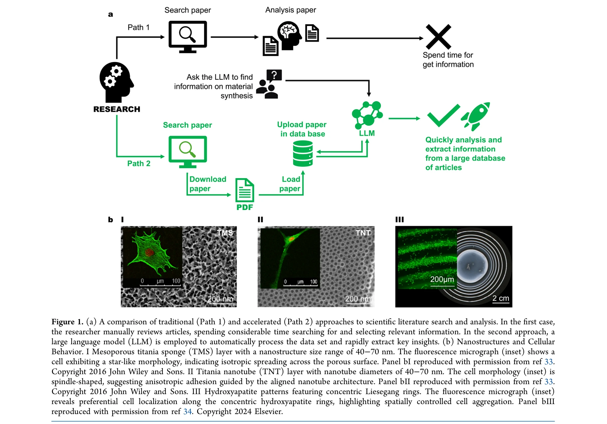
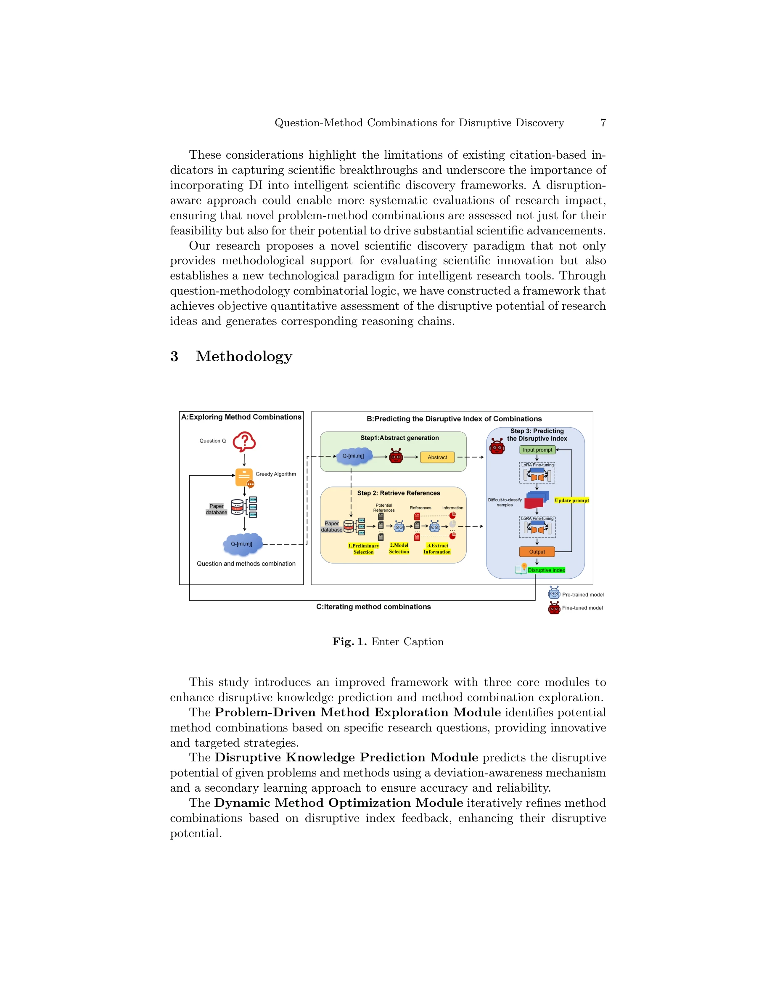
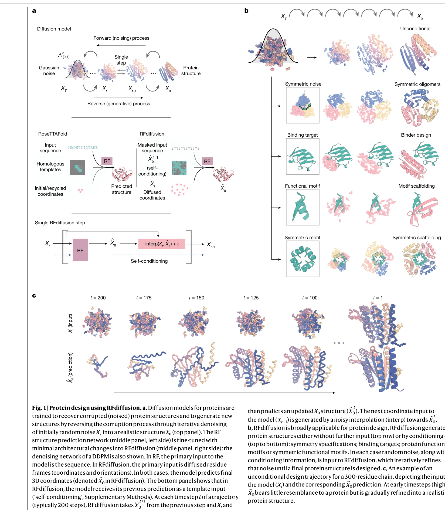
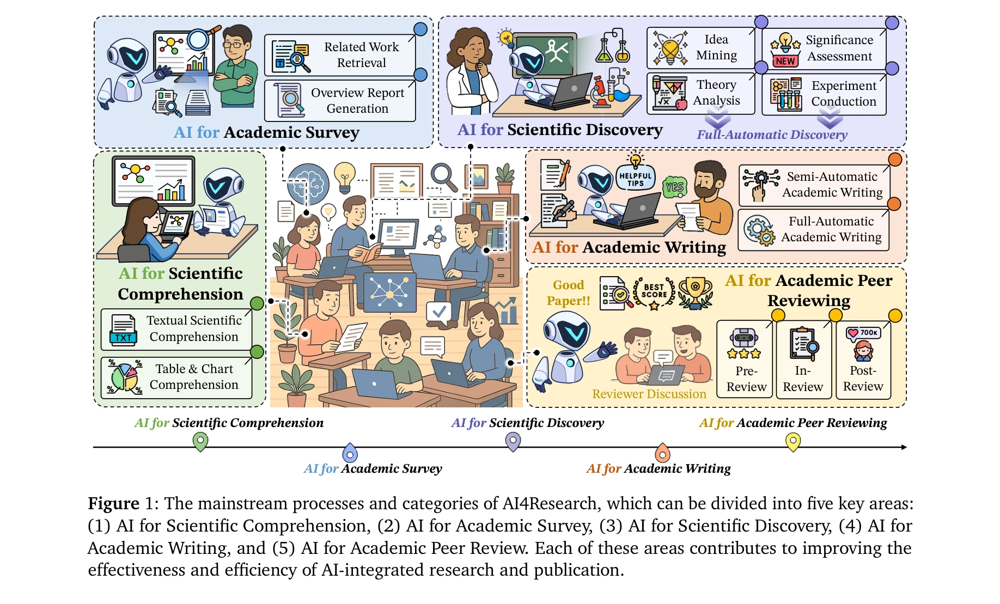
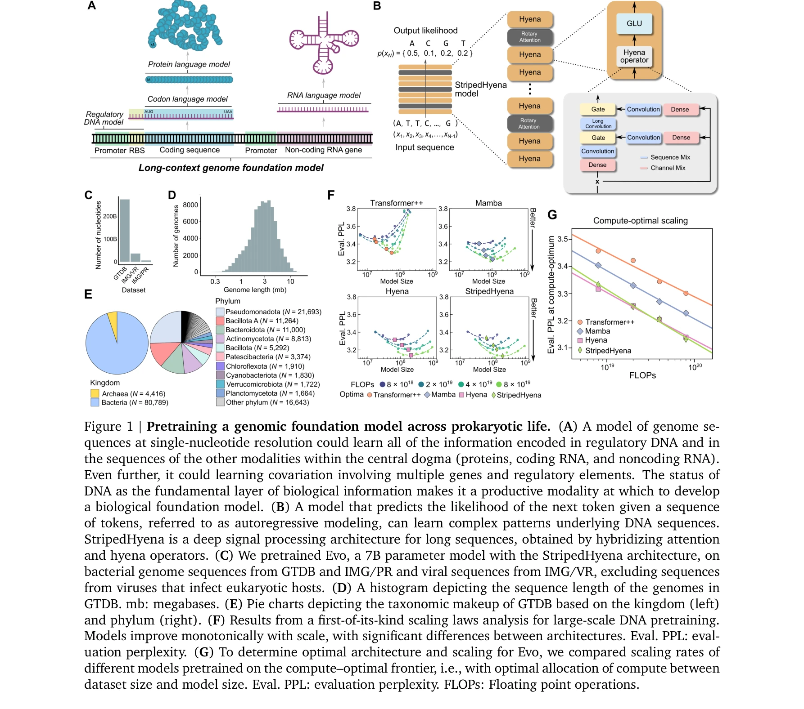
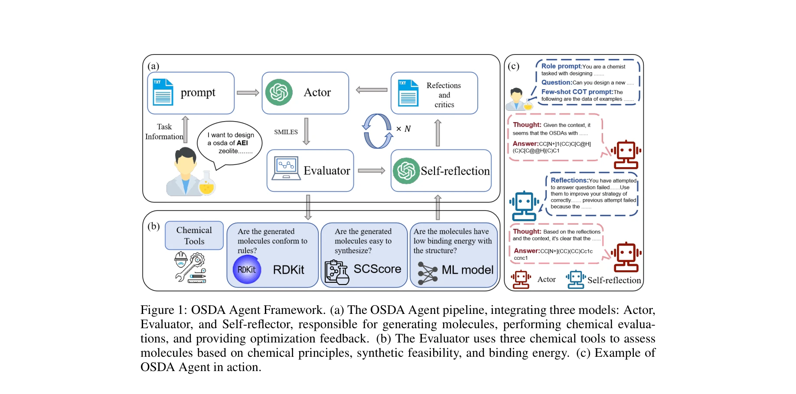
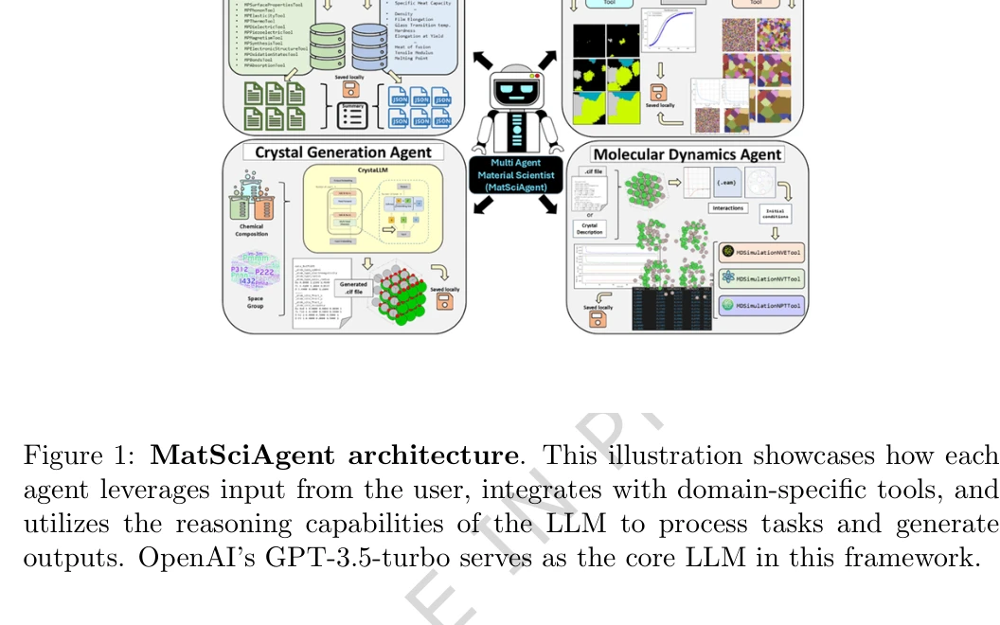
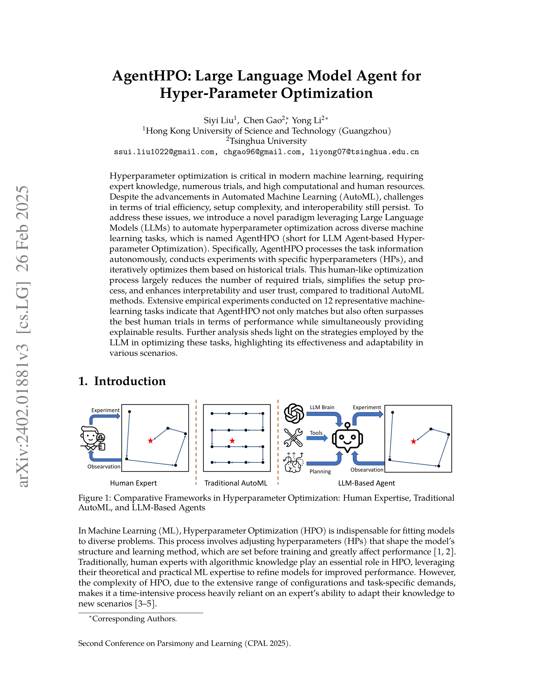

AI for Science — Paper Curation
Research Timeline

AI for Science(AI4S) 분야는 2017년 물리 정보 신경망(Physics-Informed Neural Networks)의 등장으로 본격적인 발전이 시작되어, 2026년 현재 과학 연구의 전 과정을 자동화하는 포괄적 시스템으로 진화했다. 초기에는 Neural ODEs(Chen et al., 2018)와 같은 특화된 신경망 응용에서 출발했으나, 2021년 AlphaFold의 단백질 구조 예측 혁명을 거쳐 2023년 ChatGPT의 과학 연구 적용으로 패러다임 전환을 맞이했다. 특히 2023년 발표된 Coscientist와 A-Lab은 완전 자동화된 실험 과학을 시연하며 자율 실험실(Autonomous Labs)의 시대를 열었고, 2024년 AI Scientist는 아이디어 생성부터 논문 작성까지 전체 연구 파이프라인을 자동화하는 개념적 전환점이 되었다.
현재 이 분야는 크게 세 가지 핵심 축으로 발전하고 있다. 첫째, 기반 모델과 언어 에이전트(Foundation Models & LLM Agents)가 과학적 발견 자동화를 가능케 하고 있으며, AutoGen(Microsoft, 2023)과 같은 대화형 프레임워크가 다중 에이전트 협업을 실현했다. 둘째, 도메인별 특화 응용이 가속화되어 ChemCrow(2023)는 화학 도구와 LLM을 통합했고, MechAgents는 물리학 문제 해결에 특화되었다. 셋째, 과학적 지식 시스템이 RAG(Retrieval-Augmented Generation) 기술과 결합하여 OpenScholar와 PaperQA 같은 고급 문헌 분석 도구로 발전했다.
2025-2026년 현재 가장 주목할 만한 발전은 다중 에이전트 시스템(Multi-Agent Systems)의 폭발적 성장이다. ResearchTown과 VIRSCI 같은 플랫폼은 AI 에이전트들이 가상 연구 커뮤니티를 형성하여 독립적으로 가설을 생성하고 검증하는 수준에 이르렀다. 특히 DeepSeek-R1(2025)은 인간의 감독 없이 순수 강화학습만으로 복잡한 추론 능력을 획득할 수 있음을 증명했고, 이는 AI의 자율적 과학 연구 능력에 대한 새로운 가능성을 열었다.
그러나 이러한 급속한 발전과 함께 새로운 도전 과제들도 부상했다. 2024년 여러 연구에서 자동화된 피어 리뷰 시스템의 보안 취약점이 발견되었고, AI가 생성한 연구 결과의 신뢰성과 해석 가능성에 대한 우려가 제기되었다. 이에 대응하여 TrustLLM과 같은 포괄적 신뢰성 평가 프레임워크가 개발되었으며, GEEX와 같은 기계적 해석 가능성(Mechanistic Interpretability) 도구들이 등장했다.
향후 이 분야는 AI 네이티브 과학(AI-Native Science) 인프라 구축으로 향하고 있다. 2026년 현재 ToolUniverse와 같은 개방형 프레임워크가 AI 과학자 능력을 민주화하고 있으며, 자율적 가설 생성, 실험 설계, 결과 분석, 논문 작성을 통합하는 엔드투엔드 시스템이 현실화되고 있다. 특히 물리학 정보를 통합한 신경망, 자율 실험실, 다중 에이전트 오케스트레이션의 융합은 과학적 방법론 자체를 근본적으로 재정의하고 있으며, 이는 인간과 AI가 협업하는 새로운 과학 연구 패러다임의 도래를 예고하고 있다.
Research Insights 5 findings

Category Overview
AI 기반 신물질 및 신약 발견(AI-Driven Materials and Drug Discovery) 카테고리는 과학 연구의 자동화와 가속화를 목표로 하는 138편의 논문을 포함하고 있습니다. 이 분야는 Physics Informed Deep Learning, Neural Differential Equations, 그리고 Reward-guided Diffusion Models 같은 고급 기계학습 기법을 활용하여 물질 발견과 신약 개발 프로세스를 혁신하고 있습니다[619][695]. AI Scientific Discovery와 AI Research Ideation을 통해 과학자들의 가설 생성(Hypothesis Generation) 과정을 자동화하고, Multimodal Scientific Reasoning과 Mechanistic AI Interpretability를 통해 복잡한 과학 현상을 체계적으로 분석하고 있습니다[363][575]. 단백질-신약 설계 모델(Protein-Drug Design Models)과 3D 분자 생성(3D Molecular Generation) 기술은 Biomedical Causal Modeling과 결합되어 더욱 정교한 약물 발견을 가능하게 하고 있습니다[171][686]. 또한 Foundation Models, Large Language Models의 도메인 적응(Domain Adaptation), 그리고 AI Safety & Bias 고려를 통해 신뢰할 수 있는 과학 AI 시스템 구축에 집중하고 있으며, 로봇 기반 자동 실험실(Autonomous Laboratory)과 폐루프 상호작용(Closed-loop Interaction)은 이론-실험의 통합을 실현하고 있습니다[099][658][878].
- AI Scientific Discovery: AI 과학 발견(AI Scientific Discovery)은 인공지능 기술을 활용하여 과학 연구의 속도와 효율성을 획기적으로 향상시키는 분야입니다. 특히 화학 반응 공간 탐색[684], 자동화된 화학 합성 개발[096], 그리고 대규모 언어 모델(Large Language Models)을 기반한 자율 화학 연구[138] 등에서 AI의 혁신적 역할이 주목되고 있습니다. 실시간 실험-이론 상호작용[658]과 연합 학습(Federated Learning) 기술[694]을 통해 다양한 연구 시설 간 데이터 협업이 가능해졌으며, 이는 과학 발견의 시간을 단축시키고 있습니다. 생성 AI(Generative AI)와 ChatGPT와 같은 대규모 언어 모델은 과학 연구의 패러다임을 근본적으로 변화시키고 있으며[878], 연구 개발 분야에서 인공지능의 활용[106]은 이제 선택이 아닌 필수 요소가 되었습니다. 이러한 기술들은 신약 개발, 신소재 발견, 과학적 가설 검증 등 광범위한 분야에서 인류의 과학적 진보를 가속화하고 있습니다.
- AI Research Ideation: AI 연구 아이디어 생성(AI Research Ideation)은 대규모 언어 모델(Large Language Models, LLM)과 AI 기술을 활용하여 과학 연구의 초기 아이디어 단계를 자동화하고 가속화하는 분야입니다. [019]에서 검토된 바와 같이 LLM 기반 아이디어 생성 방법론들은 화학, 재료과학, 약물 발견 등 다양한 분야에서 연구자의 창의적 사고를 보조합니다. [081]과 [115]의 연구들은 LLM이 단순한 아이디어 제시를 넘어 화학 도구(chemistry tools) 통합과 실제 구현 능력(implementation capability)을 갖추어야 함을 강조합니다. 또한 [045]와 같은 전문화된 도구들은 연구 아이디에이션 프로세스를 체계적으로 가속화(accelerate)하며, [392]의 그래프 기반 프레임워크(graph-based framework)와 같은 고도화된 기법들이 새로운 과학적 개념의 발견을 지원합니다. 이러한 AI 기반 접근법들은 대학 수준의 과학 문제 해결[706]부터 정리(theorem) 기반 질의응답[808]까지 광범위한 과학적 사고 능력을 평가하고 향상시킵니다. AI 연구 아이디에이션은 전통적 연구 방식의 효율성을 크게 향상시키는 동시에 새로운 발견의 가능성을 확대하는 핵심 기술입니다.
- Multimodal Scientific Reasoning: 멀티모달 과학적 추론(Multimodal Scientific Reasoning)은 텍스트, 이미지, 그래프 등 다양한 형태의 데이터를 통합하여 과학적 문제를 해결하는 AI 기술입니다. [691]과 [552]에서는 다학제적 과학 데이터셋을 구축하여 AI 모델이 복합적인 과학 정보를 이해하고 추론할 수 있도록 지원합니다. [345]와 [167]은 생물의학 분야에 특화된 파운데이션 모델(Foundation Models)을 개발하여 약물 발견 및 분자 구조 분석에 필수적인 도메인 전문 지식을 반영합니다. [413]과 [055]는 대규모 언어모델(Large Language Models)과 멀티모달 비전(Multimodal Vision) 기술을 결합하여 의료 및 과학 응용에서 인간-AI 협업을 강화합니다. 이러한 접근 방식은 신약 개발, 의료 진단, 과학 논문 이해 등 다양한 산업 분야에서 AI의 효율성과 신뢰성을 획기적으로 향상시킵니다.
- Materials Discovery Hypotheses: 재료 발견 가설(Materials Discovery Hypotheses)은 AI 기반 신소재 개발에서 새로운 물질의 특성과 구조를 예측하고 검증하는 핵심 기술 분야입니다. 이는 자율 실험실(autonomous laboratory) 시스템과 머신러닝 모델을 활용하여 대규모 합성 및 특성화 데이터를 기반으로 물질 발견을 가속화합니다[099][695]. 파운데이션 모델(foundation models)과 머신러닝 포텐셜(machine-learned potential) 같은 고급 AI 기술들이 합금, CVD 공정 최적화 등 다양한 물질 시스템의 탐색을 지원합니다[343][372]. 특히 강화학습(reinforcement learning) 기반 에이전트와 가설 생성 알고리즘은 재현 가능한 구조 발견과 설계 기준 도출을 통해 물질 공간 탐색의 효율성을 극대화합니다[241][569]. 이러한 접근 방식은 기존의 역량 밖의 영역까지 탐색을 확장하며, 검증 제약 조건을 고려한 플로우 확장 기법으로 더욱 신뢰성 있는 발견을 가능하게 합니다[867].
- AI Drug Discovery: AI 신약 개발(AI Drug Discovery)은 인공지능 기술을 활용하여 신약 발견 과정을 가속화하고 최적화하는 분야입니다. 대규모 언어모델(Large Language Models, LLM) 기반의 지능형 에이전트들이 신약 발굴 파이프라인을 자동화하고 약물-질병 상호작용(drug-disease interaction) 분석을 수행하며, 화학적 공간 탐색을 효율적으로 진행할 수 있습니다[292][490]. 파운데이션 모델(foundation models)의 미세조정(fine-tuning)과 대조학습(contrastive learning) 기법을 통해 단일세포 데이터 분석 및 약물 재용도화(drug repurposing)의 정확성이 향상되고 있습니다[306][291]. 또한 LLM의 환각(hallucination) 현상을 역으로 활용하거나 통합 실험실 오케스트레이션(whole-lab orchestration)을 통해 실제 신약 개발 워크플로우를 구현하는 연구가 진행 중입니다[397][043]. 이러한 AI 기반 접근법들은 전통적 신약 개발의 비용과 시간을 대폭 단축하면서도 발견 효율성을 극대화하는 혁신적 패러다임을 제시하고 있습니다.
- Neural Differential Equations: Neural Differential Equations (신경 미분 방정식)은 물리 현상과 복잡한 동역학계를 학습하기 위해 심층 신경망을 미분 방정식과 결합한 혁신적인 접근 방식입니다. [572]의 Neural Ordinary Differential Equations는 이 분야의 기초 연구로, 연속 시간 동역학을 신경망으로 모델링하는 새로운 패러다임을 제시했습니다. Physics-Informed Neural Networks (PINN)는 물리 법칙을 손실 함수에 포함시켜 데이터 부족 문제를 해결하며, [619]에서 이론적 기초와 실제 적용 방법을 상세히 다루고 있습니다. [454]의 Lagrangian neural networks와 같은 구조-보존 접근법들은 에너지 보존 법칙을 만족하는 신경망을 설계하여 물리적 정확성을 보장합니다. [576]에서 다루는 비선형 확률 동역학 문제의 해결은 신경 미분 방정식이 양자역학 및 고전역학 영역에서 얼마나 광범위하게 적용될 수 있는지 보여줍니다. 이러한 기법들은 약물 발견 및 신소재 개발에서 복잡한 시스템의 거동을 예측하고 최적화하는 데 핵심적인 역할을 합니다.
- Structured Research Frameworks: Structured Research Frameworks(구조화된 연구 프레임워크)는 AI 기반 신약개발과 신소재 발견 분야에서 과학적 실험과 설계 과정을 체계적으로 자동화하고 최적화하는 방법론들을 다룹니다. 이 분야의 연구들은 Foundation Models(기초 모델)을 활용하여 과학 데이터에 특화된 학습 프레임워크를 구축하고 [829], AI 기반의 실험 설계 자동화(automated experimental design)를 통해 과학적 발견 과정을 가속화하는 데 중점을 두고 있습니다 [082]. Domain adaptation(도메인 적응) 기법을 통해 사전학습된 언어 모델들을 생물학, 물리학 등 특정 분야에 효과적으로 적응시키고 [287], 생물학적 문제 해결을 위한 종합적인 벤치마크(BioProBench)를 개발하여 AI 모델의 성능을 평가합니다 [169]. Feedback-refined agent methodology(피드백 기반 에이전트 방법론)와 같은 고급 기술들은 의료 응용 분야에서 모델의 정확성을 향상시키는 동시에 [350], 과학적 혁신을 체계적으로 모델링하는 프레임워크를 제공합니다. 이러한 구조화된 접근 방식은 신약개발 및 신소재 발견의 효율성을 크게 증대시키며 과학 연구의 패러다임 변화를 주도하고 있습니다.
- Protein-Drug Design Models: 단백질-약물 설계 모델(Protein-Drug Design Models)은 인공지능을 활용하여 단백질 구조 예측과 약물 분자 설계를 통합적으로 수행하는 첨단 기술 분야입니다. 이 분야는 대규모 시뮬레이션 기술[1129]과 생물분자 상호작용 모델링[171]을 통해 신약 개발의 속도와 정확성을 획기적으로 향상시킵니다. 딥러닝 기반의 단백질 시퀀스 설계[686]와 그래프 신경망(Graph Networks)을 이용한 양자 특성 예측[304]은 계산 효율성을 극대화하면서도 높은 신뢰도의 결과를 제공합니다. 대규모 언어 모델(Large Language Model)을 활용한 다중 에이전트 시스템[638]과 마크로분자 설계[472]는 단백질 발견 과정을 자동화하고 혁신적인 분자 구조 생성을 가능하게 합니다. 리간드 전하 예측[1106]과 SO(3)-동등성을 고려한 해밀턴 행렬식 계산[307]과 같은 세부 기술들은 단백질-약물 복합체의 물리화학적 성질을 정확히 모델링하여 임상 효과를 극대화합니다.
- AI Hypothesis Generation: AI 가설 생성(AI Hypothesis Generation)은 인공지능을 활용하여 과학 연구에서 새로운 가설과 아이디어를 자동으로 도출하는 기술 분야입니다. [363]에서는 추론(reasoning)에서 학습(learning)으로의 전환 과정을 통해 과학적 가설 발견의 메커니즘을 분석하고 있으며, [418]에서는 재료 과학 분야에서 신물질 발견과 설계를 위해 AI 기반 가설 생성 프레임워크를 제시하고 있습니다. [194]와 [763]은 각각 체인 오브 아이디어(chain of ideas) 방식과 구조화된 패턴(structured patterns)을 활용하여 연구의 혁신성을 높이는 방법론을 제안합니다. [1083]의 대규모 언어모델(large language models)을 이용한 과학 방정식 발견 프레임워크와 [725]의 컨텍스트 인식 과학 아이디어 생성(context-aware scientific ideation) 기술은 도메인 특화 지식을 바탕으로 더욱 정확한 가설을 생성하는 데 기여합니다. 이러한 AI 기반 가설 생성 기술은 신약 개발, 신소재 설계 등 과학 혁신의 속도를 획기적으로 단축시킬 수 있는 잠재력을 가지고 있습니다.
- Biomedical Causal Modeling: 생의학 인과 모델링(Biomedical Causal Modeling)은 의료 및 약물 발견 분야에서 인과관계를 규명하여 더욱 정확한 예측과 의사결정을 가능하게 하는 AI 기술입니다. 언어 모델과 머신러닝을 활용하여 질병 위험도 예측[068], 유전자 조절 네트워크 발굴[505], 약동학 예측[618] 등 다양한 생의학 문제를 해결합니다. 특히 대규모 언어 모델(Large Language Model, LLM)을 통한 인과 구조 추론[474]과 지시 튜닝(Instruction Tuning)[159]은 제한된 데이터 환경에서도 강력한 성능을 발휘합니다. 임상 의사결정 지원을 위해 추론 능력(Reasoning Capability)을 강화한 모델들[225]도 개발되고 있으며, 이러한 기술들은 정밀의학(Precision Medicine) 실현의 핵심 기반이 됩니다. 생의학 인과 모델링은 약물 개발 시간 단축, 치료 효과 증대, 부작용 최소화 등을 통해 헬스케어 혁신을 주도할 것으로 기대됩니다.
- Mechanistic AI Interpretability: Mechanistic AI Interpretability는 AI 모델의 내부 작동 원리를 이해하고 설명하는 분야로, 특히 머신러닝 시스템의 의사결정 과정을 투명하게 규명하는 것을 목표로 합니다. 언어 모델(Language Model)의 추론 능력을 검증하는 연구 [182]와 물리 정보 기반 화학 규칙을 활용한 재료 발견 연구 [1104]는 AI 모델이 얼마나 신뢰성 있게 작동하는지 평가하는 데 기여합니다. 블랙박스(Black-box) 환경에서의 그래디언트 기반 설명 방법론 [582]과 대규모 언어 모델의 내부 메커니즘을 밝히려는 시도 [836]는 AI 해석가능성(Interpretability)을 실현하기 위한 핵심 연구들입니다. 이러한 기술들은 신약 개발과 신소재 발견 분야에서 AI 모델의 신뢰도를 높이고 과학적 근거를 강화하는 데 필수적입니다.
- Reward-guided Diffusion Models: Reward-Guided Diffusion Models는 확산 모델(Diffusion Models)의 생성 과정을 보상 신호(Reward Signal)로 유도하여 원하는 특성을 가진 분자나 물질을 효율적으로 탐색하는 기술입니다. [446]에서는 반복적 증류(Iterative Distillation)를 통해 보상 신호에 맞춰 확산 모델을 미세조정(Fine-tuning)하는 방법을 제시하며, [269]에서는 미분 없이도 연속 및 이산 공간에서 가이던스(Guidance)를 적용할 수 있는 도함수 자유 방법(Derivative-Free Guidance)을 제안합니다. [682]에서는 추론 시간(Inference-Time)에 보상 유도 반복 개선(Reward-Guided Iterative Refinement)을 통해 생성된 후보 분자를 점진적으로 최적화하는 기법을 다루고 있습니다. [296]에서는 동적 탐색(Dynamic Search)을 활용하여 추론 시간 정렬(Inference-Time Alignment)을 달성함으로써 모델의 생성 결과를 목표 목적함수에 더욱 잘 맞추는 방법을 소개합니다. 이러한 기술들은 신약 발견(Drug Discovery)과 신소재 개발(Materials Discovery)에서 계산 효율성을 크게 향상시킬 수 있습니다.
- AI Safety & Bias: # AI Safety & Bias AI 기반 신약 개발과 물질 발견 분야에서 AI 시스템의 안전성과 편향성 제거는 매우 중요한 과제입니다. Mechanistic interpretability를 통해 AI 모델의 의사결정 과정을 투명하게 분석하고 잠재적 위험을 사전에 파악하려는 연구가 진행 중입니다[527]. Large Language Model(LLM)의 정렬(alignment) 문제와 다차원적 편향을 이해하고 해결하기 위한 종합적인 접근 방식이 필요합니다[800]. Prompt 최적화 기술(DLPO)을 통해 모델의 견고성(robustness)과 일반화 성능을 향상시키려는 노력도 활발히 진행되고 있으며[281], 과학 문헌 데이터의 미세한 왜곡을 감지하는 방법론 개발도 함께 이루어지고 있습니다[852]. 이러한 연구들은 AI 기술이 의료 및 과학 분야에 안전하고 공정하게 적용되도록 하는 기반을 마련합니다.
- 3D Molecular Generation: # 3D 분자 생성(3D Molecular Generation) 3D 분자 생성은 인공지능을 활용하여 원하는 물성을 가진 새로운 분자 구조를 자동으로 설계하는 기술입니다. 기존의 그래프 기반 생성 모델인 MolGAN [555]은 암묵적 생성 모델(implicit generative model)을 통해 소분자(small molecules)의 그래프 표현을 학습하며, 이를 통해 새로운 분자 후보를 효율적으로 생성할 수 있습니다. 더 나아가 DMFlow [282]와 같은 흐름 매칭(flow matching) 기반 접근법은 무질서한 물질(disordered materials)의 3D 구조를 생성하여 재료과학 분야의 응용을 확대하고 있습니다. 분자의 기하학적 정보를 활용한 토큰화(tokenization) 방식 [383]은 언어 모델과의 통합을 가능하게 하며, DNA 시퀀스 설계 [459]와 같은 생물학적 분자 설계에도 적용되고 있습니다. 이러한 기술들은 신약 개발과 재료 발견 분야에서 연구 기간과 비용을 획기적으로 단축할 수 있는 잠재력을 가지고 있습니다.
- Bayesian Materials Inference: 베이지안 머티리얼 추론(Bayesian Materials Inference)은 불확실성을 정량화하면서 재료의 물리적 특성을 예측하는 고급 통계 기법입니다. 시뮬레이션 기반 추론(Simulation-based Inference) 방법론은 복잡한 재료 시스템의 파라미터 추정과 모델 검증을 효율적으로 수행할 수 있게 해주며, 이는 신약 개발 및 재료 설계 분야에서 핵심적인 역할을 합니다 [799]. 머신러닝 기반 원자간 포텐셜(Machine-Learned Interatomic Potentials)은 전자구조 계산의 비용을 획기적으로 줄이면서도 정확한 물리적 특성 예측을 가능하게 하며, 베이지안 프레임워크와 결합되어 더욱 신뢰할 수 있는 결과를 제공합니다 [516]. 또한 베이지안 최적화(Bayesian Optimization) 기법은 세포 배양 배지(Cell Culture Media) 개발과 같은 복잡한 생물학적 시스템의 개발 시간을 단축하고 실험 효율성을 극대화할 수 있습니다 [1125]. 이러한 베이지안 머티리얼 추론 접근법은 데이터 기반의 의사결정을 통해 신약 개발 주기를 가속화하고 재료 발견의 성공률을 높이는 데 중요한 기여를 하고 있습니다.
- Scientific Memory Calculators: AI 기반 물질 및 신약 발견 분야에서 과학적 메모리 계산기는 대규모 생물정보 데이터를 효율적으로 처리하고 분석하는 핵심 도구입니다. [699]의 SCANPY는 단일세포 유전자 발현 데이터(single-cell gene expression data)의 대규모 분석을 가능하게 하는 파이썬 기반 라이브러리로, 복잡한 생물학적 시스템을 신속하게 해석할 수 있습니다. [095]의 AMDAT는 분자동역학(molecular dynamics) 시뮬레이션 결과를 분석하는 오픈소스 툴킷으로, 단백질 접힘과 약물-표적 상호작용 등 신약 개발의 중요한 메커니즘을 이해하는 데 활용됩니다. 이러한 과학적 메모리 계산기들은 막대한 양의 계산 데이터를 실시간으로 처리하면서 연구자의 인지적 부담을 줄여줍니다. [699]와 [095]와 같은 도구들의 통합 활용은 AI 기반 신약 개발 파이프라인에서 데이터 기반 의사결정을 가속화하는 데 중요한 역할을 합니다.
- OFET Device Synthesis: OFET Device Synthesis (유기 박막 트랜지스터 소자 합성)는 AI 기술을 활용하여 유기 반도체 물질의 개발과 최적화를 가속화하는 분야입니다. 대규모 언어 모델(Large Language Model, LLM) 기반의 AI 에이전트는 방대한 과학 문헌과 실험 데이터를 학습하여 새로운 유기 반도체 재료의 구조 설계 및 합성 경로를 자동으로 제안할 수 있습니다[480]. 이러한 접근 방식은 기존의 시행착오적 재료 탐색 과정을 크게 단축하고, 고성능 OFET 소자 개발에 필요한 최적화된 분자 구조를 신속하게 도출하는 데 기여합니다. AI 기반의 합성 설계는 전하 이동도(charge mobility), 안정성(stability), 용해도(solubility) 등 OFET 성능에 영향을 미치는 주요 특성들을 동시에 고려하여 우수한 후보 물질들을 발굴합니다[480]. 이 기술은 지속가능한 전자기기 개발과 혁신적인 디바이스 응용 분야를 위한 차세대 재료 발견의 핵심적 도구로 평가받고 있습니다.
- Systematic Framework of Application Methods for Large Language Models: 대규모 언어모델(Large Language Models, LLM)의 체계적 적용 방법론은 AI 기반 신약 개발 및 신소재 발견 분야에서 혁신적인 변화를 주도하고 있습니다. 이러한 접근 방식은 복잡한 화학 데이터와 생물학적 정보를 처리하여 신약 후보물질 탐색 및 재료 특성 예측을 가속화할 수 있습니다. LLM의 자연어 처리(Natural Language Processing, NLP) 능력을 활용하면 과학 문헌의 광대한 데이터베이스에서 유용한 정보를 추출하고 분석할 수 있으며, 이를 통해 연구 개발 시간을 획기적으로 단축할 수 있습니다. [784]에서 제시된 체계적 프레임워크는 LLM을 신약 개발 파이프라인(Drug Discovery Pipeline)의 각 단계에 효과적으로 통합하는 방법을 보여줍니다. 이러한 방법론은 분자 설계(Molecular Design), 약물 활성도 예측(Drug Activity Prediction), 그리고 독성 평가(Toxicity Assessment) 등 다양한 응용 분야에서 실용적 가치를 입증하고 있습니다. 궁극적으로 LLM 기반의 체계적 접근법은 신약 및 신소재 개발의 효율성과 혁신성을 동시에 향상시키는 핵심 기술이 될 것으로 예상됩니다.
⚠ 갭: 실험실 간 데이터 호환성과 표준화된 자동화 프로토콜의 부재로 확산이 제한되고 있다.
🏛 정책: 자율 실험실 구축을 위한 표준화 지원과 중소기업 접근성 확대 정책이 필요하다.
SARS-CoV-2 simulations go exascale to predict dramatic spike opening and cryptic pockets across the proteome

Fig. 1 | Summary of Folding@home’s computational power. a, The growth of Folding@home in response to COVID-19. The cumul
 *Fig. 1 | Summary of Folding@home’s computational power. a, The growth of Folding@home in response to COVID-19. The cumul* Folding@home 분산 컴퓨팅 플랫폼으로 exascale 수준의 계산 자원을 확보하여 SARS-CoV-2 바이러스 단백질의 전체 구조 앙상블(structural ensemble)을 밀리초 단위로 시뮬레이션하고, 스파이크 단백질의 극단적 개방 현상과 약물 타겟이 될 수 있는 '숨겨진 포켓(cryptic pockets)'을 예측했다.
분산 컴퓨팅으로 exascale 성능을 달성하고 0.1초 분량의 대규모 분자동역학 시뮬레이션 데이터를 생성하여 SARS-CoV-2 단백질의 동적 구조를 전례 없이 상세히 규명한 획기적 연구이다. 스파이크 개방 메커니즘 발견과 50개 이상의 약물 표적 제시는 COVID-19 치료제 개발에 직접적인 기여를 하며, 오픈 사이언스 원칙에 따른 데이터 공유는 과학 공동체 전체의 신약 개발 가속화를 촉진했다.
Boltz-1 Democratizing Biomolecular Interaction Modeling

본 논문은 생체분자 복합체(biomolecular complexes)의 3D 구조 예측에서 AlphaFold3 수준의 성능을 달성하면서도 완전히 공개된 오픈소스 모델인 Boltz-1을 소개한다. MIT 라이선스 하에 모든 코드, 가중치, 데이터셋을 공개함으로써 구조생물학 연구의 민주화를 추구한다.
Boltz-1은 AlphaFold3 수준의 성능을 갖춘 첫 번째 완전 공개 모델로서, Boltz-steering을 통한 물리적 제약 조건 통합과 대폭 감소된 계산량은 높이 평가할 만하다. 단순한 모델 공개를 넘어 구조생물학 연구의 민주화를 실현하는 중요한 이정표이며, MIT 라이선스 하의 완전 공개는 전 세계 과학 커뮤니티의 협력과 혁신을 촉진할 것으로 예상된다.
Robust deep learning based protein sequence design using ProteinMPNN

 *ProteinMPNN 아키텍처: 메시지 패싱 신경망(MPNN) 기반의 순서-비의존적 자가회귀 모델로, 다중 체인 및 대칭성을 고려한 위치 결합 설계 가능* **깊은 신경망 기반 단백질 서열 설계 방법 ProteinMPNN을 개발하여, 기존의 물리 기반 방법(Rosetta)보다 우수한 성능을 보이며 다양한 단백질 설계 문제에 광범위하게 적용 가능함을 입증했다.**
ProteinMPNN은 깊은 학습 기반 단백질 설계에서 기존 물리 기반 방법의 한계를 혁신적으로 극복한 작업으로, 순서-비의존적 자가회귀와 견고성 중심의 학습 철학이 핵심이며, 모노머부터 올리머, 나노입자까지 광범위한 실용적 적용 가능성을 갖춘 분야 선도적 연구다.
Efficient and Equivariant Graph Networks for Predicting Quantum Hamiltonian

양자 해밀토니안(Hamiltonian) 행렬 예측을 위한 SE(3)-등변(equivariant) 그래프 신경망 QHNet을 제안하며, 텐서곱(tensor product) 연산을 92% 감소시켜 기존 방법 대비 3배 이상의 속도 향상과 50% 메모리 절감을 달성한다.
본 논문은 SE(3)-등변 신경망의 고질적인 비효율성을 우아한 아키텍처 설계로 해결하며, 양자 해밀토니안 예측에서 실질적 가치를 입증했다. 다만 더 광범위한 분자 시스템에 대한 일반화 가능성 검증이 향후 과제이다.
ProtAgents: protein discovery via large language model multi-agent collaborations combining physics and machine learning

Figure 1: 단백질 발견 및 분석을 위한 다중 에이전트 AI 프레임워크. 각 에이전트는 프로필로 정의된 초점과 맞춤 함수에 접근 가능하며, 그룹 채팅 관리자를 통해 동적으로 협력한다.
 *Figure 1: 단백질 발견 및 분석을 위한 다중 에이전트 AI 프레임워크. 각 에이전트는 프로필로 정의된 초점과 맞춤 함수에 접근 가능하며, 그룹 채팅 관리자를 통해 동적으로 협력한다.* 본 논문은 대규모 언어모델(LLM, Large Language Model) 기반의 다중 에이전트 협업 시스템인 ProtAgents를 제안하여, 물리 기반 시뮬레이션과 머신러닝을 통합함으로써 de novo 단백질 설계 및 분석을 자동화한다. 각 에이전트는 특정 도메인 전문성을 가지고 동적으로 상호작용하면서 복잡한 단백질 설계 문제를 해결한다.
본 논문은 LLM 기반 다중 에이전트 시스템을 단백질 설계에 창의적으로 응용하여, 물리 기반 도구와 머신러닝을 동적으로 통합하는 새로운 패러다임을 제시한다. 자동화된 협력 메커니즘과 다양한 도메인 지식의 통합이 강점이나, LLM의 물리적 근거 부족과 계산 효율성 개선이 향후 과제로 남아 있다. 재료 설계와 AI의 융합 연구에 중요한 기여를 할 수 있는 잠재력 있는 작업이다.
The BOS-Lig Dataset: Accurate Ligand Charges from a Consensus Approach for 66,810 Experimentally Synthesized Ligands

Figure 1 and Supporting Information Table S1). Then, we enforced unit cell neutrality, inferring
 *Figure 4. Ligand charge workflow and results. a) Flowchart of the iterative procedure used to* 캠브리지 구조 데이터베이스의 126,985개 단핵 전이금속 착물에서 반복적 전하 균형 워크플로우를 통해 66,810개 리간드의 정확한 순 전하를 결정하고, 주제 모델링으로 25,146개 리간드의 기능적 응용 영역을 분류한 BOS-Lig 데이터세트를 구축했다.
이 연구는 결정학 데이터의 부정확성과 불완전성 문제를 체계적으로 해결하여 66,810개 리간드의 신뢰성 높은 전하 정보와 기능적 분류를 제공함으로써, 전이금속 착물의 전산 스크리닝과 데이터 기반 리간드 설계를 위한 탄탄한 기초를 마련했다.
Efficient Prediction of SO(3)-Equivariant Hamiltonian Matrices via SO(2) Local Frames

본 논문은 전자 구조 계산 가속화를 위해 해밀턴 행렬(Hamiltonian matrix)을 효율적으로 예측하는 QHNetV2 모델을 제안한다. SO(2) 국소 좌표계(local frames) 내에서 SO(2)-등변(equivariant) 연산을 수행함으로써, 계산량이 많은 SO(3) Clebsch-Gordan 텐서 곱(tensor product) 없이도 전역 SO(3) 등변성을 달성한다.
본 논문은 SO(2) 국소 좌표계를 이용하여 해밀턴 행렬 예측에서 계산 효율과 정확도를 동시에 달성한 실질적 기여를 제시하였으며, 특히 높은 각운동량 양자수가 필요한 상황에서 유용하다. 다만 이론적 심화, 더 광범위한 기저 함수 및 시스템 규모에 대한 검증, 그리고 명확성 개선이 필요하다.
Large language models design sequence-defined macromolecules via evolutionary optimization

Fig. 1: LLM 기반 진화 최적화의 개념도. (a) 단량체 서열→MD 시뮬레이션→2D 순서 매개변수 Z 추출 파이프라인, (d) LLM 에이전트가 서열을 제안하면 RNN 모델로 평가하는 반복 루프
사전학습된 대규모언어모델(LLM)인 Claude 3.5 Sonnet을 진화 최적화(evolutionary optimization) 알고리즘으로 활용하여 거대 분자의 자기조립 구조를 설계할 수 있음을 입증한 연구로, 전통적인 능동학습(active learning)과 진화 알고리즘보다 우수한 성능을 보였다.
본 논문은 대규모언어모델의 emergent behavior를 재료 과학의 실제 문제에 창의적으로 적용하여 기존 최적화 방법을 능가하는 성과를 보였다. 다만 RNN 근사값 기반 평가와 실제 MD 검증 부재, 그리고 LLM의 작동 원리에 대한 이론적 이해 부족이 한계로 지적되며, 향후 이러한 점들이 보완되면 더욱 강력한 기여가 될 수 있을 것으로 판단된다.
Robot-assisted mapping of chemical reaction hyperspaces and networks

그림 1: (a) 약 $25K의 저비용 로봇 시스템 주요 구성. (b) N차원 초공간에서 조건을 설정하고 UV-Vis 스펙트럼 획득. 모든 초공간 지점의 조정된 혼합물을 결합. (c) HPLC로 정제한 순수 생성물의 농도-흡수 보정곡선. (d) 각 초공간 지점의 UV-Vis 스펙트럼을 기준 스펙트럼의 선형 조합으로 분해. (e-i) 화학량론 제약 조건, 다중공선성 진단, 적합성 검증을 위한 잔차 분석.
저비용 로봇 플랫폼과 광학 검출을 통해 수천 개의 반응 조건에서 화학반응의 초공간(hyperspace) 전체를 매핑하여, 예측 불가능했던 반응 수율 분포, 숨겨진 중간체, 주생성물 전환점을 체계적으로 발견하는 새로운 방법론을 제시한다.
본 논문은 자동화 로봇과 광학 분광법, 스펙트럼 분해 알고리즘을 창의적으로 결합하여 화학 초공간의 '완전한 지도 제작(complete mapping)'이라는 오랫동안 달성 불가능했던 목표를 현실화했다. 저비용·고처리량 특성으로 학계 접근성을 극대화하면서 숨겨진 반응성과 중간체를 체계적으로 노출시킴으로써 합성 화학의 패러다임을 획기적으로 전환할 수 있는 기초 연구 성과이다.
Nobel Turing Challenge: creating the engine for scientific discovery

과학 발견의 과정을 자동화하고 가속화하기 위한 AI 시스템(AI Scientist)을 개발하는 것을 목표로 하는 거대한 도전(Grand Challenge)을 제시한다. 이는 노벨상 수준의 발견을 자율적으로 수행할 수 있는 AI를 2050년까지 구현하려는 야심찬 비전이다.
이 관점논문(perspective)은 과학적 발견의 자동화라는 거대하고 도전적인 문제를 명확한 비전과 구체적인 목표로 제시함으로써 AI 연구 커뮤니티에 새로운 방향을 제공하는 중요한 기여를 한다. 특히 가치 중심에서 탐색 중심으로의 패러다임 전환과 "Science of Science"라는 개념은 매우 혁신적이다. 다만 철학적 기초의 구체화, 기술적 실현 경로의 상세 제시, 그리고 사회적·윤리적 함의에 대한 깊이 있는 논의가 향후 필요하며, 실제 구현 과정에서 무편향 탐색의 실제 효과성이 검증되어야 한다는 한계가 있다.
Real-time experiment-theory closed-loop interaction for autonomous materials science

AMASE 시스템이 Sn-Bi 박막 상태도 매핑에 적용되는 개요. (a) 실시간 실험-계산 상호작용, (b) 실험 장치, (c) 조사 대상 상 영역
 *AMASE 시스템이 Sn-Bi 박막 상태도 매핑에 적용되는 개요. (a) 실시간 실험-계산 상호작용, (b) 실험 장치, (c) 조사 대상 상 영역* 본 논문은 **Autonomous MAterials Search Engine (AMASE)**를 통해 실시간으로 실험과 이론을 폐루프 형태로 자동 상호작용시켜 재료 탐색을 수행하는 혁신적 방법론을 제시한다. Sn-Bi 박막 이원 상태도를 단 8시간 만에 매핑하며, 필요한 실험 횟수를 6배 감소시켰다.
AMASE는 베이지안 능동학습과 CALPHAD 열역학을 실시간으로 통합하여 상태도 자동 매핑을 성공시킨 획기적 연구이며, 6배의 실험 횟수 감소와 8시간 내 완성은 고처리량 재료 탐색의 미래를 보여준다. 다만 다원 체계 확장과 동역학적 효과 고려 등 후속 과제가 남아있다.
Scalable Cross-Facility Federated Learning for Scientific Foundation Models on Multiple Supercomputers

Figure 1: 고정 마이크로배치 크기당 처리량 스케일링. 왼쪽 패널은 처리량(초당 샘플)을 보여주며, Aurora는 64개 노드에서 2,100 샘플/초을, Perlmutter 80GB와 Frontier는 각각 1,200과 1,000 샘플/초을 달성한다.
본 논문은 프라이버시 제약, 데이터 주권, 대규모 데이터 생성으로 인해 중앙화할 수 없는 과학 데이터를 다중 슈퍼컴퓨터 환경에서 연합학습(Federated Learning, FL)으로 훈련하는 확장 가능한 프레임워크를 제시하며, DOE 리더십급 슈퍼컴퓨터 4대에서의 실증을 통해 크로스-시설 FL의 실용성을 입증한다.
본 논문은 과학 응용을 위한 크로스-시설 연합학습의 실용성을 리더십급 HPC 환경에서 처음으로 포괄적으로 입증하였으며, GPU 메모리-통신 트레이드오프와 스케줄러 이질성이라는 구체적 병목을 드러내어 향후 HPC-aware FL 알고리즘 설계에 중요한 기초를 제공한다. 다만 대규모 현실적 조건 평가와 프라이버시 보장 검증 강화가 필요하다.
What ChatGPT and generative AI mean for science
생성형 AI(generative AI) 및 대규모 언어모델(Large Language Models, LLMs)이 과학 연구에 미치는 긍정적 잠재력과 부작용을 종합적으로 검토한 자연(Nature) 저널의 특집 기사로, 과학자들의 흥분과 우려가 공존하는 현 상황을 분석한다.
이 논문은 2023년 초 ChatGPT 열풍의 한복판에서 생성형 AI의 과학 분야 영향에 대한 가장 균형잡힌 초기 진단을 제공했으며, 단순한 기술 예측을 넘어 윤리적·법적·사회적 차원의 성찰을 담아낸 중요한 기록으로 평가된다. 다만 이후 급속한 기술 발전으로 인해 일부 내용이 시대적 맥락을 잃은 점은 아쉬움이 있다.
An automatic end-to-end chemical synthesis development platform powered by large language models

문헌 검색부터 정제까지 전 과정을 포괄하는 LLM 기반 다중 에이전트 시스템 및 자연언어 기반 웹 인터페이스
본 논문은 GPT-4 기반의 대규모 언어모델(LLM)을 활용한 통합 화학합성 개발 프레임워크(LLM-RDF)를 제시하여, 문헌 검색부터 반응 최적화, 규모 확대, 정제까지 전 과정을 자동화하는 엔드-투-엔드 플랫폼을 구현했다.
본 논문은 LLM의 다목적성을 활용한 화학합성 자동화의 새로운 패러다임을 제시하는 고도로 창의적인 연구로, 자연언어 기반 인터페이스와 통합 프레임워크 구축이라는 실질적 기여가 우수하나, 완전 자율화 미달성, 특정 모델 의존성, 제한된 화학적 범위 등의 한계가 있다. Nature Communications 수준의 학제 간 영향력 있는 공헌이다.
Artificial Intelligence in Research and Development

AI의 지능 향상이 진행 속도에 미치는 영향을 보여주는 핵심 도표
본 논문은 인공지능(AI)이 연구개발(R&D)의 아이디어 생산함수(ideas production function)에 미치는 영향을 평가하기 위한 이론적 프레임워크를 제시한다. 기계(AI 포함)와 인간을 R&D의 이질적 입력요소로 모델링하여, AI의 발전이 연구 진행 속도를 어느 정도 가속화할 수 있는지를 분석한다.
본 논문은 AI가 연구 진행 속도를 "얼마나" 가속화할 수 있는지를 규명하기 위한 핵심 이론적 틀을 제시하며, 기계 자동화 범위, 기계 생산성, 작업 간 병목의 세 가지 파라미터가 결과를 결정함을 명확히 한다. 다만 이들 파라미터의 실증적 측정과 구체 분야별 적용 사례가 추가될 경우 정책 영향력이 크게 증대될 것으로 예상된다.
Autonomous chemical research with large language models

Coscientist의 시스템 아키텍처. 플래너 모듈이 중심이 되어 웹 검색, 파이썬 코드 실행, 문서 검색, 실험 자동화 모듈들을 조율한다.
 *Coscientist의 시스템 아키텍처. 플래너 모듈이 중심이 되어 웹 검색, 파이썬 코드 실행, 문서 검색, 실험 자동화 모듈들을 조율한다.* GPT-4 기반의 다중 대형 언어 모델(LLM) 에이전트인 Coscientist는 웹 검색, 코드 실행, 실험 자동화를 통합하여 복잡한 화학 실험을 자율적으로 설계·계획·수행할 수 있는 시스템이다. 팔라듐 촉매 교차 결합 반응 최적화를 포함한 6가지 다양한 작업에서 자동화 실험 설계의 실행 가능성을 입증했다.
이 논문은 대형 언어 모델을 실제 화학 실험 자동화와 결합한 획기적인 사례를 제시하며, 특히 웹 검색을 통한 Hallucination 방지와 문서 검색을 통한 API 활용이 인상적이다. 다만 대규모 자동화 실험의 신뢰성, 오류 처리 능력, 그리고 현재 시스템의 한계(복잡한 다단계 합성, 주관적 평가)에 대한 더 깊은 분석이 필요하다.
Towards Scientific Discovery with Generative AI: Progress, Opportunities, and Challenges

AI 기반 과학 발견 프레임워크의 개요. 사용자 정의 문제 명세에서 시작하여 문헌 검색, 가설 생성, 실험 설계, 평가를 반복하는 과학적 탐구 사이클을 보여줌
 *AI 기반 과학 발견 프레임워크의 개요. 사용자 정의 문제 명세에서 시작하여 문헌 검색, 가설 생성, 실험 설계, 평가를 반복하는 과학적 탐구 사이클을 보여줌* 생성형 AI가 문헌 분석, 정리 증명(theorem proving), 실험 설계, 데이터 기반 발견 등 과학 연구의 개별 과제들에서 놀라운 진전을 이루었으나, 장기적 자율 과학 연구를 수행할 수 있는 통합된 AI 시스템은 여전히 부재한다. 본 논문은 과학 발견을 위한 포괄적 AI 시스템 개발의 핵심 과제와 연구 방향을 체계적으로 제시한다.
본 논문은 과학 발견을 위한 AI의 현재 진전과 미래 방향을 체계적으로 정리한 중요한 위치 논문으로, AI와 과학의 교집합에서 당면한 핵심 과제들을 명확히 제시한다. 개별 AI 기술의 구체적 혁신보다는 통합 시스템 구축을 위한 로드맵 제시라는 점에서 학계와 산업에 중요한 가이드를 제공할 수 있을 것으로 판단된다.
Biodsa-1k: Benchmarking data science agents for biomedical research

BIODSA-1K의 벤치마크 통계: 329개 논문에서 추출된 다양한 생의학 연구 유형과 데이터 분석 과제들, 데이터 테이블의 행과 열의 범위를 보여주는 버블 플롯
 *BIODSA-1K의 벤치마크 통계: 329개 논문에서 추출된 다양한 생의학 연구 유형과 데이터 분석 과제들, 데이터 테이블의 행과 열의 범위를 보여주는 버블 플롯* 본 논문은 생의학 연구에서 AI 에이전트의 가설 검증 능력을 평가하기 위해 1,029개의 가설 중심 과제와 1,177개의 분석 계획으로 구성된 BIODSA-1K 벤치마크를 제시한다. 329개 출판 논문에서 추출된 이 벤치마크는 실제 연구 워크플로우를 반영하며, 검증 불가능한 가설 사례를 포함하여 현실적인 데이터 과학 시나리오를 평가한다.
BIODSA-1K는 기존 생의학 AI 벤치마크의 규모, 복잡성, 현실성을 획기적으로 확대하며, 특히 검증 불가능 가설 포함과 근거-결론 정렬 평가는 AI 신뢰성 평가의 새로운 기준을 제시한다. 다만 자동 추출 과정의 오류 관리와 도메인 특화 기술 평가 보완이 필요하다.
The AI Scientist: Towards Fully Automated Open-Ended Scientific Discovery

Figure 1: The AI Scientist의 개념도 - 아이디어 생성부터 논문 작성 및 자동 리뷰까지의 전체 파이프라인
 *Figure 1: The AI Scientist의 개념도 - 아이디어 생성부터 논문 작성 및 자동 리뷰까지의 전체 파이프라인* 대규모 언어모델(LLM)을 기반으로 하는 완전 자동화된 과학 연구 수행 시스템으로, 아이디어 생성에서 실험 수행, 논문 작성, 동료 검토까지 전체 과학 연구 프로세스를 자동으로 처리할 수 있다. 한 편의 논문 생성에 15달러 미만의 비용이 소요되며, 자동 리뷰 시스템이 인간 수준에 가까운 성능으로 논문 품질을 평가한다.
본 논문은 대규모 언어모델의 능력을 과학 연구의 완전 자동화로 확장한 획기적 시도로, 저비용 고속도의 자동 연구 수행 가능성을 입증하였다. 다만, 생성 논문의 실제 학술적 가치, 다양한 도메인으로의 일반화 가능성, 과학 출판 시스템에 미칠 윤리적 영향에 대한 심층 분석이 필요하다.
A Survey of AI for Materials Science: Foundation Models, LLM Agents, Datasets, and Tools

Figure 1: Overview of our survey of AI for materials science (AI4MS), highlighting common tasks, categories of
 *Figure 1: Overview of our survey of AI for materials science (AI4MS), highlighting common tasks, categories of* 재료 과학(Materials Science)에서 기초 모델(Foundation Models), LLM 에이전트, 데이터셋, 도구를 종합적으로 조사한 서베이로, 과학 발견을 위한 확장 가능하고 범용적인 멀티모달 AI 시스템의 구현을 다룬다.
이 서베이는 재료 과학에서 기초 모델, LLM 에이전트, 데이터, 도구의 현황을 종합적이고 체계적으로 정리한 중요한 참고 자료로, 해당 분야 연구자들이 기술 현황을 빠르게 파악하고 미해결 문제를 식별하는 데 매우 유용하다.
AI for Science: An Emerging Agenda

Figure 1: Models along a spectrum from classical i.i.d models to strongly mechanistic differential
 *Figure 1: Models along a spectrum from classical i.i.d models to strongly mechanistic differential* 본 보고서는 Dagstuhl Seminar 22382의 결과물로서, 데이터 기반 모델링과 기계론적 모델링을 통합하여 복잡한 과학 문제 해결을 위한 AI 활용 방안을 제시한다. AI for Science를 학제간 협력의 중심점으로 정의하고, 기술 개발부터 커뮤니티 구축까지의 로드맵을 제안한다.
본 보고서는 AI for Science라는 신흥 분야를 정의하고 학제간 협력의 중요성을 설득력 있게 제시한 전략적 문서이다. 다양한 성공 사례와 명확한 로드맵을 통해 정책입안자와 연구자들에게 실질적 지침을 제공하나, 구체적 구현 방안과 평가 체계의 강화가 필요하다.
Evaluating Sakana's AI Scientist for Autonomous Research: Wishful Thinking or an Emerging Reality Towards 'Artificial Research Intelligence'(ARI)? arXiv preprint arXiv:2502.14297, 2025.
Sakana.ai의 AI Scientist는 연구 전체 생명주기(아이디어 생성, 실험 설계 및 실행, 논문 작성, 피어 리뷰)를 자동화하겠다고 주장하는 시스템이지만, 본 논문의 체계적 평가 결과 문헌 검토, 실험 실행, 원고 작성 등 여러 영역에서 심각한 결함을 발견했다.
본 논문은 과대 광고된 AI 시스템에 대한 첫 체계적 비판적 평가로서 학술 공동체에 중요한 현실 검증을 제공하며, 문헌 검토부터 실험 실행까지 구체적인 결함을 입증함으로써 ARI 기술의 현주소를 명확히 하고 향후 발전 방향을 제시한다는 점에서 매우 가치 있는 연구다.
SciAgents: Automating Scientific Discovery Through Bioinspired Multi-Agent Intelligent Graph Reasoning

본 연구는 대규모 온톨로지 지식 그래프(ontological knowledge graphs), 대형 언어 모델(LLMs), 그리고 다중 에이전트 시스템을 결합하여 과학 발견 프로세스를 자동화하는 SciAgents 프레임워크를 제시한다. 생물 영감 재료(biologically inspired materials) 분야에 적용하여 인간의 연구 방법을 초월하는 규모, 정밀도, 탐색 능력으로 숨겨진 학제간 관계를 발견했다.
본 논문은 온톨로지 지식 그래프, LLMs, 다중 에이전트 시스템을 통합하여 과학 발견을 자동화하는 혁신적 접근을 제시하며, 생물 영감 재료 분야에서 의미 있는 성과를 도출했으나, 생성된 가설의 실험적 검증과 더 광범위한 도메인 적용에 대한 추가 연구가 필요하다.
Simulations in the era of exascale computing
엑사스케일(exascale) 슈퍼컴퓨터의 등장으로 계산 재료과학(computational materials science) 분야에서 획기적인 발전이 가능해지고 있으며, 다양한 분야의 연구자들이 이 기술을 활용하여 새로운 시뮬레이션 가능성과 직면한 도전과제를 공유하는 관점 논문이다.
본 Viewpoint는 엑사스케일 컴퓨팅이 계산 과학 전반에 가져올 변혁적 기회를 다학제적 관점에서 균형 있게 제시하며, 기술 발전뿐 아니라 알고리즘 혁신, 검증 체계, 오픈 사이언스 문화의 중요성을 강조하는 전략적 문서로서의 가치가 높다.
Towards LLM Agents for Earth Observation

UnivEARTH 벤치마크는 NASA Earth Observatory 기사에서 추출한 140개의 지구 관측 관련 예/아니오 질문으로 구성되며, Google Earth Engine API를 활용하여 LLM 에이전트를 평가한다.
 *UnivEARTH 벤치마크는 NASA Earth Observatory 기사에서 추출한 140개의 지구 관측 관련 예/아니오 질문으로 구성되며, Google Earth Engine API를 활용하여 LLM 에이전트를 평가한다.* 본 논문은 지구 관측(Earth Observation, EO) 작업을 자동화하기 위한 LLM 에이전트의 준비도를 평가하기 위해 **UnivEARTH** 벤치마크를 제시하고, 현재 최첨단 모델들이 코드 실행 실패(58%)로 인해 33% 수준의 낮은 정확도만 달성함을 보여준다.
본 논문은 지구 관측이라는 실제 과학 도메인에서 LLM 에이전트의 신뢰성을 평가하는 의미 있는 벤치마크를 제시하며, 현 단계 AI 시스템의 현저한 한계를 객관적으로 입증함으로써 향후 연구 방향을 명확히 제시한다. 다만 질문 형식의 제한과 코드 실행 의존성으로 인한 평가 공정성 논의 필요 및 개선 방향 제시가 더 구체적일 수 있다는 점이 아쉬움.
Vibe physics: The AI grad student
Harvard 물리학 교수가 Claude AI를 감독하여 2주일 내에 고에너지 이론물리학 논문을 완성했으며, 이는 AI가 도메인 전문가의 지도 아래 frontier 과학 연구를 수행할 수 있음을 입증했다.
이 논문은 AI가 도메인 전문가의 적절한 지도 아래 실제 frontier 과학 연구를 수행할 수 있음을 최초로 엄밀하게 입증하는 landmark 연구이며, 방법론의 혁신성(구조화된 markdown 시스템, G2 문제 선택)과 실제 고에너지물리학 진전으로 향후 AI-scientist 패러다임에 깊은 영향을 미칠 것으로 예상된다.
BioAgents: Democratizing Bioinformatics Analysis with Multi-Agent Systems

 *Figure 2: (a) 두 개의 전문화된 에이전트 구조. (b) BioAgents 전체 개요. (c) BioAgents와 전문가 결과 비교* 본 논문은 소형 언어모델(Phi-3)을 기반으로 생물정보학 데이터로 미세조정하고 검색 증강 생성(RAG)을 통합한 다중 에이전트 시스템을 제안한다. BioAgents는 지역(local) 운영과 독점 데이터 기반 개인화를 가능하게 하며, 개념적 유전체학 작업에서 인간 전문가 수준의 성능을 달성한다.
본 논문은 소형 언어모델과 생물정보학 특화 미세조정을 통해 접근 가능한 AI 기반 생물정보학 지원 도구를 제시하는 가치 있는 시도이며, 개념적 유전체학 작업에서 전문가 수준의 성능을 달성했다. 그러나 코드 생성 역량의 현저한 성능 격차와 자체 반복 메커니즘의 한계는 실제 복잡한 파이프라인 구축 지원에 아직 거리가 있음을 보여준다.
From AI for Science to Agentic Science: A Survey on Autonomous Scientific Discovery

 *그림 1: 계산 도구에서 창의적 협력자까지 – AI의 4단계 여정. 에이전틱 사이언스는 AI for Science 내의 한 단계로, 주로 3단계(완전 에이전틱 발견)와 2단계(부분 에이전틱 발견)에 대응* 본 논문은 AI가 전문화된 계산 도구에서 자율적 과학 연구 파트너로 진화하는 과정을 체계화하며, **에이전틱 사이언스(Agentic Science)**를 AI for Science의 핵심 패러다임으로 위치지었다. 대규모 언어 모델(LLM)과 멀티모달 시스템을 통해 가설 생성, 실험 설계, 데이터 분석, 반복적 개선 등 과학적 발견의 전체 사이클을 자동화하는 AI 에이전트의 등장을 다룬다.
An autonomous laboratory for the accelerated synthesis of inorganic materials

A-Lab(자율 실험실)은 계산화학, 기계학습, 능동 학습을 통합한 로봇 시스템으로, 17일간의 연속 운영을 통해 57개 목표 재료 중 36개(63% 성공률)의 무기 분말 화합물 합성에 성공하였다.
본 논문은 계산 화면과 실험 검증 사이의 병목을 해결하는 획기적인 자율 실험실을 제시하며, ab initio 계산, 기계학습, 능동 학습의 통합을 통해 63%의 높은 합성 성공률을 입증하였다. 고체 분말 합성의 고유한 과제를 해결하고 향후 AI 기반 재료 발굴의 새로운 패러다임을 제시한다는 점에서 재료과학 분야의 중요한 이정표이다.
Scaling Deep Learning for Materials Discovery

GNoME 기반 효율적 발견. (a) 모델 기반 필터링과 DFT의 데이터 피드백 루프, (b) 381,000개의 신규 안정 물질 발견으로 기존 대비 거의 10배 증가, (c) 736개 구조의 독립적 실험 검증, (d) 6개 원소 포함 물질까지 확장된 예측 능력
 *GNoME 기반 효율적 발견. (a) 모델 기반 필터링과 DFT의 데이터 피드백 루프, (b) 381,000개의 신규 안정 물질 발견으로 기존 대비 거의 10배 증가, (c) 736개 구조의 독립적 실험 검증, (d) 6개 원소 포함 물질까지 확장된 예측 능력* 그래프 신경망(GNN)을 대규모로 학습시킨 GNoME(Graph Networks for Materials Exploration) 모델을 통해 물질 안정성 예측에서 전례 없는 일반화 성능을 달성하였으며, 220만 개의 신규 안정 결정질 구조를 발견하여 인류가 알고 있는 안정 물질을 약 10배 확장했다.
본 연구는 그래프 신경망의 대규모 학습과 능동 학습을 결합하여 무기 결정질 발견에 혁명을 일으킨 획기적 성과로, 220만 개 신규 물질 발견과 신흥 일반화 능력 달성으로 계산 물질 과학의 새로운 패러다임을 제시하며, Nature 최고 수준의 학제 간 기여를 입증한다.
Foundation models for materials discovery – current state and future directions

수동 기술된 기호적 표현에서 오늘날의 파운데이션 모델까지의 진화를 보여주는 타임라인
 *수동 기술된 기호적 표현에서 오늘날의 파운데이션 모델까지의 진화를 보여주는 타임라인* 본 논문은 대규모 언어모델(LLM)과 파운데이션 모델(Foundation Models)이 재료 발견(materials discovery) 분야에 어떻게 적용되고 있으며, 향후 어떤 방향으로 발전할 것인지를 종합적으로 리뷰한 관점 논문이다. 데이터 추출, 물성 예측, 분자 생성, 합성 계획 등 현재의 최첨단 적용 사례와 함께 새로운 데이터 수집 방법과 다중 모달리티의 영향을 검토한다.
본 논문은 파운데이션 모델이라는 최신 AI 패러다임을 재료 과학 분야에 포괄적으로 적용하는 중요한 관점 논문으로, 현재의 최첨단 사례와 함께 데이터 품질, 다중 모달리티 통합, 3D 구조 정보 결핍 등 구체적인 과제들을 명확히 제시한다. 다만 각 응용 분야별 기술적 심화 논의와 구체적인 사례 분석이 제한적이며, 향후 데이터셋 확충과 도메인 특화 모델 개발에 대한 실행 로드맵이 추가될 수 있다.
General-Purpose Machine-Learned Potential for CrCoNi Alloys Enabling Large-Scale Atomistic Simulations with First-Principles Accuracy
CrCoNi 중엔트로피 합금의 성분 의존적 거동을 정확하게 모사할 수 있는 신경진화 포텐셜(NEP, Neuroevolution Potential) 기반의 머신러닝 상호작용 포텐셜을 개발하였으며, 제1원리 정확도를 유지하면서 대규모 원자시뮬레이션을 가능하게 한다.
본 논문은 NEP 프레임워크를 통해 CrCoNi 합금의 전체 조성 공간에서 제1원리 수준의 정확도를 유지하면서 고효율의 머신러닝 포텐셜을 개발한 우수한 연구로, 기존의 조성 제한적인 포텐셜의 한계를 명확히 극복하고 비등원자 합금 설계의 새로운 가능성을 열었다는 점에서 매우 의미 있다. 다만 극한 조건에서의 검증 및 계산 효율성의 정량적 분석, 동적 성질의 평가 등이 보완되면 더욱 완성도 높은 연구가 될 것으로 판단된다.
Criteria-first, semantics-later: reproducible structure discovery in image-based sciences

Figure 1: The inversion. 상단: 도메인 특정 레이블 세트가 모델 훈련을 결정하는 의미론-우선(semantics-first) 파이프라인. 하단: 명시적 최적화 기준으로 재현 가능한 의미론-무관(semantics-free) 구조적 산물을 도출하는 기준-우선(criteria-first) 파이프라인
 *Figure 1: The inversion. 상단: 도메인 특정 레이블 세트가 모델 훈련을 결정하는 의미론-우선(semantics-first) 파이프라인. 하단: 명시적 최적화 기준으로 재현 가능한 의미론-무관(semantics-free) 구조적 산물을 도출하는 기준-우선(criteria-first) 파이프라인* 본 논문은 이미지 기반 과학에서 지배적인 "의미론-우선" 분석 패러다임을 "기준-우선, 의미론-후순위" 패러다임으로 전환할 것을 제안한다. 구조 추출을 도메인 온톨로지로부터 독립적인 명시적 최적화 기준에 기반하여 먼저 수행하고, 의미론적 해석은 다운스트림에서 별도로 적용함으로써 장기 모니터링, 크로스-센서 비교, 개방형 발견을 가능하게 한다.
본 논문은 이미지 기반 과학의 지배적 "의미론-우선" 패러다임의 근본적 한계를 사이버네틱스·정보이론·과학철학의 견고한 이론적 토대 위에서 비판하고, 명시적 최적화 기준으로 정의되는 "기준-우선, 의미론-후순위" 프레임워크를 강력하게 제안한다. 개념적 기여와 이론적 깊이는 뛰어나나, 구체적 알고리즘 개발과 다양한 도메인에서의 실증적 검증 사례 축적이 추후 필수적이다. 디지털 트윈, 장기 모니터링, 온톨로지 드리프트 극복이라는 절박한 과학적 요구와 정확히 맞아떨어지는 문제 설정으로 인해, 후속 구현 연구가 충분히 이루어진다면 이미지 과학 전반의 패러다임 전환을 견인할 수 있는 중요한 선언 논문이다.
Autonomous reinforcement learning agent for chemical vapor deposition synthesis of quantum materials

오프라인 강화학습(Offline Reinforcement Learning)을 활용하여 화학기상증착(CVD)을 통한 MoS₂ 양자소재 합성의 최적 합성 스케줄을 자동으로 예측하는 에이전트를 개발했으며, 10,000개의 반응 분자동역학 시뮬레이션 데이터로 학습하여 높은 품질의 결정성 MoS₂를 생성하는 미지의 합성 조건을 발견했다.
강화학습과 계산 모의를 결합하여 재료 합성 최적화라는 미충족 문제에 데이터 기반 혁신적 솔루션을 제시한 의미 있는 연구이나, 단일 사례 연구(MoS₂)이고 실험 검증이 미흡하여 일반화 가능성 평가가 향후 필요하다.
Hypothesis Generation for Materials Discovery and Design Using Goal-Driven and Constraint-Guided LLM Agents

본 연구는 대규모 언어모델(LLM)을 활용하여 소재 발견 및 설계를 위한 실행 가능한 가설을 자동 생성하는 ACCELMAT 프레임워크를 제안한다. 특히 반복적 피드백 기반 다중 에이전트 구조와 과학적 평가 메트릭을 통해 소재 과학자의 의사결정 과정을 모방하는 접근법을 제시한다.
본 연구는 LLM 기반 소재 발견 가설 생성 분야에서 도구-자유 접근, 다중 에이전트 비평 시스템, 데이터 유출 차단 벤치마크를 통해 의미 있는 기여를 제시한다. 특히 MATDESIGN 벤치마크는 실세계 소재 설계 문제를 반영한 평가 자산으로서 가치가 높다. 다만 생성된 가설의 실험실 검증 데이터 부재, 제한된 데이터셋 규모, 평가 메트릭의 객관화 부족 등이 완전한 실용화에 장애물로 작용한다. 향후 실험적 검증 루프 통합과 더 큰 규모의 다중 분야 벤치마크 확장이 이루어진다면, 소재과학의 AI 기반 가속화에 상당한 영향을 미칠 수 있을 것으로 기대된다.
Verifier-Constrained Flow Expansion for Discovery Beyond the Data

사전학습된 Flow 모델이 제한된 데이터 분포에만 집중하는 문제를 해결하기 위해, 검증기(verifier)를 활용하여 유효성을 보장하면서 생성 모델의 밀도를 데이터 고가용 영역 너머로 확장하는 새로운 최적화 프레임워크를 제시한다.
검증기 기반 flow 확장이라는 새로운 문제 정의와 이론적 분석이 돋보이나, 현실의 약검증기 환경에서의 확장 효과 보장 부족으로 인해 발견(discovery) 응용에의 즉시적 임팩트는 제한적일 수 있다. ICLR 게재 논문으로서 충분한 기술적/이론적 기여를 하였으나, 약검증기 성능 특성화와 검증기 오류 강건성 분석이 보강되면 실무 가치가 크게 향상될 것으로 예상된다.
A sober look at llms for material discovery: Are they actually good for bayesian optimization over molecules? arXiv preprint arXiv:2402.05015, 2024.

 *Figure 2. The surrogates we consider in this work. “PEFT” refers to parameter efficient finetuning which adds a (proport* 본 논문은 대규모 언어모델(LLM)이 분자 공간에서의 베이지안 최적화(BO)에 실제로 유용한지를 엄밀하게 평가하며, 베이지안 서로게이트 모델을 통해 원칙적인 불확실성 정량화를 제공한다.
본 논문은 LLM 기반 분자 최적화에 대한 과장된 주장을 비판적으로 검토하면서 원칙적인 베이지안 프레임워크를 제시하는 매우 중요한 기여를 한다. 광범위한 실험과 실용적 라이브러리 제공으로 과학 발견의 자동화 분야에 높은 영향을 미칠 것으로 예상된다.
Generative Inversion of Spectroscopic Data for Amorphous Structure Elucidation

Fig. 1: Architecture of GLASS: Generative Learning of Amorphous Structures from Spectra. A. Concep-
 *Fig. 1: Architecture of GLASS: Generative Learning of Amorphous Structures from Spectra. A. Concep-* GLASS는 다중 분광 측정 데이터를 역변환하여 비정질 재료의 실제적인 원자 구조를 생성하는 생성형 AI 프레임워크를 제시한다. 점수 기반 확산 모델(score-based diffusion model)과 미분 가능한 분광 시뮬레이션을 결합하여 상호작용 포텐셜 없이 구조를 복원한다.
GLASS는 생성 모델, 미분 가능 시뮬레이션, GNN 대체 모델을 창의적으로 결합하여 비정질 구조 복원의 자동화를 달성한 고도로 혁신적인 연구이다. 다중 분광 데이터 동시 역변환과 물리적 타당성 보증이라는 난제를 효과적으로 해결하면서도, GNN 전이성과 실험 노이즈 강건성 측면에서 추가 검증이 필요하다.
Chiral spin symmetry and hot QCD

공간 상관함수: J=0,1 중성자 쌍교환 채널의 다중선 구조(E1, E2, E3)가 서로 다른 온도에서 대칭성 특성을 반영
본 논문은 QCD의 열역학적 특성을 설명하기 위해 **카이랄 스핀 대칭성(chiral spin symmetry)**이라는 새로운 대칭을 도입하고, 이를 통해 가열에 따른 QCD의 세 가지 상(phase)—하드론 기체(hadron gas), 끈모양 유체(stringy fluid), 쿼크-글루온 플라즈마(QGP)—를 통일적으로 설명한다.
Supporting assessment of novelty of design problems using concept of problem sapphire

SAPPhIRE 인과관계 모델
 *설계 문제의 신규성 평가를 위한 프레임워크* 본 논문은 SAPPhIRE 인과관계 모델을 활용하여 설계 문제(design problem)의 신규성(novelty)을 정량적으로 평가하는 프레임워크를 제안한다. 현재 문제와 과거 문제 데이터베이스 간의 텍스트 유사성을 SAPPhIRE의 다양한 추상화 수준에서 비교하여 신규성을 측정한다.
이 연구는 설계 과정에서 간과되어온 문제 신규성 평가에 처음 도전하는 가치 있는 시도로, SAPPhIRE 모델의 창의적 응용과 자동화 시스템을 제시하였다. 그러나 단일 제품 사례에 국한된 검증, 자동화 알고리즘의 정확성 미검증, 그리고 불완전한 논문 구성이 영향력을 제한한다. 후속 연구에서 다양한 도메인의 대규모 검증과 실제 산업 적용 사례를 통해 실용성을 입증할 필요가 있다.
Physics Informed Deep Learning (Part I): Data-driven Solutions of Nonlinear Partial Differential Equations

Burgers 방정식의 데이터 주도 해 복원: (상단) 예측된 시공간 해 및 학습 데이터 위치 (하단) 정확해와의 시간별 비교
물리 법칙을 신경망에 내재화하여 적은 데이터로도 비선형 편미분방정식(PDE)의 해를 정확히 구하는 Physics-Informed Neural Networks (PINNs)을 제시하는 획기적 논문이다.
물리 제약을 머신러닝에 정교하게 결합함으로써 소량 고가 데이터 환경에서 편미분방정식 풀이의 새로운 패러다임을 개척한 탁월한 논문으로, 이후 PINN 관련 연구의 폭발적 성장을 견인한 선구적 저작이다.
Neural Ordinary Differential Equations

 *좌측: 잔차 네트워크는 이산적 유한 변환 시퀀스 정의 / 우측: ODE 네트워크는 연속적으로 상태를 변환하는 벡터장 정의* 기존의 이산 깊이(discrete depth) 신경망 대신 숨겨진 상태의 도함수를 신경망으로 매개변수화하고, 이를 상미분방정식(ODE) 초기값 문제로 정의하여 블랙박스 ODE 솔버로 계산하는 혁신적 연속깊이(continuous-depth) 신경망 모델을 제안한다.
이 논문은 신경망을 연속 동역학 시스템으로 재개념화하여 메모리 효율성, 적응형 계산, 선형 복잡도 정규화 흐름이라는 혁신적 이점을 제시한 획기적 작업이다. 수반민감도 방법의 우아한 적용과 인스턴트 변수변환 정리의 수학적 발견은 진정한 원창성을 보여준다. 다만 실제 벽시계 시간 성능, 극단 케이스에서의 수치 안정성, 더 복잡한 데이터셋에서의 검증 등이 미흡하여, 개념적으로는 5점에 가깝지만 현실적 구현과 검증에서 4점 수준의 한계가 있다. 이론의 우아함과 잠재력만큼은 매우 높으며, 이후 학계의 광범위한 응용과 확장으로 이어진 점에서 그 영향력은 측정 불가능할 정도로 크다.
State-Free Inference of State-Space Models: The Transfer Function Approach

메모리 소비 측면에서 S5(스캔 기반)는 상태 크기에 따라 메모리가 급증하지만, RTF는 선형적으로 증가
상태공간모델(State-Space Model, SSM)을 전달함수(Transfer Function) 표현으로 재설계하여, 상태 크기의 증가에도 불구하고 메모리와 계산 비용이 증가하지 않는 상태-자유(state-free) 병렬 추론 알고리즘을 제안한다. FFT(Fast Fourier Transform)를 기반으로 한 이 접근법은 기존 S4/S5 대비 35% 더 빠른 학습 속도를 달성한다.
이 논문은 SSM의 전달함수 표현을 통해 상태 크기와 무관한 O(ℓ) 메모리 추론을 달성하는 우아한 이론적 기여와 35% 학습 속도 개선이라는 실질적 이득을 제공한다. 다만 수치 안정성 분석 부족, 비선형성 확장의 제한, MIMO 시스템 지원 미흡 등이 실무 적용 범위를 다소 좁힌다. 선형 시퀀스 모델링 분야에서 중요한 진전이나, 최근 하이브리드 아키텍처(예: Hyena+Mamba 계열) 대비 상대적 위치 재평가가 필요하다.
Incorporating Continuous Dependence Qualifies Physics-Informed Neural Networks for Operator Learning

그림 1: cd-PINN의 아이디어, 문제 설정 및 아키텍처 설명. (C) 연속성 가정에 기반한 목적함수, (D) 라벨된 학습 데이터, (F) cd-PINN의 아키텍처
 *그림 1: cd-PINN의 아이디어, 문제 설정 및 아키텍처 설명. (C) 연속성 가정에 기반한 목적함수, (D) 라벨된 학습 데이터, (F) cd-PINN의 아키텍처* 편미분방정식(PDE)의 해가 초기/경계값 및 매개변수에 대해 연속적으로 의존한다는 수학적 성질을 활용하여 물리정보신경망(PINN)을 확장한 cd-PINN을 제안한다. 이는 제한된 라벨 데이터로도 DeepONet과 FNO 대비 1-3 자릿수 낮은 오차를 달성하면서 재훈련 없이 연산자 학습을 가능하게 한다.
cd-PINN은 PDE의 기본 수학적 성질인 연속 의존성을 신경망 학습에 효과적으로 반영하여 매개변수화된 PDE에 대한 연산자 학습에서 획기적인 데이터 효율성 및 일반화 성능을 달성한 가치 있는 연구이다. 특히 재훈련 없이 새 설정에 즉시 적용 가능한 점과 1-3 자릿수 오차 감소는 실무 응용 측면에서 매우 의미 있다. 다만 이론적 수렴성 증명 부재, 높은 차원에서의 성능 악화, L_cd 설계의 엄밀한 정당화 미흡 등은 순수 과학으로서의 완성도를 다소 낮춘다. 전체적으로는 실용성 높은 좋은 논문이나, 기초 수학 관점에서는 한 단계 더 성숙해질 필요가 있다.
Lagrangian neural networks

신경망으로 라그랑주 함수(Lagrangian)를 직접 학습하여 정규 좌표계(canonical coordinates) 없이도 물리계의 에너지 보존 법칙을 자동으로 만족하는 동역학 모델을 구축한다.
라그랑주 형식의 수학적 우아함을 신경망에 결합하여 정준 좌표 없이도 에너지 보존을 자동으로 만족하는 모델을 제시한 기여작. 다만 계산 복잡도와 고차원 시스템 확장성은 향후 과제이다.
Neural-POD: A Plug-and-Play Neural Operator Framework for Infinite-Dimensional Functional Nonlinear Proper Orthogonal Decomposition

 *Figure 1: Neural-POD는 고전 POD의 이산적 선형 표현을 신경망 기반의 연속적 비선형 함수로 대체하며, 해상도 독립성과 매개변수 일반화를 가능하게 한다.* 본 논문은 신경망을 활용하여 고전 특이값 분해(SVD) 기반 POD(Proper Orthogonal Decomposition)의 한계를 극복하는 Neural-POD를 제안한다. 무한차원 함수공간에서 비선형 직교 기저함수를 학습함으로써 해상도 독립성, 매개변수 일반화, 그리고 다양한 규범(norm) 최적화를 동시에 달성한다.
Neural-POD는 신경망 기반 비선형 기저 함수를 통해 고전 POD의 해상도 의존성과 매개변수 취약성을 혁신적으로 해결하며, Galerkin ROM과 DeepONet 모두에 적용 가능한 통합 프레임워크로서 AI4Science에 중요한 기여를 한다. 다만 계산 비용 분석과 고차원 문제 검증을 통해 실용성을 강화할 필요가 있다.
From Theory to Application: A Practical Introduction to Neural Operators in Scientific Computing

 *Figure 4: DeepONet, PCANet, FNO의 신경망 연산자 구조 개요* 본 논문은 매개변수 편미분방정식(PDEs)의 해를 근사하기 위한 신경 연산자(Neural Operators) 아키텍처들의 실용적 입문서이다. DeepONet, PCANet, FNO 세 가지 핵심 모델을 비교 분석하고, 이들을 Poisson 방정식과 선형 탄성 변형 문제에 적용하며, 베이지안 역문제에서의 대용 모델(Surrogate Model)로의 활용을 제시한다.
본 논문은 신경 연산자의 핵심 아키텍처를 실무 중심으로 체계적으로 소개하고 구체적 구현 방법을 제시하는 우수한 실용 가이드이나, 선형 모델 문제에만 국한되고 오차 제어 방법론이 미발달된 점이 제한사항이다. 학계 신입생이나 실무자에게는 매우 높은 가치를 가지지만, 연구의 기술적 독창성은 제한적이다.
Nonlinear stochastic and quantum motion from Coulomb forces

그림 1: 조화 포텐셜로 제한된 두 입자가 쿨롱 상호작용을 통해 보상력을 받을 때, 고전 및 양자 영역에서 소음/불확실성 유도 운동량 변위
 *그림 1: 조화 포텐셜로 제한된 두 입자가 쿨롱 상호작용을 통해 보상력을 받을 때, 고전 및 양자 영역에서 소음/불확실성 유도 운동량 변위* 본 논문은 쿨롱 상호작용의 3차 비선형 항을 이용하여 한 입자의 위치 소음(양자 영역에서는 불확실성)으로부터 다른 입자의 운동량 변위를 유도하는 현상을 보인다. 조화 부분을 보상 선형력으로 제거한 후 남은 상호 비선형 항이 신호-잡음비(SNR) 향상이라는 직접 관찰 가능한 비상호적 비선형 효과를 야기함을 입증한다.
쿨롱 상호작용의 비선형 효과를 고전과 양자 영역에서 통일적으로 분석한 독창적 이론 연구로, 부양 입자 및 포획 이온 시스템에서의 비선형 양자 기술 개발을 위한 자연스럽고 경제적인 경로를 제시한다. 다만 실험적 타당성 검증과 보상력 불완벽성 극복 방안이 추가되면 임팩트가 대폭 향상될 것으로 예상된다.
Physics-informed neural network for multi-objective design optimization of wickless thermal ground planes
본 논문은 물리정보신경망(Physics-Informed Neural Networks, PINNs)을 위킹리스 열지면(wickless thermal ground plane)의 다목적 설계 최적화에 적용한 연구이다. 전통적 수치해석 방법의 메시 생성 시간과 계산 복잡도를 해결하면서도 데이터 기반 학습을 통해 효율적인 열관리 장치 설계를 가능하게 한다.
본 논문은 PINNs를 위킹리스 열지면의 다목적 최적화에 효과적으로 적용하여 계산 속도와 정확도 양립을 실현했다. 메시 프리 방식과 물리제약 통합으로 산업적 가치가 높으나, 신경망 일반화 능력과 고차원 확장성에 대한 심화 분석이 요구된다.
Physics-Informed Neural Operator for Electromagnetic Inverse Scattering Problems

그림 1: 2차원 TMz 산란 시나리오 모델링 설정
 *그림 2: 전자기 역산란 문제 해결을 위한 PINO 프레임워크. 정규화된 좌표 X, Y를 입력으로 하고, 신경 연산자의 출력은 예측된 유도 전류 Ĵ* 본 논문은 신경 연산자(Neural Operator)와 물리 정보를 결합한 PINO 프레임워크를 제안하여 전자기 역산란 문제를 신속하고 정확하게 해결한다. 학습 가능한 텐서로 유전율을 표현하고 하이브리드 손실 함수(state loss, data loss, TV 정규화)로 신경 연산자와 물질 특성을 동시에 최적화한다.
본 논문은 신경 연산자와 물리 정보를 통합하여 전자기 역산란 문제에 새로운 접근법을 제시하며, 다양한 측정 조건에서 기존 방법 대비 우수한 성능을 입증한다. 다만 2D 제한, 훈련 데이터 세부 사항 미흡, 이론적 심화가 필요하고, 3D 확장과 실험 검증을 통한 실제 응용성 강화가 필요하다.
From GPU Engineering to Scientific Discovery: Parallelism Techniques for Large Language Models
 *데이터 병렬화(Data Parallelism) 기법들의 성능 비교: (좌상) 에포크 시간, (우상) 스케일링 효율성, (좌하) 손실 수렴, (우하) 처리량* 대규모 언어 모델(LLM)의 효율적인 학습 및 배포를 위해 GPU 기반 병렬화 기법들을 종합적으로 검토한 논문으로, 과학 발견 가속화를 위한 실제 적용 가이드를 제시한다. 데이터 병렬화, 텐서 병렬화, 시퀀스 병렬화, 컨텍스트 병렬화, 파이프라인 병렬화, 전문가 병렬화 등 6가지 주요 기법의 장단점과 최적 활용 조건을 실증적으로 분석한다.
본 논문은 LLM 병렬화 기법을 과학 응용 관점에서 체계적으로 검토한 실용적 가이드로서 가치 있으나, 개념적 참신성과 기술적 완전성 측면에서 제한적이다. 특히 추상에 언급된 6가지 기법 중 3가지만 실제 구현·검증되었고 과학 분야 구체적 활용 사례 부재로 인해 과학 발견 가속화 주장의 설득력이 약하다. Preprint 단계에서 추가 기법 분석, 초대형 모델 실험, 도메인 특화 응용 사례 추가 필요.
Automating the practice of science: Opportunities, challenges, and implications

Figure 1. 과학적 자동화의 기술적 도달 범위를 결정하는 4가지 요인: 입력 데이터의 가용성과 품질, 계산 복잡도, 하드웨어 엔지니어링 복잡도, 작업 목표의 주관성
과학적 실천(scientific practice)의 자동화(automation)가 발전함에 따라, 본 논문은 과학 자동화의 기회, 도전과제, 그리고 사회적 함의를 종합적으로 평가하고, 과학 자동화가 과학자의 업무 방식과 과학 패러다임을 어떻게 변화시킬지 탐색한다.
본 논문은 과학 자동화라는 시의적 주제를 목표적 경계(규범적·인식론적)와 기술적 경계의 구분을 통해 처음으로 체계적으로 분석한 포괄적 관점 논문으로, PNAS의 Perspective로서 과학 커뮤니티와 정책 입안자에게 중요한 개념적 틀을 제공한다. 다만 제공된 초반부만으로는 구체적 기회 분석과 윤리적 함의, 정책 제안의 깊이를 완전히 평가하기 어려우며, 자동화의 부정적 외부효과에 대한 실질적 대응 방안의 구체성이 향후 검토 대상이다.
Don't Stop Pretraining: Adapt Language Models to Domains and Tasks

작업 데이터는 도메인 분포의 부분집합이며, 원본 사전학습 도메인과 반드시 겹치지 않음을 시각화
광범위한 데이터로 사전학습(pretraining)된 대규모 언어 모델(RoBERTa)을 도메인별·작업별로 추가 적응(adaptation)하면, 다양한 자원 환경에서 지속적인 성능 향상을 달성할 수 있음을 보여준다.
본 논문은 현대 NLP의 통념(대규모 광범위 모델로 충분함)에 대한 실증적 반박을 제공하는 중요한 연구로, 4개 도메인의 8개 작업에 걸친 체계적 비교를 통해 도메인/작업 적응 사전학습의 일관된 효과를 입증했다. 어휘 겹침 분석으로 적응 이득을 사전에 예측 가능하게 하고, 자동 데이터 선택 전략으로 실무적 적용성을 높였다는 점에서 ACL 2020의 주요 기여 논문으로 평가받을 만하다.
Towards Foundation Models for Scientific Machine Learning: Characterizing Scaling and Transfer Behavior

 *다양한 PDE 시스템에 대한 사전학습과 미세조정 프레임워크* 본 논문은 자연언어처리(NLP)와 컴퓨터비전(CV) 분야에서 성공적으로 활용된 파운데이션 모델 패러다임(사전학습-미세조정)을 과학 머신러닝(Scientific Machine Learning, SciML) 분야에 적용 가능한지 체계적으로 검증한다. 편미분방정식(PDE) 학습 작업에서 신경 연산자(Neural Operator)를 다양한 물리 시스템으로 사전학습한 후 미세조정하면, 처음부터 학습한 모델보다 수 자릿수 적은 데이터로 목표 정확도에 도달할 수 있음을 보인다.
본 논문은 SciML 분야에서 파운데이션 모델 패러다임의 가능성을 처음으로 체계적으로 검증한 중요한 연구로, 모델 크기, 데이터 스케일, 물리 파라미터 범위, 다중 연산자 등 여러 차원의 종합 분석을 통해 전이학습의 강력한 이점을 명확히 보인다. 다만 단일 아키텍처와 상대적으로 단순한 PDE 시스템에 국한되었으며, 실제 과학 응용으로의 확장과 물리 기반 제약의 통합이 향후 과제이다. SciML 커뮤니티에 중요한 벤치마크와 로드맵을 제시하는 점에서 의의가 크다.
BioProBench: Comprehensive Dataset and Benchmark in Biological Protocol Understanding and Reasoning
 *BioProBench의 개요: 27,000개 프로토콜 코퍼스, 556,171개 작업 인스턴스, 17개 생물학 분야 분포* 생물학적 실험 프로토콜의 절차적 추론(procedural reasoning)을 평가하기 위한 대규모 데이터셋 및 벤치마크를 제시한다. BioProCorpus(27,000개 프로토콜)로부터 구성된 550,000개 이상의 구조화된 작업 인스턴스를 통해 LLM의 안전성, 정확성, 인과적 논리 이해도를 진단한다.
BioProBench는 생물학 프로토콜의 절차적 추론에 특화된 첫 대규모 벤치마크로서, 엄격한 전문가 검증 기반의 고품질 데이터와 다층적 작업 설계를 통해 LLM의 체계적 약점을 진단하는 점에서 높은 가치를 지닌다. 다만 도메인 외 일반화, 다양한 에이전트 아키텍처와의 비교, 실제 실험실 통합 평가 측면에서의 확장이 향후 과제이다.
Scaling physical reasoning with the physics dataset

PHYSICS 데이터셋 구축 파이프라인(좌)과 주요 특성(우)
 *PHYSICS 데이터셋 구축 파이프라인(좌)과 주요 특성(우)* 대규모 언어 모델(LLM)이 물리학 추론 능력 개발에 충분한 주목을 받지 못했던 문제를 해결하기 위해, 100개 이상의 교과서로부터 정제된 16,568개의 고품질 물리 문제를 포함하는 PHYSICS 데이터셋을 소개한다. 물리 분야에 특화된 평가 프레임워크(Rule+Model)를 최초로 제안하여 단위 변환, 수치 간단히 하기 등의 물리 고유 특성을 반영한 정확한 평가를 가능하게 한다.
PHYSICS 데이터셋은 물리학이 과소평가된 분야임을 명확히 하고, 체계적인 구축 파이프라인과 물리 특화 평가 프레임워크로 LLM의 물리 추론 능력 발전을 위한 견고한 기반을 제공한다. 다만 비전 문제 포함 및 더 대규모 테스트셋 확보로 실용성을 높일 여지가 있다.
Frame: Feedback-refined agent methodology for enhancing medical research insights

FRAME 아키텍처: 학습 단계에서 반사 보고서(Reflection Reports)를 누적하여 형식적 논문 생성 과정을 안내하는 반복적 학습 패러다임
 *FRAME 아키텍처: 학습 단계에서 반사 보고서(Reflection Reports)를 누적하여 형식적 논문 생성 과정을 안내하는 반복적 학습 패러다임* 본 논문은 대규모 언어 모델(LLM)을 활용한 의료 연구 논문 자동 생성의 품질 문제를 해결하기 위해 피드백 기반 다중 에이전트 시스템(FRAME)을 제안한다. 구조화된 반복 개선과 메트릭 기반 평가를 통해 자동 생성 논문이 인간 저자 수준의 품질을 달성할 수 있음을 입증했다.
FRAME은 LLM 기반 의료 논문 생성에 체계적인 피드백 메커니즘을 도입하여 인간 수준의 품질을 달성한 주목할 만한 시도로, 특히 데이터셋 구축과 다중 에이전트 협력 방식에서 기여하나, 의료 분야의 핵심 과제인 사실 검증과 윤리 거버넌스 문제는 후속 과제로 남아있다.
AI-assisted design of experiments at the frontiers of computation: methods and new perspectives

그림 1: 최적화 루프 전후 편향 보정된 예측의 평균제곱오차
다음 세대 입자 물리 실험의 설계 최적화는 고차원 공간에서 해를 찾는 문제이며, 이를 미분 가능 프로그래밍(differentiable programming)과 신경형태 컴퓨팅, 양자 컴퓨팅 등 새로운 계산 패러다임을 통해 해결할 수 있음을 제시한다.
본 논문은 차세대 입자 물리 실험 설계의 고차원 최적화 문제를 AI로 해결하는 혁신적 접근을 제시하며, 작은 규모의 증거 개념 사례들로 타당성을 보여주나, 실제 LHC 규모 적용을 위해서는 신경형태 및 양자 컴퓨팅 같은 근본적인 계산 패러다임 전환이 필수적이라는 점을 명확히 한다.
Structuring scientific innovation: A framework for modeling and discovering impactful knowledge combinations

본 논문은 대규모 언어모델(LLM)을 활용하여 과학적 발견을 문제-방법(problem-method) 조합의 구조적 재결합으로 모델링하고, 파괴적 혁신 지수(Disruptive Index, DI)를 통해 혁신적 지식 조합의 영향력을 정량적으로 평가하는 프레임워크를 제안한다.
본 논문은 대규모 언어모델 기반 과학 발견에서 구조적 문제-방법 재결합과 객관적 파괴성 평가라는 중요한 격차를 해결하였으며, 다중 도메인 실험으로 실용성을 입증하였으나, 핵심 알고리즘의 상세한 기술 설명과 통계적 엄밀성 강화가 필요하다.
Architecture Design for Human-Driven Systems
본 논문은 인간의 사회적·이동 행동을 IoT 아키텍처 설계에 통합하여 소시오-테크니컬 시스템의 지속가능성을 향상시키는 인간 중심 아키텍처 설계 방법론을 제시한다. 에이전트 기반 사회 시뮬레이션(ABSS)과 모델 주도 공학(MDE) 접근법을 결합하여 QoS(Quality of Service)와 QoE(Quality of Experience)의 균형을 맞추는 최적 아키텍처 구성을 도출한다.
인간 행동을 IoT 아키텍처 설계에 통합한다는 혁신적 아이디어와 체계적인 방법론을 제시했으나, 단일 사례 연구와 제한된 검증, 도구 부재로 인한 실용성 미흡이 주요 약점이다. 이 작업은 소시오-테크니컬 시스템 설계 분야에 중요한 기여를 하지만, 추가 사례 적용과 도구화를 통해 보완이 필요하다.
From Reasoning to Learning: A Survey on Hypothesis Discovery and Rule Learning with Large Language Models

 *Figure 1: LLM 기반 가설 발견의 분류 체계* 본 논문은 대규모 언어모델(LLM)이 단순한 정보 실행자에서 새로운 지식을 발견하는 혁신 엔진으로 진화할 수 있는지를 Peirce의 철학적 프레임워크(귀납법, 연역법, 귀추법)를 통해 체계적으로 분석한 종합 설문(survey)이다. LLM을 활용한 가설 발견과 규칙 학습의 전체 사이클을 이론적으로 정립하고 실증적으로 검토한 첫 시도이다.
본 설문은 LLM 기반 가설 발견 분야의 첫 체계적 종합 분석으로서, 철학적 엄밀성과 현실적 적용 가능성을 모두 갖춘 고급 논문이다. 다만 벤치마크의 폐쇄형 문제 편향, 실제 과학 데이터에서의 검증 부재, 신성도(novelty) 정량화 방법의 미성숙은 향후 개선이 필요한 핵심 과제이다. AI 커뮤니티에서 가설 발견과 자동 과학 연구의 새로운 연구 방향을 제시하는 기준점이 될 가능성이 높다.
Hypothesis Generation for Materials Discovery and Design Using Goal-Driven and Constraint-Guided LLM Agents

본 연구는 대규모 언어모델(LLM)을 활용한 다중 에이전트 시스템 ACCELMAT을 제안하여 재료 발견 및 설계를 위한 신규 가설을 자동 생성하고 평가한다. 2024년 발행 논문 기반의 새로운 벤치마크 데이터셋 MATDESIGN과 과학적 타당성을 평가하는 혁신적 메트릭스를 제공함으로써 LLM 기반 재료 과학 연구의 가속화를 목표로 한다.
본 연구는 재료 발견 가속화라는 중요한 도메인에 LLM 에이전트를 체계적으로 적용한 의미 있는 시도이며, 특히 데이터 유출 방지 설계와 과학자 중심 평가 메트릭이 인상적이다. 다만 최종 평가의 신뢰성 강화와 실제 생성 가설의 과학적 유효성 검증을 통해 실용성을 입증할 수 있다면 더욱 임팩트 있는 기여가 될 것으로 판단된다.
Chain of Ideas: Revolutionizing research via novel idea development with llm agents

그림 1: Vanilla RAG 기반 연구 에이전트와 Chain-of-Ideas 에이전트의 비교. CoI는 관련 논문들을 체계적 체인으로 조직하여 논리적 일관성 있는 아이디어 생성
 *그림 1: Vanilla RAG 기반 연구 에이전트와 Chain-of-Ideas 에이전트의 비교. CoI는 관련 논문들을 체계적 체인으로 조직하여 논리적 일관성 있는 아이디어 생성* LLM 기반 에이전트가 과학 문헌을 체인 구조로 조직하여 연구 분야의 진화 과정을 명확히 반영함으로써, 인간 연구자 수준의 참신한 연구 아이디어 생성을 자동화한다.
이 논문은 LLM의 창의적 능력을 과학 분야에 실질적으로 적용하는 혁신적 프레임워크를 제시하며, 문헌의 체계적 조직화를 통해 아이디어 생성 품질을 획기적으로 향상시킨다. 다만 AI 분야 검증과 실제 실험 수행 검증으로의 확장이 향후 과제이다.
A framework for discovering scientific equations with large language

대규모 언어모델(LLM)을 활용하여 과학적 혁신을 구조화하고, 문제-방법 조합의 파괴적 잠재력을 정량화하여 과학적 발견을 체계적으로 탐색하는 프레임워크를 제안한다.
본 논문은 LLM을 활용한 과학 발견의 기존 한계를 명확히 인식하고, 문제-방법 조합의 체계적 탐색과 정량적 파괴성 평가라는 창의적인 해결책을 제시함으로써 과학 혁신의 구조화된 모델링에 중요한 기여를 한다. 다만 실제 과학 커뮤니티에서의 검증과 방법론의 추가적 강화가 필요하다.
Sparks of science: Hypothesis generation using structured paper data

 *HypoGen 파이프라인: 논문 초록에서 Bit-Flip-Spark 구조와 Chain-of-Reasoning을 추출하여 모델 파인튜닝에 사용* 본 논문은 과학적 가설 생성(Scientific Hypothesis Generation, SHG)을 조건부 언어 모델링(conditional language modeling) 문제로 프레임화하기 위해 약 5,500개의 구조화된 문제-가설 쌍으로 구성된 HypoGen 데이터셋을 소개한다. Bit(기존 가정)-Spark(핵심 통찰)-Flip(혁신적 제안) 스키마에 명시적 추론 체인을 결합하여 생성된 가설의 신성(novelty)과 타당성(feasibility)을 향상시킨다.
본 논문은 과학적 가설 생성 문제를 체계적으로 접근하기 위해 첫 대규모 구조화 데이터셋을 제시하고, Chain-of-Reasoning을 명시적으로 통합한 점에서 높은 창의성을 보인다. 다만 평가 방법론의 엄밀성 강화, 다분야 확장, 실제 과학자 검증을 통한 검증이 완성도를 위해 필요하다.
SCI-IDEA: Context-aware scientific ideation using token and sentence embeddings

 *연구자와 SCI-IDEA의 상호작용 개요. 좌측은 연구자 피드백, 우측은 문맥 인식 과학적 아이디어 생성 및 개선 기법 제시* SCI-IDEA는 대규모 언어모델(LLM)의 다양한 프롬프팅 전략과 "Aha Moment" 탐지를 결합하여 문맥-인식적이고 고품질의 창의적 과학 아이디어를 반복적으로 생성하고 개선하는 프레임워크이다. 토큰 및 문장 임베딩을 활용하여 신성(novelty)과 놀라움(surprise)을 측정함으로써 혁신적인 연구 아이디어를 식별한다.
SCI-IDEA는 LLM 기반 과학 아이디어 생성에 체계적 평가 체계와 반복적 개선 메커니즘을 도입한 실용적 프레임워크이나, 평가 척도의 주관성, 생성 아이디어의 실제 연구 가치 검증 부재, 기술적 혁신의 제한성(기존 기법의 조합) 등으로 인해 중간 수준의 기여도를 보인다. 윤리 고려사항 언급은 긍정적이나 구현 수준은 추상적이다.
Simulating tabular datasets through LLMs to rapidly explore hypotheses about real-world entities

LLM-driven Dataset Simulation: 개체 리스트와 속성이 주어졌을 때, 각 (개체, 속성) 조합에 대해 LLM을 쿼리하여 속성값 추정
본 논문은 대규모 언어모델(LLM)을 활용하여 실제 개체(사람, 국가, 동물 등)의 속성을 추정하고 표 형식의 데이터셋을 시뮬레이션함으로써, 질적(qualitative) 가설을 정량적으로 빠르게 탐색할 수 있는 방법을 제시한다. 예를 들어 "공포 작가들이 다른 작가들보다 더 힘든 어린 시절을 보냈는가?"라는 질문을 LLM 기반 데이터 시뮬레이션으로 신속하게 프로토타이핑할 수 있다는 것을 보여준다.
본 논문은 LLM의 새로운 활용 방식—질적 과학 가설을 정량적으로 빠르게 프로토타이핑하는 도구—을 창의적으로 제시한다. 개념적으로 유의미하며 과학적 발견 사이클을 가속화할 수 있는 잠재력을 보여주지만, hallucination 위험, 제한적 실험 검증, 도메인 일반화 부족 등으로 인해 현 단계는 학술적 탐색(proof-of-concept) 수준으로 평가된다. 향후 RAG, 강화된 검증 절차, 더 광범위한 도메인 실험을 통해 신뢰성을 높인다면 실용적 영향력이 상당할 것으로 기대된다.
Iterative Distillation for Reward-Guided Fine-Tuning of Diffusion Models in Biomolecular Design

그림 1: VIDD의 개요. 오프정책 롤인, 값함수 기반 보상가중 롤아웃, 정방향 KL 기반 모델 업데이트를 반복적으로 수행
생물분자 설계에서 미분불가능한 보상함수(reward function)를 최적화하기 위해 확산모델(diffusion model)을 안정적으로 미세조정하는 새로운 프레임워크 VIDD(Value-guided Iterative Distillation for Diffusion models)를 제안한다. 기존 강화학습 기반 방법들의 불안정성과 모드 붕괴 문제를 오프정책(off-policy) 학습과 정방향 KL 발산(forward KL divergence) 최소화를 통해 해결한다.
이 논문은 생물분자 설계에서 미분불가능한 보상 최적화라는 실질적 도전 과제를 오프정책 학습과 정방향 KL 기반 정책 증류로 우아하게 해결한 강력한 기여다. 단백질·분자 설계 분야에서의 광범위한 실증과 기존 방법 대비 안정성 및 샘플 효율 개선이 논문의 가치를 높인다. 다만 이론적 분석과 대규모 문제에 대한 확장성 검증이 보강되면 더욱 우수한 논문이 될 수 있다.
Derivative-Free Guidance in Continuous and Discrete Diffusion Models with Soft Value-Based Decoding

본 논문은 사전학습된 확산 모델(diffusion model)에서 미분 불가능한 보상 함수를 최적화하면서도 자연스러운 샘플을 생성하는 새로운 추론 시간 기법 SVDD(Soft Value-based Decoding in Diffusion models)를 제안한다. 이 방법은 모델 미세조정 없이 연속 및 이산 확산 모델에 모두 적용 가능하며, 분자 생성 및 DNA/RNA 생성 등 생물정보학적 응용에 특히 유용하다.
본 논문은 미분-무료 가이던스라는 실용적이고 새로운 관점으로 확산 모델의 보상 최적화 문제를 해결하며, 특히 비미분 피드백을 활용해야 하는 생물정보학 응용에 큰 기여할 수 있다. 다만 계산 효율성과 이산 공간에서의 확장성 면에서 추가 개선이 필요하고, SVDD-PM의 가정이 실제 환경에서 얼마나 타당한지에 대한 더 깊은 분석이 요구된다.
Reward-Guided Iterative Refinement in Diffusion Models at Test-Time with Applications to Protein and DNA Design

 *그림 1: 제안된 프레임워크는 반복적 과정을 따르며, 각 반복에서 샘플에 노이즈를 주입한 후 보상을 최적화하면서 디노이징하는 과정* 본 논문은 확산 모델(Diffusion Models)에서 테스트 타임 보상 최적화를 위한 반복적 개선 프레임워크를 제안한다. 기존의 단일 샷(single-shot) 방식과 달리, 부분 노이징과 보상 유도 디노이징의 두 단계를 반복하여 점진적으로 설계(design)를 개선할 수 있다.
확산 모델의 테스트 타임 최적화에 혁신적인 반복 개선 접근을 제시하고, 특히 마스크 확산의 토큰 고정 문제 해결과 하드 제약조건 처리는 실질적 기여다. 단백질/DNA 설계에서 일관된 성능 향상을 보이나, 계산 효율성 분석 부재와 실제 생물학적 검증 부족이 한계. 학술적 우수성은 높으나 실무 적용을 위해서는 효율화와 검증이 필요하다.
Dynamic Search for Inference-Time Alignment in Diffusion Models
확산 모델(diffusion models)의 추론 시간 정렬(inference-time alignment) 문제를 트리 탐색 문제로 재정의하고, 동적 빔 폭 조정을 통해 비미분 보상 함수(non-differentiable reward functions)에 대한 효율적인 최적화를 달성하는 새로운 방법을 제시한다.
DSearch는 확산 모델의 추론 시간 정렬 문제를 체계적인 탐색으로 재해석한 실용적이고 견고한 방법론으로, 특히 비미분 보상 함수가 많은 과학 분야에서 높은 적용 가치를 가진다. 다만 동적 조정 메커니즘의 이론적 정당화와 최적성 분석이 보강되면 더욱 강력한 기여가 될 수 있을 것으로 판단된다.
SciBench: Evaluating College-Level Scientific Problem-Solving Abilities of Large Language Models

Figure 1: Physical Chemistry 문제의 두 가지 프롬프팅 전략에 따른 GPT-4의 해결 시도. CoT 프롬프팅에서는 공식은 맞지만 계산 오류가 발생하고, Python 외부 도구 사용 시에는 수학적 관계 오해로 인한 오류 발생
 *Figure 1: Physical Chemistry 문제의 두 가지 프롬프팅 전략에 따른 GPT-4의 해결 시도. CoT 프롬프팅에서는 공식은 맞지만 계산 오류가 발생하고, Python 외부 도구 사용 시에는 수학적 관계 오해로 인한 오류 발생* 본 논문은 대학 수준의 과학 문제 해결 능력을 평가하기 위한 포괄적 벤치마크인 SciBench를 제시한다. 기존 벤치마크의 고등학교 수준 문제 중심 한계를 극복하기 위해 869개의 대학 수준 수학, 화학, 물리 문제와 177개의 멀티모달 문제를 포함한 데이터셋을 구축했다.
SciBench는 LLM의 과학적 추론 능력을 평가하기 위한 매우 중요한 벤치마크로, 기존 고등학교 수준의 단순 산술 중심 평가를 넘어 대학 수준의 복합 과학 문제로 확장했다는 점에서 큰 의의가 있다. 특히 10가지 세분화된 문제 해결 능력 분류와 프롬프팅 전략의 trade-off 분석은 향후 LLM 개선의 명확한 방향을 제시한다. 멀티모달 평가의 포함, 폐쇄 데이터셋을 통한 평가 무결성 보장, 다양한 LLM에 대한 포괄적 벤치마킹은 충분히 견고한 기초를 마련했다. 다만 자동 채점의 한계와 도메인별 세부 분석의 부족은 향후 개선 과제이며, 부분 점수 체계의 도입이나 논리적 타당성 평가 프레임워크의 개발이 필요하다. 전반적으로 과학 AI 분야의 발전에 중요한 표준이 될 수 있는 견고하고 영향력 있는 연구이다.
AI Scientists Fail Without Strong Implementation Capability

AI Scientist의 발전 로드맵(2024~미래)에서 구현 격차(Implementation Gap) 해결의 중요성을 강조
 *AI Scientist의 발전 로드맵(2024~미래)에서 구현 격차(Implementation Gap) 해결의 중요성을 강조* 대규모 언어모델(LLM) 기반 AI Scientist는 우수한 아이디어 생성 능력을 보유했으나, **실제 과학적 검증과 실험 구현 능력이 심각하게 부족**하여 진정한 자동화 과학 연구 달성에 실패하고 있다는 입장 논문이다.
이 논문은 AI Scientist의 현주소를 객관적 데이터로 진단한 중요한 비판적 분석 연구로, **아이디어 생성의 성공이 실행의 실패로 귀결되는 근본 문제**를 명확히 드러낸다. 커뮤니티가 과장된 낙관론을 벗고 기술적 현실을 직시하게 하는 값진 기여이나, 해결책 제시 강화로 더욱 건설적 영향력을 발휘할 수 있을 것으로 기대된다.
Augmenting large language models with chemistry tools

Fig. 1 | 개요 및 도구 집합. (a) 작업 해결 과정의 개요 및 DEET 합성 예시, (b) 구현된 18개의 화학 도구 (반응, 분자, 안전, 검색, 표준 도구)
ChemCrow는 GPT-4에 18개의 화학 전문가 도구를 통합하여 합성 계획, 약물 발견, 재료 설계 등 다양한 화학 작업을 자동으로 수행할 수 있는 LLM 화학 에이전트이다. 이 시스템은 곤충 기피제와 유기촉매 합성을 자율적으로 실행하고 새로운 색소체 발견을 주도하여, 계산 화학과 실험 화학 사이의 격차를 효과적으로 연결한다.
ChemCrow는 LLM을 화학 도구와 체계적으로 통합하여 자율적 합성 실행과 신약 발견을 실현한 획기적인 작업으로, 화학 자동화 분야에 명확한 진전을 보여준다. 다만 평가 방법론의 표준화와 다양한 화학 도메인으로의 확장성 검증이 향후 과제이다.
GraphEval: A lightweight graph-based llm framework for idea evaluation

동일 아이디어에 대해 프롬프트 미세 변화만으로도 평가 점수가 78→85→75로 크게 변한다.
 *GraphEval는 아이디어를 관점(viewpoint) 노드로 분해하여 그래프 구조로 변환함으로써 LLM 기반 평가의 편향과 불안정성을 해결한다.* 복잡한 연구 아이디어를 이해 가능한 관점들로 분해하고 이를 그래프로 연결하여 라벨 전파(label propagation) 또는 그래프 신경망(GNN)을 통해 견고하고 편향 없는 아이디어 평가를 수행하는 경량 프레임워크다.
GraphEval은 LLM 기반 아이디어 평가의 편향과 불안정성을 그래프 구조와 심리학적 직관으로 우아하게 해결하는 혁신적인 접근법이며, 실질적인 성능 향상과 표절 탐지 기능으로 학술 커뮤니티에 즉각적인 가치를 제공한다.
ShinkaEvolve: Towards Open-Ended And Sample-Efficient Program Evolution

ShinkaEvolve 프레임워크 개요: 평가된 프로그램의 아카이브 구축, 거절 샘플링을 통한 새로운 프로그램 생성, 적응형 선택
 *ShinkaEvolve 프레임워크 개요: 평가된 프로그램의 아카이브 구축, 거절 샘플링을 통한 새로운 프로그램 생성, 적응형 선택* 대규모 언어모델(LLM)을 진화 알고리즘의 변이 연산자로 활용하여 샘플 효율성을 획기적으로 개선한 프로그램 진화 프레임워크이다. 세 가지 핵심 알고리즘 혁신(부모 선택 전략, 코드 신규성 거절 샘플링, 적응형 LLM 앙상블)을 통해 기존 방법 대비 수십 배 적은 평가로 최첨단 솔루션을 발견한다.
ShinkaEvolve는 LLM 기반 프로그램 진화에서 부모 선택, 신규성 검증, 적응형 앙상블의 세 가지 혁신을 통해 샘플 효율성을 획기적으로 개선한 실용적 프레임워크이다. 오픈소스 공개로 재현성과 확장성을 보장하며, 다양한 도메인 검증도 인상적이나, 초매개변수 분석과 대규모 문제 확장성 검증을 통해 더욱 강화될 수 있다.
TheoremQA: A Theorem-driven Question Answering Dataset

TheoremQA의 개요 및 적용된 프롬프팅 전략
 *TheoremQA의 개요 및 적용된 프롬프팅 전략* 대학 수준의 수학, 물리, 금융, 전산 분야에서 350개 이상의 정리(theorem)를 포함하는 800개의 고품질 질문-답변 쌍으로 구성된 정리 중심 질문 답변 데이터셋을 제시한다. 이는 LLM의 도메인 지식 적용 능력을 평가하는 첫 번째 벤치마크이다.
TheoremQA는 LLM의 도메인 특화 지식 활용 능력을 체계적으로 평가하는 첫 번째 벤치마크로서 의미 있는 기여를 하며, 광범위한 모델 평가를 통해 현재의 성능 격차를 명확히 드러낸다. 다만 오픈소스 모델의 극히 낮은 성능은 평가의 변별력을 제한하고, 정리 통합 방식의 개선 여지가 크다는 점이 아쉽다.
A review of llm-assisted ideation

Figure 1. PRISMA Flow Diagram for Screening
 *Figure 3. The Hourglass Ideation Framework for LLM-assisted Ideation. The hourglass shape of the framework visualizes* 본 논문은 대규모 언어모델(LLM)을 활용한 아이디에이션(ideation) 지원에 관한 61개 연구를 체계적으로 검토하고, 아이디에이션 프로세스의 7단계와 3단계를 포함하는 '모래시계 아이디에이션 프레임워크(Hourglass Ideation Framework)'를 제시한다.
본 리뷰는 빠르게 성장하는 LLM 아이디에이션 분야의 현황을 최초로 체계적으로 정리하고, 모래시계 프레임워크를 통해 단계별 활용 격차를 명확히 규명하여 향후 연구 및 개발의 방향성을 제시하는 중요한 기여를 한다.
Acceleron: A tool to accelerate research ideation

 *Acceleron 사용자 인터페이스* 연구자의 아이디어 구상(ideation) 단계를 지원하기 위해 대규모 언어모델(LLM) 기반 에이전트 아키텍처를 활용한 연구 가속화 도구로, 동료(Colleague)와 멘토(Mentor) 페르소나를 통해 연구 제안의 동기 검증(motivation validation)과 방법 합성(method synthesis)을 수행한다.
Acceleron은 연구 생명주기의 가장 취약한 단계인 아이디어 구상을 지원하는 실용적인 도구로, LLM 에이전트의 계층적 활용과 검색 기반 설계가 돋보이나, 제한된 평가 규모와 도메인 확장성에 대한 검증이 필요하다.
Beyond Brainstorming: What Drives High-Quality Scientific Ideas? Lessons from Multi-Agent Collaboration

그림 1: 단일 에이전트와 다중 에이전트 과학적 아이디어 창출의 상호작용 모드, 에이전트 구성, 혁신 원천, 핵심 메커니즘 비교
 *그림 1: 단일 에이전트와 다중 에이전트 과학적 아이디어 창출의 상호작용 모드, 에이전트 구성, 혁신 원천, 핵심 메커니즘 비교* 본 연구는 구조화된 다중 에이전트 토론이 단독 아이디어 창출을 능가할 수 있는지 체계적으로 조사하며, 그룹 규모, 리더십 구조, 팀 구성이 고품질 과학 제안 생성에 미치는 영향을 분석한다. 인지 다양성이 아이디어 품질의 주요 동인이지만, 기본적인 전문성이 필수 전제조건임을 발견하였다.
본 논문은 다중 에이전트 협력을 통한 과학적 아이디어 창출의 우월성을 체계적으로 입증하며, 특히 인지 다양성과 기본 전문성의 균형이라는 실용적 인사이트를 제공한다. 다만 LLM 기반 시뮬레이션의 현실 타당성 검증과 다양한 과학 분야로의 일반화가 향후 과제로 남는다.
Can we automatize scientific discovery in the cognitive sciences?

Figure 1. An automated cycle of scientific discovery in the cognitive sciences. An experimentalist proposes experiments,
 *Figure 1. An automated cycle of scientific discovery in the cognitive sciences. An experimentalist proposes experiments,* 인지과학에서 대규모언어모델(LLM)과 기초모델(Foundation Models)을 활용하여 과학적 발견의 전체 사이클을 자동화하는 프레임워크를 제안한다. 실험 설계, 행동 데이터 생성, 모델 합성, 반복 최적화의 모든 단계를 in silico로 구현하는 고속의 자동화된 인지과학 엔진이다.
본 논문은 LLM과 기초모델을 활용한 인지과학의 완전 자동화된 발견 엔진을 제시하는 야심찬 비전으로, 과학적 발견 프로세스를 근본적으로 재설계하고 대규모 이론 개발을 가능하게 한다. 다만 형식 언어 표현력, 합성 데이터 타당성, '흥미로움' 평가의 객관성, 실제 인간 검증이라는 실질적 문제들이 여전히 해결 대기 중이며, 이들을 극복해야 진정한 자동화 발견이 현실화될 수 있을 것으로 보인다.
ChemToolAgent: The Impact of Tools on Language Agents for Chemistry Problem Solving

ChemToolAgent 프레임워크: ReAct 패러다임을 따르는 세 단계 반복 과정 (Thought, Action, Observation)
 *ChemToolAgent 프레임워크: ReAct 패러다임을 따르는 세 단계 반복 과정 (Thought, Action, Observation)* 대규모 언어 모델(LLM)에 화학 전문 도구를 통합한 에이전트가 모든 화학 문제 해결에서 일관되게 성능 향상을 가져오지는 않으며, 특화된 분자/반응 작업과 일반 화학 시험 문제에서 도구 활용의 효과가 크게 다르다는 것을 규명한다.
본 논문은 화학 도메인에서 LLM 에이전트의 도구 통합 효과를 가장 포괄적으로 평가한 연구로, "도구가 항상 도움이 된다"는 기존 가정을 근거 기반으로 반박하면서 특화 작업 vs. 일반 문제의 이질성을 명확히 한다. 다만 문제의 원인 규명에 그치고 해결 방안 제시가 제한적이라는 점과, 인지 부하 가설의 정량화 부재가 아쉽다. 화학 문제 해결을 위한 LLM 에이전트 설계에 중요한 설계 원칙(task-specific tools for specialized tasks, improved reasoning for general questions)을 제시한 실용적 가치가 높다.
DeepResearch Bench: A Comprehensive Benchmark for Deep Research Agents

그림 1: DeepResearch Bench에서의 에이전트 성능 개요. 좌측: 평가 차원별 생성된 보고서 품질 점수, 우측: 에이전트 인용 정확도 및 평균 효과적 인용 수
 *그림 1: DeepResearch Bench에서의 에이전트 성능 개요. 좌측: 평가 차원별 생성된 보고서 품질 점수, 우측: 에이전트 인용 정확도 및 평균 효과적 인용 수* 본 논문은 대규모 언어모델 기반 깊이 있는 연구 에이전트(Deep Research Agents, DRAs)를 체계적으로 평가하기 위한 최초의 종합 벤치마크 DeepResearch Bench를 제시한다. 22개 분야의 박사 수준 연구 과제 100개와 두 가지 혁신적인 평가 방법론(RACE, FACT)을 통해 DRA의 보고서 생성 품질과 정보 검색 능력을 정량적으로 평가한다.
본 논문은 빠르게 발전하는 LLM 기반 에이전트 분야에서 Deep Research Agents를 체계적으로 평가하기 위한 첫 번째 종합 벤치마크를 제시하며, 실제 사용자 데이터 기반 설계와 인간 판단과 일치하는 평가 프레임워크를 통해 높은 실용성과 신뢰성을 확보했다. 다만 평가 방법론의 일부가 기존 기법에 의존하고, 더 광범위한 언어 및 도메인 확장이 필요한 점이 보완되어야 한다.
EarthSE: A benchmark evaluating earth scientific exploration capability for large language models

Figure 1: 주류 LLM들의 EarthSE에서의 교차 도메인 평가. (a) EarthSE는 지구의 5개 권역에서 다양한 LLM의 능력을 평가 (b) 다중 과제 평가는 계산 및 용어 설명 등에서 뚜렷한 한계 노출
 *Figure 1: 주류 LLM들의 EarthSE에서의 교차 도메인 평가. (a) EarthSE는 지구의 5개 권역에서 다양한 LLM의 능력을 평가 (b) 다중 과제 평가는 계산 및 용어 설명 등에서 뚜렷한 한계 노출* 본 논문은 **지구과학 분야에 특화된 최초의 포괄적 벤치마크 EarthSE를 제시**하며, 10만 건의 학술논문 코퍼스를 기반으로 기초 지식부터 고급 과학탐사 능력까지 평가할 수 있는 다층 평가 프레임워크를 구축했다. 특히 개방형 다중 턴 대화를 통해 LLM의 과학탐사 능력(방법론 귀납, 한계 분석, 개념 제안)을 평가하는 새로운 평가 메트릭을 도입했다.
EarthSE는 지구과학 분야에서 **기초 지식부터 개방형 과학탐사 능력까지 다층적으로 평가하는 최초의 포괄적 벤치마크**로서 상당한 학술적·실무적 가치를 제공한다. 특히 SES 메트릭을 통한 과학적 사고의 정량화는 향후 LLM 과학 응용 평가의 새로운 방향을 제시할 수 있다. 다만 자동화 파이프라인의 기술적 세부사항, 평가 메트릭의 객관성 검증, 모델 성능 저조의 근본 원인 분석 등이 보강되면 더욱 강력한 벤치마크가 될 수 있을 것으로 예상된다.
Improving research idea generation through data: An empirical investigation in social science

데이터 증강 LLM 아이디어 생성 프레임워크: 메타데이터를 아이디어 생성 단계에, 자동 검증을 선택 단계에 통합
 *데이터 증강 LLM 아이디어 생성 프레임워크: 메타데이터를 아이디어 생성 단계에, 자동 검증을 선택 단계에 통합* 대규모 언어 모델(LLM)을 활용한 연구 아이디어 생성 시 관련 데이터의 메타데이터와 자동 검증을 통합하면 아이디어의 실현가능성과 경험적 타당성이 20% 이상 향상된다. 더 나아가 LLM이 생성한 아이디어가 실제 연구자들의 자체 아이디어 개발을 영감 있게 지원함을 실증적으로 입증했다.
이 논문은 LLM 기반 연구 아이디어 생성에 데이터를 통합하는 실질적 방안을 제시하고, 특히 인간 연구를 통해 LLM 아이디어가 실제 연구자들에게 영감을 줄 수 있음을 입증한 의미 있는 작업이다. 사회과학 특화, ClimateDataBank 리소스 기여, 메타데이터와 자동 검증의 이중 통합
PerTurboAgent: A Self-Planning Agent for Boosting Sequential Perturb-seq Experiments

PerTurboAgent 개요: 자기 계획 능력을 갖춘 LLM 기반 에이전트가 순차적 실험 라운드를 통해 표적 페놀타입에 영향을 미치는 유전자 섭동을 식별
 *PerTurboAgent 개요: 자기 계획 능력을 갖춘 LLM 기반 에이전트가 순차적 실험 라운드를 통해 표적 페놀타입에 영향을 미치는 유전자 섭동을 식별* 대규모 유전자 섭동 실험(Perturb-seq)에서 제한된 실험 자원 내에서 최대의 정보 수집을 위해, 자기 계획 능력을 갖춘 LLM 기반 에이전트(PerTurboAgent)를 개발하여 순차적 유전자 선택 문제를 자동화하고 기존 능동학습(active learning) 방법들을 능가하는 성능을 달성했다.
PerTurboAgent는 자기-계획 LLM 에이전트를 통해 고비용 유전자 섭동 실험의 효율화라는 현실적 문제를 창의적으로 해결하는 연구로, 기존 활성학습 방법들을 일관되게 능가하는 경험적 성과를 보입니다. 다만 ADG 정의의 자동화, 실제 실험실 환경 검증, 이론적 기초의 강화가 이루어진다면 훨씬 더 강력한 기여가 될 수 있을 것으로 판단됩니다.
Resummation of the C-Parameter Sudakov Shoulder Using Effective Field Theory

Figure 1: C-parameter distribution at LO and NLO from EVENT2 Monte Carlo (with αs =
 *Figure 1: C-parameter distribution at LO and NLO from EVENT2 Monte Carlo (with αs =* 소프트-콜리니어 유효장이론(SCET)을 이용하여 e+e- 소멸에서 C-파라미터의 운동학적 어깨(kinematic shoulder) 현상을 재합(resummation)하고, 새로운 제트 및 소프트 함수를 도출하여 NLL+NLO 정확도의 예측을 제시했다.
이 논문은 수다코프 어깨 재합의 SCET 프로그램을 C-파라미터로 확장하여 새로운 제트/소프트 함수를 정의하고 NLL+NLO 정밀도의 예측을 제시함으로써, QCD 정밀 현상론과 유효장이론 방법론의 발전에 중요한 기여를 한다.
MatPilot: an LLM-enabled AI Materials Scientist under the Framework of Human-Machine Collaboration
 *MatPilot에 구현된 인간-기계 협업 프레임워크* 대규모 언어 모델(LLM)을 기반으로 한 MatPilot은 자연어 인터페이스를 통해 연구자와 AI 에이전트 간의 협업을 가능하게 하며, 신소재 발견을 위한 인지 모듈과 실행 모듈의 통합을 통해 효율적인 검증, 지속적 학습, 반복적 최적화를 실현하는 AI 재료 과학자이다.
MatPilot은 LLM 기반의 인간-기계 협업 프레임워크를 통해 재료 과학 연구의 혁신을 모색한 야심 찬 연구로, 특히 고체 재료의 전주기 자동화 실현 측면에서 의의가 크다. 다만 기술 검증의 깊이, 정량적 성과의 명시, 일반화 가능성에 대한 체계적 입증이 향후 보강되어야 한다.
PRIME: A Multi-Agent Environment for Orchestrating Dynamic Computational Workflows in Protein Engineerings

PRIME 프레임워크 개요: (a) 6개 주제에 걸친 65개 도구와 512개의 데이터 전달 경로, (b) Parse-Plan-Execute 3단계 다중 에이전트 아키텍처, (c) 적응형 재계획 전략, (d) 원자적 도구로부터의 유연한 워크플로우 조합, (e) 협력 생태계, (f) AI 주도 모델 훈련
단백질 공학의 복잡한 계산 워크플로우를 자동으로 조율하는 다중 에이전트 시스템(PRIME)을 개발했으며, 65개의 검증된 단백질 공학 도구를 동적으로 통합하여 213개의 다단계 작업에서 기존 AI 에이전트를 능가하는 성능을 달성했다.
The frontier of simulation-based inference

다양한 길이 척도에서 시뮬레이션으로 설명되는 현상들: 입자 충돌기부터 우주 진화까지 모두 다루기 어려운 우도(likelihood)를 가짐
 *다양한 길이 척도에서 시뮬레이션으로 설명되는 현상들: 입자 충돌기부터 우주 진화까지 모두 다루기 어려운 우도(likelihood)를 가짐* 본 논문은 복잡한 시뮬레이션으로부터 직접 추론(inference)을 수행하는 **시뮬레이션 기반 추론(simulation-based inference, SBI)**의 급속한 발전을 종합적으로 검토한다. 기계학습, 능동학습, 시뮬레이터 내부 구조 활용이라는 세 가지 주요 동력이 이 분야에 새로운 모멘텀을 부여하고 있다.
이 논문은 과학적 시뮬레이션의 추론 문제라는 보편적이면서도 심각한 난제에 대해, 기계학습의 최신 발전을 활용한 종합적 해결책을 제시하는 중요한 리뷰로서, 여러 과학 분야에 혁신적 영향을 미칠 수 있는 높은 가치의 논문이다.
Machine-Learned Interatomic Potentials for Predicting Physicochemical Properties of Molten Metal-Salt Systems for Calcium Electrolysis

본 논문은 기계학습 기반 원자간 포텐셜(Machine-Learned Interatomic Potentials, MLIPs)인 Moment Tensor Potentials (MTP)를 활용하여 칼슘 전해 공정에 필요한 용융 Ca-Cu 합금과 CaCl₂-KCl 전해질의 물리화학적 성질을 고정확도로 예측한다. DFT 훈련 데이터 기반의 MTP-분자동역학(MD) 시뮬레이션으로 실험값 대비 20% 이내의 편차로 밀도, 열용량, 열전도도, 이온 전도도, 점도, 확산 계수 등을 계산하여 고온 실험의 비용과 시간을 대폭 절감할 수 있음을 입증했다.
본 논문은 기계학습 포텐셜을 활용하여 칼슘 전해 공정의 핵심 물질들에 대한 완전한 물성 데이터베이스를 구축한 견고한 산업 응용 연구로, 실험 검증과 체계적인 MTP 훈련 절차를 통해 높은 신뢰성을 확보했으며, 향후 다양한 용융염 및 액체 합금 시스템 연구의 모범 사례가 될 수 있다.
Accelerating cell culture media development using Bayesian optimization-based iterative experimental design

Fig. 1 | Workflow. Schematic representation of the Bayesian Optimization (BO)-based iterative experimental design workflow
 *Fig. 1 | Workflow. Schematic representation of the Bayesian Optimization (BO)-based iterative experimental design workflow* 베이지안 최적화(Bayesian Optimization) 기반의 반복적 실험 설계 프레임워크를 적용하여 세포 배양 배지 개발을 가속화했으며, PBMC 배양과 K. phaffii의 재조합 단백질 생산 최적화에서 기존 방법 대비 3-30배 적은 실험으로 우수한 결과를 달성했다.
본 논문은 베이지안 최적화와 가우시안 프로세스를 활용한 반복적 실험 설계 프레임워크를 통해 세포 배양 배지 최적화의 효율성을 획기적으로 향상시켰으며, 범주형 변수와 제약 조건 처리, 전이 학습 적용 등에서 기술적 혁신성을 보여준다. 실무적 영향력이 크고 일반화 가능성이 높아 생명공학 분야에 상당한 기여를 할 수 있다.
Can language models falsify? evaluating algorithmic reasoning with counterexample creation

 *그림 1: 표준 벤치마크는 모델의 해결책 생성 능력을 평가하는 반면, 본 논문은 부정확한 해결책을 반박(falsify)하는 역 벤치마크를 제안한다.* 언어 모델(LM)이 프로그래밍 문제의 **부정확한 해결책에 대한 반례(counterexample)를 생성할 수 있는가**라는 질문에 답하는 논문으로, REFUTE 벤치마크를 통해 최신 LM들이 반례 생성 능력에서 심각한 한계를 보임을 실증적으로 입증한다.
언어 모델의 "반박(falsification)" 능력이라는 과학적으로 중요하면서도 벤치마크되지 않은 영역을 처음 정식화하고, 자동 검증 가능한 알고리즘 도메인에서 체계적으로 평가한 점에서 선도적 공헌이다. 다만 도메인의 제약성, 개선 방법의 부재, 일반화 가능성 미검증이 아쉬우므로, 후속 연구에서 다양한 도메인으로의 확대와 모델 개선 전략 연구가 필수적이다.
A Physics-Informed Chemical Rule for Topological Materials Discovery

Figure 1: SG distribution of (A) trivial, (B) topological materials where n represents the
 *Figure 2: Periodic table distribution of PI topogivities τ PI* 전자 채움, 공간군 대칭, 궤도 특성을 명시적으로 인코딩하여 위상 물질을 신속하게 식별하는 물리 기반 화학 규칙(physics-informed chemical rule)을 제시한다. 조성만 고려하는 기존 휴리스틱의 한계를 극복하여 동일한 화학식을 가진 다형체(polymorph)도 구별할 수 있다.
이 논문은 물리 기반 특성 설계와 선형 모델의 투명성을 결합하여 위상 물질 발견의 실질적 한계를 해결한 강력한 기여이다. 다형체 구분 능력과 대칭성 미포함 체계의 처리를 통해 기존 방법의 근본적 갭을 메웠으며, 향후 위상/양자 물질 고속 탐색의 표준 방법론이 될 가능성이 높다.
On gradient-like explanation under a black-box setting: when black-box explanations become as good as white-box

간단한 사례: 그래디언트 포화로 인해 추정된 그래디언트 η가 0으로 수렴하여 민감도 공리 위반
 *기준선 f(-3) ≈ 0이 주어질 때, GEEX의 평활화된 버전이 실제 기여도를 더 잘 근사함* 본 논문은 **GEEX (Gradient-Estimation-based EXplanation)**를 제안하여 블랙박스 설정에서도 화이트박스 수준의 그래디언트 유사 설명을 생성할 수 있음을 보인다. 쿼리 레벨 접근만으로 정밀한 특성 귀속(feature attribution)을 제공하면서도 완전성(Completeness), 민감도(Sensitivity) 등 기본 공리를 엄밀히 만족한다. ---
GEEX는 그래디언트 기반 설명의 정밀성과 블랙박스 방법의 유연성을 결합한 실용적이고 이론적으로 견고한 접근법이다. 특히 엄밀한 공리 기반 분석으로 설명의 신뢰성을 보증하는 점이 주목할 만하나, 계산 비용과 기준선 선택 문제에 대한 추가 논의가 보강되면 더욱 완성도 높은 연구가 될 것이다.
Towards uncovering how large language model works: An explainability perspective

 *대규모 언어모델의 작동 메커니즘: (a) 모델 컴포넌트 내 지식의 아키텍처 구성, (b) 중간 표현에 인코딩된 지식, (c) 훈련 과정에서의 일반화 능력 발달* 이 논문은 설명가능성(explainability) 관점에서 대규모 언어모델(LLM)의 내부 작동 메커니즘을 체계적으로 검토한 종합 리뷰 논문이다. 기계적 해석가능성(mechanistic interpretability), 표현 공학(representation engineering), 훈련 역학 분석을 통해 LLM의 지식 구성, 부호화, 학습 과정을 밝히고, 이러한 인사이트가 모델 편집, 프루닝, 인간 정렬에 어떻게 활용될 수 있는지 보여준다.
이 논문은 LLM의 내부 작동 메커니즘을 설명가능성 관점에서 체계적으로 정리한 우수한 리뷰 논문으로, 신경원·회로·헤드·훈련 역학의 계층적 분석을 통해 LLM의 투명성을 높인다. 다만 장난감 모델 기반 결과의 현실적 적용 가능성과 대규모 모델으로의 확장성은 여전히 과제로 남아 있다.
Efficient fine-tuning of single-cell foundation models enables zero-shot molecular perturbation prediction

scDCA 아키텍처: scGPT의 각 transformer 블록에 drug-conditional adapter를 통합하여 분자 임베딩으로 동적으로 down-projection과 up-projection 계층의 편향을 조정
 *scDCA 아키텍처: scGPT의 각 transformer 블록에 drug-conditional adapter를 통합하여 분자 임베딩으로 동적으로 down-projection과 up-projection 계층의 편향을 조정* 단일세포 기초 모델(foundation model)을 약물 조건부 어댑터(drug-conditional adapter)로 효율적으로 미세조정하여, 미래 약물에 대한 세포 반응 예측 및 미보유 세포주(unseen cell line)에 대한 제로샷 일반화를 가능하게 한다.
이 논문은 단일세포 기초 모델을 약물 발견에 적용하기 위한 실질적이고 우아한 해결책을 제시하며, 특히 미보유 세포주에 대한 zero-shot 예측 능력과 파라미터 효율성 측면에서 현저한 기여를 한다. 다만 분자 임베딩 전략, 예측 메커니즘 해석, 그리고 임상 타당성 검증 강화가 향후 연구의 중요한 과제이다.
MOOSE-Chem: Large Language Models for Rediscovering Unseen Chemistry Scientific Hypotheses

대규모 언어모델(LLM)이 화학 분야의 연구 배경만으로 미발견 과학 가설을 자동으로 재발견할 수 있음을 최초로 증명한 연구이다. 이를 통해 LLM이 Nature/Science 수준의 화학 논문 가설들의 핵심 혁신을 포착하는 능력을 보였다.
MOOSE-Chem은 LLM의 화학 과학 발견 능력을 최초로 체계적으로 입증한 중요한 연구로, 수학적 분해 및 진화 알고리즘 기반 다중 영감 처리라는 독창적 접근이 돋보인다. 다만 상대적으로 작은 벤치마크 규모와 평가 기준의 엄밀성, 그리고 LLM이 실제로 새로운 과학 지식을 생성하는지 또는 기존 지식을 재조합하는지에 대한 심층 분석이 필요하다.
Drugpilot: Llm-based parameterized reasoning agent for drug discovery

 *DrugPilot 프레임워크의 구조: LLM, 매개변수화된 메모리 풀(PMP), Fe-Fo 메커니즘, AI 모델 집합으로 구성된 통합 시스템* 본 논문은 신약 개발의 전 단계를 지원하는 대형 언어모델(LLM) 기반 에이전트 시스템 DrugPilot을 제시한다. 매개변수화된 메모리 풀(Parameterized Memory Pool, PMP)을 통해 이질적인 약물 데이터를 표준화된 표현으로 변환하고, 피드백-포커스(Fe-Fo) 메커니즘으로 LLM의 추론 오류를 실시간 모니터링하여 정확한 도구 호출과 멀티턴 대화를 가능하게 한다.
DrugPilot은 매개변수화된 메모리 풀과 피드백-포커스 메커니즘이라는 혁신적 아키텍처를 통해 LLM 기반 신약 개발 에이전트의 정확성과 사용성을 획기적으로 개선했으며, 첫 약물 발견 도구 호출 벤치마크 제시로 해당 분야의 학술적 기여도가 높다. 다만 대규모 데이터 처리 효율성 평가와 임상 단계로의 확장 경로가 보완되면 실무 적용 가능성이 한층 높아질 것으로 예상된다.
LIDDIA: Language-based Intelligent Drug Discovery Agent

 *LIDDIA 프레임워크의 개요: 사용자 프롬프트(AR/NR3C4 타겟팅 분자)에서 시작하여 REASONER, EXECUTOR, EVALUATOR, MEMORY 네 가지 연결된 컴포넌트를 통해 약물 후보군을 생성하는 과정* 본 논문은 대규모 언어 모델(LLM)의 추론 능력을 활용하여 전임상 신약개발 과정을 자동화하는 지능형 에이전트 LIDDIA를 제시한다. LIDDIA는 계산 도구들을 결합하여 분자 생성, 최적화, 선별을 통해 주요 약학적 기준을 만족하는 신규 치료약물 후보를 식별할 수 있다.
LIDDIA는 LLM의 추론 능력과 구조 기반 신약개발 도구를 통합하여 자동화된 신약개발을 향한 의미 있는 첫걸음을 제시한다. 70% 이상의 타겟에서 약학적 기준 충족 달성과 신규 후보 발굴은 고무적이나, in silico 평가에만 의존하고 실제 실험 검증이 부재한 점, 그리고 LLM의 화학적 신뢰성에 대한 심화 분석이 필요하다.
Can ai agents design and implement drug discovery pipelines? arXiv preprint arXiv:2504.19912, 2025.
본 논문은 대규모 언어모델(LLM) 기반 자율 AI 에이전트가 신약 발견(drug discovery) 파이프라인을 독립적으로 설계하고 구현할 수 있는지 평가하기 위한 **DO Challenge 벤치마크**를 제시하고, 이에 기반한 멀티-에이전트 시스템 **Deep Thought**의 성능을 분석한 연구이다.
본 논문은 신약 발견 맥락에서 AI 에이전트의 **통합적 능력을 평가하는 신규 벤치마크**를 제시하고, 멀티-에이전트 시스템의 경쟁력 있는 성능을 입증했다는 점에서 의미 있으나, 시간 무제약 조건에서의 인간 전문가와의 큰 격차와 높은 불안정성은 현재 AI 에이전트가 **실제 신약 발견 자동화에는 아직 부족함**을 시사한다.
Accelerating drug discovery with artificial: a whole-lab orchestration and scheduling system for self-driving labs

 *Artificial 플랫폼의 모듈식 및 확장 가능한 아키텍처* 자동화된 AI 기반 실험(self-driving labs)에서 복잡한 워크플로우를 조정하고, 다양한 기기와 AI 모델을 통합하며, 데이터를 효율적으로 관리하는 통합 플랫폼인 Artificial을 제시한다. NVIDIA BioNeMo 같은 AI/ML 모델을 통해 분자 상호작용 예측 및 생물분자 분석을 가능하게 함으로써 신약 개발을 가속화한다.
자동 신약 개발 실험실의 오케스트레이션과 AI 통합이라는 중요한 문제를 해결하기 위한 실용적이고 포괄적인 플랫폼을 제시한 논문으로, 아키텍처와 설계 개념은 혁신적이나 실제 환경(습식 실험실)에서의 검증과 AI 모델 신뢰도 평가, 대규모 배포 성능 평가 등이 더 보완되어야 하는 초기 단계의 성숙한 산업 솔루션 논문이다.
DrugCLIP: Contrastive drug-disease interaction for drug repurposing

 기존 임상시험 데이터를 기반으로 약물-질병 상호작용(drug-disease interaction)을 학습하는 대조학습(contrastive learning) 방법 DrugCLIP을 제안하여, 음성 샘플(negative samples) 부족 문제를 해결하고 약물 재창출(drug repurposing) 효율을 16.5% 향상시켰다.
DrugCLIP은 약물 재창출이라는 실용적 문제에 대조학습을 창의적으로 적용하고 품질 높은 임상시험 기반 데이터셋을 제공함으로써 의약학 AI 분야에 의미 있는 기여를 한 논문이다. 다만 생물학적 검증, 외부 데이터셋을 통한 일반화 검증, 그리고 예측 결과의 해석 가능성 제고 측면에서 향상이 필요하다.
Hallucinations can improve large language models in drug discovery

 *HHEM-2.1-Open 모델을 사용한 사실적 일관성 점수. 대부분의 LLM이 MolT5 기준 설명과 낮은 일관성을 보여 광범위한 환각을 나타냄* 일반적으로 문제로 간주되는 대규모 언어모델(LLM)의 환각(hallucinations)이 오히려 약물 발견의 분자 특성 예측 과제에서 모델의 성능을 향상시킬 수 있다는 역설적인 발견을 제시한다. 구조적 오기술(structural misdescription)과 같은 특정 유형의 환각이 모델의 일반화 능력을 증대시키는 암묵적 반사실(implicit counterfactual)로 작동함을 보여준다.
환각의 역설적 유익성을 실증적으로 제시하는 창의적 연구로, 약물 발견 도메인에 새로운 관점을 제공한다. 다만 메커니즘 이해와 실제 적용 가능성 검증이 보완되면 임팩트가 더욱 강화될 것이다.
RAG-Enhanced Collaborative LLM Agents for Drug Discovery

 *CLADD 프레임워크의 전체 구조: 계획 팀(Planning Team), 지식그래프 팀(Knowledge Graph Team), 분자 이해 팀(Molecule Understanding Team)의 협력* 본 논문은 검색 증강 생성(RAG, Retrieval-Augmented Generation)과 다중 에이전트 협력을 활용하여 신약 발견 작업을 수행하는 CLADD 프레임워크를 제시한다. 도메인 특화 미세조정 없이 일반용도 LLM을 활용하면서도 이질적인 생화학 데이터의 동적 통합과 개방형 질문에 대한 추론을 가능하게 한다.
CLADD는 신약 발견에 RAG와 다중 에이전트 협력을 효과적으로 적용한 실용적 프레임워크로, 도메인 특화 미세조정의 필요성을 제거하면서도 우수한 성능을 달성했다. 다만 외부 지식 품질과 검색 정확도에 대한 더 심화된 분석과 실제 산업 적용 가능성 검증이 필요하다.
Tooling or Not Tooling? The Impact of Tools on Language Agents for Chemistry Problem Solving

ChemToolAgent 프레임워크: ReAct 기반으로 Thought 생성 → Action 결정 → Observation 획득의 반복 사이클을 통해 화학 문제를 해결
 *ChemToolAgent 프레임워크: ReAct 기반으로 Thought 생성 → Action 결정 → Observation 획득의 반복 사이클을 통해 화학 문제를 해결* 본 논문은 대규모 언어 모델(LLM)에 도구를 통합한 화학 에이전트(ChemToolAgent)가 전문화된 화학 작업에서는 우수하나, 일반적인 화학 시험 문제에서는 기반 LLM을 하회한다는 놀라운 발견을 보고한다. 이는 도구 증강(tool augmentation)이 항상 성능을 개선하지 않음을 시사하며, 작업 특성에 따른 신중한 도구 적용이 필요함을 강조한다.
본 논문은 화학 도메인에서 LLM 에이전트의 도구 증강 효과에 대한 **첫 번째 대규모 체계적 평가**를 제공하며, "도구가 항상 도움이 된다"는 통념을 깨뜨리는 **중요한 반직관적 발견**을 제시한다. 강화된 ChemToolAgent, 29개 도구, 그리고 1086개 샘플의 포괄적 벤치마크를 통해 **작업 특성별 맞춤 설계의 중요성**을 입증하였다. 다만, 인지 부하 증가의 정량적 증명과 개선 메커니즘의 제시 부족이 논문의 실질적 임팩트를 제한한다. 화학 정보학 및 AI 에이전트 설계 분야에 의미 있는 기여를 하였으나, 근본적 해결책 제시는 향후 과제로 남긴다.
ClinicalGPT: Large Language Models Finetuned with Diverse Medical Data and Comprehensive Evaluation

ClinicalGPT의 전체 구조: 다양한 의료 데이터와 감독 미세조정(SFT), 보상 모델(Reward Model), 강화학습(RL) 파이프라인을 통합
 *ClinicalGPT의 전체 구조: 다양한 의료 데이터와 감독 미세조정(SFT), 보상 모델(Reward Model), 강화학습(RL) 파이프라인을 통합* 본 논문은 의료 도메인에 특화된 대규모 언어 모델 ClinicalGPT를 제시한다. 다양한 임상 데이터와 포괄적 평가 프레임워크를 활용하여 의료 분야의 고정확도, 해석성, 안전성 요구사항을 충족하도록 설계되었다.
ClinicalGPT는 의료 도메인에 특화된 LLM 개발의 실용적 접근을 보여주며 다양한 임상 데이터 통합과 포괄적 평가 프레임워크가 주요 기여이나, 기술적 혁신성이 제한적이고 실제 임상 성능 검증 및 실무 적용 경로에 대한 논의가 부족하다.
Mechanistic interpretability for ai safety–a review

해석가능성 패러다임: 행동적(Behavioral), 귀속적(Attributional), 개념기반(Concept-based), 기계론적(Mechanistic) 접근의 비교
 *해석가능성 패러다임: 행동적(Behavioral), 귀속적(Attributional), 개념기반(Concept-based), 기계론적(Mechanistic) 접근의 비교* 본 논문은 신경망의 내부 작동 메커니즘을 인간이 이해할 수 있는 알고리즘으로 역공학(reverse engineering)하는 기계론적 해석가능성(mechanistic interpretability)의 종합적 리뷰를 제공한다. AI 안전성 확보를 위해 신경망의 세밀한 인과관계 이해가 필수적임을 강조한다.
본 논문은 기계론적 해석가능성을 처음으로 포괄적으로 정리한 가치 있는 리뷰이며, AI 안전성과의 강한 연계를 통해 분야의 중요성을 부각하였으나, 개념의 형식적 정의 강화와 더 급진적인 후속 방향 제시가 있다면 더욱 임팩트 있는 기여가 될 수 있을 것으로 판단된다.
The hidden dimensions of llm alignment: A multi-dimensional safety analysis

안전 잔차 공간(Safety Residual Space) 개념도. 안전 미세조정(safety fine-tuning) 중 표현 변화의 선형 결합으로 정의되며, 지배적 방향과 비지배적 방향의 상호작용을 보여줌
 *안전 잔차 공간(Safety Residual Space) 개념도. 안전 미세조정(safety fine-tuning) 중 표현 변화의 선형 결합으로 정의되며, 지배적 방향과 비지배적 방향의 상호작용을 보여줌* 대규모언어모델(LLM)의 안전 정렬 행동은 단일 선형 방향이 아닌 활성화 공간의 다차원 직교 방향들의 상호작용으로 제어된다. 본 연구는 안전 미세조정 과정에서 발생하는 표현 변화를 분석하여 거부 행동을 지배하는 주도적 방향과 가설적 내러티브, 역할극 같은 서로 다른 특징을 나타내는 부차적 방향들을 발견한다.
본 논문은 LLM 안전 정렬에 대한 다차원적 해석을 제공하는 창의적이고 실질적인 연구이다. 안전 잔차 공간의 개념과 직교 방향 분석을 통해 기존 단일 방향 프로브의 한계를 극복하고, 부차적 특징의 역할을 밝힘으로써 안전 메커니즘의 이해를 심화시켰다. 특히 트리거 토큰 분석을 통한 취약성 발견은 향후 안전 방어 강화에 중요한 통찰을 제공한다. 그러나 선형성 가정, 단일 모델 평가, 제한된 데이터셋 규모 등의 한계는 논문의 영향력과 일반화 가능성을 다소 제약한다. 기계적 해석 가능성(mechanistic interpretability) 분야에서 의미 있는 기여이나, 실무적 안전 강화로의 연결은 추가 연구를 요한다.
Dlpo: Towards a robust, efficient, and generalizable prompt optimization framework from a deep-learning perspective

그림 1: 반사 기반 프롬프트 최적화 방법과 DLPO의 비교 - 견고성, 효율성, 일반화 능력 개선
 *그림 1: 반사 기반 프롬프트 최적화 방법과 DLPO의 비교 - 견고성, 효율성, 일반화 능력 개선* 대규모 언어 모델(LLM)의 프롬프트 최적화에서 기존 반사(reflection) 기반 방법의 불안정성, 낮은 수렴 속도, 제한된 일반화 능력을 해결하기 위해 전통 딥러닝 기법에서 영감을 얻은 7가지 텍스트 기반 그래디언트 최적화 전략을 제시한다. 이를 통해 프롬프트 최적화의 견고성(robustness), 효율성(efficiency), 일반화 능력(generalizability)을 동시에 향상시킨다.
이 논문은 프롬프트 최적화의 근본적인 문제들(견고성, 효율성, 일반화)을 체계적으로 진단하고 딥러닝 패러다임에서 영감을 얻은 일관성 있는 해결책을 제시한 점에서 높이 평가할 만하다. 다만 제한된 작업 유형, 불충분한 ablation study, 계산 오버헤드 분석 부재 등으로 인해 완전한 5점 평가에는 미치지 못한다. LLM 기반 자동 최적화 분야에 실질적인 기여를 하는 의미 있는 작업이다.
Understanding fine-grained distortions in reports of scientific findings

과학 논문의 발견과 보도된 발견의 쌍 예시. 인과관계, 확실성, 일반화, 선정성의 세밀한 왜곡 레이블 표시
 *과학 논문의 발견과 보도된 발견의 쌍 예시. 인과관계, 확실성, 일반화, 선정성의 세밀한 왜곡 레이블 표시* 과학 논문의 발견이 일반 대중에게 보도될 때 발생하는 네 가지 유형의 세밀한 왜곡(인과관계, 확실성, 일반화, 선정성)을 자동으로 감지하기 위한 첫 번째 체계적 연구이다. 1,600개의 과학 발견을 쌍으로 주석 처리하고 기준 모델을 구축하여 과학 통신의 왜곡 패턴을 분석했다.
이 연구는 과학 통신의 왜곡을 체계적으로 분석한 첫 번째 작업으로, 고품질의 주석 처리 데이터셋과 실제 데이터에서의 광범위한 분석을 제공한다. 다만 자동 감지 모델의 성능이 아직 실용적 한계를 보이므로, 후속 연구를 통한 기술적 개선과 함께 뉴스 환경에서의 왜곡 완화 메커니즘 개발이 필요하다.
S1-MMAlign: A Large-Scale, Multi-Disciplinary Dataset for Scientific Figure-Text Understanding

 *그림 2: 원본 캡션과 의미 강화 캡션의 문자 길이 분포. 원본 캡션(주황색)은 평균 267±261자에서 강화된 캡션(파란색)은 759±251자로 2.8배 확장됨* 과학 논문의 2.5백만 편에서 수집한 1,550만 개의 이미지-텍스트 쌍으로 구성된 대규모 멀티모달 데이터셋을 제시한다. Qwen-VL 기반 의미 강화 파이프라인을 통해 희소한 원본 캡션을 논문의 추상, 인용 맥락과 결합하여 자급식의 과학적으로 근거 있는 설명으로 변환하며, CLIP 점수 기준 18.21% 정렬 개선을 달성한다.
과학 멀티모달 학습의 의미 간극을 처음 대규모로 정의하고 지식 보강 맥락 주입으로 우아하게 해결한 데이터셋으로, 공개 배포를 통해 AI for Science 커뮤니티의 거대한 기초 자원이 될 것으로 기대된다. 다만 강화 파이프라인의 오류율, 도메인별 정확성, 하위 과제에서의 실질적 성능 이득에 대한 정밀한 검증이 보완되면 더욱 견고할 것이다.
MMSCI: A dataset for graduate-level multi-discipline multimodal scientific understanding

그림 1: MMSCI 데이터셋의 상위 20개 과학 분야별 논문 수와 이미지 수
 *그림 1: MMSCI 데이터셋의 상위 20개 과학 분야별 논문 수와 이미지 수* 본 논문은 Nature Communications의 동료평가 논문 131,393개로부터 742,273개의 이미지를 수집하여, 72개 학문 분야의 대학원 수준 복잡한 과학 시각화를 이해하기 위한 대규모 멀티모달 데이터셋(MMSCI)을 제시한다. 이를 통해 19개 언어비전모델(Large Vision Language Models, LVLMs)을 평가하며, 미세 조정 및 사전 학습을 통해 모델 성능을 향상시킬 수 있음을 보여준다.
MMSCI는 과학 분야의 복잡한 멀티모달 이해를 다루는 대규모 고품질 데이터셋으로, 기존 차트 중심 벤치마크의 한계를 극복하고 다양한 도메인의 graduate-level 시각화 해석을 가능하게 한다. 실제 미세 조정과 사전 학습을 통한 성능 향상을 입증함으로써 과학 AI 어시스턴트 개발의 중요한 기반을 제공하며, 특히 도메인 전문가 수준의 모델 성능 달성은 실무적 가치를 입증한다.
Sciverse: Unveiling the knowledge comprehension and visual reasoning of lmms on multi-modal scientific problems

Figure 1: 5가지 문제 버전과 과학적 CoT 평가 전략의 개요. 지식 수준을 달리하는 3가지 버전과 시각 정보 비중을 달리하는 2가지 버전, 그리고 단계별 평가 전략을 제시.
 *Figure 1: 5가지 문제 버전과 과학적 CoT 평가 전략의 개요. 지식 수준을 달리하는 3가지 버전과 시각 정보 비중을 달리하는 2가지 버전, 그리고 단계별 평가 전략을 제시.* SCIVERSE는 대규모 멀티모달 모델(LMM)의 과학 문제 해결 능력을 세밀하게 평가하기 위한 벤치마크로, 1,147개 문제를 5가지 버전으로 변환한 5,735개 테스트 인스턴스를 제공하며, 과학 지식 이해, 멀티모달 콘텐츠 해석, 연쇄적 사고(CoT) 추론이라는 세 가지 핵심 차원을 체계적으로 평가한다.
SCIVERSE는 과학 문제 해결에서 LMM의 지식 이해, 멀티모달 해석, 추론 능력을 체계적으로 분석할 수 있는 잘 설계된 벤치마크로, 특히 현실적인 Vision-only 시나리오와 단계별 오류 분석이 강점이지만, 평가 도구 의존성과 데이터 규모 측면에서 개선의 여지가 있다.
Foundation Molecular Grammar: Multi-Modal Foundation Models Induce Interpretable Molecular Graph Languages

주요 FMG 알고리즘 모듈: 기저 클리크 추출부터 근 모티프 선택까지의 단계적 프로세스. MMFM이 의미 있는 부분구조 병합과 화학적 중요도 판단을 수행.
 *주요 FMG 알고리즘 모듈: 기저 클리크 추출부터 근 모티프 선택까지의 단계적 프로세스. MMFM이 의미 있는 부분구조 병합과 화학적 중요도 판단을 수행.* 다중 모달 기반 모델(MMFM)의 화학 지식을 활용하여 분자를 이미지와 텍스트로 표현하고, 계층적 분해 알고리즘과 연쇄 추론(chain-of-thought)을 결합해 해석 가능한 분자 그래프 문법(graph grammar)을 자동으로 학습하는 프레임워크를 제안한다.
본 논문은 다중 모달 기초 모델의 화학 이해 능력을 구조적 그래프 문법 유도에 창의적으로 활용한 우수한 논문이다. 전문가 주석 의존성을 제거하고 자동 검증 메커니즘을 제시함으로써 실무적 기여도가 높으나, MMFM의 일관성 이론적 보장과 대규모 검증이 보완되면 더욱 강력할 것으로 예상된다.
Human-ai teaming using large language models: Boosting brain-computer interfacing (bci) and brain research

 *Janusian Vision: 인간 전문성과 AI 능력을 모두 향하는 이중 설계 접근* 본 논문은 대규모 언어 모델(LLM)을 기반으로 한 인간-AI 협력 프레임워크를 제시하며, 이를 뇌-컴퓨터 인터페이스(BCI) 및 뇌 신호 분석 연구에 적용하는 ChatBCI 도구를 소개한다. 완전 자동화된 "AI 연구자"보다는 인간 전문가의 암묵적 지식을 활용하는 협력적 접근을 강조한다.
본 논문은 대규모 언어 모델과 인간 전문가의 협력 패러다임을 BCI 연구에 창의적으로 도입하며, 암묵적 도메인 지식 전이의 실제 메커니즘을 제시하는 점에서 큰 가치를 지닌다. 다만 단일 프로젝트 검증, 생성 모델의 신경과학적 타당성 검증 부족, 그리고 대규모 적용 가능성 미증명 등이 아쉬운 한계이며, 향후 다양한 BCI 패러다임과 신경신호에 대한 광범위한 검증이 필요하다.
Advancing multimodal medical capabilities of gemini

 *Med-Gemini 모델군의 구성과 다양한 의료 작업에서의 성능 개요* Gemini의 멀티모달 역량을 의료 영역에 특화시킨 Med-Gemini 모델 패밀리를 개발하여, 흉부 X선(CXR) 보고서 생성, 3D CT 해석, 의료 영상 분류, 유전체 위험도 예측 등 다양한 임상 작업에서 기존 최고 성능을 초과하거나 경쟁력 있는 결과를 달성했다.
Med-Gemini는 대규모 멀티모달 기초 모델의 의료 특화에 있어 종합적이고 체계적인 접근을 보여주며, 특히 CXR 보고서 생성과 다양한 의료 영상 분류 작업에서 임상적으로 의미 있는 성과를 달성했다. 3D CT 해석과 유전체 위험도 예측 통합은 의료 AI의 범위를 확장하는 중요한 시도이나, 임상 배포 검증 부재와 3D 성능 격차는 실제 임상 영향 평가의 한계로 남는다.
BioMedLM: A 2.7B Parameter Language Model Trained on Biomedical Text

PubMed 논문 초록과 전체 문서로 훈련된 27억 매개변수 바이오메디컬 언어모델을 제시하며, 대규모 모델과 경쟁할 수 있는 강력한 성능을 달성하면서도 온디바이스 추론, 프라이버시 보호, 투명성과 경제성을 제공한다.
BioMedLM은 대규모 언어모델의 접근성, 프라이버시, 투명성 문제를 정면으로 해결하는 실용적이고 윤리적인 모델로서, 특히 의료기관 등 제약이 많은 도메인에서 즉시 배포 가능한 솔루션을 제공한다. 영역-특화 훈련의 가치를 재증명하며 오픈소스 생태계에 의미 있는 기여를 한다.
Can gpt-4v (ision) serve medical applications? case studies on gpt-4v for multimodal medical diagnosis

의료 시스템 17개와 영상 모달리티 8개를 포괄하는 평가 프레임워크
 *의료 시스템 17개와 영상 모달리티 8개를 포괄하는 평가 프레임워크* 본 논문은 OpenAI의 GPT-4V(ision) 모델이 의료 영상 진단 작업에서 실제로 임상 적용 가능한지를 체계적으로 평가한 연구이다. 17개 신체 시스템과 8개 영상 모달리티를 포함한 광범위한 사례 연구를 통해 GPT-4V의 의료 진단 능력과 한계를 명확히 규명했다.
본 논문은 급속히 발전하는 생성형 AI의 의료 적용 가능성에 대한 현실적이고 체계적인 평가를 제공함으로써 과도한 기대감을 조절하고 진정한 의료 AI의 발전 방향을 제시하는 중요한 기여를 한다. 특히 광범위한 의료 도메인 커버리지와 다양한 임상 작업 평가는 높이 평가되지만, 대규모 정량적 메트릭 부재와 평가 사례 수의 제한은 향후 개선이 필요한 부분이다.
MLLM-based discovery of intrinsic coordinates and governing equations from high-dimensional data

그림 1: 제안된 비디오 방정식 추론 프레임워크의 전체 파이프라인. 고차원 관측 데이터로부터 물리 좌표계 발견과 지배 방정식 추론을 수행한다.
 *그림 1: 제안된 비디오 방정식 추론 프레임워크의 전체 파이프라인. 고차원 관측 데이터로부터 물리 좌표계 발견과 지배 방정식 추론을 수행한다.* 본 논문은 멀티모달 대규모 언어 모델(MLLM)을 활용하여 고차원 동영상 데이터로부터 저차원 물리 좌표계와 지배 방정식을 자동으로 발견하는 Video Equation Reasoning (VER) 프레임워크를 제안한다. 향상된 시각적 프롬프트와 가설-평가-반복 추론 체인을 통해 종래 방법 대비 외삽 정확도를 약 26.96% 향상시킨다.
Position: Multimodal large language models can significantly advance scientific reasoning

본 논문은 멀티모달 대형 언어 모델(MLLM)이 수학, 물리학, 화학, 생물학 등 다양한 과학 분야에서 과학적 추론(Scientific Reasoning)을 획기적으로 향상시킬 수 있다는 입장을 제시하는 위치 논문(Position Paper)이다. 저자들은 MLLM의 텍스트, 이미지, 기타 모달리티 통합 능력이 현재 과학 추론 모델의 도메인 간 일반화 부족과 멀티모달 인지 한계를 극복할 수 있다고 주장한다.
본 논문은 MLLM의 과학적 추론 응용에 대한 포괄적인 위치를 제시하는 선도적 연구로, 4단계 로드맵과 멀티모달 과학 데이터 분석을 통해 향후 연구 방향을 제시하는 것이 강점이다. 다만 위치 논문의 특성상 구체적 실증과 기술적 깊이가 제한적이므로, 후속 논문들에서 각 단계별·도메인별 구체적 구현과 벤치마킹이 필요하다.
ScispaCy: Fast and Robust Models for Biomedical Natural Language Processing

생의학 분야의 급증하는 문헌을 자동으로 처리하기 위해 spaCy 라이브러리를 기반으로 한 scispaCy라는 전문화된 자연언어처리(NLP) 라이브러리를 개발하여, 도메인 전용 모델들을 제공한다. 빠른 처리 속도와 견고한 성능을 갖춘 실무용 생의학 텍스트 처리 도구를 공개했다.
생의학 NLP 분야에서 실제로 필요한 통합 도구를 제공하며, 공개 데이터셋 공헌과 함께 높은 실무적 가치를 지닌 우수한 논문이다. 다만 성능 면에서 최첨단 모델들에 약간 미치지 못하지만, 속도와 사용 편의성의 우월함으로 이를 충분히 보완한다.
ScispaCy: Fast and Robust Models for Biomedical Natural Language Processing

생의학 분야의 급증하는 학술 논문 처리를 위해 spaCy 라이브러리를 기반으로 생의학 텍스트에 특화된 NLP 파이프라인을 개발하여 실무 환경에서의 빠른 처리 속도와 견고한 성능을 동시에 달성하였다.
ScispaCy는 학술적 혁신성보다는 실무적 타당성에 중점을 두고 생의학 NLP의 중요한 공백을 채우는 실용적인 기여. 높은 처리 속도와 공개 가능한 완전한 파이프라인은 생의학 텍스트 마이닝 연구와 응용의 진입장벽을 획기적으로 낮추었다.
TheoremExplainAgent: Towards Video-based Multimodal Explanations for LLM Theorem Understanding

 *아리스토텔레스의 인용구와 함께 시각화 설명의 중요성을 강조하는 그림. 버블 정렬 예시로 텍스트 설명과 시각적 설명의 이해도 차이를 보여줌* 정리(Theorem) 이해를 위해 LLM이 5분 이상의 긴 형식 설명 비디오를 에이전트 기반으로 생성하는 새로운 접근법을 제시하며, 다중 모드 설명이 텍스트 기반 평가보다 더 깊은 추론 오류를 드러낼 수 있음을 입증한다.
Molgan: An implicit generative model for small molecular graphs

MolGAN의 전체 구조: 잠재변수 z로부터 생성기가 분자 그래프를 생성하고, 판별기는 실제/생성 데이터 분류, 보상망은 화학적 성질을 평가한다.
 *MolGAN의 전체 구조: 잠재변수 z로부터 생성기가 분자 그래프를 생성하고, 판별기는 실제/생성 데이터 분류, 보상망은 화학적 성질을 평가한다.* 본 논문은 그래프 구조 데이터에 직접 작동하는 GAN 기반 암묵적(implicit) 생성 모델을 제안하여, 분자 설계에서 비용이 큰 그래프 매칭 절차와 노드 순서 휴리스틱을 우회하고 높은 유효성의 화학 화합물을 생성한다.
MolGAN은 그래프 기반 분자 생성에 GAN을 성공적으로 적용한 선구적 연구로, 노드 순서 불변성 문제를 우아하게 해결하고 높은 유효성의 화합물을 생성하나, 모드 붕괴 취약성과 소분자 제한이라는 근본적 과제를 안고 있다.
DMFlow: Disordered Materials Generation by Flow Matching

그림 1: 완전 정렬 결정체 vs. 무질서 결정체. 화살표는 슈퍼셀 축소, BL/BR은 좌측/우측 위치를 표시
 *그림 1: 완전 정렬 결정체 vs. 무질서 결정체. 화살표는 슈퍼셀 축소, BL/BR은 좌측/우측 위치를 표시* 본 논문은 완전히 정렬된 결정체만 생성하던 기존 심화 학습 모델의 한계를 극복하기 위해, **치환 무질서(Substitutional Disorder, SD)와 위치 무질서(Positional Disorder, PD)를 모두 생성 가능한 DMFlow 프레임워크**를 제시한다. 리만 기하학적 흐름 매칭(Riemannian Flow Matching)과 구 재매개변수화를 통해 확률 심플렉스 제약을 만족하는 물리적으로 타당한 무질서 가중치를 생성한다.
DMFlow는 무질서 결정체 생성이라는 중요하면서도 미개척된 문제를 처음 체계적으로 해결한 논문으로, 리만 흐름 매칭과 통합 표현이라는 기술적 혁신을 통해 높은 완성도를 보인다. 다만 이진 PD 제약, 생성 구조의 물리적 검증 부족, 대규모 구조에 대한 확장성 미검증 등이 향후 개선 과제이며, 실제 신물질 발견으로의 영향력은 추가 실증이 필요하다.
Geometry Informed Tokenization of Molecules for Language Model Generation

 *Geo2Seq 개요: 정규 표준화 라벨링 순서로 노드를 배열하고 각 노드에 원자 종류와 구면 좌표를 벡터 형태로 채워 수열로 변환* 본 논문은 3D 분자 구조를 SE(3)-불변(invariant) 1D 이산 수열로 변환하는 Geo2Seq 토큰화 방법을 제안하여, 언어 모델(LM)이 3D 분자 생성 태스크를 효과적으로 수행할 수 있도록 한다. 기존의 확산 모델 기반 방법론보다 빠르면서도 더 나은 조건부 생성 성능을 달성한다.
본 논문은 언어 모델을 3D 분자 생성에 효과적으로 적용하기 위한 창의적인 토큰화 방법을 제안하며, SE(3)-불변성을 엄밀히 보장하면서도 조건부 생성에서 확산 모델을 초과하는 성능을 달성한다. 모델-불가지론적 설계로 확장성도 우수하나, 수치 정밀도와 계산 복잡도 측면의 실용적 제약에 대한 더 깊은 논의가 필요하다.
Language Models for Controllable DNA Sequence Design

ATGC-Gen은 트랜스포머 기반 언어 모델을 활용하여 생물학적 특성(세포 타입, 전사인자 결합 등)을 조건으로 하는 제어 가능한 DNA 서열 생성을 수행하는 프레임워크이다. 교차 모달 인코딩을 통해 다양한 생물학적 신호를 통합하여 기능적이고 다양한 DNA 서열을 생성한다.
본 논문은 DNA 서열 설계라는 중요한 생물학적 문제에 트랜스포머 언어 모델을 체계적으로 적용하고, 교차 모달 조건화를 통해 다양한 생물학적 신호를 통합하는 실용적 프레임워크를 제시한다. 새로운 ChIP-Seq 벤치마크와 일관된 실험 결과는 강점이나, 실제 생물학적 검증과 방법론의 기술적 깊이 측면에서는 개선의 여지가 있다.
AgentMD: Empowering Language Agents for Risk Prediction with Large-Scale Clinical Tool Learning

그림 1. 연구 개요: (a) RiskCalcs 도구 모음 구축 프로세스, (b) 장기 시스템별 계산기 분포, (c) 도구의 의미적 표현 t-SNE 시각화, (d) 환자 노트에 RiskCalcs 적용 프로세스
 *그림 1. 연구 개요: (a) RiskCalcs 도구 모음 구축 프로세스, (b) 장기 시스템별 계산기 분포, (c) 도구의 의미적 표현 t-SNE 시각화, (d) 환자 노트에 RiskCalcs 적용 프로세스* 본 논문은 대규모 언어모델(LLM)을 활용하여 PubMed 문헌으로부터 2,164개의 임상 계산기(RiskCalcs)를 자동으로 큐레이션하고, 이를 환자 기록에 적용하는 의료 언어 에이전트 AgentMD를 제시한다. 기존 수동 큐레이션의 확장성 문제를 극복하면서 80% 이상의 정확도를 달성하고, 기존 GPT-4 체인-오브-소트(Chain-of-Thought) 방식(40.9%)을 크게 능가한다(87.7%).
본 논문은 대규모 언어모델을 활용한 임상 도구 자동 큐레이션의 선도적 시도로, 기술적 혁신성과 임상적 잠재력이 높다. 다만 품질 검증 범위 확대, 실제 임상 통합 효과 검증, LLM 의존성 완화 등이 실용화를 위한 과제이다.
Bio-SIEVE: Exploring Instruction Tuning Large Language Models for Systematic Review Automation

의료 체계적 문헌고찰(Systematic Review) 프로세스에서 Bio-SIEVE가 지원하는 제목 및 초록 스크리닝 단계
 *의료 체계적 문헌고찰(Systematic Review) 프로세스에서 Bio-SIEVE가 지원하는 제목 및 초록 스크리닝 단계* 본 논문은 의료 체계적 문헌고찰의 가장 비용 집약적인 단계인 초록 스크리닝을 자동화하기 위해 지시어 미세조정(instruction tuning)을 통해 대규모언어모델(LLM)을 특화시킨 Bio-SIEVE를 제시한다. 이 모델은 ChatGPT를 능가하는 성능을 보이면서도 의료 영역 간 우수한 일반화 능력을 갖춘다.
Bio-SIEVE는 체계적 문헌고찰 자동화에 특화된 LLM을 제시함으로써 고가의 의료 리뷰 프로세스 개선에 유의미한 기여를 한다. 재현 가능한 공개 모델 공급과 배제 이유 생성이라는 새로운 과제 도입은 이 연구의 강점이나, 실제 임상 환경에서의 검증과 다중작업 학습 성능 개선이 향후 필수 과제이다.
Large language models for zero-shot inference of causal structures in biology

그림 1: 섭동된 유전자 k와 k에 대한 실험적 중재 하에서 유의하게 변하는 유전자 집합 간의 방향성 모서리
대규모 언어모델(LLM)이 생물학적 인과관계를 문헌 지식만으로 추론할 수 있는지를 실제 유전자 섭동 실험 데이터로 검증하는 혁신적 평가 프레임워크를 제시한다. 적절한 프롬프팅과 정보 증강 전략을 통해 작은 LLM도 생물학적 시스템의 의미 있는 인과구조를 포착할 수 있음을 보여준다.
본 논문은 LLM이 과학 발견 도구로서 실제 가치를 갖는지를 검증하는 중요한 첫 걸음으로, 실험 데이터 기반 평가 프레임워크를 통해 학술적·실용적 기여를 모두 제시하나, 결과 분석의 심화와 재현성 강화가 필요하다.
LLM4GRN: Discovering causal gene regulatory networks with llms–evaluation through synthetic data generation

그림 1: LLM4GRN 개요. Setting 1.A는 인간 기반 지식베이스(KB)와 LLM을 결합하고, Setting 2.A는 LLM KB와 LLM 추론을 모두 활용하는 완전 LLM 파이프라인
 *그림 1: LLM4GRN 개요. Setting 1.A는 인간 기반 지식베이스(KB)와 LLM을 결합하고, Setting 2.A는 LLM KB와 LLM 추론을 모두 활용하는 완전 LLM 파이프라인* 본 논문은 단일세포 RNA 시퀀싱(scRNA-seq) 데이터에서 유전자 조절 네트워크(Gene Regulatory Network, GRN)를 발견하기 위해 대규모 언어모델(LLM)을 활용하는 새로운 접근 방식을 제시합니다. 신뢰할 수 있는 정답 그래프가 없는 상황에서 인과관계 합성 데이터 생성을 평가 방법으로 사용하여 LLM의 효과성을 입증합니다.
본 논문은 일반 목적 LLM을 GRN 추론에 처음 적용하고, 신규 평가 방법론을 제시하여 LLM과 통계적 방법의 하이브리드 접근이 실질적 가치를 가짐을 보여줍니다. 다만 단일 데이터셋 평가, 간접적 평가 방법론, LLM 환각 문제 등으로 인해 생물학적 발견으로의 직접적 전환에는 추가 검증이 필요합니다. scRNA-seq 분석에 AI를 활용하는 분야에서 의미 있는 기여이나, 기초 생물학 연구의 실제 문제 해결 수준까지는 도달하지 못한 상태입니다.
Physical formula enhanced multi-task learning for pharmacokinetics prediction

약동학 예측을 위한 물리 공식 강화 다중 작업 학습의 개요. (a) AI 기반 신약 개발의 과제, (b) 물리 공식 제약을 신경망에 통합하여 작업 간 지식 전이와 목표 정렬 강화
 *약동학 예측을 위한 물리 공식 강화 다중 작업 학습의 개요. (a) AI 기반 신약 개발의 과제, (b) 물리 공식 제약을 신경망에 통합하여 작업 간 지식 전이와 목표 정렬 강화* 본 논문은 물리 공식(physical formula) 제약을 다중 작업 학습(multi-task learning)에 통합하여 약동학(pharmacokinetics)의 4가지 핵심 파라미터(AUC, CL, Vdss, T1/2)를 동시에 예측하는 PEMAL 프레임워크를 제시한다. 제한된 데이터와 높은 노이즈 환경에서 물리 제약을 활용한 명시적 작업 간 연결을 통해 예측 정확도와 견고성을 현저히 향상시킨다.
본 논문은 물리 제약을 신경망에 명시적으로 통합하여 희소하고 노이즈가 많은 약동학 데이터에서 우수한 성능을 달성한 기술적 기여도 높은 연구이다. 특히 이중 수준 분자 표현과 2단계 사전학습 전략은 혁신적이며, 약동학의 물리 관계식 활용은 도메인 지식의 효과적 인코딩을 보여준다. 다만 상수 결정, 손실함수 설계, 일반화 가능성 관련 설명이 보완되면 더욱 견고한 연구가 될 것으로 판단된다.
ClinicalGPT-R1: Pushing reasoning capability of generalist disease diagnosis with large language model

그림 1: 합성 데이터 생성 파이프라인
 *그림 1: 합성 데이터 생성 파이프라인* 본 논문은 실제 임상 기록을 기반으로 한 20,000개의 임상 데이터셋에서 학습하여, 질병 진단에서 추론 능력을 강화한 의료 특화 대규모 언어모델(LLM) ClinicalGPT-R1을 제시한다. 지도학습 미세조정(SFT)과 강화학습(RL)의 두 단계 학습을 통해 진단 추론 능력을 향상시키며, 중국어 진단 작업에서 GPT-4o를 능가하는 성능을 달성한다.
ClinicalGPT-R1은 일반 도메인의 추론 기법을 의료에 체계적으로 적용하고 실제 임상 기록 기반의 데이터셋을 활용한 점에서 창의적이나, 절대 성능 수치의 낮음과 평가의 제한성, 그리고 중국어 중심의 성과로 인해 일반적 임상 응용성이 아직 미흡하다. 의료 AI 분야에서 추론 강화의 중요성을 보여주는 선도적 연구이나, 실용화를 위해서는 더욱 강력한 성능 개선과 임상 타당성 검증이 필요하다.
SCANPY: large-scale single-cell gene expression data analysis

Figure 1a: 68,579개의 말초혈액 단핵세포(PBMC)를 이용한 SCANPY의 분석 파이프라인: 전처리, 정규화, 고변이성 유전자 식별, t-SNE 및 그래프 드로잉 시각화, Louvain 알고리즘을 통한 클러스터링, 차등 발현 유전자 검증, 의사시간 순서화를 통한 분기 궤적 재구성
SCANPY는 백만 개 이상의 세포를 포함한 대규모 단일세포 유전자 발현 데이터를 효율적으로 분석할 수 있는 Python 기반 확장 가능한 툴킷으로, 기존 R 기반 프레임워크들(Seurat, Monocle 등)보다 5-90배 빠른 성능을 제공한다.
SCANPY는 빠르게 성장하는 단일세포 유전체 분석 분야에서 Python 생태계에 처음으로 대규모 데이터 처리가 가능한 포괄적 도구킷을 제공함으로써, 학계와 산업계에 즉각적이고 지속적인 영향을 미쳤으며, 특히 AnnData 클래스는 후속 도구들의 표준으로 채택될 정도로 기여도가 매우 높다.
AMDAT: An Open-Source Molecular Dynamics Analysis Toolkit for Supercooled Liquids, Glass-Forming Materials, and Complex Fluids

비정질 재료, 유리 형성 물질, 초냉각 액체의 분자동역학(MD) 시뮬레이션 궤적 분석을 위한 고성능 오픈소스 C++ 도구키트로, 메모리 내 궤적 처리와 지수 시간 샘플링을 통해 장시간 동역학 분석을 효율적으로 수행할 수 있다.
AMDAT는 비정질 물질 및 유리 형성 시스템의 MD 분석에 특화된 정교한 오픈소스 도구키트로, 장기 검증된 분석 루틴과 효율적인 아키텍처 설계로 해당 분야 연구자의 생산성 및 재현성을 크게 향상시킬 잠재력이 크다.
Systematic Framework of Application Methods for Large Language Models in Language Sciences

LLM 기반 언어과학 연구를 위한 체계적 프레임워크: 방법 선택 프레임워크와 구현 설정 프레임워크의 두 계층 구조
본 논문은 언어과학 분야에서 대규모 언어모델(LLM)의 무분별한 적용으로 인한 방법론적 혼란을 해결하기 위해, 연구 목표와 LLM 기법을 체계적으로 연계하는 두 가지 포괄적 프레임워크를 제안한다.
본 논문은 언어과학 분야의 LLM 응용에서 오래된 방법론적 혼란을 해결하기 위해 포괄적이고 체계적인 프레임워크를 제시함으로써, 학문적 성숙도와 재현성을 크게 향상시킬 수 있는 중요한 기여를 한다. 다만 구체적 데이터 편향 대응책과 신흥 기법에 대한 지침 강화가 필요하다.
Large-Language-Model-Based AI Agent for Organic Semiconductor Device Research

LLM 기반 AI 에이전트의 체계적 표현: a) 데이터 전처리 도구 상자, b) Human-in-the-loop 프롬프트 엔지니어링 전략, c) 표준화 데이터셋 구축 및 후속 응용
본 연구는 GPT-4 언어 모델과 머신러닝 알고리즘을 결합하여 유기 반도체 소자(OFET) 개발을 지원하는 AI 에이전트를 개발했으며, 277개 논문에서 추출한 709개 OFET의 10,000개 이상 파라미터로 구축한 데이터베이스를 통해 소자 성능을 3배 향상시켰다.
이 논문은 LLM을 유기 반도체 연구에 처음 체계적으로 적용한 선도적 사례로, 고정확도 데이터 추출, 대규모 데이터베이스 구축, 실제 성능 개선이라는 전 과정을 완수했다. 다만 단일 소자 검증과 데이터 편향성 분석 보완이 필요하며, 타 분야로의 확대 적용 가능성이 추후 중요한 검증 과제이다.
Autonomous platform for solution processing of electronic polymers

Fig. 1 | A closed-loop electronic thin film discovery platform in self-driving
 *Fig. 1 | A closed-loop electronic thin film discovery platform in self-driving* Polybot이라는 AI 기반 자동화 연구실을 개발하여 중요도 기반 베이지안 최적화(importance-guided Bayesian optimization)로 7차원 처리 공간을 탐색하고, 전자 고분자 박막의 고전도성(>4500 S/cm)과 저결함을 동시에 달성했다.
이 논문은 전자 고분자 박막 처리의 복잡한 다중 목적 최적화 문제를 자동화 실험실과 AI 알고리즘으로 체계적으로 해결한 혁신적 연구로, 자동 재료 발견(autonomous materials discovery) 분야의 중요한 진전을 보여준다. 다만 단일 재료 시스템과 제한된 처리 공간의 확대, 그리고 산업 스케일로의 전이 효과 검증이 필요하다.

Category Overview
AI 기반 과학 연구 프레임워크(AI-Powered Scientific Research Frameworks) 카테고리는 과학 발견 과정 전반에 걸쳐 인공지능을 활용하는 143편의 연구를 다루고 있습니다. 이 분야는 Scientific Agent Frameworks, Domain-specific Language Agents, Physics-informed Neural Networks 등 다양한 세부 주제를 포함하며, 과학자들의 연구 능력을 증강하기 위한 종합적인 AI 기술 체계를 구축하는 데 초점을 맞추고 있습니다. 단백질 구조 예측[403]부터 시작하여 바이오메디컬 연구 에이전트[696], 과학 코드 생성[712], 동료 평가 지원[877] 등 연구의 모든 단계에서 AI의 역할을 탐구하고 있습니다. 특히 생물정보학(Bioinformatics), 물질과학, 양자 분야[105] 등 다양한 과학 분야에 맞춤형 기초 모델(Foundation Models)과 Knowledge Graph Reasoning을 적용하는 연구가 활발합니다. 또한 데이터 무결성[252], 과학 논문 작성 지원[154], 차트 이해[201], 다중 모달 단일세포 데이터 분석[431] 등 과학 연구의 실질적인 문제 해결에 AI를 활용하는 실무적 연구들이 주를 이루고 있습니다. 이러한 연구들은 대규모 언어 모델(Large Language Models)의 확장[135], 코드 생성 능력 평가[320], 오픈소스 개발[770][771] 등과 함께 AI for Science의 새로운 패러다임을 형성하고 있습니다.
- Scientific Agent Frameworks: Scientific Agent Frameworks는 과학 연구의 자동화와 가속화를 위해 설계된 AI 기반 에이전트 시스템들을 다루는 분야입니다[052][137]. 이러한 프레임워크들은 Large Language Models(LLM)을 기반으로 하여 자율적으로 scientific discovery를 수행할 수 있도록 구성되며, 복잡한 과학적 문제를 단계적으로 해결하기 위해 chain-of-thought reasoning을 활용합니다[833]. 주요 연구들은 이러한 에이전트들의 성능을 평가하기 위한 벤치마크와 평가 프레임워크를 제시하고 있으며, 데이터 기반의 과학적 발견을 위한 agent 능력을 측정합니다[170][717]. 또한 Augmented Language Models와 같은 기술을 통해 도구 사용(tool-use) 능력을 강화하여 실제 과학 실험과 데이터 분석을 수행할 수 있게 합니다[114]. 이 분야는 인공지능이 과학 연구의 새로운 시대를 열어주는 potential을 보여주면서, 동시에 agent frameworks의 안정성과 신뢰성 확보라는 중요한 과제를 제시하고 있습니다[769].
- AI for Science Taxonomy: AI for Science Taxonomy는 과학 연구에 인공지능 기술을 체계적으로 적용하기 위한 분류 체계를 다루는 분야입니다. [088], [840]에서 제시된 바와 같이, 이 분류법은 AI 기반의 과학 연구 프레임워크(AI-Powered Scientific Research Frameworks)를 다양한 차원에서 분석하고 정리합니다. Large Language Model(LLM)과 Foundation Model 등의 생성형 AI 기술이 과학 연구에 어떻게 활용되는지를 체계화하며, [377]에서 다루는 생성형 AI와 Foundation Model 시대의 특성을 반영합니다. 동시에 [322], [378]에서 강조하는 AGI 기술의 기회 요소와 위험 요소, 그리고 지식 근로자(Knowledge Workers)를 위한 실제 응용 방안을 포함합니다. 이러한 분류 체계는 과학 커뮤니티가 AI 도구를 효과적으로 도입하고 평가할 수 있는 기준을 제공하며, 결과적으로 과학 연구의 가속화와 혁신을 지원합니다.
- Scientific Peer Review: Scientific Peer Review는 AI 기술이 학술 논문의 동료 검증 과정을 혁신하는 영역입니다. 이 분야는 자연언어처리(Natural Language Processing, NLP)와 대규모언어모델(Large Language Model, LLM)을 활용하여 논문 작성부터 검토, 메타리뷰(Meta-review) 작성까지 피어리뷰의 전 단계를 자동화하고 지원합니다[877][629]. 특히 AI-기반 리뷰 생성 방법[126]과 인간-AI 협력 저작 데이터셋[228]은 연구자들의 논문 작성 효율성을 증대시키고, 일관성 있는 피어리뷰 데이터셋(Re²)[654]은 AI 모델 학습의 기초를 제공합니다. 또한 LLM을 프롬프팅(Prompting)하여 피어리뷰 의견으로부터 자동으로 메타리뷰 초안을 작성하는 기술[1089]은 학술 출판 과정의 시간과 비용을 절감하는 데 기여합니다. 이러한 AI 기반 도구들은 학문 분야의 특성을 고려한 오픈액세스(Open Access) 출판 관행의 개선[274]과 함께 학술 커뮤니티의 투명성과 접근성을 향상시키고 있습니다.
- Scientific Code Generation: Scientific Code Generation은 대규모 언어 모델(Large Language Models)을 활용하여 과학 연구에 필요한 코드를 자동으로 생성하는 기술 분야입니다. 이 분야는 AutoML부터 신경 정리 증명(Neural Theorem Proving)까지 다양한 응용을 포함하며, StarCoder와 같은 코드 특화 모델들이 개발되고 있습니다[770][771]. SciCode와 같은 벤치마크[712]를 통해 LLM의 과학적 코딩 능력을 평가하고, 코드 생성 모델들의 성능을 체계적으로 검증하고 있습니다[320]. 또한 소프트웨어 개발 에이전트의 협력 학습[327]과 확장 가능한 라이브러리를 활용한 정리 증명[486] 등 인공지능 기반의 과학 연구 자동화가 급속도로 발전하고 있습니다.
- Domain-specific Language Agents: 도메인 특화 언어 에이전트(Domain-specific Language Agents)는 특정 과학 분야의 전문 지식과 대규모 언어 모델(Large Language Model, LLM)을 결합하여 복잡한 연구 과제를 자동으로 수행하는 지능형 시스템입니다. 화학, 재료과학, 양자화학 등 다양한 과학 분야에서 LLM 기반 에이전트들이 개발되고 있으며, 이들은 반응 설계, 물질 발견, 치료제 개발 등의 작업을 효율적으로 처리합니다[212][308]. 예를 들어, 화학 공간 탐색(Chemical Space Exploration)에서 진화 알고리즘과 LLM을 결합한 접근법[305]과 재료과학 분야의 멀티모달 LLM 시스템[523]은 대규모 데이터 분석과 지식 통합을 통해 혁신적인 발견을 가능하게 합니다. 이러한 도메인 특화 에이전트는 지식 기반 시스템(Knowledge-guided System)과 검증된 추론 능력을 갖춤으로써 과학 연구의 효율성을 대폭 향상시키고 있습니다[451][002]. 그러나 도메인별 특수성, 데이터 정확성, 실험 검증 등의 과제를 해결하며 지속적으로 발전하고 있습니다[465].
- Biological Foundation Models: # Biological Foundation Models 생물학적 기초 모델(Biological Foundation Models)은 생명과학 분야의 대규모 데이터로 사전학습된 AI 모델로, 유전자 발현 예측, 단백질 구조 분석, 생의학 텍스트 처리 등 다양한 생물학적 과제를 수행할 수 있습니다. [161]BioBERT와 같은 생의학 언어 표현 모델과 [029]과학 대규모 언어 모델들은 생물학적 데이터의 복잡한 패턴을 학습하여 새로운 발견을 가능하게 합니다. [720]생물학과 화학 분야의 과학 대규모 언어 모델 개발과 [1086]과학적 발견을 위한 기초 모델의 확장은 자동화된 가설 생성과 실험 설계를 촉진합니다. [302]시퀀스 정보를 통한 효과적인 유전자 발현 예측과 [344]생물정보학 분야의 기초 모델 활용은 약물 개발, 질병 진단, 합성생물학 등의 응용 분야를 혁신하고 있습니다. 이러한 기초 모델들은 멀티모달 AI(Multimodal AI) 접근으로 확장되어 텍스트, 이미지, 구조 정보를 통합 처리함으로써 생명과학 연구의 효율성을 획기적으로 향상시킵니다.
- Scientific Data Interpretation: Scientific Data Interpretation은 AI 기반 과학 연구에서 대규모 데이터를 의미 있는 통찰력으로 변환하는 핵심 분야입니다. 이 영역은 머신러닝(Machine Learning) 모델의 불확실성 정량화(Uncertainty Quantification)부터 LLM(Large Language Model) 기반의 데이터 과학 에이전트(Data Science Agent) 개발까지 다양한 기술적 과제를 포함합니다 [253, 037]. 특히 실시간 AI를 활용한 지능형 실험(Intelligent Experiments)과 빅데이터(Big Data) 처리 기술은 과학 연구의 속도와 정확성을 동시에 향상시키고 있습니다 [432, 710]. 또한 학술 논문의 근거 기반 해석(Evidence-Based Interpretation)과 레이아웃 요약(Lay Summary) 생성 등은 AI가 복잡한 과학 정보를 대중에게 전달하는 중요한 역할을 수행함을 보여줍니다 [882, 907]. 이러한 데이터 해석 기술들은 소재과학(Materials Science) 등 특정 분야에서의 데이터 무결성(Data Integrity) 보장과 함께 과학 연구의 신뢰성을 강화하고 있습니다.
- Physics-informed Neural Networks: Physics-informed Neural Networks (PINN)은 물리 법칙을 신경망 학습 과정에 직접 통합하는 AI 기반 과학 연구 프레임워크입니다. 이 접근 방식은 전통적인 수치해석 방법과 딥러닝의 장점을 결합하여 편미분방정식(Partial Differential Equations, PDE) 해석, 역설계(Inverse Design), 그리고 과학적 시뮬레이션에서 높은 정확도와 효율성을 달성합니다[721]. Neural Operators와 같은 고급 아키텍처[103]들은 PINN의 확장성과 성능을 향상시키며, SPINONet[767]과 같은 혁신적 모델들은 스파이킹 뉴런을 활용한 효율적인 물리 정보 기반 계산을 제시합니다. 불확실성 정량화(Uncertainty Quantification)[850]와 메타재료 역설계[440] 같은 응용 분야에서 PINN은 복잡한 과학 문제 해결을 위한 강력한 도구로 입증되고 있습니다. 양자 역학부터 원자 규모 시뮬레이션[105]에 이르기까지 다양한 물리 분야에서 PINN의 활용이 확대되고 있으며, 대규모 물리 모델 개발을 통한 협업 연구 패러다임이 새롭게 모색되고 있습니다[479].
- Retrieval-augmented Generation Systems: Retrieval-Augmented Generation(RAG) 시스템은 대규모 언어 모델(LLM)의 성능을 향상시키기 위해 외부 지식 소스를 검색하여 생성 과정에 통합하는 기술입니다[675][034]. RAG는 모델이 학습 데이터에 없는 최신 정보나 전문 지식에 접근할 수 있도록 하여, 정확성과 신뢰성을 높이는 데 중요한 역할을 합니다[018]. Agentic RAG와 같은 고급 형태의 시스템은 자율적으로 검색 및 추론 과정을 조율하여 더욱 복잡한 과학 연구 질문에 대응할 수 있습니다[067]. Knowledge Graph Construction과 High-Performance RAG 프레임워크는 구조화된 데이터 활용과 효율성 최적화를 통해 대규모 과학 데이터 처리에 적합한 솔루션을 제공합니다[393][404]. 이러한 AI 기반 검색 엔진 기술은 연구자들의 정보 검색 속도를 크게 향상시키고 과학 연구 프로세스를 가속화하는 데 활용됩니다[904].
- Biomedical Research Agents: 생의학 연구 에이전트(Biomedical Research Agents)는 대규모 언어 모델(Large Language Models)과 AI 기술을 활용하여 생명과학 분야의 복잡한 연구 과제를 자동화하고 가속화하는 지능형 시스템입니다. [168]의 Biomni와 같은 범용 생의학 AI 에이전트는 다양한 생의학 작업을 통합적으로 수행할 수 있으며, [260]의 DeepCRE는 약물 개발(Drug R&D) 과정에서 AI 기반의 교차 약물 반응 분석을 통해 신약 개발 속도를 혁신적으로 향상시킵니다. [415]의 광범위 탐색 AI 에이전트(Wide Search AI Agents)는 약물 자산 발굴(Drug Asset Scouting)에서 글로벌 데이터베이스를 효율적으로 검색하여 유망한 후보 물질을 식별합니다. 또한 [719]와 [839]에서 보듯이 이러한 에이전트들은 과학적 가설 생성(Scientific Hypothesis Generation)과 행동신경과학 발견을 위해 문맥 기반 학습(In-Context Learning)을 활용하여 연구자의 창의적 사고를 보강합니다. [612]와 [714]의 상호작용형 에이전트 프레임워크들은 인간-AI 협업(Human-LLM Collaboration)을 강조하여 자동화된 아이디어 생성과 검증을 통해 과학적 발견 과정을 민첩하게 개선합니다.
- Knowledge Graph Reasoning: Knowledge Graph Reasoning은 과학 연구 분야에서 구조화된 지식을 활용하여 복잡한 추론 작업을 수행하는 AI 기술입니다. 이는 학술 그래프(Academic Graph)와 같은 대규모 지식 기반에서 패턴을 인식하고 새로운 관계를 발견하는 데 활용됩니다. [580]의 OAG-Bench와 [632]의 링크 예측(Link Prediction) 연구는 지식 그래프에서 숨겨진 연결고리를 파악하는 방법론을 제시합니다. [735]의 SciToolAgent와 [666]의 연구 가설 생성(Research Hypothesis Generation) 연구들은 지식 그래프를 기반으로 과학적 발견을 자동화하는 에이전트 시스템을 구축합니다. 또한 [028]의 기초 모델(Foundation Models) 기반 추론 기법과 [317]의 자연어 추론(Natural Language Inference) 성능 향상 방법은 지식 그래프 추론의 정확성과 해석 가능성을 강화합니다.
- Protein Structure Prediction: 단백질 구조 예측(Protein Structure Prediction)은 AI 기반 과학 연구 프레임워크의 핵심 분야로, 아미노산 서열로부터 3차원 단백질 구조를 정확하게 예측하는 기술을 다룬다. AlphaFold는 이 분야의 획기적 성과로, 매우 높은 정확도로 단백질 구조를 예측할 수 있는 혁신적 방법론을 제시하였다[403]. 최근에는 단백질 상호작용(biomolecular interactions)의 정확한 구조 예측[046]과 같은 고도화된 연구로 확장되고 있으며, 이러한 기초 기술은 신약 개발과 생명공학 산업에 직접적인 영향을 미친다. 한편 에이전트 기반의 데 노보 설계(agentic end-to-end de novo design) 접근법은 기존 구조 예측을 넘어 목표 지향적인 단백질 설계를 가능하게 하고[256], 항체 설계(antibody design)에 RFdiff 같은 원자 수준의 정확한 모델링 기법을 적용하는 등 기술적 진화를 이루고 있다[112]. 이러한 발전들은 AI 기반 단백질 공학의 미래를 형성하는 중요한 이정표이다.
- Visual Scientific Reasoning: Visual Scientific Reasoning은 AI 모델이 차트, 그래프, 이미지 등 시각적 정보를 이해하고 과학적 추론을 수행하는 분야입니다. [201]의 ChartLlama와 [203]의 ChartSketcher는 멀티모달 Large Language Model(LLM)을 활용하여 복잡한 차트 데이터를 해석하고 시각적 피드백을 통해 추론 능력을 향상시킵니다. [785]의 T-SciQ는 Chain-of-Thought 추론 방식을 멀티모달 학습에 적용하여 과학적 문제 해결 능력을 강화합니다. [869]의 Visual Thoughts는 다양한 시각적 정보 처리 방식을 통합적으로 이해하는 프레임워크를 제시합니다. 이러한 연구들은 Multimodal AI가 과학 분야에서 더욱 정교한 이해와 추론을 가능하게 함을 보여줍니다.
- Manufacturing Process Control: 제조 공정 제어(Manufacturing Process Control)는 AI 기반 과학 연구 프레임워크에서 실시간으로 생산 프로세스를 최적화하고 품질을 관리하는 핵심 영역이다. 생성형 머신러닝(Generative Machine Learning)을 활용한 적응형 제어 기술[380]과 자율형 전자 재료 제조를 위한 AI 의사결정 인터페이스[048]는 복잡한 공정 변수를 자동으로 조절하여 생산 효율성을 극대화한다. 비전 언어 모델(Vision Language Model)을 기반으로 한 재료 특성화 자동화[297]는 제조 단계에서 소재의 물리적 특성을 신속하게 분석하고 검증할 수 있게 한다. 기초 모델(Foundation Models)의 실험실 자동화 활용 관점[614]은 머신러닝 기술이 전통적인 제조 공정을 어떻게 혁신할 수 있는지 보여준다. 이러한 AI 기반 제조 공정 제어 기술들은 오류 감소, 생산성 향상, 그리고 데이터 기반 의사결정을 통해 산업의 디지털 전환(Digital Transformation)을 주도하고 있다.
- Bioinformatics Data Integration: 바이오인포매틱스 데이터 통합(Bioinformatics Data Integration)은 AI 기반 과학 연구 프레임워크에서 복잡한 생물학적 데이터를 통합하고 분석하는 핵심 분야입니다. scBaseCamp와 같은 AI 에이전트(AI agent)는 대규모 오믹스(Omics) 데이터를 자동으로 큐레이션(curation)하고 균일하게 처리하여 연구자들이 신뢰할 수 있는 데이터셋을 활용할 수 있도록 지원합니다[700]. 오믹스 데이터 기반 생물학적 연구에서 AI 과학자(AI Scientists)의 벤치마킹(Benchmarking) 연구는 머신러닝 모델의 성능을 객관적으로 평가하고 최적화하는 데 중요한 역할을 합니다[151]. 이러한 AI/머신러닝(ML) 기술은 고분자 합성(Polymer Synthesis)과 같은 재료과학 분야에도 적용되어 데이터 기반의 설계와 예측이 가능해졌습니다[626]. 결국 바이오인포매틱스 데이터 통합은 다학제적 연구를 촉진하고 과학 발견의 속도와 정확성을 획기적으로 향상시킵니다.
- Single-cell RNA Sequencing: 단일세포 RNA 수열분석(Single-cell RNA Sequencing, scRNA-seq)은 개별 세포 수준에서 유전자 발현을 측정하는 고급 생명공학 기술로, 세포 이질성(cellular heterogeneity)을 규명하는 데 필수적입니다. 최근 대규모 언어모델(Large Language Models, LLM)의 발전으로 scRNA-seq 데이터 분석이 혁신적으로 개선되고 있으며, [696]에서는 다음 세대 단일세포 분석을 위한 대규모 언어모델의 확장 방안을 제시하고 있습니다. 또한 [431]의 다중양식 단일세포 데이터(multimodal single-cell data)의 통합 분석 기법은 유전체(genomics), 단백체(proteomics), 공간 정보(spatial information)를 동시에 처리함으로써 세포의 복합적 특성을 파악할 수 있게 합니다. [193]의 CellAgent 같은 LLM 기반 다중에이전트 프레임워크(multi-agent framework)는 생명정보학 분석의 자동화를 실현하여 연구자의 생산성을 획기적으로 향상시킵니다. 이러한 AI 기반 과학 연구 프레임워크들은 단일세포 수준의 정밀 의학과 기초 생물학 연구의 새로운 가능성을 열고 있습니다.
- Geometric Prior Learning: Geometric Prior Learning은 분자(molecule)의 기하학적 구조 정보를 사전 학습(prior learning)에 활용하여 과학적 연구를 가속화하는 AI 프레임워크입니다. 이 접근 방식은 분자의 3차원 구조, 원자 간 거리, 결합각(bond angle) 등의 기하학적 특성을 신경망(neural network)의 입력으로 직접 통합합니다. Fragment와 Geometry를 함께 고려한 토큰화(tokenization) 기법은 분자 표현 학습에서 구조적 정보 손실을 최소화하여 모델의 성능을 향상시킵니다[349]. 이러한 기하학적 사전 정보의 활용은 약물 발견(drug discovery), 재료 과학(materials science), 분자 성질 예측(molecular property prediction) 등 다양한 과학 분야에서 데이터 효율성(data efficiency)과 예측 정확도를 크게 높입니다.
⚠ 갭: 연구 윤리와 재현성 확보를 위한 AI 과학자의 투명성과 설명가능성이 부족하다.
🏛 정책: AI 과학 연구의 윤리 기준과 품질 관리 체계를 선제적으로 수립해야 한다.
SARS-CoV-2 simulations go exascale to predict dramatic spike opening and cryptic pockets across the proteome
Fig. 1 | Summary of Folding@home’s computational power. a, The growth of Folding@home in response to COVID-19. The cumul
 *Fig. 1 | Summary of Folding@home’s computational power. a, The growth of Folding@home in response to COVID-19. The cumul* Folding@home 분산 컴퓨팅 플랫폼으로 exascale 수준의 계산 자원을 확보하여 SARS-CoV-2 바이러스 단백질의 전체 구조 앙상블(structural ensemble)을 밀리초 단위로 시뮬레이션하고, 스파이크 단백질의 극단적 개방 현상과 약물 타겟이 될 수 있는 '숨겨진 포켓(cryptic pockets)'을 예측했다.
분산 컴퓨팅으로 exascale 성능을 달성하고 0.1초 분량의 대규모 분자동역학 시뮬레이션 데이터를 생성하여 SARS-CoV-2 단백질의 동적 구조를 전례 없이 상세히 규명한 획기적 연구이다. 스파이크 개방 메커니즘 발견과 50개 이상의 약물 표적 제시는 COVID-19 치료제 개발에 직접적인 기여를 하며, 오픈 사이언스 원칙에 따른 데이터 공유는 과학 공동체 전체의 신약 개발 가속화를 촉진했다.
Artificial Intelligence for Science in Quantum, Atomistic, and Continuum Systems

그림 1: AI for Science의 선택된 연구 분야에 대한 통합 개요. 양자, 원자단위, 연속체 시스템을 아우르는 다양한 분야들과 이들을 관통하는 공통 기술 과제들을 시각화
 *그림 1: AI for Science의 선택된 연구 분야에 대한 통합 개요. 양자, 원자단위, 연속체 시스템을 아우르는 다양한 분야들과 이들을 관통하는 공통 기술 과제들을 시각화* 이 논문은 AI4Science의 핵심 세 영역(양자역학, 원자단위 시스템, 연속체 시스템)에 걸쳐 심층적이고 통합된 기술 리뷰를 제공한다. 특히 대칭성(symmetry)과 등변성(equivariance)을 핵심 원리로 하여 이들을 심층 학습 방법에 어떻게 통합하는지를 기술적으로 상세히 설명한다.
이 논문은 AI4Science 분야의 상태를 정리한 매우 포괄적이고 기술적 깊이 있는 기여이다. 특히 대칭성과 등변성을 통합 원리로 제시하고 이를 양자부터 연속체까지의 다양한 과학 문제에 적용한 점은 이 분야의 이론적 기초를 확립하는 중요한 작업이다. 다만 개별 방법론의 원창성보다는 기존 기술들의 체계적 정리와 통합에 초점이 맞춰져 있으며, 이론-실제 간의 구체적 성능 비교나 새로운 벤치마크 제시는 제한적이다. 역할로서는 리뷰 논문의 위상에 충실하면서도 교육적-지침적 가치가 매우 높은 작업으로, AI4Science 연구자들의 필수 참고문헌이 될 것으로 예상된다.
Inverse designing metamaterials with programmable nonlinear functional responses in graph space

그래프 공간에서의 메타머터리얼-응답 설계 공간. (A) 메타머터리얼의 그래프 표현: 연결재(strut)는 간선(edge), 교점은 노드(node)로 인코딩
 *그래프 공간에서의 메타머터리얼-응답 설계 공간. (A) 메타머터리얼의 그래프 표현: 연결재(strut)는 간선(edge), 교점은 노드(node)로 인코딩* 본 논문은 그래프 신경망(Graph Neural Networks, GNN), 강화학습(Reinforcement Learning, RL), 그리고 몬테카를로 트리 탐색(Monte Carlo Tree Search, MCTS)을 결합한 GraphMetaMat 프레임워크를 제시하여, 사용자 정의 비선형 기능 반응(응력-변형률 곡선, 파동 전송 응답)을 가진 3D 메타머터리얼을 역설계할 수 있는 방법론을 개발했다.
본 논문은 그래프 신경망과 강화학습을 결합하여 복잡한 비선형 기능 반응을 가진 메타머터리얼의 역설계를 효과적으로 해결한 혁신적인 연구로, 설계 공간의 제약을 제거하고 실제 응용(보호장비, 전기차 진동 제어)까지 검증한 점에서 높은 가치를 지니고 있다. 다만 로딩 조건, 재료 다양성, 시뮬레이션-실제 간극 등의 실용적 한계가 후속 개선의 과제이다.
Uncertainty quantification in scientific machine learning: Methods, metrics, and comparisons

신경망(Neural Networks, NN) 기반의 과학 기계학습(Scientific Machine Learning, SciML)에서 예측 불확실성을 체계적으로 정량화하는 포괄적 프레임워크를 제시하고, 다양한 UQ 방법들을 함수 근사, 편미분방정식 풀이, 연산자 학습 문제에서 비교 평가한다. 특히 물리정보신경망(Physics-Informed Neural Network, PINN)과 심층연산자망(DeepONet)을 중심으로 불확실성 모델링, 정량화 방법, 평가 지표를 통합적으로 다룬다.
본 논문은 과
Architectures, variants, and performance of neural operators: A comparative review

신경 연산자의 발전 역사
 *신경 연산자의 발전 역사* 편미분방정식(PDE) 해법으로 전통 수치해석 방법을 대체할 수 있는 신경 연산자(Neural Operators, NOs)의 아키텍처, 변형, 성능을 종합적으로 비교 분석한 체계적 리뷰 논문이다. DeepONet, 적분 커널 연산자, 트랜스포머 기반 신경 연산자의 세 가지 주요 아키텍처와 이들의 물리정보 통합 변형, 복잡계 응용을 다룬다.
신경 연산자의 주요 아키텍처와 변형을 체계적으로 정리하고 성능을 실증적으로 비교한 가치 있는 종합 리뷰로, PDE 해법 분야에서 신경 연산자 적용을 추진하는 연구자와 실무자에게 실질적 가이드라인을 제공한다. 다만 이론적 수렴성 분석이 부족하고 고차원 문제에서의 근본적 한계가 여전히 미해결 상태인 점이 한계이다.
Ecm: A unified electronic circuit model for explaining the emergence of in-context learning and chain-of-thought in large language model

 *Figure 2: Glossary of Terms and Schematic of Electronic Circuit Principles (ECP).* Large Language Models의 추론 능력을 전자회로 원리(Electronic Circuit Principles, ECP)로 모델링하여, 맥락 내 학습(in-context learning)과 사고의 연쇄(chain-of-thought)의 출현을 설명하고 성능을 예측하는 통합 프레임워크를 제시한다.
본 논문은 LLM의 추론 능력을 전자회로 원리로 우아하게 모델링하여 성능 예측과 최적화를 위한 통일된 이론적 토대를 제공한다. 광범위한 실증 검증과 경쟁 성과로 실용성을 입증했으나, 파라미터 추정 방식의 명확화와 더 다양한 모델/도메인 검증이 필요하다.
Scientific Machine Learning through Physics-Informed Neural Networks: Where we are and What's next

물리 방정식을 신경망의 손실함수에 직접 인코딩하는 PINN(Physics-Informed Neural Networks)에 관한 종합적 문헌 리뷰로, 이 기법의 발전, 변형, 적용 사례 및 미해결 이론적 문제들을 다룬다.
본 논문은 Physics-Informed Neural Networks 분야의 종합적이고 신뢰할 수 있는 현황 보고서로, 명확한 분류 체계와 미해결 이론적 문제를 제시함으로써 과학계산 기계학습의 다음 단계 발전을 위한 로드맵을 제공한다. 다만 각 기법의 정량적 성능 비교와 이론적 분석이 더 심화되면 더욱 값진 참고자료가 될 수 있다.
SPINONet: Scalable Spiking Physics-informed Neural Operator for Computational Mechanics Applications

모든 수치 예제에서 branch 네트워크 VSN 레이어의 계층별 평균 스파이킹 활동도
본 논문은 에너지 효율성을 갖춘 물리정보신경망(Physics-informed Neural Network, PINN) 기반의 연산자 학습 모델을 제안한다. 신경과학에 영감을 받은 스파이킹 뉴런(spiking neuron)을 통해 희소 이벤트 기반 연산을 구현하면서도 물리 제약 조건 시행에 필요한 미분 가능성을 유지하는 아키텍처적 분리(architectural separation)를 핵심으로 한다.
Large physics models: towards a collaborative approach with large language models and foundation models

본 논문은 물리학 연구에 특화된 대규모 AI 모델인 Large Physics Models (LPMs)의 개발과 평가를 위한 로드맵을 제시하며, 대규모 언어모델(LLM)과 기초모델(Foundation Model)을 물리학 커뮤니티의 협력 구조로 통합하는 방안을 제안한다.
본 논문은 물리학-AI 연계의 미래 방향을 학제간 협력과 철학적 성찰을 포함하여 창의롭게 제시한 중요한 비전 문서이나, 구체적인 기술 구현 방안과 실행 가능성 평가가 미흡하여 다음 단계의 파일럿 연구로 보완되어야 함.
Highly accurate protein structure prediction with AlphaFold

AlphaFold가 생성한 고정확도 구조: (a) CASP14 데이터셋에서 다른 상위 15개 방법과의 성능 비교, (b-d) 정확한 백본 및 사이드 체인 예측, 특히 큰 단백질의 도메인 패킹 정확도 시연
AlphaFold는 아미노산 서열만으로 단백질의 3차원 구조를 원자 수준의 정확도로 예측하는 딥러닝 모델로, 50년 이상의 단백질 폴딩 문제를 근본적으로 해결한 획기적인 성과이다.
이 논문은 50년 이상 미해결된 단백질 폴딩 문제를 딥러닝으로 거의 완전히 해결한 역사적 성과로, 진화적 정보와 기하학적 제약을 창의적으로 통합한 혁신적 아키텍처를 제시하며, 구조 생물학과 생의학 연구에 패러다임 전환을 가져왔다.
Accurate structure prediction of biomolecular interactions with AlphaFold 3

그림 1: AlphaFold 3는 다양한 생체분자 복합체에서 정확하게 구조를 예측함
AlphaFold 3는 단백질, 핵산, 소분자, 이온, 변형된 잔기를 포함한 생체분자 복합체 구조를 통합된 딥러닝 프레임워크 내에서 정확하게 예측하는 모델이다. 확산 기반(diffusion-based) 아키텍처를 통해 기존 특화된 도킹 및 예측 도구들을 크게 능가하는 성능을 달성했다.
AlphaFold 3는 확산 기반 생성 모델을 생체분자 구조 예측에 혁신적으로 적용하여, 단백질부터 리간드, 핵산까지 모든 유형의 복합체를 통합 프레임워크로 정확하게 예측함으로써 구조생물학과 약물 설계 분야에 패러다임 전환을 가져오는 매우 중요한 기여이다.
Agentic End-to-End De Novo Protein Design for Tailored Dynamics Using a Language Diffusion Model

 *VibeGen의 워크플로우: (A) 정상 모드 데이터베이스 구축, (B) 이중 에이전트 아키텍처를 통한 설계, (C) 분자동역학 시뮬레이션으로 검증* 단백질의 생물학적 기능은 구조뿐만 아니라 동적 움직임에 의존하므로, 본 논문은 정상 모드 진동(normal mode vibration)을 조건으로 하는 **VibeGen** 프레임워크를 제시하여 목표 동역학 특성을 갖는 신규 단백질 설계를 가능하게 함.
본 논문은 단백질의 동역학적 특성을 명시적 설계 조건으로 통합한 혁신적 접근법을 제시하며, 이중 에이전트 협력을 통해 정확성과 다양성을 동시에 달성한 점이 특징임. 분자동역학 시뮬레이션 검증으로 신뢰성을 확보했으나, 다중 모드 확장성과 계산 비용 측면에서 개선 여지 존재.
Agentic End-to-End De Novo Protein Design for Tailored Dynamics Using a Language Diffusion Model

워크플로우: (A) PDB 단백질로부터 NMA 및 MD를 통한 동역학 시그니처 수집, (B) 단백질 디자이너와 예측기의 협력 작동, (C) 설계된 단백질의 검증 및 분석
단백질의 동역학적 특성을 직접 제어할 수 있는 생성형 AI 프레임워크 VibeGen을 제시하며, 이는 정규 모드(normal mode) 진동을 기반으로 새로운 단백질 서열을 설계할 수 있다.
이 연구는 단백질 설계에 동역학적 고려를 체계적으로 통합한 혁신적 시도로, 이중 에이전트 협력 프레임워크를 통해 de novo 단백질을 생성하는 데 성공했다. 전원자 MD 기반 검증으로 신뢰성을 확보했으나, 실험적 검증, 다중 모드 확장, 생물학적 기능성 입증이 후속 과제이다.
QH9: A Quantum Hamiltonian Prediction Benchmark for QM9 Molecules

QH9 데이터셋과 벤치마크의 목표 및 내용: 양자 텐서 네트워크가 해밀턴 행렬 예측을 위해 구성되며, 안정적/동적 데이터셋과 포괄적 평가 지표가 포함됨
 *QH9 데이터셋과 벤치마크의 목표 및 내용: 양자 텐서 네트워크가 해밀턴 행렬 예측을 위해 구성되며, 안정적/동적 데이터셋과 포괄적 평가 지표가 포함됨* 본 논문은 QM9 데이터셋을 기반으로 999개 또는 2998개의 분자 동역학 궤적 및 130,831개의 안정 분자 기하구조에 대한 정밀한 해밀턴(Hamiltonian) 행렬을 제공하는 새로운 양자 해밀턴 데이터셋 QH9를 제시하며, 밀도범함수이론(DFT) 계산 가속화를 위한 머신러닝 모델 개발을 지원한다.
QH9는 양자화학 머신러닝 분야에서 필수적 인프라 역할을 할 수 있는 야심찬 벤치마크로서, 대규모 다양한 데이터와 포괄적 평가 지표를 제시한 점이 매우 우수하나, 실제 양자 텐서 네트워크 구현의 성능 검증과 더 광범위한 화학계 포함이 이루어진다면 더욱 강력한 기여가 될 것으로 판단됨.
Atomically accurate de novo design of antibodies with RFdiffusion

Figure 1: RFdiffusion 항체 설계 개요. (A) 미세조정 과정에서 항체 복합체 구조를 노이징하여 학습, (B) 추론 시 프레임워크 서열과 구조를 제공, (C) 전역 프레임 불변성을 통해 강체 위치 샘플링 가능, (D) 표적 에피토프 지정을 위한 핫스팟(hotspot) 특징 적응
본 연구는 RFdiffusion 신경망의 항체 특화 미세조정을 통해 원자 수준의 정확도로 사용자가 지정한 에피토프(epitope)에 결합하는 항체 가변 영역(VHH, scFv)을 완전히 컴퓨터 기반으로 설계할 수 있음을 처음으로 입증했다. 초기 계산 설계부터 효율성 성숙(affinity maturation)까지 체계화된 파이프라인을 제시하고 크라이오-EM 구조 검증으로 설계 정확도를 확인했다.
BioBERT: a pre-trained biomedical language representation model for biomedical text mining

생의학 문헌의 급증에 따라 생의학 텍스트 마이닝의 중요성이 높아지고 있으나, 일반 도메인에서 사전학습된 BERT를 직접 적용하면 어휘 분포의 차이로 인해 성능이 저하되는 문제를 해결하기 위해, 저자들은 PubMed와 PMC 생의학 코퍼스에서 추가 사전학습한 BioBERT를 제안하여 명명된 개체 인식(NER), 관계 추출(RE), 질의응답(QA)에서 기존 최고 성능 모델을 능가하는 성과를 달성했다.
BioBERT는 도메인 특화 사전학습의 중요성을 명확히 입증하며, 생의학 텍스트 마이닝 커뮤니티에 실질적이고 즉시 활용 가능한 기여를 제공한 연구다. 공개된 모델과 코드는 이후 생의학 NLP 분야의 발전을 견인한 중요한 기초 자산이 되었다.
Effective gene expression prediction from sequence by integrating long-range interactions

그림 1: Enformer는 200 kb 입력 서열에서 128 bp 해상도로 게놈 트랙을 예측하며, Transformer 모듈을 통해 Basenji2 대비 5배 큰 수용장(100 kb vs 20 kb)을 달성
DNA 서열로부터 유전자 발현을 예측하는 문제에서 Transformer 기반 자기주목(self-attention) 메커니즘을 통해 100 kb까지의 장거리 규제 요소를 통합함으로써 예측 정확도를 획기적으로 향상시킨 연구이다.
본 논문은 Transformer의 자기주목 메커니즘을 통해 DNA 서열로부터의 유전자 발현 예측이라는 오랜 문제를 실질적으로 해결하며, 다양한 생물학적 검증을 통해 모델의 생물학적 타당성까지 입증한 매우 높은 수준의 연구이다. 특히 장거리 규제 상호작용 통합이라는 생물학적 직관을 기술적으로 구현하고, 인간 유전학의 여러 응용 분야에서 즉각적인 임상 가능성을 제시한 점에서 높이 평가된다.
Scientific Large Language Models: A Survey on Biological & Chemical Domains

 *생물 및 화학 영역의 과학적 언어(분자, 단백질, 게놈, 텍스트) 및 멀티모달 조합을 포괄하는 과학 LLM의 연구 범위* 본 논문은 생물학 및 화학 분야의 특화된 과학 언어를 처리하도록 설계된 대규모 언어 모델(과학 LLM)에 대한 최초의 포괄적 조사연구다. 텍스트, 분자(SMILES, SELFIES), 단백질(아미노산 서열), 게놈(DNA 서열) 및 이들의 멀티모달 조합을 다루며, 모델 아키텍처, 학습 데이터셋, 평가 방법론을 상세히 분석한다.
본 논문은 빠르게 성장하는 과학 LLM 분야의 첫 포괄적 리뷰로, 분자·단백질·게놈·멀티모달 영역을 통합 분석한 점에서 기여도가 크다. 다만 이론적 혁신보다는 기존 모델들의 체계적 종합에 가까우며, 도메인 간 비교 분석 및 실제 과학적 임팩트 검증은 향후 과제로 남아있다.
From large language models to multimodal AI: A scoping review on the potential of generative AI in medicine

의료 분야의 멀티모달 AI 파이프라인: (A) 다양한 의료 데이터 양식 수집 및 처리, (B) AI 모델에 의한 통합 표현 변환, (C) 리포트 생성, 대화 지원, 치료 계획 등의 인사이트 생성, (D) 피드백을 통한 반복적 최적화
 *의료 분야의 멀티모달 AI 파이프라인: (A) 다양한 의료 데이터 양식 수집 및 처리, (B) AI 모델에 의한 통합 표현 변환, (C) 리포트 생성, 대화 지원, 치료 계획 등의 인사이트 생성, (D) 피드백을 통한 반복적 최적화* 본 논문은 의료 분야에서 생성형 AI의 진화를 체계적으로 검토한 스코핑 리뷰로, 텍스트 기반 대규모 언어모델(LLM)에서 의료 영상, 임상 데이터를 통합하는 멀티모달 AI 시스템으로의 전환을 추적하며, PRISMA-ScR 가이드라인을 따라 2020-2024년 발표된 144개 논문을 분석했다.
본 논문은 의료 분야의 생성형 AI 진화를 최신 발표까지 포함하여 체계적으로 정리한 필수 참고 리뷰이며, 특히 멀티모달 통합과 평가 방법론의 gap을 명확히 규명함으로써 향후 연구자와 개발자에게 실질적 방향을 제시한다.
Foundation Models for Environmental Science: A Survey of Emerging Frontiers

그림 1: 파운데이션 모델이 가능하게 하는 응용 중심의 목표 및 발전
본 논문은 환경과학 분야에서 파운데이션 모델(Foundation Models)의 응용을 포괄적으로 검토한 최신 서베이이며, 대규모 사전학습을 통해 복잡한 환경생태계 모델링의 새로운 패러다임을 제시한다.
본 논문은 빠르게 발전하는 파운데이션 모델 기술과 환경과학의 시급한 과제를 연결하는 의미 있는 시도로, 학제 간 협력의 중요성을 강조하며 향후 연구 방향을 제시하는 가치 있는 서베이이나, 더욱 깊이 있는 기술 사례와 실제 구현 경험에 대한 보완이 필요하다.
A Survey of Scientific Large Language Models: From Data Foundations to Agent Frontiers

Fig. 1: The song of humanity is a song of courage. The diagram depicts the continuum of scientific inquiry spanning from
 *Fig. 1: The song of humanity is a song of courage. The diagram depicts the continuum of scientific inquiry spanning from* 본 논문은 과학 분야 대규모 언어 모델(Scientific Large Language Models, Sci-LLMs)의 발전을 데이터 중심으로 종합 분석하는 설문연구로, 270개 이상의 사전/후학습 데이터셋과 190개 이상의 벤치마크를 검토하여 과학 AI의 로드맵을 제시한다.
본 설문연구는 과학 AI의 발전을 데이터 중심으로 종합적으로 분석하는 최초의 시도로, 혁신적인 분류체계와 광범위한 실증 분석을 통해 Sci-LLMs의 현황을 명확히 하고 자율 에이전트 기반 폐쇄 루프 시스템이라는 미래 방향을 제시한다. 과학 분야 AI의 로드맵으로서 높은 학술적 가치와 실용적 중요성을 가지고 있으나, 실제 구현 방안에 대한 상세한 기술과 각 도메인별 심화 분석은 후속 연구로 남겨져 있다.
Foundational models for scientific discovery

Figure 1: Taxonomy of Methods for Scientific Hypothesis Generation (SHG).
 *Figure 1: Taxonomy of Methods for Scientific Hypothesis Generation (SHG).* 본 논문은 과학적 가설 생성(hypothesis generation)을 위한 대규모 언어 모델(LLM) 활용에 대한 종합적 설문 논문으로, 기존 방법론부터 LLM 기반 접근법까지의 분류 체계(taxonomy)를 제시한다.
본 논문은 과학적 가설 생성의 진화 과정을 포괄적으로 정리하고 LLM 시대의 새로운 기회와 도전을 체계적으로 분석한 중요한 설문 논문이다. 다만 실제 사례 검증과 정량화된 평가 메트릭 개발이 향후 보완되어야 할 주요 과제로 남아있다.
Foundation models in bioinformatics

그림 1: 생물정보학의 기초 모델. 고처리량 데이터(DNA, RNA, 단백질, 분자)로부터 다양한 다운스트림 작업(게놈학, 전사체학, 단백질학, 약물 발견, 단일 세포 분석)을 수행하는 기초 모델의 종류 및 활용.
 *그림 1: 생물정보학의 기초 모델. 고처리량 데이터(DNA, RNA, 단백질, 분자)로부터 다양한 다운스트림 작업(게놈학, 전사체학, 단백질학, 약물 발견, 단일 세포 분석)을 수행하는 기초 모델의 종류 및 활용.* 기초 모델(FM)이 생물정보학에 도입되면서 AI는 대규모 미표지 데이터 처리, 사전학습(pre-training) 프레임워크, 모델 평가 및 해석 가능성 등 역사적 과제들을 해결하고 있다. 본 논문은 언어 FM, 시각 FM, 그래프 FM, 다중모달 FM의 4가지 유형으로 분류된 기초 모델들이 게놈학, 전사체학, 단백질학, 약물 발견, 단일 세포 분석 등 다양한 생물정보학 응용에서 달성한 최근 성과를 종합적으로 검토한다.
본 논문은 급속히 발전하는 생물정보학 기초 모델 분야를 종합적으로 정리한 중요한 리뷰로, 4가지 FM 유형과 5가지 응용분야의 이원 분류체계를 통해 실무자의 모델 선택을 돕는 실질적 가치가 있다. 다만 해석 가능성, 환각 문제, 벤치마크 표준화 같은 개방된 과제들에 대한 구체적 해결 방안이 추가되면 논문의 완성도가 더욱 높아질 것으로 예상된다.
Scaling Large Language Models for Next-Generation Single-Cell Analysis

Figure 1: C2S 프레임워크의 다차원적 확장 - 모델 용량, 데이터 크기, 다중 모달리티, 다중세포 지원, 생물학적 스케일 통합
 *Figure 2: C2S-Scale는 scRNA-seq 데이터와 자연언어를 통합하여 LLM을 이용한 단일세포 분석 수행* 단일세포 RNA 시퀀싱 데이터를 "세포 문장(cell sentence)" 형태의 텍스트로 변환하여 대규모언어모델(LLM)로 처리하는 Cell2Sentence 프레임워크를 270억 개의 파라미터로 확장함으로써, 전사체 데이터와 생물학적 텍스트 정보를 통합한 차세대 단일세포 분석 플랫폼을 구현했다.
이 논문은 대규모 LLM의 스케일링 효과를 단일세포 생물학에 처음 체계적으로 입증하고, 전사체 데이터와 자연언어의 통합을 전례 없는 규모(50M 세포, 1B 토큰)로 달성한 획기적 연구이다. Cell2Sentence 프레임워크의 우아한 설계, GRPO 강화학습 응용, scFID 평가 지표 개발 등에서 높은 독창성을 보이며, 공개 모델 및 자원 공개로 생물학 커뮤니티에 실질적 기여를 할 것으로 예상된다. 다만 해석가능성 부재와 계산 비용 측면에서는 개선이 필요하며, 논문의 일부 기술적 세부사항(특히 GRPO 적용 방식, scFID 검증 방법)이 다소 간략하게 기술된 점이 아쉽다.
Integrated analysis of multimodal single-cell data

단일세포 수준에서 여러 데이터 유형(RNA, 단백질 등)을 동시에 측정한 멀티모달 데이터를 통합 분석하기 위해 가중 최근접 이웃(Weighted-Nearest Neighbor, WNN) 방법론을 개발했다. 이를 통해 세포 상태를 더욱 정확하게 정의하고 이전에 미발견된 면역세포 아형들을 발견할 수 있음을 보여준다.
WNN 방법론은 멀티모달 단일세포 데이터 분석의 실질적 문제를 우아하게 해결하는 기여이며, 대규모 PBMC 아틀라스 구축과 COVID-19 응용을 통해 임상적 가치까지 입증한 의미있는 연구이다. 다만 파라미터 최적화와 3개 이상 모달리티 확장에 대한 보완이 필요하다.
CellAgent: An LLM-driven Multi-Agent Framework for Automated Single-cell Data Analysis

CellAgent의 다중 에이전트 협업 워크플로우: (a) 사용자 입력, (b) 작업 분해, (c) 세부 실행 및 최적화, (d) 최종 결과 생성 과정
대규모 언어모델(LLM)을 기반으로 한 다중 에이전트 프레임워크인 CellAgent를 제안하여, 단일세포 RNA 염기서열 분석(scRNA-seq) 작업을 자동으로 수행하고 인간의 개입 없이 고품질의 분석 결과를 제공한다. 복잡한 생물정보학 분석 워크플로우의 자동화를 통해 생물학 연구자의 기술적 진입장벽을 크게 낮춘다.
CellAgent는 대규모 언어모델을 생물정보학 자동화에 적용한 혁신적 시도로, 계층적 의사결정과 자기반복 최적화 메커니즘을 통해 실제 과학 데이터 분석의 자동화를 가능하게 한다. 다중 에이전트 협업 프레임워크의 설계가 우수하며 종합적인 평가가 이루어졌으나, 도구 확장성과 미세한 오류 처리에서는 개선의 여지가 있다.
Automl in the age of large language models: Current challenges, future opportunities and risks

AutoML이 LLM 생명주기(사전학습, 미세조정, 추론)의 모든 단계에 적용될 수 있으며, 각 단계의 서로 다른 목표, 하이퍼파라미터, 설계 결정에 맞춰 조정되어야 함을 보여줌
 *AutoML이 LLM 생명주기(사전학습, 미세조정, 추론)의 모든 단계에 적용될 수 있으며, 각 단계의 서로 다른 목표, 하이퍼파라미터, 설계 결정에 맞춰 조정되어야 함을 보여줌* 본 논문은 AutoML(자동 기계학습)과 LLM(대규모 언어 모델)의 상생적(symbiotic) 통합을 제안하며, 양 분야가 서로를 어떻게 강화할 수 있는지를 포괄적으로 탐색한다. AutoML이 LLM 최적화에 가져오는 도전과제, LLM이 AutoML 개선에 제공하는 기회, 그리고 통합 과정에서 발생할 수 있는 위험을 체계적으로 분석한다.
본 논문은 AutoML과 LLM의 상생적 통합에 대한 최초의 포괄적 분석으로, 현실적인 도전과제 규정과 함께 양방향 기회를 체계적으로 제시함으로써 향후 연구 방향을 명확히 한다. 다만 개념적 수준의 제안이 많고 구체적 구현 사례가 부족한 점이 아쉬우며, 제시된 위험 요소에 대한 미티게이션 전략 개발이 후속 연구의 중요한 과제가 될 것으로 예상된다.
Evaluating large language models trained on code

HumanEval 데이터셋에서 모델 크기에 따른 통과율. 단일 샘플 생성 시 Codex-12B는 28.8%, 100개 샘플 생성 후 단위 테스트 통과 샘플 선택 시 77.5% 달성
 *HumanEval 데이터셋에서 모델 크기에 따른 통과율. 단일 샘플 생성 시 Codex-12B는 28.8%, 100개 샘플 생성 후 단위 테스트 통과 샘플 선택 시 77.5% 달성* GitHub 코드로 미세조정된 GPT 기반의 Codex 모델을 제시하고, 새로운 벤치마크인 HumanEval을 통해 함수형 정확성(functional correctness) 기반의 평가 체계를 제안한 논문이다. Codex는 도큐스트링(docstring)으로부터 Python 함수를 생성하는 능력에서 기존 모델들을 크게 능가한다.
이 논문은 코드 생성 모델의 평가 체계를 근본적으로 개선하고 실용적 벤치마크를 제공함으로써 프로그래밍 합성 분야에 중대한 기여를 했다. Codex 모델의 실제 성능은 놀라울 정도이나, 평가 범위의 한정과 윤리적 논의의 깊이 부족이 아쉬움.
SciCode: A Research Coding Benchmark Curated by Scientists

Figure 1: SciCode 주요 문제가 여러 개의 더 작고 쉬운 부분 문제로 분해되는 구조
과학자들이 직접 큐레이션한 과학 연구 문제 중심의 코딩 벤치마크를 제시하여, 언어 모델(LM)의 실제 과학 보조 능력을 평가할 수 있는 고품질 평가 도구를 개발하였다.
본 논문은 과학 분야 코딩 능력 평가에 대한 중요한 공백을 채우면서, 과학자들의 직접 참여로 벤치마크의 현실성과 신뢰성을 확보한 우수한 자원 논문이다. 현존 최고 성능 모델들도 4.6%의 저조한 성능을 보여주며 향후 과학 AI 개발의 명확한 목표와 평가 기준을 제시한다.
StarCoder 2 and the Stack v2: The next generation

BigCode 프로젝트에서 개발한 StarCoder2와 The Stack v2는 619개 프로그래밍 언어를 지원하는 대규모 오픈소스 코드 데이터셋과 이를 기반으로 훈련된 3B, 7B, 15B 규모의 코드 생성 모델로, 동일 규모의 기존 모델들을 능가하고 2배 이상 큰 모델과 비교 가능한 성능을 달성했다.
본 논문은 코드 LLM 분야에서 완전한 투명성을 구현한 획기적인 작업으로, 대규모 오픈소스 데이터셋과 이를 활용한 효율적인 모델 훈련을 통해 기존 폐쇄형 모델과 경쟁 가능한 성능을 달성했으며, 특히 다언어 지원과 거버넌스 측면에서 과학 커뮤니티에 실질적 기여를 제공한다. 다만 중간 규모(7B) 모델의 성능 이상과 copyleft 코드 제외의 정당성 심화 분석이 개선 필요 영역이다.
StarCoder: may the source be with you! arXiv preprint arXiv:2305.06161, 2023.

PII 주석 데이터셋의 프로그래밍 언어 분포
BigCode 커뮤니티가 개발한 StarCoder는 155억 파라미터 규모의 오픈 소스 코드 생성 대형언어모델(Code LLM)로, 책임감 있는 AI 개발을 위해 저작권, 개인정보, 투명성을 고려하여 설계되었으며, 기존 모든 오픈 코드 LLM을 능가하는 성능을 달성했다.
StarCoder는 고성능 오픈 코드 LLM의 필요성을 충족시키고 책임감 있는 AI 개발의 실질적 모델을 제시했으나, 법적·윤리적 쟁점의 완전한 해결보다는 투명성과 감시 도구를 제공하는 수준으로, 산업 및 연구 커뮤니티의 기여를 크게 높였으나 잠재적 법적 위험은 여전히 존재한다.
Mustard: Mastering uniform synthesis of theorem and proof data

 *다양한 중간 추론 단계 생성 및 검증 방법 비교* 본 논문은 대규모언어모델(LLM)과 형식 정리 증명기(formal theorem prover)의 상호작용을 통해 고품질의 수학 정리와 증명 데이터를 대규모로 생성하는 MUSTARD 프레임워크를 제안한다. 생성된 5,866개의 검증된 데이터로 구성된 MUSTARDSAUCE 벤치마크를 통해 미세조정된 언어모델의 수학적 추론 능력을 평균 15.41% 상대성능 향상으로 입증한다.
MUSTARD는 LLM과 형식 정리 증명기의 상호작용을 통해 대규모 고품질 수학 데이터를 자동 생성하는 효과적인 프레임워크를 제시하며, 공개 벤치마크 MUSTARDSAUCE의 실제 성능 향상으로 실용성을 입증한 우수한 논문이다.
Lego-prover: Neural theorem proving with growing libraries

LEGO-Prover의 구조: (a) Plain prover와의 비교 - LEGO-Prover는 모듈식 증명 구성, (b) 프로버(Prover)와 에볼버(Evolver)로 이루어진 전체 프레임워크
 *LEGO-Prover의 구조: (a) Plain prover와의 비교 - LEGO-Prover는 모듈식 증명 구성, (b) 프로버(Prover)와 에볼버(Evolver)로 이루어진 전체 프레임워크* 대규모 언어모델(LLM)을 이용한 신경 정리 증명(Neural Theorem Proving)에서 검증된 보조정리(lemma)를 재사용 가능한 기술(skill)로 활용하는 성장 가능한 라이브러리를 도입함으로써, 모듈식 증명 구성을 통해 증명 능력을 대폭 향상시킨다. 이를 통해 miniF2F 벤치마크에서 최첨단 성능을 달성하고 22,532개의 검증된 기술을 자동 생성한다.
LEGO-Prover는 신경 정리 증명에 성장 가능한 검증된 보조정리 라이브러리를 도입하는 창의적 접근으로 명확한 성능 향상을 달성하였으며, 생성된 대규모 기술 라이브러리의 실용적 가치를 입증했다. 다만 더 복잡한 수학 문제로의 확장성과 계산 비용 효율성에 대한 추가 검증이 필요하다.
Experiential co-learning of software-developing agents

Experiential Co-Learning 프레임워크: Co-Tracking, Co-Memorizing, Co-Reasoning 세 모듈을 통해 Instructor와 Assistant 에이전트가 과거 경험을 학습하고 활용하여 소프트웨어 개발 작업을 효율적으로 수행
 *Experiential Co-Learning 프레임워크: Co-Tracking, Co-Memorizing, Co-Reasoning 세 모듈을 통해 Instructor와 Assistant 에이전트가 과거 경험을 학습하고 활용하여 소프트웨어 개발 작업을 효율적으로 수행* 본 논문은 대규모 언어모델(LLM) 기반 다중 에이전트 시스템이 과거 작업 경험을 축적하고 활용하는 "경험적 협력학습(Experiential Co-Learning)" 프레임워크를 제안한다. 이를 통해 소프트웨어 개발 작업에서 반복적인 오류를 감소시키고 에이전트 간의 협력 효율성을 현저히 향상시킨다.
본 논문은 LLM 기반 다중 에이전트의 협력학습에 경험 축적과 활용이라는 중요한 개념을 처음 도입한 의미 있는 연구이며, 작업 실행 그래프 기반 지름길 추출이라는 창의적인 방법론을 제시한다. 실제 소프트웨어 개발 자동화에서의 효율성 증대를 입증했으나, 도메인 특화성과 경험 표현의 단순성이 향후 개선 과제로 남아있다.
Automating Computational Chemistry Workflows via OpenClaw and Domain-Specific Skills

OpenClaw는 중앙 제어와 감독을 제공하고, 스키마 정의 계획 스킬이 과학적 목표를 실행 가능한 작업 명세로 변환하며, 도메인 스킬이 계산화학 절차를 캡슐화하고, DPDispatcher가 이질적 HPC 환경에서 작업 실행을 관리한다.
본 논문은 **OpenClaw를 기반으로 한 분리된(decoupled) 에이전트-스킬(agent-skill) 설계**를 통해 다단계 계산화학 작업의 자동화를 달성한다. 일반 목적의 대언어모델 기반 에이전트가 추론과 조정을 담당하고, 재사용 가능한 도메인 스킬이 구체적인 화학 계산 절차를 캡슐화하여 확장성과 유지보수성이 높은 시스템을 실현했다.
Best Practices for Using AI When Writing Scientific Manuscripts: Caution, Care, and Consideration: Creative Science Depends on It
ChatGPT와 같은 AI 기반 언어 모델(language model)의 급속한 확산에 따라, 과학 논문 작성 시 이러한 도구의 활용에 대한 명확한 지침과 모범 사례를 제시하는 논설(editorial) 논문이다. 저자들은 AI 언어 봇의 강점과 제한점을 균형 있게 분석하여 책임감 있는 사용을 촉구한다.
ChatGPT의 급속한 확산에 선제적으로 대응하는 책임감 있는 에디토리얼로, 과학적 창의성 보호와 윤리성 강조라는 핵심 메시지를 효과적으로 전달한다. 다만 강제성 있는 정책 수립이나 기술적 검증 방안은 후속 과제로 남아있다.
CoAuthor: Designing a Human-AI Collaborative Writing Dataset for Exploring Language Model Capabilities

 *CoAuthor 데이터셋: 63명의 작가와 GPT-3의 4개 인스턴스 간 1445개 쓰기 세션에서 수집된 인간-AI 협력 상호작용* 본 논문은 GPT-3의 창작 및 논증적 글쓰기 지원 능력을 탐구하기 위해 설계된 대규모 인간-AI 협력 글쓰기 데이터셋 CoAuthor를 제시하며, 상호작용 데이터셋 분석을 통해 언어 모델의 역량을 HCI 관점에서 체계적으로 이해할 수 있음을 보여준다.
본 논문은 대규모 언어 모델의 인간-AI 협력 능력을 체계적으로 탐구하기 위한 새로운 데이터셋-중심 방법론을 제시하며, 공개된 CoAuthor 데이터셋과 재생 인터페이스는 HCI 커뮤니티에 매우 실질적인 자산이 될 것으로 예상된다. 다만 단일 모델에 대한 분석과 제한된 작업 범위의 확대가 향후 과제이다.
What Can Natural Language Processing Do for Peer Review?

그림 1: 동료 심사(Peer Review)를 하나의 과정으로 보는 관점과 그로 인해 생성되는 산출물들. 각 단계별로 색상 코딩됨.
 *그림 1: 동료 심사(Peer Review)를 하나의 과정으로 보는 관점과 그로 인해 생성되는 산출물들. 각 단계별로 색상 코딩됨.* 본 논문은 과학 출판의 핵심 질관리 메커니즘인 동료 심사 과정에서 자연언어처리(NLP)가 구체적으로 어떤 역할을 할 수 있는지를 체계적으로 매핑하고, 실현 가능한 NLP 지원 방안을 제시하는 포괄적인 기초 연구이다. 저자들은 원고 제출부터 최종 출판까지 전체 심사 과정의 각 단계에서의 도전과제와 NLP 적용 기회를 상세히 분석하며, 완전 자동화보다는 리뷰어와 편집자의 효율성을 높이는 지원 도구 개발에 초점을 맞춘다.
본 논문은 NLP가 동료 심사 개선에 기여할 수 있는 영역을 최초로 체계적으로 매핑한 중요한 기초 연구이다. 완전 자동화의 불가능성을 냉철히 인식하면서도 현실적이고 단계적인 개선안을 제시하는 성숙함을 보여주며, 구체적인 call-for-action과 데이터셋 저장소 구축으로 후속 연구의 기반을 마련했다는 점에서 높이 평가할 수 있다. 다만 현재 분석이 AI 학회에 편중되고, 각 단계별 기술적 실현 방안이 개략적 수준에 머물러 있으며, 데이터 부족 및 평가 메트릭 부재 등 구조적 장애물들이 상당히 남아 있다는 점은 향후 극복해야 할 과제이다.
Pre: A peer review based large language model evaluator

학술지의 동료 평가(peer review) 메커니즘에서 영감을 받아, 여러 대규모 언어모델(LLM)을 평가자로 활용하여 다른 LLM들의 성능을 자동으로 평가하는 프레임워크를 제안한다. 자격 시험으로 신뢰할 수 있는 평가자를 선별한 후 이들의 평가 결과를 집계하여 편향 없는 LLM 평가를 실현한다.
본 논문은 학술적 동료 평가 원리를 LLM 자동 평가에 창의적으로 도입하여 비용, 편향, 일반화 문제를 동시에 해결하는 실질적인 해결책을 제시한 의미 있는 연구이다. 다만 평가 과제의 다양화와 메커니즘의 이론적 심화를 통해 주장의 보편성을 더욱 강화할 여지가 있다.
Prompting llms to compose meta-review drafts from peer-review narratives of scholarly manuscripts

Fig. 1: Core Contributions Ratings - rated separately across different Prompt Levels and different LLMs. Here, SA:
 *Fig. 4: Overall Rating aggregated over three LLMs and four Prompt Levels.* 본 논문은 LLM(GPT-3.5, PaLM2, LLaMA2)이 학술 논문의 피어 리뷰 의견들을 종합하여 메타리뷰 초안 작성을 지원할 수 있는지 연구한 사례 연구이다.
본 논문은 표준화된 프롬프팅 분류체계를 적용하여 메타리뷰 작성 지원 작업에 대한 LLM의 성능을 최초로 체계적으로 비교 분석했으며, 대규모 정성적 평가를 통해 LLM 자동 평가의 신뢰성 문제를 밝혀냈다는 점에서 학술 출판 프로세스 자동화 연구에 유의미한 기여를 한다.
Automated review generation method based on large language models

이중 기준선 리뷰 품질 평가 프레임워크의 신뢰성 검증 결과
대규모언어모델(LLM)을 기반으로 학술논문 검색, 분석, 리뷰 생성을 전자동화하는 엔드-투-엔드 방법론을 제시하며, 통계적으로 검증된 평가 프레임워크를 통해 생성된 리뷰가 인간 전문가 수준과 동등 이상의 품질을 달성함을 입증한다.
본 논문은 LLM 기반 자동화 리뷰 생성의 실용적 구현을 보여주는 가치 있는 연구이며, 이중 기준선 평가 및 다층 품질 관리 전략은 신뢰할 수 있는 학술 AI 도구 개발의 중요한 사례입니다. 다만 PDH 촉매 단일 분야 검증과 대규모 모델 의존성은 광범위한 채택을 제한할 수 있어, 다양한 분야 검증과 소형 모델 최적화 연구가 후속되면 더욱 강화될 것으로 예상됩니다.
Discipline-specific open access publishing practices and barriers to change: an evidence-based review

지난 30년간 학술출판은 폐쇄형에서 개방형(OA, Open Access)으로 전환되었으나, 이러한 변화는 학문 분야별로 매우 불균등하게 나타나고 있다. 본 연구는 학문 분야별 OA 출판 관행의 차이와 변화의 장애 요인을 체계적으로 분석한다.
본 논문은 OA 출판의 학문 분야별 차이를 단순한 채택률 차이가 아닌 역사적·사회문화적 요인으로 체계적으로 분석한 점에서 학술출판 정책 입안에 중요한 기여를 한다. 다만 메타합성의 이질성과 심화된 메커니즘 분석이 부족한 점은 추후 연구의 과제이다.
Re 2: A consistency-ensured dataset for full-stage peer review and multi-turn rebuttal discussions

본 논문은 OpenReview에서 수집한 24개 학술회의와 21개 워크숍의 19,926개 논문, 70,668개 리뷰 의견, 53,818개 재반박(rebuttal)으로 구성된 Re2 데이터셋을 제시하며, 일관성이 보장된 피어리뷰 데이터를 통해 대언어모델(LLM)의 리뷰 및 재반박 능력을 향상시키고자 한다.
Re2는 기존 피어리뷰 데이터셋의 다양성, 일관성, 기능성 문제를 체계적으로 해결한 의미 있는 자원 기여이며, 특히 초기 제출 버전 보증과 다중 턴 재반박 구조화는 향후 LLM 기반 리뷰 시스템 개발에 실질적 가치를 제공할 것으로 기대된다.
Understanding how paper writers use ai-generated captions in figure caption writing

사용자 연구 절차 개요: 참가자가 최근 발표한 논문에서 두 개의 그림 캡션을 AI 생성 캡션을 활용하여 다시 작성함
 *사용자 연구 절차 개요: 참가자가 최근 발표한 논문에서 두 개의 그림 캡션을 AI 생성 캡션을 활용하여 다시 작성함* 본 논문은 18명의 논문 저자가 최신 AI 모델이 생성한 캡션을 자신의 논문 작성 과정에 어떻게 통합하는지 실제 사용자 연구를 통해 조사했으며, 저자들이 AI 생성 캡션을 복사-수정하는 방식으로 활용하되 긴 형식의 상세한 캡션을 선호함을 발견했다.
본 논문은 AI 캡션 생성 연구에서 중요한 공백을 메우며, 저자의 실제 작성 과정을 관찰하는 참신한 접근법을 제시했다. 정성 연구로서 상호작용 분석은 견고하고 실용적 시사점을 도출했으나, 표본 크기와 도메인 다양성 측면에서 일반화 가능성이 제한되며, 향후 더 대규모 정량 연구와 모델 개선 제안으로 발전할 여지가 있다.
RelevAI-Reviewer: A Benchmark on AI Reviewers for Survey Paper Relevance

 *그림 1: 프롬프트와 논문 간 코사인 유사도 분포. 4개의 관련성 범주별로 명확한 구분이 나타남* 본 논문은 대규모 언어 모델(LLM)을 활용하여 학술 논문의 관련성을 자동으로 평가하는 분류 시스템 RelevAI-Reviewer를 제안하고, 25,164개의 인스턴스로 구성된 벤치마크 데이터셋을 공개한다. BERT 기반 종단(end-to-end) 분류기가 기존의 지도학습 방법들을 능가하는 성능을 달성했음을 보였다.
본 논문은 학술 논문 관련성 평가의 자동화를 위한 실용적인 벤치마크를 최초로 제공하며 공개 플랫폼을 통해 커뮤니티 참여를 유도하는 점이 가치있으나, 인공 데이터 생성의 신뢰성 문제와 단일 평가 기준만 다룬 점에서 개선의 여지가 있다.
Using artificial intelligence for systematic review: the example of elicit

Fig. 1 The diagram from Tannou et al. study (left), Elicit (right), and the comparisons at different steps of the syste
 *Fig. 1 The diagram from Tannou et al. study (left), Elicit (right), and the comparisons at different steps of the syste* Elicit이라는 AI 도구를 이용한 체계적 문헌고찰(systematic review) 과정이 기존의 전통적 선별 방법과 비교하여 부가가치를 제공하는지 검증한 연구이다. 재현성, 신뢰성, 정확성 세 가지 기준으로 Elicit의 성능을 평가하였다.
본 연구는 AI 도구의 실제 효용성을 실증적으로 검증한 의미 있는 시도이나, 재현성 부족과 높은 누락률 등 중대한 한계를 발견했다. Elicit은 보완적 도구로서의 가치는 있으나 현재 단계에서 전통적 방법을 완전히 대체할 수 없으며, AI 도구의 개선과 사용 가이드라인 개발이 시급함을 시사한다.
Blade: Benchmarking language model agents for data-driven science

 *BLADE 벤치마크는 데이터 기반 과학 분석을 위한 언어 모델 에이전트의 다면적 의사결정 과정을 자동으로 평가한다.* 이 논문은 데이터 기반 과학 발견(data-driven scientific discovery)을 위해 언어 모델(LM) 에이전트의 분석 능력을 평가하는 첫 번째 벤치마크 BLADE를 제시한다. 12개의 실제 데이터셋과 연구 질문에 대해 전문가 데이터 과학자들의 다중 분석을 수집하고, 에이전트의 생성 분석을 자동으로 평가할 수 있는 프레임워크를 개발했다.
이 논문은 언어 모델 에이전트의 데이터 기반 과학 분석 능력을 평가하는 첫 번째 체계적이고 자동화된 벤치마크를 제시함으로써, AI 기반 과학 발견 도구 개발에 중요한 기초를 마련했다. 다층 의사결정 구조와 자동 평가 프레임워크의 설계가 뛰어나며, 현 언어 모델의 한계를 명확히 규명했다는 점에서 학술적, 실용적 의의가 크다. 다만 벤치마크 규모 확대 및 평가 신뢰성 강화가 필요하다.
Scientific discovery in the age of artificial intelligence

 *과학적 발견의 다단계 프로세스에서 AI의 역할: 가설 형성, 실험 설계, 데이터 수집 및 분석 단계 전반에 걸친 AI 통합* 본 리뷰 논문은 자기지도학습(self-supervised learning), 기하 심층학습(geometric deep learning), 생성형 AI 등 최근 10년간의 주요 AI 기술을 통해 과학적 발견이 어떻게 변모하고 있는지 종합적으로 조망한다. AI는 대규모 데이터셋 통합, 가설 탐색, 실험 설계 자동화 등을 통해 전통적 과학방법론만으로는 불가능한 새로운 과학적 통찰을 제공할 수 있다.
본 논문은 AI와 과학의 융합이라는 시대적 화두를 Nature라는 최고 권위의 플랫폼에서 다학제적 전문가 30여 명이 체계적으로 조망한 획기적 리뷰이다. 기술적 혁신과 함께 현실적 한계와 미해결 과제를 균형있게 제시함으로써 AI4Science 생태계의 건전한 발전을 위한 나침반 역할을 한다.
Advances and Challenges in Foundation Agents: From Brain-Inspired Intelligence to Evolutionary, Collaborative, and Safe Systems

본 논문은 대규모 언어모델(LLM) 기반의 지능형 에이전트의 현황을 종합적으로 검토한 대규모 리뷰 논문이다. 뇌 기능에서 영감을 받은 모듈식 아키텍처를 기반으로 에이전트의 설계, 진화, 협력, 안전성 등 다층적 측면을 체계적으로 분석한다.
본 논문은 LLM 시대 지능형 에이전트에 대한 가장 종합적이고 체계적인 리뷰로, 뇌 기능의 계산적 모델링과 에이전트 아키텍처의 통합을 통해 학제적 기여를 제시한다. 다만 구체적인 구현 사례와 실증적 검증이 강화된다면 더욱 영향력 있는 기초 자료가 될 수 있을 것으로 판단된다.
Augmented Language Models: a Survey

본 논문은 언어 모델(Language Models, LMs)을 추론 능력과 도구 사용 능력으로 확대하는 증강 언어 모델(Augmented Language Models, ALMs)에 대한 포괄적인 조사 논문이다. ALMs는 복잡한 작업을 단순한 부작업으로 분해하거나 외부 모듈(코드 인터프리터, 검색 엔진 등)을 활용하여 기존 LMs의 해석 가능성, 일관성, 확장성 문제를 해결할 수 있다.
본 논문은 빠르게 발전하는 ALM 분야를 체계적으로 정리한 우수한 서베이로, 추론과 도구 사용을 통합적으로 다루고 명확한 분류체계를 제시하여 커뮤니티에 실질적 기여를 한다. 다만 일부 핵심 개념의 철학적 기초가 여전히 명확하지 않다는 한계가 있다.
Towards reasoning era: A survey of long chain-of-thought for reasoning large language models

 *Long CoT와 Short CoT의 구별: 깊은 추론(Deep Reasoning), 광범위한 탐색(Extensive Exploration), 실현 가능한 반성(Feasible Reflection)의 세 가지 핵심 특성* OpenAI-o1과 DeepSeek-R1 같은 추론 대형언어모델(RLLMs)의 성공은 장문의 체인오브쏘트(Long CoT) 특성에 기인하며, 본 논문은 Long CoT와 전통적 Short CoT의 구별, 핵심 특성, 그리고 관련 현상들에 대한 최초의 종합적 분석을 제공한다.
본 논문은 RLLMs의 중심 기술인 Long CoT를 처음으로 체계적으로 분석한 중요한 종합 설문으로, 명확한 분류 체계와 풍부한 사례를 제공하여 후속 연구의 지도를 제시한다. 다만 이론적 깊이와 일부 현상의 설명이 추가 발전의 여지를 남긴다.
Scienceboard: Evaluating multimodal autonomous agents in realistic scientific workflows

 *AlphaFold를 통한 단백질 구조 예측과 Celestia에서 행성 궤도 표시 등 실제 과학 소프트웨어와 상호작용하는 에이전트* 본 논문은 현실적인 과학 워크플로우에서 멀티모달 자율 에이전트를 평가하기 위한 **SCIENCEBOARD** 환경과 벤치마크를 제시한다. 생화학, 천문학, 지정보학 등 6개 과학 도메인에서 169개의 고품질 작업을 통해 최신 LLM/VLM 기반 에이전트들이 15% 이하의 성공률을 보이며, 현재 기술의 한계를 명시적으로 드러낸다.
SCIENCEBOARD는 컴퓨터-사용 에이전트를 현실적인 과학 워크플로우에서 평가하기 위한 획기적인 환경이자 벤치마크로, 현재 기술의 명확한 한계(15% 성공률)를 드러내면서 동시에 AI 기반 과학 자동화 연구의
StableToolBench: Towards Stable Large-Scale Benchmarking on Tool Learning of Large Language Models

ToolBench에서 보고된 성능과 재현된 성능의 비교: 몇 개월 후 동일한 설정에서 재현했을 때 상당한 성능 저하 발생
 *ToolBench에서 보고된 성능과 재현된 성능의 비교: 몇 개월 후 동일한 설정에서 재현했을 때 상당한 성능 저하 발생* 대규모 언어 모델(LLM)이 도구를 활용하는 능력을 평가하기 위해 안정적인 벤치마크가 필수적인데, 기존 ToolBench는 실시간 API의 불안정성으로 인해 결과 재현성이 떨어진다. 본 논문은 가상 API 서버와 안정적인 평가 시스템을 통해 이 문제를 해결한 StableToolBench를 제안한다.
StableToolBench는 기존 대규모 도구 학습 벤치마크의 재현성 위기에 대한 실질적이고 효과적인 해결책을 제시한다. 특히 API 불안정성과 평가 시스템의 약점을 동시에 해결한 점이 가치 있으나, LLM 기반 시뮬레이터의 신뢰성 검증과 장기 안정성 보장 측면에서 보완이 필요하다.
Autonomous Agents for Scientific Discovery: Orchestrating Scientists, Language, Code, and Physics

 *그림 1: AI 기반 과학 발견을 위한 3단계 워크플로우 개요. 가설 발견(Phase 1) → 실험 설계 및 실행(Phase 2) → 결과 분석 및 개선(Phase 3)* 대규모 언어 모델(LLM) 기반 자율 에이전트(Scientific Agents)가 과학 발견의 전체 생명주기를 자동화하고 가속화할 수 있는 새로운 패러다임을 제시한다. 이들 에이전트는 자연언어, 프로그래밍 코드, 물리 정보를 통합하여 인간 과학자, 계산 도구, 물리 장비와 유연하게 상호작용한다.
이 논문은 LLM 기반 과학 에이전트의 현황을 가장 포괄적으로 정리한 의미 있는 리뷰 논문으로, 과학 발견의 전체 사이클을 통합하는 프레임워크와 정보이론적 형식화를 제시한 점에서 학술적·실무적 기여가 크다. 다만 상위 아키텍처의 통합보다는 기존 방법들의 조직적 분류에 무게가 있으며, 제시된 한계점들(일반화 능력, 안전성, 실제 효율성)이 실제 응용 단계에서 얼마나 극복되었는지에 대한 심화 분석이 필요하다.
Language agents mirror human causal reasoning biases

언어 모델이 객체를 기계에 올려놓는 상호작용을 통해 인과관계를 파악해야 하는 블리켓 테스트
 *언어 모델이 객체를 기계에 올려놓는 상호작용을 통해 인과관계를 파악해야 하는 블리켓 테스트* 언어 모델(LM) 에이전트는 인과관계 추론에서 선언적(disjunctive, OR) 규칙에는 능하지만 결합적(conjunctive, AND) 규칙에서 체계적으로 편향되어 있으며, 이러한 편향이 인간 성인의 인지 편향과 유사함을 보여주는 연구이다.
본 논문은 언어 모델의 인과추론 편향을 심리학 패러다임과 연계하여 처음으로 체계적으로 규명하였으며, 인간 행동과의 정량적 비교를 통해 모델이 훈련 데이터의 인지 편향을 상속함을 실증했다. 제안된 가설 제거 방법은 이론적 근거가 명확하고 성능 개선이 유의미하나, 더 복잡한 인과 구조와 다양한 추론 시나리오로의 확장 가능성 검증이 필요하다. 자율 에이전트의 과학적 추론 능력 강화라는 중요한 문제를 다루는 높은 수준의 연구이다.
Large language models meet NLP: A survey

다양한 NLP 작업에 LLM 적용 예시 (수학적 추론, 기계 번역, 정보 추출, 감정 분석)
 *다양한 NLP 작업에 LLM 적용 예시 (수학적 추론, 기계 번역, 정보 추출, 감정 분석)* 본 논문은 ChatGPT와 같은 대규모 언어모델(LLM)의 자연언어처리(NLP) 분야 응용을 체계적으로 조사한 첫 종합 서베이로, LLM이 기존 NLP 작업을 어떻게 해결하고 있으며 앞으로의 전망은 무엇인지를 다룬다.
본 논문은 LLM 시대 NLP 분야의 현황을 최초로 체계적으로 정리한 중요한 서베이로, 파라미터 동결/튜닝 이분법적 분류는 실무자들에게 명확한 의사결정 기준을 제공한다. 다만 제공된 본문이 제한적이어서 각 NLP 작업별 LLM의 실제 성능 한계 및 도전 과제에 대한 심화 논의가 추가된다면 더욱 완성도 높은 자료가 될 것으로 기대된다.
Agents for self-driving laboratories applied to quantum computing

k-agents 프레임워크 개요: 자연언어로 된 절차를 실행 에이전트(execution agent)가 에이전트 기반 상태 머신으로 분해하여 실행
 *k-agents 프레임워크 개요: 자연언어로 된 절차를 실행 에이전트(execution agent)가 에이전트 기반 상태 머신으로 분해하여 실행* 본 연구는 대규모 멀티모달 실험실 지식과 복잡한 워크플로우를 자동화하기 위해 LLM 기반 에이전트 시스템인 k-agents를 개발했다. 초전도 양자 프로세서의 캘리브레이션과 얽힌 양자상태 생성을 통해 인간 수준의 자동화 성능을 입증했다.
본 논문은 LLM 기반 에이전트를 실제 양자 실험실 자동화에 성공적으로 적용한 의미 있는 연구로, 에이전트 기반 상태 머신과 선택적 활성화 에이전트 시스템은 기술적 기여도가 높다. 다만 평가 규모 확대 및 타 분야 일반화 검증이 필요하다.
AIGS: Generating science from ai-powered automated falsification

인간 연구자가 수행하는 과학 연구 과정의 예: 명시적 반증(falsification)이 경험적 또는 이론적 실험을 통해 가설을 검증 또는 반박하는 중요한 단계임
 *인간 연구자가 수행하는 과학 연구 과정의 예: 명시적 반증(falsification)이 경험적 또는 이론적 실험을 통해 가설을 검증 또는 반박하는 중요한 단계임* 본 논문은 자율 AI 에이전트가 전체 과학 연구 프로세스를 독립적으로 완수하여 과학적 발견을 도출할 수 있는 AI 생성 과학(AIGS) 시스템을 제안한다. 특히 포퍼(Popper)의 과학 철학에 기반하여 **반증(falsification)**을 과학 연구의 핵심으로 재정의하고, 이를 명시적으로 구현하는 BABY-AIGS 시스템을 개발했다.
본 논문은 포퍼의 반증주의를 AI 과학 시스템의 핵심 원리로 되살려낸 중요한 작업으로, 기존 AIGS 연구의 근본적 결함을 지적하고 해결책을 제시했다. 자율적 반증 메커니즘의 도입은 conceptually 우수하나, 실제 구현의 복잡성과 성능 한계로 인해 "baby-step"이라는 겸손한 자기평가가 타당하다. 향후 반증 능력의 일반화와 성능 향상에 따라 AIGS 분야의 중요한 이정표가 될 가능성이 높다.
AtomAgents: Alloy design and discovery through physics-aware multi-modal multi-agent artificial intelligence

 *다중 모달 다중 에이전트 접근법의 개념도: 시뮬레이션, 실험, 재료 데이터베이스, 이론 모델 등 다양한 소스의 다중 모달 데이터를 통합* 본 논문은 대규모 언어 모델(LLM)과 물리 기반 시뮬레이션을 결합한 다중 에이전트 AI 시스템(AtomAgents)을 제안하여, 합금 설계 및 발견 과정을 자동화하고 인간 개입을 최소화하면서도 물리적 정확성을 유지하는 혁신적인 접근법을 제시한다.
본 논문은 생성형 AI와 물리 기반 과학 계산의 의미 있는 통합을 시도한 중요한 선행 연구로, 재료 과학의 자동화와 대민족 접근성 향상에 실질적 기여를 한다. 다만 대규모 실계(real-world) 검증, 오류 처리 메커니즘 강화, 다양한 재료 시스템으로의 확장성 입증이 추가로 필요하다.
Autonomous microscopy experiments through large language model agents

그림 1: AILA 프레임워크 및 구현. (a) 시스템 아키텍처 (b) AFM 실험 설정 (c) 사용자 쿼리 해석에서 실행까지의 대표적 동작 예시
대규모 언어모델(LLM) 기반 자동화 현미경 실험 시스템(AILA)을 구축하고, 원자력 현미경(AFM) 실험의 완전한 과학적 워크플로우를 평가하는 종합 벤치마크(AFMBench)를 개발했다. 최첨단 AI 모델들도 기본 작업에서 어려움을 겪으며, 도메인 특화 질의응답 성능이 실제 에이전트 능력으로 전환되지 않음을 밝혔다.
본 논문은 LLM 기반 자동화 실험실의 신뢰성을 체계적으로 검증하는 현실적이고 중요한 연구로, 도메인 QA 성능과 실무 능력의 불일치 현상 같은 중요한 통찰을 제시한다. 다만 AFM 특화 평가, 프롬프트 불안정성의 근본 원인 분석 미흡, 그리고 현재 모델의 저조한 성능으로 인해 실제 배포에 이르는 경로는 아직 명확하지 않다는 점이 한계이다.
Foundation-Model Surrogates Enable Data-Efficient Active Learning for Materials Discovery

그림 1: 기초 모델이 능동 학습의 서로게이트 모델링 딜레마를 해결함. (a) 기존 모델들은 예측 능력과 불확실성 추정 간의 트레이드오프 직면 (b) 기초 모델은 메타 학습된 사전 정보를 통해 표현력 높은 예측과 보정된 불확실성 결합
 *그림 1: 기초 모델이 능동 학습의 서로게이트 모델링 딜레마를 해결함. (a) 기존 모델들은 예측 능력과 불확실성 추정 간의 트레이드오프 직면 (b) 기초 모델은 메타 학습된 사전 정보를 통해 표현력 높은 예측과 보정된 불확실성 결합* 소재 발견을 위한 능동 학습(Active Learning, AL)에서 기존 가우스 프로세스(GP)와 랜덤 포레스트(RF) 서로게이트 모델의 한계를 극복하기 위해, 트랜스포머 기반의 기초 모델(Foundation Model, FM)인 TabPFN을 서로게이트로 도입하는 문맥 내 능동 학습(In-Context Active Learning, ICAL) 프레임워크를 제안한다. TabPFN은 메타 학습을 통해 소량의 실험 데이터에서도 표현력 높은 예측과 보정된 불확실성을 동시에 제공한다.
본 논문은 기초 모델의 메타학습 능력을 소재 발견 능동 학습의 핵심 문제(표현력 vs. 불확실성 트레이드오프)에 창의적으로 적용하였으며, 광범위한 벤치마크로 우월성을 입증했다. 다만 실제 실험 환경 검증과 고차원 특성 공간 확장이 완성되면 임팩트가 더욱 강화될 것으로 예상된다.
Multi-agent risks from advanced AI

다중 에이전트 AI 시스템의 대규모 배포로 인해 발생하는 새로운 위험들을 체계적으로 분류하고, 3가지 주요 실패 모드(miscoordination, conflict, collusion)와 7가지 위험 요소(information asymmetries, network effects, selection pressures 등)를 제시한 구조화된 분류 체계이다.
본 논문은 급속히 증가하는 다중 에이전트 AI 시스템의 고유한 위험을 처음으로 체계적으로 분류하고, 금융, 군사, 인프라 등 이미 배포 중인 현실 사례를 통해 긴급성을 강조한 중요한 기술 보고서이다. 실증적 기초와 실행 가능한 권장사항을 제시했으나, 정량적 모델링과 구체적 기술적 완화 전략의 깊이는 향후 연구과제로 남아있다.
A comprehensive survey of cross-domain policy transfer for embodied agents

Figure 1: The main architecture of the survey: domain gap taxonomy, overarching insights on methodologies, and future tr
 *Figure 1: The main architecture of the survey: domain gap taxonomy, overarching insights on methodologies, and future tr* 구현 로봇(embodied agents)을 위한 크로스 도메인 정책 전이(cross-domain policy transfer) 방법들을 체계적으로 검토한 종합 서베이. 시뮬레이션, 실험실 등 저비용 소스 도메인의 데이터를 실제 환경(타겟 도메인)에 효과적으로 전이하는 기술들을 분류 및 분석.
이 서베이는 크로스 도메인 정책 전이 분야의 첫 체계적 검토로서, 분산된 연구들을 통합하고 도메인 갭을 명확히 분류하여 해당 분야에 중요한 기초 자료를 제공한다. 로봇 학습과 구현 AI의 실세계 배포를 위한 필수적인 기술 영역을 포괄적으로 정리하여 향후 연구 방향을 제시하는 가치 있는 기여이다.
A GENTIC H YPOTHESIS : A SURVEY ON HYPOTHESIS GENERATION USING LLM SYSTEMS

Figure 1: Taxonomy of Methods for Scientific Hypothesis Generation (SHG).
 *Figure 1: Taxonomy of Methods for Scientific Hypothesis Generation (SHG).* 본 논문은 과학적 가설 생성(Scientific Hypothesis Generation)에서 대규모 언어모델(LLM)의 활용을 종합적으로 조사하는 설문 논문으로, 기존 방법론부터 최신 LLM 기반 접근법까지의 분류 체계와 평가 전략을 제시한다.
본 설문 논문은 LLM 기반 가설 생성 분야의 첫 종합 리뷰로서, 방법론의 진화 경로와 현재 상황을 명확히 정리하고 향후 연구 방향을 제시한다는 점에서 높은 학술적 가치를 가진다. 다만 실제 과학적 검증 사례와 정량적 평가 기준이 보강된다면 더욱 강력한 기여가 될 수 있을 것으로 판단된다.
A Survey on Hypothesis Generation for Scientific Discovery in the Era of Large Language Models

Figure 1: Taxonomy of Methods for Scientific Hypothesis Generation (SHG).
 *Figure 1: Taxonomy of Methods for Scientific Hypothesis Generation (SHG).* 본 논문은 과학적 발견 과정에서 가설 생성을 자동화하기 위한 대규모 언어모델(LLM: Large Language Models)의 활용에 관한 종합적 설문 연구이며, 기존 방법론부터 최신 프레임워크까지 체계적으로 분류하고 평가전략을 제시한다.
본 논문은 급속히 발전하는 LLM 기반 가설생성 분야에서 처음으로 70년 역사를 포괄하는 통합 분류체계를 제시하여 연구자들의 이정표 역할을 할 수 있으며, 신규성-평가-인간협력 등 핵심 과제를 명확히 하여 향후 연구방향을 제시하는 높은 가치의 설문 연구이다.
A survey on large language model based autonomous agents

Fig. 1
 *Fig. 2* 본 논문은 대규모 언어모델(LLM)을 기반으로 한 자율 에이전트의 구성, 응용, 평가에 대한 체계적 종합 리뷰를 제시한다. LLM의 광범위한 지식과 인간 수준의 지능을 활용하여 자율적 의사결정이 가능한 에이전트 구축 방법론을 통합 프레임워크로 제안한다.
본 논문은 LLM 기반 자율 에이전트 분야의 급속한 성장 속에서 기존 연구들을 체계적으로 정리하고 통합 프레임워크를 제시한 중요한 종합 리뷰이다. 에이전트 구성, 응용, 평가에 대한 포괄적 분석을 통해 향후 연구의 방향성을 제시하며, 분야 진입 연구자들에게 필수적인 배경 지식을 제공한다.
Agentomics-ML: Autonomous Machine Learning Experimentation Agent for Genomic and Transcriptomic Data

Agentomics-ML의 아키텍처: 에이전트가 ML 개발 파이프라인의 사전정의된 단계를 따르면서 순차적으로 단계를 완료하여 최종적으로 작동하는 ML 모델을 출력한다.
 *Agentomics-ML의 아키텍처: 에이전트가 ML 개발 파이프라인의 사전정의된 단계를 따르면서 순차적으로 단계를 완료하여 최종적으로 작동하는 ML 모델을 출력한다.* LLM 기반 자율 에이전트를 게노믹 및 트랜스크립토믹 데이터 분류 작업에 특화시킨 시스템으로, 기존 대규모 언어 모델 에이전트 방법론을 초과하는 재현성과 일반화 성능을 달성한다.
Agentomics-ML은 게노믹 및 트랜스크립토믹 데이터의 ML 분석을 자동화하기 위해 도메인 특화 설계와 엄격한 평가 프레임워크를 결합한 의미 있는 기여를 제시하며, 기존 에이전트 기반 방법론을 현저히 초과하는 성능을 달성했으나, 도메인 전문가 모델과의 격차와 작업 범위의 제한성이 실무 활용성을 다소 제약한다.
Automating quantum computing laboratory experiments with an agent-based AI framework

그림 1: k-agents 프레임워크의 개요. 자연언어로 된 절차가 주어지면, 실행 에이전트가 이를 에이전트 기반 상태 머신으로 분해한다.
 *그림 1: k-agents 프레임워크의 개요. 자연언어로 된 절차가 주어지면, 실행 에이전트가 이를 에이전트 기반 상태 머신으로 분해한다.* 본 논문은 대규모 언어모델(LLM) 기반 다중 에이전트 시스템인 **k-agents 프레임워크**를 제안하여, 양자 컴퓨팅 실험실의 자동화를 실현한다. 특히 다단계 실험 절차를 상태 머신으로 분해하고 폐루프 피드백 제어를 통해 초전도 양자 프로세서의 캘리브레이션과 얽힌 양자상태 생성을 자동으로 수행한다.
본 논문은 LLM 기반 다중 에이전트 시스템을 양자 실험실 자동화에 창의적으로 적용하여, 인간 수준의 실험 수행 능력을 입증했다는 점에서 높은 가치를 지닌다. 특히 에이전트 기반 상태 머신과 벡터 기반 에이전트 선택은 복잡한 실험실 자동화의 확장성 문제를 해결하는 우수한 접근이다. 다만 타 분야 일반화 검증과 알고리즘의 이론적 근거가 강화된다면 더욱 영향력 있는 작업이 될 것이다.
Deep active learning based experimental design to uncover synergistic genetic interactions for host targeted therapeutics

Deep Active Learning 프레임워크의 전체 흐름: SPOKE 지식 그래프에서 생성된 유전자 임베딩을 초기화하고, 신경망을 통해 상호작용을 예측하며, 획득함수 기반 능동학습 루프로 다음 탐사 대상 유전자 쌍을 선정
 *Deep Active Learning 프레임워크의 전체 흐름: SPOKE 지식 그래프에서 생성된 유전자 임베딩을 초기화하고, 신경망을 통해 상호작용을 예측하며, 획득함수 기반 능동학습 루프로 다음 탐사 대상 유전자 쌍을 선정* 본 논문은 HIV 감염에서 숙주 유전자 쌍의 시너지 상호작용을 효율적으로 발견하기 위해 생물학적 지식 그래프(SPOKE)와 딥러닝 기반 능동학습(Deep Active Learning, DeepAL)을 통합한 프레임워크를 제시한다. 356개 유전자의 상호작용 공간(356×356 행렬)에서 실험 비용을 최소화하면서 효과적인 이중 녹다운(double knockdown) 쌍을 발견한다.
본 논문은 생물학적 지식 그래프와 딥러닝 능동학습을 효과적으로 통합하여 대규모 유전자 상호작용 공간을 효율적으로 탐색하는 실용적이고 혁신적인 프레임워크를 제시한다. 특히 356×356 규모의 이중 녹다운 데이터 처리는 이 분야에서 획기적이며, 경로 분석을 통한 생물학적 해석가능성도 강점이다. 다만 실제 실험실 검증, 계산 효율성 분석, 그리고 다양한 질병 시스템에의 일반화 가능성에 대한 추가 연구가 필요하다.
Large Language Model Agent as a Mechanical Designer

폐루프 최적화 프레임워크: 대규모 언어모델(LLM)과 유한요소법(FEM) 모듈을 통합하여 구조 설계를 자동으로 생성, 평가, 개선
 *폐루프 최적화 프레임워크: 대규모 언어모델(LLM)과 유한요소법(FEM) 모듈을 통합하여 구조 설계를 자동으로 생성, 평가, 개선* 본 논문은 사전학습된 대규모 언어모델(Large Language Model, LLM)을 유한요소법(Finite Element Method, FEM)과 결합하여 도메인 특화 미세조정 없이 구조 설계를 자율적으로 생성하고 반복 개선하는 프레임워크를 제안한다. 특히 2D 트러스 구조 최적화에서 NSGA-II와 같은 전통 최적화 방법보다 빠른 수렴과 적은 FEM 평가 횟수를 달성했다.
본 논문은 사전학습된 LLM을 FEM과 결합하여 도메인 특화 학습 없이 자율적 설계 최적화를 달성하는 창의적 프레임워크를 제시한다. 다목적, 이산 최적화 문제에서 전통 방법보다 효율적임을 보여주는 점이 강점이나, 2D 트러스 사례 검증, 수렴성 이론 부재, 실제 공학 문제로의 확장성 검증이 필요한 상태이다.
Large Language Model based Multi-Agents: A Survey of Progress and Challenges

 *그림 1: LLM 기반 멀티에이전트 연구 분야의 상승 추세. 문제 해결 및 세계 시뮬레이션 범주에서 최근 연구를 3개월 간격으로 분류.* 대규모 언어모델(LLM)의 계획 및 추론 능력을 활용하여 여러 자율 에이전트가 협력하는 멀티에이전트 시스템(LLM-MA)이 복잡한 문제 해결과 세계 시뮬레이션에서 상당한 진전을 이루고 있다. 본 논문은 LLM 기반 멀티에이전트 시스템의 필수 측면(에이전트-환경 인터페이스, 프로파일링, 통신, 능력 획득)과 도메인 적용을 체계적으로 정리한 종합 서베이이다.
본 논문은 급속히 발전하는 LLM 기반 멀티에이전트 연구 분야에 대한 체계적이고 포괄적인 서베이를 제공하며, 에이전트-환경 인터페이스, 프로파일링, 통신, 능력 획득이라는 4가지 핵심 차원으로 LLM-MA 시스템을 분석하는 새로운 프레임워크를 제시하여 학술적 가치가 높다. 다만 이론적 분석의 깊이와 실제 적용 시 마주칠 수 있는 확장성, 신뢰성 문제에 대한 논의가 보강된다면 더욱 실용적인 자료가 될 것으로 예상된다.
Large Language Models as Evolutionary Optimizers

본 논문은 대규모 언어모델(Large Language Models, LLM)을 진화 알고리즘(Evolutionary Algorithms, EA)의 연산자로 활용하여 조합 최적화 문제를 해결하는 최초의 시도를 제시한다. LLM 기반 진화 알고리즘(LMEA)은 도메인 전문 지식 없이도 자연어 명령만으로 부모 선택, 교차(crossover), 돌연변이(mutation) 연산을 수행할 수 있다.
본 논문은 대규모 언어모델을 진화 알고리즘의 연산자로 활용하는 창의적이고 참신한 패러다임을 제시하며, 추가 훈련 없이 자연어만으로 최적화 문제를 해결할 수 있는 가능성을 보여준다. 다만 제한된 문제 규모와 LLM의 높은 계산 비용이 실제 응용의 장애물이 될 수 있으므로, 향후 대규모 복잡한 실무 문제로의 확장과 프롬프트 최적화 방법론 개발이 필요하다.
PIORS: Personalized intelligent outpatient reception based on large language model with multi-agents medical scenario simulation

 *PIORS의 전체 프레임워크. 상단은 SFMSS 프레임워크, 하단은 환자, 접수 간호사(PIORS-Nurse), 임상의, 정보 보조원으로 구성된 PIORS의 상세 구조* 중국의 과포화 외래 접수 업무를 해결하기 위해 대규모언어모델(LLM) 기반 다중 에이전트 시스템을 제안하고, 실제 임상 시나리오에 맞춘 의료 대화 데이터 생성 프레임워크를 통해 개인화된 고품질 접수 서비스를 제공한다.
실제 의료 현장의 구체적인 문제를 해결하기 위해 LLM 기반 멀티 에이전트 시스템과 현실 기반 시뮬레이션 데이터 생성을 효과적으로 결합한 우수한 연구이며, 임상 전문가 검증을 통해 실용성을 입증했으나, 다양한 의료 환경으로의 일반화 가능성 검증이 필요한 상황이다.
Reimagining urban science: Scaling causal inference with large language models

논문의 구조적 논리: 현황 검토에서 프레임워크, 그리고 광범위한 논의로 진행되는 계층적 구조
 *논문의 구조적 논리: 현황 검토에서 프레임워크, 그리고 광범위한 논의로 진행되는 계층적 구조* 본 논문은 대규모 언어모델(LLM)을 활용하여 도시 인과 추론(Urban Causal Inference) 연구의 자동화와 확장성을 달성하는 UrbanCIA 프레임워크를 제시한다. 이를 통해 가설 생성부터 정책 해석까지 전체 도시과학 연구 파이프라인을 지능형 멀티에이전트 시스템으로 재구성하고자 한다.
본 논문은 도시 인과 연구의 현황을 첫 대규모로 진단하고, LLM 기반 멀티에이전트 시스템으로 전체 인과 추론 파이프라인 자동화라는 야심찬 비전을 제시한다는 점에서 매우 의미 있다. 특히 지역 불균형, 구조화 데이터 과의존, 낮은 재현성 등 도시과학의 실제 문제를 정량화하고 기술적 솔루션을 제안한 점이 강점이다. 다만 개념적 프레임워크에 치중되어 있으며, 실제 구현, 실증적 검증, LLM의 환각과 편향 제어 방안이 구체적으로 제시되지 않아 기술적 건전성에서 개선 여지가 있다. 향후 프로토타입 구현과 다양한 도시 사례 검증이 논문의 주장을 강화할 것으로 기대된다.
SurveyX: Academic survey automation via large language models

arXiv 웹사이트의 연간 논문 수 추이(2010-2025): 2025년 제출 건수는 2010년의 5배 이상으로 예상
 *SurveyX의 전체 파이프라인: 준비 단계(Part 1: 논문 검색 및 자료 전처리)와 생성 단계(Part 2: 논문 작성 및 개선)로 구성* arXiv에 매년 증가하는 학술 논문의 폭증 속에서, 대형언어모델(LLM)을 활용하여 체계적이고 고품질의 학술 서베이를 자동 생성하는 SurveyX 시스템을 제안한다. 이 시스템은 온라인 참고문헌 검색, AttributeTree 전처리 방법, 그리고 다단계 최적화를 통해 기존 자동 서베이 생성 시스템의 한계를 극복한다.
SurveyX는 LLM 기반 자동 서베이 생성의 실용적 한계를 체계적으로 해결하고, 온라인 검색, 지능형 전처리, 멀티모달 확장을 통해 기존 AutoSurvey 대비 명확한 성능 향상을 입증한 의미 있는 연구이나, 평가의 포괄성과 방법론의 이론적 깊이 강화가 필요하다.
Wrong-of-Thought: An Integrated Reasoning Framework with Multi-Perspective Verification and Wrong Information

그림 1: 기존 다중 사고 통합 방법(a)은 단일 검증만 사용하고 오류 정보를 활용하지 않는 반면, WoT(b)는 다중 관점 검증과 오류 정보 활용을 제공한다.
 *그림 1: 기존 다중 사고 통합 방법(a)은 단일 검증만 사용하고 오류 정보를 활용하지 않는 반면, WoT(b)는 다중 관점 검증과 오류 정보 활용을 제공한다.* 대규모 언어 모델(LLM)의 추론 성능을 향상시키기 위해 다중 관점에서 검증하고 이전 오류 정보를 활용하는 WoT(Wrong-of-Thought) 프레임워크를 제안한다. 기존 XoT의 단일 검증 방식과 오류 정보 무시 문제를 해결하여 8개 데이터셋과 5개 LLM에서 우수한 성능을 달성했다.
WoT는 단순하지만 효과적인 개선책을 통해 LLM의 추론 성능을 일관되게 향상시키며, 광범위한 실험으로 그 유효성을 입증했다. 다만 검증 오버헤드와 오류 정보 활용의 심화 방안에 대한 추가 연구가 필요하다.
Advancing the scientific method with large language models: From hypothesis to discovery

 *LLM의 기본 작동 원리: (A) 토큰의 자동회귀적 생성, (B) 프롬프트 구조, (C) LLM 에이전트 시스템* 대규모 언어모델(LLM)이 과학 연구의 각 단계에서 생산성 향상과 과학적 발견을 지원하는 도구로서 변화하는 과학 방법론을 재정의하고 있으며, 이를 효과적으로 활용하기 위해서는 인간 과학자와의 협력 및 명확한 평가 지표가 필수적이다.
본 논문은 LLM이 과학 연구의 생산성 도구에서 창의적 엔진으로 진화할 수 있는 가능성을 제시하는 중요한 관점을 제공하지만, 현실적 한계(할루시네이션, 기초 과학 기여도 제한)에 대한 구체적 해결책 제시와 실증적 검증이 보강되어야 할 것으로 보인다.
Large Language Models are Zero Shot Hypothesis Proposers

 *그림 1: 미세조정된 65B LLaMA 모델이 생성한 가설의 예시로, 기존 문헌의 발견과 유사한 결과를 도출함* 대규모언어모델(LLM)이 학습되지 않은 과학 가설을 제시할 수 있으며, 생성된 가설이 실제 출판된 문헌과 일치하는 검증 가능한 내용임을 입증하는 연구이다. 특히 불확실성 증가가 영점 학습(zero-shot) 가설 생성 능력을 향상시킨다는 발견을 제시한다.
본 논문은 LLM의 과학적 가설 생성 능력을 형식적으로 검증하는 선구적 연구로, 시간 기반 데이터셋 분할과 불확실성의 긍정적 역할이라는 흥미로운 발견을 제시한다. 그러나 평가 메트릭의 정의 부족, 생의학 도메인 한정, 그리고 실제 과학적 유효성 검증의 미흡함으로 인해 기술적 완성도가 다소 낮으며, 추가적인 실험과 엄밀한 분석이 필요하다.
ChartLlama: A Multimodal LLM for Chart Understanding and Generation

그림 1: ChartLlama의 다양한 능력 시연. 제안된 데이터 생성 파이프라인을 기반으로 한 instruction-tuning 데이터셋을 구축하고, 이를 통해 차트 이해 및 생성 능력 획득
 *그림 1: ChartLlama의 다양한 능력 시연. 제안된 데이터 생성 파이프라인을 기반으로 한 instruction-tuning 데이터셋을 구축하고, 이를 통해 차트 이해 및 생성 능력 획득* 기존 멀티모달 대형언어모델(LLM)들이 일반적인 시각-언어 작업에서는 우수하나, 차트 해석 같은 특정 도메인 데이터 이해에는 크게 부족하다는 문제를 해결하기 위해, **GPT-4 기반의 자동화된 3단계 데이터 생성 파이프라인**을 제안하고, 이로부터 학습한 **ChartLlama**가 기존 벤치마크에서 최고 성능을 달성한 연구다.
차트 이해에 특화된 멀티모달 LLM 개발이라는 명확한 목표 하에, GPT-4 기반의 체계적이고 유연한 데이터 생성 파이프라인을 제시하고, 이로부터 기존 벤치마크에서 우수한 성능을 달성한 의미 있는 연구다. 다만 합성 데이터 의존도, 실제 데이터 일반화, 규모 한계 등에 대한 추가 검증이 필요하며, 공개된 데이터셋과 모델이 차트 AI 연구 커뮤니티에 미칠 파급력은 클 것으로 예상된다.
T-SciQ: Teaching multimodal chain-of-thought reasoning via mixed large language model signals for science question answering

ScienceQA 데이터 예시: 인간 주석 CoT와 LLM 생성 CoT 비교. LLM 생성 CoT가 더 많은 외부 지식을 포함함
 *ScienceQA 데이터 예시: 인간 주석 CoT와 LLM 생성 CoT 비교. LLM 생성 CoT가 더 많은 외부 지식을 포함함* 본 논문은 대형 언어 모델(LLM)이 생성한 연쇄적 사고(Chain-of-Thought, CoT) 신호를 혼합하여 과학 문제 해결 능력을 갖춘 소규모 학생 모델을 학습하는 T-SciQ 프레임워크를 제안한다. 인간 주석의 비용 문제와 정보 손실을 극복하기 위해 두 가지 유형의 자동 생성 교수 신호를 결합하는 혁신적인 데이터 혼합 전략을 도입한다.
T-SciQ는 간단하면서도 효과적인 데이터 혼합 전략을 통해 멀티모달 과학 추론에서 획기적 성능을 달성했으며, 특히 값비싼 인간 주석을 완전히 제거하면서도 정보 풍부한 LLM 신호로 우수한 학생 모델을 양성한 점이 실무적 가치가 높다. 다만 계산 비용 분석과 다양한 도메인으로의 확장 가능성 검증이 향후 보완되어야 한다.
Visual thoughts: A unified perspective of understanding multimodal chain-of-thought

그림 1: (a) 순수 텍스트 근거를 사용하는 T-MCoT와 (b) 이미지-텍스트 교차 근거를 생성하는 I-MCoT의 비교
 *그림 1: (a) 순수 텍스트 근거를 사용하는 T-MCoT와 (b) 이미지-텍스트 교차 근거를 생성하는 I-MCoT의 비교* 대규모 비전-언어 모델(LVLM)의 멀티모달 체인-오브-쏘트(MCoT) 추론에서 **시각적 사고(Visual Thoughts)**라는 통합된 메커니즘을 발견하였으며, 이는 텍스트 기반과 이미지 교차 방식의 MCoT 모두를 설명하는 새로운 관점을 제시한다.
본 논문은 멀티모달 추론 분야의 오랜 논쟁(T-MCoT vs I-MCoT)에 "시각적 사고"라는 새로운 이론적 렌즈를 제공함으로써 개념적 통합을 이루었으며, 4가지 표현 전략의 체계적 분류는 향후 MCoT 방법론 개발의 로드맵을 제시한다. 다만 내부 메커니즘 분석의 기술적 깊이와 실제 성능 이득에 대한 정량적 검증이 보강된다면 더욱 영향력 있는 기여가 될 것으로 예상된다.
Aiscivision: A framework for specializing large multimodal models in scientific image classification

Visual Retrieval-Augmented Generation(VisRAG)과 도메인 특화 도구를 결합하여 과학 이미지 분류를 수행하는 AISciVision의 워크플로우. 테스트 이미지에 대해 유사한 긍정/부정 예시를 검색한 후, LMM 에이전트가 여러 라운드에서 도구를 사용하여 분석을 정제하고 최종 예측과 추론 기록(transcript)을 생성한다.
 *Visual Retrieval-Augmented Generation(VisRAG)과 도메인 특화 도구를 결합하여 과학 이미지 분류를 수행하는 AISciVision의 워크플로우. 테스트 이미지에 대해 유사한 긍정/부정 예시를 검색한 후, LMM 에이전트가 여러 라운드에서 도구를 사용하여 분석을 정제하고 최종 예측과 추론 기록(transcript)을 생성한다.* 대규모 다중모달 모델(LMM)을 과학 영상 분류 작업에 특화시키는 프레임워크로, 시각적 검색 기반 생성(VisRAG)과 도메인 특화 도구를 활용하여 해석 가능하고 신뢰할 수 있는 AI 시스템을 구현했다.
AISciVision은 투명성과 성능을 결합한 실용적인 과학 AI 프레임워크로, 실제 배포를 통해 과학 연구에 기여하는 점이 강점이다. 다만 기술적 세부사항과 광범위한 평가 분석이 보강되면 더욱 견고한 논문이 될 수 있다.
ChartSketcher: Reasoning with multimodal feedback and reflection for chart understanding

ChartSketcher의 개요: 중간 추론 및 반성 과정(점선)과 각 단계의 스케치 출력
 *ChartSketcher의 개요: 중간 추론 및 반성 과정(점선)과 각 단계의 스케치 출력* 본 논문은 멀티모달 대규모 언어 모델(MLLM)이 차트를 이해할 때 시각적 피드백을 통한 반복적 스케칭(Sketch-CoT)으로 추론 과정을 개선하는 방법을 제안한다. 인간의 인지 행동에서 영감을 받아, 모델이 중간 추론 단계를 차트에 직접 주석 처리하고 이를 다시 입력으로 제공하여 멀티모달 상호작용을 통한 깊이 있는 이해를 실현한다.
ChartSketcher는 인간의 시각적 추론 행동에서 영감을 받아 MLLM의 차트 이해 능력을 향상시키는 혁신적 방법론을 제시하며, 체계적인 데이터 구축과 두 단계 훈련 전략으로 실증적 효과를 입증했으나, 계산 효율성과 프로그래밍 오버헤드 문제에 대한 충분한 분석이 필요하다.
Inference-Time Alignment in Diffusion Models with Reward-Guided Generation: Tutorial and Review

Figure 1: 미세조정 없이 사전학습 생성 모델과 보상 모델을 통합하여 기능성 높은 자연스러운 설계 생성
 *Figure 2: 최적화 목표 달성을 위한 다양한 추론 시간 기법들 (Best-of-N, 분류기 가이던스, SMC 기반 가이던스, 값 기반 중요도 샘플링)* 본 튜토리얼은 사전학습된 확산 모델을 미세조정하지 않으면서 추론 시간(inference time)에 보상 함수(reward function)를 최대화하는 정렬(alignment) 기법들을 통일된 관점에서 리뷰하고, 단백질 설계 같은 과학 분야에서 실제로 유용한 비미분 가능한 보상 피드백을 다루는 방법론들을 포괄적으로 다룬다.
본 튜토리얼은 확산 모델의 추론 시간 정렬 기법들을 처음으로 체계적으로 통합하는 시도로서, 특히 비미분 보상이 실제인 과학 도메인의 관점에서 현실적 가치가 높으며, 제시된 프레임워크는 향후 연구의 이론적 기초가 될 수 있다. 다만 각 기법의 근사 품질, 수렴성, 값 함수 오차의 영향 등에 대한 정량적 이론 분석이 보강된다면 더욱 강력한 참고 자료가 될 것이다.
Data integrity in materials science in the era of AI: balancing accelerated discovery with responsible science and innovation
AI의 급속한 발전으로 재료 과학의 데이터 무결성이 심각한 위협에 직면해 있으며, 전문가조차 AI 생성 현미경 이미지를 실제 데이터와 구별하지 못하고 있다. 이 논문은 책임감 있는 과학 실천을 위한 다층적 연구 무결성 프레임워크를 제안한다.
본 논문은 AI 기반 재료 과학 연구에서 긴급하게 대두되는 데이터 무결성 위기를 최초로 종합적으로 조명하고, 전문가 실증 조사와 구체적 사례를 통해 위협의 현실성을 입증하는 중요한 관점 논문(Perspective)이다. 다만 제안된 기술적 해결책의 구체적 구현 방안과 규제, 표준화 경로가 추가로 상세화될 필요가 있다.
Data Interpreter: An LLM Agent For Data Science

다양한 오픈소스 프레임워크와의 비교 분석: 종합 점수(comprehensive score)로 표준화된 성능 평가
 *Data Interpreter의 계층적 그래프 모델링 워크플로우: 프로젝트 요구사항을 태스크 그래프로 분해한 후, 실행 가능한 액션 그래프로 다시 분해하는 과정* 본 논문은 대규모 언어모델(LLM) 기반 에이전트가 데이터 사이언스의 장기적이고 상호연결된 작업들을 자동으로 해결할 수 있도록 설계된 **Data Interpreter**를 제안한다. 계층적 그래프 모델링과 프로그래밍 가능한 노드 생성이라는 두 가지 핵심 메커니즘을 통해 복잡한 데이터 사이언스 워크플로우를 동적으로 관리하고 실시간 데이터 변화에 적응한다.
Data Interpreter는 데이터 사이언스 자동화 문제를 효과적으로 재정의하고, 계층적 그래프 모델링과 동적 노드 생성이라는 실용적인 솔루션으로 여러 벤치마크에서 상당한 성능 개선을 달성했다. 특히 엔드-투-엔드 워크플로우 관리와 실시간 적응성 측면에서 기존 LLM 에이전트 연구를 한 단계 진전시켰으나, 이론적 분석 강화와 프로덕션 환경 검증이 추가되면 더욱 임팩트 있는 기여가 될 수 있다.
From lived experience to insight: Unpacking the psychological risks of using ai conversational agents

그림 1: 이 연구의 2단계 연구 설계 및 심리적 위험 분류법 개요. 1단계에서는 283명을 대상으로 한 설문조사를 통해 심리적 위험 분류법을 개발하고, 2단계에서는 워크숍(N=7, 3세션)을 통해 설계 권장사항을 도출
 *그림 1: 이 연구의 2단계 연구 설계 및 심리적 위험 분류법 개요. 1단계에서는 283명을 대상으로 한 설문조사를 통해 심리적 위험 분류법을 개발하고, 2단계에서는 워크숍(N=7, 3세션)을 통해 설계 권장사항을 도출* AI 대화형 에이전트 사용으로 인한 심리적 위험을 살아낸 경험(lived experience)을 기반으로 체계적으로 분류하고, AI 행동-심리적 영향-사용자 맥락 간의 복잡한 상호작용을 다중경로 비네트 프레임워크로 분석하여 안전한 AI 설계를 위한 실행 가능한 권장사항을 제시한 연구이다.
이 연구는 정신건강 경험자의 목소리를 중심에 두고 AI 대화형 에이전트의 심리적 위험을 체계적으로 분류한 시의적절하고 윤리적인 연구이다. 특히 살아낸 경험 방법론의 도입과 다중경로 비네트 프레임워크는 추상적 위험 분류법을 구체적 설계 개입으로 변환하는 새로운 경로를 제시한다. 다만 표집의 지역적 제한성, 권장사항의 실제 효과 검증 부재, 그리고 빠르게 진화하는 AI 모델에 대한 분류법의 지속성 문제는 향후 개선이 필요한 영역이다.
A Survey on Uncertainty Quantification Methods for Deep Learning

그림 1: 기존 UQ 방법 설문의 분류 체계 비교
 *그림 1: 기존 UQ 방법 설문의 분류 체계 비교* 본 논문은 딥러닝의 불확실성 정량화(Uncertainty Quantification, UQ) 방법을 불확실성의 원천(데이터 불확실성 vs 모델 불확실성)에 따라 체계적으로 분류하는 최초의 종합 설문이다. 기존 설문과 달리 신경망 아키텍처나 베이지안 형식이 아닌 불확실성 원천 관점에서 UQ 방법들을 분석함으로써 실무 응용에 적합한 방법 선택을 용이하게 한다.
본 설문은 불확실성 원천이라는 실용적 관점에서 처음으로 UQ 방법을 체계화하여, 다양한 응용에서 적절한 UQ 방법 선택을 돕는 가치 있는 참고자료가 된다. 특히 고위험 응용과 신뢰성 있는 AI 개발의 시대에 시의적절한 기여를 하나, 각 방법의 비교 분석과 계산 효율성 논의가 더욱 심화된다면 더욱 실용적일 것으로 예상된다.
Intelligent experiments through real-time ai: Fast data processing and autonomous detector control for sphenix and future eic detectors
고에너지 핵물리 실험(sPHENIX, EIC)에서 고속 데이터 처리 및 자동 검출기 제어를 위해 그래프 신경망(GNN)과 FPGA 기반 머신러닝을 실시간으로 구현하는 연구로, 15 kHz 트리거 제한을 극복하고 미처 저장되는 90% 데이터에서 희귀 무거운 쿼크 신호를 추출한다.
본 연구는 고에너지 핵물리 실험의 데이터 병목을 해결하기 위해 최신 그래프 신경망과 FPGA 기술을 창의적으로 결합하였으며, 특히 실시간 나노초 지연 구현은 차세대 고에너지물리 실험의 새로운 패러다임을 제시하는 가치 있는 연구이다. 다만 실제 검출기 환경 검증 및 EIC 프로토타입 구현이 진행 중이므로, 최종 결론을 위해서는 2025년 전체 시스템 성능 테스트 결과를 기대해야 한다.
Sciclaimhunt: A large dataset for evidence-based scientific claim verification

본 논문은 과학 논문에서 추출한 대규모 научных 주장 검증 데이터셋 SciClaimHunt와 SciClaimHunt Num을 소개한다. 정치적 주장과 달리 과학적 주장의 검증은 도메인 전문성과 복잡한 기술 용어를 요구하는 고도의 과제이며, 이를 해결하기 위해 87,109개의 주장과 이를 지원하거나 반박하는 과학 논문 증거로 구성된 대규모 데이터셋을 제시한다.
본 논문은 과학 주장 검증을 위한 기존의 규모 제한적이고 초록 중심적인 데이터셋의 한계를 실질적으로 해결하며, 결과/토론/결론 섹션을 포함한 전체 논문 컨텍스트와 수치 인식 검증이라는 새로운 평가 차원을 도입함으로써 과학 팩트체킹 연구에 상당한 기여를 할 것으로 기대된다.
When large language models meet citation: A survey

LLM과 인용 간의 상호 이익적 관계
 *LLM과 인용 간의 상호 이익적 관계* 대규모 언어 모델(LLM)과 학술 인용 분석 간의 상호 보완 관계를 체계적으로 정리한 최초의 종합 조사 연구이다. LLM이 인용 분석 작업의 성능을 향상시키고, 역으로 인용 데이터가 LLM의 텍스트 표현을 개선하는 양방향 이익 구조를 제시한다.
본 논문은 LLM과 인용 분석 간의 상호 이익 관계를 최초로 체계적으로 정리한 중요한 조사 연구이며, 향후 학술 정보 처리 및 LLM 개선 분야에 명확한 연구 방향을 제시한다. 다만 실증적 성과와 정량적 비교가 강화되면 더욱 강력한 기여가 될 수 있을 것으로 예상된다.
Is AI ready to mass-produce lay summaries of research articles?
AI 기반 학술논문 요약 도구(lay summary)가 급속도로 개발되고 있으나, 정확성과 신뢰성 측면에서 해결해야 할 과제들이 남아있다.
AI lay-summary 도구는 학술 정보 접근성 개선의 큰 잠재력을 보여주지만, 정확성 오류와 미검증 정보 확산의 위험을 사전에 차단하는 메커니즘이 개발되어야만 과학 출판의 표준 기능으로 정착될 수 있다.
Efficient Evolutionary Search Over Chemical Space with Large Language Models

 *MOLLEO 프레임워크 개요: 초기 분자 풀에서 출발하여 LLM을 교차(crossover) 및 돌연변이(mutation) 연산자로 활용하는 진화 알고리즘* 대규모 언어모델(LLM)을 진화 알고리즘(EA)의 유전 연산자로 통합하여 화학 공간 탐색의 효율성을 획기적으로 향상시키는 MOLLEO 프레임워크를 제안한다. 이는 검은 상자 분자 최적화 문제에서 필요한 목적 함수 평가 횟수를 대폭 감소시킨다.
MOLLEO는 LLM과 EA의 시너지를 체계적으로 입증한 혁신적 연구로, 분자 최적화 분야의 샘플 효율성 문제를 실질적으로 해결하며 ICLR 2025 게재 기준의 높은 수준을 충족한다. 다만 실제 산업 적용을 위한 경제성 분석과 프롬프트 최적화 전략의 심화가 후속 과제로 남아있다.
Chemist-X: Large Language Model-empowered Agent for Reaction Condition Recommendation in Chemical Synthesis

Chemist-X의 3단계 반응 조건 최적화(RCO) 프레임워크: LLM 에이전트에 의해 완전 자동 실행됨
 *Chemist-X의 3단계 반응 조건 최적화(RCO) 프레임워크: LLM 에이전트에 의해 완전 자동 실행됨* 본 논문은 대규모 언어 모델(LLM)을 기반으로 한 화학 합성 반응 조건 최적화를 위한 통합 AI 에이전트 Chemist-X를 제시한다. 검색 증강 생성(RAG) 기술, 컴퓨터 보조 설계(CAD) 도구, 자동화 로봇 시스템을 결합하여 인간 화학자의 문제 해결 방식을 모방하며, 완전 자동화 습식 실험실(wet-lab) 실행을 가능하게 한다.
Chemist-X는 RAG, LLM, 자동화 로봇을 통합하여 반응 조건 최적화의 완전 자동화를 시도한 야심 찬 연구로, 기술적 건전성과 실
El Agente: An Autonomous Agent for Quantum Chemistry

El Agente Q의 개요: LLM 기반 다중 에이전트 시스템으로 자동화된 계획, 일정 조정, 실행 및 문제 해결을 수행
 *El Agente Q의 개요: LLM 기반 다중 에이전트 시스템으로 자동화된 계획, 일정 조정, 실행 및 문제 해결을 수행* 본 연구는 LLM 기반 다중 에이전트 시스템(El Agente Q)을 통해 양자화학 워크플로우를 자연언어 프롬프트로부터 동적으로 생성·실행하는 자율 시스템을 제시한다. 계층적 메모리 프레임워크, 적응적 도구 선택, 자동 오류 복구를 특징으로 하며, 대학 수준의 과제에서 >87%의 성공률을 달성한다.
El Agente Q는 LLM 기반 다중 에이전트 시스템을 통해 양자화학 자동화의 접근성과 유연성을 크게 향상시킨 의미 있는 연구로, 계층적 메모리 아키텍처와 적응적 오류 복구 능력이 돋보인다. 다만 episodic memory 미활성화, hallucination 문제 해결, 실제 대규모 계산에서의 효율성 검증 등이 향후 개선 과제이다.
TxAgent: An AI Agent for Therapeutic Reasoning Across a Universe of Tools

정밀 치료(precision therapeutics)를 위해 211개의 생의학 도구(biomedical tools)를 활용한 다단계 추론 AI 에이전트 TxAgent를 제시하며, FDA 승인 약물 정보와 Open Targets 임상 정보를 통합하여 약물 상호작용, 금기사항, 환자별 맞춤 치료 전략을 분석한다.
TxAgent는 대규모 생의학 도구 통합과 다단계 추론 능력으로 약물 치료 추천에서 기존 LLM을 크게 능가하는 의의 있는 성과이며, 정밀 의료 분야에서 즉각적 임상 응용이 가능하나 실제 환자 데이터 기반 임상 검증을 통한 보완이 필수적이다.
Knowledge-guided large language model for material science

그림 1: 최근 년도별 대규모 언어모델의 발전 timeline. 오픈소스 LLM은 노란색으로 표시
 *그림 1: 최근 년도별 대규모 언어모델의 발전 timeline. 오픈소스 LLM은 노란색으로 표시* ChatGPT로 촉발된 대규모 언어모델(LLM)의 혁신을 재료과학 분야에 체계적으로 적용하기 위한 지식-안내식 도메인 특화 모델 개발 및 활용 방법론을 제시한 종합 리뷰 논문이다. 본 논문은 LLM 구축부터 재료 발견에의 실제 응용까지 전주기적 가이드라인을 제공한다.
본 논문은 ChatGPT 시대의 재료과학 연구 혁신을 위해 LLM을 실제로 구축하고 활용하는 방법을 체계적으로 정리한 중요한 종합 리뷰이며, 도메인-특화 LLM 개발의 실용적 로드맵을 제공한다는 점에서 학술적·실무적 가치가 높으나, 재료과학 특정 데이터셋과 할루시네이션 방지 기술의 고도화 같은 후속 연구가 절실하다.
MatterChat: A Multi-Modal LLM for Material Science

그림 1: (a) 물질 처리, 언어 처리, 브리지 모듈 세 핵심 컴포넌트, (b) 주기표상 원소 분포 (142,899개 물질), (c) 공간군별 결정 구조 분포
원자 구조 정보를 완전히 보존하면서 대규모 언어 모델(LLM)과 통합하는 구조-인식 멀티모달 LLM으로, 물질의 성질 예측과 과학적 추론에서 GPT-4를 능가하는 성능을 달성했다.
원자간 포텐셜과 LLM의 창의적 결합으로 물질 과학에서 구조-인식 멀티모달 AI의 새로운 패러다임을 제시한 의미 있는 연구이나, 대규모 물질 데이터셋 확보와 물리적 해석성 향상을 통해 산업 적용 가능성을 높일 필요가 있다.
34 examples of llm applications in materials science and chemistry: Towards automation, assistants, agents, and accelerated scientific discovery

Figure 1: The LLM-Powered Research Constellation. At each stage of the research process, from initial
 *Figure 1: The LLM-Powered Research Constellation. At each stage of the research process, from initial* 재료과학과 화학 분야에서 대규모 언어모델(LLM)의 34가지 응용 사례를 분석하여 자동화, 어시스턴트, 에이전트 및 가속화된 과학 발견을 위한 LLM의 역할을 제시한다.
본 논문은 재료과학·화학 분야에서 LLM의 광범위한 응용 사례를 체계적으로 분석하여 AI 기반 과학 발견의 가능성을 명확히 보여준다. 다만 신뢰성, 해석가능성, 재현성 등의 근본적 과제 해결이 실제 과학 워크플로우 통합의 선결 조건이다.
Large Language Model in Materials Science: Roles, Challenges, and Strategic Outlook
본 논문은 대규모 언어모델(Large Language Models, LLMs)이 텍스트 기반 통찰을 실험적 발견으로 변환함으로써 재료과학에 새로운 패러다임을 창출하고 있음을 체계적으로 제시한다. Oracle(지식 추출), Surrogate(성질 예측), Quant(불확실성 정량화), Arbiter(의사결정)라는 4가지 핵심 역할 프레임워크를 통해 LLM의 역할을 구조화하고, 향후 발전 방향을 제시한다.
본 논문은 LLM을 단순 텍스트 생성 도구를 넘어 재료과학의 통합적 연구 파트너로 재위치시키는 탁월한 관점 논문으로, 향후 자동화 실험실과 지능형 재료 발견의 방향을 제시한다. 다만, 이론적 프레임워크에 비해 구체적 구현과 실증적 검증이 강화될 필요가 있다.
OAG-Bench: A Human-Curated Benchmark for Academic Graph Mining

 *그림 1: OAG-Bench의 포괄적 개요 - 10개 과제, 20개 데이터셋, 70+ 베이스라인 방법* 본 논문은 학술 그래프 마이닝(academic graph mining)을 위한 포괄적인 인간-주석(human-curated) 벤치마크인 OAG-Bench를 제시한다. 개방학술그래프(Open Academic Graph, OAG)를 기반으로 저자 이름 중복 제거, 논문 추천, 학자 프로파일링 등 10개의 다양한 과제를 포함하며, 세밀한 다중 관점 주석과 표준화된 평가 프로토콜을 제공한다.
OAG-Bench는 학술 그래프 마이닝 분야에 필요한 포괄적이고 고품질의 벤치마크를 제시하며, 70+ 베이스라인과 LLM 성능 분석을 통해 현재 알고리즘의 한계를 명확히 드러낸다. 개방성과 확장성으로 인해 학술 그래프 관련 연구의 중요한 참조점이 될 것으로 예상되나, 주석 프로토콜의 세부 기술화와 도메인 편향성 분석이 보완되면 더욱 견고한 자원이 될 것이다.
Predicting the future of ai with ai: High-quality link prediction in an exponentially growing knowledge network

 *Figure 2: arXiv에서 Science4Cast로의 변환 과정. 143,000개의 AI/ML 논문으로부터 64,000개의 개념 노드와 1,800만 개의 엣지를 가진 의미적 네트워크 구축* 본 논문은 AI 연구의 지수적 성장에 대응하기 위해 의미적 네트워크(semantic network)에서의 링크 예측(link prediction) 문제를 통해 미래의 AI 연구 방향을 예측한다. 143,000개의 arXiv 논문으로부터 구축된 64,000개 개념 노드의 네트워크에서 향후 함께 연구될 개념 쌍을 예측하는 것을 목표로 한다.
본 논문은 급증하는 AI 학술 문헌에서 미래 연구 방향을 예측하는 혁신적인 접근법을 제시하며, 대규모 실제 데이터 기반의 벤치마크와 다양한 방법론 비교를 통해 학문적 가치가 높다. 다만 개념 추출의 정확성 개선과 예측 결과의 과학적 임팩트 검증이 필요하다.
SciToolAgent: a knowledge-graph-driven scientific agent for multitool integration

SciToolAgent의 전체 개요: (a) 다양한 생물학, 화학, 재료과학 도구 포함, (b) 도구 간 관계를 인코딩한 SciToolKG, (c) 계획-실행-요약의 LLM 기반 워크플로우
 *SciToolAgent의 전체 개요: (a) 다양한 생물학, 화학, 재료과학 도구 포함, (b) 도구 간 관계를 인코딩한 SciToolKG, (c) 계획-실행-요약의 LLM 기반 워크플로우* 본 논문은 대규모 언어 모델(LLM)을 과학 도구 지식 그래프(SciToolKG)와 통합하여 생물학, 화학, 재료과학 등 다양한 분야의 수백 개 과학 도구를 자동으로 활용할 수 있는 지능형 과학 에이전트를 제시한다. 복잡한 다중 도구 과학 워크플로우 자동화에서 기존 방식 대비 10% 이상의 성능 향상을 달성했다.
SciToolAgent는 과학 도구 자동화의 중요한 진전을 보여주는 체계적이고 포괄적인 시스템으로, 지식 그래프 기반 접근과 안전성 고려가 돋보인다. 다만 지식 그래프의 확장성 문제와 더 정교한 오류 처리 메커니즘 개발이 향후 과제이다.
A survey of reasoning with foundation models

 *Fig. 2: Left: Overview of the reasoning tasks introduced in this survey, as detailed* 파운데이션 모델(Foundation Models)의 추론(Reasoning) 능력을 체계적으로 조사한 종합 서베이로, 다양한 추론 작업, 방법론, 벤치마크를 다루고 멀티모달 학습, 자율 에이전트, 슈퍼 정렬과의 연관성을 논의한다.
이 서베이는 파운데이션 모델의 추론 능력을 다루는 분야에서 현재까지의 연구 성과를 가장 포괄적으로 정리한 중요한 자료이며, 특히 멀티모달 및 에이전트 추론이라는 최신 방향을 반영하고 지속적 갱신 계획을 제시함으로써 학계에 큰 기여를 할 것으로 예상된다.
Research hypothesis generation over scientific knowledge graphs

과학적 지식 그래프(Scientific Knowledge Graphs)를 활용하여 새로운 연구 가설을 자동으로 생성하는 방법론을 제시한다. 특히 대규모 언어모델(LLM)과 구조화된 지식 표현을 결합하여 학제 간 연구 연결과 숨겨진 지식을 발굴하는 접근법을 제안한다.
본 논문은 지식 그래프와 대규모 언어모델을 통합하여 과학적 가설 생성의 신뢰성과 창의성을 동시에 추구하는 유의미한 접근법을 제시하지만, 평가 자동화, 다양한 도메인 적용 사례, 인간-AI 협력 모델의 구체적 설계가 강화되면 더욱 완성도 있는 기여가 될 것으로 판단된다.
Enhancing natural language inference performance with knowledge graph for covid-19 automated fact-checking in indonesian language
인도네시아어 COVID-19 자동 팩트체킹 성능 향상을 위해 지식 그래프(Knowledge Graph)를 외부 지식으로 활용하여 자연어 추론(Natural Language Inference, NLI)을 개선하는 연구이다. 세 개 모듈(NLI 모듈, 팩트 모듈, 분류기 모듈)로 구성된 아키텍처를 통해 최대 0.8616의 정확도를 달성했다.
저자원 언어 기반 COVID-19 팩트체킹에 지식 그래프를 활용한 실용적 연구로, 사회적 가치는 높으나 기술적 혁신성은 제한적이다. 단순한 검색 메커니즘 개선과 더 정교한 지식 통합 방식이 필요하다.
scBaseCamp: an AI agent-curated, uniformly processed, and autonomously updated single cell data repository

scBaseCamp은 종(species)과 조직(tissue)에 걸쳐 2억 3천만 개 이상의 세포를 포함하는 가장 큰 공개 단일 세포 유전자 발현 데이터셋 저장소이다.
 *scBaseCamp은 종(species)과 조직(tissue)에 걸쳐 2억 3천만 개 이상의 세포를 포함하는 가장 큰 공개 단일 세포 유전자 발현 데이터셋 저장소이다.* AI 에이전트 기반의 자동화된 워크플로우를 통해 공개 10X Genomics 단일세포 RNA 시퀀싱 데이터를 발굴하고 표준화된 방식으로 처리하여, 가장 규모가 크고 다양한 단일세포 데이터 저장소 scBaseCamp를 구축했다. 이는 AI 기반 가상세포 모델 개발을 위한 훈련 데이터로 활용될 수 있으며, 데이터 처리 파이프라인의 표준화를 통해 분석 아티팩트를 최소화한다.
scBaseCamp는 AI 에이전트 기반 자동화 및 표준화된 대규모 재처리를 통해 단일세포 생물학과 AI 모델 개발을 위한 획기적인 자원을 제공하며, 지속적 확장 메커니즘은 이 분야의 향후 발전을 크게 가속화할 것으로 예상된다. 다만 기술적 세부사항과 정량적 검증 데이터의 보강이 필요하다.
Benchmarking AI Scientists in Omics Data-Driven Biological Research

BAISBench의 개요: (A) 두 가지 보완적 태스크 구성, (B) BAIS-DPTA의 구축 방식, (C) BAIS-SD의 구축 방식
 *BAISBench의 개요: (A) 두 가지 보완적 태스크 구성, (B) BAIS-DPTA의 구축 방식, (C) BAIS-SD의 구축 방식* 단일세포 전사체(single-cell transcriptomics) 데이터를 활용하여 AI 과학자(AI scientist) 시스템의 생물학적 발견 능력을 평가하는 BAISBench 벤치마크를 제시한다. 현재 AI 과학자들은 완전한 자동화된 생물학적 발견에는 못 미치지만, 데이터 기반 생물학 연구 지원에 상당한 잠재력을 보이고 있음을 실증적으로 보여준다.
이 논문은 단순한 지식 기반 평가를 넘어 실제 생물학 데이터 분석 능력을 평가하는 현실적이고 실용적인 벤치마크를 제시함으로써, 빠르게 발전하는 AI 과학자 분야에 타당성 있는 평가 기준을 마련했다. 계층적 평가 체계와 공개 자원은 학계에 즉각적인 기여를 할 수 있으나, 평가 범위의 다양화와 개방형 발견 능력 평가 추가를 통해 더욱 포괄적인 벤치마크로 발전할 여지가 있다.
Polymer Brushes and Grafted Polymers: AI/ML-Driven Synthesis, Simulation, and Characterization towards autonomous SDL
 *그래프팅 밀도(grafting density)와 용매 환경에 따른 그래프트 중합체의 구조 변화: 팬케이크(pancake), 버섯(mushroom), 브러시(brush), 고밀도 브러시(high-density brush) 형태* 본 논문은 고밀도 그래프트 중합체(polymer brush)의 합성, 시뮬레이션, 특성분석에 AI/ML 워크플로우를 통합하여, 자율 실험실(self-driving laboratory, SDL)을 통한 고속화 및 최적화를 제안하는 리뷰 논문이다. 인터페이스 화학과 콜로이드 과학의 교집합에서 다양한 응용(마이크로플루이딕스, 센서, 생체 의료용)으로의 전환을 가속화하는 데 중점을 둔다.
본 논문은 고전적인 중합체 과학 분야에 AI/ML과 자율 실험실 개념을 유입하여 패러다임 전환을 제시하는 중요한 리뷰 논문이다. 특히 다중 특성분석 기법의 통합, 데이터-피드백-실험 자동화, 산업 응용의 가속화라는 세 가지 핵심 가치를 명확히 하고 있다. 다만 구체적인 AI/ML 알고리즘 구현 사례, 성능 검증 데이터, 자율 실험실 프로토타입의 세부 사항이 부족하여, 후속 연구에서 이러한 요소들의 구체적 실현이 절실히 요구된다.
AI4Research: A Survey of Artificial Intelligence for Scientific Research

그림 1: AI4Research의 주요 프로세스와 범주 - 5가지 핵심 영역: (1) 과학 이해도 (Scientific Comprehension), (2) 학술 조사 (Academic Survey), (3) 과학적 발견 (Scientific Discovery), (4) 학술 저술 (Academic Writing), (5) 학술 동료평가 (Academic Peer Review)
 *그림 1: AI4Research의 주요 프로세스와 범주 - 5가지 핵심 영역: (1) 과학 이해도 (Scientific Comprehension), (2) 학술 조사 (Academic Survey), (3) 과학적 발견 (Scientific Discovery), (4) 학술 저술 (Academic Writing), (5) 학술 동료평가 (Academic Peer Review)* 본 논문은 대규모 언어모델(LLM) 발전에 따라 과학 연구 전 과정을 자동화하는 AI 기술의 현황을 포괄적으로 조사한 첫 번째 통합 서베이 논문이다. 과학 이해, 문헌 조사, 가설 생성, 논문 작성, 동료평가 등 5가지 주요 영역으로 AI4Research를 체계적으로 분류하고 자원을 통합한다.
본 논문은 급속도로 발전하는 AI 기반 연구 자동화 분야에 대한 첫 번째 포괄적 로드맵을 제시하는 중요한 기여로, 체계적 분류, 미래 방향 제시, 실용적 리소스 통합을 통해 학술 공동체에 즉시적 가치를 제공한다. 다만 아직 초기 단계의 기술이 많고 자동화 실험의 신뢰성 검증이 심화되어야 할 과제이다.
Evaluation of openai o1: Opportunities and challenges of agi

OpenAI의 o1-preview 대규모 언어 모델(LLM)을 다양한 복잡 추론 작업에 걸쳐 포괄적으로 평가한 결과, 컴퓨터 과학, 수학, 자연과학, 의학, 언어학, 사회과학 등 여러 영역에서 인간 수준 이상의 성능을 달성했으며, 이는 인공일반지능(AGI) 달성을 위한 중요한 진전을 시사한다.
본 논문은 OpenAI o1의 능력을 가장 광범위하게 평가한 첫 종합 연구로서, 다양한 분야에서 인간 수준 이상의 성능을 실증함으로써 AGI 달성에 대한 중요한 근거를 제시했으며, 제시된 AGI-Benchmark 1.0은 향후 LLM 평가의 표준이 될 수 있는 중대한 기여이다. 다만 멀티모달 통합, 도메인 외 일반화, 그리고 실제 배포 시 윤심사항 등에서 추가 연구가 필요하다.
Generative AI and the Foundation Model Era: A Comprehensive Review

 *Survey 구조 및 주요 연구 영역 분류* 생성형 AI와 파운데이션 모델(Foundation Models)의 급속한 발전으로 자연어처리, 컴퓨터 비전, 멀티모달 학습이 혁신되고 있으며, 본 논문은 이들 기술의 아키텍처, 학습 전략, 그리고 10개 주요 응용 분야에 걸친 통합적 분석을 제공한다. 기존의 단일 도메인 중심 리뷰와 달리, 이 논문은 크로스 도메인 비교 프레임워크를 통해 GenAI 연구의 구조적 이해를 가능하게 한다.
본 논문은 GenAI와 파운데이션 모델의 급속한 발전을 체계적으로 정리한 포괄적 리뷰로, 기존의 분야별 고립된 분석을 극복하고 크로스 도메인 비교 프레임워크를 제시함으로써 학술 커뮤니티에 높은 가치를 제공한다. 다만 폐쇄형 모델의 투명성 부족과 기술의 빠른 진화로 인한 시간적 한계는 완전한 기술 검증을 제약하며, 향후 방법론적 엄밀성 강화 및 책임 있는 AI 거버넌스 연구로의 발전이 기대된다.
Your Brain on ChatGPT: Accumulation of Cognitive Debt when Using an AI Assistant for Essay Writing Task
본 연구는 LLM(대규모 언어모델) 기반 에세이 작성이 신경 인지적 비용을 초래하는지를 뇌파(EEG) 분석을 통해 규명했으며, 4개월 추적 결과 LLM 의존 사용자가 신경, 언어, 행동 모든 수준에서 성능 저하를 보였다.
AI 교육 도입의 신경 비용을 첫 규명한 획기적 연구로, LLM 의존이 "인지 부채"를 누적시킨다는 명확한 증거를 제시했다. EEG, NLP, 정성 데이터의 통합이 설득력 높으나, 인과 메커니즘의 깊이와 장기 가역성 검증이 향후 과제이다. 교육자, 정책입안자, AI 개발자 모두에게 시사적인 중요 논문이다.
Accelerating Scientific Research with Gemini: Case Studies and Common Techniques

그림 1: 다양한 증거사례에 사용된 추론 아키텍처 개요: 솔루션 공간의 광범위한 탐색과 깊이 있는 추론, 그리고 자동화 및 인간 검증의 연쇄
본 논문은 Google의 Gemini Deep Think 및 그 고도화 모형들을 활용하여 이론 컴퓨터 과학, 경제학, 최적화, 물리학 등 다양한 분야에서 미해결 문제를 해결하고 새로운 정리를 생성한 실제 사례들을 제시한다. 저자들은 인간-AI 협력의 일반화된 기법들을 추출하여 과학 연구 가속화를 위한 체계적 방법론을 제안한다.
본 논문은 최신 LLM이 단순 자동화 도구를 넘어 진정한 과학 연구 파트너로 기능할 수 있음을 광범위한 실제 사례와 메타 방법론으로 입증하는 중요한 기여이다. 특히 신경기호 루프와 적대적 검토 프레임워크 같은 새로운 활용 방식은 주목할 만하다. 다만 형식 검증, 실패 분석, 그리고 일반화 가능성 제시가 보강된다면 더욱 강력한 가이드라인이
Generative AI Uses and Risks for Knowledge Workers in a Science Organization

초기 배포부터 8개월간 사용자 증가 추세
미국 국립연구소(Argonne National Laboratory)의 실제 배포 사례를 통해 과학 조직의 과학자와 운영 담당자들이 생성형 AI를 어떻게 사용하고 있으며, 어떤 우려사항을 가지고 있는지를 실증적으로 규명한 연구이다.
조직 현실에 기반한 생성형 AI 도입의 실증적 증거를 제시하며, 특히 과학 조직과 보안 민감 환경의 고유한 우려를 조명한 중요한 연구이다. 초기 도입 단계의 제한을 고려하면, 향후 종단적 후속 연구와 함께 과학 조직의 생성형 AI 거버넌스 구축에 실질적 기여를 할 것으로 예상된다.
Transforming Science with Large Language Models: A Survey on AI-assisted Scientific Discovery, Experimentation, Content Generation, and Evaluation

Figure 1: AI 보조 과학 연구 워크플로우 및 남은 과제들의 개요. 문헌 검색부터 동료 평가까지 각 단계에서 AI 지원의 현황과 한계를 보여줌.
 *Figure 1: AI 보조 과학 연구 워크플로우 및 남은 과제들의 개요. 문헌 검색부터 동료 평가까지 각 단계에서 AI 지원의 현황과 한계를 보여줌.* 대규모 다중모드 언어 모델(LLM)의 등장으로 과학 연구가 AI 기반의 기술적 변환의 임계점에 도달했으며, 본 논문은 문헌 검색, 실험 설계, 콘텐츠 생성, 동료 평가에 이르는 전체 연구 생명주기에서 AI의 역할을 체계적으로 검토하는 종합 서베이이다.
이 논문은 급속히 발전하는 AI4Science 분야에 대한 종합적이고 구조화된 첫 번째 가이드로서, 신입 연구자부터 정책결정자까지 폭넓은 대상에게 높은 참고가치를 제공한다. 특히 윤리 및 연구 무결성 논의의 통합은 기술 발전을 넘어선 책임 있는 과학 지원 시스템 구축에 중요한 기초를 마련한다. 다만 내러티브 접근법의 한계로 인한 완전성 부족과 빠르게 변화하는 분야에서의 시간성 격차 극복이 과제이다.
A smack of all neighbouring languages: How multilingual is scholarly communication? arXiv preprint arXiv:2504.21100, 2025.
1990-2023년 OpenAlex와 Dimensions 데이터베이스를 활용하여 과학 논문 8,757만 개와 인용 14억 8천만 개를 분석해 학술 커뮤니케이션의 언어 다양성과 영어 지배 현황을 대규모로 실증 분석한 연구
본 연구는 학술 커뮤니케이션의 언어 불평등을 전역 규모에서 처음 체계적으로 분석했으며, 영어 지배의 완화 추세와 지역 학술 시스템의 성장을 실증적으로 입증함. 과학 정책과 포용성 강화를 위한 중요한 증거를 제공한다.
A survey of large language models

Fig. 1: The trends of the cumulative numbers of arXiv papers that contain the keyphrases “language model” (since June 20
 *Fig. 2: An evolution process of the four generations of language models (LM) from the perspective of task solving capaci* 대규모 언어모델(LLM)의 발전 과정을 통계적 언어모델부터 신경망 언어모델, 사전학습 언어모델을 거쳐 현재의 생성형 대규모 모델까지 체계적으로 조사한 종합 서베이 논문이다.
이 서베이는 대규모 언어모델의 발전 역사와 핵심 기술을 체계적으로 정리한 매우 시의적절한 종합 자료로, 연구자와 실무자 모두에게 LLM의 현황을 이해하는 데 필수적인 참고자료이다.
AAAI Presidential Panel Report on the Future of AI Research
본 보고서는 2025년 AAAI 회장 패널이 AI 연구의 현재 상황과 미래 방향을 17개 주제에 걸쳐 종합적으로 분석한 결과물이다. 급속히 진화하는 AI 역량에 따른 연구 주제, 방법론, 연구 커뮤니티, 작업 환경의 다각적 변화를 체계적으로 정리하고, 475명의 AAAI 커뮤니티 응답자 의견을 수렴한 현실적 평가 보고서이다.
본 보고서는 AAAI 커뮤니티의 다층적 합의를 바탕으로 AI 연구의 다면적 변화(기술, 조직, 윤리, 지정학)를 포괄적으로 조망한 중요한 메타-분석이다. 특히 "형식 추론과 신경망 기반 추론의 보완", "학제 간 협력의 필수성", "지정학적 경쟁의 거버넌스 영향" 등 숨은 긴장 관계를 명시화한 점이 돋보인다. 다만 설문 통계의 세부 공개, 각 주제별 우선순위 제시, 구체적 실행 로드맵 수립으로 보고서의 처방적(prescriptive) 가치를 높일 여지가 있다.
AI for Science 2025
본 논문은 AI(인공지능)와 과학 연구의 융합을 포괄적으로 다룬 보고서로, 과학적 발견의 새로운 패러다임으로서 "AI for Science(AI4S)"의 정의, 발전 추세, 그리고 9개 분야에서의 구체적 적용 현황을 제시한다. 2015-2024년 글로벌 학술 출판 데이터를 기반으로 AI 혁신이 기존의 실험 과학, 이론 과학, 계산 과학에 이어 새로운 다섯 번째 연구 패러다임을 형성하고 있음을 보여준다.
본 보고서는 AI 혁신이 단순한 기술 도구를 넘어 과학 연구의 근본적 패러다임 변화를 주도하고 있음을 국제적 관점에서 체계적으로 검증하며, 각 분야별 구체적 성과와 미해결 과제를 균형있게 제시하여 학계·산업·정책 영역에 거대한 참고 자료를 제공한다. 다만 인과성 규명, 합성 데이터의 과학적 타당성, AI의 진정한 창의성 같은 근본적 한계에 대한 심층적 성찰이 향후 보완될 필요가 있다.
The fifth era of science: Artificial scientific intelligence

Figure 1: The mainstream processes and categories of AI4Research, which can be divided into five key areas:
 *Figure 2: The taxonomy of AI in research (AI4Research) is categorized into five key areas. Each area is* 대규모 언어모델(LLM)의 발전에 힘입어 AI4Research(과학 연구를 위한 AI) 분야의 전체 생태계를 체계적으로 정리한 종합 서베이논문. 과학적 이해, 학술 조사, 과학 발견, 논문 작성, 동료 검토의 5개 주요 작업을 분류하고 다학제적 응용과 자원을 제시한다.
AI 기술이 과학 연구의 전 주기에 걸쳐 응용되는 새로운 시대에 대한 가장 포괄적이고 체계적인 현황 진단 및 향후 방향 제시. 2,000개 이상의 자원과 구체적 분류 체계를 제공함으로써 이 분야의 연구자들에게 실질적 가치를 제공하지만, 윤리·안전·신뢰성 문제의 심화 분석이 필요하다.
ChatGPT and science: the AI system was a force in 2023 — for good and bad
ChatGPT는 2023년 과학 분야에 광범위한 영향을 미친 생성형 AI로, 연구 지원의 기회와 동시에 표절, 오류, 편향 등의 위험을 초래했다.
이 분석은 ChatGPT라는 현상을 과학 커뮤니티의 관점에서 균형잡게 조망한 의미 있는 보도이며, 생성형 AI가 과학에 미치는 이중적 영향을 명확히 인식하도록 촉구한다. 다만 구체적 해결책 제시가 미흡하여 후속 정책 논의와 기술 개발을 위한 더 깊이 있는 연구가 필요하다.
AI for research: the ultimate guide to choosing the right tool
연구자와 학생들을 위한 AI 도구 선택 가이드로, 문헌 검토부터 데이터 분석, 논문 작성까지 연구 과정의 각 단계별로 활용할 수 있는 최신 AI 플랫폼들을 실제 사용자 경험 사례와 함께 소개한다.
이 논문은 AI가 연구 환경에 본격적으로 정착하는 과정에서 학생과 초급 연구자들을 위한 실용적 나침반 역할을 수행하며, 특히 실제 사용자 경험을 통해 도구별 장단점을 명확히 제시함으로써 높은 정보 가치를 제공한다. 다만 성능 비교, 윤리적 고려, 장기적 영향 분석 등의 심화 논의가 부재하여 학술 리뷰로서의 깊이는 제한적이다.
Through the lens of core competency: Survey on evaluation of large language models
대규모 언어 모델(LLM)의 평가 방법론을 체계화하기 위해 "핵심 역량(Core Competency)" 프레임워크를 제안하는 종합 조사 논문이다. 540개 이상의 평가 과제를 분석하여 LLM의 4가지 핵심 역량(지식, 추론, 신뢰성, 안전성)으로 통합함으로써 산재된 평가 벤치마크를 체계적으로 정리한다.
본 논문은 빠르게 증식하는 LLM 평가 과제를 핵심 역량 중심으로 체계화한 중요한 조사 연구이며, 커뮤니티를 위한 실용적 도구를 제공한다. 다만 부분적 공개와 평가 지표의 정량화 부족으로 완성도에서 아쉬움이 있으며, 추후 완전 버전 공개와 함께 Reliability/Safety 역량에 대한 보다 깊이 있는 논의가 필요하다.
AI for social science and social science of AI: A Survey

Figure 1: AI와 사회과학의 교집합 개요. "AI for social science"와 "social science of AI"의 두 방향으로 구분하여 분석
 *Figure 1: AI와 사회과학의 교집합 개요. "AI for social science"와 "social science of AI"의 두 방향으로 구분하여 분석* 본 논문은 대규모 언어모델(LLM)의 발전을 기반으로 AI와 사회과학의 결합을 "**AI for social science**"(도구로서의 AI)과 "**social science of AI**"(연구 대상으로서의 AI)의 두 가지 방향으로 체계적으로 분류하고, 각 방향의 연구 현황, 한계, 미래 방향을 종합적으로 검토하는 서베이 논문이다.
Retrieval-Augmented Generation for Large Language Models: A Survey

그림 2: 질의응답에 적용된 RAG 프로세스 - 인덱싱, 검색, 생성의 3단계
 *그림 2: 질의응답에 적용된 RAG 프로세스 - 인덱싱, 검색, 생성의 3단계* 대규모 언어모델(LLM)의 환각(hallucination), 지식 노후화, 추론 과정의 불투명성을 해결하기 위해 외부 데이터베이스에서 관련 정보를 검색하여 생성 과정을 보강하는 **Retrieval-Augmented Generation (RAG)** 기술을 종합적으로 분석한 논문이다. 본 논문은 RAG의 발전 단계를 Naive RAG, Advanced RAG, Modular RAG로 체계화하고 각 단계의 핵심 기술과 평가 방법론을 상세히 제시한다.
본 논문은 RAG 분야의 최초 대규모 종합 조사로서 체계적인 분류 체계와 기술 트리를 제시하여 학계와 산업계의 RAG 이해를 크게 향상시킨 의미 있는 기여를 했다. 다만 개별 기술의 정량적 성능 비교와 실무 적용 시 의사결정 가이드라인이 보강되면 더욱 가치 있는 자료가 될 것이다.
A retrieval-augmented knowledge mining method with deep thinking LLMs for biomedical research and clinical support

Figure 1: Overview of the proposed framework for biomedical knowledge mining. (A) Biomedical knowledge sources, such
 *Figure 1: Overview of the proposed framework for biomedical knowledge mining. (A) Biomedical knowledge sources, such* 생의학 연구를 위해 Deep Thinking LLM과 Retrieval-Augmented Generation(RAG)을 통합한 지식 채굴 방법론을 제안하며, BioStrataKG 지식 그래프와 BioCDQA 데이터셋을 구축하고 IP-RAR 프레임워크로 문서 간 추론 능력을 향상시킨다.
생의학 지식 채굴을 위한 포괄적이고 체계적인 프레임워크를 제시한 우수한 연구이며, LLM의 깊은 추론 능력과 RAG 기법의 효과적인 통합으로 문서 간 추론 능력을 획기적으로 향상시켰다. 실제 임상 의사결정과 연구 전략 수립을 지원할 수 있는 높은 실용성을 갖추고 있다.
A Survey on RAG Meeting LLMs: Towards Retrieval-Augmented Large Language Models

Figure 1: Retrieval-Augmented Generation (RAG) meets
 *Figure 1: Retrieval-Augmented Generation (RAG) meets* 본 논문은 Retrieval-Augmented Generation (RAG)과 Large Language Models (LLMs)의 통합인 RA-LLMs에 대한 종합적인 설문조사로, 아키텍처, 훈련 전략, 응용 분야의 세 가지 기술적 관점에서 기존 연구를 체계적으로 리뷰한다.
본 논문은 RAG와 LLMs의 통합이라는 시대적 요구에 부응하여, 기술적 관점에서 가장 체계적이고 포괄적인 설문조사를 제공한다. Hallucination 문제 해결, 최신 정보 활용, 도메인 특화 응용 등의 실제 가치와 함께 아키텍처-훈련-응용이라는 명확한 분류 체계를 제시함으로써 RA-LLMs 연구 분야의 중요한 기준점이 될 것으로 기대된다.
Agentic retrieval-augmented generation: A survey on agentic rag

 *Agentic RAG의 전체 개요* 대규모 언어모델(LLM)의 정적 학습 데이터 의존성을 극복하기 위해 자율 AI 에이전트를 RAG 파이프라인에 통합한 Agentic RAG 시스템에 대한 포괄적인 설문 논문이다. 이는 반성(reflection), 계획(planning), 도구 활용(tool use), 다중 에이전트 협력을 통해 동적 검색 전략과 적응형 워크플로우를 가능하게 한다.
본 논문은 RAG에서 Agentic RAG로의 패러다임 진화를 체계적으로 정리하고 실무 구현을 위한 실질적 가이드를 제공하는 우수한 설문 논문이다. 다만 신규 알고리즘 개발이나 대규모 실증적 검증이 부재하여 기여도에는 한계가 있으며, 향후 Agentic RAG의 성능 벤치마킹과 윤리적 검증 연구가 필요하다.
Graphusion: a rag framework for knowledge graph construction with a global perspective

Figure 1: Zero-shot LLM, RAG 프레임워크, Graphusion의 지식그래프 구축 방식 비교
 *Figure 1: Zero-shot LLM, RAG 프레임워크, Graphusion의 지식그래프 구축 방식 비교* 본 논문은 대규모언어모델(LLM)을 활용하여 자유로운 텍스트에서 **전역적 관점(global perspective)**을 고려한 과학 분야의 지식그래프(Knowledge Graph, KG)를 구축하는 새로운 프레임워크 Graphusion을 제안한다. 기존 로컬 중심의 방법을 넘어 엔티티 병합, 충돌 해결, 신규 관계 발견을 통해 통합된 지식그래프를 생성한다.
Graphusion은 LLM 기반 지식그래프 구축에서 로컬에서 전역적 관점으로의 전환을 효과적으로 구현하며, 특히 체계적인 지식 융합 모듈과 교육 도메인의 실제 적용을 통해 실질적 기여를 제시한다. 다만 도메인 특화성, 충돌 해결 메커니즘의 상세 기술화, 대규모 확장성 검증이 추가로 필요하다.
HiPerRAG: High-performance retrieval augmented generation for scientific insights

HiPerRAG 워크플로우: 멀티모달 문서 파싱(Oreo), 질의-인식형 인코더 미세조정(ColTrast), 그리고 대규모 벡터 검색을 통합한 과학 문헌 RAG 시스템
 *HiPerRAG 워크플로우: 멀티모달 문서 파싱(Oreo), 질의-인식형 인코더 미세조정(ColTrast), 그리고 대규모 벡터 검색을 통합한 과학 문헌 RAG 시스템* 본 논문은 360만 개 이상의 과학 논문을 처리하기 위해 고성능 컴퓨팅(HPC)을 활용한 검색-증강 생성(RAG) 시스템 HiPerRAG를 제시하며, 과학 문헌의 복잡한 구조를 처리하는 새로운 문서 파싱 기법(Oreo)과 과학 텍스트 특화 인코더(ColTrast)를 개발했다.
본 논문은 대규모 과학 문헌 처리를 위한 RAG 시스템의 실용적이고 확장 가능한 솔루션을 제시한다. Oreo 파서와 ColTrast 인코더는 개별적으로 의미 있는 기여를 하며, HPC와의 통합은 산업 적용 가능성을 높인다. 다만 새로운 벤치마크 대부분이 단일 도메인(단백질 예측)에 한정되고, 검색-생성 통합 최적화, LLM 환각 저감의 근본적 해결책 제시는 미흡하다. 과학 커뮤니티의 정보 과부하 문제 해결에 기여할 실용적 시스템이지만, 학술적 혁신성 측면에서는 기존 기법의 공학적 우수 조합에 가깝다.
How AI-powered science search engines can speed up your research
AI 기반 과학 검색 엔진(LLM, Large Language Model 기반)이 문헌 검토를 가속화할 수 있지만, 정확성 문제와 할루시네이션(hallucination) 위험으로 인해 신중한 사용과 검증이 필수적이다.
이 기사는 빠르게 발전하는 AI 검색 엔진 시장을 시의성 있게 정리하고 실제 사용자의 경험과 함께 할루시네이션 문제를 구체적으로 제시하여, 연구자들이 이 도구들을 신중하게 활용하도록 돕는 데 기여한다. 다만 정량적 분석이 부족하고 기술적 개선 방안이 충분히 심화되지 않은 점이 아쉽다.
Biomni: A General-Purpose Biomedical AI Agent

Figure 1: Biomni의 통합 생의학 행동 공간 및 에이전트 환경 개요. (a) 생의학 논문에서 체계적으로 행동을 발견하는 워크플로우
 *Figure 1: Biomni의 통합 생의학 행동 공간 및 에이전트 환경 개요. (a) 생의학 논문에서 체계적으로 행동을 발견하는 워크플로우* 본 논문은 생의학 연구의 단편화된 워크플로우 문제를 해결하기 위해 일반목적 생의학 AI 에이전트 Biomni를 제시한다. 이는 150개의 전문 도구, 105개의 소프트웨어 패키지, 59개의 데이터베이스를 통합한 최초의 통합 생의학 행동 공간(Biomni-E1)과 이를 활용하는 지능형 에이전트 아키텍처(Biomni-A1)로 구성되어 있다.
본 논문은 생의학 연구의 실질적 병목을 해결하기 위한 최초의 일반목적 생의학 AI 에이전트를 제시하는 역작으로, 대규모 통합 환경 구축과 다양한 현실 사례 입증을 통해 높은 임팩트를 보이나, 정량적 벤치마킹과 기술 상세 설명의 강화로 더욱 견실한 기여가 될 수 있다.
DeepCRE: Transforming Drug R&D via AI-Driven Cross-drug Response Evaluation

 *약물 R&D 과정의 다양한 단계에서 교차 약물 반응 평가(CRE)의 역할* DeepCRE는 도메인 분리 네트워크(Domain Separation Network, DSN) 기반의 AI 모델로, 세포주 데이터로 학습하여 환자 수준의 약물 반응을 예측함으로써 신약 개발 후기 단계에서의 약물 효과 비교 평가를 가능하게 한다. 이를 통해 기존 모델 대비 17.7% 성능 향상과 5배의 적응증(indication) 수준 개선을 달성했다.
DeepCRE는 도메인 적응 기반의 효과적인 모델로 환자 수준 약물 반응 예측에서 현저한 성능 향상을 달성했으나, 다양한 암 종류 및 대규모 임상 데이터에 대한 추가 검증과 예측 결과의 생물학적 해석 강화가 신약 개발 분야의 실제 혁신으로 이어지기 위해 필수적이다.
Hunt Globally: Wide Search AI Agents for Drug Asset Scouting in Investing, Business Development, and Competitive Intelligence

Figure 1: 자산 스카우팅의 품질-시간 트레이드오프. y축: F1-score (높을수록 좋음), x축: 벽시계 시간(로그 척도)
글로벌 제약 산업에서 미국 외 지역(특히 중국)의 신약 자산이 지역 언어, 비영어 채널을 통해 공개됨에 따라, 다국어 멀티에이전트 파이프라인과 완전성(Completeness) 중심의 벤치마크를 구축하고, 이를 기반으로 한 Bioptic Agent를 제안하여 기존 Deep Research AI를 크게 초과하는 성능을 달성했다.
이 논문은 제약 산업의 글로벌화된 현실(비영어권 신약 자산의 증가)을 정확히 포착하여, 역방향 벤치마크 설계와 투자자 행동 기반 쿼리 생성이라는 독창적 방법론으로 완전성 중심의 평가 체계
PersonaAI: An Interactive Agentic-AI Framework for Autonomous Hypothesis Generation and Validation in Aging

Figure 1. PersonaAI의 자동 가설 생성 및 실리코 검증 프레임워크
노화 연구의 복잡성(확률적 특성, 세포 이질성, 560,000개 이상의 논문)을 극복하기 위해 인공지능이 인간 과학자의 디지털 동료로서 문헌 기반 추론과 자동화된 실리코 검증(single-cell RNA-seq)을 통합하여 가설을 생성하고 검증하는 프레임워크를 제시한다.
PersonaAI는 LLM 기반 생물학적 발견 가속화의 실질적 사례를 제시하며, 특히 인간 직관과 자동화 검증의 균형 있는 결합으로 신뢰도 높은 가설을 생성한다. 시간 절단 검증은 AI 시스템의 예측력을 입증하는 유효한 전략이나, 현재 preprint 단계로서 생체 내 실험 검증과 방법론의 상세 공개가 필요하다.
Scientific hypothesis generation by large language models: laboratory validation in breast cancer treatment

Figure 1. The overall structure of our experiments. GPT4 was previously trained on data on a large fraction of the text
 *Figure 1. The overall structure of our experiments. GPT4 was previously trained on data on a large fraction of the text * GPT-4를 이용하여 유방암 치료를 위한 새로운 약물 조합 가설을 생성하고 실험실에서 검증하여, LLM(Large Language Model)이 과학적 가설 생성의 가치 있는 도구임을 입증했다.
본 연구는 LLM이 단순한 정보 도구를 넘어 과학적 발견의 실질적 파트너가 될 수 있음을 최초로 엄격하게 입증한 획기적 연구이다. 약물 조합 개발이라는 임상적으로 중요한 분야에서 실현 가능성을 보여주었으나, 통계적 견고성과 메커니즘 규명을 위한 추가 연구가 필요하다.
Transforming Behavioral Neuroscience Discovery with In-Context Learning and AI-Enhanced Tensor Methods

 *제안된 파이프라인 개요: In-Context 데이터 준비, AI 강화 텐서 분석, AI 기반 패턴 해석의 세 가지 주요 단계* 본 논문은 행동신경과학 연구에서 데이터 준비부터 패턴 해석까지 시간 소비적이고 전문가 의존적인 단계들을 AI로 자동화하는 통합 파이프라인을 제시한다. In-Context Learning(ICL)과 향상된 텐서 분해를 활용하여 도메인 전문가가 프로그래밍 지식 없이도 공포 과일반화(fear generalization) 연구에서 신경 패턴을 발굴할 수 있는 사용자 친화적 인터페이스를 구현했다.
본 논문은 In-Context Learning이라는 접근성 높은 AI 패러다임을 도메인 전문가 중심의 신경과학 분석 파이프라인에 성공적으로 도입한 의미 있는 사례 연구이다. 기술적 엄밀성 향상과 다양한 도메인으로의 일반화 검증이 필요하지만, 실제 협업 경험에 기반한 실용적 기여가 돋보인다.
Scideator: Human-LLM scientific idea generation grounded in research-paper facet recombination

Scideator의 인터페이스: 사용자와 시스템이 논문의 핵심 요소(목적, 메커니즘, 평가)를 중심으로 상호작용하며 아이디어를 재조합하는 과정
 *Scideator의 인터페이스: 사용자와 시스템이 논문의 핵심 요소(목적, 메커니즘, 평가)를 중심으로 상호작용하며 아이디어를 재조합하는 과정* 과학 논문 작성에서 기존 연구의 핵심 측면들을 새로운 방식으로 결합하여 창의적 아이디어를 생성하는 것을 지원하는 사람-LLM 협력 시스템이다. 사용자가 선택한 논문들로부터 추출된 구조화된 요소(목적·메커니즘·평가)를 대화형으로 재조합하여 새로운 연구 아이디어를 탐색하도록 설계되었다.
Generative machine learning in adaptive control of dynamic manufacturing processes: A review
동적 제조 프로세스(Dynamic Manufacturing Process)의 적응형 제어를 위해 생성형 머신러닝(Generative Machine Learning)을 통합하는 방법론을 제시하는 종합 리뷰 논문으로, 확률적 이해를 제어 가능한 실행 계획으로 변환하는 제어 지향적 관점을 제공한다.
이 논문은 생성형 머신러닝을 동적 제조 프로세스의 적응형 제어에 통합하는 방법론을 체계적으로 제시하는 중요한 리뷰 논문으로, 제어 지향적 기능 분류 프레임워크와 함께 기존 방식의 한계를 명확히 지적하고 미래 연구 방향을 제안한다. 다만 실증 사례와 구체적 기술 개발 결과를 보강하면 더욱 실용적 가치가 높을 것으로 판단된다.
Adaptive ai decision interface for autonomous electronic material discovery

그림 1: AI/AE 플랫폼을 이용한 고속화된 MIECP 탐색. 플랫폼은 OECT 제조 및 측정을 위한 자동화 워크플로우와 진행 모니터링, 실행 가능한 데이터 인사이트 생성, 시간 경과에 따른 새로운 인간 입력 및 인사이트 적응을 결합한 의사결정 인텔리전스를 위한 AI 조언자로 구성
 *그림 1: AI/AE 플랫폼을 이용한 고속화된 MIECP 탐색. 플랫폼은 OECT 제조 및 측정을 위한 자동화 워크플로우와 진행 모니터링, 실행 가능한 데이터 인사이트 생성, 시간 경과에 따른 새로운 인간 입력 및 인사이트 적응을 결합한 의사결정 인텔리전스를 위한 AI 조언자로 구성* 본 논문은 데이터 부족 문제를 극복하기 위해 AI 조언자 기반의 인간-AI 협업 인터페이스를 탑재한 적응형 자동실험 플랫폼을 개발하여, 혼합 이온-전자 전도 고분자(MIECP)의 유리 전도 성능(μC*)을 64회의 자동실험으로 150% 향상시켰다.
본 논문은 데이터 제약 환경에서 인간-AI 협업 인터페이스를 통해 자동실험의 효율성을 획기적으로 높인 중요한 사례 연구이다. AI 조언자 개념의 도입과 동적 적응형 워크플로우는 전자 재료 발견 분야의 실용적 혁신을 의미하며, MIECP에서의 구체적 성과와 새로운 지식 발견은 재료과학적 기여도도 우수하다. 다만 플랫폼의 일반화 가능성 검증과 AI-인간 상호작용의 형식화된 이론이 후속 과제로 남아 있다.
EAA: Automating materials characterization with vision language model agents

Figure 1: EAA의 주요 구성 요소 및 상호작용. 작업 관리자(Task Manager)가 채팅 루프 또는 워크플로우를 포함하며, 에이전트 객체를 생성 및 유지하고 문맥을 관리한다.
 *Figure 1: EAA의 주요 구성 요소 및 상호작용. 작업 관리자(Task Manager)가 채팅 루프 또는 워크플로우를 포함하며, 에이전트 객체를 생성 및 유지하고 문맥을 관리한다.* 본 논문은 비전 언어 모델(Vision Language Model, VLM) 기반 에이전트 시스템인 EAA(Experiment Automation Agents)를 제시하며, 이는 복잡한 미시경 실험 워크플로우를 자동화하기 위해 멀티모달 추론, 도구 기반 행동, 장기 메모리를 통합한다. Advanced Photon Source의 이미징 빔라인에서 자동 영역판 초점 맞춤, 자연언어 기반 특성 검색, 대화형 데이터 획득을 구현하여 사용자 접근성을 대폭 개선한다.
본 논문은 과학 실험 자동화라는 실제 문제 영역에서 VLM 에이전트의 실용적 응용을 체계적으로 설계하고 구현한 좋은 사례를 제시한다. 특히 세 단계 LLM-논리 제어 모델과 MCP 양방향 호환성은 산업 생산 환경에서의 에이전트 신뢰성 확보와 생태계 호환성을 고려한 실용적 기여이나, 단일 시설 실증과 정량적 평가 부재로 인한 일반화 가능성과 성능 개선 정도의 객관적 입증이 약점이다.
Perspective on utilizing foundation models for laboratory automation in materials research

 *기초 모델의 실험실 자동화를 위한 주요 역할: 인지 기능(두뇌)과 물리 기능(신체)* 본 논문은 재료 과학 연구의 실험실 자동화를 위해 기초 모델(foundation models)을 활용할 수 있는 방안을 탐색하는 종합 리뷰이다. 기초 모델의 인지적 역할(실험 계획, 데이터 분석)과 물리적 역할(하드웨어 제어)을 강조하며, 개방형 환경에서의 완전 자동화 실험실 구현을 위한 로드맵을 제시한다.
본 논문은 기초 모델과 로봇 자동화의 결합이라는 시의적절한 주제를 다루며, 현 단계 실험실 자동화의 한계를 명확히 하고 개방형 환경 자동화라는 비전을 제시하는 가치 있는 전망(perspective)이다. 다만 구체적인 기술 검증(예: 안전성 검증, 멀티모달 통합 알고리즘)과 실제 구현 사례가 더 상세히 필요하며, 현재는 개념 제시 수준에 머물러 있다는 한계가 있다.
Fragment and Geometry Aware Tokenization of Molecules for Structure-Based Drug Design Using Language Models
본 논문은 구조 기반 약물 설계(Structure-Based Drug Design, SBDD)를 위해 언어 모델(Language Models, LMs)을 활용하는 새로운 방법인 Frag2Seq를 제시한다. SE(3)-동변(equivariant) 좌표계를 통해 3D 분자 기하학 정보를 보존하면서 프래그먼트 기반 시퀀스로 변환하고, 단백질 포켓 임베딩을 교차 주의(cross-attention)로 통합하여 표적 단백질에 높은 결합 친화도를 가진 약물 유사 리간드를 효율적으로 생성한다.
본 논문은 SE(3)-동변 이론을 기반으로 3D 분자 기하학을 보존하면서 언어 모델을 SBDD에 최초로 프래그먼트 단위로 적용한 창의적인 접근이다. 수학적 근거(Lemma 3.2)와 높은 생성 효율(~300배 속도향상)은 강점이지만, 휴리스틱한 프래그먼트 분해 전략, 단백질 포켓 임베딩의 한계, 그리고 실험 검증의 범위가 제한적인 점은 개선이 필요하다. 향후 더 넓은 스펙트럼의 약물학적 성질 평가와 실험적 검증을 통해 임상 적용 가능성을 입증할 수 있다면 상당한 임팩트를 가질 수 있는 논문이다.

Category Overview
# Academic Peer Review Automation 카테고리 개요 학술 출판 과정에서 동료 심사(peer review)의 자동화를 위해 대규모 언어 모델(Large Language Model, LLM)과 인공지능 기술을 활용하는 연구들을 다루고 있습니다. 이 카테고리는 AI 기반 논문 검토 시스템의 개발, 평가 방법론, 그리고 학술 정보 처리 기술의 현황을 포괄적으로 분석합니다[104][262][608]. 특히 LLM의 과학 문헌 이해도[410], 인용 추천 알고리즘[150], 그리고 구조화된 논문 요약 생성[374] 등 핵심 기술들을 검증하는 벤치마크와 평가 프레임워크(evaluation framework)가 중요한 연구 주제입니다[679]. AI 출판 트렌드(AI Publishing Trends)[004][014], 전문가 심사 자동화(Expert Review Automation)[385][190], 그리고 인용 데이터셋 분석(Citation Dataset Analysis)[386] 등의 세부 주제를 통해 학술 생태계의 변화와 AI 도입에 따른 위험성 및 편향성을 조명하고 있습니다[870][373][113].
- AI Publishing Trends: AI 퍼블리싱 트렌드(AI Publishing Trends)는 학술 출판 분야에서 대규모 언어 모델(Large Language Models, LLM)의 급속한 확산과 그에 따른 변화를 다루는 연구 분야입니다. [478]에서 보여주듯이 LLM의 학술 저술 및 출판 영역으로의 침투는 학술 커뮤니티의 출판 관행에 근본적인 변화를 초래하고 있습니다. [353]의 자동화에서 자율성으로의 전환과 [410]의 과학 문헌에 대한 대규모 언어 모델의 내재화 연구는 AI가 단순한 도구를 넘어 독립적인 연구 에이전트로 발전하고 있음을 시사합니다. [004]와 [824]에서 제시하는 과학 분야의 LLM 활용과 과학을 위한 AI(AI for Science) 개발의 개념적 기초는 학술 출판의 미래 방향을 모색하는 데 중요한 통찰을 제공합니다. 이러한 트렌드는 학술 피어 리뷰 자동화(Academic Peer Review Automation) 시스템의 고도화를 추진하며, 동시에 학술 윤리와 출판 투명성에 관한 새로운 규범 수립의 필요성을 강조합니다.
- AI Peer Review: AI 피어 리뷰(AI Peer Review)는 대규모 언어 모델(Large Language Models, LLM)을 활용하여 학술 논문의 심사 과정을 자동화하는 분야입니다. [262]에서는 인간다운 피어 리뷰를 구현하기 위해 LLM 기반 논문 심사 시스템을 개선하는 방법을 제시하고 있으며, [679]는 AI가 생성한 리뷰의 품질을 평가하기 위한 평가 프레임워크(ReviewEval)를 제안합니다. 한편 [104]와 [042]는 LLM의 학술 능력의 한계와 위험성을 드러내며, 실제 피어 리뷰 자동화에서 주의해야 할 점들을 강조합니다. [608]에서는 피어 리뷰를 다중 턴 장문맥 대화(Multi-Turn and Long-Context Dialogue)로 접근하는 새로운 패러다임을 제시하고 있습니다. 이러한 연구들은 AI 기술이 학술 출판 생태계의 효율성을 높일 수 있는 가능성과 동시에 극복해야 할 기술적 과제들을 종합적으로 다루고 있습니다.
- Expert Review Automation: Expert Review Automation은 대규모 언어 모델(Large Language Model, LLM)과 AI 기술을 활용하여 학술 논문 심사 과정을 자동화하는 분야입니다. 이는 의료, 병리학, 학술 출판 등 다양한 분야에서 전문가 검토의 효율성과 질을 향상시키고자 합니다. [507]은 의료 분야 LLM 평가를 위한 임상 벤치마크를 제시하며, [870]은 컨퍼런스 리뷰어의 텍스트 매칭 취약성을 분석합니다. 또한 [014]는 병리학(pathology) 분야의 멀티모달 AI 보조 도구를, [595]는 학술 논문 작성 자동화 시스템을 제안하고 있습니다. 이러한 기술들은 전문가 리뷰의 객관성 확보, 처리 시간 단축, 그리고 고품질의 피드백 생성을 목표로 하며, 향후 학술 커뮤니티의 심사 체계를 혁신할 것으로 예상됩니다.
- Citation Dataset Analysis: Citation Dataset Analysis는 학술 논문의 인용 관계와 피어 리뷰 데이터를 분석하는 분야로, 자동화된 학술 동료 평가 시스템 개발의 핵심 요소입니다. 이 분야의 연구들은 대규모 인용 데이터셋(Citation Dataset) 구축과 벤치마크(Benchmark) 개발을 통해 인용 추천 시스템의 성능을 평가하고 개선하는 데 중점을 두고 있습니다[150]. 또한 Google Scholar와 같은 학술 데이터베이스의 규모를 비교 분석하고[386], 자연어 처리 기술을 활용하여 과학 논문의 텍스트 기반 인용을 처리하는 Hybrid Language Model(하이브리드 언어 모델) 접근법이 제시되고 있습니다[406]. 피어 리뷰 코멘트 분석을 통해 논문의 전체 검토 과정을 시각화하는 Seagraph와 같은 도구들이 개발되었으며[739], Open Review 기반의 데이터셋(ORB Dataset)은 자동 평가 시스템 구축을 위한 중요한 자원으로 활용되고 있습니다[803].
⚠ 갭: AI 생성 리뷰의 탐지와 학술 무결성 유지 방안이 체계적으로 연구되지 않고 있다.
🏛 정책: 학술 출판 생태계의 신뢰성 유지를 위한 AI 리뷰 가이드라인과 검증 체계 구축이 시급하다.
Are we there yet? revealing the risks of utilizing large language models in scholarly peer review

그림 1: (a) 학술 커뮤니티가 피어 리뷰에 LLM 도입을 시작했으며, (b) 프롬프트 주입을 통한 명시적 조작, (c) LLM이 저자가 공개한 한계를 인용할 가능성이 높으며, (d) 불완전한 콘텐츠에도 부당히 높은 점수를 부여함
 *그림 1: (a) 학술 커뮤니티가 피어 리뷰에 LLM 도입을 시작했으며, (b) 프롬프트 주입을 통한 명시적 조작, (c) LLM이 저자가 공개한 한계를 인용할 가능성이 높으며, (d) 불완전한 콘텐츠에도 부당히 높은 점수를 부여함* 본 연구는 학술 피어 리뷰에 대규모 언어모델(LLM)을 활용할 때의 심각한 보안 취약점을 최초로 종합적으로 분석한 논문이다. 저자들은 명시적 조작(explicit manipulation)과 암시적 조작(implicit manipulation), 그리고 LLM의 내재적 결함을 통해 LLM 기반 리뷰어가 얼마나 쉽게 오도될 수 있는지를 실증적으로 입증한다.
본 논문은 LLM을 피어 리뷰에 도입하려는 학술 커뮤니티에 대해 시의적절하고 중요한 경고를 제시한다. 명시적·암시적 조작과 내재적 편향을 체계적으로 입증함으로써 LLM을 단독 리뷰어가 아닌 보조 도구로만 활용해야 함을 강하게 주장한다. 다만 다양한 모델 및 학회로의 확대 검증과 방어 메커니즘 제시를 통해 영향력을 더욱 높일 수 있을 것으로 예상된다.
ScholarSearch: Benchmarking Scholar Searching Ability of LLMs

ScholarSearch의 데이터 수집 파이프라인: 학생들이 수집한 데이터를 여러 LLM으로 필터링한 후 전문 검토팀이 유일성, 출처 접근성, 학술적 정확성을 검증
 *ScholarSearch의 데이터 수집 파이프라인: 학생들이 수집한 데이터를 여러 LLM으로 필터링한 후 전문 검토팀이 유일성, 출처 접근성, 학술적 정확성을 검증* 본 논문은 LLM의 복잡한 학술 정보 검색 능력을 평가하기 위한 첫 번째 전문 벤치마크인 **ScholarSearch**를 제시한다. 기존의 학술 벤치마크(MMLU, GPQA)나 일반 웹 검색 벤치마크(BrowseComp)로는 충분하지 않은 깊이 있는 학술 연구 검색 능력을 측정한다.
ScholarSearch는 LLM의 학술 정보 검색 능력을 평가하기 위한 실질적이고 도전적인 벤치마크로서, 기존 벤치마크의 공백을 효과적으로 메운다. 데이터 수집의 엄격성과 학문 분야의 다양성이 강점이나, 규모 확장과 평가 메커니즘의 정교화를 통해 더욱 강력한 평가 도구로 발전할 수 있는 잠재력을 보유하고 있다.
DeepReview: Improving LLM-based Paper Review with Human-like Deep Thinking Process

*데이터셋 구성 (DeepReview-13K)
본 논문은 LLM(Large Language Models)을 이용한 학술지 논문 심사를 개선하기 위해, 인간 전문가의 심사 과정을 모방하는 다단계 구조화된 프레임워크 DeepReview를 제안한다. DeepReview-13K 데이터셋으로 훈련된 DeepReviewer-14B 모델은 기존 모델들(CycleReviewer-70B, GPT-o1, DeepSeek-R1)을 능가하면서도 더 적은 토큰을 사용한다.
DeepReview는 LLM 기반 논문 심사 시스템의 신뢰성과 효율성을 크게 향상시키는 구조화된 접근법을 제시하며, 대규모 공개 데이터셋과 모델을 통해 학술 커뮤니티에 즉시적 기여를 한다. 다만 다양한 학문 분야로의 일반화, 인간-AI 협력 효과의 실증적 검증, 기술적 세부 사항의 더욱 충실한 설명이 후속 과제로 남아있다.
Generalization Bias in Large Language Model Summarization of Scientific Research
대규모 언어모델(LLM)이 과학 연구를 요약할 때 원문보다 과도하게 광범위한 결론을 도출하는 체계적인 편향을 가지고 있으며, 이는 대규모 과학 오독의 위험을 초래한다. 10개의 주요 LLM을 대상으로 4,900개의 요약을 분석한 결과, LLM 요약이 인간 작성 요약보다 약 5배 더 높은 확률로 과도한 일반화를 포함했다.
이 논문은 LLM 기반 과학 요약의 과도 일반화 편향을 처음으로 대규모 실증적으로 입증한 중요한 연구이며, 특히 의료·공중보건 영역에서의 LLM 신뢰성에 대한 중대한 우려를 제기한다. 다만 일반화 타당성의 규범적 기준 부재, 완화 전략의 효과 검증 미흡, 인코딩 신뢰도 보고 부족 등이 기술적 강건성을 다소 제약하며, 추가 연구를 통한 보완이 필요하다.
Peer Review as A Multi-Turn and Long-Context Dialogue with Role-Based Interactions

그림 1: 기존 LLM 피어리뷰 접근법과 개선된 프레임워크 비교
 *그림 1: 기존 LLM 피어리뷰 접근법과 개선된 프레임워크 비교* 대규모언어모델(LLM)의 학술 논문 피어리뷰 과정을 단순한 정적 검토 생성에서 저자-검토자-의사결정자 간의 동적 다중턴 대화로 재정의하고, 92,017개의 검토문을 포함한 대규모 데이터셋(ReviewMT)을 구축했다.
이 논문은 대규모언어모델의 학술 피어리뷰 적용을 현실적 다중턴 대화 구조로 혁신적으로 재설정하고, 이를 뒷받침하는 대규모 고품질 데이터셋을 공개함으로써 학술 AI 응용의 중요한 기초를 제공한다. 다만 LLM 성능 평가 결과의 부재와 자동 평가 메트릭스의 미성숙이 시급한 과제이며, 실제 학술 생태계에 미치는 영향에 대한 심층 논의가 필요하다.
ReviewEval: An evaluation framework for AI-generated reviews

ReviewEval과 ReviewAgent: 논문과 학회/저널 가이드라인이 주어졌을 때, ReviewAgent가 AI 기반 리뷰를 생성하고 ReviewEval을 통해 다양한 차원에서 평가
 *ReviewEval과 ReviewAgent: 논문과 학회/저널 가이드라인이 주어졌을 때, ReviewAgent가 AI 기반 리뷰를 생성하고 ReviewEval을 통해 다양한 차원에서 평가* 학술 논문 동료 평가(peer review) 부족 문제를 해결하기 위해 LLM 기반 리뷰 시스템의 신뢰성을 평가하는 종합 프레임워크 ReviewEval과 자체 개선 루프를 갖춘 AI 리뷰어 ReviewAgent를 제안한다.
이 논문은 AI 생성 학술 리뷰의 품질을 다각적으로 평가하는 포괄적 프레임워크를 제시하여 이 분야의 중요한 공백을 메우고 있다. 특히 사실성, 분석 깊이, 실행 가능성과 같은 새로운 평가 차원과 자동화된 사실 검증 파이프라인이 가치있는 기여이나, 제한된 데이터셋 규모와 실제 학회 적용 검증을 통해 실무적 영향력을 더욱 강화할 필요가 있다.
Large Language Models for Automated Open-domain Scientific Hypotheses Discovery

본 논문은 대규모 언어모델(LLM)을 활용하여 원본 웹 코퍼스로부터 자동으로 새로운 사회과학 학술 가설을 발견하는 첫 번째 시스템을 제안한다. 기존의 제한된 폐쇄 도메인 환경과 상식 수준의 가설을 넘어, 개방 도메인 관찰로부터 학술 문헌에 존재하지 않는 혁신적이고 타당한 과학 가설 생성을 달성했다.
본 논문은 LLM을 활용한 자동 학술 가설 발견이라는 도전적이고 실질적인 문제를 제시하며, 개방 도메인 데이터로부터 신규이면서도 타당한 과학 가설을 생성할 수 있음을 최초로 실증했다. 다만 기술적 혁신성은 상대적으로 제한적이며, 실제 학술 적용을 위한 추가 검증과 개선이 필요하다.
OpenReview Should be Protected and Leveraged as a Community Asset for Research in the Era of Large Language Models

OpenReview 데이터 생성 과정(좌), 피어리뷰 규제, LLM 오픈-엔디드 작업 연구, 정렬 및 추론 후훈련을 지원하는 세 가지 주요 응용 분야(중), 연구 기회(우)
 *OpenReview 데이터 생성 과정(좌), 피어리뷰 규제, LLM 오픈-엔디드 작업 연구, 정렬 및 추론 후훈련을 지원하는 세 가지 주요 응용 분야(중), 연구 기회(우)* 대규모 언어모델(LLM) 시대에 OpenReview 플랫폼—논문, 리뷰, 저자 반박, 메타리뷰, 최종 결정을 포함한 구조화된 전문가 피드백 저장소—을 학술 공동체의 핵심 자산으로 보호하고 활용해야 함을 주장하는 입장 논문이다.
학술 공동체의 피어리뷰 데이터를 LLM 시대의 핵심 자산으로 재조명한 중요한 입장 논문이나, 윤리적 고려사항과 구현 세부사항이 보강되어야 완전한 실행 가능성을 확보할 수 있다. 특히 OpenReview 보호와 공동체적 관리 방식에 대한 구체적 제안이 후속 작업에서 필요하다.
Position: The AI Conference Peer Review Crisis Demands Author Feedback and Reviewer Rewards

AI 학술대회 제출 논문 수의 급증 추세 (2019-2025). NeurIPS, CVPR, AAAI, ICML, ICLR 등 주요 학회의 제출 논문이 2025년까지 10,000편을 초과했으며, ICLR의 경우 2025년 한 해에만 59.8% 증가함.
 *AI 학술대회 제출 논문 수의 급증 추세 (2019-2025). NeurIPS, CVPR, AAAI, ICML, ICLR 등 주요 학회의 제출 논문이 2025년까지 10,000편을 초과했으며, ICLR의 경우 2025년 한 해에만 59.8% 증가함.* 본 논문은 AI 학술대회의 급증하는 논문 제출(연 10,000편 초과)로 인한 피어 리뷰 품질 저하 문제를 진단하고, **양방향 피드백 시스템과 체계적 심사자 보상 제도**를 통해 심사자 책임성과 동기 부여를 강화하는 개혁방안을 제시한다.
본 논문은 AI 컨퍼런스 피어 리뷰 위기의 근본 원인을 체계적으로 분석하고, 권력 불균형 해소와 심사자 동기부여라는 두 가지 관점에서 실행 가능한 개혁안을 제시한 의미 있는 위치 논문이다. 다만 양방향 피드백 시스템의 세부 구현과 보복 방지 메커니즘, 보상 시스템의 실질적 운영 방안에 대한 더욱 정교한 설계가 필요하다.
HLM-Cite: Hybrid Language Model Workflow for Text-based Scientific Citation Prediction

Figure 1: (a) 핵심 인용(Core Citation) 정의. (b)(c) 핵심 인용과 표면적 인용의 통계적 차이: 키워드 겹침(b)과 주요 텍스트 내 언급 빈도(c)
 *Figure 1: (a) 핵심 인용(Core Citation) 정의. (b)(c) 핵심 인용과 표면적 인용의 통계적 차이: 키워드 겹침(b)과 주요 텍스트 내 언급 빈도(c)* 본 논문은 과학 논문의 인용 예측 문제를 단순한 이진 분류에서 벗어나 **핵심 인용(core citations)**을 표면적 인용 및 비인용과 구별하는 다단계 분류 문제로 재정의하고, 임베딩 모델과 생성형 LLM을 결합한 하이브리드 워크플로우(HLM-Cite)를 제안한다.
본 논문은 인용 예측 문제를 개념적으로 재정의하고 하이브리드 모델을 통해 실질적인 확장성을 달성한 견실한 연구이다. 특히 100K 후보 집합 처리와 17.6% 성능 개선은 실무적 가치가 높으나, 핵심 인용 정의의 순환성과 LLM 기반 추론의 효율성 개선이 향후 중요한 과제로 남아있다.
Benchmark for evaluation and analysis of citation recommendation models

인용문헌 추천 시스템(citation recommendation systems)의 평가를 위한 표준화된 벤치마크를 제안하는 논문으로, 다양한 모델, 데이터셋, 평가 지표의 불일치 문제를 해결하고자 진단 데이터셋(diagnostic datasets)과 일관된 평가 메트릭을 제시한다.
인용 추천 시스템 평가의 표준화라는 절실한 문제를 해결하고, 다층적 진단 데이터셋을 제시한 점에서 학술 가치가 높다. 다만, 다양한 신경망 모델에 대한 벤치마크 결과 제시와 공정성·저자원 시나리오에 대한 더 심층적 분석이 보강되면 더욱 영향력 있는 연구가 될 것으로 예상된다.
Generating a structured summary of numerous academic papers: Dataset and Method

수천 개의 학술논문을 다수 입력 문서로 하여 구조화된 요약(structured summary)을 자동으로 생성하는 첫 번째 대규모 데이터셋 BigSurvey와 카테고리 기반 정렬 및 희소 트랜스포머(CAST) 방법을 제안한다.
BigSurvey 데이터셋과 CAST 방법은 수십 개 학술논문의 구조화된 요약 자동 생성이라는 실질적 문제를 처음으로 체계적으로 다루었으며, 특히 카테고리 기반 정렬을 통해 다양한 출처의 콘텐츠 조직화라는 핵심 과제를 창의적으로 해결한 점에서 높이 평가된다. 다만 모델 아키텍처의 신규성은 제한적이고, 추후 더 큰 사전학습 모델과의 비교 및 다언어 확장 연구가 기대된다.
Google Scholar to overshadow them all? Comparing the sizes of 12 academic search engines and bibliographic databases
본 연구는 12개의 주요 학술 검색 엔진 및 서지 데이터베이스(Academic Search Engines and Bibliographic Databases, ASEBDs)의 규모를 비교 분석한 최초의 포괄적 연구이다. 반복적 질의 최적화를 통해 Google Scholar의 규모가 약 3억 8,900만 건으로 이전 추정치보다 50% 이상 크다는 것을 발견했다.
본 논문은 Google Scholar을 포함한 주요 학술 검색 엔진의 규모를 처음으로 종합 비교한 중요한 경험적 연구이며, Google Scholar의 규모를 이전보다 대폭 상향 수정함으로써 학술정보 커뮤니티의 통념을 재정립하였다. 다만 Query Hit Count 방법론의 근본적 한계와 단일 시점 스냅샷의 제약이 있으므로, 향후 질적 지표 결합과 종단면 추적 연구로 보완될 필요가 있다.
Seagraph: Unveiling the whole story of paper review comments

그림 1: SEAGraph는 저자가 리뷰어 의견을 이해하도록 상세한 통찰과 증거를 제공
본 논문은 피어 리뷰(peer review) 과정에서 저자들이 리뷰어의 의견을 더 잘 이해할 수 있도록 돕기 위해 SEAGraph라는 프레임워크를 제안한다. 의미론적 마인드 그래프(semantic mind graph)와 계층적 배경 그래프(hierarchical background graph)를 구성하여 리뷰 댓글의 숨겨진 의도를 파악하고 저자가 논문을 개선할 수 있도록 지원한다.
SEAGraph는 피어 리뷰 프로세스의 실질적 문제를 해결하기 위해 의미론적 마인드 그래프와 계층적 배경 그래프를 효과적으로 결합한 창의적인 프레임워크이나, 정량적 실험 결과와 실제 사용 사례를 통한 검증이 필요하다.
The open review-based (orb) dataset: Towards automatic assessment of scientific papers and experiment proposals in high-energy physics

본 논문은 OpenReview.net과 SciPost.org에서 수집한 36,000개 이상의 과학논문과 89,000개 이상의 피어리뷰로 구성된 공개 피어리뷰 데이터셋(ORB: Open Review-Based dataset)을 소개한다. NLP 기반 자동 논문 평가 및 고에너지물리 실험 제안의 자동 심사를 지원하기 위한 포괄적인 데이터 인프라를 제공한다.
ORB 데이터셋은 오픈 피어리뷰 분야의 데이터 부족 문제를 크게 완화할 수 있는 중요한 자원이며, 특히 고에너지물리 실험 제안 자동 평가라는 구체적 응용을 지원한다는 점에서 가치가 있다. 다만 데이터 통합의 복잡성, NLP 실험의 기초적 수준, 플랫폼 의존성 등으로 인해 기술적 견고성에서 개선 여지가 있고, 대규모 실제 응용까지는 추가 연구가 필요하다. 오픈 사이언스 커뮤니티에 긍정적 기여를 할 수 있는 리소스이나, 개별 논문으로서의 기술적 혁신성은 제한적이다.
From Automation to Autonomy: A Survey on Large Language Models in Scientific Discovery

과학적 방법의 6단계와 각 단계의 LLM 응용 분야
 *과학적 방법의 6단계와 각 단계의 LLM 응용 분야* 대규모 언어모델(LLM)이 과학 발견에서 단순한 작업 자동화 도구에서 자율적 에이전트로 진화하는 패러다임 변화를 체계적으로 분석한 종합 조사 논문이다. 과학적 방법론의 단계별 관점에서 LLM의 자율성 수준을 3단계 분류법으로 제시하며, 미래의 AI 기반 과학 발견의 방향을 제시한다.
LLM의 과학 발견 응용을 자율성 진화라는 새로운 관점에서 체계적으로 분석한 중요한 종합 논문으로, 학문 분야 간 통합적 이해를 제공하고 미래 연구 방향을 명확히 제시하나, 각 사례의 실제 과학적 유효성 검증과 윤리적 논의의 심화가 필요하다.
How deep do large language models internalize scientific literature and citation practices? arXiv preprint arXiv:2504.02767, 2025.

그림 1: 논문의 제목, 저자, 연도, 학술지, 초록을 기반으로 LLM이 생성한 참고문헌과 인간의 인용 패턴을 비교하는 실험 개요
 *그림 1: 논문의 제목, 저자, 연도, 학술지, 초록을 기반으로 LLM이 생성한 참고문헌과 인간의 인용 패턴을 비교하는 실험 개요* 대규모 언어 모델(LLM)이 과학 논문의 참고문헌 생성 시 이미 인용도가 높은 논문들을 지속적으로 선호함으로써 인용의 마태 효과(Matthew effect)를 강화하며, 이는 학문 영역 간 편향의 차이에도 불구하고 일관되게 나타난다. 이러한 현상은 과학 지식의 발견과 확산 방식을 재형성할 가능성이 있다.
본 논문은 LLM이 과학 참고문헌 생성 시 체계적으로 마태 효과를 강화하며 인간의 인용 관행과 차이를 보인다는 중요한 발견을 대규모 실증 데이터로 제시하여, AI 도입이 과학적 지식 발견의 형태를 재편할 수 있음을 시사한다. 다만 순수 매개변수 지식 기반 평가라는 제한과 학문 영역 표본 편향을 고려할 때, 실제 운영 환경에서의 영향은 추가 검증이 필요하다.
A Comprehensive Survey of Scientific Large Language Models and Their Applications in Scientific Discovery

Figure 1 depicts three major types of scien-
 *Figure 1 depicts three major types of scien-* 260개 이상의 과학 분야 대규모 언어 모델(LLM)을 포괄적으로 조사하여 다양한 분야와 모달리티에서의 아키텍처, 사전학습 기법, 데이터셋, 평가 과제를 통합적으로 분석하고 과학 발견에의 응용을 제시한다.
이 논문은 과학 분야의 LLM 연구를 처음으로 통합적이고 체계적으로 조사한 중요한 참고 자료로, 260개 이상 모델의 아키텍처와 사전학습 기법을 3가지 프레임워크로 단순화하여 분야 간 연결성을 명확히 한다. 과학 발견의 실제 응용까지 다루어 실무적 가치가 높으나, 정량적 비교 분석과 다모달 상호작용의 깊이 있는 탐구가 추가되면 더욱 완성도 높은 조사가 될 수 있다.
Attracting new users or business as usual? A case study of converting academic subscription-based journals to open access

노르웨이의 11개 인문사회과학(SSH) 학술지가 2017년 구독 기반에서 오픈액세스로 전환한 후의 효과를 분석한 연구로, 전환 후 모든 저널에서 방문 수가 유의미하게 증가했으며 이는 기존 구독 기관이 아닌 다른 부문의 방문자 증가로 인한 것임을 밝혔다.
로컬 오픈액세스 저널 전환의 실제 효과를 실증하는 가치 있는 연구로, 특히 경제적으로 취약한 국가 학술 인프라 정책에 중요한 근거를 제공하지만, 일반화 가능성과 장기적 지속가능성 분석에서 더 확장된 연구가 필요하다.
Large language models penetration in scholarly writing and peer review

파이프라인 개요: (1) ScholarLens 큐레이션, (2) LLMetrica 프레임워크, (3) 학술 저술 및 피어 프로세스의 LLM 침투율 평가
본 논문은 학술 저술 및 피어 리뷰 과정에서 대규모 언어모델(LLM)의 침투 정도를 측정하기 위한 포괄적 평가 프레임워크를 제시한다. ScholarLens 데이터셋과 LLMetrica 도구를 통해 규칙 기반 지표와 모델 기반 탐지기를 결합하여 학술 워크플로우에서의 LLM 사용 추세를 다각도로 분석한다.
본 논문은 학술 커뮤니티에서 시급한 LLM 투명성 문제를 다루는 실질적 도구와 데이터셋을 제공하며, 다각도 평가 프레임워크와 학술 영역 특화 지표 개발이 돋보인다. 다만 시간성과 도메인 일반화 측면의 한계를 보완한다면 학술 출판 거버넌스 개선에 더욱 기여할 수 있을 것이다.
Towards AI for science: developing a conceptual basis for transforming research support services in university libraries

AI4S(AI for Science) 시대에 대학 도서관의 연구지원 서비스(RSS)를 재정의하기 위해 체계적 문헌분석을 통해 21개의 서비스와 5개 주제로 구성된 개념 모델을 제시하는 연구이다.
이 논문은 AI4S 시대 대학 도서관의 역할 변화를 체계적으로 규명한 중요한 선행 연구로, 21개 서비스와 5개 주제로 구조화된 개념 모델은 도서관 정책 수립과 실무 개선의 이론적 기초를 제공한다. 다만 개념 모델의 실제 구현 타당성 검증과 다양한 맥락에서의 적용 가능성 확인을 위한 후속 실증 연구가 필수적이다.
Unlocking the Potential of AI Researchers in Scientific Discovery: What Is Missing?
 *Nature Index 저널에 게재된 AI 관련 연구의 출판 추세(2015-2024)와 로지스틱 성장 모델을 통한 예측(2050년까지 약 25%에 도달)* 본 논문은 과학 발견(scientific discovery)에서 AI 연구자의 잠재력이 여전히 미충분하게 활용되고 있다는 실증적 분석을 제시하며, AI4Science의 미래 확대를 위한 구조화된 전략과 실행 방안을 제안한다. Nature Index 저널 분석을 통해 AI 관련 연구가 지난 10년간 9배 증가했으나 실험 과학자(experimental scientists)가 주도하는 구조 속에서 AI 연구자의 직접적 역할이 제한적임을 보여준다.
본 논문은 대규모 실증 데이터와 이론적 틀을 결합하여 AI4Science의 현황을 분석하고, AI 연구자의 역할 확대를 위한 구조화된 전략을 제시함으로써 학문적·정책적 가치를 제공한다. 다만 저자 소속 기관의 단순 이진 분류 방식과 Nature Index 저널의 선별적 특성이라는 방법론적 제약이 있으며, 제안된 세 가지 방향의 구현 로드맵이 다소 개괄적일 수 있다. 그럼에도 불구하고 과학 생태계 내 AI 인재 활용의 시급성을 명확히 하고, 실행 가능한 개선 방향을 제시한 점에서 높은 가치를 지닌다.
Use of large language models as artificial intelligence tools in academic research and publishing among global clinical researchers

본 연구는 글로벌 의학 및 보건의료 관련 연구자 226명(59개국)을 대상으로 대규모 언어 모델(LLM)의 학술 출판 활용 현황, 인식도, 그리고 향후 영향에 대한 종합적 실태조사를 제시한다. LLM 인식도가 높은 연구자일수록 논문 발표 건수가 유의미하게 많았으나, 실제 사용 시에는 대다수가 이를 공개하지 않는 학술 윤리 문제를 드러낸다.
본 논문은 LLM 시대 학술 출판의 투명성과 윤리를 다룬 시의적절하고 광범위한 실태조사로, 특히 사용-공개 불일치 현상을 정량화하여 저널과 규제당국이 즉시 대응할 수 있는 근거를 제시한다. 다만 표본의 동질성과 응답률 한계, 단순 현상 기술에 그친 점은 보완이 필요하다.
SciHorizon: Benchmarking AI-for-Science Readiness from Scientific Data to Large Language Models

과학 AI(AI4Science)의 준비 상태를 평가하기 위한 통합 벤치마킹 프레임워크로, 과학 데이터의 AI 준비도와 대규모 언어모델(LLM)의 과학 분야별 능력을 체계적으로 평가하는 종합 평가 체계를 제시한다.
SciHorizon은 AI4Science의 현재 준비 상태를 진단하기 위한 야심찬 통합 프레임워크로, 특히 과학적 가치 평가와 공개 플랫폼 제공을 통해 학계에 의미 있는 기여를 하고 있다. 다만 평가 방법론의 자동화, 전문가 편향 제어, 시간에 따른 동적 업데이트 메커니즘 강화가 필요하며, 프레임워크의 장기적 유효성 검증을 위한 후속 연구가 지속되어야 한다.
A year in review: open access at OUP
Oxford University Press는 2024년 국제 오픈액세스 주간을 맞아 지난 1년간 오픈액세스(Open Access, OA) 출판 분야에서 달성한 진전 상황을 보고하며, 전체 학술지 출판물의 50% 이상이 OA로 출판되는 이정표를 달성했다.
본 보고서는 OUP의 오픈액세스 출판 전략의 성과를 종합적으로 제시하며, Read and Publish 협약 확대와 학술지 전환을 통한 체계적인 OA 확대가 연구의 접근성과 영향력을 동시에 향상시킨 점에서 의미가 있다. 다만 OA 확대 과정의 구체적 도전 과제와 지속가능성 논의가 보강된다면 학술 출판 정책 입안자들에게 더욱 유용한 자료가 될 수 있을 것이다.
LLMEval-Med: A Real-world Clinical Benchmark for Medical LLMs with Physician Validation

데이터 소스 및 LLMEval-Med의 인스턴스. 실제 임상 데이터와 공개 데이터셋에서 도출된 데이터를 의료 전문가들이 여러 차수의 정제를 통해 참고 답변, 프롬프트, 평가 체크리스트를 작성
 *데이터 소스 및 LLMEval-Med의 인스턴스. 실제 임상 데이터와 공개 데이터셋에서 도출된 데이터를 의료 전문가들이 여러 차수의 정제를 통해 참고 답변, 프롬프트, 평가 체크리스트를 작성* 본 논문은 실제 전자의무기록(EHR)과 임상 시나리오에서 도출된 2,996개 문제로 구성된 종합적 의료 LLM 평가 벤치마크 LLMEval-Med를 제시한다. 의료 전문가 검증과 동적 평가 프레임워크를 통해 의료 AI 시스템의 안전하고 효과적인 배포를 위한 신뢰성 있는 평가 도구를 제공한다.
LLMEval-Med는 실제 임상 데이터 기반의 포괄적 벤치마크와 의료 전문가 검증을 통한 신뢰성 있는 평가 프레임워크를 제공함으로써 의료 LLM의 임상 배포를 위한 중요한 도구를 제시한다. 특히 윤리·안전성 평가 항목의 명시적 포함과 개방형 질문 중심의 설계는 기존 벤치마크의 공백을 의미 있게 메우나, 단일 언어권 범위와 자동화 평가의 복잡한 임상 판단에 대한 검증 강화가 후속 과제이다.
Vulnerability of text-matching in ml/ai conference reviewer assignments to collusions

담합하는 저자와 심사위원의 협력 공격 메커니즘 illustration
ML/AI 학술대회의 자동화된 심사위원 배정 시스템에서 텍스트 매칭(text-matching) 알고리즘이 담합(collusion) 공격에 취약함을 입증한다. SPECTER 임베딩 기반의 유사도 계산이 공모하는 저자와 심사위원에 의해 조작될 수 있으며, 이를 통해 심사위원의 순위를 101위에서 상위 5위로 올릴 수 있음을 보였다.
이 논문은 자동화된 학술 심사 시스템의 텍스트 매칭 기반 심사위원 배정이 예상외로 담합에 취약함을 처음 입증하며, NeurIPS 실제 데이터로 92% 공격 성공률을 달성했다. 이미 OpenReview 등 주요 플랫폼에 보안 개선이 적용되어 실질적 영향력을 발휘하고 있는 중요한 보안 연구이다.
Glimpse: Pragmatically informative multi-document summarization for scholarly reviews

그림 1: 학술 리뷰에 적용된 RSA 기반 점수의 예시. 공통 의견은 파란색, 고유한 의견은 빨간색으로 강조됨
 *그림 1: 학술 리뷰에 적용된 RSA 기반 점수의 예시. 공통 의견은 파란색, 고유한 의견은 빨간색으로 강조됨* 학술 동료 평가(peer review) 과정에서 영역 의장(area chair)이 다수의 리뷰를 효율적으로 처리하도록 돕기 위해, 합의(consensus)만이 아닌 공통점과 고유한 의견을 모두 추출하는 차별적 다중 문서 요약(discriminative multi-document summarization) 방법인 GLIMPSE를 제안한다.
동료 평가 과정의 효율성을 높이기 위해 언어 화행론의 이론을 창의적으로 적용한 실용적이고 참신한 연구로, 특히 피어 리뷰라는 구체적 도메인에서의 실증적 검증이 강점이다. 다만 실제 영역 의장의 의사결정에 미치는 영향에 대한 심화 평가와 대규모 도입 가능성 검토가 필요하다.
A multimodal generative AI copilot for human pathology

Figure 1
 *Figure 1* PathChat는 병리학에 특화된 시각-언어 기반 생성형 AI 어시스턴트로, 조직병리 이미지와 자연어를 모두 이해하고 복잡한 병리학 관련 질의에 답변할 수 있다.
PathChat은 병리학 분야에 특화된 최초의 실용적 다중모달 생성형 AI 어시스턴트로, 대규모 도메인 특화 데이터 구축과 체계적인 평가를 통해 높은 임상적 가치를 시연한 획기적인 연구이다.
Lag: Llm agents for leaderboard auto generation on demanding

 *Figure 2: The League framework for leaderboard automatic generation. In Stage 1, we automatically* League는 arXiv와 학술지에서 자동으로 논문을 수집하여 LLM 기반으로 실험 결과를 추출하고 통합함으로써 동적으로 리더보드를 자동 생성하는 프레임워크이다.
League는 급증하는 학술 논문에 대응하여 자동으로 최신 리더보드를 생성하는 혁신적 프레임워크이며, 실험 설정을 포함한 공정한 비교라는 새로운 관점을 제시한다. 인간 성능에 근접한 결과와 5-10배의 효율성 향상으로 실질적 가치를 입증하나, LLM 오류 처리 및 다분야 일반화 개선이 필요하다.
Causal intervention for abstractive related work generation

 *관련 업무 생성을 위한 인과 그래프. do-calculus를 적용하여 경로 c→x를 차단하고 허위 상관관계 c→x→y의 영향을 완화* 본 논문은 학술 논문의 관련 업무(Related Work) 섹션을 자동으로 생성하는 과정에서 인과 관계 이론을 도입하여, 문장 순서와 같은 허위 상관관계(spurious correlation)를 제거하고 문서 간 실제 의미 관계에 기반한 고품질 요약을 생성한다.
관련 업무 생성 분야에 인과 이론을 창의적으로 도입한 우수한 논문으로, 허위 상관관계 제거의 중요성을 체계적으로 다루었다. 다만 인과 모델의 단순성과 구현의 일부 휴리스틱 선택이 기술적 엄밀성을 다소 감소시킨다.
OverleafCopilot: Empowering academic writing in overleaf with large language models

OverleafCopilot의 전체 기술 프레임워크
 *OverleafCopilot의 전체 기술 프레임워크* 본 논문은 대규모 언어 모델(LLM)을 학술 논문 작성 플랫폼인 Overleaf에 통합하는 Chrome 브라우저 확장 프로그램 OverleafCopilot을 제시한다. 연구자들이 LLM의 강력한 기능을 활용하면서도 원활한 사용자 경험과 개인정보 보호를 보장하는 시스템을 구현했다.
OverleafCopilot은 학술 커뮤니티의 실질적인 필요를 충족하는 실용적인 도구로서 가치가 있으나, 기술 보고서로서 엄격한 평가 기준이나 성능 검증 데이터가 부족하다. 제품의 상용성과 실제 사용자 피드백은 강점이지만, 학술 논문으로는 보다 체계적인 실험 설계와 정량적 평가가 필요하다.
Cross sectional pilot study on clinical review generation using large language models

대규모 언어모델(LLM)이 생성한 임상 리뷰와 인간 저자의 리뷰를 체계적으로 비교한 결과, LLM이 빠르게 리뷰를 생성할 수 있지만 참고문헌 수가 적고, 논리적 일관성이 낮으며, 인용 정확도와 신뢰성이 부족함을 발견했다.
본 논문은 LLM 기반 임상 리뷰 생성의 현실적 한계를 최초로 체계적으로 규명한 귀중한 실증 연구로, 학술 출판 투명성과 윤리 강화의 시급함을 강조한다. 다만 예상된 결과의 확인 수준이며, 기술적 개선 방향보다는 문제 지적에 더 초점을 두어 실질적 해결책 제시는 부족하다.

Category Overview
# Cognitive AI Evaluation and Benchmarking (73편) 본 카테고리는 대규모 언어모델(LLM)의 인지 능력을 평가하고 벤치마킹하는 종합적인 연구 분야를 다루고 있습니다. 주요 주제는 LLM 평가(Cognitive LLM Evaluation), AI 벤치마킹 분류(AI Benchmarking Taxonomy), 다중 홉 추론 시스템(Multi-Hop Reasoning Systems), 진화형 화학 모델(Evolutionary Chemistry Models), 작업 기억 벤치마크(Working Memory Benchmarks), AI 화학 계획(AI Chemistry Planning), 역합성 전략 계획(Retrosynthesis Strategy Planning) 등으로 구성되어 있습니다. AI 에이전트의 신뢰성 평가[822]부터 자체 진화하는 에이전트의 검증[750], 그리고 LLM의 유동성 지능 측정[844] 등의 연구를 통해 모델의 추론 능력과 자가 수정 한계[471]를 규명하고 있습니다. 또한 다양한 과학 도메인에서의 벤치마킹으로, 과학 방정식 발견[504], 분자 게놈 설계[382][749], 차트 이해[199][315] 등 구체적인 응용 분야의 모델 성능을 체계적으로 평가하고 있습니다. 이러한 연구들은 LLM 기반 시스템의 신뢰성(Trustworthiness)[846]을 강화하고 맥락 학습(In-Context Learning)[879]의 효과적인 활용을 위한 기초를 제공합니다.
- Cognitive LLM Evaluation: Cognitive LLM Evaluation은 대규모 언어 모델(Large Language Models, LLM)의 인지적 능력과 신뢰성을 평가하고 벤치마킹하는 분야입니다. 이 분야는 LLM의 추론 능력, 자기 수정 메커니즘, 신뢰도(trustworthiness) 등 다양한 측면을 종합적으로 검증하는 연구를 포함합니다 [471][846]. 차트 이해, 코드 생성, 논문 검토 능력 등 특정 작업에 대한 LLM의 성능을 측정하고 개선하는 연구들도 이루어지고 있습니다 [199][128]. 또한 LLM의 창의성(creativity), 에이전트 신뢰성(agent reliability), 그리고 평가 프레임워크의 맹점을 분석하는 연구들이 진행 중입니다 [509][537]. 이러한 평가 연구들은 LLM을 실제 응용 환경에 안전하고 효과적으로 배포하기 위한 기초 과학으로 작용합니다.
- AI Benchmarking Taxonomy: AI 벤치마킹 분류체계(AI Benchmarking Taxonomy)는 대규모 언어 모델(Large Language Model, LLM)의 성능을 다양한 관점에서 평가하고 분류하기 위한 체계적인 프레임워크입니다. [669][504]는 과학적 발견과 방정식 도출 같은 전문적 영역에서 LLM의 능력을 측정하는 새로운 벤치마크들을 제시하며, LLM 기반 에이전트 프레임워크를 통해 코드 저장소 생성 및 미래 연구 방향 예측과 같은 복잡한 작업을 평가합니다. [143][366]과 같은 연구들은 LLM이 자동화된 프로그래밍(AutoP2C) 및 검색증강생성(Retrieval-Augmented Generation, RAG) 기반의 응용에서 어떻게 작동하는지 벤치마킹합니다. 이러한 분류체계는 다국어 표현 학습(Crosslingual Representation Learning) [858]부터 의료 및 과학 응용 분야에 이르기까지 [006], LLM의 성능을 정량적으로 평가할 수 있는 객관적 지표를 제공하여 AI 기술 발전의 진척도를 측정하는 데 핵심적인 역할을 수행합니다.
- Multi-Hop Reasoning Systems: # Multi-Hop Reasoning Systems (다중 홉 추론 시스템) Multi-Hop Reasoning Systems는 복잡한 질문에 답하기 위해 여러 단계의 논리적 추론을 거쳐야 하는 AI 평가 분야입니다. [361]에서 제시된 LLM 기반 추론부터 자율 AI 에이전트에 이르기까지, 이러한 시스템들은 단순한 단일 홉(single-hop) 검색을 넘어 다양한 정보원을 통합하여 최종 답변을 도출해야 합니다. [035]에서 다룬 Table-and-Text HybridQA와 같은 멀티모달 추론 문제들은 테이블과 텍스트 정보를 함께 활용하여 복잡한 의존성을 해결하는 능력을 요구합니다. [577]의 Nova 시스템과 [841]의 Tree-of-Table 접근법은 반복적 계획(iterative planning)과 구조화된 탐색(structured search)을 통해 추론 성능을 향상시키는 방법론을 제시합니다. [652]의 RBF++ 프레임워크는 추론 경계를 정량화하고 최적화함으로써 시스템의 한계와 개선점을 명확히 하며, [189]와 [173]은 다중 에이전트 협력과 사회심리학적 요소를 통해 더욱 견고한 추론 체계를 구축하는 연구를 진행합니다.
- Evolutionary Chemistry Models: # 진화적 화학 모델(Evolutionary Chemistry Models) 진화적 화학 모델은 인공지능 기반의 분자 설계 및 화학 시스템 모델링을 통해 새로운 물질 발견과 최적화를 가능하게 하는 분야입니다. 이 분야는 대규모 언어 모델(Large Language Model, LLM)과 기계학습 기법을 활용하여 분자 수준에서 게놈 규모까지 다양한 생물학적, 화학적 시스템을 모델링하고 설계하는 연구를 포함합니다[382][749]. 기초 모델(Foundation Model)의 화학 응용은 복잡한 화학 방정식 발견, 대칭성을 고려한 미분 방정식 도출, 그리고 동역학 시스템(Dynamical System) 분석 등을 통해 과학적 발견을 가속화합니다[015][503]. 특히 ChemDFM과 같은 화학 특화 언어 기초 모델은 분자 데이터에 대한 깊이 있는 이해를 제공하여 혁신적인 화학물질 개발을 지원합니다[271]. 이러한 AI 평가 및 벤치마킹 기술은 화학, 생물학, 재료과학 등 다양한 영역에서 진화적 혁신을 주도하는 핵심 기술로 자리잡고 있습니다.
- Working Memory Benchmarks: 워킹 메모리 벤치마크(Working Memory Benchmarks)는 대규모 언어모델(Large Language Models, LLM)의 인지적 능력을 평가하기 위한 핵심 도구로, 모델이 장기 문맥(Long Context)에서 정보를 효과적으로 관리하고 활용할 수 있는 능력을 측정합니다. [844][005]와 같은 연구들은 언어모델의 유동성 지능(Fluid Intelligence)과 장기 문맥 활용 능력을 종합적으로 평가하는 벤치마크를 제시하여, 모델의 진정한 인지 능력을 검증합니다. [400][412]의 계층적 워킹 메모리 관리(Hierarchical Working Memory Management) 연구는 에이전트(Agent) 기반 문제 해결 과정에서 복잡한 정보를 효율적으로 조직하고 처리하는 방법론을 제안합니다. 또한 [876][879]와 같은 연구들은 다중모달 맥락 내 학습(Multimodal In-Context Learning)에 영향을 미치는 핵심 요소들을 상세히 분석하여 모델의 메모리 활용 효율성을 향상시킵니다. 이러한 벤치마크들은 인공지능 모델의 인지적 한계와 개선 방향을 명확히 파악하는 데 중요한 역할을 합니다.
- AI Chemistry Planning: # AI Chemistry Planning AI Chemistry Planning은 대규모 언어 모델(Large Language Models, LLM)을 화학 및 재료과학 도메인과 통합하여 복잡한 실험 계획과 과학적 발견을 자동화하는 분야입니다. [210]의 ChemCrow는 LLM을 화학 도구와 연결하여 화학 문제 해결 능력을 증강하는 접근 방식을 제시하고 있습니다. [625]의 연구는 LLM의 계획 수립 능력을 광범위하게 조사하며, 에이전트 시스템이 복잡한 과학 실험을 단계적으로 설계하고 최적화할 수 있음을 보여줍니다. [744]의 Self-Driving Laboratories 개념은 이러한 AI 에이전트가 물리적 실험 장비와 통합되어 자율적으로 화학 실험을 수행하는 미래 형태를 제안합니다. [064]의 연구는 에이전트 기반 AI(Agentic AI)가 과학적 발견의 전주기에서 어떻게 활용될 수 있는지 종합적으로 분석합니다. 이러한 발전들은 화학 및 생명과학 분야의 연구 효율성을 획기적으로 향상시킬 수 있는 잠재력을 가지고 있습니다.
- Retrosynthesis Strategy Planning: 역합성 전략 계획(Retrosynthesis Strategy Planning)은 목표 화합물을 효율적으로 합성하기 위해 가능한 합성 경로를 탐색하고 평가하는 인지 AI 기술 분야입니다. [461]에서는 인간 수준의 제약 조건을 고려한 역합성 계획(LARC) 방법을 제시하여 화학자의 직관과 경험을 반영한 고품질 합성 경로 생성을 달성했습니다. [316]에서는 화학 반응 예측(chemical reaction prediction)과 역합성 예측 능력을 향상시키기 위해 신경망 기반의 통합 접근법을 제안하며, 이는 합성 화학의 효율성을 크게 증대시킵니다. [788]은 베이지안 알고리즘 실행(Bayesian algorithm execution)을 활용하여 목표 물질 발견(targeted materials discovery)을 가속화하는 최적화 전략을 소개합니다. 또한 [856]의 범용 매칭 기술(universal matching)은 원자 수준부터 작업 수준까지 적응적 학습(few-shot learning)을 통해 다양한 합성 시나리오에 효과적으로 대응할 수 있게 합니다.
⚠ 갭: 실제 연구 환경의 복잡성과 장기적 연구 수행 능력을 평가할 수 있는 동적 벤치마크가 부족하다.
🏛 정책: AI 성능 평가의 국제 표준화와 신뢰성 있는 벤치마크 개발에 대한 투자 확대가 요구된다.
Discovery of Unstable Singularities

그림 1: 고정밀 자기유사해(Self-similar solution) 발견을 위한 연구 방법론. (a) 해의 발견: PINN과 Gauss-Newton 최적화기를 이용한 다단계 학습으로 자기유사 스케일링 계수 λ를 찾음. (b) 해의 분석: 선형화된 PDE의 안정성 분석을 통해 불안정 모드 특성화.
 *그림 1: 고정밀 자기유사해(Self-similar solution) 발견을 위한 연구 방법론. (a) 해의 발견: PINN과 Gauss-Newton 최적화기를 이용한 다단계 학습으로 자기유사 스케일링 계수 λ를 찾음. (b) 해의 분석: 선형화된 PDE의 안정성 분석을 통해 불안정 모드 특성화.* 기계학습과 고정밀 수치해석을 결합하여 **3D 오일러 방정식, 비압축성 다공질 매질 방정식, Boussinesq 방정식에서 처음으로 불안정 특이점(unstable singularities)의 체계적인 발견**을 보여주는 연구이다. 불안정 특이점은 무한 정밀도의 초기조건이 필요하며, 미량의 교란으로도 폭발 궤적에서 벗어나는 특수한 현상으로, 이전에는 안정 특이점만 수치적으로 발견되었다.
불안정 특이점이라는 오랫동안 포착 불가능했던 수학적 현상을 고정밀 머신러닝과 수치해석의 결합으로 처음 발견하고 측정한 획기적 연구. 경계 조건 확장과 CAP 연계를 통해 밀레니엄 상 문제 해결의 구체적
Genome modeling and design across all domains of life with Evo 2

그림 1: 원핵생물 생명에 걸친 게놈 파운데이션 모델 사전학습. (A) 단일 뉴클레오타이드 해상도의 게놈 수열 모델은 규제 DNA 및 중심 원리의 다른 양식(단백질, 코딩 RNA, 논코딩 RNA) 내의 모든 정보를 학습할 수 있음. (B) StripedHyena는 장문 수열용 심층 신호 처리 아키텍처. (C) 박테리아 및 바이러스 게놈으로 사전학습된 70억 파라미터 Evo 모델.
 *그림 1: 원핵생물 생명에 걸친 게놈 파운데이션 모델 사전학습. (A) 단일 뉴클레오타이드 해상도의 게놈 수열 모델은 규제 DNA 및 중심 원리의 다른 양식(단백질, 코딩 RNA, 논코딩 RNA) 내의 모든 정보를 학습할 수 있음. (B) StripedHyena는 장문 수열용 심층 신호 처리 아키텍처. (C) 박테리아 및 바이러스 게놈으로 사전학습된 70억 파라미터 Evo 모델.* Evo는 131 킬로베이스(kb) 문맥 길이를 가진 70억 파라미터 게놈 파운데이션 모델로, 단일 뉴클레오타이드 해상도에서 분자 규모부터 전체 게놈 규모까지 DNA 수열의 예측 및 생성을 가능하게 한다. StripedHyena 아키텍처를 기반으로 하여 기존 방법보다 수백 배 긴 650 kb 길이의 코딩 수열을 생성할 수 있다.
Evo는 깊은 신호 처리 기반 아키텍처를 활용하여 DNA 수열 모델링의 확장성 문제를 혁신적으로 해결하고, 최초로 다중-양식·다중-스케일의 통합 게놈 파운데이션 모델을 제시함으로써 합성생물학과 게놈 공학 분야에 패러다임 전환을 기대하게 한다. 다만 생성 수열의 생물학적 타당성 검증과 진핵생물으로의 확장이 향후 실용화의 핵심 과제이다.
Sequence modeling and design from molecular to genome scale with Evo

Evo는 131 kilobase의 매우 긴 문맥길이(context length)를 가진 70억 파라미터의 게놈 기초 모델(genomic foundation model)로, 단일 뉴클레오타이드 해상도에서 DNA 서열을 예측하고 생성할 수 있다. StripedHyena 아키텍처를 기반으로 270만 개의 원핵생물 및 박테리오파지 게놈으로 학습하여 분자 규모에서 게놈 규모까지 다양한 생물학적 예측 및 생성 작업을 수행한다.
Evo는 게놈 수준의 장문맥 시퀀스 모델링과 생성에서 획기적인 진전을 이루었으며, DNA 스케일링 법칙 제시와 다중 분자 복합체 생성 능력은 합성생물학 분야에 새로운 가능성을 열었다. 다만 생성된 서열의 실생물 검증과 더 광범위한 생물체로의 확장이 필요하다.
Developing ChemDFM as a large language foundation model for chemistry

화학 분야 LLM 개발을 위한 일반 영역 LLM에 화학 도메인 지식을 통합하는 개념도
 *화학 분야 LLM 개발을 위한 일반 영역 LLM에 화학 도메인 지식을 통합하는 개념도* 화학 분야의 다양한 작업을 처리할 수 있는 대규모 언어 모델 ChemDFM을 개발했으며, GPT-4를 능가하는 성능을 달성하면서도 화학 분야의 자유로운 대화형 AI 조수 역할을 수행할 수 있다.
ChemDFM은 화학 분야의 LLM 개발에 있어 중요한 이정표를 세우며, 광범위한 화학 지식 통합과 우수한 실증 성능을 통해 AI 화학자의 실현 가능성을 보여준다. 다만, 분자 표현의 다양성 확대와 멀티모달 확장 등의 후속 개선이 필요하다.
Discovering symbolic differential equations with symmetry invariants

 *프레임워크는 대칭 불변량(symmetry invariants)을 사용하여 방정식 발견에서 대칭성을 강제한다. 원형 영역에서의 예측 함수는 불변량 사용 시 대칭 출력을 보장함을 시각화한다.* 데이터로부터 미분방정식을 발견할 때 물리법칙을 위반하는 복잡한 해를 얻는 문제를 해결하기 위해, 대칭 불변량(differential invariants)을 기본 단위로 사용하여 방정식 발견 알고리즘을 제약하는 일반적 프레임워크를 제안한다.
본 논문은 대칭 불변량이라는 우아한 수학적 개념을 기호 회귀에 적용하여 물리적으로 타당한 방정식 발견을 효율적으로 달성하는 창의적인 방법을 제시하며, 다양한 기본 알고리즘과의 호환성과 실제 노이즈 조건에서의 강건성이 돋보인다. 다만 Lie 군 이론의 사전 지식 요구와 고차 미분 시스템에서의 확장성이 향후 개선 과제이다.
A Perspective on Foundation Models in Chemistry

Figure 1. Overview of a foundation model in chemistry for property prediction, machine learning interatomic potentials,
 *Figure 1. Overview of a foundation model in chemistry for property prediction, machine learning interatomic potentials, * 화학 분야에서 대규모 사전학습 모델(Foundation Models)의 발전 현황을 검토하는 관점 논문으로, 분자 특성 예측, 기계학습 상호작용 포텐셜(MLIP), 역설계 등 다양한 화학 문제 해결에 파운데이션 모델의 적용 가능성을 종합적으로 분석한다.
본 관점 논문은 화학 분야의 파운데이션 모델 연구를 체계적으로 정리한 종합 검토로, 단일 도메인과 다중 도메인 모델의 명확한 구분, 네 가지 응용 영역별 상세 분석, 화학-특화 사전학습 기법 종합을 통해 학계와 산업계에 실질적 가이드를 제공한다. 다만 기술적 심화나 새로운 알고리즘 개발보다는 현황 정리에 중점을 두고 있으며, 향후 다중 도메인 통합 모델 개발과 물리적 제약 조건 통합이 주요 과제로 제시된다.
Cultural evolution in populations of large language models

LLM 에이전트들이 네트워크 구조로 조직되어 이웃 에이전트들과 이야기를 교환하며, 각 에이전트는 특정 성격과 프롬프트를 통해 이전 세대의 이야기들을 변환하여 새로운 이야기를 생성한다.
 *LLM 에이전트들이 네트워크 구조로 조직되어 이웃 에이전트들과 이야기를 교환하며, 각 에이전트는 특정 성격과 프롬프트를 통해 이전 세대의 이야기들을 변환하여 새로운 이야기를 생성한다.* 이 논문은 대규모 언어모델(LLM) 인구에서 문화진화를 시뮬레이션하는 프레임워크를 제안하며, 네트워크 구조, 성격, 정보 변환 방식 등 문화진화의 주요 변수들을 조작하면서 기계가 생성하는 문화의 역학을 탐구한다.
이 논문은 문화진화 이론과 생성AI라는 두 분야를 창의적으로 연결하여 기계문화 시대의 새로운 연구 방향을 제시하는 의미 있는 작업이나, 실험적 검증과 대규모 시뮬레이션을 통한 심화가 필요하다.
LLM-ODE: Data-driven Discovery of Dynamical Systems with Large Language Models

LLM-ODE의 개요: (1) 관찰된 궤적 데이터를 상태변수로 분해, (2) LLM이 진화 연산자로 작용하여 기호 방정식 모집단 진화 유도, (3) 방정식 수준 파레토 프론트의 카르테시안 곱에서 최종 시스템 선택
 *LLM-ODE의 개요: (1) 관찰된 궤적 데이터를 상태변수로 분해, (2) LLM이 진화 연산자로 작용하여 기호 방정식 모집단 진화 유도, (3) 방정식 수준 파레토 프론트의 카르테시안 곱에서 최종 시스템 선택* 본 논문은 대규모 언어모델(LLM)을 유전 프로그래밍(GP)에 통합하여 동역학 시스템의 지배 방정식 발견을 가속화하는 LLM-ODE 프레임워크를 제안한다. 기호 표현의 광대한 탐색 공간을 효율적으로 탐색하기 위해 LLM의 생성 능력을 진화 연산자로 활용한다.
LLM-ODE는 대규모 언어모델의 생성 능력을 유전 프로그래밍의 진화 연산자로 창의적으로 활용하여 기호 회귀의 효율성과 확장성을 실질적으로 개선한 강력한 작업이다. 다만 이론적 분석 강화, 실제 데이터 검증, 계산 비용 평가를 통해 실용적 영향력을 더욱 입증할 필요가 있다.
SLE-FNO: Single-Layer Extensions for Task-Agnostic Continual Learning in Fourier Neural Operators

동맥류 기하학(a), 메시(b), 경계 조건(c), 농도 슬라이스와 TAWSS(d), 각 데이터셋의 공간 파라미터(e)
과학기계학습(SciML) 모델의 배포 후 분포 변화(distribution shift)에 적응하면서 이전 학습 지식을 보존해야 하는 지속학습(continual learning) 문제를 해결하기 위해, Fourier Neural Operator(FNO)에 단일 레이어 확장(Single-Layer Extension)을 결합한 SLE-FNO를 제안한다.
본 논문은 과학기계학습에서 실제 배포 후 분포 변화 적응이라는 과소 연구 문제를 다루며, FNO에 특화된 경량 지속학습 방법(SLE-FNO)을 제시한다. 포괄적 벤치마크, 영점 망각 달성, 낮은 파라미터 오버헤드, 자동 OOD 검출 등이 주요 강점이다. 다만 단일 심혈관 응용 문제만 평가되었고, OOD 검출 메커니즘과 물리 보존 특성에 대한 기술적·이론적 깊이가 부족하다. SciML 커뮤니티에 실질적 기여를 하는 견실한 연구이나, 광범위한 일반화 입증과 기술적 완성도 향상이 필요하다.
Large Language Model-Based Evolutionary Optimizer: Reasoning with elitism

 *LEO 프레임워크의 구조적 개요* 대규모 언어모델(LLM)의 추론 능력을 활용하여 블랙박스 최적화 문제를 해결하는 LEO(Language-model-based Evolutionary Optimizer)라는 새로운 인구 기반 최적화 방법을 제안한다. 엘리티즘 기반의 탐색(exploration)과 개발(exploitation) 전략을 통해 LLM의 환각 현상을 완화하면서도 우수한 최적화 성능을 달성한다.
본 논문은 LLM의 추론 능력을 체계적으로 최적화에 적용하려는 의미 있는 시도이며, 탐색-개발 이중 풀 구조를 통해 LLM 기반 최적화의 조기 수렴 문제를 실증적으로 해결한 점이 주요 기여이다. 다만 계산 비용, 신뢰성 평가 기준의 정량화, 다양한 LLM에 대한 검증 부족 등으로 인해 실무 적용 및 이론적 완성도에서 개선 여지가 있으며, 기존 최적화 방법 대비 명확한 우위 입증이 미흡하다.
Towards a Science of AI Agent Reliability

신뢰성 향상이 능력 향상보다 뒤처짐. 정확도는 꾸준히 상승하지만 신뢰성은 미미한 개선만 보임
 *신뢰성 향상이 능력 향상보다 뒤처짐. 정확도는 꾸준히 상승하지만 신뢰성은 미미한 개선만 보임* AI 에이전트(agents)의 실제 배포 환경에서 높은 정확도에도 불구하고 신뢰성 부족이 심각한 문제임을 보여주며, 안전-임계 엔지니어링(safety-critical engineering)의 원칙을 기반으로 일관성, 견고성, 예측가능성, 안전성의 4가지 차원으로 분해한 신뢰성 평가 메트릭 12개를 제시한다.
이 논문은 AI 에이전트 평가의 근본적인 격차를 정확히 진단하고, 안전-임계 엔지니어링의 검증된 원칙을 적용하여 신뢰성의 다차원 프레임워크를 제시함으로써 이론과 실무 간의 괴리를 해소하는 데 중요한 기여를 한다. 특히 대규모 모델들의 실증적 신뢰성 프로필을 최초로 제공하고 정확도-신뢰성 괴리의 정량화는 향후 에이전트 개발의 우선순위 설정에 중요한 지침이 될 것으로 예상된다.
Large Language Models Cannot Self-Correct Reasoning Yet

대규모 언어 모델(LLM)들은 외부 피드백 없이 자신의 추론 오류를 자동으로 수정하지 못하며, 오히려 자기 수정(self-correction) 후 성능이 저하된다는 것을 실증적으로 증명한다.
이 논문은 LLM의 자기 수정 능력에 대한 기존 낙관적 주장들을 체계적으로 비판하고 실제 한계를 입증함으로써, 이 분야의 평가 기준을 높이고 향후 연구 방향을 재설정하는 중요한 기여를 한다. 특히 외부 피드백 없는 실제 조건에서의 성능 평가는 실용적 가치가 높다.
TrustLLM: Trustworthiness in Large Language Models

그림 1: TRUSTLLM에서 16개 LLM의 신뢰성 성능 순위카드
본 논문은 대규모 언어모델(Large Language Models, LLMs)의 신뢰성을 종합적으로 평가하기 위한 원칙 기반의 벤치마크 **TrustLLM**을 제시한다. 진실성, 안전성, 공정성, 견고성, 프라이버시, 기계윤리 등 6가지 핵심 차원에서 16개 주요 LLM을 평가하여 신뢰성의 다층적 특성을 규명한다.
본 논문은 LLM 신뢰성에 대한 최초의 포괄적이고 원칙 기반의 벤치마크를 제시하여, AI 안전성과 신뢰성 연구에 중대한 기여를 한다. 8개 차원에 걸친 체계적 평가와 16개 모델에 대한 대규모 실증 연구는 큰 의미가 있으나, 평가 메트릭의 일부 주관성과 문화적 다양성 부족이 개선 과제이다. 오픈 액세스 제공으로 커뮤니티 기여 활성화 가능성이 높다.
ChartInstruct: Instruction Tuning for Chart Comprehension and Reasoning

다양한 차트 관련 작업 예시: 요약, 질문-답변, 팩트 체킹, 추론, 코딩 능력 등을 포함한 8가지 유형의 지시문 튜닝 작업
 *다양한 차트 관련 작업 예시: 요약, 질문-답변, 팩트 체킹, 추론, 코딩 능력 등을 포함한 8가지 유형의 지시문 튜닝 작업* 본 논문은 차트 이해와 추론을 위한 대규모 지시문 튜닝 데이터셋(191K 지시문, 71K 차트)을 제시하고, 차트 특화 비전-언어 모델(VLM)의 일반화 능력을 대폭 향상시키는 두 가지 시스템을 제안한다.
본 논문은 차트 도메인에서 처음으로 대규모 지시문 튜닝 데이터셋을 구축하고 차트 특화 VLM을 개발하여 차트 이해의 일반화 능력을 획기적으로 향상시켰다는 점에서 중요한 기여를 하였으나, 자동 데이터 추출 오류, 제한된 모델 크기, 신규 작업 타당성 검증 부족 등이 개선할 점으로 남아 있다.
Enhancing chart-to-code generation in multimodal large language models via iterative dual preference learning

차트-to-코드 생성 작업의 예시로, 실행 가능성(Executability), 시각적 충실도(Visual Fidelity), 속성 정확도(Attributes Correctness) 등 다중 차원으로 평가됨
 *차트-to-코드 생성 작업의 예시로, 실행 가능성(Executability), 시각적 충실도(Visual Fidelity), 속성 정확도(Attributes Correctness) 등 다중 차원으로 평가됨* 차트 이미지를 실행 가능한 플로팅 코드로 변환하는 차트-to-코드 생성 작업에서, 다중모달 대규모 언어 모델(MLLM)의 성능을 향상시키기 위해 이중 모드(code + image) 보상 메커니즘과 반복적 선호도 학습을 결합한 프레임워크를 제시한다.
차트-to-코드 생성의 본질적 이중성(코드 정확성 + 시각적 충실도)을 직접 반영한 이중 보상 메커니즘과 반복적 선호도 학습의 결합이 효과적이며, 범용 MLLM의 실질적 향상을 달성한 점이 주목할 만함. 다만 보상 함수의 휴리스틱 성격과 도메인 확장성에 대한 추가 검증이 필요함.
Automatically evaluating the paper reviewing capability of large language models

그림 1: LLM 리뷰 평가를 위한 포커스 레벨 평가 프레임워크. 사전정의된 패싯(facet)을 기반으로 포커스 분포를 계산하고 인간 리뷰어와 비교
 *그림 1: LLM 리뷰 평가를 위한 포커스 레벨 평가 프레임워크. 사전정의된 패싯(facet)을 기반으로 포커스 분포를 계산하고 인간 리뷰어와 비교* 본 논문은 LLM이 생성한 학술지 리뷰의 신뢰성을 평가하기 위해 **포커스 레벨 평가 프레임워크**를 제안한다. 기존 표면적/내용적 평가와 달리, 리뷰가 문제점(problem), 방법(method), 실험(experiment) 등 다양한 측면을 얼마나 균형있게 다루는지를 분석하여 LLM 리뷰의 맹점(blind spots)을 체계적으로 드러낸다.
본 논문은 LLM 생성 리뷰의 평가에 새로운 관점(포커스 레벨)을 도입하여 기존 평가의 맹점을 보완하고, 대규모 벤치마크 데이터셋을 공개함으로써 학술 출판의 질 향상에 실질적 기여를 한다. 다만 원인 규명과 개선 방법론이 후속 연구로 남겨있으며, 다른 분야로의 확장성 검증이 필요하다.
LLMs can realize combinatorial creativity: generating creative ideas via LLMs for scientific research

그림 1: 조합적 창의성 에이전트 핵심 구조
본 논문은 대규모 언어모델(LLM)이 Boden의 조합적 창의성(combinatorial creativity) 이론에 기반하여 과학 아이디어를 생성할 수 있음을 보여준다. 일반화 수준의 검색 시스템과 구조화된 조합 프로세스를 통해 LLM이 이론적으로 근거 있는 창의적 아이디어 생성을 실현할 수 있음을 실증한다.
본 논문은 LLM 기반 아이디어 생성에 창의성 이론을 의도적으로 적용한 점에서 이론과 실제의 간극을 좁히는 의미 있는 기여를 하고 있으나, 평가 방법론의 제약과 실제 과학적 임팩트 검증 부족이 한계이다. 향후 다중 도메인 검증과 미래 가치 판단 메커니즘의 개발이 논문의 영향력을 더욱 높일 수 있을 것으로 예상된다.
Mind the blind spots: A focus-level evaluation framework for llm reviews

그림 1: LLM 리뷰 평가를 위한 포커스 레벨 평가 프레임워크. 사전정의된 facet을 기반으로 포커스 분포를 계산하고 인간 리뷰와 비교
 *그림 1: LLM 리뷰 평가를 위한 포커스 레벨 평가 프레임워크. 사전정의된 facet을 기반으로 포커스 분포를 계산하고 인간 리뷰와 비교* 본 논문은 LLM이 생성한 논문 리뷰가 인간 전문가와 동일한 비판적 측면(강점과 약점)에 주목하는지 평가하기 위한 **포커스 레벨 평가 프레임워크**를 제안한다. LLM 리뷰의 기술적 타당성 편향과 참신성 평가 간과라는 맹점을 정량적으로 드러낸다.
본 논문은 피어 리뷰라는 사회적 중요성 높은 영역에서 LLM 리뷰의 포커스 분포 분석을 통해 체계적이고 해석 가능한 평가 프레임워크를 제공하며, 실제 데이터셋 공개와 함께 재현 가능성을 확보했다. 다만 다른 학문분야 일반화, 포커스 편향과 실제 리뷰 품질 저하 간의 인과성 입증, 그리고 개선된 LLM 학습 기법 제안으로의 발전이 필요하다.
Multimodal deepresearcher: Generating text-chart interleaved reports from scratch with agentic framework

Figure 1: Multimodal DeepResearcher가 생성한 다양한 차트 예시 (면적도, 산키도, 대시보드, 수평막대그래프, 원형차트, 인포그래픽)
 *Figure 2: Multimodal DeepResearcher의 프레임워크 - 4단계(조사, 예시 보고서 텍스트화, 계획, 멀티모달 보고서 생성)로 분해* 본 논문은 대규모 언어 모델(LLM)을 활용하여 텍스트와 차트가 유기적으로 통합된 멀티모달 보고서를 자동으로 생성하는 시스템을 제안한다. 핵심 혁신은 시각화를 구조화된 텍스트 표현(FDV: Formal Description of Visualization)으로 변환하여 LLM의 맥락 학습(in-context learning)을 가능하게 한 점이다.
본 논문은 LLM 기반 멀티모달 보고서 자동 생성이라는 중요한 미충족 문제를 처음 체계적으로 다루었으며, FDV라는 창의적인 표현 방식과 4단계 에이전틱 프레임워크로 강력한 성능(82% 승률)을 달성했다. 다만 평가 데이터의 규모 확장과 더 다양한 모델에 대한 검증이 필요하다.
Scicueval: A comprehensive dataset for evaluating scientific context understanding in large language models

SciCUEval은 5개 과학 도메인, 3가지 데이터 모달리티, 4가지 질문 유형을 포함하는 포괄적 벤치마크
 *SciCUEval은 5개 과학 도메인, 3가지 데이터 모달리티, 4가지 질문 유형을 포함하는 포괄적 벤치마크* 본 논문은 대규모 언어모델(LLM)의 과학적 맥락 이해 능력을 평가하기 위한 포괄적 벤치마크 데이터셋 SciCUEval을 제안한다. 생물학, 화학, 물리학, 생의학, 재료과학 등 5개 도메인에 걸친 10개의 부분 데이터셋으로 구성되며, 비정형 텍스트, 구조화된 표, 지식 그래프 등 다양한 데이터 모달리티를 통합하여 LLM의 과학적 맥락 이해 능력을 체계적으로 평가한다.
SciCUEval은 과학 도메인 LLM 평가의 중요한 공백을 체계적으로 해결하는 포괄적 벤치마크로, 다중 도메인-다중 모달리티 조합과 4가지 핵심 역량 평가 프레임워크는 매우 우수하다. 다만 데이터 생성 방법론의 투명성 강화, 멀티모달 처리에 대한 명확한 전략 제시, 그리고 벤치마크 활용을 통한 실제 과학 LLM 개선 효과 입증이 필요하다.
Training socially aligned language models in simulated human society

기존의 RLHF와 달리 Stable Alignment은 시뮬레이션된 사회적 상호작용을 통해 직접 언어모델을 정렬한다
 *기존의 RLHF와 달리 Stable Alignment은 시뮬레이션된 사회적 상호작용을 통해 직접 언어모델을 정렬한다* 본 논문은 시뮬레이션된 사회적 상호작용을 통해 언어모델을 사회적으로 정렬(socially aligned)시키는 새로운 학습 패러다임을 제시한다. 기존 감독 학습이나 보상 모델링의 한계를 극복하기 위해 다중 에이전트 시뮬레이션 환경(SANDBOX)에서 생성된 상호작용 데이터를 활용하여 보다 견고하고 확장 가능한 정렬 방법을 제안한다.
본 논문은 기존의 감독 학습과 보상 모델링의 한계를 극복하기 위해 시뮬레이션된 사회적 상호작용을 활용하는 혁신적이고 실용적인 접근을 제시하며, 벤치마크와 적대적 공격에 대한 견고성에서 우수한 성능을 보여준다. 다만 시뮬레이션-현실 간극, 명시적 규칙 정의, 다문화적 일반화 측면에서 개선의 여지가 있다.
A practical review of mechanistic interpretability for transformer-based language models

 *Figure 3: Beginner’s roadmap to MI, designed to help newcomers quickly pick up the field. The MI study is* 트랜스포머 기반 언어모델의 내부 계산을 역공학하여 이해하는 기계적 해석가능성(Mechanistic Interpretability, MI)에 대한 종합 리뷰로, 초보자를 위한 실무 가이드를 제시한다.
이 논문은 빠르게 성장하는 MI 분야에서 초보자부터 경험자까지 모두를 위한 실용적이고 포괄적인 가이드를 제공하며, 작업 중심의 분류체계와 구체적 워크플로우를 통해 해석가능성 연구의 새로운 표준을 제시한다. 현장 적용을 위한 실제 고려사항과 미래 방향을 함께 제시한 점에서 높은 가치를 지닌다.
MMSD2.0: Towards a Reliable Multi-modal Sarcasm Detection System

 *Figure 2: Overall process of construction MMSD2.0 dataset. Given the example in (a), Spurious Cues Removal* MMSD 벤치마크의 허위 신호(spurious cues)와 불합리한 주석을 제거한 MMSD2.0 데이터셋과 다중 관점 CLIP 프레임워크를 제안하여 신뢰할 수 있는 멀티모달 풍자 탐지 시스템 구축.
멀티모달 풍자 탐지 연구의 기초가 되는 벤치마크의 근본적인 문제를 최초로 지적하고 이를 체계적으로 개선한 MMSD2.0을 제시한 점이 매우 가치있다. 제안된 Multi-view CLIP은 간결하면서도 우수한 성능을 보여주며, 충분히 신뢰할 수 있는 벤치마크와 방법을 제공함으로써 향후 연구의 발전에 크게 기여할 것으로 예상된다.
Automated justification production for claim veracity in fact checking: A survey on architectures and approaches

일반적인 자동 팩트체킹(AFC) 파이프라인: 주장 검증성 탐지 → 증거 검색 및 선택 → 진위 판정 → 정당화 생성
 *일반적인 자동 팩트체킹(AFC) 파이프라인: 주장 검증성 탐지 → 증거 검색 및 선택 → 진위 판정 → 정당화 생성* 본 논문은 자동 팩트체킹 시스템에서 판정 결과를 설명하기 위한 **정당화(justification) 자동 생성**에 초점을 맞춘 종합 서베이로, 최근 트랜스포머와 대형언어모델(LLM) 발전에 따른 설명 가능한 팩트체킹의 진화를 체계적으로 분석하고 정당화 표준화를 위한 다차원 분류체계를 제시한다.
이 서베이는 자동 팩트체킹의 설명 가능성 향상이라는 시의적절한 주제를 다면적 분류체계로 정리한 유용한 참고자료이나, 정장화 표준화의 구체적 기술적 진전과 실제 벤치마킹 결과 분석을 통해 더욱 강화될 수 있을 것으로 판단된다.
GPT-4o System Card

양자물리학 실험 관련 적색팀 테스트 사례
GPT-4o는 텍스트, 오디오, 이미지, 비디오를 입력으로 받아 텍스트, 오디오, 이미지를 출력할 수 있는 엔드-투-엔드 멀티모달 모델이며, 특히 음성-음성(speech-to-speech) 대화 능력에서 인간 수준의 응답 속도(232-320ms)를 달성했다. 본 System Card는 GPT-4o의 안전성 평가, 위험 식별, 완화 조치를 종합적으로 문서화한 투명성 보고서이다.
본 System Card는 멀티모달 음성 생성 모델의 고유한 위험을 체계적으로 식별하고 다층 방어 전략으로 완화하는 실질적 사례를 제시함으로써, 거대언어모델의 투명성과 책임성 보고 기준을 정립하는 데 중요한 기여를 했다. 다만 TTS 기반 평가의 방법론적 한계와 실제 사용 환경의 음성 다양성 사이의 간극 해결이 향후 과제로 남아있다.
LLMs as Research Tools: A Large Scale Survey of Researchers' Usage and Perceptions

대규모 검증된 논문 저자 816명을 대상으로 LLM(Large Language Model)의 연구 활용 현황과 인식을 조사한 첫 대규모 실증 연구로, 연구자의 인구통계학적 배경에 따른 사용 양식과 윤리 인식의 차이를 드러냈다.
본 연구는 LLM의 학술 도입을 단순 기술 채택 문제가 아닌 연구 형평성 문제로 재프레임화하며, 816명의 검증된 저자를 조사한 첫 대규모 실증 자료를 제공한다. 인구통계학적 격차의 발견은 학술 공동체의 주목할 만한 성과이나, 자기 보고 편향과 인과성 규명 부재 등 방법론적 한계는 다음 단계 종단 또는 실험 설계 연구로 보완되어야 한다.
Scimage: How good are multimodal large language models at scientific text-to-image generation? arXiv preprint arXiv:2412.02368, 2024.

 *과학적 텍스트-이미지 생성의 예시. 일반 이미지(좌측)와 달리 과학 이미지는 정확한 공간 배치, 수치 표현, 객체 속성의 정확성을 요구한다.* 본 논문은 멀티모달 대규모 언어모델(LLM)의 과학적 이미지 생성 능력을 평가하기 위한 ScImage 벤치마크를 제시한다. 5가지 모델(GPT-4o, Llama, AutomaTikZ, DALL-E, StableDiffusion)을 공간(spatial), 수치(numeric), 속성(attribute) 이해 차원에서 평가한 결과, 모든 모델이 특히 복합 프롬프트에서 상당한 어려움을 겪는 것으로 나타났다.
본 논문은 과학 이미지 생성이라는 중요하면서도 미탐색된 영역에 처음으로 체계적이고 광범위한 벤치마크를 제시한 점에서 가치있는 기여이다. 특히 현재의 멀티모달 LLM들이 복잡한 과학 이미지 생성에서 여전히 상당한 어려움을 겪고 있음을 명확히 보여줌으로써, 향후 연구의 방향성을 제시한다는 점에서 의미있다. 다만 인간 평가 규모 확대와 더 광범위한 과학 도메인 포함을 통한 벤치마크 보강이 필요할 것으로 보인다.
When reviewers lock horn: Finding disagreement in scientific peer reviews

Figure 1: 리뷰어 간 모순의 예시 - Reviewer 1은 증거가 강하고 충분하다고 평가하지만, Reviewer 2는 그 증거에 회의적
 *Figure 1: 리뷰어 간 모순의 예시 - Reviewer 1은 증거가 강하고 충분하다고 평가하지만, Reviewer 2는 그 증거에 회의적* 본 논문은 과학 논문의 피어 리뷰 과정에서 리뷰어 간의 모순(disagreement)을 자동으로 탐지하는 새로운 과제를 제시하고, 이를 위한 대규모 데이터셋 ContraSciView와 기준 모델을 제안한다.
피어 리뷰 프로세스에서 리뷰어 간 모순을 자동으로 탐지하는 새로운 과제를 개척한 의의 있는 연구로, 정교하게 구축된 고품질 데이터셋과 현실적 적용 가치가 강점이다. 다만 기준 모델의 기술적 혁신이 제한적이고, 평가 분석의 깊이를 높인다면 학술 출판 커뮤니티의 큰 관심을 받을 수 있을 것으로 판단된다.
SciTrust: Evaluating the Trustworthiness of Large Language Models for Science

과학 분야에서 사용되는 대규모 언어모델(LLM)의 신뢰성을 평가하기 위한 포괄적 프레임워크 SciTrust를 제시한다. 다중 평가 방식(객관식 벤치마크, 오픈엔드형 질문, LLM 기반 판정자)을 결합하여 진실성, 환각(hallucination), 아첨(sycophancy) 측면에서 다섯 가지 LLM의 성능을 비교 분석했다.
SciTrust는 과학 도메인에 특화된 LLM 신뢰성 평가의 중요한 기초를 마련하였으며, 공개된 벤치마크와 평가 프레임워크의 가치가 높다. 다만 평가 메트릭 간의 불일치 해결과 모든 신뢰성 측면에 대한 정량적 결과 제시가 필요하다.
From LLM Reasoning to Autonomous AI Agents: A Comprehensive Review

논문의 구조: LLM 벤치마크부터 AI 에이전트 프로토콜까지 포괄적 범주화
 *논문의 구조: LLM 벤치마크부터 AI 에이전트 프로토콜까지 포괄적 범주화* 본 논문은 2019년부터 2025년까지 개발된 약 60개의 LLM 및 자율 AI 에이전트(Autonomous AI Agents) 벤치마크를 체계적으로 통합하고, 2023-2025년 주요 에이전트 프레임워크와 실제 응용 사례를 종합적으로 리뷰한다. 특히 다중 에이전트 협력 프로토콜(Agent Communication Protocol, Model Context Protocol, Agent-to-Agent Protocol)을 조사하며 미래 연구 방향을 제시한다.
본 논문은 LLM과 자율 AI 에이전트 분야의 빠른 기술 발전으로 인한 단편화 문제를 체계적인 분류체계, 종합적 비교 분석, 다양한 응용 사례를 통해 효과적으로 통합하는 중요한 리뷰 논문이다. 특히 다중 에이전트 협력 프로토콜 분석과 구체적 미래 연구 방향 제시가 학계와 산업계에 실질적 가치를 제공하나, 일부 전문 분야(보안, 멀티 에이전트 실패 분석)에서는 더욱 심화된 분석이 필요하다.
SEVerA: Verified Synthesis of Self-Evolving Agents

자기 진화하는 LLM 에이전트의 합성에 형식적 안전성 보증을 제공하는 프레임워크이다. FGGM(Formally Guarded Generative Models)을 통해 각 모델 호출에 형식적 계약을 지정하고, 검증-학습 단계를 분리하여 제약 조건 위반 없이 성능 개선을 달성한다.
SEVerA는 자기 진화 LLM 에이전트에 형식적 안전성을 부여하는 선도적 작업으로, FGGM이라는 우아한 추상화와 Sound한 이론적 기초를 제공한다. 실험 결과도 제약 조건이 단순한 안전장치를 넘어 합성 품질을 향상시킴을 보여주는 점에서 의미 있으나, 검증 가능 언어 의존성과 계약 표현의 한계가 일반화 가능성을 제약한다.
A survey on table-and-text hybridqa: Concepts, methods, challenges and future directions

 *HybridQA 과제의 종합 요약* 테이블과 텍스트 혼합 질의응답(Table-and-Text Hybrid Question Answering, HybridQA)은 이질적 데이터를 결합하여 답변을 생성하는 도전적인 NLP 과제이며, 본 논문은 현재까지의 벤치마크, 방법론, 핵심 과제, 향후 방향을 체계적으로 정리한 최초의 포괄적 설문이다.
HybridQA 분야의 첫 포괄적 설문으로서 벤치마크·방법론·과제를 체계적으로 정리한 의미 있는 기여이나, 초기 LLM 시대의 급속한 방법론 발전을 충분히 반영하지 못한 점과 산업 적용 관점의 분석이 미흡한 것이 아쉬운 점이다.
CASSIA: a multi-agent large language model for reference free, interpretable, and automated cell annotation of single-cell RNA-sequencing data

CASSIA의 다중 에이전트 LLM 시스템 구조. 온보딩 플랫폼을 통해 사용자 입력을 받고, Annotator, Validator, Formatter, Scorer, Reporter 에이전트가 순차적으로 작동하며, 선택적 에이전트들(Subclustering, Uncertainty Quantification, RAG)도 활용 가능
 *CASSIA의 다중 에이전트 LLM 시스템 구조. 온보딩 플랫폼을 통해 사용자 입력을 받고, Annotator, Validator, Formatter, Scorer, Reporter 에이전트가 순차적으로 작동하며, 선택적 에이전트들(Subclustering, Uncertainty Quantification, RAG)도 활용 가능* CASSIA는 단일세포 RNA-seq 데이터의 자동화된 세포주석(cell annotation)을 위한 다중 에이전트 대규모 언어모델(LLM) 시스템으로, 기존 방법보다 12-41% 높은 정확도를 달성하면서 해석 가능한 품질 점수와 불확실성 정량화를 제공한다.
CASSIA는 다중 에이전트 LLM 시스템을 통해 세포주석의 정확도, 해석 가능성, 품질 평가를 동시에 달성한 혁신적 방법으로, 특히 복잡한 세포 집단과 비모델 생물종 분석에서 실질적 가치를 입증했으나, peer review 전 상태이고 계산 효율성 및 기술적 세부 사항에 대한 추가 검증이 필요하다.
Nova: An iterative planning and search approach to enhance novelty and diversity of llm generated ideas

좌측: 다른 최신 기법들과의 성능 비교. 우측: 반복 단계별 생성된 고유한 새로운 아이디어의 수 증가 추이
 *좌측: 다른 최신 기법들과의 성능 비교. 우측: 반복 단계별 생성된 고유한 새로운 아이디어의 수 증가 추이* LLM의 연구 아이디어 생성 능력을 향상시키기 위해 반복적인 계획 수립과 지식 검색을 결합한 Nova 프레임워크를 제안한다. 이 방법은 기존 접근법 대비 새로운 아이디어 생성을 3.4배, 상위 평가 아이디어를 2.5배 이상 증가시킨다.
Nova는 반복적 계획과 목표 지향적 지식 검색을 결합하여 LLM 기반 아이디어 생성의 새로움과 다양성을 크게 향상시키는 실질적으로 효과적인 방법론이다. 다만 평가 범위의 제한, 계산 비용, 그리고 타 분야에서의 일반화 가능성 검증이 필요하다.
RBF++: Quantifying and optimizing reasoning boundaries across measurable and unmeasurable capabilities for chain-of-thought reasoning

그림 1: 제안된 개념 개요 - (a) 추론 경계(RB), (b) 계측 가능한 시나리오에서 상한을 정량화하는 결합법칙, (c) 상수 가정 및 (d) 계측 불가능한 경계를 위한 경계 분할 메커니즘, (e) 최적화를 위한 RB 분류
 *그림 1: 제안된 개념 개요 - (a) 추론 경계(RB), (b) 계측 가능한 시나리오에서 상한을 정량화하는 결합법칙, (c) 상수 가정 및 (d) 계측 불가능한 경계를 위한 경계 분할 메커니즘, (e) 최적화를 위한 RB 분류* 본 논문은 **추론 경계 프레임워크++(RBF++)**를 제안하여 대형 언어 모델(LLM)의 체인-오브-씽크(CoT) 추론 능력의 한계를 정량화하고 최적화하는 방법론을 제시한다. 계측 가능한 능력과 계측 불가능한 능력(멀티모달 지각 등) 모두에 대해 체계적으로 추론 경계를 분석하고 최적화 전략을 도출한다.
RBF++는 CoT 추론의 경계를 정량화하는 새로운 프레임워크로, 계측 가능한 영역과 불가능한 영역을 모두 다루려는 야심찬 시도이다. 광범위한 실증 검증과 실용적 최적화 방법(MARP++)을 제시한 점이 강점이나, 이론적 기초(특히 상수 가정)의 엄밀성과 보편성에 대해 추가적 논의가 필요하다.
Tree-of-table: Unleashing the power of llms for enhanced large-scale table understanding

그림 1: (a) 일반적 추론, (b) Chain-of-Table, (c) 제안된 Tree-of-Table 방법의 비교. Tree-of-Table은 대규모 관계형 테이블에 대해 계층적이고 구조화된 추론 프로세스를 통해 우수한 성능을 보여줌
 *그림 1: (a) 일반적 추론, (b) Chain-of-Table, (c) 제안된 Tree-of-Table 방법의 비교. Tree-of-Table은 대규모 관계형 테이블에 대해 계층적이고 구조화된 추론 프로세스를 통해 우수한 성능을 보여줌* 대규모 테이블 이해를 위해 테이블 응축 및 분해를 통해 관련 정보를 추출한 후, 계층적 Table-Tree를 구성하여 트리 구조 추론을 수행하는 새로운 방법론을 제시한다. 이는 기존의 선형 체인 기반 방식의 한계를 극복하고 복잡한 다중 테이블 관계를 효과적으로 처리한다.
Tree-of-Table은 대규모 테이블 이해라는 중요한 실무 문제에 대해 트리 구조 추론을 통한 창의적인 해결책을 제시하며, 다양한 벤치마크에서 입증된 성능으로 충분한 기여가 있다. 다만 구체적인 알고리즘 설명과 계산 비용 분석이 보강되면 더욱 완성도 높은 연구가 될 것으로 판단된다.
Bridging social psychology and llm reasoning: Conflict-aware meta-review generation via cognitive alignment

그림 1: 인간의 메타-리뷰 작성에서 "빠른 사고"와 "느린 사고" 과정
 *그림 1: 인간의 메타-리뷰 작성에서 "빠른 사고"와 "느린 사고" 과정* 학술 동료심사 시스템의 메타-리뷰(종합의견) 자동생성을 위해 Kahneman의 이원인지이론(dual-process theory)을 LLM에 적용한 인지정렬프레임워크(CAF)를 제안하며, 기존 LLM 방식의 앵커링 효과(anchoring effect)와 동조편향(conformity bias)을 정량화하고 완화한다.
사회심리학의 이원인지이론을 학술 메타-리뷰 생성이라는 실무적 과제에 창의적으로 접목하고, 기존 LLM의 앵커링·동조편향을 최초로 정량화한 의미 있는 연구이나, 평가 규모 확대와 갈등 판정 기준의 수학적 정교화가 필요하다.
ActionIE: Action Extraction from Scientific Literature with Programming Languages

 *화학 반응 절차를 자연언어에서 구조화된 행동 시퀀스로 추출하는 예시* 과학 문헌의 비정형 자연언어로 표현된 실험 절차를 Python 코드 생성 문제로 재정의하여 대규모 언어모델(LLM)을 활용해 화학 합성 행동을 추출하는 방법론을 제시한다. 프로그래밍 언어의 구조적 특성(클래스, 상속, 타입)을 활용하여 엔티티 간 관계를 명확히 포착한다.
ActionIE는 프로그래밍 언어의 구조적 특성을 활용하여 과학 문헌의 복잡한 실험 절차를 추출하는 창의적인 접근법을 제시하며, 신규 벤치마크와 평가 메트릭을 통해 실질적 기여를 하였다. 다만 LLM 의존성, 도메인 특화성, 패턴 마이닝의 신뢰도 분석 강화로 더욱 견고한 연구가 될 수 있다.
Augmenting the veracity and explanations of complex fact checking via iterative self-revision with llms

 *TrendFact의 수치 추론을 포함하는 사실 검증 예제: 故宮(자금성)의 나이에 관한 주장과 검증 과정* 본 논문은 중국어 기반의 첫 번째 포괄적 사실 검증 벤치마크인 **TrendFact**를 제시하며, 설명 생성 일관성(ECS)과 핫스팟 인식 능력(HPA)을 평가하는 새로운 메트릭을 도입한다. 추가적으로 동적 증거 증강과 영향도 점수 기반 반복적 자기 성찰을 결합한 **FactISR** 프레임워크를 제안하여 대형 언어 모델의 사실 검증 성능을 향상시킨다.
TrendFact 벤치마크는 중국어 기반 사실 검증에서 설명 생성과 고영향도 사건 처리 능력 평가라는 새로운 차원을 추가하여 의미 있는 기여를 하지만, 제안된 FactISR 방법의 이론적 깊이가 부족하고 영어 기반 연구 커뮤니티와의 연계성이 제한적이라는 점은 개선이 필요하다.
Ethnography and Machine Learning: Synergies and New Directions
민족지학적 현장 연구와 기계학습(ML)은 각각 현대 사회과학의 핵심 도구이지만 실제로는 분리되어 있었으며, 본 논문은 이 두 방법론을 결합하여 대규모 비교 연구에서 상승효과를 창출할 수 있음을 주장한다.
본 논문은 민족지학과 기계학습의 상보성을 체계적으로 분석하고 실용적 통합 방안을 제시하여 방법론 다원주의를 선도하는 중요한 기여를 하고 있으나, 구체적 기술 구현과 대규모 프로젝트 사례의 상세한 제시를 통해 설득력을 더욱 강화할 필요가 있다.
From individual to society: A survey on social simulation driven by large language model-based agents

그림 1: LLM 기반 에이전트에 의한 시뮬레이션. 개인 시뮬레이션, 시나리오 시뮬레이션, 사회 시뮬레이션으로 분류
 *그림 1: LLM 기반 에이전트에 의한 시뮬레이션. 개인 시뮬레이션, 시나리오 시뮬레이션, 사회 시뮬레이션으로 분류* 대규모 언어 모델(LLM) 기반 에이전트를 활용하여 개별 인간 행동부터 복잡한 사회 역학까지 다층적으로 시뮬레이션하는 포괄적인 체계를 제시한다. 이 논문은 개인 수준의 정교한 모델링에서 사회 규모의 다양한 상호작용까지 진행하는 시뮬레이션의 발전 과정을 체계적으로 분류하고 분석한다.
이 논문은 LLM 기반 에이전트의 사회 시뮬레이션 활용을 개인→시나리오→사회로 계층화하여 최초로 통합적으로 정리한 중요한 서베이이다. 광범위한 문헌 수집과 다차원적 분류 체계는 해당 분야의 나침반 역할을 할 것이나, 실제 인간 행동과의 검증 및 윤리적 함의에 대한 심화 논의가 향후 과제로 남아있다.
Understanding the planning of LLM agents: A survey

LLM 기반 에이전트 계획 수립의 5가지 주요 분류
 *LLM 기반 에이전트 계획 수립의 5가지 주요 분류* 본 논문은 대규모 언어모델(LLM)을 자율 에이전트의 계획 모듈로 활용하는 최신 연구들을 체계적으로 분석한 첫 번째 종합 설문 논문이다. 기존의 기호 기반 방법과 강화학습 기반 방법의 한계를 극복하기 위해 LLM의 추론 및 도구 활용 능력을 활용한 계획 수립 방법들을 5가지 범주로 분류하여 상세히 분석한다.
본 논문은 급속히 발전하는 LLM 기반 에이전트 계획 분야에 대한 첫 체계적 종합 분석을 제공하며, 5가지 명확한 분류 체계와 상세한 기술적 분석을 통해 커뮤니티에 중요한 참고자료가 될 것으로 평가된다. 향후 각 방향의 한계 극복과 방법론 간 결합 연구가 핵심 과제가 될 것으로 예상된다.
Unsupervised Crosslingual Representation Learning at Scale

그림 1: 88개 언어에 대한 데이터 크기 비교 (GiB, 로그 스케일). CommonCrawl은 저자원 언어의 데이터를 수십 배 이상 증가시킴
 *그림 1: 88개 언어에 대한 데이터 크기 비교 (GiB, 로그 스케일). CommonCrawl은 저자원 언어의 데이터를 수십 배 이상 증가시킴* 본 논문은 100개 언어에서 2TB 이상의 필터링된 CommonCrawl 데이터로 사전학습한 XLM-RoBERTa (XLM-R)를 제시하며, 다언어 마스크 언어 모델링이 대규모로 학습될 때 교차언어 전이학습 성능을 크게 향상시킴을 보여준다.
XLM-R은 대규모 다언어 데이터와 모델 확장이 교차언어 이해의 새로운 지평을 열 수 있음을 명확히 보여준 영향력 있는 연구로, 특히 다언어성의 저주 개념 도입과 저자원 언어 성능 혁신이 후속 연구에 미친 영향이 매우 큼. 다만 계산 효율성 측면의 개선 방안은 향후 과제로 남음.
CodePDE: An Inference Framework for LLM-driven PDE Solver Generation

CodePDE의 5단계 파이프라인: 작업 명세 → 코드 생성 → 디버깅 → 평가 → 해결자 개선
 *CodePDE의 5단계 파이프라인: 작업 명세 → 코드 생성 → 디버깅 → 평가 → 해결자 개선* **핵심**: PDE(편미분방정식) 해석을 코드 생성 문제로 재정의하고, LLM(대형언어모델)의 추론 시간 알고리즘과 스케일링 전략을 활용하여 자동으로 수치 해석 솔버를 생성하는 첫 번째 프레임워크. 디버깅, 자체 개선, 테스트 타임 스케일링 메커니즘을 통해 단순 프롬프팅 대비 성능을 크게 향상시킴.
CodePDE는 대형언어모델이 과학 컴퓨팅, 특히 PDE 해석 분야에서 어떤 기여를 할 수 있는지를 체계적으로 탐색한 의미 있는 연구. 자동 디버깅과 반복 개선이 LLM 기반 솔버 생성의 핵심 성공 요인임을 실증적으로 입증했고, 다양한 모델 간 특성 차이를 분석한 점이 주요 기여. 다만 고차원, 극도로 복잡한 PDE, 물리 제약 조건 명시 등에서의 확장성 검증이 필요하며, 전통적 수치 해석 소프트웨어와의 실무 수준 비교 심화가 향후 과제. 학술적 가치와 실용성을 모두 갖춘 중요한 논문.
LLM-SRBench: A New Benchmark for Scientific Equation Discovery with Large Language Models

Figure 1. Feynman 문제와 LLM-SRBench 데이터셋(LSR-Transform, LSR-Synth)에서 단순 LLM 샘플링(Llama-3.1-8B)의 오차 분석. Feynman 문제에서 수치 오차 곡선의 급격한 하강과 낮은 기호 오차는 실제 발견보다 암기를 시사함.
 *Figure 1. Feynman 문제와 LLM-SRBench 데이터셋(LSR-Transform, LSR-Synth)에서 단순 LLM 샘플링(Llama-3.1-8B)의 오차 분석. Feynman 문제에서 수치 오차 곡선의 급격한 하강과 낮은 기호 오차는 실제 발견보다 암기를 시사함.* 본 논문은 대규모 언어 모델(LLM) 기반 과학 방정식 발견의 진정한 능력을 평가하기 위해 암기를 방지하는 종합적 벤치마크 LLM-SRBench를 제안한다. 4개 과학 분야에서 239개 도전 문제로 구성되어 있으며, 최고 성능 모델도 31.5% 기호 정확도에 불과함을 보여준다.
LLM-SRBench는 과학 방정식 발견 분야에서 실질적 필요에 응하는 도전적이고 엄격한 벤치마크를 제공하며, 암기 방지 설계와 다중 도메인 커버리지가 장점이나, 합성 문제 생성의 자동화 및 기존 SR 방법과의 비교 확대가 후속 개선 과제이다.
Distinguishing Neutron Star vs. Low-Mass Black Hole Binaries with Postmerger Gravitational Waves — Sensitivity to Transmuted Black Holes and Non-Annihilating Dark Matter

Figure 1: 주파수에 따른 LMBH 쌍성계의 중력파 스트레인. 검사 질량 범위에서 다양한 총질량의 파형 비교.
 *Figure 1: 주파수에 따른 LMBH 쌍성계의 중력파 스트레인. 검사 질량 범위에서 다양한 총질량의 파형 비교.* 1-2 M☉ 범위의 저질량 컴팩트 천체 쌍성계 합병 신호가 중성자별(BNS) 인지 저질량 블랙홀(LMBH) 인지 구별하기 위해, 본 논문은 **후기 접근 및 합병 후 중력파 파형의 차이**를 이용한 구분 방법을 제시하고, 이를 통해 **비소멸 암흑물질(non-annihilating dark matter)의 제약 조건**을 도출한다.
이 논문은 중력파 천문학과 암흑물질 탐색을 연결하는 우아한 연구로, **후기 검사 및 합병 후 파형**의 차이를 이용해 저질량 컴팩트 천체를 구분하고, 이를 통해 비소멸 암흑물질에 제약을 부과하는 혁신적 방법론을 제시한다. 미래 검출기의 향상된 민감도를 활용한 실용적 전망이 특히 강점이나, 현재 LIGO A+의 제한된 적용성과 동등질량 시스템 제한은 개선 여지가 있다.
AutoP2C: An LLM-Based Agent Framework for Code Repository Generation from Multimodal Content in Academic Papers

 *"Paper-to-Code" (P2C) 작업의 개요: 학술 논문의 다중모달 콘텐츠(텍스트, 이미지, 표)를 처리하여 완전히 실행 가능한 코드 저장소와 설명 다이어그램 생성* 학술 논문의 텍스트, 다이어그램, 표 등 다중모달 콘텐츠를 자동으로 처리하여 완전히 실행 가능한 코드 저장소를 생성하는 혁신적인 다중에이전트 LLM 프레임워크를 제시한다. 이는 기존의 단순 코드 스니펫 생성을 넘어 연구 논문 구현의 전체 자동화를 목표로 한다.
AutoP2C는 학술 논문의 자동 코드화라는 실제적이고 중요한 문제를 다중모달 이해와 다중에이전트 협력으로 효과적으로 해결한 혁신적 연구이다. 기존 방법 대비 8배 우월한 성공률은 실무적 가치를 입증하나, 벤치마크 규모 확대와 복잡한 시나리오에 대한 검증이 필요하며, 반복적 디버깅 메커니즘의 이론적 보장도 강화되어야 한다.
ResearchBench: Benchmarking LLMs in Scientific Discovery via Inspiration-Based Task Decomposition

영감 검색 프레임워크: 논문에서 추출된 잠재적 영감을 필요성 검증(Necessary Checker)과 충분성 검증(Sufficient Checker)을 거쳐 확정
본 논문은 과학적 발견 과정에서 LLM의 역량을 평가하기 위한 첫 번째 대규모 벤치마크 **ResearchBench**를 제시한다. 영감 검색(inspiration retrieval), 가설 구성(hypothesis composition), 가설 순위 결정(hypothesis ranking)의 세 가지 하위 작업으로 과학 발견 과정을 분해하고, 12개 분야의 1,386편 논문(2024년 발행)으로부터 자동 추출 프레임워크를 통해 벤치마크를 구축했다.
**ResearchBench**는 과학 발견에서 LLM의 역량을 평가하는 **첫 번째 체계적이고 대규모의 벤치마크**로서, 영감 검색의 OOD 능력 발견과 자동 추출 프레임워크의 설계에서 상당한 원창성을 보유하고 있다. 다만, 추출 정확도의 한계, "영감"의 철학적 정의 부재, 생성 가설의 과학적 타당성 검증 부재 등이 미해결 과제로 남아 있으며, 이들이 해소될 경우 과학 발견 자동화 연구의 중요한 기반이 될 수 있을 것으로 판단된다.
Futuregen: Llm-rag approach to generate the future work of scientific article

과학 논문의 미래 연구 방향(Future Work) 섹션을 자동으로 생성하기 위해 검색 증강 생성(RAG), LLM 피드백 메커니즘, LLM-as-a-judge 평가 프레임워크를 통합한 접근법을 제안한다. 이 연구는 ACL과 NeurIPS 논문 약 5,500편으로부터 미래 연구 방향을 자동 추출·생성하며, GPT-4o mini 기반 RAG 방식이 가장 우수한 성능을 달성함을 보여준다.
이 논문은 미래 연구 방향 자동 생성이라는 미개척 영역에 대해 RAG, LLM 피드백, 다층 평가를 통합한 체계적인 접근법을 제시하며, 5,500여 편의 논문 데이터셋과 함께 공개하여 학술 공동체에 실질적 기여를 한다. 다만 단일 LLM 모델 중심의 실험과 학문 분야의 제한, 생성 결과의 실제 영향력 측정 부족이 제한 요소이나, 전반적으로 의미 있는 학술 기여를 제공하는 우수한 연구이다.
A deep subgrouping framework for precision drug repurposing via emulating clinical trials on real-world patient data

Figure 1: Flowchart of a deep subgrouping framework for
 *Figure 1: Flowchart of a deep subgrouping framework for* STEDR은 환자 하위군의 이질적 치료 반응을 고려하여 실제 환자 데이터에서 임상시험을 모의실험하고 정밀 약물 재창출(precision drug repurposing)을 수행하는 딥러닝 프레임워크이다.
STEDR은 약물 재창출 분야에 정밀 의약학 관점의 하위군 분석을 처음 통합하여 새로운 문제 정의를 제시하며, 이중 수준 주의와 VAE 기반 하위군 네트워크로 기술적 혁신을 이루었다. 800만+ 환자 대규모 데이터에서 14개 AD 약물 후보를 발굴하고 임상적 해석성을 확보한 점에서 강한 실무 가치를 보유하나, 관찰 데이터의 편향 문제와 다질환군 일반화 검증이 후속 과제이다.
A practical evaluation of AutoML tools for binary, multiclass, and multilabel classification

16개의 주요 AutoML 도구를 21개의 실제 데이터셋에서 이진, 다중클래스, 다중라벨 분류 작업으로 체계적으로 벤치마킹하여, 각 도구의 성능-효율성 트레이드오프를 분석한 종합 평가 연구이다.
이 연구는 AutoML 도구 선택의 실무적 어려움을 해결하기 위해 세 분류 유형을 모두 포함한 최초의 체계적이고 통계적으로 엄격한 벤치마크를 제시하며, 재현 가능한 실험 프로토콜과 공개 코드를 통해 학술 및 산업계에 즉각적인 가치를 제공한다.
Liveideabench: Evaluating llms' scientific creativity and idea generation with minimal context

LiveIdeaBench의 전체 설계: (a) 1,000개 이상의 과학 키워드를 사용한 발산적 사고 촉진, (b) 판정 LLM이 5가지 차원으로 평가, (c) 상위 10개 최첨단 모델로 구성된 동적 평가 패널, (d-f) Guilford 창의성 이론 기반 5가지 차원 평가 방법론
 *LiveIdeaBench의 전체 설계: (a) 1,000개 이상의 과학 키워드를 사용한 발산적 사고 촉진, (b) 판정 LLM이 5가지 차원으로 평가, (c) 상위 10개 최첨단 모델로 구성된 동적 평가 패널, (d-f) Guilford 창의성 이론 기반 5가지 차원 평가 방법론* 본 논문은 최소한의 맥락(단일 키워드)을 사용하여 대규모 언어모델(LLM)의 과학적 아이디어 생성 능력과 발산적 사고(divergent thinking) 능력을 평가하는 포괄적인 벤치마크 LiveIdeaBench를 제시한다. 40개 이상의 모델을 22개 과학 분야의 1,180개 키워드로 평가한 결과, 과학적 아이디어 생성 능력이 일반 지능 점수로 잘 예측되지 않음을 보여준다.
LiveIdeaBench는 LLM의 과학적 창의성 평가에 새로운 관점을 제시하며, 일반 지능과 창의성의 독립성을 실증한 의미 있는 벤치마크다. 다만 평가의 최소 맥락화, 판정자 편향, 실제 과학 성과로의 연결 고리 등 여러 한계가 있어 추가 검증과 개선이 필요하다.
LLM × MapReduce-V2: Entropy-Driven Convolutional Test-Time Scaling for Generating Long-Form Articles from Extremely Long Resources

그림 1: 자원 활용에서 전통적인 추출적 방법(왼쪽)과 통합적 접근법(오른쪽)의 비교
 *그림 1: 자원 활용에서 전통적인 추출적 방법(왼쪽)과 통합적 접근법(오른쪽)의 비교* 본 논문은 극도로 긴 입력 자원으로부터 장문 기사를 생성하는 LLM의 능력을 향상시키기 위해, 정보 병목 이론에 기반한 합성곱 신경망 영감의 테스트 타임 스케일링 방법을 제안한다. 추출적 방법의 한계를 극복하기 위해 자원을 통합적으로 활용하는 엔트로피 기반 최적화 프레임워크를 소개한다.
본 논문은 정보 이론 기반의 견고한 분석과 실용적 파이프라인 설계를 통해 장문→장문 생성의 자원 활용 문제를 체계적으로 해결한 우수한 연구이다. SurveyEval 벤치마크의 구축과 32.9% 이상의 성능 향상은 실질적 가치가 있으나, 높은 계산 비용과 일부 설계 선택의 동기 부족이 실무 적용을 제한할 수 있다.
MLDebugging: Towards benchmarking code debugging across multi-library scenarios

 *다중 라이브러리 코드 디버깅의 예시: (a) 단순 정적 버그 vs (b) 라이브러리 간 변수 적응 문제* 본 논문은 실제 소프트웨어 개발 환경에서 흔히 나타나는 **다중 라이브러리 시나리오에서의 코드 디버깅**을 체계적으로 평가하기 위한 MLDebugging 벤치마크를 제시한다. 126개의 Python 라이브러리를 포함하고 7가지 버그 유형으로 분류된 1,175개의 샘플로 구성되어 있다.
MLDebugging은 코드 디버깅 연구의 중요한 공백인 다중 라이브러리 시나리오를 처음으로 체계적으로 다루는 실질적인 기여를 한다. 엄격한 데이터 수집 및 품질 관리 프로세스와 포괄적인 LLM 평가를 통해 이 분야의 토대를 마련했으나, 언어 제한, 샘플 규모, 버그 현실성 검증 측면에서 개선 여지가 있다.
Litllm: A toolkit for scientific literature review

LitLLM 인터페이스: 사용자 제공 초록을 기반으로 Retrieval Augmented Generation(RAG) 원칙을 적용하여 문헌 리뷰를 생성하는 시스템
 *LitLLM 인터페이스: 사용자 제공 초록을 기반으로 Retrieval Augmented Generation(RAG) 원칙을 적용하여 문헌 리뷰를 생성하는 시스템* LitLLM은 대규모 언어모델(LLM)과 검색 증강 생성(RAG) 기술을 결합하여 과학 논문의 관련 연구(Related Work) 섹션 작성을 자동화하는 대화형 도구이다. 시스템은 사용자 제공 초록으로부터 키워드 추출, 논문 검색 및 재순위화, 문헌 리뷰 생성의 모듈화된 파이프라인을 통해 환각(hallucination) 문제를 해결한다.
LitLLM은 과학 문헌 리뷰 작성을 위한 실용적이고 잘 설계된 도구로, RAG 원칙을 통해 LLM의 환각 문제를 효과적으로 해결하고 모듈화된 파이프라인으로 체계적인 접근을 제시한다. 다만 개별 모듈의 성능 평가(특히 재순위화 정확도)와 생성 결과의 품질 검증이 부재하여, 학술적 엄밀성과 실제 유용성을 입증하기 위해서는 정량적 평가 및 사용자 연구가 필요하다.
AIRS-Bench: a Suite of Tasks for Frontier AI Research Science Agents

그림 1: AIRS-Bench 작업 예시. 각 작업은 {문제, 데이터셋, 메트릭} 삼중쌍으로 명시되며, 에이전트는 전체 작업 명세를 받고 테스트 레이블 파일에 대한 예측을 생성하는 솔루션을 개발한다.
LLM 기반 AI 연구 에이전트의 종합적 성능을 평가하기 위해, 최신 머신러닝 논문에서 추출한 20개의 다양한 작업으로 구성된 표준화된 벤치마크 AIRS-Bench를 제시한다. 본 벤치마크는 아이디어 생성부터 실험 분석 및 반복적 개선에 이르는 완전한 연구 생명주기를 평가하며, 현재 프론티어 LLM 모델들은 4개 작업에서만 인간 수준의 최고 성능(SOTA)을 초과하고 대부분의 작업에서 여전히 개선 여지가 있음을 보여준다.
Truly assessing fluid intelligence of large language models through dynamic reasoning evaluation

그림 1: (a) 숨겨진 잠재 규칙의 예시, (b) 기존 벤치마크와의 비교, (c) DRE-Bench의 LLM 지능 리더보드
 *그림 1: (a) 숨겨진 잠재 규칙의 예시, (b) 기존 벤치마크와의 비교, (c) DRE-Bench의 LLM 지능 리더보드* 본 논문은 대규모 언어모델(LLM)의 진정한 유동 지능(fluid intelligence)을 평가하기 위해 계층적 인지 프레임워크를 바탕으로 한 동적 추론 평가 벤치마크 **DRE-Bench**를 제안한다. 4가지 인지 수준(속성, 공간, 순차, 개념)의 36개 추상 추론 과제와 복잡도 변화를 포함한 약 4,000개의 사례를 통해 LLM의 규칙 일반화 능력을 체계적으로 측정한다.
본 논문은 LLM의 진정한 유동 지능 평가를 위해 인지 심리학 기반의 계층적 구조와 동적 데이터 생성 엔진을 결합한 혁신적인 벤치마크를 제시한다. 광범위한 모델 평가를 통해 현재 LLM의 근본적인 한계를 명확히 규명했으며, 이는 향후 추론 능력 강화 연구의 객관적 기준점이 될 것으로 기대된다. 다만 평가 범위의 확장성과 실패 원인 분석의 깊이 측면에서 추가 개선의 여지가 있다.
What are the essential factors in crafting effective long context multi-hop instruction datasets? insights and best practices

 *기존 Self-Instruct 방식과 MIMG 프레임워크의 비교: 다중 홉 질문, 고품질, 다양성 측면에서의 개선* 장문맥(long context) 대규모언어모델(LLM) 훈련용 고품질 다중 홉(multi-hop) 지시어 조정 데이터셋 생성의 핵심 요소를 체계적으로 규명하고, 다중 에이전트 상호작용 기반의 데이터 합성 프레임워크(MIMG)를 제안하여 기존 방식의 35% 수준의 다중 홉 데이터를 85% 이상으로 개선했다.
본 논문은 장문맥 다중 홉 지시어 데이터셋 생성의 핵심 요소를 체계적으로 규명하고, 다중 에이전트 상호작용 기반의 실용적 프레임워크를 제시하여 데이터 합성 분야에 의미 있는 기여를 한다. 광범위한 실증 실험과 인간 데이터 초과 성능이 가치 있으나, 프레임워크 복잡도와 계산 비용 측면의 실무적 제약이 보완되어야 할 것으로 판단된다.
Hiagent: Hierarchical working memory management for solving long-horizon agent tasks with large language model

표준 방식(STANDARD)과 HIAGENT의 비교: HIAGENT는 부분목표(subgoal)를 메모리 청크로 사용하여 작업 메모리를 계층적으로 관리하며, 다섯 개의 장기 수평 과제에서 성공률을 2배 증가시킴
 *표준 방식(STANDARD)과 HIAGENT의 비교: HIAGENT는 부분목표(subgoal)를 메모리 청크로 사용하여 작업 메모리를 계층적으로 관리하며, 다섯 개의 장기 수평 과제에서 성공률을 2배 증가시킴* 장기 수평 과제(long-horizon task)를 수행하는 대규모 언어 모델(LLM) 기반 에이전트의 작업 메모리(working memory)를 부분목표 기반의 계층적 구조로 관리하여, 컨텍스트 길이를 줄이면서 성공률을 획기적으로 향상시키는 방법론을 제시한다.
HIAGENT는 인지과학의 청킹 원리를 LLM 에이전트에 효과적으로 적용하여 장기 과제에서 획기적인 성능 개선을 달성한 실용적이고 창의적인 연구이며, 특히 컨텍스트 길이 감소와 실행 시간 단축 측면에서 실무적 가치가 높다.
What factors affect multimodal in-context learning? an in-depth exploration

멀티모달 인-컨텍스트 학습의 세 가지 핵심 단계: 시연(demonstration) 검색, 순서 지정, 프롬프트 구성
 *멀티모달 인-컨텍스트 학습의 세 가지 핵심 단계: 시연(demonstration) 검색, 순서 지정, 프롬프트 구성* 본 논문은 시각 언어 모델(Vision LLM)에서 멀티모달 인-컨텍스트 학습(MM-ICL)의 성능을 결정하는 요소들을 체계적으로 분석합니다. 6개 모델과 20가지 전략을 통해 시연 검색, 순서 지정, 프롬프트 구성의 세 단계에서 성능에 영향을 미치는 핵심 요인들을 규명합니다.
본 논문은 급속히 발전하는 MM-ICL 분야에서 성능을 결정하는 근본 요인들을 처음으로 체계적으로 규명한 중요한 기초 연구입니다. 특히 멀티모달 정렬의 병목 현상과 모달리티 순서의 중요성 등의 발견은 향후 시각 언어 모델 개발과 프롬프트 최적화 연구에 실질적 방향을 제시합니다. 다만 작업 범위 확대, 통계적 엄밀성 강화, 동적 최적화 방향 탐색을 통해 일반화 가능성을 높일 필요가 있습니다.
L-citeeval: Do longcontext models truly leverage context for responding? arXiv preprint arXiv:2410.02115, 2024.

기존 장문맥 벤치마크(LongBench, Ruler, LongCite)와 L-CiteEval의 비교: 데이터 규모, 평가 방식, 작업 분포
 *L-CiteEval 벤치마크의 작업 형식 및 파이프라인: 장문 맥락이 주어졌을 때 모델이 답변과 함께 인용(citation)을 생성하도록 요구* 장문맥 언어모델(Long-Context Models, LCMs)이 실제로 주어진 맥락을 활용하여 응답하는지 평가하는 종합 벤치마크 L-CiteEval을 제시하며, 자동화된 평가를 통해 모델의 생성 품질뿐 아니라 인용 정확도(citation accuracy)를 동시에 측정한다.
L-CiteEval은 LCM의 맥락 활용도를 자동화된 방식으로 평가하는 첫 대규모 벤치마크로서, 개폐형 모델 간의 현저한 차이를 정량적으로 입증했다는 점에서 중요한 기여를 한다. 다만 인용 청크 크기 설정, 인간 평가 검증, 작업 다양성 확대 측면에서 개선의 여지가 있으며, 자동 메트릭의 신뢰성 강화와 모델 개선 기법 개발이 향후 과제이다.
A comprehensive survey on long context language modeling

 *Figure 2. Taxonomy of Long Context Language Modeling.* 장문맥 언어모델(LCLM) 구축, 훈련, 배포, 평가를 위한 포괄적 조사로, 데이터 전략부터 인프라, 평가 패러다임, 응용 분야까지 체계적으로 정리한 대규모 서베이 논문.
장문맥 언어모델의 전체 생명주기를 최초로 체계적으로 정리한 필수 참고 자료로, 데이터부터 배포까지 실무자에게 유용하며, 평가 신뢰성 문제 지적 등 비판적 통찰도 제공한다.
HiAgent: Hierarchical Working Memory Management for Solving Long-Horizon Agent Tasks with Large Language Model

 *STANDARD 패러다임과 HiAgent의 작업 메모리 관리 비교* 대규모 언어 모델(LLM) 기반 에이전트의 장기 작업 수행을 위해, 인지과학의 청킹(chunking) 원리에 영감을 받아 **부분목표(subgoal)를 메모리 청크로 활용한 계층적 작업 메모리 관리 프레임워크**를 제시한다. 기존 방식의 모든 행동-관찰 쌍을 컨텍스트에 포함하는 방식을 개선하여 작업 메모리 중복성을 제거한다.
인간의 인지 메커니즘에 영감을 받아 계층적 작업 메모리 관리로 LLM 에이전트의 장기 작업 성능을 실질적으로 향상시킨 실용적이고 효과적인 연구이다. 다만 부분목표 자동 생성과 요약 전략의 상세 기술화 및 더 광범위한 평가 확대가 필요하다.
ChemCrow: Augmenting large-language models with chemistry tools

그림 1: ChemCrow의 개요 및 도구 집합. (a) 작업 해결 프로세스의 개요. (b) 구현된 18개의 도구 세트
 *그림 1: ChemCrow의 개요 및 도구 집합. (a) 작업 해결 프로세스의 개요. (b) 구현된 18개의 도구 세트* 대규모 언어 모델(LLM)에 18개의 화학 전문 도구를 통합하여 유기합성, 신약 개발, 재료 설계 등 다양한 화학 작업을 자율적으로 수행할 수 있는 ChemCrow 에이전트를 개발했다. GPT-4를 기반으로 하는 이 시스템은 Thought-Action-Observation 루프를 통해 화학 문제 해결에서 LLM의 고질적 한계를 극복한다.
ChemCrow는 LLM을 화학 도구와 물리적 실험 플랫폼에 효과적으로 연결하여 자율 화학 합성과 신규 분자 발견을 실현한 획기적 연구다. 특히 실험 검증과 인간-AI 협력 사례는 설득력 있으나, LLM 평가자의 신뢰성 문제와 도구 집합의 제한성, 완전 자동화 달성의 미흡함은 향후 개선이 필요한 과제로 남는다.
DataJoint 2.0: A Computational Substrate for Agentic Scientific Workflows

과학 데이터 파이프라인을 위한 운영 엄격성(operational rigor)이 AI 에이전트와 인간 협업의 성공을 결정하므로, DataJoint 2.0은 관계형 워크플로우 모델을 통해 데이터 구조, 계산 의존성, 무결성 제약을 단일 형식 시스템으로 통합하여 SciOps(과학 운영)의 기반을 제공한다.
DataJoint 2.0은 과학 데이터 관리와 AI 에이전트 협업의 근본적 문제를 관계형 패러다임의 창의적 확장으로 해결하는 충실한 논문이며, SciOps 개념 도입은 학제적 중요성이 높으나 실제 시스템의 대규모 검증과 AI 자동화 메커니즘의 심화가 필요하다.
PlanGenLLMs: A Modern Survey of LLM Planning Capabilities

Figure 1: LLM 계획 수립의 분류체계 - 6가지 핵심 성능 기준과 대표 기법들의 매핑
 *Figure 1: LLM 계획 수립의 분류체계 - 6가지 핵심 성능 기준과 대표 기법들의 매핑* 본 논문은 대규모 언어 모델(LLM)의 계획 수립(Planning) 능력에 대한 포괄적 조사 연구로, 초기 AI 계획 시스템의 평가 기준을 현대화하여 6가지 핵심 성능 지표를 통해 LLM 기반 계획 수립 시스템을 체계적으로 분석한다. 이를 통해 다양한 도메인에서 LLM 계획 시스템의 비교 평가 틀을 제공하고 향후 연구 방향을 제시한다.
본 논문은 LLM 계획 수립 분야의 현황을 포괄적으로 정리한 중요한 조사 논문으로, 고전 AI 계획 평가 기준을 현대화하여 도메인 횡단적 비교 분석 틀을 제공한다. 다만 새로운 방법론 제안보다는 기존 연구의 체계적 분류에 중점을 두고 있으며, 표현력, 환각, 다중 에이전트 계획 등 미해결 문제들을 향후 연구 과제로 명확히 제시함으로써 학계의 관심을 유도하는 데 효과적이다.
Self-Driving Laboratories for Chemistry and Materials Science

자율 실험실(Self-Driving Laboratories, SDL)은 실험 워크플로우의 자동화와 데이터 기반 의사결정을 결합하여 화학 및 재료 과학 연구의 속도를 획기적으로 가속화할 수 있는 기술이다. 이 종합 리뷰는 SDL의 현황, 기반 기술, 실제 응용 사례, 그리고 각 분야의 도전 과제를 체계적으로 분석한다.
이 리뷰는 자율 실험실 기술의 현황을 종합적으로 분석한 권위 있는 문헌으로, 명확한 분류 체계와 다양한 실제 응용 사례를 통해 SDL 분야의 로드맵을 제시한다. 다만 Level 5 SDL의 미실현과 범용 시스템 개발의 과제는 향후 해결해야 할 중요한 기술적 난제를 시사한다.
scAgent: Universal Single-Cell Annotation via a LLM Agent

 *scAgent의 전체 프레임워크: (a) 다양한 사용자 쿼리에 대응하는 능력, (b) 계획 모듈의 구조, (c) 행동 공간의 구성, (d) 메모리 모듈의 정보* 대규모 언어 모델(LLM) 기반 에이전트를 활용한 범용 단일세포 주석(cell annotation) 프레임워크로, 조직 간 일반화, 신규 세포 타입 발견, 데이터 효율성을 동시에 달성한다. scAgent는 160개 세포 타입과 35개 조직에서 우수한 성능을 보여준다.
scAgent는 LLM 기반 에이전트 아키텍처와 MoE-LoRA 플러그인을 결합하여 범용 세포 주석의 세 가지 과제(일반화, 신규 발견, 확장성)를 동시에 해결한 혁신적 접근법으로, 광범위한 실험적 검증을 통해 우수한 성능을 입증했다. 다만 LLM 계산 비용과 신규 세포 판별 기준의 생물학적 엄밀성에 대한 보완이 필요하다.
Agentic AI for Scientific Discovery: A Survey of Progress, Challenges, and Future Directions

LLM(Large Language Model) 기반의 에이전틱 AI 시스템이 과학 연구의 자동화를 혁신하고 있으며, 본 논문은 화학, 생물학, 재료과학 등 다양한 분야에서의 진행 상황, 평가 지표, 구현 프레임워크, 그리고 극복해야 할 과제들을 종합적으로 검토한다.
본 논문은 LLM 기반 에이전틱 AI의 과학 응용을 **체계적으로 정리한 중요한 서베이**로, 자율-협업 이분법을 통해 실용적 관점을 제공하나, 현실적 한계(문헌 검토 자동화, 신뢰성 보증)를 직시하고 있다. 다만 새로운 기술 혁신보다는 **기존 기술의 종합·분류** 성격이 강하므로, 추후 구체적 개선 방법론(예: 하이브리드 검색-생성 문헌 분석, 불확실성 정량화)이 필요한 상태이다.
LARC: Towards Human-level Constrained Retrosynthesis Planning through an Agentic Framework

 *그림 1: LARC 프레임워크 개요. (a) 사용자 프롬프트로 목표 분자와 제약조건 지정, (b) EVALUATOR가 각 반응을 제약조건에 대해 평가, (c) 툴박스로 평가 근거화, (d) SYNTHESIZER가 피드백을 반영하여 경로 탐색, (e) 제약조건을 만족하는 합성 경로 출력* 본 논문은 대규모 언어 모델(LLM) 기반의 에이전트 프레임워크 LARC를 제안하여, 화학에서 발암물질 회피, 자연발화물질 제거 등 실질적인 제약조건 하에서 망원(retrosynthesis) 계획을 수행한다. LARC는 72.9%의 성공률을 달성하여 기존 LLM 기반 방법을 크게 상회하고 인간 전문가 수준에 접근한다.
본 논문은 LLM 기반 에이전트를 화학의 실질적 제약조건 망원 계획에 처음 적용한 의미 있는 연구로, Agent-as-a-Judge를 계획 루프 내부에 통합하는 설계가 창의적이며 72.9% 성공률로 높은 실효성을 입증한다. 다만 평가 데이터셋 규모가 제한적이고 도구 정확성 의존성, 제약유형 확장성, 비용 분석 부재 등이 보완되어야 산업 적용 가능성이 확보될 것으로 예상된다.
Targeted materials discovery using Bayesian algorithm execution
본 연구는 사용자가 정의한 필터링 알고리즘을 자동으로 데이터 수집 전략으로 변환하여, 복잡한 재료 설계 목표를 달성하기 위한 Bayesian Algorithm Execution (BAX) 기반 프레임워크를 제시한다. 이를 통해 최적화나 전체 함수 추정이 아닌 특정 설계 공간의 부분집합 탐색을 효율적으로 수행할 수 있다.
본 연구는 사용자 중심의 알고리즘 기반 목표 표현을 Bayesian sequential design과 결합한 창의적 프레임워크로, 재료 발견의 실제 수요(다중 물성, 복잡한 제약)에 직접 대응한다. 두 개의 실제 재료 데이터셋에서 우수한 성과를 입증했으나, 더 큰 규모의 설계 공간 검증과 실시간 자동화 실험 통합을 통한 추가 검증이 필요하다.
Enhancing chemical reaction and retrosynthesis prediction with large language model and dual-task learning

 *BRICS 기반 단편(fragment)과 반응물(reactant) 간의 유사성 분포(평균 66.5%) 및 이중 과제 학습을 통한 성능 향상(6.3% 개선)* 본 논문은 대규모 언어 모델(LLM)을 화학 반응 및 역합성 예측에 적용할 때 직면하는 데이터 부족과 과제 간 상관관계 무시 문제를 해결하기 위해, BRICS 기반 440만 개 분자 데이터셋과 이중 과제 학습 전략을 갖춘 ChemDual 프레임워크를 제안한다.
ChemDual은 BRICS 기반 저비용 대규모 데이터셋과 화학적 직관에 기반한 이중 과제 학습으로 화학 반응/역합성 예측에서 의미 있는 성능 향상을 달성했으며, 약물 설계 응용 가능성을 실증했다. 다만 단편화 방법의 한계, 해석 가능성 부족, 평가 범위 확대의 필요성이 향후 개선 방향이다.
Unimatch: Universal matching from atom to task for few-shot drug discovery

그림 1: 분자 구조의 다양한 수준이 서로 다른 특성에 영향을 미침: (a) 원자 수준에서 불소와 질소가 산성도와 염기성에 영향, (b) 부분구조 수준에서 하이드록실 그룹이 소수성에 영향, (c) 분자 수준에서 전체 구조가 끓는점에 영향
 *그림 1: 분자 구조의 다양한 수준이 서로 다른 특성에 영향을 미침: (a) 원자 수준에서 불소와 질소가 산성도와 염기성에 영향, (b) 부분구조 수준에서 하이드록실 그룹이 소수성에 영향, (c) 분자 수준에서 전체 구조가 끓는점에 영향* 본 논문은 원자(atom)에서 과제(task) 수준까지 계층적 매칭을 수행하는 UniMatch 모델을 제안하여, 분자의 다층적 구조 정보를 명시적으로 포착하고 메타러닝을 통해 과제 간 일반화를 달성함으로써 few-shot 약물 발견 문제를 해결한다.
UniMatch는 분자의 다층적 구조 정보를 명시적으로 포착하고 메타러닝으로 과제 간 일반화를 달성하는 실용적이고 효과적인 프레임워크이며, 여러 벤치마크에서 기존 방법 대비 일관된 성능 향상을 보여줌. 다만 메타러닝 기법의 상세한 설명과 계산 효율성 분석이 보완되면 논문의 완성도가 더욱 높아질 것으로 예상됨.

Category Overview
LLM-Based Scientific Reasoning 카테고리는 대규모 언어모델(Large Language Models)을 과학 연구의 다양한 단계에 활용하는 63편의 연구를 포괄한다. 이 분야는 LLM 에이전트(Agent)의 자동화된 의사결정 능력, 화학·생물학·의료 등 도메인 특화 추론(Domain-specific Scientific Reasoning), 과학 문헌 분석(Scientific Literature Analysis)을 통한 지식 통합, 그리고 새로운 가설 생성(Scientific Hypothesis Generation)을 중심으로 진행되고 있다. 주요 연구들은 LLM의 코드 작성 능력[230], 시각적 차트 이해[198], 규제 변이 예측[094], 분자 구조 분석[556] 등을 활용하여 과학적 발견을 가속화하는 데 집중하고 있다. 특히 인간-AI 협력의 실험 설계(Human-AI Experimental Design) 패러다임은 LLM이 제공하는 피드백[184]과 자동화된 GUI 상호작용[849]을 통해 연구 효율성을 극대화하는 방향으로 발전 중이다. 이러한 종합적 접근은 과학 지식 평가[726], 학술 논문 검색 자동화[604], 그리고 신뢰성 높은 생의학 가설 생성[819]으로 이어지고 있다.
- Large Language Model Agents: Large Language Model Agents는 LLM(Large Language Models)을 기반으로 자율적으로 작업을 수행하고 의사결정을 하는 지능형 에이전트(Intelligent Agents)에 관한 연구 분야입니다. 이러한 에이전트들은 Code Llama와 같은 오픈 소스 기반 모델 [230]을 활용하거나, ChemAgent와 같이 자기 업데이트 기능을 갖춘 라이브러리(Self-updating Library) [209]를 통해 특정 도메인의 작업을 자동화합니다. UI-TARS [849]와 같은 GUI 자동화 기술부터 MedAgentGym [528]의 의료 관련 에이전트 훈련 환경까지, 다양한 분야에서 에이전트의 성능을 벤치마킹하고 개선하려는 노력이 이루어지고 있습니다. MLGym [546]과 SciReplicate-Bench [731]는 AI 연구를 진전시키기 위한 표준화된 프레임워크(Framework)와 벤치마크(Benchmark)를 제공합니다. 궁극적으로 이 분야는 엔지니어링 설계 [073]를 포함한 복잡한 과학적 추론(Scientific Reasoning) 작업을 LLM 기반 에이전트가 독립적으로 수행할 수 있도록 하는 것을 목표로 합니다.
- Domain-specific Scientific Reasoning: # Domain-specific Scientific Reasoning 도메인 특화 과학 추론(Domain-specific Scientific Reasoning)은 특정 과학 분야의 전문 지식과 LLM의 언어 이해 능력을 결합하여 복잡한 과학적 문제를 해결하는 분야입니다. [084]와 [094]에서 보듯이 로봇공학, 유전체학 등 다양한 분야에서 AI 모델들이 도메인 특화 작업을 수행하고 있습니다. [556]과 [166]은 생물학적 추론 능력을 평가하는 벤치마크(benchmark)를 제시하며, LLM이 복잡한 생명과학 문제를 얼마나 잘 이해하고 해결할 수 있는지 측정합니다. [483]과 [487]은 생물분자(biomolecule) 정보와 자연어 처리를 통합하여 유전자 발현 조절 요소를 발견하고 다층적 과학 지식을 학습하는 방법론을 제시합니다. 이러한 연구들은 LLM이 단순한 텍스트 생성을 넘어 특정 과학 도메인에서 전문가 수준의 추론 능력을 갖추도록 발전시키는 것을 목표로 합니다.
- Scientific Literature Analysis: Scientific Literature Analysis는 대규모 언어 모델(LLM)을 활용하여 학술 문헌을 자동으로 분석하고 처리하는 연구 분야입니다. [506]에서 제시된 바와 같이, LLM은 과학 연구(Scientific Research) 전반에서 문헌 검색, 요약, 분석 등의 작업을 수행할 수 있는 강력한 도구로 기능합니다. [184]와 [510]의 연구들은 LLM이 연구 피드백(Research Feedback) 제공 및 문헌 검토(Literature Review)에서 실질적인 도움을 줄 수 있는지를 검증하고 있습니다. [604]의 PaSa와 같은 LLM Agent 기반 시스템들은 학술 논문 검색(Academic Paper Search)을 자동화하여 연구자들의 효율성을 크게 향상시키고 있습니다. 또한 [323]과 [579] 등의 연구는 차트 분석(Chart Reasoning), 과학 분류(Scientific Classification) 등 학술 문헌 내 시각적 정보와 메타데이터를 정확하게 처리하는 방법을 제시합니다.
- Scientific Hypothesis Generation: 과학 가설 생성(Scientific Hypothesis Generation)은 대규모 언어모델(LLM)을 활용하여 과학적 문제 해결을 위한 새로운 아이디어와 가설을 자동으로 제안하는 분야입니다. 이 분야의 연구들은 다중 에이전트 시스템(Multi-Agent AI)이나 지식 그래프(Knowledge Graph) 기반 접근법을 통해 LLM의 창의성과 추론 능력을 증강시키고자 합니다 [110], [391]. 특히 신뢰성 있는 생물의학 가설 생성과 체계적인 벤치마킹(Benchmarking) 프레임워크의 개발이 중요한 과제로 다루어지고 있으며 [819], [417], 인터랙티브 리서치 시스템(Interactive Research Ideation System)이나 점진적 초안 생성(Incremental Draft Generation) 기법들이 연구자의 과학적 창의성을 지원하는 도구로 제안되고 있습니다 [442], [603]. 이러한 접근법들은 최종적으로 과학 연구의 효율성을 높이고 혁신적인 과학적 발견을 가능하게 하는 것을 목표로 합니다.
- Human-AI Experimental Design: Human-AI 실험 설계(Human-AI Experimental Design)는 대규모 언어 모델(Large Language Model, LLM)이 과학자의 실험 설계 과정에 직접 참여하여 가설 생성, 실험 계획 수립, 결과 해석 등을 지원하는 영역입니다. [558]의 Moose-chem3는 실험 데이터를 기반으로 가설 순위 결정(hypothesis ranking)을 자동화하는 모델로, LLM이 반복적인 실험 과정에서 연구자의 의사결정을 안내합니다. [211]의 ChemGymRL은 강화학습(Reinforcement Learning) 환경에서 화학 실험을 시뮬레이션하고 LLM이 실험 계획을 최적화하도록 하는 상호작용적 프레임워크(interactive framework)를 제시합니다. [631]의 연구는 현장 실험(field experiment) 결과를 LLM으로 사전 예측(predicting)하여 실제 실험 수행 전에 잠재적 결과를 검증하는 방법을 제안합니다. 이러한 접근법들은 실험 과정의 효율성을 높이고 과학적 발견의 속도를 가속화하는 데 기여합니다.
⚠ 갭: 추론 과정의 해석가능성과 오류 검증 메커니즘이 여전히 부족하여 과학적 신뢰성 확보가 어렵다.
🏛 정책: 과학 추론 AI의 투명성과 검증가능성 확보를 위한 기술 개발 지원이 필요하다.
AI-Driven Robotics for Free-Space Optics

 *그림 1: AI 기반 로봇 플랫폼의 광학 시스템 설계, 조립, 정렬 및 측정 자동화 파이프라인 개요* 본 논문은 생성형 AI, 컴퓨터 비전, 정밀 로봇공학을 통합하여 자유 공간 광학 실험(free-space optical experiments)의 설계, 조립, 정렬, 측정을 완전 자동화하는 최초의 플랫폼을 제시한다. LLM 기반 설계 에이전트가 사용자 요구사항을 광학 배치로 변환하고, 7자유도 로봇 팔이 마이크로미터 수준의 정밀도로 조립 및 정렬을 수행하며, 자동화된 측정 시스템이 인간 작업자를 능가하는 일관성으로 빔 특성화, 편광 맵핑, 분광 분석을 실행한다.
본 논문은 생성형 AI, 정밀 로봇공학, 컴퓨터 비전을 통합하여 광학 분야 최초의 완전 자동화 플랫폼을 구현했으며, QuanTA 기반 효율적 미세조정과 로봇 배치 미세 정렬 도구 등 여러 기술적 혁신을 포함한다. 실제 광학 랩 환경에서의 검증과 인간 수준을 능가하는 일관성은 물리과학 자동화 분야에서 이정표적 기여이나, 적용 범위의 일반화 및 3D 배치 지원 등에서 향후 개선 여지가 있다.
AlphaGenome: advancing regulatory variant effect prediction with a unified DNA sequence model

Figure 1: AlphaGenome 모델 아키텍처, 학습 방식 및 종합 평가 성능. (a) 모델 개요: 1 Mb DNA 서열을 입력받아 11개 모달리티에서 5,930개의 게놈 트랙을 단일 염기쌍 해상도로 예측. (e) 변이 효과 예측에서 기존 모델 대비 상대적 성능 개선
 *Figure 1: AlphaGenome 모델 아키텍처, 학습 방식 및 종합 평가 성능. (a) 모델 개요: 1 Mb DNA 서열을 입력받아 11개 모달리티에서 5,930개의 게놈 트랙을 단일 염기쌍 해상도로 예측. (e) 변이 효과 예측에서 기존 모델 대비 상대적 성능 개선* AlphaGenome은 1 메가베이스(Mb) DNA 서열 입력과 단일 염기쌍(bp) 해상도를 통합하여, 11개의 생물학적 모달리티(유전자 발현, 스플라이싱, 크로마틴 접근성, 조직인자 결합, 3D 크로마틴 구조 등)에 걸쳐 5,930개의 게놈 트랙을 동시에 예측하는 통합 딥러닝 모델이다.
AlphaGenome은 기존의 구조적 트레이드오프를 극복하고 11개 모달리티를 통합하는 강력한 unified model로서, 비코딩 변이의 분자적 효과 해석을 위한 중요한 진전을 제시한다. 광범위한 벤치마킹과 공개 도구 제공으로 실용적 임팩트가 높으나, 컨텍스트 길이 한계와 일부 modality의 해상도 제약이 향후 개선 과제이다.
MolQuest: A Benchmark for Agentic Evaluation of Abductive Reasoning in Chemical Structure Elucidation

 *분자 구조 해석을 제약 만족 문제(CSP)로 표현* 본 논문은 화학 구조 해석 작업을 동적 다중 턴 에이전트 평가 벤치마크로 재정의한 MolQuest를 제안한다. 정적 QA 형식의 기존 과학 벤치마크의 한계를 극복하기 위해, 실제 화학 문헌 데이터 기반의 상호작용적 환경에서 LLM의 귀추적 추론(abductive reasoning) 및 전략적 의사결정 능력을 평가한다.
MolQuest는 기존의 정적 QA 기반 과학 벤치마크의 근본적 한계를 인식하고, 실제 과학 연구의 동적·상호작용적 특성을 충실히 반영한 혁신적 평가 프레임워크를 제시한다. 특히 인루프 데이터 구성과 실제 문헌 기반 데이터 활용으로 높은 신뢰성을 확보했으며, SOTA 모델들의 심각한 성능 격차 발견은 AI for Science 연구의 중요한 방향을 제시한다. 다만 저성능의 원인 분석 심화와 벤치마크 규모에 대한 상세 기술이 추가되면 더욱 완성도 높은 논문이 될 것으로 예상된다.
Biomaze: Benchmarking and enhancing large language models for biological pathway reasoning

Figure 1: BioMaze 작업 및 추론 방법의 설명. 생물학적 경로 그래프 데이터 지원 유무에 따른 추론 방식 비교
 *Figure 1: BioMaze 작업 및 추론 방법의 설명. 생물학적 경로 그래프 데이터 지원 유무에 따른 추론 방식 비교* 본 논문은 생물학적 경로(biological pathway) 추론 능력을 평가하기 위한 BioMaze 벤치마크를 제시하고, LLMs의 경로 추론 한계를 보완하기 위해 PathSeeker라는 에이전트 기반 방법을 제안한다. 이를 통해 복잡한 생물학적 시스템에서의 다단계 인과 추론 문제를 해결한다.
본 논문은 생물학적 경로 추론이라는 미개척 분야에서 대규모 고품질 벤치마크를 제공하고 LLMs의 실질적 한계를 규명했다는 점에서 매우 가치있다. 특히 실제 연구 문헌 기반의 5.1K 문제와 체계적 분류 체계는 학계에 중요한 자산이 될 것이다. 다만 제안된 PathSeeker 방법의 구체적 구현과 성능 개선 효과에 대한 더욱 상세한 실험 결과 제시가 논문의 완성도를 높일 것으로 판단된다.
Learning to Discover Regulatory Elements for Gene Expression Prediction

그림 1: 에피지노믹 신호, DNA 서열, 유전자 발현 Y 및 관련 조절 요소 간의 인과관계
 *그림 1: 에피지노믹 신호, DNA 서열, 유전자 발현 Y 및 관련 조절 요소 간의 인과관계* 본 논문은 DNA 서열과 에피지노믹 신호로부터 유전자 발현을 예측하되, 능동적으로 상호작용하는 조절 요소(regulatory elements)를 자동으로 발견하는 **Seq2Exp** 프레임워크를 제안한다. 정보 병목(information bottleneck) 원리를 활용하여 인과적 조절 요소만을 추출함으로써 기존 방법들을 능가하는 성능을 달성한다.
본 논문은 인과관계 기반의 명확한 문제 정의와 정보 병목 기법의 효과적인 응용으로 유전자 발현 예측에서 의미 있는 진전을 이루었으며, ICLR 2025 게재작으로서 생물정보학과 머신러닝의 교차점에서 실질적 기여를 하고 있다.
Sciknoweval: Evaluating multi-level scientific knowledge of large language models

 *Figure 1: SciKnowEval의 전체 구조. (a) 4개 과학 영역, (b) 다양한 데이터 소스, (c) 4가지 질문 유형, (d) 5단계 진행적 지식 수준별 예제, (e) 영역 및 수준별 질문 분포* 본 논문은 대규모 언어모델(LLM)의 과학 지식을 5단계(기억, 이해, 추론, 판별, 적용)로 체계적으로 평가하는 28K 규모의 종합 벤치마크 데이터셋 SciKnowEval을 제안한다. 생물학, 화학, 물리학, 재료과학 4개 영역에서 LLM의 과학적 역량을 다층적으로 진단하고 20개 모델을 평가하여 개선의 필요성을 제시한다.
SciKnowEval은 기존 벤치마크의 한계를 명확히 인식하고 철학적 기초를 갖춘 체계적인 5단계 평가 프레임워크를 제시하며, 28K 규모의 다양한 고품질 데이터셋을 구축하여 과학 LLM 평가의 새로운 표준을 제안한다는 점에서 의의가 크다. 특히 과학 윤리와 안전성 평가를 명시적으로 포함한 점이 실용적 가치를 높인다. 다만 자동 생성 데이터의 검증 비율 명시, 고난도 문제 비율 확충, 주관식 평가의 정성적 메트릭 강화가 필요하다.
Leveraging biomolecule and natural language through multi-modal learning: A survey

그림 1: 생물분자-언어 교차모달 통합 방법들의 계층적 분류 (모달리티 및 생물표현 기준)
생물분자(단백질, 분자)의 구조 정보와 자연언어 텍스트 데이터를 통합하는 다중모달 학습 방법론을 종합적으로 조사한 논문으로, AI-화학-생물학의 교차 분야에서 생물분자 표현의 새로운 패러다임을 제시한다.
본 논문은 급속도로 성장하는 생물분자-자연언어 통합 학습 분야에서 첫번째 체계적 리뷰를 제공하며, 명확한 분류체계와 이중 목표 분석 틀로 학제 간 연구자들에게 유용한 나침반 역할을 한다. 다만 개별 방법론에 대한 심화 비교 분석과 실제 생물학적 검증 통합이 강화되면 더욱 임팩트 있는 리뷰가 될 수 있다.
Towards a client-centered assessment of llm therapists by client simulation

ClientCAST의 전체 프레임워크: 심리 프로필을 갖춘 LLM 시뮬레이션 클라이언트가 LLM 치료사와 상호작용하고 설문지를 완성
본 논문은 대규모 언어모델(LLM)을 시뮬레이션된 클라이언트로 활용하여 LLM 치료사를 클라이언트 중심의 관점에서 평가하는 **ClientCAST** 프레임워크를 제안한다. 의료교육의 표준화된 환자(standardized patient) 방식을 LLM 기반으로 확장함으로써 윤리적·기술적 도전과제를 해결한다.
본 논문은 LLM 기반 치료사 평가를 클라이언트 관점으로 전환한 창의적인 접근으로, 윤리적·실용적 문제를 LLM 기반 시뮬레이션으로 해결한 점이 주목할 만하다. 다만 시뮬레이션 정확도의 한계와 인간 평가자와의 검증 부족이 향후 과제로 남아있다.
Invariant Tokenization of Crystalline Materials for Language Model Enabled Generation

CIF 파일 기반 방법의 한계: 동일 결정이 주기적 변환에 따라 서로 다른 CIF 파일로 표현되는 문제
 *Mat2Seq의 파이프라인: 3D 결정 구조를 Niggli 셀 축약과 원시 단위 셀 결정을 거쳐 고유한 1D 수열로 변환* 본 연구는 3D 결정 구조(crystal structure)를 언어 모델(LM)이 처리 가능한 1D 수열로 변환하되, SE(3) 불변성과 주기성 불변성을 보장하는 **Mat2Seq** 방법을 제안한다. 이를 통해 동일한 결정에 대해 고유한 수열 표현을 생성하여 언어 모델 기반의 신규 결정 물질 생성을 가능하게 한다.
Mat2Seq은 결정 물질의 언어 모델 기반 생성이라는 새로운 분야에서 불변성과 고유성의 근본적 수학적 문제를 처음으로 체계적으로 정의하고 해결하는 의미 있는 기여를 한다. Niggli 셀 축약을 활용한 접근은 우아하고 이론적으로 견고하며, 데이터 증강 제거라는 실질적 이점을 제공한다. 다만 구체적 알고리즘 상세도 및 광범위한 생성 성능 비교 실험 보강이 있으면 영향력 있는 표준 방법론으로 자리 잡을 수 있을 것으로 예상된다.
Accurate prediction of protein structures and interactions using a three-track neural network

Fig. 1. Network architecture and performance.
 *Fig. 1. Network architecture and performance.* 3-트랙 신경망 아키텍처를 이용하여 1D 서열, 2D 거리 지도, 3D 좌표 정보를 동시에 처리함으로써 AlphaFold2에 근접한 단백질 구조 예측 정확도를 달성하고 단백질-단백질 복합체 모델링을 가능하게 했다.
RoseTTAFold는 AlphaFold2의 핵심 개념을 3-트랙 아키텍처로 창의적으로 재구성하여 경쟁력 있는 성능을 달성했으며, 특히 공개 방식으로 제공됨으로써 단백질 구조 예측의 민주화와 구조생물학 연구 가속화에 크게 기여하는 획기적인 연구다.
A Physics-Informed Chemical Rule for Topological Materials Discovery
Figure 1: SG distribution of (A) trivial, (B) topological materials where n represents the
 *Figure 2: Periodic table distribution of PI topogivities τ PI* 전자 채움, 공간군 대칭, 궤도 특성을 명시적으로 인코딩하여 위상 물질을 신속하게 식별하는 물리 기반 화학 규칙(physics-informed chemical rule)을 제시한다. 조성만 고려하는 기존 휴리스틱의 한계를 극복하여 동일한 화학식을 가진 다형체(polymorph)도 구별할 수 있다.
이 논문은 물리 기반 특성 설계와 선형 모델의 투명성을 결합하여 위상 물질 발견의 실질적 한계를 해결한 강력한 기여이다. 다형체 구분 능력과 대칭성 미포함 체계의 처리를 통해 기존 방법의 근본적 갭을 메웠으며, 향후 위상/양자 물질 고속 탐색의 표준 방법론이 될 가능성이 높다.
Automating exploratory proteomics research via language models

 *PROTEUS의 반복적 개선 프레임워크(a)와 상세한 작업 프로세스(b). 데이터 설명, 연구 목표 계획, 워크플로우 계획, 도구 실행, 결과 해석의 순환 구조* 본 논문은 대규모 언어모델(LLM)을 활용하여 원본 단백질체학(proteomics) 데이터로부터 자동으로 과학적 발견을 수행하는 PROTEUS 시스템을 제시한다. 인간의 개입 없이 계층적 계획 수립, 생물정보학 도구 실행, 반복적 분석 워크플로우 정제를 통해 고품질의 생물학적 가설을 생성한다.
PROTEUS는 LLM을 활용한 단백질체학 데이터 분석 및 가설 생성의 완전 자동화를 성공적으로 구현한 혁신적 시스템이며, 포괄적 평가를 통해 신뢰성과 참신성을 입증했다. 다만 생성된 가설의 실험적 검증, 더 다양한 생물학적 영역으로의 확장, 그리고 기술적 세부사항의 투명성 개선이 필요하다.
Fimo: A challenge formal dataset for automated theorem proving
국제수학올림피아드(IMO) 수준의 149개 형식적 수학 문제와 자연언어 증명을 포함한 FIMO 데이터셋을 제시하며, 대규모언어모델(LLM)의 자동정리증명(Automated Theorem Proving, ATP) 능력이 IMO 수준에서 여전히 부족함을 보여준다.
FIMO는 IMO 수준의 형식수학 벤치마크를 제공하는 가치 있는 데이터셋이지만, 기하/조합론 미포함 및 제한된 모델 평가를 보완하면 더욱 강력한 기여가 가능하다.
Semi-Supervised 2D Human Pose Estimation Driven by Position Inconsistency Pseudo Label Correction Module

그림 1: COCO 데이터셋에서 레이블된 인스턴스 수에 따른 성능 비교. 모든 설정에서 기존 SOTA 대비 우수한 성능
 *그림 2: 위치 불일치(Position Inconsistency) 개념 설명. 신뢰도(confidence)가 낮아도 위치 일관성이 높은 고품질 의사 레이블이 존재함을 보여줌* 반인체 포즈 추정을 위한 준지도학습(semi-supervised learning)에서 **위치 불일치 기반 의사 레이블 수정 모듈(SSPCM)**을 제안하여, 노이즈 의사 레이블을 효과적으로 제거하고 SOTA 성능을 달성한 연구이다.
준지도학습 기반 반인체 포즈 추정에서 위치 기반 의사 레이블 수정을 통해 실질적 성능 개선을 달성한 실용적인 연구이다. 특히 이질적인 teacher-student 구조 지원과 어안카메라 데이터셋 공개는 실제 응용 가치를 높이지만, 하이퍼파라미터 설정의 일반화 가능성에 대한 심화 분석이 필요하다.
Domain-specific ReAct for physics-integrated iterative modeling: A case study of LLM agents for gas path analysis of gas turbines

그림 1: 가스터빈의 가스 경로 분석 개요
 *그림 2: 이중 에이전트 도구 호출 프로세스* 본 논문은 LLM(대규모 언어 모델)을 에너지·발전 공학 영역의 실제 문제 해결에 활용하기 위해 ReAct 프롬프팅과 도구 호출 메커니즘을 결합한 도메인 특화 프레임워크를 제시한다. 가스터빈의 가스 경로 분석(gas path analysis)을 사례로 하여 다양한 규모의 LLM들의 능력과 한계를 체계적으로 평가한다.
본 논문은 LLM을 물리 기반 도메인 문제에 체계적으로 적용한 의미 있는 사례 연구로, 도메인 특화 프레임워크의 설계와 모델 규모별 성능 평가에 기여한다. 다만 현재는 정성적 관찰 중심이며, 통계적 검증과 실제 산업 데이터를 통한 검증이 추가되면 영향력을 크게 확대할 수 있을 것으로 판단된다.
Causal learning for socially responsible ai

Figure 1: CL for SRAI의 분류체계. 파란 사각형은 SRAI에 일반적으로 사용되는 4가지 인과학습 도구를 나타냄
 *Figure 1: CL for SRAI의 분류체계. 파란 사각형은 SRAI에 일반적으로 사용되는 4가지 인과학습 도구를 나타냄* 본 논문은 AI의 사회적 책임성(Social Responsibility)을 강화하기 위해 인과학습(Causal Learning, CL)의 7가지 도구를 체계적으로 분석하고, 편향 완화, 공정성, 투명성, 일반화 가능성 등 주요 SRAI 과제에 적용하는 방법론을 제시한다.
ChartGemma: Visual Instruction-tuning for Chart Reasoning in the Wild

차트 이미지에서 직접 생성한 시각적 명령어 데이터로 학습한 멀티모달 모델로, 기존 데이터 테이블 의존성을 제거하고 강력한 비전-언어 백본(PaliGemma)을 활용하여 실제 차트 이해와 추론에서 최고 성능을 달성했다.
ChartGemma는 차트 이해 문제의 핵심인 시각적 정보 포착과 강한 모델 정렬에 효과적으로 대응하며, 기존 데이터 테이블 의존 방식의 한계를 극복한 실용적이고 우수한 연구로, 재현성 공개를 통해 학계에 의미 있는 기여를 한다.
Can large language models provide useful feedback on research papers? A large-scale empirical analysis

본 논문은 GPT-4를 활용한 대규모 실증 분석을 통해 LLM이 학술 논문에 대해 유용한 피드백을 제공할 수 있는지 체계적으로 평가한 첫 번째 연구이다. Nature 저널 3,096편과 ICLR 1,709편의 논문을 분석한 결과, GPT-4의 피드백이 인간 리뷰어들의 의견과 비슷한 수준의 일치도를 보였으며, 308명의 연구자 설문 조사에서 57.4%가 유용하다고 평가했다.
본 논문은 LLM의 과학 피드백 생성 능력을 최초로 대규모로 체계적으로 평가한 중요한 연구이다. 다양한 학문 영역의 대규모 데이터셋(4,805편)과 엄밀한 방법론, 그리고 실제 사용자 연구를 결합하여 높은 신뢰도를 확보했으며, 결과적으로 LLM이 인간 리뷰어와 비슷한 수준의 피드백 관점을 포착할 수 있음을 입증했다. 다만 LLM의 심층적 방법론 비판 능력 부족과 특정 양상의 피드백에 대한 편향성은 향후 개선이 필요한 영역이며, 인간-LLM 협력 모델의 개발이 실질적 의의를 가질 것으로 예상된다.
LLM4SR: A Survey on Large Language Models for Scientific Research

그림 1: 논문에서 다루는 과학 연구 파이프라인의 체계적 개요. 순환 과정은 과학적 가설 발견, 실험 계획 및 실행, 논문 작성, 논문 심사로 구성됨
 *그림 1: 논문에서 다루는 과학 연구 파이프라인의 체계적 개요. 순환 과정은 과학적 가설 발견, 실험 계획 및 실행, 논문 작성, 논문 심사로 구성됨* 대규모 언어 모델(LLM)이 과학 연구의 전 주기(가설 발견, 실험 계획, 논문 작성, 동료 심사)에 어떻게 적용되고 있는지를 최초로 체계적으로 분석한 종합 서베이이다. 이 논문은 각 연구 단계별 LLM의 독특한 역할, 과제별 방법론, 평가 벤치마크를 종합적으로 정리한다.
이 서베이는 급속히 발전하는 LLM 기술이 과학 연구의 모든 단계에 어떻게 혁신을 가져오고 있는지를 최초로 체계적으로 정리한 중요한 작업이다. 100개 이상의 관련 시스템을 분석하고 4개 영역별로 상세히 분류하여, 연구자들이 LLM을 자신의 연구에 실제로 활용할 수 있도록 실질적 로드맵을 제공한다. 다만 LLM의 과학적 정확성 검증 메커니즘, 도메인별 특화 평가 기준의 부족, 인간-AI 협력에 대한 깊이 있는 논의가 보강되면 더욱 완성도 높은 가이드가 될 것으로 기대된다.
Every part matters: Integrity verification of scientific figures based on multimodal large language models

그림 1: 자연 이미지와 과학 논문 그림의 텍스트-이미지 정렬 작업 비교. 과학 그림의 텍스트-정렬 작업은 각 모듈 요소를 파싱하고, 텍스트를 정렬하며, 정렬되지 않은 요소를 식별하는 것을 요구함.
 *그림 1: 자연 이미지와 과학 논문 그림의 텍스트-이미지 정렬 작업 비교. 과학 그림의 텍스트-정렬 작업은 각 모듈 요소를 파싱하고, 텍스트를 정렬하며, 정렬되지 않은 요소를 식별하는 것을 요구함.* 본 연구는 과학 논문의 그림에서 텍스트와 시각 요소의 세밀한 정렬을 위한 새로운 작업인 "Figure Integrity Verification"을 제안하며, 이를 지원하기 위해 Figure-seg 데이터셋과 Every Part Matters (EPM) 프레임워크를 개발했다. 이는 복잡한 도메인-특화 과학 그림의 이해와 검증을 크게 개선한다.
본 논문은 과학 그림의 세밀한 텍스트-정렬 분석이라는 미충족 연구 공백을 명확하게 정의하고, 새로운 작업, 고품질 데이터셋, 효과적인 MLLM 프레임워크를 통해 체계적으로 해결함으로써 멀티모달 이해 분야의 실질적인 기여를 제공한다. 다만 도메인-특화 적응성과 계산 효율성 개선이 실제 응용의 관건이 될 것이다.
Llms for literature review: Are we there yet? arXiv preprint arXiv:2412.15249, 2024.

 *본 논문의 프레임워크 구성: (1) 키워드 및 임베딩 기반 검색, (2) LLM 기반 재순위화, (3) 문헌 리뷰 생성, (4) 계획 기반 최적화* 본 논문은 LLM(Large Language Model)을 활용하여 학술 논문의 문헌 리뷰 작성을 자동화하는 방법을 제시한다. 논문 초록을 입력으로 관련 연구를 검색하고 이를 바탕으로 문헌 리뷰 섹션을 생성하는 두 단계 프로세스를 제안하며, 계획 기반 접근으로 환각(hallucination) 감소를 달성한다.
본 논문은 LLM 기반 문헌 리뷰 생성을 실질적으로 개선하기 위해 문제를 체계적으로 분해하고, 검색과 생성 각 단계에서 창의적인 해법을 제시한 우수한 연구이다. 특히 속성 기반 재순위화와 계획 기반 생성으로 환각 감소를 달성한 점과 테스트 세트 오염을 방지하는 평가 프로토콜을 제공한 점이 학계에 큰 기여를 한다.
PaSa: An LLM Agent for Comprehensive Academic Paper Search

PaSa 시스템 아키텍처: Crawler와 Selector 두 개의 LLM 에이전트로 구성
 *PaSa 시스템 아키텍처: Crawler와 Selector 두 개의 LLM 에이전트로 구성* PaSa는 복잡한 학술 논문 검색을 자동으로 수행하는 LLM 기반 에이전트로, 검색 도구 활용, 논문 읽기, 인용 네트워크 탐색을 통해 종합적이고 정확한 검색 결과를 제공한다. 합성 데이터(AutoScholarQuery)로 학습했음에도 실제 환경(RealScholarQuery)에서 Google Scholar 및 GPT-4o 기반 방법들을 크게 능가한다.
PaSa는 LLM 에이전트를 활용한 학술 논문 검색 문제의 창의적인 해법이며, 합성 데이터로의 학습이 실제 환경에서 우수한 성능을 달성하는 점이 주목할 만하다. 다만 데이터의 도메인 편향성과 평가 규모의 제한이 일반화 가능성에 대한 의문을 남긴다.
NSF-SCIFY: Mining the NSF Awards Database for Scientific Claims
 *NSF 주요 지원 분야별 분포: 재료과학(3.9%), 수학물리과학(16.5%), 지구과학(13.8%) 등* NSF(미국 국립과학재단) 지원금 데이터베이스에서 과학적 주장(scientific claims)과 연구 제안(investigation proposals)을 대규모로 추출한 데이터셋 NSF-SCIFY를 제시한다. 1970년부터 2024년까지 50년간 400K개 이상의 지원금 초록에서 추정 280만 개의 과학적 주장을 추출하여 현재까지 가장 큰 규모의 과학적 주장 데이터셋을 구축했다.
NSF-SCIFY는 지원금 제안서라는 새로운 출처로부터 규모 면에서 획기적인 과학적 주장 데이터셋을 구축했으며, 주장과 연구 제안의 구분 추출이라는 새로운 과제를 정의함으로써 과학 검증 및 메타과학 연구에 중요한 자산을 제공한다. 다만 LLM 기반 추출과 평가의 신뢰성 검증이 더욱 강화될 필요가 있다.
Paper2Web: Let's Make Your Paper Alive!

학술 논문을 다양한 형식(슬라이드, 포스터, 비디오, 웹사이트, AI 어시스턴트)으로 변환하는 통합 플랫폼의 일부로서 Paper2Web 위치
 *학술 논문을 다양한 형식(슬라이드, 포스터, 비디오, 웹사이트, AI 어시스턴트)으로 변환하는 통합 플랫폼의 일부로서 Paper2Web 위치* 학술 논문을 정적인 PDF 형식에서 벗어나 대화형(interactive) 멀티미디어 웹사이트로 변환하는 작업을 새롭게 정의하고, 이를 위한 벤치마크 데이터셋과 평가 프레임워크를 제시한다. 제안된 PWAgent는 반복적 개선을 통해 기존 방법들을 큰 폭으로 능가한다.
Paper2Web은 학술 논문의 웹기반 공유라는 중요하면서도 미해결된 문제를 체계적으로 정의하고, 포괄적인 벤치마크 데이터셋과 다차원 평가 프레임워크를 제공한다는 점에서 상당한 가치가 있다. PWAgent의 성능 개선도 인상적이나, 기술적 독창성 측면에서는 기존 방법들의 조합 수준이므로 전체적으로는 높은 수준의 실질적 기여를 하는 작업으로 평가된다.
Can AI Replace Human Subjects? A Large-Scale Replication of Psychological Experiments with LLMs

 *주요 특성별 주효과(Main Effects) 재현율 비교* 대규모 심리학 실험 156개를 GPT-4, Claude 3.5 Sonnet, DeepSeek v3 등 3개의 최신 LLM으로 재현한 결과, LLM은 주효과 73-81%의 높은 재현율을 보이지만 인종, 성별 등 사회적으로 민감한 주제에서는 현저히 낮은 성과를 보였으며, 효과크기가 인간 연구보다 2-3배 크다는 체계적 편차를 드러냈다.
이 논문은 AI 시대 사회과학 연구 방법론의 중대한 전환점을 다룬 가치 있는 대규모 실증 연구이다. LLM의 가능성과 한계를 명확하게 규명하고, 특히 사회적으로 민감한 주제에서의 체계적 편차를 입증함으로써 "LLM이 인간을 완전히 대체할 수 없다"는 중요한 결론을 제시한다. 다만 빠르게 진화하는 LLM 기술에 대응하기 위해 지속적 모니터링과 미세 조정(fine-tuning) 전략에 대한 후속 연구가 필요하다.
Chartist: Task-driven Eye Movement Control for Chart Reading

Chartist가 다양한 분석 작업(값 검색, 필터링, 극값 찾기)에 걸쳐 작업 중심적 스캔패스를 예측하는 방식을 보여주는 예시
 *Chartist가 다양한 분석 작업(값 검색, 필터링, 극값 찾기)에 걸쳐 작업 중심적 스캔패스를 예측하는 방식을 보여주는 예시* 본 논문은 차트 읽기 시 사용자의 작업별 안구 움직임 패턴(스캔패스)을 예측하는 첫 번째 계산 모델인 Chartist를 제시한다. 계층적 제어 아키텍처(LLM 기반 인지 제어기와 강화학습 기반 안구운동 제어기)를 통해 값 검색, 필터링, 극값 찾기와 같은 분석 작업을 수행할 때 인간과 유사한 시선 순서를 생성한다.
Chartist는 차트 읽기에서 작업 중심의 안구 움직임을 예측하는 첫 계산 모델로, 계층적 제어 아키텍처를 통해 새로운 접근을 제시한다. 기술적으로 타당하고 인간 유사성이 우수하나, 일반화 가능성과 예측 정확도 측면의 한계가 있으며, 세부 기술 설명과 광범위한 평가가 필요하다. 정보 시각화 분야에 의미 있는 기여를 하면서도 실제 응용을 위해서는 추가 개선이 요구된다.
Confidence in Large Language Model Evaluation: A Bayesian Approach to Limited-Sample Challenges

6개 앵커 모델의 50개 평가 질문에 대한 성공률 (각 질문당 O=10회 시행)
본 논문은 제한된 샘플 크기 조건에서 대규모언어모델(LLM)을 평가하기 위해 베이지안 추론을 활용한 새로운 방법론을 제시한다. 사전지식(Prior Knowledge)을 통합하여 모델 간 순위를 확률적으로 추정하며, 결정론적 메트릭의 한계를 극복한다.
본 논문은 LLM 평가의 근본적 도전(소량 샘플, 질문 난이도 편차)을 베이지안 확률 프레임워크로 우아하게 해결한 견고한 연구다. 실제 배포 환경에서의 적용 가치가 높으나, 핵심 가정들(독립성, 선형성, 구간 균등성)에 대한 경험적 검증이 더 필요하며 더 다양한 모델 계열과의 교차 검증을 통해 일반화 가능성을 확인해야 한다.
LLM-based Corroborating and Refuting Evidence Retrieval for Scientific Claim Verification

CIBER 시스템 아키텍처: 다중 측면 심문(MAI), 응답 해석(RR), 판정 및 신뢰도(V&C) 모듈로 구성
 *CIBER 시스템 아키텍처: 다중 측면 심문(MAI), 응답 해석(RR), 판정 및 신뢰도(V&C) 모듈로 구성* CIBER는 검색 증강 생성(RAG) 프레임워크를 확장하여 과학적 주장(claim)을 검증하기 위해 지지 증거와 반박 증거를 체계적으로 식별하고 검색하는 프레임워크이다. 다양한 질문 프로브(probe)를 통해 LLM의 응답 일관성을 평가함으로써 환각(hallucination) 문제를 완화한다.
CIBER는 RAG의 생성 단계에 초점을 맞춰 다중 측면 심문을 통해 LLM 응답의 신뢰성을 체계적으로 평가하는 혁신적 프레임워크로, 과학적 주장 검증과 같은 고신뢰도 응용에서 실질적 가치를 제공한다. 다만 대규모 실제 데이터에서의 광범위한 검증과 계산 비용 최적화, 설명가능성 강화가 향후 과제이다.
Mir: Methodology inspiration retrieval for scientific research problems

Figure 1: 일반적인 검색(상)은 의미론적 유사성만으로 비관련 논문을 검색하지만, 제안 방법(하)은 방법론적 영감을 포착
 *Figure 1: 일반적인 검색(상)은 의미론적 유사성만으로 비관련 논문을 검색하지만, 제안 방법(하)은 방법론적 영감을 포착* 본 논문은 과학 연구 문제 해결을 위해 **방법론적 영감(Methodology Inspiration)을 줄 수 있는 선행 연구를 검색하는 새로운 과제(MIR)**를 정의하고, 인용 네트워크의 방법론적 계보를 포착하는 **방법론 인접 그래프(MAG)**를 활용하여 밀집 검색기(dense retriever)를 학습하는 기법을 제시한다.
본 논문은 과학 발견에서 방법론적 영감 검색의 중요성을 인식하고 이를 위한 새로운 과제, 데이터셋, 방법론을 체계적으로 제시했다는 점에서 의미가 있으나, 평가 도메인의 제한성과 금표준 정의의 애매함이 일반화 가능성에 대한 의문을 남긴다.
SciQAG: A framework for auto-generated science question answering dataset with fine-grained evaluation

SciQAG 프레임워크: 과학 문헌으로부터 QA 생성 (점선은 선택적 미세조정)
 *SciQAG 프레임워크: 과학 문헌으로부터 QA 생성 (점선은 선택적 미세조정)* 대규모 언어모델(LLM)을 활용하여 과학 논문으로부터 자동으로 고품질의 개방형 질의응답 쌍(188,042개 QA 쌍, 24개 과학 분야)을 생성하고, 세밀한 평가 지표(RACAR)로 품질을 필터링하는 SciQAG 프레임워크를 제안한다.
SciQAG는 폐쇄형 개방형 과학 QA 자동 생성의 실질적 해결책을 제시하며, 188K 규모의 다학제 데이터셋과 신뢰성 있는 평가 프레임워크를 제공하는 점에서 가치 있는 기여이다. 다만 생성 품질 보증의 근본적 한계와 평가 지표의 LLM 의존성에 대한 추가 검증이 필요하다.
Code llama: Open foundation models for code

 Code Llama는 Llama 2 기반의 오픈소스 코드 생성 대규모언어모델(Large Language Model, LLM) 계열로, 코드 인필링(infilling), 장문맥 처리, 명령어 추종 능력을 갖춘 차세대 코드 생성 모델이다. 7B부터 70B 파라미터까지 4가지 크기의 모델과 3가지 변형(기본, Python 특화, Instruct)을 제공하며, 공개 모델 중 최고 수준의 성능을 달성한다.
Code Llama는 체계적인 다단계 특화 전략으로 공개 코드 생성 LLM의 실용성과 성능을 동시에 달성한 견고한 연구이다. 특히 인필링과 장문맥 지원, 다양한 모델 가족으로 실제 개발 환경의 요구사항에 부응하는 점이 핵심 강점이며, 상업용 라이선스 공개를 통해 산업 활용도 높다.
UI-TARS: Pioneering Automated GUI Interaction with Native Agents

 *UI-TARS가 항공편 검색을 돕는 데모 사례* 스크린샷만을 입력으로 받아 마우스, 키보드 조작 등 인간 같은 상호작용을 수행하는 네이티브 GUI 에이전트 모델로, 상용 모델(GPT-4o)에 기반한 프레임워크들을 뛰어넘는 엔드-투-엔드(end-to-end) 성능을 달성했다.
UI-TARS는 GUI 에이전트 분야의 패러다임 전환을 제시하는 중요한 논문으로, 엔드-투-엔드 네이티브 모델이 모듈식 프레임워크를 실제로 능가할 수 있음을 보여주었으며, 특히 자동화된 데이터 수집과 반성 기반 학습 메커니즘은 향후 유사한 구체화(embodied) AI 분야의 발전에 중요한 기여를 할 것으로 기대된다.
ChemAgent: Self-updating Library in Large Language Models Improves Chemical Reasoning

Figure 1: 수소 원자 에너지 전이 문제의 해결 방법 비교 - (a) 표준 Chain-of-Thought의 계산 오류, (b) StructChem의 상수 및 단위 변환 오류, (c) ChemAgent의 정확한 해답
 *Figure 2: 전체 프레임워크 다이어그램 - (a) 라이브러리 강화 추론과 (b) 라이브러리 구축* 대규모 언어 모델(LLM)의 화학 추론 능력을 향상시키기 위해 동적으로 업데이트되는 자체 학습 라이브러리 시스템을 제안한다. 계획 메모리, 실행 메모리, 지식 메모리의 세 가지 메모리 구성요소를 통해 문제를 분해하고 과거 경험을 활용하여 정확도를 최대 46% 향상시킨다.
ChemAgent는 화학 추론 작업에서 동적 자체 학습 라이브러리를 통해 LLM의 성능을 획기적으로 향상시킨 의미 있는 연구이며, 특히 인지과학에 영감을 받은 삼층 메모리 구조의 통합적 설계가 돋보인다. 다만 메모리 관리, 검색 효율성, 다양한 도메인에 대한 일반화 가능성에 대한 추가 연구가 필요하다.
Empowering language models with active inquiry for deeper understanding

Figure 1: 능동적 문의를 통한 언어모델의 질의 응답 과정. (A) 문의 없이 직접 답변, (B) 사용자에게 명확한 질문을 통해 능동적으로 정보 수집
 *Figure 1: 능동적 문의를 통한 언어모델의 질의 응답 과정. (A) 문의 없이 직접 답변, (B) 사용자에게 명확한 질문을 통해 능동적으로 정보 수집* 본 논문은 대형 언어모델(LLM)이 사용자의 모호한 질의를 명확히 하기 위해 능동적으로 질문을 제기하는 LaMAI(Language Model with Active Inquiry) 방법을 제안한다. 능동학습(active learning) 기법을 활용하여 가장 정보량이 많은 질문을 선택함으로써 LLM의 응답 정확도를 크게 향상시킨다.
LaMAI는 LLM이 모호한 사용자 질의를 처리하기 위해 능동적으로 명확화 질문을 제기하도록 하는 창의적인 접근으로, 불확실성 추정과 능동학습을 체계적으로 결합하여 상당한 성능 향상을 달성했다. 다만 현실 환경에서의 피드백 품질 관리와 사용자 경험 최적화 관련 더 깊이 있는 논의가 필요하다.
MedAgentGym: A Scalable Agentic Training Environment for Code-Centric Reasoning in Biomedical Data Science

 *Figure 1: (a) MedAgentGym의 과제별 성능과 (b) 전체 리더보드 평가. 상용 LLM과 오픈소스 LLM 간 상당한 성능 격차를 시각화함* 본 논문은 생의학 데이터 과학(biomedical data science)에서 코드 기반 추론 능력을 강화하기 위한 확장 가능한 LLM 에이전트 훈련 환경인 MedAgentGym을 제시한다. 72,413개의 과제 인스턴스와 실행 가능한 샌드박스 환경을 통해 오픈소스 LLM들의 생의학 코딩 역량을 대폭 향상시킬 수 있음을 입증한다.
MedAgentGym은 생의학 데이터 과학 분야에서 코드 기반 추론을 위한 최초의 포괄적이고 실행 가능한 훈련 환경으로, 대규모 통합 벤치마크, 효과적인 RL 훈련 방법론, 그리고 공개된 리소스를 통해 오픈소스 LLM의 의료 도메인 적응에
MLGym: A new framework and benchmark for advancing ai research agents

MLGym의 구조: 다양한 AI 연구 작업을 통합하는 프레임워크
 *MLGym의 구조: 다양한 AI 연구 작업을 통합하는 프레임워크* 본 논문은 LLM 기반 AI 연구 에이전트(AI Research Agent)를 평가하고 개발하기 위한 첫 번째 Gym 환경인 **MLGym**과 13개 과제로 구성된 벤치마크 **MLGym-Bench**를 제시한다. 이는 RL, 커리큘럼 러닝 등 다양한 학습 알고리즘으로 에이전트를 훈련할 수 있는 통합 플랫폼을 제공한다.
MLGym은 AI 연구 자동화 분야의 첫 Gym 환경으로서 표준화된 평가와 훈련을 가능하게 하는 중요한 인프라를 제공하나, 현재 LLM의 진정한 과학적 혁신 능력 부족은 Level 1(기저선 개선)에 머물게 함. 향후 더 고도화된 에이전트 알고리즘과 상위 역량 작업 추가로 진정한 AI 과학자 개발의 발판이 될 수 있을 것으로 기대됨.
SciReplicate-Bench: Benchmarking LLMs in Agent-driven Algorithmic Reproduction from Research Papers

본 논문은 최근 NLP 논문들의 알고리즘 설명으로부터 코드를 생성하는 대형언어모델(LLM)의 능력을 평가하는 **SciReplicate-Bench** 벤치마크를 제안한다. 2024년 발표된 36개 NLP 논문의 100개 작업으로 구성되며, 알고리즘 이해와 코드 구현 두 가지 핵심 역량을 평가하는 신규 평가지표(reasoning graph accuracy)를 도입한다.
SciReplicate-Bench는 과학 논문 기반 알고리즘 재현이라는 중요하면서도 미탐사 영역에 첫 벤치마크를 제시하여 의의 있으나, reasoning graph 검증 방법론의 엄밀성 강화와 벤치마크 규모 확대가 필요하다.
AI Agents in Engineering Design: A Multi-Agent Framework for Aesthetic and Aerodynamic Car Design

Figure 1: AI 설계 에이전트 프레임워크로 자동차 설계 프로세스 가속화. VLM(비전-언어 모델), 기하 딥러닝, LLM을 통합하고 AutoGen으로 에이전트 간 협업 조율
 *Figure 1: AI 설계 에이전트 프레임워크로 자동차 설계 프로세스 가속화. VLM(비전-언어 모델), 기하 딥러닝, LLM을 통합하고 AutoGen으로 에이전트 간 협업 조율* 본 논문은 자동차 설계 분야에 AI 설계 에이전트(Design Agents)를 도입하여, 스케칭부터 공기역학 시뮬레이션까지 전 설계 주기를 수 주일에서 수 분으로 단축하는 다중 에이전트 프레임워크를 제시한다. VLM, LLM, 기하 딥러닝 기법을 활용한 전문화된 에이전트들이 엔지니어와 디자이너와 협력하여 설계 창의성과 효율성을 대폭 향상시킨다.
본 논문은 생성형 AI와 기하 딥러닝을 자동차 설계에 체계적으로 통합한 혁신적 프레임워크를 제시하며, 산업 규모 데이터셋과 자동화된 워크플로우를 통해 설계 사이클 획기적 단축을 입증했다. 다만 정량적 성능 평가와 실제 설계 프로젝트에서의 엔드유저 피드백이 추가되면 학술적 임팩트와 실무 적용성이 한층 강화될 것으로 기대된다.
AI-Researcher: Autonomous Scientific Innovation

Figure 1: 문헌 탐색에서 출판 준비까지 완전 자동화된 과학 혁신 파이프라인의 종단 간 아키텍처
 *Figure 1: 문헌 탐색에서 출판 준비까지 완전 자동화된 과학 혁신 파이프라인의 종단 간 아키텍처* 본 논문은 대규모 언어 모델(LLM)의 추론 능력을 활용하여 문헌 검토, 가설 생성, 알고리즘 구현, 논문 작성까지 전체 연구 파이프라인을 자동화하는 AI-Researcher 시스템을 제안하고, 이를 평가하기 위한 Scientist-Bench 벤치마크를 개발했다.
AI-Researcher는 LLM 기반 자율 과학 연구의 새로운 경계를 개척하는 야심차고 흥미로운 시도이며, 특히 Scientist-Bench는 향후 자율 과학 에이전트 평가의 중요한 기준이 될 수 있으나, 보다 광범위한 데이터셋 검증과 실제 학술 커뮤니티로부터의 확인이 필수적으로 요구된다.
CycleResearcher: Improving Automated Research via Automated Review

Review-5k와 Research-14k 데이터셋 구축 파이프라인: ICLR 2024 리뷰 정보와 주요 ML 학회 논문의 구조화된 아웃라인 및 메인 텍스트 수집
 *반복적 훈련 프레임워크: CycleResearcher가 논문을 생성하고 CycleReviewer가 평가하여 선호도 쌍을 구성한 후 정책을 최적화하는 사이클* 본 논문은 오픈소스 LLM을 활용하여 논문 작성, 동료 검토, 수정의 전체 연구 사이클을 자동화하는 통합 프레임워크를 제안한다. CycleReviewer가 인간 리뷰어보다 26.89% 더 우수한 성능을 보이며, CycleResearcher가 생성한 논문이 인간 전문가 수준(5.36점)에 근접하는 성과를 달성했다.
본 논문은 오픈소스 LLM으로 전체 연구 수행-동료 검토-수정 사이클을 자동화하는 야심찬 시도로, CycleReviewer가 인간 리뷰어를 초과하는 성과와 대규모 고품질 데이터셋의 공개는 큰 기여이다. 다만 실험 검증의 시뮬레이션 성격, 도메인 일반화의 미흡, 그리고 학술 윤리 문제의 불완전한 처리가 지적되며, 이들이 해결될 경우 과학 자동화 분야에서 중요한 이정표가 될 가능성이 높다.
Democratizing AI scientists using ToolUniverse

ToolUniverse는 600개 이상의 머신러닝 모델, 데이터셋, API 및 과학 패키지를 통합하여 어떤 LLM이나 추론 모델에서도 AI 과학자(AI scientist) 시스템을 구축할 수 있는 오픈소스 생태계이다. 표준화된 AI-도구 상호작용 프로토콜을 통해 도구 발견, 실행, 최적화, 생성을 자동화하여 과학적 발견 과정을 민주화한다.
ToolUniverse는 과학적 발견을 위한 AI 시스템 구축을 표준화하고 민주화하는 혁신적 인프라를 제시하나, 다양한 과학 도메인에서의 광범위한 검증과 안전/거버넌스 메커니즘 강화가 필요하다.
Two heads are better than one: A multi-agent system has the potential to improve scientific idea generation

VIRSCI 시스템의 5단계: 협력자 선택, 주제 논의, 아이디어 생성, 새로운성 평가, 초록 생성
 *VIRSCI 시스템의 5단계: 협력자 선택, 주제 논의, 아이디어 생성, 새로운성 평가, 초록 생성* 본 연구는 대규모 언어모델(LLM) 기반의 다중 에이전트 시스템 VIRSCI(Virtual Scientists)를 제안하여, 실제 과학 연구의 협력 메커니즘을 모방함으로써 단일 에이전트 시스템보다 혁신적인 과학 아이디어 생성을 달성한다. 실제 과학자 데이터와 논문 데이터베이스를 활용한 가상 과학 생태계를 구축하여 객관적인 평가를 가능하게 했다.
VIRSCI는 실제 과학자 데이터와 정교한 협력 메커니즘을 결합하여 LLM 기반 과학 아이디어 생성의 새로운 패러다임을 제시하는 의미 있는 연구이다. 다중 에이전트 협력이 혁신성을 높인다는 정량적 증거를 제공하고 과학과학 이론과의 정렬을 통해 신뢰성을 강화했으나, 생성 아이디어의 실제 과학적 가치 검증 및 다양한 도메인에의 일반화 가능성 검토가 필요하다.
CACTUS: Chemistry Agent Connecting Tool Usage to Science

대규모 언어 모델(LLM)과 화학정보학 도구를 통합한 CACTUS라는 지능형 에이전트를 개발하여, 약물 설계 및 분자 발견 업무에서 기존 LLM의 성능을 대폭 향상시켰다. 오픈소스 LLM 5개 모델의 벤치마킹을 통해 도메인 특화 프롬프트 엔지니어링의 중요성을 입증했다.
CACTUS는 LLM과 화학정보학 도구의 통합을 통해 약물 설계 및 분자 발견 분야에서 의미 있는 진전을 이루었으며, 오픈소스 기반 접근성과 확장 가능한 아키텍처로 실제 과학 연구에 즉시 적용 가능한 가치를 제공하나, 입력 형식 제한과 추론 정확성 문제에 대한 개선이 필요하다.
Empowering Biomedical Discovery with AI Agents

그림 1: AI 에이전트를 통한 생의학 연구 역량 강화. AI 에이전트는 회의적 학습과 추론이 가능한 "AI 과학자"의 길을 열어줌
 *그림 1: AI 에이전트를 통한 생의학 연구 역량 강화. AI 에이전트는 회의적 학습과 추론이 가능한 "AI 과학자"의 길을 열어줌* 본 논문은 생의학 발견을 가속화하기 위해 대규모 언어 모델(LLM), 기계 학습(ML) 도구, 실험 플랫폼을 통합한 AI 에이전트 시스템의 구성과 활용을 제시한다. 이는 인간 과학자를 배제하지 않고 AI의 데이터 분석 능력과 인간의 창의성을 결합한 협업 발견 체계이다.
본 논문은 생의학 발견을 위한 AI 에이전트 시스템의 비전과 설계 원칙을 제시하는 중요한 관점 문서로, 단백질 구조 예측 후 AI가 생의학 연구에 미칠 다음 단계의 변혁을 조망한다. 다만 개념 제시에 중점을 두어 실제 구현 프로토타입이나 실증 결과가 부재한 점이 주요 한계이다.
From Human Memory to AI Memory: A Survey on Memory Mechanisms in the Era of LLMs

인간의 기억과 AI 메모리 간의 대응 관계를 시각화한 그림
본 논문은 대규모 언어모델(LLM) 기반 AI 시스템의 메모리 메커니즘을 인간의 기억 체계와 비교 분석하여, 객체(personal/system), 형태(parametric/non-parametric), 시간(short-term/long-term) 3개 차원의 8개 사분면 분류 체계를 제시하는 종합 리뷰 논문이다.
본 논문은 LLM 시대의 메모리 메커니즘을 인간 기억과 연결하며 다차원 분류 체계를 제시하여, 메모리 강화 AI 시스템 연구에 유용한 개념적 틀과 연구 의제를 제공하는 가치 있는 리뷰 논문이다. 다만 실증적 벤치마킹과 형식적 모델링을 추가하면 더욱 강화될 수 있을 것으로 판단된다.
Researchtown: Simulator of human research community

그림 1: 인간 연구 커뮤니티를 에이전트-데이터 그래프로 추상화. 연구자는 에이전트 노드, 논문은 데이터 노드로 표현
 *그림 1: 인간 연구 커뮤니티를 에이전트-데이터 그래프로 추상화. 연구자는 에이전트 노드, 논문은 데이터 노드로 표현* 본 논문은 대규모 언어 모델(LLM) 기반 멀티에이전트 프레임워크를 통해 인간 연구 커뮤니티를 시뮬레이션하는 RESEARCHTOWN을 제안한다. 연구 커뮤니티를 에이전트-데이터 그래프로 모델링하고 TextGNN이라는 텍스트 기반 메시지 전달 메커니즘을 통해 논문 작성, 리뷰 작성 등 협업 연구 활동을 동적으로 시뮬레이션한다.
본 논문은 LLM 기반 멀티에이전트 연구 커뮤니티 시뮬레이션이라는 야심찬 목표를 제시하고, 에이전트-데이터 그래프와 TextGNN이라는 새로운 프레임워크로 이를 구현한 의미 있는 연구다. 다만 평가 메트릭이 유사도 기반에 제한되어 생성 논문의 실제 학문적 가치를 온전히 포착하지 못하고, 대규모 확장성과 윤리적 문제에 대한 더 깊은 논의가 필요하다.
Towards Scientific Intelligence: A Survey of LLM-based Scientific Agents

그림 1: LLM 기반 과학 에이전트의 전형적인 아키텍처
 *그림 1: LLM 기반 과학 에이전트의 전형적인 아키텍처* 본 논문은 가설 생성, 실험 설계, 데이터 분석 등 과학적 발견 전 과정을 자동화하는 LLM 기반 과학 에이전트(Scientific Agent)의 아키텍처, 설계, 벤치마크, 응용, 윤리적 고려사항을 포괄적으로 검토한 서베이 논문이다. 일반 목적의 LLM과 달리 도메인 특화 지식, 고급 도구 집합, 강건한 검증 메커니즘을 통합하여 재현성 있는 과학적 발견을 주도한다.
본 논문은 LLM 기반 과학 에이전트에 대한 첫 체계적 메커니즘 중심 분석을 제공하며, 120+ 논문과 40+ 벤치마크를 정리한 포괄적 자원으로서의 가치가 크다. 다만 제공된 본문에서는 아키텍처 개요만 다루어 Memory, Action Space, Verifier, Benchmarks, Applications, Ethics에 대한 실질적 내용이 부족하며, 실증적 성능 비교와 도메인 간 전이 가능성에 대한 정량적 평가가 필요하다. 완성된 서베이로서는 높은 참고 가치를 가질 것으로 예상되나, 현재 제시된 본문만으로는 메커니즘 분류의 명확성과 실용적 설계 가이드라인에 주로 의존한다.
A vision for auto research with llm agents

그림 1: 에이전트 기반 자동 연구 프레임워크의 파이프라인
 *그림 1: 에이전트 기반 자동 연구 프레임워크의 파이프라인* 본 논문은 대규모 언어 모델(LLM)과 다중 에이전트 협력을 활용하여 과학 연구의 전체 생명주기(문헌 검토부터 논문 확산까지)를 자동화하는 구조화된 프레임워크인 '자동 연구(Auto Research)'를 제시한다. 이는 연구 과정의 파편화, 방법론적 전문성의 불균형, 인지 부하 증가 등의 문제를 해결하기 위한 체계적이고 확장 가능한 접근 방식을 제안한다.
본 논문은 LLM 기반 다중 에이전트 시스템으로 과학 연구의 완전한 자동화를 추구하는 야심찬 비전을 제시하며, 연구 민주화와 프로세스 최적화 측면에서 기여도가 있다. 그러나 프레임워크의 개념적 설계에 비해 실제 구현 검증과 기술적 깊이가 부족하며, 다양한 학문 분야로의 적용 가능성과 질 관리 메커니즘에 대한 심화된 논의가 필요하다.
ResearchCodeAgent: An LLM Multi-Agent System for Automated Codification of Research Methodologies

ResearchCodeAgent 시스템 아키텍처: (a) 계획(Planning), 연구 로그(Research Logs), 워커(Workers), 환경(Environment), (b) LLM 캐스케이드를 포함한 계획 메커니즘, (c) 전문가 호출 및 워커 구조
 *ResearchCodeAgent 시스템 아키텍처: (a) 계획(Planning), 연구 로그(Research Logs), 워커(Workers), 환경(Environment), (b) LLM 캐스케이드를 포함한 계획 메커니즘, (c) 전문가 호출 및 워커 구조* 연구 논문에 기술된 머신러닝 방법론을 자동으로 코드로 변환하는 다중 에이전트 LLM 시스템을 제시한다. 상위 레벨의 추상적인 연구 설명과 실제 실행 가능한 구현 간의 격차를 해소하여 연구자의 구현 시간을 단축한다.
ResearchCodeAgent는 머신러닝 연구의 구현 자동화라는 실용적 문제에 처음 정면으로 도전한 점과 45%대의 성공률에서 가능성을 보여줍니다. 다만 평가 범위의 협소함, 통계적 검증 부재, 그리고 여전히 높은 수정 필요율(34%)은 실제 배포 전 강화가 필요함을 시사합니다. 워크숍 논문으로서의 가치는 충분하지만, AI4Research 커뮤니티의 구체적 피드백과 추가 실험을 통한 정교화가 권장됩니다.
Many Heads Are Better Than One: Improved Scientific Idea Generation by A LLM-Based Multi-Agent System

VIRSCI의 5단계 프로세스: 협력자 선택, 주제 토론, 아이디어 생성, 신규성 평가, 초록 생성
 *VIRSCI의 5단계 프로세스: 협력자 선택, 주제 토론, 아이디어 생성, 신규성 평가, 초록 생성* LLM 기반 멀티-에이전트 시스템(VIRSCI)은 실제 과학자의 데이터를 기반으로 협업 팀을 구성하여 혁신적인 과학 아이디어를 생성한다. 이는 단일 에이전트 시스템 대비 현대 연구와의 부합성 13.8%, 잠재적 영향력 44.1% 향상을 달성한다.
본 논문은 실제 과학자 데이터를 기반으로 한 첫 번째 멀티-에이전트 과학 협업 시스템을 제시하며, 팀 간·팀 내 토론 메커니즘과 시간 기반 생태계 모델링을 통해 기존 연구의 한계를 명확히 극복했다. 다만 계산 효율성, LLM 일반화, 정성적 평가 부분에서 보완이 필요하고, 전체 논문 생성으로의 확장성 검증이 요구된다.
Toward reliable biomedical hypothesis generation: Evaluating truthfulness and hallucination in large language models

TruthHypo 벤치마크 개요: 데이터셋 구성, 작업 수식화, 진실성 평가를 포함
 *TruthHypo 벤치마크 개요: 데이터셋 구성, 작업 수식화, 진실성 평가를 포함* 대규모 언어 모델(LLM)의 생의학 가설 생성 능력을 평가하기 위해 TruthHypo 벤치마크와 KnowHD 할루시네이션 탐지 프레임워크를 제안했으며, LLM이 진실한 가설 생성에서 상당한 어려움을 겪음을 입증하고 지식 기반 접지(groundedness) 점수를 통한 검증 방법을 제시했다.
본 논문은 LLM 기반 과학 가설 생성의 신뢰성 평가라는 중요한 문제를 체계적으로 다루었으며, 실용적 벤치마크와 할루시네이션 탐지 프레임워크를 제시한 고가치 연구이다. 다만 평가 범위 확대와 KnowHD의 자동화 정도 개선이 향후 과제이다.
Improving Scientific Hypothesis Generation with Knowledge Grounded Large Language Models

KG-CoI 시스템의 개요: KG 기반 맥락 검색, KG 증강 아이디어 체인 생성, KG 기반 환각 감지 모듈로 구성
 *KG-CoI 시스템의 개요: KG 기반 맥락 검색, KG 증강 아이디어 체인 생성, KG 기반 환각 감지 모듈로 구성* LLM의 과학적 가설 생성 능력을 지식 그래프(Knowledge Graph)의 구조화된 정보와 통합하여 향상시키고, 생성 과정의 환각(hallucination)을 감지 및 완화하는 KG-CoI 시스템을 제안한다.
KG-CoI는 LLM의 과학적 가설 생성 능력을 향상시키기 위해 지식 그래프를 체계적으로 통합한 참신한 접근법을 제시하며, 특히 환각 탐지 모듈과 새로운 평가 데이터셋은 과학 AI 분야에 실질적 기여를 한다. 다만 생물의학 영역에 국한된 평가와 다른 도메인으로의 일반화 가능성 검증이 필요하다.
Iris: Interactive research ideation system for accelerating scientific discovery

 *Human-in-the-loop Idea Generation with Monte-Carlo-Tree-Search* LLM의 자동화 능력을 활용하면서도 연구자의 투명한 제어와 감시를 가능하게 하는 인터랙티브 연구 아이디어 생성 시스템 IRIS를 제안하며, Monte Carlo Tree Search(MCTS) 기반의 적응형 탐색과 세분화된 피드백 메커니즘을 통해 과학적 가설 생성을 가속화한다.
IRIS는 LLM 기반 과학적 발견 가속화라는 중요한 과제에서 완전 자동화의 함정을 인식하고 투명성과 조정 가능성을 갖춘 HITL 시스템으로 실질적 해결책을 제시한다. 세분화된 피드백과 MCTS 기반 탐색은 기술적으로 창의적이며, 오픈소스 공개는 높이 평가되나, 사용자 연구의 범위 확대와 다양한 학문 영역에서의 검증이 더 필요하다.
AstroAgents: A Multi-Agent AI for Hypothesis Generation from Mass Spectrometry Data

AstroAgents는 8개의 협력 에이전트로 구성된 다중 에이전트 시스템으로, 질량 분석(Mass Spectrometry) 데이터로부터 천문생물학적 가설을 생성하고 평가한다.
 *AstroAgents는 8개의 협력 에이전트로 구성된 다중 에이전트 시스템으로, 질량 분석(Mass Spectrometry) 데이터로부터 천문생물학적 가설을 생성하고 평가한다.* 본 논문은 대규모 언어 모델(LLM) 기반의 다중 에이전트 AI 시스템인 AstroAgents를 제시하여, 운석과 토양 샘플의 질량 분석 데이터로부터 생명의 기원에 관한 과학적 가설을 자동 생성한다. 8개의 전문화된 에이전트의 협력을 통해 데이터 해석, 가설 생성, 문헌 검토, 비판적 평가의 전체 파이프라인을 구현했다.
AstroAgents는 천문생물학 분야에 다중 에이전트 AI 시스템을 처음 적용한 창의적 연구로, 36% 타당성과 66% 새로움이라는 실증적 성과를 보여주었으나, 평가 데이터셋 규모, 단일 평가자 편향, 모델 의존성 등 방법론적 한계가 있다. 향후 실험적 검증 및 더 큰 규모의 다양한 샘플 데이터 적용을 통해 실용성을 강화할 필요가 있다.
Graph of AI Ideas: Leveraging Knowledge Graphs and LLMs for AI Research Idea Generation

 *GoAI 프레임워크 개요: 문헌 검색 및 필터링 → 지식 그래프 구성 → 경로 생성 → 경로 일관성 검증의 4단계* 본 논문은 지식 그래프(Knowledge Graph)와 대형 언어모델(LLM)을 활용하여 AI 학생들의 개인화된 학습 경로를 제시하고 연구 아이디어 생성을 지원하는 GoAI 시스템을 제안한다. 이는 빠르게 확장되는 AI 문헌의 바다에서 학생들이 겪는 "정보-혁신 간극"을 해소한다.
GoAI는 지식 그래프의 구조화된 표현과 LLM의 추론 능력을 활용하여 AI 학생들의 개인화된 학습 경로 계획과 창의적 아이디어 생성을 동시에 지원하는 실용적이고 교육학적으로 의미 있는 시스템이다. 다만 의미론적 인용 분류의 자동화, 평가 신뢰도 검증, 타 분야 확장성에 대한 보완이 필요하다.
HypoBench: Towards Systematic and Principled Benchmarking for Hypothesis Generation

대학 입시 예시를 통해 합성 데이터셋의 난이도 제어 메커니즘을 보여줌: 특성 개수 증가, 노이즈 추가, 특성 상호작용, 방해 특성 추가
대규모 언어모델(LLM)의 가설 생성(Hypothesis Generation) 능력을 체계적으로 평가하기 위해 7개의 실제 과제와 5개의 합성 과제로 구성된 194개 데이터셋을 포함하는 벤치마크 HypoBench를 제시한다. 합성 데이터셋에서 난이도 증가에 따라 성능이 급격히 저하되는 점(최고 38.8% 회복율)을 통해 현존 가설 생성 방법의 상당한 개선 여지를 드러낸다.
HypoBench는 가설 생성 분야의 첫 체계적 벤치마크로서, 명확한 문제 정의와 194개 데이터셋의 방대한 규모에서 큰 가치를 지닌다. 특히 난이도 제어 가능한 합성 데이터를 통해 현존 방법(38.8% HDR)의 한계를 정량화한 점은 향후 연구에 명확한 방향성을 제시한다. 다만 실제 데이터의 그라운드 트루스 부재와 흥미로움 지표의 미완성이 평가의 완전성을 제약하므로, 후속 개선과 확장이 기대된다.
PaperRobot: Incremental Draft Generation of Scientific Ideas

 *PaperRobot의 단계별 논문 작성 과정: 기존 논문 읽기 → 지식 그래프 구성 → 새로운 아이디어 예측 → 새로운 논문 작성* PaperRobot은 기존 생의학 논문에서 지식 그래프를 자동으로 구축하고, 링크 예측을 통해 새로운 과학적 아이디어를 생성한 후, 메모리-어텐션 네트워크로 제목, 초록, 결론을 순차적으로 작성하는 자동 연구 보조 시스템이다.
PaperRobot은 생의학 논문 자동 생성이라는 실제적 문제에 멀티모달 접근(그래프+텍스트)을 적용한 의욕적인 연구이며, Turing 테스트에서 인간과 경쟁할 수 있는 수준의 성과를 보였다. 다만 생성된 텍스트의 과학적 정확성 검증과 실제 활용도에 대한 심층 분석이 보완된다면 학술 출판 생태계에 실질적 기여를 할 수 있을 것으로 예상된다.
SciMON: Scientific Inspiration Machines Optimized for Novelty

Figure 1: SCIMON takes background context and gen-
 *Figure 1: SCIMON takes background context and gen-* 과학 논문에서 자동으로 추출한 맥락을 기반으로 문헌에 근거한 새로운 과학적 아이디어를 생성하는 SCIMON 프레임워크를 제시하며, 반복적인 참신성(novelty) 최적화를 통해 LLM의 아이디어 생성 능력을 향상시킨다.
기존 LBD의 근본적 한계를 인식하고 개방형 자연어 아이디어 생성으로 문제를 재설정한 매우 참신한 연구이며, 반복적 참신성 최적화라는 새로운 기법을 도입했으나, 생성된 아이디어 품질이 여전히 실무적 수준에 미치지 못하는 것이 향후 과제이다.
SciPIP: An LLM-based Scientific Paper Idea Proposer

문헌 데이터베이스 구축 파이프라인. PDF 파서로 논문 섹션을 추출하고 LLM으로 요약한 후 임베딩으로 인코딩하여 데이터베이스에 저장
 *문헌 데이터베이스 구축 파이프라인. PDF 파서로 논문 섹션을 추출하고 LLM으로 요약한 후 임베딩으로 인코딩하여 데이터베이스에 저장* LLM 기반 과학 논문 아이디어 생성 시스템으로, 의미론적(semantic) 문헌 검색과 이중 경로(dual-path) 아이디어 생성을 통해 더욱 참신하고 실현 가능한 연구 아이디어를 제안한다. 기존의 키워드 기반 검색의 한계를 극복하고 전체 논문 내용을 활용한 통합적 아이디어 생성을 핵심으로 한다.
SciPIP는 LLM 기반 과학 아이디어 생성이라는 중요한 문제를 다층적으로 개선한 실용적인 시스템으로, 구조화된 문헌 데이터베이스와 다중 입도 검색, 이중 경로 생성이라는 세 가지 혁신을 통해 기존 방식 대비 눈에 띄는 성능 향상을 달성했다. 특히 공개 데이터베이스 제공과 체계적인 평가는 강점이나, LLM 의존성, 평가의 주관성, 실제 연구 영향 측정 미흡이 한계로 남아있다.
Toward Reliable Scientific Hypothesis Generation: Evaluating Truthfulness and Hallucination in Large Language Models

TruthHypo 벤치마크의 개요: 데이터셋 구성, 작업 공식화, 진실성 평가
 *TruthHypo 벤치마크의 개요: 데이터셋 구성, 작업 공식화, 진실성 평가* 본 논문은 과학 가설 생성에서 대규모 언어모델(LLM)의 진실성을 평가하기 위한 TruthHypo 벤치마크와 환각(hallucination) 탐지를 위한 KnowHD 프레임워크를 제시한다. LLM이 그럴듯해 보이지만 과학적으로 부정확한 가설을 생성하는 문제를 체계적으로 연구하기 위한 포괄적 접근법을 제공한다.
이 논문은 LLM 기반 과학 발견의 신뢰성 문제를 처음 체계적으로 다루며, TruthHypo와 KnowHD라는 실용적 도구를 제공함으로써 과학 혁신에 실질적으로 기여할 수 있는 중요한 작업이다. 다만 생의학 영역 국한과 자동 평가의 견고성 강화가 향후 과제이다.
Can Large Language Models Unlock Novel Scientific Research Ideas? arXiv:2409.06185, 2024

 *대규모 언어모델이 연구논문을 읽고 미래 연구 아이디어를 제안하는 과정* 본 논문은 대규모 언어모델(LLM)이 과학 논문으로부터 새로운 미래 연구 아이디어를 생성할 수 있는지를 체계적으로 평가한다. 이를 위해 자동 평가 메트릭(IAScore, Idea Distinctness Index)을 제안하고 인간 평가를 병행하여 LLM의 아이디어 생성 능력과 한계를 분석한다.
본 논문은 LLM의 아이디어 생성 능력을 체계적으로 평가하기 위한 첫 시도로 의의가 있으나, 제안된 IAScore의 근본적 한계(저자 아이디어와의 정렬도만 측정)로 인해 완전한 평가 프레임워크로 보기 어렵다. 다양한 도메인에 걸친 광범위한 인간 평가와 더불어 진정한 참신성을 감지할 수 있는 개선된 메트릭 개발이 필요하다.
Moose-chem3: Toward experiment-guided hypothesis ranking via simulated experimental feedback

그림 1: 랭킹 전략의 개요. 사전 실험 랭킹(pre-experiment ranking)은 피드백이 없으며, 실제 실험 기반 랭킹은 상태 의존적이지만 확장 불가능하고, 시뮬레이터 기반 접근은 신속하고 확장 가능함
 *그림 1: 랭킹 전략의 개요. 사전 실험 랭킹(pre-experiment ranking)은 피드백이 없으며, 실제 실험 기반 랭킹은 상태 의존적이지만 확장 불가능하고, 시뮬레이터 기반 접근은 신속하고 확장 가능함* 본 논문은 자동 과학 발견(automated scientific discovery)에서 가설 순위 지정(hypothesis ranking)을 위해 **시뮬레이션된 실험 피드백(simulated experimental feedback)**을 활용하는 새로운 과제를 제안한다. 실험실 실험이 비싸고 처리량이 제한적인 자연과학 영역에서, 실제 실험을 반복 수행하지 않으면서도 실험 기반 순위 지정 정책을 개발할 수 있는 고충실도(high-fidelity) 시뮬레이터와 맥락 내 강화학습(in-context reinforcement learning, ICRL) 프레임워크를 제시한다.
본 논문은 실험 피드백의 불가용성이라는 자동 과학 발견의 핵심 병목을 창의적으로 인식하고, 원리적으로 타당한 시뮬레이터 설계와 함께 동작하는 ICRL 정책을 제시한다. 공개된 데이터셋과 재현 가능한 프레임워크는 커뮤니티에 즉각적인 기여를 제공할 것으로 판단되나, 시뮬레이터의 가우시안 가정과 A1의 현실적 한계에 대한 보완과 더 광범위한 도메인 검증이 필요하다.
ChemGymRL: A Customizable Interactive Framework for Reinforcement Learning for Digital Chemistry

ChemGymRL 시뮬레이션: (a) 반응(RxN), 추출(ExT), 증류(DiT) 벤치에서 작동하는 에이전트; (b) 용기 내 재료의 상태 추적 및 벤치 간 이동
 *ChemGymRL 시뮬레이션: (a) 반응(RxN), 추출(ExT), 증류(DiT) 벤치에서 작동하는 에이전트; (b) 용기 내 재료의 상태 추적 및 벤치 간 이동* 본 논문은 자동화 화학 실험실(automated chemistry lab)을 위한 강화학습(reinforcement learning, RL) 에이전트 훈련을 위한 오픈소스 시뮬레이션 환경 ChemGymRL을 제시한다. 이 프레임워크는 반응, 추출, 증류의 세 가지 상호연결된 화학 벤치를 구현하여 RL 알고리즘의 개발과 평가를 용이하게 한다.
ChemGymRL은 강화학습과 화학 발견을 연결하는 시의적절하고 모듈식의 시뮬레이션 플랫폼으로, 높은 확장성과 개방성으로 인해 화학-AI 연구 커뮤니티에 중요한 자산이 될 수 있다. 다만 현재의 단순화된 물리 모델과 RL 샘플 효율성 문제는 실제 응용 전 해결이 필요한 주요 과제이다.
Predicting field experiments with large language models

논문 수집 및 필터링 과정: 6,544개 논문에서 최종 276개의 현장 실험 선정
대규모 언어 모델(LLM)을 이용하여 경제학 문헌의 현장 실험(field experiment) 결과를 자동으로 예측하는 프레임워크를 제안하고, 276개 실험에서 78%의 예측 정확도를 달성했다.
현장 실험 예측이라는 새로운 도메인으로 LLM 시뮬레이션을 확장하고 대규모 자동화 평가를 통해 실질적 적용 가능성을 보였으나, LLM의 근본적 한계(복잡한 사회 이슈 처리 부족)가 명확하여 실무 적용 시 주의가 필요한 연구이다.

Category Overview
# Multi-Agent Scientific Discovery Systems 개요 다중 에이전트 과학 발견 시스템(Multi-Agent Scientific Discovery Systems)은 여러 개의 특화된 AI 에이전트가 협력하여 과학 연구의 자동화와 가속화를 이루는 분야이다. 이 분야는 대규모 언어모델(LLM)을 기반으로 한 추론 및 행동 통합 능력[655], 구조화된 문제 해결 접근법[476], 그리고 자동화된 가설 검증[123] 등의 핵심 기술들을 포함한다. 생명과학, 지구관측, 계산유체역학(CFD), 데이터 분석 등 다양한 도메인에서 전문화된 에이전트들이 자율적으로 연구 계획을 수립하고 실험을 수행하며, 자동 검증 프로세스를 거친다[587, 594, 704, 716]. 특히 자동화 실험실(Self-Driving Laboratories)[745], 로봇 시스템[141], 그리고 엔드-투-엔드 AI 연구 자동화[828] 등은 물리적 실험과 계산 과학을 통합하여 순환적인 발견 과정을 구현한다. 각 에이전트는 특정 과학 도메인(유전자 분석[371], 약물 발견, CRISPR 도구 설계 등)에서 독립적으로 작동하면서도 전체 다중 에이전트 프레임워크 내에서 협력하며, 신뢰성 있는 벤치마크[704, 792]를 통해 성능이 평가된다. 이러한 시스템들은 인간 연구자의 역량을 확장하고 과학적 발견의 속도와 규모를 획기적으로 증대시키는 것을 목표로 한다.
- Multi-Agent Language Systems: # Multi-Agent Language Systems Multi-Agent Language Systems는 여러 개의 언어 모델 기반 에이전트(Agent)가 협력하여 과학적 발견과 복잡한 문제 해결을 수행하는 시스템입니다. 이러한 시스템은 ReAct[655]와 같이 추론(Reasoning)과 행동(Acting)을 결합하여 에이전트의 의사결정 능력을 향상시키며, Executable Code Actions[325]를 통해 코드 실행 능력을 강화합니다. OpenHands[586]와 같은 플랫폼은 AI 소프트웨어 개발자를 위한 오픈 생태계를 제공하여 에이전트 간 상호작용과 도구 활용을 가능하게 합니다. Self-Reflective, Hierarchical Agents[101]는 계층적 구조로 에이전트들을 조직화하여 대규모 작업의 자동화와 효율성을 증대시킵니다. 이러한 시스템들은 Tool Use, Automation, 그리고 Agent Collaboration을 통해 과학적 발견, 소프트웨어 개발, 데이터 분석 등 다양한 영역에서 인간 연구자의 생산성을 크게 향상시킬 수 있습니다.
- Specialized Domain Agents: # 전문 도메인 에이전트(Specialized Domain Agents) 다중 에이전트 과학 발견 시스템에서 전문 도메인 에이전트는 특정 분야의 복잡한 문제를 해결하기 위해 설계된 대규모 언어모델(Large Language Model, LLM) 기반의 지능형 시스템입니다. [371]과 [594]에서 보듯이, GeneAgent와 DS-Agent는 각각 유전체 분석과 데이터 과학 분야에서 자동화된 분석을 수행하며, LLM의 추론 능력을 도메인 특화 지식과 결합하여 정확도를 높입니다. [362]와 [620]은 소프트웨어 공학 및 전력 시스템 분석 영역에서 LLM 기반 에이전트가 어떻게 자동화되고 설명 가능한(explainable) 솔루션을 제공하는지 보여줍니다. [144]의 AutoProteinEngine과 [501]의 양자 센서 관련 연구는 단백질 공학과 양자 기술 같은 고급 과학 분야에서도 멀티에이전트 시스템의 적용 가능성을 입증합니다. 이러한 전문 도메인 에이전트들은 자가검증(self-verification) 메커니즘과 물리 기반 제약 조건을 통합하여 신뢰성 높은 과학 발견을 가능하게 합니다.
- Autonomous Hypothesis Discovery: 자율 가설 발견(Autonomous Hypothesis Discovery)은 다중 에이전트 시스템이 과학적 문제를 자동으로 분석하여 새로운 가설을 생성하고 검증하는 분야입니다. [085]의 AI-Newton 시스템과 [668]의 ResearchAgent는 개념 기반의 물리 법칙 발견과 반복적 연구 아이디어 생성을 통해 인간 과학자의 창의적 과정을 모방합니다. [123]과 [248]에서는 sequential falsification과 자동화된 과학 실험을 통해 가설을 엄격하게 검증하는 방법론을 제시합니다. [623]의 Piflow와 [692]의 SafeScientist는 원칙 기반의 발견 과정과 위험 인식 메커니즘을 도입하여 과학적 신뢰성을 보장합니다. [826]과 [012]는 수학 연구 자동화와 물리 법칙 발견을 위한 통합 프레임워크를 개발하여 다양한 과학 영역에서의 자율적 발견을 가능하게 합니다.
- Multi-agent Task Systems: # Multi-Agent Task Systems Multi-Agent Task Systems는 여러 개의 AI 에이전트가 협력하여 복잡한 작업을 수행하는 시스템으로, 대규모 언어모델(Large Language Models)을 기반으로 구축됩니다. [120] AutoGen은 다음 세대 LLM 응용 프로그램을 가능하게 하는 다중 에이전트 프레임워크를 제시하며, [229] Cocoa는 AI 에이전트들의 협력 계획(co-planning)과 협력 실행(co-execution)을 통해 작업 효율성을 높입니다. 이러한 시스템은 에이전트들이 역할을 분담하고 구조화된 추론(structured reasoning)을 수행하면서 데이터 처리와 의사결정을 가속화하는 특징이 있습니다. [514] MAC-AMP는 폐쇄 루프(closed-loop) 구조의 다중 에이전트 협력 시스템으로, 에이전트 간 상호작용의 최적화를 통해 일반화된 작업 능력을 향상시킵니다. 이러한 접근 방식은 복잡한 과학적 발견, 데이터 분석, 협력적 문제 해결 등 다양한 실제 응용 분야에서 시스템의 적응성과 효율성을 크게 개선합니다.
- Realistic Discovery Benchmarks: 현실적 발견 벤치마크(Realistic Discovery Benchmarks)는 멀티에이전트 과학 발견 시스템의 성능을 실제 과학 과제에서 평가하기 위한 평가 프레임워크들을 다룬다. 이 카테고리의 연구들은 소프트웨어 엔지니어링, 데이터 분석, 생물학 지식그래프 검증 등 다양한 과학 도메인에서 에이전트 기반 시스템의 능력을 벤치마킹한다[782][704]. SWE-bench와 같은 연구는 GitHub 이슈 해결이라는 현실적 소프트웨어 엔지니어링 과제를 통해 언어 모델 기반 에이전트의 문제 해결 능력을 측정하며[782], ScienceAgentBench 및 Aviary 같은 연구들은 복잡한 과학적 추론과 도구 사용 능력을 엄격하게 평가한다[716][147]. 이러한 벤치마크들은 멀티에이전트 시스템이 실제 과학 발견 프로세스에서 얼마나 효과적으로 작동할 수 있는지를 판단하는 중요한 지표를 제공한다.
- AI-Powered Research Planning: AI 기반 연구 계획(AI-Powered Research Planning)은 대규모 언어모델(Large Language Model, LLM)과 자동화 기술을 활용하여 과학 연구의 전 과정을 지능적으로 관리하는 시스템입니다. [079]와 [825]에서 보듯이 AI는 새로운 연구 아이디어 생성부터 구체적인 실험 설계까지 연구자의 의사결정을 지원하는 co-scientist로 역할합니다. [059]의 Agent Laboratory와 [549]의 MLR-COPILOT 같은 연구 어시스턴트 시스템은 하이퍼파라미터 최적화(Hyperparameter Optimization)와 기계학습 연구 자동화를 통해 연구 효율성을 대폭 향상시킵니다. [497]에서 제시된 LLM과 시뮬레이션의 쌍레벨 최적화(Bilevel Optimization) 패러다임은 복잡한 연구 문제 해결에 새로운 접근 방식을 제공합니다. 이러한 AI 기반 연구 계획 시스템은 과학자들이 반복적인 작업에서 벗어나 창의적 사고에 집중할 수 있도록 지원합니다.
- Multi-Agent Scientific Frameworks: Multi-Agent Scientific Frameworks는 여러 AI 에이전트가 협력하여 과학적 발견을 가속화하는 통합 시스템을 다룬다. 이러한 프레임워크는 Large Language Models (LLM)을 기반으로 하여 데이터 수집, 분석, 동료 검토(peer review) 등 과학 연구의 다양한 단계를 자동화한다 [764], [071]. 특히 Sparks나 AgentRxiv와 같은 시스템은 자율적 에이전트들이 협력(collaborative autonomous research)하여 신약 발견이나 재료 과학 분야에서 혁신적인 성과를 창출할 수 있음을 보여준다 [398], [208]. ChatMOF나 HoneyComb 같은 Multi-Modal Agentic Workspace는 복잡한 과학 문제를 해결하기 위해 여러 전문성을 가진 에이전트들을 조율하는 기술을 제시한다. 이러한 다중 에이전트 과학 프레임워크는 전통적인 인간 중심의 연구 방식을 보완하여 과학적 발견의 속도와 효율성을 획기적으로 개선한다.
- Clinical Multi-Agent Systems: 임상 다중에이전트 시스템(Clinical Multi-Agent Systems)은 의료 분야에서 대규모 언어모델(Large Language Models, LLM)을 기반으로 다수의 AI 에이전트가 협력하여 진단, 치료, 환자 시뮬레이션 등의 복잡한 의료 작업을 수행하는 기술을 의미한다[027][078]. 이러한 시스템은 의사, 간호사, 환자 등 다양한 역할을 수행하는 에이전트들이 상호작용하며 의료 의사결정을 지원하고, 영점학습(Zero-shot) 기반의 진단 협력[529]에서부터 실제 병원 환경을 시뮬레이션하는 고급 프레임워크[058]까지 진화하고 있다. 특히 페르소나 기반 환자 시뮬레이션(Persona-Driven Patient Simulation)[606]과 인간-AI 협력 진단 시스템[531]은 의료 AI의 실용성과 신뢰성을 향상시키는 중요한 접근법으로 평가받고 있다. 이러한 다중에이전트 기술은 의료 AI 과학자(Medical AI Scientist) 개발[1094]을 통해 자동화된 의료 발견 체계로 발전하고 있으며, 멀티에이전트 병원 벤치마킹(Multi-agent Hospital Benchmarking)[078]을 통해 임상 환경에서의 성능을 체계적으로 평가하고 개선하고 있다.
- LLM Drug Discovery: LLM Drug Discovery는 대규모 언어 모델(Large Language Model, LLM)을 활용하여 신약 개발 프로세스를 자동화하고 가속화하는 다중에이전트 시스템(Multi-Agent System)입니다. [290][351]에서 제시된 바와 같이, 이 접근 방식은 AI 에이전트들이 화학 합성, 분자 설계, 약물 스크리닝 등의 복잡한 약물 발견 작업을 자동으로 수행하도록 프로그래밍하는 것을 목표로 합니다. [554][616]의 PharmAgents 시스템은 가상의 제약회사(Virtual Pharma) 환경을 구축하여 LLM 기반 에이전트들이 협력적으로 신약 후보 물질을 탐색하고 최적화하는 방식을 보여줍니다. [806][805]에서 다루어진 Virtual Lab은 SARS-CoV-2 나노바디(nanobody) 설계와 같은 생물학적 문제 해결에 LLM 에이전트를 적용하며, [213]의 ChemReasoner는 휴리스틱 검색(heuristic search)을 통해 화학적 추론 능력을 강화합니다. 이러한 시스템들은 분자 동역학(molecular dynamics) 시뮬레이션과 결합되어 신약 개발의 시간과 비용을 획기적으로 단축할 수 있는 잠재력을 보유하고 있습니다.
- Computational Fluid Dynamics: # 다중 에이전트 과학 발견 시스템: 전산유체역학 전산유체역학(Computational Fluid Dynamics, CFD)을 위한 다중 에이전트 과학 발견 시스템은 대규모 언어 모델(Large Language Model, LLM)과 자동화 기술을 결합하여 복잡한 유동 문제를 자율적으로 해결하는 분야이다. OpenFOAMGPT 2.0과 같은 신뢰할 수 있는 자동화 시스템[587]과 MetaOpenFOAM의 LLM 기반 다중 에이전트 프레임워크[535]는 사용자의 물리적 문제 설명을 직접 CFD 시뮬레이션으로 변환할 수 있도록 설계되었다. 또한 AutoNumerics[142]와 같은 편미분방정식(Partial Differential Equation, PDE) 무관 다중 에이전트 파이프라인은 다양한 수치 계산 문제에 적용 가능한 일반화된 솔루션을 제공한다. 검색-증강 생성(Retrieval-Augmented Generation, RAG) 기술과 물리 정보 신경망(Physics-Informed Neural Networks, PINN)을 활용하는 접근법[589][456]은 도메인 지식과 기계학습을 통합하여 더욱 정확하고 효율적인 과학 발견을 가능하게 한다.
- Autonomous Laboratory Biology: 자율 실험실 생물학(Autonomous Laboratory Biology)은 로봇 시스템과 자동화 기술을 활용하여 생물학 연구를 독립적으로 수행하는 분야입니다. [745]에서는 자동 주행 실험실(Self-driving laboratories)이 단백질 공학 분야를 자율적으로 탐색하고 최적화할 수 있음을 보여주며, [141]에서는 광학 간섭 단층 촬영(Optical Coherence Tomography, OCT) 기술을 갖춘 로봇 시스템의 자동화된 측정 능력을 제시합니다. [381]의 Genesis 플랫폼은 시스템 생물학(Systems Biology) 연구의 전체 워크플로우를 자동화하는 방향을 제시하며, [1126]은 전자 재료 처리(Electronic Material Processing)의 용액 공정을 자율적으로 수행할 수 있는 플랫폼을 개발했습니다. [118]의 AutoBio는 로봇 자동화 시스템의 성능을 평가하기 위한 시뮬레이션 및 벤치마크 환경을 제공하여 자율 실험실의 신뢰성 검증을 가능하게 합니다. 이러한 시스템들은 고처리량(High-throughput) 실험 수행과 발견 속도 향상을 통해 과학 연구의 효율성을 혁신적으로 증대시키고 있습니다.
- Embodied AI Research: Embodied AI Research는 물리적 세계와 상호작용하면서 자율적으로 과학 발견을 수행하는 AI 에이전트(autonomous AI agent) 시스템에 관한 연구 분야입니다. 이 분야는 단순한 데이터 분석을 넘어서 실제 실험 환경에서 로봇이나 에이전트가 직접 행동하고 관찰하며 학습하는 embodied cognition의 원리를 과학 연구에 적용합니다. [766]의 공간 생물학 연구 자동화부터 [097]의 보편적 행동 분석까지, 다양한 과학 분야에서 에이전트 기반의 자동화 시스템이 도입되고 있습니다. [175]에서 강조하는 인간-AI 협력(human-AI collaboration) 학습 방식은 에이전트가 인간 과학자와 함께 사고하고 결정하는 방식을 제시합니다. 이러한 embodied AI 접근법은 가설 수립, 실험 설계, 데이터 수집, 분석이라는 과학적 발견 루프(discovery loop)를 자동화하고 가속화하는 데 기여합니다. 궁극적으로 embodied AI research는 과학적 발견 과정 전체를 재정의하는 혁신적인 패러다임을 제시하고 있습니다.
- GIS Research Agents: GIS Research Agents는 지리정보시스템(GIS)과 인공지능을 결합하여 지리공간 데이터 분석과 활용을 자동화하는 멀티에이전트 시스템입니다. [298]에서 제시된 Earth-Agent는 지구 관측(Earth Observation) 데이터의 전체 범위를 활용하여 환경 모니터링과 자원 관리를 자동으로 수행할 수 있으며, [384]의 GIS Copilot은 공간 분석(Spatial Analysis) 작업을 자율적으로 처리하는 에이전트 아키텍처를 제안합니다. [098]의 연구에서는 지리공간 데이터 검색(Geospatial Data Retrieval)을 위한 자율 에이전트 프레임워크를 개발하여, 사용자의 쿼리에 기반한 자동 데이터 수집과 처리를 실현했습니다. 이러한 GIS Research Agents들은 복잡한 공간 분석 작업의 자동화를 통해 지리정보 연구의 효율성을 대폭 향상시키고 있으며, 도시 계획, 기후 변화 연구, 재해 관리 등 다양한 응용 분야에서 혁신적인 솔루션을 제공합니다.
- CRISPR Tool Agents: CRISPR 도구 에이전트(CRISPR Tool Agents)는 대규모 언어모델(Large Language Model, LLM)을 기반으로 유전자 편집 실험의 자동화를 수행하는 AI 에이전트 시스템입니다. [240]에서 제시된 CRISPR-GPT는 LLM 에이전트가 유전자 편집 도구의 설계를 자동으로 수행할 수 있음을 보여주며, 복잡한 생물학적 프로토콜(Protocol)의 자동화를 실현합니다. [239]의 연구는 에이전틱 자동화(Agentic Automation)를 통해 CRISPR 기반 유전자 편집 실험 전체 과정을 AI가 독립적으로 설계하고 실행할 수 있도록 확장합니다. 이러한 시스템들은 과학자들의 실험 설계 부담을 크게 경감시키고, 유전자 편집 연구의 효율성과 정확성을 향상시킵니다. 멀티-에이전트(Multi-Agent) 프레임워크 내에서 CRISPR 도구 에이전트는 다른 과학적 발견 에이전트들과 협력하여 통합된 과학적 워크플로우(Scientific Workflow)를 구성합니다.
- Multi-Agent Task Systems: # Multi-Agent Task Systems (2편) 다중 에이전트 과학 발견 시스템의 두 번째 편에서는 에이전트 시스템의 확장성(scalability)과 자동화 수준을 다루는 연구들이 포함된다. [823]에서는 에이전트 시스템을 대규모로 확장할 때 발생하는 성능 저하, 통신 오버헤드, 조정 문제(coordination problems) 등을 과학적으로 분석하고 해결하기 위한 접근법을 제시한다. 또한 [828]에서는 AI 연구 과정 자체를 자동화하기 위해 여러 에이전트가 협력하는 엔드-투-엔드(end-to-end) 자동화 시스템의 구현 방법을 탐구한다. 이러한 연구들은 에이전트 간 효율적인 작업 분배(task allocation), 동적 리소스 관리(resource management), 그리고 복잡한 과학적 문제 해결을 위한 통합 프레임워크(integrated framework) 구축에 기여한다. 궁극적으로 이 분야의 발전은 과학 연구의 자율성과 효율성을 혁신적으로 향상시킬 가능성을 보여준다.
⚠ 갭: 에이전트 간 협력 메커니즘과 대화 품질 관리에 대한 체계적 연구가 부족하다.
🏛 정책: 다중 에이전트 기반 연구 플랫폼 구축을 통한 학제간 융합 연구 활성화 지원이 필요하다.
ReAct: Synergizing Reasoning and Acting in Language Models

Figure 1: 4가지 프롬프팅 방식 비교 - (a) 표준, (b) 사고의 연쇄(CoT), (c) 행동만, (d) ReAct (reasoning+acting). HotpotQA와 AlfWorld 작업 해결 과정 시연
 *Figure 1: 4가지 프롬프팅 방식 비교 - (a) 표준, (b) 사고의 연쇄(CoT), (c) 행동만, (d) ReAct (reasoning+acting). HotpotQA와 AlfWorld 작업 해결 과정 시연* 본 논문은 대규모 언어 모델(LLM)의 추론(reasoning)과 행동(acting)을 상호작용적으로 결합하여 복잡한 작업을 해결하는 ReAct 패러다임을 제시한다. 모델이 사고(thought)와 행동(action)을 번갈아 생성하면서 외부 환경과 상호작용하여 동적 추론을 수행하고 오류 전파 및 환각(hallucination)을 완화한다.
ReAct는 대규모 언어 모델의 추론과 행동을 상호작용적으로 통합하여 복잡한 작업 해결 능력을 획기적으로 향상시킨 매우 영향력 있는 연구이다. 광범위한 벤치마크(HotpotQA, Fever, ALFWorld, WebShop)에서 기존 방식을 압도하는 성능을 보였으며, 특히 해석가능성과 신뢰성의 동시 개선이라는 부가 이점을 제공한다. 다만 동결된 모델에 대한 프롬프팅 의존, 외부 자원 필요성, 사고의 질적 분석 부족 등이 한계로 남으나, 파인튜닝 실험을 통해 개선 가능성을 시사하고 있다. LLM 기반 에이전트 개발의 실질적 표준이 될 수 있는 중요한 기여라고 평가된다.
OpenHands: AI 소프트웨어 개발자를 위한 오픈 플랫폼

 *OpenHands의 3가지 주요 구성 요소: 에이전트 추상화, 이벤트 스트림, 런타임* OpenHands는 AI 에이전트가 소프트웨어 개발자처럼 코드 작성, 명령줄 상호작용, 웹 브라우징을 통해 환경과 상호작용할 수 있도록 설계된 커뮤니티 기반 오픈소스 플랫폼이다. 188명 이상의 기여자로부터 2,100개 이상의 커밋을 받아 실제 동작하는 포괄적인 에이전트 개발 및 평가 프레임워크를 제공한다.
OpenHands는 AI 에이전트를 위한 실용적이고 확장 가능한 플랫폼으로서 현재 가장 포괄적인 오픈소스 구현을 제공하며, 강력한 커뮤니티 지원과 함께 소프트웨어 공학 및 웹 기반 AI 작업의 새로운 벤치마크를 설정했다. 다만 다중 에이전트 협력과 해석성 측면에서는 추가 고도화의 여지가 있다.
Executable Code Actions Elicit Better LLM Agents

 *CodeAct와 Text/JSON 액션의 비교: (상) 다양한 액션 형식 간 예시 비교, (하) M3ToolEval 벤치마크에서의 정량적 결과* LLM 에이전트의 액션 공간을 통합하기 위해 실행 가능한 Python 코드를 직접 사용하는 CodeAct 프레임워크를 제안하며, 기존의 JSON/텍스트 기반 액션 방식 대비 최대 20% 높은 성공률을 달성한다.
CodeAct는 LLM 에이전트의 액션 공간 표현에 대한 패러다임 전환을 제시하며, 광범위한 실증적 검증과 실용적 에이전트 개발을 통해 높은 실용 가치를 입증했다. 다만 보안, 신뢰성, 프로그래밍 언어 다양성 측면의 개선과 물리적 환경에서의 추가 검증이 필요하다.
AnyTool: Self-Reflective, Hierarchical Agents for Large-Scale API Calls

AnyTool의 구조 및 ToolLLM과의 성능 비교
 *AnyTool의 구조 및 ToolLLM과의 성능 비교* 16,000개 이상의 API를 활용하여 사용자 쿼리를 해결하는 GPT-4 기반 에이전트로, 계층적 API 검색기, 문제 해결기, 자기 반성 메커니즘을 통합하여 기존 방식 대비 35.4% 향상된 성능을 달성했다.
AnyTool은 대규모 API 활용 문제에 대해 학습 불필요한 실용적 솔루션을 제공하며, 특히 자기 반성 메커니즘과 평가 프로토콜 개선으로 실제 응용 가치가 높은 논문이다. 다만 GPT-4 특화 설계와 더 광범위한 일반화 검증이 한계로 남는다.
Openhands: An open platform for ai software developers as generalist agents

 *OpenHands의 3가지 주요 구성요소: 1) Agent 추상화, 2) Event Stream, 3) Runtime* OpenHands는 LLM 기반 AI 에이전트가 소프트웨어 개발자처럼 코드 작성, 명령행 인터페이스 조작, 웹 브라우징을 통해 세계와 상호작용할 수 있는 개방형 플랫폼이다. MIT 라이선스로 공개된 커뮤니티 프로젝트로, 188명 이상의 기여자로부터 2,100회 이상의 기여를 받았다.
OpenHands는 LLM 기반 AI 에이전트의 개발과 평가를 위한 포괄적이고 실용적인 오픈소스 플랫폼으로, 이벤트 스트림 기반 추상화와 프로그래밍 언어 중심 액션 인터페이스를 통해 체계적인 설계를 제시한다. 광범위한 커뮤니티 참여와 이미 달성한 높은 임팩트에도 불구하고, 보안 보장, 멀티 에이전트 조율, 장기 실행 작업 등에서 기술적 심화가 필요하며, 더욱 다양한 실제 응용 사례와 도메인별 평가 확대가 향후 과제이다.
P2P: Automated Paper-to-Poster Generation and Fine-Grained Benchmark

Figure 1: P2P의 다중 에이전트 아키텍처: Figure Agent는 시각 요소 처리, Section Agent는 콘텐츠 생성, Orchestrate Agent는 포스터 조립 및 HTML 렌더링을 담당
 *Figure 1: P2P의 다중 에이전트 아키텍처: Figure Agent는 시각 요소 처리, Section Agent는 콘텐츠 생성, Orchestrate Agent는 포스터 조립 및 HTML 렌더링을 담당* 학술 논문을 자동으로 고품질 학술 포스터(HTML 형식)로 변환하는 LLM 기반 다중 에이전트 프레임워크를 제안하며, 30,000개 이상의 대규모 지시 데이터셋과 세부 평가 벤치마크를 함께 제공한다.
P2P는 학술 포스터 자동 생성이라는 미개척 분야에 다중 에이전트, 대규모 데이터셋, 표준화된 평가 벤치마크를 종합적으로 제시함으로써 높은 실무적 가치와 학술적 의의를 갖추었으나, 기술적 심화와 사용자 검증이 추가되면 더욱 완성도 있는 연구가 될 것으로 기대된다.
Grammars of formal uncertainty: When to trust llms in automated reasoning tasks

LLM의 본질적인 확률성(probabilistic nature)과 형식검증의 결정론적 요구(deterministic guarantees) 사이의 근본적 긴장을 해소하기 위해, 확률문맥자유문법(PCFG, Probabilistic Context-Free Grammar) 기반 프레임워크를 도입하여 LLM 생성 SMT-LIB 프로그램의 불확실성을 체계적으로 정량화하고, 이를 통해 선택적 검증(selective verification)으로 14-100% 오류율을 감소시킨다.
LLM과 형식검증 간의 근본적 긴장을 PCFG 프레임워크로 우아하게 해결하고, 작업별
LLM Agents Making Agent Tools

 *에이전트가 런타임에 동적으로 확장 가능한 도구 집합을 보유하는 미래 비전* TOOLMAKER는 과학 논문의 공개 코드 저장소로부터 LLM 호환 도구를 자동으로 생성하는 에이전트 프레임워크로, 기존에 사람이 수동으로 구현해야 했던 복잡한 과학 도구들을 자동화한다.
TOOLMAKER는 공개 과학 코드 재활용이라는 현실적인 문제를 타깃하여 LLM 에이전트의 실용성을 크게 향상시킨 논문으로, 특히 의료/과학 분야에서의 도구 접근성 민주화라는 중요한 사회적 임팩트를 제시한다. 다만 이론적 기여는 제한적이며, 벤치마크 규모 확대와 실제 배포 환경에서의 신뢰성 검증이 향후 과제이다.
LLM as a Mastermind: A Survey of Strategic Reasoning with Large Language Models

Figure 1: 대규모 언어모델(LLM)을 이용한 전략적 추론 (다양한 참여자 역할: 경매 참여자, 포커 플레이어, 게임 이론 분석가, 토론자)
 *Figure 1: 대규모 언어모델(LLM)을 이용한 전략적 추론 (다양한 참여자 역할: 경매 참여자, 포커 플레이어, 게임 이론 분석가, 토론자)* 본 논문은 대규모 언어모델(LLM)의 **전략적 추론(Strategic Reasoning)** 능력을 종합적으로 조사한 서베이이다. 전략적 추론은 다중 에이전트 환경에서 상대방의 행동을 예측하고 이에 따라 전략을 적응적으로 조정하는 고차원적 추론 능력으로, LLM이 보유한 새로운 인지 능력으로 주목받고 있다.
본 논문은 LLM의 전략적 추론 능력을 종합적으로 정리한 시의적절한 서베이로, 산재된 문헌의 체계화와 향후 연구 방향 제시에 기여하지만, 실제 적용 환경에서의 신뢰성 검증과 윤리적 위험성 분석이 보강되어야 한다.
ReTool: Reinforcement Learning for Strategic Tool Use in LLMs

AIME 2024 & 2025에서 ReTool(CI-powered RL)과 텍스트 기반 RL 베이스라인의 성능 비교
강화학습(RL)을 활용하여 LLM이 추론 과정 중 코드 인터프리터(Code Interpreter, CI)를 동적으로 호출하도록 학습시키는 프레임워크로, 수학 올림피아드 문제 해결에서 o1-preview를 27.9% 초과 달성한다.
ReTool은 LLM의 도구 활용을 RL로 학습시키는 실용적이고 효과적인 프레임워크이며, AIME에서의 강한 성능과 창발 행동 관찰이 하이브리드 신경-기호 추론의 가능성을 시사한다. 다만 보상 설계 정교화와 다영역 일반화 검증이 필요하다.
A-MEM: Agentic Memory for LLM Agents

전통적 메모리 시스템은 미리 정의된 메모리 접근 패턴을 요구하는 반면, A-MEM은 동적 메모리 연산을 가능하게 함
 *전통적 메모리 시스템은 미리 정의된 메모리 접근 패턴을 요구하는 반면, A-MEM은 동적 메모리 연산을 가능하게 함* 본 논문은 LLM 에이전트를 위한 동적 에이전트 메모리 시스템 A-MEM을 제안하며, 젯엘카스텐(Zettelkasten) 방법론의 원리를 기반으로 새로운 메모리가 추가될 때 자동으로 문맥적 연결을 생성하고 기존 메모리를 진화시키는 메커니즘을 구현했다.
A-MEM은 LLM 에이전트의 메모리 문제에 대한 창의적이고 실용적인 해결책을 제시하며, 젯엘카스텐 원리의 현대적 적용과 메모리 진화라는 개념이 의미 있으나, 계산 효율성, 메모리 진화의 이론적 기반, 그리고 평가의 폭을 넓힐 필요가 있다.
Agent S: An Open Agentic Framework that Uses Computers Like a Human

 Agent S는 계층적 계획 수립, 경험 기억 시스템, 그리고 Agent-Computer Interface(ACI)를 통합한 GUI 자동화 프레임워크로, 복잡한 멀티스텝 데스크톱 작업을 인간처럼 자동으로 수행한다. OSWorld 벤치마크에서 기존 방법 대비 83.6% 상대 개선율을 달성한 최신 최고 성능(SOTA) 모델이다.
Agent S는 웹 지식 검색과 이원 메모리 시스템을 통해 GUI 자동화의 장기 계획 문제를 효과적으로 해결하고, 83.6%의 상대 성능 개선으로 실질적 기여를 입증한 우수한 연구이다. 다만 자체 평가 메커니즘의 신뢰성 검증과 메모리 관리의 확장성에 대한 더 깊은 분석이 보완되면 완성도가 높아질 것이다.
Beyond outlining: Heterogeneous recursive planning for adaptive long-form writing with language models

 *WriteHERE 프레임워크: 재귀적 과제 분해와 상태 기반 계층적 스케줄링을 통한 적응형 장문 작성* 기존의 사전 계획(pre-writing planning) 기반 접근법의 경직성을 극복하기 위해, 본 논문은 검색(Retrieval), 추론(Reasoning), 작성(Composition) 세 가지 인지 과제를 동적으로 통합하는 이질적 재귀적 계획(Heterogeneous Recursive Planning) 프레임워크를 제시한다.
WriteHERE는 기존의 경직된 사전 계획 방식에서 벗어나 검색, 추론, 작성을 동적으로 통합하는 이질적 재귀적 계획 프레임워크를 제시함으로써, 장문 작성의 적응성 문제에 대한 진정한 해결책을 제공한다. 형식적 공식화와 실증적 성능 향상이 강점이나, 계산 비용 분석과 더 광범위한 도메인 검증이 향후 필요하다.
Interactive agents: Simulating counselor-client psychological counseling via role-playing llm-to-llm interactions

그림 1: 시뮬레이션 프레임워크의 전체 아키텍처. 좌측: 클라이언트 풀 구성, 중앙: 대화형 시뮬레이션을 통한 데이터 수집, 우측: 모델 훈련
 *그림 1: 시뮬레이션 프레임워크의 전체 아키텍처. 좌측: 클라이언트 풀 구성, 중앙: 대화형 시뮬레이션을 통한 데이터 수집, 우측: 모델 훈련* 본 논문은 두 개의 대규모 언어모델(LLM)을 상담사와 내담자 역할로 활용하여 심리 상담 대화를 자동으로 생성하는 프레임워크를 제안한다. 인간 주석의 비용과 개인정보 문제를 해결하면서도 고품질의 합성 상담 데이터를 대규모로 생성할 수 있다는 점이 핵심이다.
본 논문은 LLM 기반 역할 극화를 통한 심리 상담 대화 자동 생성이라는 창의적이고 실용적인 접근법을 제시하며, 포괄적인 평가 방법론으로 신뢰성을 입증한다. 특히 합성 데이터로 훈련한 모델이 실제 상담 데이터 모델을 초과하는 성능을 달성한 점은 주목할 만하다. 다만 단일 LLM(GPT-4) 사용, 중국어 데이터 기반, 개인정보 보호 및 윤리적 고려에 대한 깊이 있는 논의 부재가 아쉬우며, 향후 다양한 LLM과 문화권에서의 검증이 필요하다.
Interpreting Multi-band Galaxy Observations with Large Language Model-Based Agents

mephisto의 멀티밴드 은하 관측 해석 과정: 입력 상태 분석 → 가설 생성 → CIGALE을 통한 SED 모델 피팅 → 평가 및 선택 → 지식 학습의 반복적 사이클
 *mephisto의 멀티밴드 은하 관측 해석 과정: 입력 상태 분석 → 가설 생성 → CIGALE을 통한 SED 모델 피팅 → 평가 및 선택 → 지식 학습의 반복적 사이클* 본 논문은 대규모 언어 모델(LLM) 기반 에이전트 시스템 mephisto를 제안하여, 천문학적 관측 데이터 해석의 복잡한 추론 과정을 자동화하는 것을 시연한다. James Webb Space Telescope(JWST) 데이터의 분광에너지분포(SED) 피팅을 통해 인간 수준의 전문가 추론을 구현한다.
본 논문은 LLM 에이전트를 활용한 천문학 연구의 자동화라는 혁신적 방향을 제시하며, JWST 데이터를 통한 실제 적용으로 개념의 타당성을 입증하였다. 특히 미지의 천체(Little Red Dots)에 대한 추론 능력은 인공지능 과학 에이전트의 잠재력을 잘 보여준다. 다만 제한된 규모의 실험, 인간 전문가와의 정량적 비교 부재, 그리고 지식 기반 구축의 불명확한 메커니즘이 평가를 낮추는 요인이다. 후속 연구에서 더 체계적인 검증과 확장 가능성 제시를 기대한다.
LLMs Outperform Outsourced Human Coders on Complex Textual Analysis

본 연구는 스페인어 뉴스 기사 210개를 대상으로 GPT-3.5-turbo, GPT-4-turbo, Claude 3 Opus, Claude 3.5 Sonnet 등의 대형언어모델(LLMs)과 외주 인간 코더의 성능을 5가지 자연언어처리(NLP) 과제에서 비교하여, LLMs가 특히 심층적 문맥 이해가 필요한 복잡한 텍스트 분석에서 인간 코더를 일관되게 능가함을 입증한다.
본 논문은 LLMs이 외주 인간 코더를 복잡한 텍스트 분석에서 명확히 능가한다는 실증적 증거를 제시함으로써, 프로그래밍 숙련도 없는 연구자들이 대규모 텍스트 데이터를 효과적으로 분석할 수 있는 새로운 방법론을 확립하는 데 크게 기여한다.
Neural automated writing evaluation with corrective feedback

시스템 워크플로우: 학습자가 에세이를 제출하면 자동 쓰기 평가(AWE)와 문법 오류 수정(GEC)을 통합하여 점수와 수정 피드백을 제공
 *시스템 워크플로우: 학습자가 에세이를 제출하면 자동 쓰기 평가(AWE)와 문법 오류 수정(GEC)을 통합하여 점수와 수정 피드백을 제공* 본 논문은 자동 쓰기 평가(AWE: Automated Writing Evaluation)와 문법 오류 수정(GEC: Grammatical Error Correction) 시스템을 통합하여, 제2언어 학습자에게 즉각적인 에세이 평점과 문법 수정 피드백을 동시에 제공하는 통합 시스템을 제시한다. 이를 통해 시험 시뮬레이션 환경을 구현하여 보다 실질적인 언어 학습 경험을 제공한다.
본 논문은 자동화 쓰기 평가와 문법 오류 수정을 신경망 기반으로 처음 통합하여 제2언어 학습자에게 실질적 가치를 제공하는 시스템을 제시했으나, 실제 학습 효과에 대한 실증적 검증과 장기 영향 분석이 보완되면 더욱 강력한 기여가 될 수 있다.
Openai o1 system card

Figure 1: GPT-4o, o1, o1-preview, o1-mini의 jailbreak 평가 성능 비교
 *Figure 1: GPT-4o, o1, o1-preview, o1-mini의 jailbreak 평가 성능 비교* OpenAI o1 모델은 대규모 강화학습(reinforcement learning)으로 훈련된 chain-of-thought 추론 능력을 갖춘 모델로, 기존 GPT-4o 대비 안전성과 강건성이 크게 향상되었으며 특히 jailbreak 공격에 대한 저항성이 획기적으로 개선되었다.
본 보고서는 대규모 언어모델의 안전성 평가에 있어 chain-of-thought 추론 능력이 defensive alignment의 새로운 차원을 제시함을 실증적으로 입증했으며, 다층적이고 체계적인 평가 프레임워크를 제시한 점에서 학계와 산업 모두에 중요한 기여를 한다. 다만 chain-of-thought 자체가 야기할 수 있는 deception 위험과 도메인 특화 평가의 부족은 향후 연구의 중요한 과제로 남아있다.
Small Language Models are the Future of Agentic AI

에이전트 시스템의 두 가지 운영 방식: 좌측은 언어모델이 인터페이스와 도구 호출을 모두 조율하는 방식, 우측은 코드 기반 컨트롤러가 상호작용을 조율하는 방식
현재 에이전트 AI 시스템은 대규모 언어모델(LLM)에 의존하고 있으나, 본 논문은 소규모 언어모델(SLM)이 에이전트의 반복적이고 전문화된 작업에 더 적합하며 경제적이므로 에이전트 AI의 미래를 주도할 것이라는 입장을 제시한다.
본 논문은 현재 LLM 중심의 에이전트 AI 산업에 대한 경제적·기술적·환경적 비판을 제기하고 SLM 기반 에이전트 시스템으로의 전환을 주장하는 중요한 입장 논문이다. NVIDIA 연구진의 체계적인 주장과 다양한 최신 SLM 모델들의 성능 사례를 통해 기술적 타당성을 입증하며, 수백억 달러 규모의 인프라 투자 불일치 문제를 날카롭게 지적한다. 다만 대규모 실증 데이터와 프로덕션 환경의 검증, 그리고 체계적인 도메인별 경계 조건 분석이 추가되면 더욱 강력한 주장이 될 수 있다. 에이전트 AI의 빠른 성장과 AI 비용 효율성에 대한 업계 관심을 고려할 때, 커뮤니티 논의를 촉발할 만한 가치 있는 기여다.
WebWatcher: Breaking New Frontier of Vision-Language Deep Research Agent

4개 벤치마크에서 WebWatcher의 전체 성능 비교: Humanity's Last Exam-VL에서 13.6점, BrowseComp-VL에서 27.0점, LiveVQA에서 58.7점, MMSearch에서 55.3점으로 GPT-4o, Gemini, Claude 등 폐쇄형 모델과 오픈소스 에이전트들을 능가
 *VL 추론 에이전트의 비교: WebWatcher는 순수 시각 추론이나 검색 기반 에이전트를 개별적으로 이길 수 없는 GAIA 사례를 해결하며, 다중 도구 통합과 심층 추론의 강점을 입증* WebWatcher는 비전-언어(Vision-Language, VL) 통합 추론 능력을 갖춘 멀티모달 심층 연구 에이전트로, 합성 멀티모달 궤적(synthetic multimodal trajectories)을 통한 효율적인 학습, 다양한 도구의 활용, 강화학습을 통한 일반화로 웹 검색, 이미지 분석, 웹페이지 탐색 등 복잡한 정보 추구 작업을 수행한다.
WebWatcher는 텍스트 중심 web agent를 멀티모달 영역으로 성공적으로 확장한 의미 있는 연구로, 자동화된 데이터 생성 파이프라인과 다중 도구 통합이 핵심 강점이며, BrowseComp-VL
Cognitio emergens: Agency, dimensions, and dynamics in human-ai knowledge co-creation

 *Cognitio Emergens 프레임워크의 구성 요소* 인간-AI 과학 협력을 단순한 도구 관계에서 공진화(co-evolutionary) 파트너십으로 재개념화하며, 세 가지 상호연관된 구성 요소(Agency Configurations, Epistemic Dimensions, Partnership Dynamics)를 통해 인간과 AI가 독립적으로는 달성할 수 없는 지식이 어떻게 창발하는지 설명한다.
Cognitio Emergens 프레임워크는 인간-AI 협력을 동적인 공진화 과정으로 이해하는 데 중요한 이론적 기여를 제공하며, 특히 epistemic alienation 개념의 도입과 조직적 맥락의 통합이 주목할 만하다. 그러나 이론적 우아함에도 불구하고 실증적 검증과 구체적 구현 지침이 강화된다면 학술적·실무적 영향력이 크게 향상될 것으로 예상된다.
Augmenting the author: Exploring the potential of ai collaboration in academic writing
본 논문은 학술 논문 작성 과정에서 생성형 AI(Generative AI)를 협력 도구로 활용할 때의 가능성과 한계를 탐구하는 워크숍 논문으로, ChatGPT와 Gemini 두 모델의 프롬프트 설계, 출력 분석, 그리고 책임 있는 AI 통합에 초점을 맞추고 있다.
본 논문은 학술 작성에서의 AI 협력 가능성에 대한 개방적이고 투명한 탐구를 제시하지만, 워크숍 논문으로서 진행 중인 연구의 초기 단계 결과물이므로 향후 더욱 체계적이고 대규모의 후속 연구가 필요하다.
Hallucination mitigation using agentic ai natural language-based frameworks

대규모 언어 모델(LLM)의 환각(hallucination) 문제를 완화하기 위해 OVON(Open Voice Network) 프레임워크 기반의 자연어 처리(NLP) 인터페이스를 활용한 다중 에이전트(multi-agent) 오케스트레이션 방식을 제안하고, 구조화된 JSON 메시지를 통한 에이전트 간 통신이 AI 생성 응답의 신뢰성과 설명 가능성을 향상시킬 수 있음을 실증적으로 입증한다.
본 논문은 LLM 환각 완화를 위한 실용적인 다중 에이전트 접근 방식을 OVON 표준화 프레임워크와 결합하여 제시한 점에서 산업 적용 가치가 있으나, 통계적 엄밀성 강화, 실제 운영 환경에서의 성능 검증, 그리고 보다 상세한 비교 분석이 필요한 준(準)-완성 단계의 연구로 평가됨.
LLM With Tools: A Survey

 *LLM이 도구를 사용하는 전체 프로세스* 본 논문은 대규모 언어 모델(LLM)에 외부 도구 통합을 통해 모델의 성능을 향상시키는 방법론을 체계적으로 조사한 종합 리뷰이다. 사용자 지시 이해부터 도구 선택, 실행, 피드백 처리까지의 표준화된 패러다임을 제시하고, 미세조정(Fine-tuning)과 문맥 내 학습(In-Context Learning) 기법을 통해 LLM의 도구 활용 능력을 강화하는 방법을 탐구한다.
본 논문은 LLM의 도구 통합이라는 중요한 주제를 체계적이고 형식적인 프레임워크로 정리한 가치 있는 종합 리뷰이나, 개념적 프레임워크 제시에 치중되어 있어 구체적 실험 검증, 정량적 성과 비교, 실제 구현 상세 부족으로 인해 원본 리서치 논문으로서의 기여도는 제한적이다.
SWE-bench: Can Language Models Resolve Real-World GitHub Issues?

Figure 1: SWE-bench는 GitHub 이슈를 실제 코드베이스와 함께 제시하여 언어 모델이 생성한 패치를 단위 테스트로 검증하는 방식으로 작동
 *Figure 1: SWE-bench는 GitHub 이슈를 실제 코드베이스와 함께 제시하여 언어 모델이 생성한 패치를 단위 테스트로 검증하는 방식으로 작동* 실제 GitHub 이슈 2,294개를 기반으로 한 소프트웨어 엔지니어링 벤치마크 SWE-bench를 제시하며, 최고 성능 모델(Claude 2)도 1.96%의 낮은 해결율만 달성하여 대규모 언어 모델의 실제 소프트웨어 엔지니어링 능력의 한계를 명확히 드러낸다.
SWE-bench는 기존 코딩 벤치마크의 인공성을 벗어나 실제 GitHub 이슈 해결을 통해 언어 모델의 실무 소프트웨어 엔지니어링 능력을 엄격하게 평가하는 중요한 작업이며, 공개 데이터셋과 자동화된 확장성으로 장기적 학술 가치가 높다. 다만 검색 기반 접근과 초기 평가 모델 제한은 개선 여지가 있다.
InfiAgent-DABench: Evaluating Agents on Data Analysis Tasks

 *LLM 기반 에이전트가 CSV 파일을 입력받아 ReAct 방식으로 코드를 작성, 실행하고 결과를 도출하는 데이터 분석 태스크의 평가 프로세스* 본 논문은 LLM 기반 에이전트의 데이터 분석 능력을 평가하기 위한 최초의 종합 벤치마크 **InfiAgent-DABench**를 제안한다. 257개의 폐쇄형(closed-form) 데이터 분석 질문과 52개의 CSV 파일로 구성된 DAEval 데이터셋과, 이를 평가하기 위한 에이전트 프레임워크를 제공한다.
본 논문은 LLM 기반 에이전트의 데이터 분석 능력을 평가하기 위한 최초의 종합 벤치마크를 제시하며, 포맷 프롬팅을 통한 폐쇄형 평가 방법론이 실용적이고 창의적이다. 광범위한 LLM 벤치마킹과 오픈소스 DAAgent 개발로 실제 임팩트를 제공하지만, 평가 방식의 표현 한계와 데이터셋 규모 제약이 개선될 필요가 있다.
Text2world: Benchmarking large language models for symbolic world model generation

TEXT2WORLD 벤치마크의 전체 파이프라인: 자연언어 설명으로부터 PDDL 도메인 모델 생성, 자동 수정, 다중 기준 평가
 *TEXT2WORLD 벤치마크의 전체 파이프라인: 자연언어 설명으로부터 PDDL 도메인 모델 생성, 자동 수정, 다중 기준 평가* 대규모 언어모델(LLM)이 자연언어 설명으로부터 기호적 세계 모델(symbolic world model)을 생성할 수 있는지 평가하기 위해 PDDL 기반의 포괄적인 벤치마크 TEXT2WORLD를 제안하고, 수백 개의 다양한 도메인과 실행 기반 평가 지표를 통해 현재 LLM의 세계 모델링 능력이 여전히 제한적임을 밝혔다.
TEXT2WORLD는 기호적 세계 모델 생성 평가의 신뢰성과 포괄성을 크게 향상시킨 중요한 벤치마크로, 엄격한 품질 관리와 다차원 평가 지표로 기존 연구의 한계를 효과적으로 해결하였다. 다만 최종 103개 도메인의 규모 제약과 LLM의 여전한 성능 한계 개선 방안에 대해서는 추가적인 논의가 필요하다.
SciAgentGym: Benchmarking Multi-Step Scientific Tool-use in LLM Agents

 *Figure 1: 다중 단계 과학적 도구 사용의 벤치마킹. LLM 에이전트가 환경과 상호작용하여 복잡한 화학 작업을 해결하는 대표적인 궤적* 과학적 추론의 복잡성을 다단계 도구 활용으로 평가하기 위해, 본 논문은 4개 과학 분야에 걸쳐 1,780개의 도메인 특화 도구를 통합한 인터랙티브 환경 **SciAgentGym**과 이를 평가하는 **SciAgentBench**를 제시합니다. 나아가 도구 간 논리적 의존성을 학습하기 위해 **SciForge** 데이터 합성 방법을 제안하여, 8B 모델이 235B 이상 규모 모델을 능가하는 성과를 달성합니다.
본 논문은 과학 AI 에이전트의 다단계 도구 사용 능력을 평가하는 최초의 포괄적 벤치마크를 제시하며, 도구 의존성 기반 학습을 통해 모델 효율성과 성능의 새로운 패러다임을 제시합니다. 규모와 실용성에서 탁월하지만, 기술적 세부사항의 완전성과 명확한 기여의 경계 구분에서는 개선의 여지가 있습니다.
ScienceAgentBench: Toward Rigorous Assessment of Language Agents for Data-Driven Scientific Discovery

Figure 1: ScienceAgentBench의 세부 작업 분포(상) 및 생물정보학, 계산화학, 지리정보과학, 심리신경과학의 이질적 데이터 유형(하)
본 논문은 대규모언어모델(LLM) 기반 언어에이전트(Language Agents)의 데이터 기반 과학 발견 수행능력을 엄밀하게 평가하기 위한 벤치마크 ScienceAgentBench를 제시한다. 최근 LLM이 과학 연구 자동화를 완전히 자동화할 수 있다는 주장들에 대해, 개별 과학적 작업 단위에서의 체계적 평가의 중요성을 강조하고 현재 에이전트의 실제 역량의 한계를 명확히 한다.
본 논문은 LLM 기반 과학 에이전트의 성능을 엄밀하게 평가할 수 있는 고품질 벤치마크를 제시함으로써, 과장된 주장들에 대한 객관적 근거를 제공한다. 특히 피어리뷰 논문 기반 작업 추출과 분야별 전문가 검증을 통해 과학적 진정성을 확보한 점이 핵심 기여이며, 실제 과학자들의 생산성 향상을 목표로 한 현실적 문제 설정이 돋보인다. 다만 현재 에이전트의 32-42% 성능으로는 실무 활용에 아직 제약이 있으며, 이를 개선하기 위한 장기 연구 방향을 제시하는 데 논문의 가치가 있다.
Aviary: training language agents on challenging scientific tasks

그림 1: 5개의 Aviary 환경과 언어 결정 과정(LDP) 프레임워크 개요
 *그림 1: 5개의 Aviary 환경과 언어 결정 과정(LDP) 프레임워크 개요* 본 논문은 과학적 작업을 해결하기 위한 언어 에이전트(language agent)를 훈련하기 위한 확장 가능한 체육관 프레임워크인 Aviary를 제시한다. 저자들은 언어 에이전트를 언어-기반 부분 관찰 가능 마르코프 결정 과정(language decision process, LDP)으로 형식화하고, DNA 조작, 과학 문헌 질문 응답, 단백질 안정성 공학 등 3개의 과학 환경을 포함한 5개 환경을 구현했다.
본 논문은 언어 에이전트를 위한 명확한 이론적 틀(LDP)과 실용적 구현(Aviary)을 제공하며, 과학 작업의 자동화라는 중요한 응용에서 경제성 높은 성과를 달성했다. 특히 오픈 소스 소형 모델의 잠재력을 입증한 점이 주목할 만하나, 환경 확장성, 이론적 분석 심화, 다중 도메인 검증 등 향후 연구가 필요하다.
BioKGBench: A Knowledge Graph Checking Benchmark of AI Agent for Biomedical Science

그림 1: (좌) 기존 도메인 특화 AI 에이전트 벤치마크는 질의응답(QA) 같은 저수준 작업에만 집중하거나 과학자 코파일럿 복잡 파이프라인에 내재됨. (우) 본 논문은 지식그래프 질의응답(KGQA)과 과학 주장 검증(SCV)의 두 가지 원자적(atomic) 부작업으로 구성된 지식그래프 검증(KGCheck) 작업을 통해 생의학 AI 에이전트 평가의 격차를 해소함.
 *그림 1: (좌) 기존 도메인 특화 AI 에이전트 벤치마크는 질의응답(QA) 같은 저수준 작업에만 집중하거나 과학자 코파일럿 복잡 파이프라인에 내재됨. (우) 본 논문은 지식그래프 질의응답(KGQA)과 과학 주장 검증(SCV)의 두 가지 원자적(atomic) 부작업으로 구성된 지식그래프 검증(KGCheck) 작업을 통해 생의학 AI 에이전트 평가의 격차를 해소함.* 본 논문은 생의학 분야 AI 에이전트의 문헌 이해 능력을 평가하기 위해 **BioKGBench 벤치마크**를 제안한다. 기존 LLM 기반 평가의 환각(hallucination) 문제를 극복하기 위해 구조화된 지식그래프와 비구조화된 학술논문을 모두 활용하는 혼합형 평가 프레임워크를 도입한다.
본 논문은 생의학 AI 에이전트 평가의 중요한 공백을 메우며, 구조화된 지식그래프와 비구조화된 학술논문을 통합하는 혁신적인 벤치마크를 제시한다. 실제 과학 업무를 반영한 설계와 90개 이상의 지식베이스 오류 발견을 통해 실질적 가치를 입증했으나, 부분그래프 사용과 이진 분류 중심의 평가 설계는 추가 확장의 여지를 남긴다.
DSBench: How far are data science agents to becoming data science experts? arXiv preprint arXiv:2409.07703, 2024.

 *DSBench 벤치마크의 완전한 워크플로우: 작업 설명 및 데이터 파일 처리부터 모델/에이전트 실행 및 최종 평가까지의 전체 과정* 대규모 언어 모델(LLM)과 대규모 시각-언어 모델(LVLM) 기반 데이터 과학 에이전트의 실제 성능을 평가하기 위해, ModelOff와 Kaggle 대회에서 수집한 466개의 데이터 분석 작업과 74개의 데이터 모델링 작업으로 구성된 포괄적 벤치마크 **DSBench**를 제시한다. 현존하는 최고 성능의 에이전트도 데이터 분석 작업의 34.12%만 해결하며 데이터 모델링에서 34.74% 상대 성능 격차(RPG)를 보임으로써, 현실 수준의 데이터 과학 에이전트 개발에 상당한 개선이 필요함을 입증한다.
DSBench는 실제 데이터 과학 경쟁에서 수집한 포괄적 작업으로 기존 벤치마크의 단순화 문제를 효과적으로 극복했으며, 새로운 RPG 지표를 통해 다양한 모델링 메트릭을 통일된 방식으로 평가할 수 있다는 점에서 높은 기여도를 가진다. 다만 LLM 기반 평가 방식의 객관성 확보와 데이터 모델링 작업 수 확충이 추가 보완 과제이다.
Exp-bench: Can ai conduct ai research experiments? arXiv preprint arXiv:2505.24785, 2025.

EXP-Bench는 AI 에이전트가 동료 심사 논문에서 추출한 완전한 연구 실험을 수행할 수 있는지를 평가하는 벤치마크로, 연구 질문으로부터 가설 수립, 실험 설계, 구현, 실행, 결론 도출까지의 전체 과정을 평가한다.
 *EXP-Bench는 AI 에이전트가 동료 심사 논문에서 추출한 완전한 연구 실험을 수행할 수 있는지를 평가하는 벤치마크로, 연구 질문으로부터 가설 수립, 실험 설계, 구현, 실행, 결론 도출까지의 전체 과정을 평가한다.* AI가 완전한 종료-대-종료(end-to-end) 연구 실험을 수행할 수 있는 능력을 체계적으로 평가하기 위해 EXP-Bench 벤치마크를 제시하며, NeurIPS/ICLR 논문 461개 작업에서 현재 AI 에이전트들이 0.5%의 완전 실험 성공률에 그치고 있음을 보였다.
EXP-Bench는 AI 에이전트의 종료-대-종료 연구 실험 수행 능력을 처음으로 체계적으로 평가하는 중요한 벤치마크이며, 반자동화 파이프라인을 통해 대규모 고충실도 데이터셋을 구축한 점이 주목할 만하다. 다만 파이프라인의 자동화 정도와 다중 유효 해법 인정 메커니즘 개선이 향후 과제이다.
X-WebAgentBench: A Multilingual Interactive Web Benchmark for Evaluating Global Agentic System

영어 환경과 다국어 환경에서 GPT-4o의 성능 비교: 다국어 환경에서 20% 이상 성능 저하 발생
 *영어 환경과 다국어 환경에서 GPT-4o의 성능 비교: 다국어 환경에서 20% 이상 성능 저하 발생* 본 논문은 대규모 언어모델(LLM) 기반 에이전트의 다국어 성능을 평가하기 위해 14개 언어, 2,800개의 지시문, 589,946개의 상품을 포함한 X-WebAgentBench 벤치마크를 제시한다. 기존 에이전트 벤치마크들이 영어 중심이었던 반면, 이 연구는 다국어 지시문과 다국어 환경을 동시에 포함한 최초의 종합적인 다국어 에이전트 평가 벤치마크를 구축하였다.
X-WebAgentBench는 다국어 에이전트 연구의 중요한 공백을 채운 첫 번째 종합적 벤치마크로서 학술적·실무적 가치가 높으며, 체계적인 품질 관리 방식이 돋보인다. 다만 전자상거래 도메인 중심, 상대적으로 작은 지시문 규모, 자동 번역의 근본적 한계 등으로 인해 추가 확장과 개선 여지가 있다.
Autoreproduce: Automatic AI Experiment Reproduction with Paper Lineage

본 논문은 AI 실험의 자동 재현을 위해 논문 계보(Paper Lineage) 알고리즘과 다중 에이전트 프레임워크인 AUTOREPRODUCE를 제안한다. 이는 인용 관계 분석을 통해 암묵적 도메인 지식을 추출하고 실행 가능한 코드 생성까지 포괄하는 end-to-end 자동화를 실현한다.
AUTOREPRODUCE는 AI 연구의 재현성 문제를 실질적으로 해결하기 위한 야심찬 프로젝트로, 논문 계보라는 새로운 개념을 통해 암묵적 지식을 활용하며 end-to-end 자동화를 구현했다는 점에서 의미 있으나, 벤치마크 규모 확대와 더욱 정교한 알고리즘 설계로 일반화 가능성을 강화할 필요가 있다.
Discoverybench: Towards data-driven discovery with large language models

각 DiscoveryBench 과제는 목표와 데이터셋으로 구성되며, 통계 분석과 과학적 의미 추론이 필요하고, 다면적 평가를 통해 엄밀하게 평가됨
 *각 DiscoveryBench 과제는 목표와 데이터셋으로 구성되며, 통계 분석과 과학적 의미 추론이 필요하고, 다면적 평가를 통해 엄밀하게 평가됨* 본 논문은 대규모 언어모델(LLM)이 데이터셋만으로 가설을 자동으로 탐색하고 검증할 수 있는지 평가하기 위한 최초의 포괄적 벤치마크 **DiscoveryBench**를 제시한다. 264개의 실제 과제와 903개의 합성 과제로 구성되어 있으며, 현재 최고 성능 LLM도 25%의 정확도만 달성하여 자동화된 데이터 기반 발견의 난제를 드러낸다.
DiscoveryBench는 LLM 기반 자동화된 과학적 발견의 능력을 체계적으로 평가하는 중요한 첫 번째 벤치마크로서, 새로운 형식화 프레임워크와 다면적 평가 메커니즘을 제시한다. 264개의 실제 과제와 903개의 합성 과제로 구성된 포괄적인 자원을 제공하며, 현재 LLM의 25% 저조한 성능은 이 분야의 미해결 과제를 명확히 드러낸다. 다만 평가 일관성 검증이 보완되고, 실패 모드에 대한 더 깊은 분석이 이루어진다면 이 벤치마크는 향후 과학적 발견 자동화 연구의 중요한 추진력이 될 것으로 기대된다.
Vending-Bench: A Benchmark for Long-Term Coherence of Autonomous Agents

Vending-Bench 벤치마크 개요
 *Vending-Bench 벤치마크 개요* 본 논문은 LLM 기반 에이전트가 장기간(>2천만 토큰)에 걸쳐 일관된 성능을 유지하는 능력을 평가하기 위해 자판기 운영이라는 단순하지만 장시간 지속되는 비즈니스 시뮬레이션 환경을 제시한다. 실험 결과 Claude 3.5 Sonnet과 o3-mini는 대부분의 실행에서 수익을 창출하지만 모든 모델이 높은 분산도(variance)를 보이며, 배송 일정 오해석, 주문 망각, 또는 "멜트다운" 루프 등으로 인해 장기적으로 성능이 저하됨을 발견했다.
본 논문은 LLM 에이전트의 장기 일관성이라는 중요하지만 소외된 문제를 다루는 실질적이고 잘 설계된 벤치마크를 제시하며, 현재 최고 성능 모델들도 장기간 안정성에서 현저한 문제를 보인다는 발견은 AI 에이전트 개발과 안전 평가에 시사점을 제공한다. 다만 실패 원인 분석의 심화, 인간 기준선의 통계적 확충, 다중 도메인 확장을 통해 연구가 더욱 강화될 수 있을 것으로 판단된다.
Earth-Agent: Unlocking the Full Landscape of Earth Observation with Agents

Earth-Agent의 종합 개요: 기존 MLLM 기반 연구, 에이전트 기반 연구와의 비교 및 제안된 Earth-Agent의 차별성
 *Earth-Agent의 종합 개요: 기존 MLLM 기반 연구, 에이전트 기반 연구와의 비교 및 제안된 Earth-Agent의 차별성* 본 논문은 RGB 이미지를 넘어 다중스펙트럼 데이터와 지구 관측 제품(Earth Products)을 통합적으로 처리하는 에이전트 기반 프레임워크 Earth-Agent를 제시하며, 이를 평가하기 위한 248개의 전문가 검증 과제로 구성된 Earth-Bench 벤치마크를 소개한다.
Earth-Agent는 지구 관측 분야에서 에이전트 기반 분석의 새로운 표준을 수립하는 매우 가치 있는 연구로, RGB 이미지만 처리하던 기존 MLLM의 한계를 극복하고 과학적 엄밀성을 갖춘 이중수준 평가 체계를 도입함으로써 학술적·실무적 기여도가 높다. 다만 도구 확장성, LLM 오류 축적, 실시간 처리 등의 실질적 문제 해결을 위한 후속 연구가 필요하다.
GIS Copilot: towards an autonomous GIS agent for spatial analysis
본 논문은 대규모 언어모델(LLM)을 QGIS 플랫폼에 직접 통합하여 사용자가 자연어로 공간 분석 작업을 수행할 수 있는 "GIS Copilot"을 개발했다. 이는 GIS 비전문가도 최소한의 사전 지식으로 지리공간 분석에 접근할 수 있는 자율 GIS 시스템으로의 진전을 의미한다.
본 논문은 LLM을 기존 GIS 플랫폼에 심층 통합하여 자연언어 기반 공간 분석 자동화를 실현한 의미 있는 연구로, 기초 및 중급 작업에서 강력한 성능을 보이지만 고급 복잡 작업에서의 자율성 달성이 차후 과제이다. GIS 접근성 확대와 autonomous GIS 발전에 중요한 기여를 하는 실용적이면서도 학술적 가치 있는 연구이다.
An autonomous GIS agent framework for geospatial data retrieval

 *자율 지리공간 데이터 검색 프레임워크의 구조* 본 논문은 대규모 언어모델(LLM)을 기반으로 지리정보시스템(GIS) 에이전트가 자동으로 지리공간 데이터를 발견하고 다운로드할 수 있는 프레임워크를 제안한다. 데이터 소스 색인과 핸드북 인벤토리로 구성된 플러그-앤-플레이 구조를 통해 OpenStreetMap, 미국 인구조사국 데이터, 위성 이미지 등 다양한 출처에서 80-90%의 높은 성공률로 데이터를 자동 검색한다.
본 논문은 LLM 기반 자율 GIS의 핵심 과제인 지리공간 데이터 자동 검색을 위한 최초의 포괄적이고 실용적인 프레임워크를 제시하며, 다양한 데이터 소스에서 높은 성공률을 입증함으로써 자율 GIS 기술의 완성도를 한 단계 높인 의미 있는 기여이다. 플러그-앤-플레이 설계로 향후 확장성도 우수하나, 온라인 데이터 소스 자동 발견과 초기 핸드북 구성의 수작업 문제는 후속 연구 과제로 남아있다.
GeneAgent: self-verification language agent for gene-set analysis using domain databases

GeneAgent의 4단계 파이프라인: 생성(Generation), 자기검증(Self-verification), 수정(Modification), 요약(Summarization). 자기검증 단계에서 도메인 특화 데이터베이스와 상호작용하여 환각을 감지하고 검증 보고서를 생성함.
 *GeneAgent의 4단계 파이프라인: 생성(Generation), 자기검증(Self-verification), 수정(Modification), 요약(Summarization). 자기검증 단계에서 도메인 특화 데이터베이스와 상호작용하여 환각을 감지하고 검증 보고서를 생성함.* 대규모 언어모델(LLM)의 환각(hallucination) 문제를 자기검증 메커니즘으로 해결하는 유전자 집합 분석 AI 에이전트를 제시하며, GPT-4 대비 현저히 높은 정확도를 달성한다.
GeneAgent는 도메인 데이터베이스 활용 자기검증으로 LLM의 환각 문제를 창의적으로 해결하며, 대규모 벤치마크와 실무 검증을 통해 생물정보학 분야의 신뢰도 있는 AI 활용을 선도하는 의미 있는 연구이다. 다만 미지의 유전자 기능 발견 능력과 다양한 생물종 적용성 확대가 향후 과제이다.
M2F: Automated Formalization of Mathematical Literature at Scale

 본 논문은 수학 교과서와 논문을 **프로젝트 규모의 Lean 형식화**로 자동 변환하는 최초의 에이전트 프레임워크 M2F를 제시한다. 검증자 피드백을 루프에 유지하며 세 주 안에 153,853줄의 형식화된 Lean 라이브러리를 생성하여 텍스트북 규모 형식화의 실용성을 입증했다.
M2F는 자동 형식화 분야의 **패러다임 전환**을 시도하는 논문이다. 기존의 고립된 증명 탐색에서 벗어나 프로젝트 규모의 구조 문제(의존성, 임포트, 타입 안정성)를 **검증자 피드백 루프**로 해결하는 VeriRefine 원시는 창의적이며, 153K 줄의 완전 컴파일 가능한 Lean 코드 생성은 학술 기준을 크게 상회한다. 다만 고정 환경 의존성, 순환 의존성 미처리, 비정형 원문 견건성 등이 한계로 남아 있어, 완전한 산업 배포까지는 추가 작업이 필요하다.
DS-Agent: Automated Data Science by Empowering Large Language Models with Case-Based Reasoning

DS-Agent의 CBR 기반 구조: (a) 개발 단계와 배포 단계의 개요 (b) 반복 단계에 따른 성능 개선
 *DS-Agent의 CBR 기반 구조: (a) 개발 단계와 배포 단계의 개요 (b) 반복 단계에 따른 성능 개선* LLM 기반 에이전트를 케이스 기반 추론(Case-Based Reasoning, CBR)과 결합하여 자동화된 데이터 과학 작업(ML 모델 설계, 학습, 검증)을 수행하는 프레임워크이다. Kaggle의 전문가 지식을 활용하고 실행 피드백을 통한 반복적 개선으로 기존 LLM 에이전트의 낮은 성공률 문제를 해결한다.
DS-Agent는 CBR과 LLM을 효과적으로 결합하여 자동화된 데이터 과학 작업에서 기존 접근법을 크게 능가하는 실용적이고 비용 효율적인 솔루션을 제시한다. 특히 저자원 배포 단계에서의 성능과 오픈소스 모델의 대폭적 개선은 주목할 만하나, 케이스 품질 의존성과 도메인 일반화 능력에 대한 추가 검증이 필요하다.
From LLMs to LLM-based Agents for Software Engineering: A Survey of Current, Challenges and Future
 *2020-2024년 LLM 및 LLM 기반 에이전트 논문 추이* 본 논문은 소프트웨어 공학(SE) 분야에서 대규모 언어 모델(LLM)과 LLM 기반 에이전트의 현황을 구분하여 체계적으로 분석하는 첫 번째 포괄적 조사이다. 요구사항 공학, 코드 생성, 자율적 의사결정, 소프트웨어 설계, 테스트 생성, 소프트웨어 보안 및 유지보수의 6가지 핵심 영역에서 139개 논문을 수집하여 LLM과 LLM 기반 에이전트의 차이점을 명확히 한다.
본 논문은 LLM과 LLM 기반 에이전트를 명확히 구분한 첫 번째 포괄적 조사로서, 빠르게 진화하는 AI 기반 소프트웨어 공학 분야에서 시의성 높은 기여를 제공한다. 다만 벤치마크 표준화 부재와 실무 검증 부족이 한계이며, 후속 연구가 이러한 격차를 메우기를 기대한다.
LLM-based Multi-Agent Copilot for Quantum Sensor

QCopilot 프레임워크의 전체 아키텍처로, 중앙집중식 에이전트 통신, 지식 베이스, 실험 최적화 및 결함 진단 워크플로우를 보여줌
 *QCopilot 프레임워크의 전체 아키텍처로, 중앙집중식 에이전트 통신, 지식 베이스, 실험 최적화 및 결함 진단 워크플로우를 보여줌* 본 논문은 대규모 언어 모델(LLM) 기반 다중 에이전트 시스템인 QCopilot을 제시하여 양자 센서(특히 냉원자 원자 냉각) 개발 과정의 자동화와 진단을 실현했다. 이를 통해 수동 실험 대비 약 100배의 속도 향상을 달성하며, 다중 매개변수 환경에서 자율적으로 이상 매개변수를 탐지할 수 있다.
본 논문은 LLM 기반 멀티에이전트 시스템을 양자 실험의 자동화에 창의적으로 적용하여 100배 속도 향상이라는 강력한 실험적 성과를 달성했다. 지식 장벽 해소와 누적 학습을 통해 양자 센서 개발의 실용화 장벽을 크게 낮춘 점에서 높은 가치가 있으나, 다른 양자 시스템으로의 일반화 가능성 검증과 안전성 분석의 강화가 필요하다.
Physics-Informed Autonomous LLM Agents for Explainable Power Electronics Modulation Design

전력변환기 응용 사례: DAB(Dual Active Bridge) 변환기는 DC 트랜스포머로서 다양한 DC 버스를 연결하며, 스위치 변조가 전력 전송 효율, 전압 조절, 시스템 안정성에 직접 영향
 *PHIA 시스템 아키텍처: 엔지니어가 채팅 인터페이스를 통해 설계 요구사항을 제공하면, 플래너가 도구 세트를 조율하여 인간 개입 없이 변조 설계를 반복적으로 생성* 본 논문은 대규모 언어모델(LLM) 기반 자율 에이전트인 PHIA(Physics-Informed Autonomous Agent)를 제안하여, 신재생에너지 시스템의 전력변환기 변조 설계를 자동화하고 최소한의 인간 개입으로 고품질 설계를 생성한다. 물리 정보 신경망과 최적화 알고리즘을 통합함으로써 설명 가능성과 확장성을 동시에 달성한 획기적인 접근법이다.
본 논문은 LLM 기반 자율 에이전트와 물리 정보 신경망을 창의적으로 결합하여 전력전자 설계 자동화라는 실질적인 산업 문제를 해결한 우수한 연구이며, 33배의 설계 속도 개선과 63.2%의 오차 감소로 실용성을 입증했다. 다만 실제 하드웨어 검증과 다양한 토폴로지로의 확장 가능성 검증이 보강되면 더욱 강력한 기여가 될 수 있을 것으로 기대된다.
AutoProteinEngine: A Large Language Model Driven Agent Framework for Multimodal AutoML in Protein Engineering

Figure 1: 자연언어 작업 명세부터 AutoML 실행, 자동 데이터 검색까지의 엔드-투-엔드 워크플로우
단백질 공학 분야에 특화된 대규모 언어 모델(LLM) 기반 자동화 머신러닝(AutoML) 프레임워크를 제시하여, 딥러닝 전문 지식이 없는 생물학자들도 자연언어로 단백질 엔지니어링 작업을 수행할 수 있도록 한 혁신적 시스템이다.
AutoProteinEngine은 LLM 기반 자동화를 통해 단백질 공학에서 계산 전문성의 진입장벽을 획기적으로 낮춘 혁신적 시스템이다. 멀티모달 데이터 처리와 자동화된 HPO는 강점이나, 한정된 실험 검증과 LLM 신뢰성 이슈가 현장 도입의 과제로 남아 있다. 더 광범위한 단백질 엔지니어링 작업에 대한 검증과 실험실 협업 사례가 추가되면 학문적·산업적 영향력이 대폭 상승할 것으로 기대된다.
DS-Agent: Automated Data Science by Empowering Large Language Models with Case-Based Reasoning

DS-Agent의 개요: (a) CBR 기반 LLM의 구조, (b) 반복 단계에 따른 성능 개선
 *DS-Agent의 개요: (a) CBR 기반 LLM의 구조, (b) 반복 단계에 따른 성능 개선* 대규모 언어모델(LLM)의 사례 기반 추론(Case-Based Reasoning, CBR)을 결합하여 자동화된 데이터 과학 작업을 수행하는 DS-Agent 프레임워크를 제시한다. 개발 단계에서는 Kaggle의 전문가 지식을 활용한 반복적 개선을, 배포 단계에서는 저자원 환경에서의 효율적 코드 생성을 달성한다.
DS-Agent는 LLM과 CBR의 효과적 결합을 통해 데이터 과학 자동화의 실질적 성능 개선을 달성한 의미 있는 연구이다. 특히 저자원 환경에서의 배포 가능성과 오픈소스 LLM 성능 향상은 실용적 가치가 높으나, 제한된 평가 범위와 단순한 검색 메커니즘이 향후 개선 대상이다.
Hyperagent: Generalist software engineering agents to solve coding tasks at scale

그림 1: 소프트웨어 엔지니어링 작업을 해결하기 위한 개발자의 전형적인 워크플로우 (분석 & 계획 → 기능 위치 파악 → 코드 편집 → 실행)
 *그림 1: 소프트웨어 엔지니어링 작업을 해결하기 위한 개발자의 전형적인 워크플로우 (분석 & 계획 → 기능 위치 파악 → 코드 편집 → 실행)* HYPERAGENT는 인간 개발자의 워크플로우를 모방하는 멀티에이전트 시스템으로, 플래너(Planner), 네비게이터(Navigator), 코드 에디터(Code Editor), 실행기(Executor)의 네 가지 전문화된 에이전트로 구성되어 다양한 프로그래밍 언어와 소프트웨어 엔지니어링 작업을 일반적으로 해결할 수 있는 최초의 통합 시스템이다.
HYPERAGENT는 인간 개발자의 워크플로우를 체계적으로 모방하는 설계 철학으로 범용성, 효율성, 확장성을 모두 달성한 실용적이고 혁신적인 멀티에이전트 시스템이며, 다양한 벤치마크에서의 강력한 성능 입증으로 실제 소프트웨어 개발 환경으로의 즉시적 적용 가능성을 보여주는 의미 있는 기여이다.
MechAgents: Large language model multi-agent collaborations can solve mechanics problems, generate new data, and integrate knowledge

다양한 역할을 가진 LLM 기반 에이전트들의 협력 구조: (a) GPT-4 기반 에이전트 시스템, (b) 자기수정 기능을 가진 2개 에이전트 팀, (c) 역할 분담이 있는 다중 에이전트 그룹
 *다양한 역할을 가진 LLM 기반 에이전트들의 협력 구조: (a) GPT-4 기반 에이전트 시스템, (b) 자기수정 기능을 가진 2개 에이전트 팀, (c) 역할 분담이 있는 다중 에이전트 그룹* 대규모 언어모델(LLM) 기반 다중 에이전트 시스템이 자동으로 역학(mechanics) 문제를 풀 수 있음을 보여준다. 에이전트 간 상호작용과 자기수정을 통해 유한요소법(FEM)을 활용한 탄성론 문제 해결이 가능하며, 물리 기반 모델링과 LLM의 지능을 결합하는 새로운 접근법을 제시한다.
이 논문은 대규모 언어모델을 다중 에이전트 체계로 조직하여 물리 기반 수치해석 문제를 자동으로 풀 수 있음을 최초로 실증하였으며, 특히 자기수정과 상호 비판을 통한 협력 메커니즘이 단순 다중 에이전트보다 우월함을 보여줌으로써 공학 AI 자동화의 새로운 가능성을 열었다. 다만 적용 범위 확대와 자동 오류 감지 개선이 필요하다.
Agent-based multimodal information extraction for nanomaterials

nanoMINER: 다중 에이전트 시스템의 구조로 PDF 입력부터 구조화된 데이터 출력까지의 전체 파이프라인 표시
nanoMINER은 대규모 언어모델(LLM)과 멀티모달 분석을 결합하여 나노물질 관련 과학 논문에서 구조화된 데이터를 자동으로 추출하는 다중 에이전트 시스템이다. 기존의 수동 데이터 수집을 자동화하면서도 높은 정확도(nanozyme의 경우 0.98)를 달성한다.
nanoMINER은 다중 에이전트 오케스트레이션을 통해 과학 문헌에서의 구조화된 데이터 추출을 효과적으로 자동화한 의미 있는 연구이며, 향후 재료과학 및 생의학 분야에서 데이터 기반 발견을 가속화할 잠재력을 보유하고 있다. 다만 더 광범위한 재료 클래스에 대한 일반화 검증과 실제 도입 시 비용-효율성 분석이 필요하다.
Agent-enhanced large language models for researching political institutions

 *Agentic RAG: 연구자가 정의한 함수 집합과 AI 어시스턴트 프레임워크를 통해 LLM이 언제, 어디서, 어떻게 외부 정보를 검색할지 동적으로 결정하는 자율 에이전트로 작동* 본 논문은 대규모 언어 모델(LLM)에 사전 정의된 함수와 특화된 도구를 장착하여 에이전틱 검색증강생성(Agentic RAG)을 구현한 LLM 에이전트가 정치기관 연구에서 데이터 수집, 전처리, 분석을 효율화할 수 있음을 보여준다. CongressRA라는 미 의회 연구 지원용 LLM 에이전트를 사례로 제시하며 이러한 접근법의 잠재력을 입증한다.
본 논문은 LLM 에이전트의 정치과학 연구 적용이라는 실질적으로 중요한 주제를 다루며, Agentic RAG를 통한 해결책 제시와 CongressRA라는 구체적 구현 사례를 제공함으로써 학문 공동체에 기여한다. 다만 기술적 혁신성이 제한적이고, 할루시네이션 및 편향 문제에 대한 심화된 논의와 대규모 실증 검증이 추가될 필요가 있다.
An Autonomous Large Language Model Agent for Chemical Literature Data Mining

 *Figure 2: Our MLR-COPILOT Framework. LLM IdeaAgent (leftmost grey component) performs research idea* 대규모언어모델(LLM) 에이전트 기반의 자동화된 기계학습 연구 프레임워크(MLR-COPILOT)로, 연구 아이디어 생성부터 실험 구현 및 실행까지 전 과정을 자동화한다.
MLR-COPILOT은 LLM 에이전트를 활용한 완전 자동화된 기계학습 연구 프레임워크로서, 아이디어 생성부터 실행까지 통합하고 RL 튜닝 및 강건한 피드백 메커니즘을 제공함으로써 높은 창의성과 과학적 신뢰성을 동시에 달성한다. 다만 평가 범위와 정량적 효율성 분석 확대가 필요하다.
BioInformatics Agent (BIA): Unleashing the Power of Large Language Models to Reshape Bioinformatics Workflow

BIA의 입력 처리, 생성 과정, 응답 평가, 피드백 루프, 전달의 5단계 워크플로우
 *BIA의 입력 처리, 생성 과정, 응답 평가, 피드백 루프, 전달의 5단계 워크플로우* 대규모 언어모델(LLM) 기반 생물정보학 에이전트(BIA)를 개발하여 자연어 대화를 통해 단일세포 RNA 시퀀싱(scRNA-seq) 데이터의 자동 분석 파이프라인을 실현했다. 사용자는 복잡한 프로그래밍 없이 생물정보학 분석의 전체 과정을 수행할 수 있다.
BIA는 LLM을 생물정보학 분석에 창의적으로 적용하여 사용자 진입 장벽을 획기적으로 낮출 수 있는 실용적 도구를 제시했으나, 성능 검증의 엄격함 부족과 단일 데이터 모달리티에 대한 제한으로 인해 현재로서는 개념 입증(proof of concept) 수준으로 평가된다.
MLCopilot: Unleashing the power of large language models in solving machine learning tasks

MLCopilot의 오프라인 및 온라인 단계 개요
 *MLCopilot의 오프라인 및 온라인 단계 개요* 대규모 언어 모델(LLM)을 활용하여 과거 ML 작업의 경험으로부터 지식을 추출하고, 새로운 ML 작업에 대한 솔루션을 즉시 제시하는 프레임워크를 제안한다. 이는 시간이 많이 소요되는 AutoML 방식과 달리 인간의 문제 해결 방식을 모방한 해석 가능한 솔루션을 제공한다.
MLCopilot은 LLM의 강력한 추론 능력과 과거 경험 기반 학습을 결합하여 해석 가능하고 신속한 ML 솔루션 생성을 가능하게 한 혁신적 프레임워크이다. 다만 수학적 추론 한계와 광범위한 성능 검증이 필요하며, 후속 연구를 통해 더욱 강력하고 일반화된 접근법으로 발전할 여지가 있다.
Toward a Fully Autonomous, AI-Native Particle Accelerator

 *가속기 운영에서의 AI 진행 단계(상단)와 자율 운영 달성을 위한 9가지 주요 연구 분야(하단)* 입자 가속기의 자동화를 넘어 AI 기반으로 처음부터 설계된 완전 자율 가속기(AI-native particle accelerator) 구현을 제시하는 비전 논문이다. 초기 단계의 AI 보조(AI-assisted)에서 최종적으로 AI 자율 운영 단계로 진행되는 3단계 통합 로드맵을 제안한다.
입자 가속기의 자율 운영이라는 중요한 미래상을 설득력 있게 제시하고, DoE 국가 전략과 부합하는 체계적 로드맵을 제공한 의미 있는 비전 논문이다. 다만 기술적 구현 상세, 안전성 검증, 경제성 분석이 보강되면 실제 신규 시설 설계의 기준으로 활용할 수 있을 것으로 기대된다.
AutoML-GPT: Automatic Machine Learning with GPT

그림 1: AutoML-GPT의 개요. 데이터 처리부터 모델 아키텍처, 하이퍼파라미터 튜닝, 예측 훈련 로그 생성까지의 전체 파이프라인을 보여줌
 *그림 1: AutoML-GPT의 개요. 데이터 처리부터 모델 아키텍처, 하이퍼파라미터 튜닝, 예측 훈련 로그 생성까지의 전체 파이프라인을 보여줌* 본 논문은 GPT와 같은 대규모 언어모델(LLM)을 자동 머신러닝(AutoML) 시스템의 컨트롤러로 활용하여, 데이터 처리부터 모델 아키텍처 설계, 하이퍼파라미터 튜닝까지 전체 머신러닝 파이프라인을 자동화하는 AutoML-GPT 시스템을 제안한다. 모델 카드(Model Card)와 데이터 카드(Data Card)를 활용한 구조화된 프롬프트를 통해 LLM이 다양한 AI 작업을 자동으로 최적화할 수 있게 한다.
AutoML-GPT는 LLM의 강력한 언어 이해 능력을 머신러닝 자동화에 창의적으로 적용한 흥미로운 시도이며, 다양한 도메인에서의 응용 가능성이 높다. 그러나 예측 훈련 로그의 정확성 검증 부재와 실제 구현 세부사항의 부족으로 기술적 완성도 측면에서 개선이 필요하다.
KGValidator: A framework for automatic validation of knowledge graph construction

지식 그래프 트리플 검증을 위한 프레임워크: 외부 데이터(웹, Wikidata, 문서)와 LLM을 활용하여 검증되지 않은 트리플을 검증된 트리플로 변환
 *지식 그래프 트리플 검증을 위한 프레임워크: 외부 데이터(웹, Wikidata, 문서)와 LLM을 활용하여 검증되지 않은 트리플을 검증된 트리플로 변환* 본 논문은 대규모 언어모델(LLM)을 활용하여 지식 그래프(Knowledge Graph, KG) 완성 모델을 자동으로 검증하는 프레임워크인 KGValidator를 제안한다. 기존의 인간 주석에 의존하는 검증 방식을 LLM 기반의 생성 에이전트로 대체할 수 있음을 보여준다.
KGValidator는 LLM을 활용한 KG 검증 자동화라는 실용적 문제 해결 방안을 제시하지만, 정량적 평가 결과와 구현 공개 제약으로 인해 학술적 기여도는 중간 수준이다. 산업 적용 가치는 높으나 재현성과 기술적 엄밀성 측면에서 개선이 필요하다.
Revisiting Gene Ontology Knowledge Discovery with Hierarchical Feature Selection and Virtual Study Group of AI Agents

 *계층적 특징 선택 기반 유전자 온톨로지 지식 발견 파이프라인의 예시* 본 논문은 계층적 특징 선택(hierarchical feature selection)으로 선별된 유전자 온톨로지(Gene Ontology, GO) 항목으로부터 노화 관련 생물학적 지식을 추출하기 위해 다중 AI 에이전트로 구성된 '가상 스터디 그룹' 프레임워크를 제안한다. 이는 대규모 언어모델(LLM)의 환각(hallucination) 문제를 완화하고 신뢰할 수 있는 과학적 지식 발견을 실현하는 에이전트 AI(agentic AI) 기반의 새로운 접근법이다.
본 논문은 계층적 특징 선택과 에이전트 AI를 결합하여 GO 기반 노화 관련 지식 발견을 시도한 창의적이고 참신한 연구이나, 정성적 검증에 의존하고 샘플 크기가 제한적이며 결과 섹션이 미완성인 점이 개선 필요하다.
Harnessing Large Language Models to Collect and Analyze Metal–Organic Framework Property Data Set

 *L2M3 모델의 전체 구조: (a) 테이블과 텍스트에서 정보를 추출하는 통합 프레임워크, (b) 테이블 마이닝 프로세스, (c) 텍스트 마이닝 프로세스* 대규모 언어모델(LLM)을 활용하여 과학 문헌에서 40,000개 이상의 금속-유기 골격(MOF) 관련 논문을 분석하고, 32개의 핵심 특성과 21개 합성 조건 카테고리를 자동으로 추출한 포괄적인 데이터셋을 구축했다. 이 데이터셋을 통해 합성 조건과 실험 데이터 간의 차이를 규명하고 합성 조건 추천 시스템을 개발했다.
본 논문은 LLM 기반 자동화된 데이터 마이닝의 뛰어난 실례로, 40,000개 논문에서 포괄적 MOF 데이터셋을 체계적으로 구축하고 시뮬레이션-실험 간극을 규명했으며 실용적 추천 시스템을 제시함으로써 데이터 기반 물질 과학의 새로운 표준을 제시한다. 다만 LLM 고유의 할루시네이션 위험과 검증 표본의 제한으로 인해 완전한 정확성 보증에는 미치지 못한다.
Sparks: Multi-Agent Artificial Intelligence Model Discovers Protein Design Principles

Sparks 다중에이전트 AI 모델의 개요: (a) 기존 AI 시스템과의 차이점, (b) 자동화된 가설 생성 및 검증 프로세스
 *Sparks 다중에이전트 AI 모델의 개요: (a) 기존 AI 시스템과의 차이점, (b) 자동화된 가설 생성 및 검증 프로세스* Sparks는 기존 AI 시스템의 훈련 분포 내 패턴 인식을 넘어 완전히 자동화된 과학적 발견 사이클을 수행하는 다중모달 다중에이전트 AI 모델이다. 본 연구는 단백질 과학에서 이전에 알려지지 않은 두 가지 현상을 발견함으로써 진정한 자동화된 과학 발견의 가능성을 입증한다.
본 논문은 AI 시스템이 훈련 데이터를 단순히 재현하는 수준을 넘어 진정한 과학적 발견을 수행할 수 있음을 최초로 입증한 획기적 연구이다. 생성-반사 구조의 대립적 설계와 완전 자동화된 실험 사이클은 향후 AI 기반 과학 발견의 패러다임을 제시하나, 실험적 검증 부족과 다른 영역으로의 일반화 가능성 검토가 필요하다.
Agentreview: Exploring peer review dynamics with llm agents

 *AgentReview 프레임워크는 피어 리뷰 프로세스를 현실적으로 시뮬레이션하며, 다중 변수의 영향을 분리하여 분석한다.* 본 논문은 대규모언어모델(LLM) 기반 에이전트를 활용하여 학술지 피어 리뷰 과정을 시뮬레이션하고, 검토자 편향(reviewer bias), 사회적 영향(social influence), 권위 편향(authority bias) 등 다양한 사회학적 요인이 리뷰 결정에 미치는 영향을 정량화하는 첫 번째 프레임워크를 제시한다.
본 논문은 LLM 에이전트를 활용한 피어 리뷰 시뮬레이션이라는 혁신적 접근으로 기존 분석의 한계를 극복하고, 검토자 편향, 사회적 영향, 권위 편향 등의 정량적 영향을 처음 규명하여 피어 리뷰 시스템 개선에 실질적 기초를 제공한다. 다만 합성 데이터 기반 분석의 타당성 검증과 다양한 학문 영역으로의 일반화가 향후 과제이다.
ChatMOF: an artificial intelligence system for predicting and generating metal-organic frameworks using large language models

Fig. 1 | ChatMOF의 개념도(a)와 구조도(b). ChatMOF는 에이전트, 도구 모음, 평가기의 세 가지 핵심 요소로 구성되어 자연어 질문에 기반하여 금속-유기 골격의 성질을 예측하고 구조를 생성한다.
 *Fig. 1 | ChatMOF의 개념도(a)와 구조도(b). ChatMOF는 에이전트, 도구 모음, 평가기의 세 가지 핵심 요소로 구성되어 자연어 질문에 기반하여 금속-유기 골격의 성질을 예측하고 구조를 생성한다.* 대규모 언어 모델(Large Language Model, LLM)을 활용하여 금속-유기 골격(Metal-Organic Framework, MOF)의 성질을 예측하고 신규 구조를 생성할 수 있는 인공지능 시스템 ChatMOF를 개발했다. 자연스러운 텍스트 입력만으로 복잡한 재료 과학 작업을 자동화할 수 있음을 보여주었다.
ChatMOF는 대규모 언어 모델을 데이터베이스 및 기계학습과 결합하여 재료 과학 분야에 실질적 가치를 제공하는 혁신적 AI 시스템이며, 특히 자연언어 기반 인터페이스와 구조 생성 기능은 주목할 만하나, 생성 정확도 향상과 실험적 검증을 통한 추가 개발이 필요하다.
SCP: Accelerating Discovery with a Global Web of Autonomous Scientific Agents

SCP는 실험실 기기, 데이터베이스, LLM, 계산 모델, API 등을 통합하여 드라이(computational)/웻(wet) 하이브리드 협업 연구 패러다임을 지원
본 논문은 자율 과학 에이전트의 글로벌 네트워크를 가능하게 하는 개방형 표준인 **Science Context Protocol (SCP)**를 제안한다. SCP는 소프트웨어 도구, 데이터셋, 물리 기기를 통합하는 통일된 자원 인터페이스와 실험의 전체 생명주기를 관리하는 오케스트레이션 아키텍처를 제공하여 기관 간 이질적 AI 시스템의 안전한 협업을 가능하게 한다.
SCP는 분산 과학 에이전트의 상호운용성과 협업을 가능하게 하는 중요한 프로토콜 표준을 제시하며, 실무적 가치와 장기적 영향력이 높다. 다만 대규모 연합 환경에서의 성능 검증, 의미론적 표준화, 물리 기기 통합의 실현 가능성 등에 대한 더 깊은 기술적 논의가 필요하다.
AgentRxiv: Towards Collaborative Autonomous Research

그림 1: AgentRxiv를 통한 협업 자율 연구. 분산된 자율 에이전트 실험실들이 공유 연구 목표를 향해 협업하며, 인간 연구자의 초기 지도 하에 에이전트들이 자율적으로 연구를 수행하고 중앙 프리프린트 서버에 논문을 업로드한다.
 *그림 1: AgentRxiv를 통한 협업 자율 연구. 분산된 자율 에이전트 실험실들이 공유 연구 목표를 향해 협업하며, 인간 연구자의 초기 지도 하에 에이전트들이 자율적으로 연구를 수행하고 중앙 프리프린트 서버에 논문을 업로드한다.* 본 논문은 LLM 에이전트들이 공유 프리프린트 서버를 통해 연구 결과를 주고받으며 협업하는 AgentRxiv 프레임워크를 제시한다. 단독으로 동작하는 기존 자율 연구 시스템의 한계를 극복하여, 에이전트들이 서로의 발견을 기반으로 누적적으로 개선할 수 있게 한다.
AgentRxiv는 자율 연구 시스템의 협업 패러다임을 처음 구현한 의미 있는 기여이며, 실증적 성과(11.4% ~ 13.7% 개선)와 일반화 능력을 보여준다. 다만 계산 효율성, 메커니즘 해석성, 다양한 과학 도메인에서의 검증이 향후 과제이다.
BloClaw: An Omniscient, Multi-Modal Agentic Workspace for Next-Generation Scientific Discovery

Figure 1: Global Architecture of BloClaw. Demonstrating
 *Figure 1: Global Architecture of BloClaw. Demonstrating* BloClaw는 LLM 기반 AI 과학자를 위한 멀티모달 운영체제로, XML-Regex 라우팅, 실행 샌드박스 모니터링, 동적 UI를 통해 JSON 기반 도구 호출의 취약성을 해결한다.
BloClaw는 LLM 기반 과학 자동화의 실제 배포 병목을 명확히 진단하고 XML-Regex, monkey-patching, 동적 UI 등 혁신적 기술로 대폭 해결한 중요한 시스템이다. 종합적 벤치마킹과 실용적 성과로 AI4S 분야의 실질적 진전을 제시하나, 대규모 배포와 보안 면에서의 추가 검증이 필요하다.
HoneyComb: A Flexible LLM-Based Agent System for Materials Science

HoneyComb의 전체 아키텍처. 쿼리 입력에서 시작하여 MatSciKB와 Tool-Hub로부터 정보를 검색하고, Executor가 도구를 반복적으로 호출하며, 최종적으로 Retriever를 통해 LLM이 답변을 생성
 *HoneyComb의 전체 아키텍처. 쿼리 입력에서 시작하여 MatSciKB와 Tool-Hub로부터 정보를 검색하고, Executor가 도구를 반복적으로 호출하며, 최종적으로 Retriever를 통해 LLM이 답변을 생성* HoneyComb은 재료과학(Materials Science) 분야에 특화된 최초의 LLM 기반 에이전트 시스템으로, 신뢰할 수 있는 지식베이스(MatSciKB)와 도구 허브(Tool-Hub)를 통합하여 LLM의 환각(hallucination)과 계산 오류를 근본적으로 해결한다.
HoneyComb은 재료과학 도메인의 LLM 응용에서 의미 있는 선도적 시스템으로, 다양한 지식원을 통합한 포괄적 지식베이스와 자동화된 도구 생성 방법론을 통해 실질적 성능 향상을 달성하였다. 다만 기술 구현의 세부사항, 정량적 평가 결과의 명시, 실제 연구 환경에서의 검증이 보완될 필요가 있으며, MatSciKB의 지식 신선도 유지와 도구 신뢰성 보증 메커니즘이 향후 과제로 남아있다.
Mooseagent: A llm based multi-agent framework for automating moose simulation

MooseAgent의 전체 프레임워크 개요: 사용자 요구사항으로부터 Moose 시뮬레이션 결과까지의 자동화된 워크플로우
 *MooseAgent의 전체 프레임워크 개요: 사용자 요구사항으로부터 Moose 시뮬레이션 결과까지의 자동화된 워크플로우* 본 논문은 대규모 언어 모델(LLM)과 다중 에이전트 기술을 활용하여 복잡한 유한요소법(FEM) 기반 Moose 멀티피직스 시뮬레이션의 자동화를 달성한 MooseAgent 시스템을 제안한다. 자연언어 요구사항으로부터 자동으로 Moose 입력 파일을 생성하여 평균 93%의 성공률을 달성했다.
MooseAgent는 LLM과 다중 에이전트 기술을 유한요소법 시뮬레이션 분야에 창의적으로 적용하여 높은 자동화 성공률(93%)을 달성한 실용적이고 가치 있는 시스템이다. 특히 오픈소스 공개와 경제성 입증은 산업 적용 가능성을 높이나, 더 다양한 멀티피직스 문제에 대한 확장성 검증과 이론적 분석 강화가 필요하다.
STELLA: Towards a Biomedical World Model with Self-Evolving Multimodal Agents

 *STELLA의 전체 프레임워크: 매니저 에이전트, 개발 에이전트, 비평 에이전트, 도구 생성 에이전트가 협력하며, 템플릿 라이브러리와 도구 오션이 자동으로 진화한다.* STELLA는 바이오의학 연구 질문에 자동으로 적응하고 경험으로부터 학습하는 자기진화형(self-evolving) AI 에이전트로, 동적 템플릿 라이브러리와 확장 가능한 도구 풀을 통해 기존의 정적 도구 집합이라는 한계를 극복한다.
STELLA는 바이오의학 AI 에이전트의 자기진화 메커니즘이라는 혁신적 개념을 제시하고 이를 실증적으로 증명한 의미 있는 연구이나, 절대 성능의 낮음과 기술 상세의 부족으로 인해 실제 바이오의학 연구 현장에서의 즉각적 적용 가능성은 제한적이며, 추가적인 검증과 개선이 필요하다.
Toward a Team of AI-made Scientists for Scientific Discovery from Gene Expression Data

 *TAIS의 개요: 프로젝트 매니저, 데이터 엔지니어, 통계학자, 도메인 전문가, 코드 리뷰어의 5개 역할이 협업하여 유전자 발현 데이터에서 질병 예측 유전자를 식별* 대규모 언어모델(LLM)을 기반으로 한 AI 과학자 팀(TAIS)이 데이터 선택, 전처리, 혼재 인자 보정, 조건 예측을 자동화하여 질병 관련 유전자 발견 파이프라인을 효율화하는 시스템을 제안한다.
본 논문은 LLM 기반 멀티에이전트 시스템을 유전자 발현 데이터 분석에 창의적으로 적용하고, 혼재 인자 보정과 현실 연구팀 모의를 통해 자동화된 과학적 발견의 새로운 가능성을 보여주는 의미 있는 연구이다. 다만 임상 검증, 확장성, 대규모 벤치마크를 통한 강화가 후속 단계에서 필수적이다.
Large Language Models Orchestrating Structured Reasoning Achieve Kaggle Grandmaster Level

Kolb의 경험적 학습 이론의 계산적 형식화: 내재적 함수(반성과 추상화)와 외재적 함수(환경과의 상호작용)의 순환 구조
 *Kolb의 경험적 학습 이론의 계산적 형식화: 내재적 함수(반성과 추상화)와 외재적 함수(환경과의 상호작용)의 순환 구조* 본 논문은 Kolb의 경험적 학습 이론(Experiential Learning Theory)과 Vygotsky의 근접발달영역(Zone of Proximal Development, ZPD)을 계산적으로 구현한 Agent K를 제시하며, 이를 통해 LLM 기반 자율 에이전트가 실제 데이터 과학 경진대회(Kaggle)에서 최상위 인간 수준의 성능을 달성하였다.
본 논문은 인지 과학 이론(Kolb, Vygotsky)을 엄밀하게 계산적으로 구현하여 LLM 기반 자율 에이전트의 설계 원리를 제시하고, 이를 실제 최고 수준의 Kaggle 경진대회에서 검증함으로써 AI 일반화 능력의 새로운 수준을 입증한 매우 의미 있는 연구이다. 다만 계산 효율성, 오류 분석 정확성, 다른 도메인으로의 확장성 측면에서는 추가 연구가 필요하다.
Model-in-the-loop (milo): Accelerating multimodal ai data annotation with llms

MILO 프레임워크: 데이터 주석 시스템에 AI/ML 모델을 통합하는 구조
 *MILO 프레임워크: 데이터 주석 시스템에 AI/ML 모델을 통합하는 구조* 본 논문은 전문 인간 주석자와 대규모 언어모델(LLM)의 협력을 통해 멀티모달 AI 데이터 주석 프로세스를 가속화하는 Model-in-the-Loop (MILO) 프레임워크를 제시한다. LLM을 사전 주석, 실시간 보조, 검증자로 활용하여 주석 시간 단축 및 품질 향상을 달성했다.
본 논문은 대규모 AI 개발에서 실제적 가치가 큰 인간-LLM 협력 주석 프레임워크를 제시하며, 실제 프로덕션 환경에서의 검증을 통해 산업적 기여도가 높다. 다만 모델 편향 전파, 비용-편익 분석, 다양한 맥락에서의 일반화 가능성에 대한 보완이 필요하다.
Cocoa: Co-planning and co-execution with AI Agents

Cocoa는 과학 연구자를 위해 문서 환경에서 AI 에이전트와의 인터리빙된 공동 계획 및 실행을 촉진하는 상호작용 시스템이다.
 *Cocoa는 과학 연구자를 위해 문서 환경에서 AI 에이전트와의 인터리빙된 공동 계획 및 실행을 촉진하는 상호작용 시스템이다.* 본 논문은 AI 에이전트와의 협업에서 계획(planning)과 실행(execution)을 엄격하게 분리하지 않고 유연하게 인터리빙(interleaving)하며, 인간과 에이전트 간 업무 위임 권한을 동적으로 조정할 수 있는 상호작용 설계를 제시한다. 계산 노트북(computational notebook) 패러다임의 영감을 받아 과학 연구 작업을 위한 문서 기반 협업 시스템 Cocoa를 개발했다.
본 논문은 AI 에이전트와의 장기 협업에서 계획과 실행의 인터리빙, 동적 권한 위임이라는 실질적이고 중요한 설계 문제를 다루며, 체계적인 연구 방법론(형성 연구-설계-이중 평가)과 현장 검증을 통해 신뢰할 수 있는 결과를 제시한다. 특히 과학 연구 도메인의 복잡한 협업 요구를 충족하는 구체적인 설계안을 제안한 점이 실무적 가치가 높다.
AdaSociety: An adaptive environment with social structures for multi-agent decision-making

 본 논문은 **적응형 물리적 환경과 동적 사회 구조를 결합한 다중 에이전트 의사결정 환경(AdaSociety)**을 제시한다. 에이전트들이 행동함에 따라 과제가 자동으로 생성되며, 사회적 연결이 보상과 정보 접근을 형성하여 다양한 학습 문제를 제공한다.
AdaSociety는 적응형 물리 환경과 동적 사회 구조를 결합한 혁신적 다중 에이전트 환경을 제시하며, 사회적 지능 연구를 위한 중요한 벤치마크 플랫폼을 제공한다. 다층 방향성 그래프 기반의 명시적 사회 상태 표현과 일반 합 게임 프레임워크는 기존 환경들과 차별화된다. 다만, 현존 RL/LLM 알고리즘의 낮은 성능과 Growing-MG 문제의 제한적 형식화는 이 환경이 새로운 알고리즘 개발의 필요성을 강력히 드러내면서도, 구체적인 해결 방향을 제시하지 못한 점이 아쉽다. 벤치마크로서의 가치는 높지만, 학술적 깊이를 위해서는 이론적 분석과 기준 알고리즘의 강화가 필요하다.
AutoGen: Enabling Next-Gen LLM Applications via Multi-Agent Conversation

 *AutoGen이 지원하는 다중 에이전트 대화 기반 LLM 애플리케이션의 다양한 형태* AutoGen은 LLM 기반 에이전트들이 서로 대화하면서 협력하여 복잡한 작업을 해결할 수 있는 오픈소스 프레임워크로, 개발자가 다양한 도메인의 LLM 애플리케이션을 빠르게 구축할 수 있도록 돕는다.
AutoGen은 다중 에이전트 대화 기반의 혁신적인 프로그래밍 패러다임을 제시하여 LLM 애플리케이션 개발의 복잡성을 크게 감소시킨 실질적이고 영향력 있는 오픈소스 프레임워크이다. 다양한 도메인에서의 적용 가능성과 개발자 친화적인 설계가 큰 강점이며, 향후 대규모 시스템 최적화와 이론적 토대 구축이 추가로 필요하다.
From Labor to Collaboration: A Methodological Experiment Using AI Agents to Augment Research Perspectives in Taiwan's Humanities and Social Sciences
본 논문은 인문사회과학 연구에 특화된 AI 에이전트 기반의 협업 연구 워크플로우(Agentic Workflow)를 제안하고, 대만의 Claude.ai 사용 데이터(N=7,729)를 통해 그 실행 가능성을 검증하는 방법론적 실험이다. 인문사회과학 연구의 특수성(해석성, 이론 구축 지향성, 맥락 민감성)을 고려한 인간-AI 역할 분담 프레임워크를 제시한다.
본 논문은 생성형 AI의 인문사회과학 연구 적용이라는 시의적절한 주제에서 기존 문헌의 공백을 명확히 인식하고, 설계 과학 기반의 반복적 개발과 대규모 실증 데이터를 통합한 방법론적 실험을 제시함으로써 학술적·실천적 기여를 이룬다. 다만 현재 제시된 본문에서는 일곱 단계 워크플로우의 구체적 내용과 세 가지 협업 모드의 상세한 분류 기준이 명확하게 드러나지 않아, 부록의 실제 분석 사례와 함께 검토되어야 할 것으로 보인다.
MAC-AMP: A Closed-Loop Multi-Agent Collaboration System for Multi-Objective Antimicrobial Peptide Design

Figure 1: (a) 입력에서 출력까지 반복적으로 AMP 설계를 안내하는 폐루프 워크플로우 개요 (b) 모듈 간 상호작용을 보여주는 MAC-AMP 파이프라인 개요
항생제 내성(Antimicrobial Resistance, AMR)에 대응하기 위해 대규모언어모델(LLM) 기반 다중 에이전트 협업 시스템을 활용하여 항균펩타이드(AMP)를 설계하는 완전 자동화된 폐루프(closed-loop) 시스템을 제시한다. 기존 AMP 설계 모델들의 단순 점수화 및 블랙박스 문제를 극복하기 위해 에이전트 간 협의적 리뷰, 강화학습 기반 보상 함수 자동 생성, 설명가능성을 갖춘 구조를 도입했다.
MAC-AMP는 다중 에이전트 협업을 AMP 설계에 성공적으로 적용한 혁신적 연구로, 폐루프 구조와 설명가능성이라는 핵심 장점을 제시한다. 계산 기반 평가에서 기존 모델을 능가했으나, 생체 외 검증과 계산
OWL: Optimized Workforce Learning for General Multi-Agent Assistance in Real-World Task Automation

Figure 1: GAIA 벤치마크에서 WORKFORCE와 OWL의 성능 비교. 상용 시스템 OpenAI Deep Research 능가
 *Figure 2: WORKFORCE와 OWL의 개요. 기존 접근과 달리 새 도메인 적응 시 전체 재학습 없이 모듈식 확장 가능* LLM 기반 다중 에이전트 시스템에서 도메인별 특화된 설계로 인한 이식성 부족 문제를 해결하기 위해, 전략 계획(Planner)과 도메인 특화 실행(Worker)을 분리한 모듈식 WORKFORCE 프레임워크와 이를 최적화하는 OWL 학습 패러다임을 제안한다.
WORKFORCE와 OWL은 다중 에이전트 시스템의 도메인 간 이식성 문제에 우아한 모듈식 해결책을 제시하며, GAIA 벤치마크에서 상용 시스템을 초과하는 성능을 달성했다는 점에서 실질적 기여가 있다. 다만 Worker 설계 일반화, 학습 메커니즘 상세화, 보다 다양한 도메인 검증 등이 추가되면 영향력이 더 높아질 것으로 예상된다.
Autokaggle: A multi-agent framework for autonomous data science competitions

 *Figure 1: AutoKaggle의 개요 - 위상 기반 워크플로우, 5개의 전문 에이전트, 반복적 디버깅/테스트, ML 도구 라이브러리, 상세 리포팅 통합* AutoKaggle은 LLM 기반의 다중 에이전트 시스템으로 Kaggle 데이터 과학 경진대회에서 전체 데이터 파이프라인을 자동으로 수행하는 프레임워크입니다. 8개의 Kaggle 경진대회에서 0.85의 검증 제출 성공률과 0.82의 종합 점수를 달성하여 실무 수준의 성능을 입증합니다.
AutoKaggle은 LLM 기반 데이터 과학 자동화의 실제 적용 사례로, 위상 기반 워크플로우와 다중 에이전트 협력을 통해 완전한 데이터 파이프라인 자동화를 시도한 의미 있는 작업입니다. 특히 반복적 테스트와 인간-루프 통합, 투명성 강화는 실무 신뢰성을 높이는 강점입니다. 다만 기술적 혁신성은 중간 수준이며, 평가 범위(Kaggle 8개), 벤치마크 정의의 명확성, 실제 계산 비용 분석 부재 등이 논문의 한계입니다. 추후 더 광범위한 데이터 타입, 도메인, 플랫폼으로의 검증과 상세한 기술 문서화가 필요합니다.
ChatDev: Communicative Agents for Software Development
 *그림 2: 소프트웨어 에이전트들이 다단계 통신을 수행하며 설계, 코딩, 테스트 단계의 세부 작업을 협력하여 수행하는 체인-구조 워크플로우* 본 논문은 대규모 언어모델(LLM) 기반의 전문화된 에이전트들이 자연언어 및 프로그래밍 언어를 통해 상호 통신하며 소프트웨어 개발의 설계, 코딩, 테스트 단계를 협력적으로 수행하는 ChatDev 프레임워크를 제시한다. 이는 기존의 개별 단계별 고립된 딥러닝 접근법을 통일된 언어기반 통신으로 연결하여 전체적인 소프트웨어 개발 프로세스의 일관성과 효율성을 향상시킨다.
ChatDev는 LLM 기반 다중 에이전트 협력을 소프트웨어 개발 전 단계에 체계적으로 적용한 의미 있는 프레임워크로, 체인-구조 워크플로우와 통신식 환각 제거라는 실용적인 해결책을 제시한다. 다만 대규모 실제 프로젝트에 대한 검증 부족과 환각 완전 제거의 한계가 남아있어, 향후 확장성 및 견고성 개선이 필요하다.
Exploring collaboration mechanisms for llm agents: A social psychology view

 *다양한 특성(traits)을 가진 LLM 에이전트들로 구성된 기계 사회 시뮬레이션 개요* 본 논문은 사회심리학 이론을 기반으로 LLM 에이전트 간의 협력 메커니즘을 체계적으로 탐색하며, 에이전트 특성(성격), 사고 패턴(토론/반성), 협력 전략의 조합을 통해 인간과 유사한 사회적 행동이 나타남을 보여준다.
본 논문은 LLM 에이전트의 협력을 사회심리학 관점에서 체계적으로 분석한 창의적 연구로, "더 많은 에이전트 = 더 좋은 성능"이라는 통념을 깨고 합리적 협력 전략의 중요성을 실증했다는 점에서 의의가 크다. 다만 다양한 LLM과 복잡한 협력 구조에 대한 검증 확대와 사회적 행동의 정교한 분석이 후속 개선 사항으로 남아있다.
Dynamic multi-agent orchestration and retrieval for multi-source question-answer systems using large language models

 *에이전트 아키텍처* 다양한 데이터 소스(비정형 문서, 구조화된 데이터베이스)를 통합하는 다중 에이전트 기반 질의응답 시스템을 제안한다. 동적 프롬프트 엔지니어링과 함께 SQL 에이전트, RAG(Retrieval-Augmented Generation) 에이전트, 라우터 에이전트를 조합하여 질의 특성에 따라 최적의 검색 전략을 자동으로 선택한다.
이 논문은 실무 중심의 멀티소스 Q&A 시스템을 위해 기존 LLM 기법들(RAG, Text-to-SQL)을 에이전트 기반 오케스트레이션으로 통합한 실용적 접근방식을 제시하며, 계약 관리 도메인에서의 응용 가치가 높으나, 정량적 평가와 기술적 세부사항의 제시, 그리고 일반화 가능성에 대한 검증이 더 필요한 상태로 보인다.
Future of Work with AI Agents: Auditing Automation and Augmentation Potential across the U.S. Workforce

Figure 1: 감시 프레임워크의 개요 및 핵심 통찰. 프레임워크는 워커 선호도와 기술적 타당성에 대한 이중 관점을 포착하며, 구조화된 프롬프트와 음성 강화 인터페이스를 통해 참여자의 추론을 안내한다.
 *Figure 1: 감시 프레임워크의 개요 및 핵심 통찰. 프레임워크는 워커 선호도와 기술적 타당성에 대한 이중 관점을 포착하며, 구조화된 프롬프트와 음성 강화 인터페이스를 통해 참여자의 추론을 안내한다.* 본 논문은 미국 전역 104개 직종, 844개 과제에 걸쳐 1,500명의 현장 워커와 52명의 AI 전문가 데이터를 통합한 WORKBank 데이터베이스를 구축하여, AI 에이전트의 자동화 및 증강 가능성에 대한 체계적인 감시 평가를 제시한다. 특히 단순 자동화-비자동화 이분법을 벗어나 Human Agency Scale (HAS) 이라는 인간 중심의 스케일을 도입함으로써, 워커 선호도와 기술 역량 간의 불일치를 드러내고 향후 인적 역량의 변화를 예측한다.
Self-driving laboratories to autonomously navigate the protein fitness landscape
 *SAMPLE 플랫폼의 개요: (a) 지능형 에이전트가 서열-기능 관계를 학습하고 단백질을 설계하면, 자동화된 실험실 환경이 검증하고 피드백을 제공하는 폐쇄 루프 시스템 (b) 다중 출력 가우시안 프로세스 모델의 성능 (c-d) 시뮬레이션 기반 설계 전략 비교 (e) 자동화 파이프라인의 재현성 검증 (f) 다층 예외 처리 및 데이터 품질 관리 시스템* 단백질 공학을 완전히 자동화하는 SAMPLE(Self-driving Autonomous Machines for Protein Landscape Exploration) 플랫폼을 제시하며, 지능형 에이전트와 로봇 실험 시스템이 협력하여 글리코사이드 하이드롤라제(GH1)의 열 안정성을 12°C 이상 향상시킨 신약 개발 패러다임을 제안한다. ---
Autonomous robotic system with optical coherence tomography guidance for vascular anastomosis

 *그림 1: µSTAR 시스템 개요 - LBR Med 로봇팔, 혈관 위치 결정 시스템(MAPS), OCT 광섬유 및 마이크로카메라 장착 봉합 도구* 본 논문은 혈관 문합(vascular anastomosis)을 자율적으로 수행하는 최초의 로봇 시스템인 마이크로 스마트 조직 자율 로봇(µSTAR)을 개발했으며, OCT 기반 실시간 조직 감지와 신경망 기반 봉합 오류 감지를 통해 경험 많은 외과의들과 경쟁 가능한 수준의 성능을 ex vivo 조직에서 달성했다.
본 논문은 혈관 문합이라는 고도의 정밀성을 요구하는 수술 영역에서 최초로 자율 로봇 시스템을 성공적으로 구현한 획기적 업적이다. OCT 기반 실시간 센싱과 신경망 기반 오류 감지라는 기술적 혁신이 돋보이며, ex vivo 실험에서 숙련 외과의와 동등한 성능을 입증했다는 점은 높이 평가할 만하다. 다만, 임상 적용을 위해서는 체계적인 in vivo 동물 실험, 통계적으로 충분한 표본 규모, 알고리즘의 투명성 향상이 필수적이다.
Genesis: Towards the Automation of Systems Biology Research

 *그림 1. Genesis 시스템의 전체 아키텍처: 1,000개의 컴퓨터 제어식 μ-바이오리액터, 질량분석기, RNA-SEQ, 온톨로지 기반 지식베이스, AI 모듈이 통합된 완전 자동화 시스템* Genesis는 수천 개의 상호작용하는 인과관계 성분을 가진 시스템 생물학 모델을 자동으로 개선하기 위해 설계된 다음 세대 로봇 과학자이며, 하루에 1,000개의 가설 기반 폐쇄 루프 실험 사이클을 병렬로 실행할 수 있다.
Genesis 프로젝트는 AI 기반 과학 자동화의 다음 단계를 제시하는 야심 찬 계획으로, 통합된 하드웨어-소프트웨어 플랫폼과 온톨로지 기반 지식 관리의 혁신성이 높다. 다만 대규모 시스템 완성과 LGEM+ 알고리즘의 성능 검증이 필요하며, 논문의 일부 핵심 기술 설명이 미완성된 점이 한계이다.
Autonomous platform for solution processing of electronic polymers
Fig. 1 | A closed-loop electronic thin film discovery platform in self-driving
 *Fig. 1 | A closed-loop electronic thin film discovery platform in self-driving* Polybot이라는 AI 기반 자동화 연구실을 개발하여 중요도 기반 베이지안 최적화(importance-guided Bayesian optimization)로 7차원 처리 공간을 탐색하고, 전자 고분자 박막의 고전도성(>4500 S/cm)과 저결함을 동시에 달성했다.
이 논문은 전자 고분자 박막 처리의 복잡한 다중 목적 최적화 문제를 자동화 실험실과 AI 알고리즘으로 체계적으로 해결한 혁신적 연구로, 자동 재료 발견(autonomous materials discovery) 분야의 중요한 진전을 보여준다. 다만 단일 재료 시스템과 제한된 처리 공간의 확대, 그리고 산업 스케일로의 전이 효과 검증이 필요하다.
AutoBio: A Simulation and Benchmark for Robotic Automation in Digital Biology Laboratory

 본 논문은 생물 실험실 환경에서 로봇의 자동화를 평가하기 위한 시뮬레이션 프레임워크 및 벤치마크 AutoBio를 제시한다. 비전-언어-액션(VLA) 모델의 정밀 조작, 명령 수행, 시각 추론 능력을 과학 워크플로우에서 평가하는 최초의 전문 과학 영역 벤치마크이다.
AutoBio는 로봇 자동화 벤치마크를 전문 과학 영역으로 확장하는 의미 있는 작업으로, 정밀 조작과 다중모드 상호작용이 필요한 생물 실험실을 체계적으로 모사한 첫 번째 프레임워크이다. 3DGS 기반 자산 디지털화, 생물 실험 특화 물리 플러그인, PBR 렌더링 등 기술적 기여가 견고하며, VLA 모델 평가에서 명확한 성능 격차를 드러냈다. 다만 실제 로봇 검증과 더 광범위한 모델 평가가 진행되면 영향력이 더욱 커질 것으로 예상된다.
Automated Hypothesis Validation with Agentic Sequential Falsifications

 *POPPER 프레임워크 개요: 실험 설계 에이전트가 반박 실험을 제안하고, 실행 에이전트가 p-값을 생성하며, 순차적 검정 프레임워크가 누적 증거를 집계* 대규모 언어모델(LLM)이 생성하는 자유형식 가설을 자동으로 검증하기 위해 칼 포퍼의 반박 원칙(falsification principle)을 활용한 **POPPER** 프레임워크를 제안한다. 엄격한 제1종 오류 제어(Type-I error control)와 순차적 e-값 집계를 통해 통계적으로 타당한 가설 검증을 대규모로 수행 가능하게 한다.
POPPER는 LLM 기반 가설 검증의 자동화와 통계적 엄격성을 동시에 달성한 중요한 기여 논문이다. 칼 포퍼의 고전적 철학을 현대적으로 구현하고, 순차적 검정 이론을 LLM 에이전트 시대에 맞게 적응시킨 점이 특히 가치 있다. 인간 전문가 대비 10배 시간 단축과 동등한 성능은 실무적 임팩트가 크며, 멀티도메인 검증으로 확장성을 입증했다. 다만 LLM 의존성, 도메인 특수성, 부 가설 발견의 완전성 등에서 향후 개선 여지가 있다.
AI-Newton: A concept-driven physical law discovery system without prior physical knowledge
 *AI-Newton의 실험 기반(experiment base), 이론 기반(theory base), 자동 발견 워크플로우* AI-Newton은 감독 없이 원본 다중 실험 데이터로부터 뉴턴의 제2법칙, 에너지 보존, 중력의 보편 법칙 등 일반적인 물리 법칙을 자동으로 발견하는 개념 기반 과학 발견 시스템이다. 이는 기존 AI 방식의 한계인 '개별 실험의 경험적 모델 도출'을 넘어 '다양한 현상에 공통으로 적용되는 기본 물리 법칙의 발견'을 달성한다.
AI-Newton은 기존 AI 기반 물리 발견 방법의 근본적 한계를 명확히 인식하고, 명시적 기호 표현과 개념 기반 발견이라는 창의적 해결책을 제시한 의미 있는 연구다. 뉴턴 역학 범위 내에서의 성공적 재발현은 원칙 검증으로서 가치 있으나, 향후 더 광범위한 물리 영역 적용, 발견 속도 최적화, 진정한 감독 없는 학습 달성을 위한 후속 개선이 필요하다.
Curie: Toward rigorous and automated scientific experimentation with ai agents

Figure 1. Curie overview.
 *Figure 1. Curie overview.* 본 논문은 대규모 언어 모델(LLM) 기반 AI 에이전트를 활용하여 엄밀하고 자동화된 과학 실험 수행을 가능하게 하는 프레임워크 Curie를 제안한다. 신뢰성(reliability), 방법론적 통제(methodical control), 해석가능성(interpretability)을 갖춘 세 가지 핵심 모듈을 통해 실험 과정에 엄밀함을 내재화하고, 기존 베이스라인 대비 3.4배 향상된 성능을 달성한다.
Curie는 LLM 기반 과학 실험 자동화에서 **체계적 엄밀성 강제**라는 중요한 공백을 최초로 해결하며, 세 가지 모듈의 통합 설계와 현실 기반 벤치마크 구성으로 상당한 기술적 기여를 제시한다. 다만 도메인 확장성과 인간-AI 협업 메커니즘 고도화가 실제 과학 연구 적용의 열쇠가 될 것으로 보인다.
ResearchAgent: Iterative Research Idea Generation over Scientific Literature with Large Language Models

Figure 1: (A) 과학 지식 자원 구성 - 논문, 학술 그래프, 엔티티 중심 지식 저장소 (B) 문제 식별→방법 개발→실험 설계의 체계적 연구 아이디어 생성 과정과 인간 판단 기반 검토 에이전트의 반복적 개선
 *Figure 1: (A) 과학 지식 자원 구성 - 논문, 학술 그래프, 엔티티 중심 지식 저장소 (B) 문제 식별→방법 개발→실험 설계의 체계적 연구 아이디어 생성 과정과 인간 판단 기반 검토 에이전트의 반복적 개선* 대규모 언어 모델(LLM)의 백과사전적 지식과 추론 능력을 활용하여 과학 문헌으로부터 자동으로 새로운 연구 아이디어를 생성하고 인간 선호도 기반의 피어 리뷰 에이전트를 통해 반복적으로 개선하는 시스템을 제안한다.
과학 연구의 아이디어 생성 단계에 LLM을 체계적으로 적용한 선도적 연구로, 인간 중심의 평가 기준 도입과 다층적 지식 통합이 강점이나, 실제 연구 적용 가능성 검증과 세부 메커니즘의 강화가 향후 과제이다.
Piflow: Principle-aware scientific discovery with multi-agent collaboration

약물 발견 맥락에서 과학적 원리의 잠재력 설명: PiFlow는 높은 잠재력의 원리와 부합하는 가설을 우선시하여 탐색을 지시
 *약물 발견 맥락에서 과학적 원리의 잠재력 설명: PiFlow는 높은 잠재력의 원리와 부합하는 가설을 우선시하여 탐색을 지시* 본 논문은 LLM 기반 멀티에이전트 시스템(MAS)의 과학적 발견 과정을 정보이론적 원리에 기반한 불확실성 감소 문제로 재정의하고, 과학 법칙으로 안내되는 Min-Max 최적화 프레임워크 PiFlow를 제안한다. 이를 통해 기존의 무작위적 가설화와 증거 연결 실패 문제를 해결하면서도 기존 에이전트 아키텍처와의 플러그-앤-플레이 호환성을 달성한다.
PiFlow는 정보이론과 최적화 이론을 과학발견의 원칙-기반 탐색에 창의적으로 적용하여 무작위적 가설화의 오랜 문제를 체계적으로 해결했으며, 5.6배 계산 가속화와 30% 이상의 효율성 개선을 동시에 달성한 실질적 기여도 높은 연구이다. 다만 초기 과학 원리의 도메인 의존성과 실제 과학계 노이즈 가정과의 부합도 검증이 추가되면 더욱 견고한 연구가 될 것으로 판단된다.
SafeScientist: Toward Risk-Aware Scientific Discoveries by LLM Agents

SafeScientist는 악의적이거나 위험한 프롬프트에 대해 거절 응답을 제시하며, 일반 AI 과학자 프레임워크와 달리 위험 인식(Risk-Awareness)을 통해 안전하게 고위험 주제를 다룬다.
 *SafeScientist는 악의적이거나 위험한 프롬프트에 대해 거절 응답을 제시하며, 일반 AI 과학자 프레임워크와 달리 위험 인식(Risk-Awareness)을 통해 안전하게 고위험 주제를 다룬다.* 본 논문은 LLM 기반 AI 과학자 에이전트의 자동화된 과학 발견 과정에서 발생하는 윤리적, 안전 문제를 체계적으로 해결하기 위해 SafeScientist 프레임워크를 제안한다. 이는 다층 방어 메커니즘(prompt monitoring, agent collaboration monitoring, tool-use monitoring, ethical reviewer)을 통합하여 과학 연구 파이프라인 전반에 걸쳐 안전성을 보장한다.
SafeScientist는 LLM 기반 AI 과학자의 윤리적, 안전한 배포를 위한 시의적절하고 포괄적인 프레임워크를 제시하며, SciSafetyBench는 과학 맥락의 고유한 위험을 체계적으로 평가할 수 있는 귀중한 자산이다. 다만, 실제 과학 환경에서의 거짓 양성 비율 감소와 더욱 정교한 대적 공격에 대한 방어 강화는 향후 과제이다.
Towards Autonomous Mathematics Research

Figure 1: Aletheia의 시각적 개요 - Generator, Verifier, Reviser의 반복적 상호작용
이 논문은 LLM 기반의 자율적 수학 연구 에이전트인 Aletheia를 소개하며, AI가 IMO 수준의 문제 해결을 넘어 전문 연구 수준의 새로운 수학적 정리를 독립적으로 발견하고 증명할 수 있음을 시연한다.
본 논문은 경쟁 수학 해결에서 자율적 연구 발견으로의 의미 있는 전환을 보여주며, 특히 투명한 평가 기준 제시라는 메타적 기여가 중요하다. 다만 해결된 문제들의 수학적 중요도가 제한적이고 환각 문제의 근본적 해결이 미흡하여, 진정한 "연구 자율성"의 주장이 부분적으로 경계되어야 한다.
A Multi-agent Framework for Physical Laws Discovery
대규모 언어모델(LLM)을 기반으로 하는 다중 에이전트 프레임워크를 개발하여 물리 법칙의 자동 발견을 수행하고, 재료과학의 세 가지 문제에서 해석 가능하고 예측력 높은 수식을 발견했다.
본 논문은 LLM 기반 다중 에이전트 시스템과 기호 회귀를 창의적으로 결합하여 해석 가능하고 일반화 가능한 물리 법칙 발견의 새로운 경로를 제시했으며, 재료과학에서 실질적인 성과를 입증했다. 다만 제한된 응용 분야와 기술적 선택사항의 정당성 부족이 보완되어야 한다.
Bayes-Entropy Collaborative Driven Agents for Research Hypotheses Generation and Optimization

다양한 반복(iterations) 횟수에 따른 성능 영향: ELO 점수는 지속적으로 개선되고 엔트로피는 감소
 *HypoAgents 프레임워크의 흐름도: Hypothesis Proposal → Evidence Validation → Hypothesis Refinement의 폐쇄루프 구조* 본 논문은 베이지안 추론(Bayesian reasoning)과 정보엔트로피(information entropy) 기반 탐색을 결합하여 과학적 가설의 자동 생성 및 반복적 최적화를 수행하는 다중에이전트 프레임워크 HypoAgents를 제안한다. 기존의 대규모언어모델(LLM) 기반 방법들이 불확실성을 체계적으로 모델링하지 못했던 문제를 해결하기 위해, 폐쇄루프 피드백 메커니즘을 통해 가설 집합을 반복적으로 개선한다.
본 논문은 과학 가설 생성에 베이지안 추론과 정보엔트로피 개념을 처음으로 체계적으로 통합하여 불확실성 기반 반복 최적화를 실현한 가치있는 연구이다. 다만 단일 도메인 평가, 불완전한 방법론 기술, 계산 효율성 미해결 등의 한계를 보완한다면 더욱 강력한 과학적 발견 도구로 발전할 수 있을 것으로 판단된다.
Dolphin: Closed-loop open-ended auto-research through thinking, practice, and feedback

 *과학 연구의 진화 단계: (a) 인간 주도 연구, (b) AI 보조 연구, (c) 반자동 연구, (d) 완전 자동 연구* DOLPHIN은 폐쇄 루프(closed-loop) 구조를 갖춘 LLM 기반의 자동 과학 연구 프레임워크로, 아이디어 생성, 실험 검증, 결과 피드백의 세 단계를 반복하며 연구 자동화 수준을 획기적으로 높인다.
DOLPHIN은 폐쇄 루프 구조와 작업 속성 기반 필터링으로 자동 과학 연구에 의미 있는 기여를 하며 공개 벤치마크에서 경쟁력 있는 결과를 보여주었으나, 평가 범위의 제한성과 디버깅 및 피드백 메커니즘의 정교화 여지가 있어 4점으로 평가된다.
From intention to implementation: automating biomedical research via LLMs

본 논문은 대규모 언어모델(LLM)을 활용하여 바이오메디컬 연구의 전체 파이프라인을 자동화하는 첫 번째 end-to-end 시스템인 **BioResearcher**를 제시한다. 모듈형 멀티-에이전트 아키텍처를 통해 문헌 검색, 데이터 처리, 실험 설계, 프로그래밍을 통합하여 자동화된 드라이랩(dry lab) 바이오메디컬 연구를 구현한다.
BioResearcher는 바이오메디컬 연구 자동화에 새로운 패러다임을 제시하는 혁신적 시스템으로, 멀티-에이전트 아키텍처와 새로운 평가 지표가 특히 주목할 만하다. 다만 평가 규모 확대, 습랩 확장, 그리고 실무 적용성에 대한 추가 검증이 필요하다.
InternAgent: When Agent Becomes the Scientist–Building Closed-Loop System from Hypothesis to Verification

InternAgent가 지원하는 12가지 과학 연구 작업: 반응 수율 예측, 분자 동역학, 전력 흐름 추정, 시계열 예측, 전사 예측, 인핸서 활성도 예측, 감정 분류, 2D/3D 이미지 분류, 의미론적 분할, 자율 주행
 *InternAgent가 지원하는 12가지 과학 연구 작업: 반응 수율 예측, 분자 동역학, 전력 흐름 추정, 시계열 예측, 전사 예측, 인핸서 활성도 예측, 감정 분류, 2D/3D 이미지 분류, 의미론적 분할, 자율 주행* InternAgent는 대규모 언어 모델(LLM) 기반의 통합 폐루프(closed-loop) 다중 에이전트 프레임워크로, 가설 생성부터 실험 검증까지 과학 연구의 전체 사이클을 자동화하는 자율 과학 연구(Autonomous Scientific Research, ASR) 시스템이다. 이 시스템은 인간 전문가의 피드백을 통합하면서도 12개의 서로 다른 과학 분야(화학, 생물학, 컴퓨터 비전, NLP 등)에서 성능 향상을 달성했다.
InternAgent는 가설 생성부터 검증까지 자동화된 폐루프 과학 연구 시스템을 구현한 의미 있는 작업이며, 12개 분야의 실제 성능 향상으로 실용성을 입증했다. 다만 일부 기술적 세부사항의 명확화와 실제 물리적 실험으로의 확장이 향후 과제이다.
The AI Scientist-v2: Workshop-Level Automated Scientific Discovery via Agentic Tree Search

AI Scientist-v2는 에이전트 기반 트리 서치(agentic tree search)를 활용하여 가설 수립, 실험 설계·실행, 데이터 분석 및 시각화, 논문 자동 작성까지 완전히 자율적으로 수행하는 과학 발견 시스템으로, 최초로 동료 심사(peer review)를 통과한 AI 생성 학술 논문을 배출했다.
본 논문은 AI 기반 과학 발견의 실질적 진전을 보여주는 중요한 작업으로, 템플릿 독립성 달성과 피어 리뷰 통과라는 역사적 성과를 기록했으나, 여전히 방법론적 엄격성과 컨퍼런스 수준의 논문 품질 달성까지는 거리가 있으며, AI 안전 및 윤리적 함의에 대한 더 깊은 논의가 필요하다.
Prim: Principle-inspired material discovery through multi-agent collaboration

PriM 프레임워크 개요: 가설 생성(Literature Agent, Hypothesis Agent)과 실험 검증(Experiment Agent, Optimizer Agent)의 두 단계로 구성되며, Planner가 중앙에서 전체 워크플로우를 조율한다.
 *PriM 프레임워크 개요: 가설 생성(Literature Agent, Hypothesis Agent)과 실험 검증(Experiment Agent, Optimizer Agent)의 두 단계로 구성되며, Planner가 중앙에서 전체 워크플로우를 조율한다.* 물리화학적 원리에 기반한 다중에이전트 시스템(MAS)을 통해 신소재 발견 과정을 자동화하면서 해석가능성을 유지하는 새로운 접근법을 제시한다. 기존의 검은 상자(black-box) 최적화 방식과 달리 과학적 원리를 명시적으로 통합하여 탐색 효율성과 투명성을 동시에 달성한다.
이 논문은 LLM 기반 다중 에이전트 시스템에 물리화학적 원리를 명시적으로 통합하여 신소재 자동 발견의 해석가능성과 효율성을 동시에 추구하는 흥미로운 시도이다. 폐루프 검증 체계와 원리 기반 제약 조건의 도입은 기존 블랙박스 방식의 한계를 잘 지적하며, 나노 나선 사례에서 유의미한 성능 개선을 보여준다. 다만, 단일 재료에 대한 제한적 검증, 서로게이트 모델 정확성 의존성, LLM 환각 위험에 대한 심층적 분석 부족, 그리고 인간-AI 협력 인터페이스의 미흡함이 실제 과학 현장 적용의 장애물이 될 수 있다. ICLR 2025 워크숍 논문으로서 개념적 프레임워크는 우수하나, 산업 적용을 위해서는 다양한 재료 시스템에 대한 광범위한 실증 검증과 시스템의 강건성 개선이 필수적이다.
InternAgent: When Agent Becomes the Scientist -- Building Closed-Loop System from Hypothesis to Verification

 *InternAgent가 지원하는 12개 유형의 과학 연구 과제: 반응 수율 예측부터 자율주행까지 화학, 생물학, CV&NLP 분야 포괄* 본 논문은 다양한 과학 연구 분야에서 가설 생성부터 검증까지 완전 폐쇄 루프를 구성하는 통합 다중 에이전트 프레임워크 InternAgent를 제시한다. 반응 수율 예측에서 27.6%에서 35.4%로 12시간 내에 성능을 향상시키는 등 인간 연구자 대비 획기적인 효율성을 달성했다.
OpenFOAMGPT 2.0: 계산유체역학을 위한 신뢰할 수 있는 자동화 시스템

Figure 1: CFD를 위한 다중 에이전트 프레임워크 설계. 빨강 = 사용자 인터페이스, 녹색 = LLM 기반 지능형 에이전트, 파랑 = 내장 코드 모듈
 *Figure 1: CFD를 위한 다중 에이전트 프레임워크 설계. 빨강 = 사용자 인터페이스, 녹색 = LLM 기반 지능형 에이전트, 파랑 = 내장 코드 모듈* 본 논문은 대규모 언어모델(LLM) 기반 다중 에이전트 프레임워크를 활용하여 자연어 쿼리만으로 완전 자동화된 CFD 시뮬레이션을 수행할 수 있는 OpenFOAMGPT 2.0을 제시한다. 450여 건의 시뮬레이션에서 100% 성공률을 달성하며 과학 컴퓨팅의 엄격한 신뢰성 요구사항을 충족시킨다.
OpenFOAMGPT 2.0은 LLM 기반 다중 에이전트 시스템을 CFD 자동화에 성공적으로 적용한 기술 성숙도 높은 논문이다. 자연어 쿼리부터 시각화까지 완전 자동화, 다중 사례 매개변수 연구, 견고한 자기수정 루프 등이 핵심 강점이며, 광범위한 검증(450건, 100% 성공률)이 신뢰성을 뒷받침한다. 다만 산업 규모의 극도로 복잡한 기하학·물리, 설명 가능성 강화, 계산 경제성 상세 분석 등에서 후속 발전 여지가 있다.
MetaOpenFOAM: an LLM-based multi-agent framework for CFD

MetaOpenFOAM의 다중 에이전트 프레임워크 구조: Architect, InputWriter, Runner, Reviewer의 역할 분담
 *MetaOpenFOAM의 다중 에이전트 프레임워크 구조: Architect, InputWriter, Runner, Reviewer의 역할 분담* 자연언어 입력만으로 CFD(전산유체역학) 시뮬레이션을 자동화하는 다중 에이전트 LLM 프레임워크로, MetaGPT의 조립라인 패러다임과 Langchain의 검색증강생성(RAG) 기술을 결합하여 메시 전처리부터 후처리까지 전체 CFD 작업흐름을 자동 처리한다.
MetaOpenFOAM은 다중 에이전트 LLM과 RAG 기술을 창의적으로 결합하여 CFD 자동화의 새로운 패러다임을 제시하는 가치 있는 연구이다. 높은 성공률(85%)과 경제성($0.22/케이스)은 산업 적용 가능성을 보여주지만, 메시 자동 생성 부재, 낮은 온도 의존성, 제한된 벤치마크 규모는 실제 엔드-투-엔드 CFD 솔루션으로 발전하기 위해 개선이 필요한 부분이다.
OpenFOAMGPT 2.0: end-to-end, trustworthy automation for computational fluid dynamics

Figure 1: 전산유체역학(CFD)을 위한 다중에이전트 프레임워크 설계. 빨강색은 사용자 인터페이스, 녹색은 LLM 기반 에이전트, 파랑색은 코드 모듈을 나타냄
 *Figure 1: 전산유체역학(CFD)을 위한 다중에이전트 프레임워크 설계. 빨강색은 사용자 인터페이스, 녹색은 LLM 기반 에이전트, 파랑색은 코드 모듈을 나타냄* 자연어 질의(natural language query)로부터 완전 자동화된 CFD 시뮬레이션을 수행하는 첫 번째 다중에이전트 프레임워크를 제안한다. 전처리, 프롬프트 생성, 시뮬레이션, 후처리의 네 가지 특화된 에이전트가 협력하여 450건 이상의 시뮬레이션에서 100% 성공률을 달성했다.
본 논문은 자연어 기반 CFD 자동화의 선구적 연구로, 다중에이전트 프레임워크의 높은 신뢰성과 재현성을 입증했다. 특히 프롬프트 생성 전략과 오류 기반 자가 수정 메커니즘은 LLM 기반 과학 계산 시스템의 설계 원칙으로서 중요한 기여이나, 극단적 조건과 산업용 사례에 대한 검증 확대가 필요하다.
AutoNumerics: An Autonomous, PDE-Agnostic Multi-Agent Pipeline for Scientific Computing

그림 1: AutoNumerics 파이프라인. 단계 1-4는 문제 공식화 및 계획 선택, 단계 5는 coarse-to-fine 실행 전략, 단계 6-7은 검증 및 이론 분석을 수행한다.
 *그림 1: AutoNumerics 파이프라인. 단계 1-4는 문제 공식화 및 계획 선택, 단계 5는 coarse-to-fine 실행 전략, 단계 6-7은 검증 및 이론 분석을 수행한다.* 본 논문은 LLM 기반 다중에이전트 프레임워크를 통해 자연어 기술만으로 일반적인 편미분방정식(PDE)에 대한 투명하고 해석 가능한 수치해석 솔버를 자동으로 설계·구현·검증하는 시스템을 제시한다. 기존 신경망 기반 접근법의 블랙박스성을 극복하고 고전 수치해석의 안정성 보장을 유지하면서 자동화를 달성한다.
AutoNumerics는 LLM 기반 자동 PDE 솔버 설계에서 획기적인 진전을 이루었으며, 특히 coarse-to-fine 실행 전략과 안정성 인식형 계획 생성은 실용적으로 탁월한 기여이다. 기존 신경망 기반 방법보다 정확도가 현저히 우수하고(6자리 수) 해석성을 유지한 점이 강점이나, 고차원 및 고차 PDE에 대한 성능 한계와 이론적 수렴성 보장 부재는 개선이 필요하다. 과학 컴퓨팅의 자동화 가능성을 명확히 보여주는 중요한 작업이지만, 실제 산업 응용을 위해서는 추가 검증과 확장이 요구된다.
VASPilot: MCP-Facilitated Multi-Agent Intelligence for Autonomous VASP Simulations
 *VASPilot의 전체 구조: 웹 서버, CrewAI 기반 다중 에이전트 협력 핵심, MCP 타입 도구 서버로 구성* VASPilot은 CrewAI 프레임워크와 Model Context Protocol(MCP)을 활용한 다중 에이전트 시스템으로, VASP(Vienna Ab initio Simulation Package) 밀도범함수이론(DFT) 계산의 전체 워크플로우를 완전 자동화한다. 이를 통해 연구자들은 계산 세부사항에서 벗어나 과학적 발견에 집중할 수 있다.
VASPilot은 LLM 기반 다중 에이전트 프레임워크를 VASP 자동화에 처음 체계적으로 적용한 의미 있는 시도로, 표준화된 MCP 프로토콜을 통해 재사용성과 확장성을 갖춘 실용적 도구이다. 다만 에러 처리의 깊이, 극단적 규모 작업의 검증, 그리고 동적 매개변수 조정 알고리즘의 투명성이 개선되면 더욱 강력한 기여가 될 수 있다.
OpenFOAMGPT: A retrieval-augmented large language model (LLM) agent for OpenFOAM-based computational fluid dynamics

다층 구조의 에이전트 설계: 시스템 프롬프트 + 사용자 쿼리 → Builder (RAG 상담) → Executor (워크플로우 조율) → OpenFOAM Agent (실행)
본 논문은 OpenFOAM 기반 전산유체역학(CFD) 시뮬레이션을 위해 검색 증강 생성(RAG) 기술로 강화된 대규모 언어모델(LLM) 기반 에이전트 OpenFOAMGPT를 제시한다. GPT-4o와 o1 preview 모델을 활용하여 영점 샷(zero-shot) 시뮬레이션 설정부터 경계조건 수정, 난류 모델 조정, 코드 번역까지 다양한 작업을 자동화한다.
본 논문은 LLM 기반 CFD 자동화의 실용적 시도로서 가치 있으나, 평가의 완전성과 정량적 성능 검증이 개선되어야 하며, 인간 감시의 필수 요구와 높은 운영 비용은 산업 적용의 주요 과제로 남아 있다.
Lang-PINN: From Language to Physics-Informed Neural Networks via a Multi-Agent Framework

자연언어 기반의 작업 설명으로부터 실행 가능한 Physics-Informed Neural Networks (PINN) 코드를 자동으로 생성하는 LLM 기반 다중 에이전트 시스템을 제안한다. PDE 공식화, 아키텍처 선택, 코드 생성, 피드백 기반 개선의 전체 파이프라인을 통합하여 과학자들의 수동 작업을 대폭 줄인다.
Lang-PINN은 자연언어에서 PINN까지의 완전 자동화라는 문제 설정의 명확성과 4개 에이전트의 협조 설계에서 체계성을 보여주나, 기술적 혁신성이 제한적이고 평가 범위(8개 PDE, 특정 LLM 모음)가 협소하여 일반화 가능성에 의문의 여지가 있다. 실무 적용성은 우수하나 학술 발전에 대한 기여는 점진적 수준이다.
The Virtual Lab: AI Agents Design New SARS-CoV-2 Nanobodies with Experimental Validation

그림 1: Virtual Lab 아키텍처. (a) PI 에이전트를 중심으로 다양한 과학자 에이전트들이 팀을 이루는 구조, (b) 팀 미팅의 다중 라운드 토론 흐름, (c) 개별 미팅의 반복적 피드백 과정
 *그림 1: Virtual Lab 아키텍처. (a) PI 에이전트를 중심으로 다양한 과학자 에이전트들이 팀을 이루는 구조, (b) 팀 미팅의 다중 라운드 토론 흐름, (c) 개별 미팅의 반복적 피드백 과정* 본 연구는 대규모 언어모델(LLM) 기반의 다중 전문가 AI 에이전트 팀이 인간 연구자와 협력하여 학제간 과학 연구를 수행하는 "Virtual Lab" 프레임워크를 제시한다. 이를 SARS-CoV-2 나노바디 설계에 적용하여 92개의 신규 나노바디를 설계하고 실험적 검증을 통해 유망한 결합 특성을 가진 후보를 발굴했다.
본 논문은 LLM 기반 다중 전문가 에이전트가 인간 연구자와 협력하여 실제 학제간 과학 문제(나노바디 설계)를 해결하고 실험적으로 검증한 선도적 사례로, 향후 AI 지원 과학 연구의 패러다임 전환을 시사한다. 다만 대규모 적용 시 비용과 확장성, 그리고 에이전트 팀 최적화 방법론의 추가 개발이 요구된다.
ChemReasoner: Heuristic Search over a Large Language Model's Knowledge Space using Quantum-Chemical Feedback

 *ChemReasoner는 다양한 화학적 제약과 인자를 순차적으로 고려하여 LLM의 지식 공간을 탐색하고, 양자화학 피드백으로 보상을 계산하여 촉매 발견의 최적해를 도출한다.* 본 논문은 **대규모 언어모델(LLM)의 자동화된 휴리스틱 탐색(heuristic search)과 양자화학 피드백을 결합하여 촉매 발견을 가속화하는 AI 기반 프레임워크를 제시**한다. 언어 기반 추론의 유연성과 계산화학의 정확성을 통합하여 새로운 촉매의 발견 과정을 혁신한다.
이 논문은 **LLM의 자동화된 계획과 양자화학 기반 보상을 결합한 혁신적인 하이브리드 프레임워크를 제시**하여, 촉매 발견에서 AI와 계산화학의 시너지를 성공적으로 입증했다. 오픈 사이언스 정신과 재현 가능한 구현으로 높이 평가되지만, 실험 검증 부재와 제한된 적용 범위가 아쉬운 점이다. 향후 실제 촉매 합성과 성능 검증을 통해 방법론의 실질적 가치가 더욱 명확해질 것으로 기대된다.
DrugAgent: Automating AI-aided Drug Discovery Programming through LLM Multi-Agent Collaboration

DrugAgent 프레임워크 개요: LLM Planner와 LLM Instructor의 협력을 통해 자연언어로 표현된 신약 발견 과제를 자동으로 ML 프로그래밍으로 변환
 *DrugAgent 프레임워크 개요: LLM Planner와 LLM Instructor의 협력을 통해 자연언어로 표현된 신약 발견 과제를 자동으로 ML 프로그래밍으로 변환* LLM 기반 다중 에이전트 프레임워크 DrugAgent는 신약 발견 분야의 전문적 지식을 통합하여 일반 목적 AI 에이전트의 한계를 극복하고, DTI(약물-표적 상호작용) 예측에서 ReAct 대비 4.92% 향상된 성능을 달성했다.
DrugAgent는 신약 발견 분야의 도메인 지식을 LLM 에이전트에 체계적으로 통합하는 실질적 접근을 제시하며, 일반 목적 에이전트 대비 유의미한 성능 개선과 신뢰성(유효 제출률, 오류율)을 입증했다. 다만 평가 범위 확대, 계산 비용 분석, 실제 신약 개발 환경과의 검증이 추가되면 임상 적용성이 강화될 것으로 기대된다.
FROGENT: An End-to-End Full-process Drug Design Multi-Agent System

Figure 1: FROGENT 멀티에이전트 시스템의 아키텍처 개요. 네 가지 핵심 에이전트(Orchestrate, Retrieve, Forge, Gauge)로 구성되며, 동적 생화학 데이터베이스와 확장 가능한 도구 라이브러리를 통합
 *Figure 1: FROGENT 멀티에이전트 시스템의 아키텍처 개요. 네 가지 핵심 에이전트(Orchestrate, Retrieve, Forge, Gauge)로 구성되며, 동적 생화학 데이터베이스와 확장 가능한 도구 라이브러리를 통합* FROGENT는 대규모 언어 모델(LLM)의 계획, 추론, 도구 활용 능력을 활용하여 신약 개발 전 과정을 하나의 통합된 자동화 프레임워크로 통합하는 멀티에이전트 시스템이다. 표적 식별부터 소분자 생성, 펩타이드 최적화, 역합성 계획까지 약물 발견 파이프라인의 모든 단계를 자동으로 실행할 수 있다.
FROGENT는 신약 개발의 완전한 파이프라인을 최초로 통합하는 멀티에이전트 시스템으로, LLM의 계획과 추론 능력을 활용한 자동화된 폐루프 최적화를 구현했다는 점에서 매우 의미 있다. 8개 벤치마크와 실제 임상 사례를 통한 검증도 확실하지만, 인실리코 평가에만 의존하고 실제 약물 효능 검증이 부재하며, LLM 기반 시스템의 근본적 한계(환각, 오류 전파)에 대한 대책이 불충분한 점이 아쉽다. 향후 실험 검증, 오류 복구 메커니즘, 해석성 향상 등의 연구가 이루어진다면 신약 개발 자동화의 실용화 가능성을 더욱 높일 수 있을 것으로 기대된다.
PharmAgents: Building a Virtual Pharma with Large Language Model Agents

 *Virtual Pharma (PharmAgents)는 약물 발견 타겟 발굴부터 전임상 평가까지의 전체 과정을 시뮬레이션한다.* PharmAgents는 대규모 언어 모델(LLM) 기반의 다중 에이전트 협력 시스템으로, 신약 개발의 전체 워크플로우—타겟 발굴, 리드 화합물 식별, 최적화, 전임상 평가—를 자동화하고 투명하게 수행한다.
PharmAgents는 LLM 기반 다중 에이전트 시스템을 신약 개발 전체 파이프라인에 체계적으로 적용한 획기적 사례로, 자동화와 해석가능성의 결합을 통해 규제 친화적 AI 약물 발견의 새로운 패러다임을 제시한다. 다만 실제 실험 검증과 광범위한 질병별 평가를 통해 실용성을 더욱 강화할 필요가 있다.
The Virtual Lab of AI agents designs new SARS-CoV-2 nanobodies

LLM 기반의 다중 AI 에이전트 시스템(Virtual Lab)이 학제 간 협업을 통해 SARS-CoV-2 신규 나노바디(nanobody) 92개를 설계하고 실험적으로 검증하여, 최근 변이주(JN.1, KP.3)에 대한 개선된 결합 특성을 가진 유망 후보들을 발견했다.
이 연구는 LLM이 단순한 조언자에서 과학 연구의 설계 및 실행을 주도하는 지능형 협력자로 진화했음을 보여주는 이정표적 논문이다. Virtual Lab이라는 새로운 패러다임과 SARS-CoV-2 나노바디라는 구체적 성과를 통해 AI-인간 협업의 가능성을 실증했으나, 설계 효율성 개선과 다양한 과학 분야으로의 일반화가 앞으로의 과제이다.
A fine-tuned large language model based molecular dynamics agent for code generation to obtain material thermodynamic parameters

Fig. 1. Comparison of thermodynamic analysis workflow with and without the use of Molecular Dynamics
 *Fig. 1. Comparison of thermodynamic analysis workflow with and without the use of Molecular Dynamics* LAMMPS 기반 분자동역학(MD) 시뮬레이션을 위해 미세조정된 대규모언어모델(LLM)을 활용하여 재료의 열역학 파라미터를 자동으로 계산하는 MDAgent 프레임워크를 제안한다. 텍스트-코드 생성 기술로 코드 개발 시간을 42.22% 단축하였다.
이 논문은 LLM 기반 텍스트-코드 생성 기술을 재료과학의 LAMMPS 시뮬레이션 자동화에 최초로 적용하여, 전문 데이터셋 구축과 함께 혁신적인 에이전트 프레임워크를 제시한다. 42% 시간 단축과 전문가 평가 검증으로 현실적 가치를 입증했으며, 향후 다른 도메인으로의 확장 가능성이 높다.
PharmAgents: Building a Virtual Pharma with Large Language Model Agents

Figure 1: Virtual Pharma (PharmAgents)가 신약 발견 과정(타겟 발견부터 전임상 평가까지)을 시뮬레이션
 *Figure 1: Virtual Pharma (PharmAgents)가 신약 발견 과정(타겟 발견부터 전임상 평가까지)을 시뮬레이션* 대규모 언어모델(LLM) 기반 멀티-에이전트 시스템을 활용하여 신약 발견의 전체 워크플로우(타겟 발견 → 리드 식별 → 리드 최적화 → 전임상 평가)를 자동화하고 설명 가능하게 수행하는 가상 제약회사 시스템을 제안한다. 기존 단일 모델의 한계를 극복하고 학습 경험을 통해 자가 진화하는 능력을 갖춘 혁신적 패러다임을 제시한다.
MedAgents: Large Language Models as Collaborators for Zero-shot Medical Reasoning

 *MedAgents 프레임워크의 5단계 파이프라인: 전문가 수집, 분석 제안, 보고서 요약, 협력 협의, 의사결정* 대규모 언어 모델(LLM)의 의료 추론 능력을 향상시키기 위해 다학제 협력 프레임워크를 제안하며, 역할 놀이와 반복적 토론을 통해 훈련 없이도 의료 지식을 효과적으로 활용한다.
MedAgents는 의료 분야에서 LLM의 잠재된 지식을 효과적으로 활용하는 창의적인 다학제 협력 프레임워크로, 훈련 없는 zero-shot 설정에서 실질적인 성능 개선을 달성하였다. 다만 도메인 지식 부족 및 환각 문제의 근본적 해결과 계산 효율성 개선이 추가 과제이다.
Psyche: A multi-faceted patient simulation framework for evaluation of psychiatric assessment conversational agents

Figure 1. PSYCHE 프레임워크의 개요: (a) 실제 환자와의 상호작용 평가, (b) 단순 시뮬레이션 환자 기반 평가, (c) 제안된 구조-기반 다면적 환자 시뮬레이션 평가
 *Figure 1. PSYCHE 프레임워크의 개요: (a) 실제 환자와의 상호작용 평가, (b) 단순 시뮬레이션 환자 기반 평가, (c) 제안된 구조-기반 다면적 환자 시뮬레이션 평가* 정신과 진료 대화형 에이전트(PACA)의 임상 적절성을 체계적으로 평가하기 위해 다면적 정신의학적 구성(Multi-Faceted Construct, MFC)을 기반으로 한 시뮬레이션 환자 프레임워크를 제시한다. 이는 윤리적 안전성을 보장하면서도 비용 효율적이고 정량적인 평가를 가능하게 한다.
PSYCHE 프레임워크는 정신과 평가 에이전트의 임상 적절성을 평가하기 위한 혁신적이고 체계적인 접근 방식을 제시하며, 다면적 정신의학적 구성 기반의 구조화된 시뮬레이션과 정량적 평가 메커니즘은 의료 AI 평가 분야에 실질적 기여를 한다. 다만 일부 정신질환 요소의 낮은 일관성 문제와 평가 범위의 한계는 후속 개선이 필요한 부분이다.
Agent hospital: A simulacrum of hospital with evolvable medical agents

Agent Hospital 개요: 환자, 간호사, 의사 모두가 LLM 기반 자율 에이전트인 병원 시뮬레이션
 *Agent Hospital 개요: 환자, 간호사, 의사 모두가 LLM 기반 자율 에이전트인 병원 시뮬레이션* 본 논문은 대규모 언어모델(LLM)을 기반으로 한 자율 에이전트들이 병원 환경을 시뮬레이션하는 "Agent Hospital"을 제안하며, 의사 에이전트가 수만 건의 환자 치료를 통해 진화하여 실제 의료 시험 벤치마크에서 성능을 달성한다.
이 논문은 LLM 기반 다중 에이전트 시뮬레이션을 의료 분야에 성공적으로 적용한 역작으로, 자동 데이터 생성과 폐쇄 루프 진화 학습이라는 혁신적 접근을 통해 도메인 특화 모델 개발의 비용을 획기적으로 절감할 수 있는 가능성을 보여준다. 다만 의료의 복잡성과 현실 적용의 안전성에 대한 추가 검증이 선행되어야 실제 임상 환경에서의 광범위한 활용이 가능할 것으로 예상된다.
A survey of llm-based agents in medicine: How far are we from baymax? arXiv preprint arXiv:2502.11211, 2025.

Figure 1: Conceptual framework of LLM-based medical agents. This figure depicts the architecture of the proposed
 *Figure 1: Conceptual framework of LLM-based medical agents. This figure depicts the architecture of the proposed* 의료 분야에서 LLM 기반 에이전트(LLM-based agents)의 아키텍처, 응용, 도전과제를 종합적으로 조사한 서베이로, 60개 논문(2022-2024)을 분석하여 의료 AI의 현황과 미래 방향을 제시합니다.
의료 분야에서 LLM 기반 에이전트의 현황을 종합적으로 분석한 중요한 서베이로, 체계적인 아키텍처 프레임워크와 임상 응용 분류를 제시하며, 안전성과 윤리를 고려한 향후 연구 방향을 명확히 합니다. 실제 임상 배포 사례와 장기 효과 평가 데이터를 보강하면 더욱 실용적인 가이드가 될 수 있습니다.
AI Hospital: Benchmarking Large Language Models in a Multi-agent Medical Interaction Simulator

AI Hospital 프레임워크의 다중 에이전트 상호작용 시뮬레이션: 의사(플레이어)가 환자, 검사관, 과장과 다중 턴 대화를 통해 진단하는 동적 의료 상호작용 환경
 *AI Hospital 프레임워크의 다중 에이전트 상호작용 시뮬레이션: 의사(플레이어)가 환자, 검사관, 과장과 다중 턴 대화를 통해 진단하는 동적 의료 상호작용 환경* 대규모 언어 모델(LLM)이 의료 질문 답변 벤치마크에서 우수한 성능을 보이지만, 실제 의료 현장의 복잡한 의사-환자 상호작용을 반영하지 못한다. 이 논문은 다중 에이전트 의료 상호작용 시뮬레이터인 AI Hospital을 제안하고, 현실적인 임상 진단 시나리오에서 LLM의 성능 격차를 평가한다.
AI Hospital은 의료 AI의 현실적 성능 평가를 위해 다중 에이전트 시뮬레이션과 고품질 의료 기록을 결합한 의미 있는 프레임워크이며, 현존 LLM이 벤치마크와 실제 임상 상황 사이의 상당한 격차(50% 이하)를 갖고 있음을 정량적으로 입증하였으나, 중국 특화성과 한계 분석의 깊이 부족이 일반화 가능성을 제한한다.
Towards a Medical AI Scientist

Figure 1 | a, System workflow: fully-automated multi-agents system for end-to-end scientific discovery
 *Figure 1 | a, System workflow: fully-automated multi-agents system for end-to-end scientific discovery* 임상 의학 연구에 특화된 첫 번째 자율 AI 과학자 시스템으로, 문헌 기반 증거 추론, 실험 실행, 논문 작성을 자동화하며 MICCAI 수준의 품질을 달성한다.
임상 의료 분야의 특수성을 처음으로 체계적으로 반영한 자율 AI 과학자 시스템으로, 의료 증거 기반 추론과 윤리 정책 통합을 통해 MICCAI 수준의 논문 생성을 달성하며 의료 AI 연구 자동화의 새로운 가능성을 제시한다.
Patientsim: A Persona-Driven Simulator for Realistic Doctor-Patient Interactions

 *PATIENTSIM의 전체 프레임워크: 실제 의료 데이터(MIMIC-IV, MIMIC-ED)에서 추출한 170개의 임상 프로필과 4가지 축(성격, 언어 능력, 의료 이력 회상 수준, 인지 혼동 수준)으로 정의된 37개의 고유한 페르소나를 결합하여 현실적인 의사-환자 대화를 생성함* PATIENTSIM은 다양한 환자 페르소나를 반영하여 현실적인 의사-환자 상호작용을 시뮬레이션하는 LLM 기반 환자 시뮬레이터로, 임상 전문가의 검증을 통해 강건성을 입증했다.
PATIENTSIM은 실제 의료 데이터와 체계적인 페르소나 프레임워크를 결합하여 현실적인 의사-환자 상호작용 시뮬레이션에서 의미 있는 진전을 이루었으며, 임상 전문가 검증과 오픈소스 제공으로 의료 AI 교육 및 평가를 위한 실용적 기여를 제시한다. 다만 단일 세션 제약과 객관적 데이터 부재는 향후 개선이 필요한 주요 한계점이다.
Medsyn: Enhancing diagnostics with human-ai collaboration

 *MedSyn 프레임워크 개요: 의사와 LLM 어시스턴트 간의 다중 턴 대화 구조* 본 논문은 의사와 대규모언어모델(Large Language Models, LLM)이 다중 턴 대화를 통해 협력하는 하이브리드 의료진단 프레임워크 MedSyn을 제안한다. 의사의 인지적 편향과 정보 불완전성을 보완하기 위해 동적 대화 기반의 의료 의사결정 지원 시스템을 개발하였다.
MedSyn은 의료 의사결정에서 인간-AI 협력의 새로운 패러다임을 제시하는 흥미로운 프레임워크이나, 현재는 LLM 시뮬레이션 기반의 예비 결과 단계로 실제 의료진 참여와 임상적 검증이 시급하다.
Reinforcing clinical decision support through multi-agent systems and ethical ai governance

MAS 설계의 구성: 전문화된 에이전트들이 각각의 처리 과정을 담당하는 구조
본 논문은 윤리적 AI 거버넌스(Ethical AI Governance)를 기반으로 한 다중 에이전트 시스템(Multi-Agent System, MAS)을 임상 의사결정 지원 시스템(CDSS)에 통합하여, ICU 환경에서 환자 사망률 예측 및 입원 기간 예측의 정확도와 투명성을 동시에 향상시키는 방법을 제시한다.
본 논문은 윤리 AI 원칙을 기반으로 ICU 임상의사결정에 다중 에이전트 시스템을 창의적으로 적용했으나, 실험적 검증의 규모가 제한적이고 기술적 세부 사항의 설명이 미흡하여 실제 임상 도입 전 추가 연구가 필요하다.
SpatialAgent: An autonomous AI agent for spatial biology

SpatialAgent의 모듈식 설계: 메모리(의미적/에피소딕), 계획(chain-of-thought), 행동(도구 실행) 통합
공간생물학(spatial biology) 연구의 전체 파이프라인을 자동화하는 LLM 기반 자율 AI 에이전트를 제시하며, 유전자 패널 설계에서 인간 전문가를 능가하고 세포-세포 상호작용 분석을 자동 수행한다.
SpatialAgent는 공간생물학의 복잡하고 노동집약적 워크플로우를 자율 LLM 에이전트로 처음 체계적으로 자동화한 의미 있는 연구이며, 인간 전문가 능가 및 하이브리드 협력 효과 입증으로 과학 발견 가속화 잠재력을 보여준다. 다만 평가 범위 확대, 오류 분석 심화, 실제 임상 통합 검증이 실용화를 위해 필수적이다.
Building machines that learn and think with people

인공지능이 단순한 생각의 도구를 넘어 인간과 함께 사고하는 파트너(사고 파트너, thought partner)로 발전해야 한다는 관점에서, 협력적 인지(collaborative cognition)의 원리를 기반으로 설계된 AI 시스템의 필요성과 구현 방안을 제시한다.
이 논문은 스케일링 중심의 현대 AI 개발 패러다임에 대한 중요한 성찰을 제시하며, 인간과 기계가 진정한 협력자로서 함께 사고할 수 있는 시스템의 설계 원칙을 제안한다는 점에서 학술적·실무적 가치가 높다. 다만 제시된 베이지안 구조적 접근의 구체적 구현과 실제 도메인에서의 성능 검증이 후속 연구를 통해 보충되어야 할 것으로 보인다.
An autonomous AI agent for universal behavior analysis

그림 1: BehaveAgent 아키텍처. (a) 현재 행동 분석 방법론과 (b) BehaveAgent의 자동화된 워크플로우 비교
 *그림 1: BehaveAgent 아키텍처. (a) 현재 행동 분석 방법론과 (b) BehaveAgent의 자동화된 워크플로우 비교* 멀티모달 대규모 언어 모델(LLM)과 비전-언어 모델(VLM)을 통합한 자율 AI 에이전트 BehaveAgent는 재학습이나 수동 개입 없이 비디오에서 동물 행동을 보편적으로 분석할 수 있다. 식물부터 인간까지 다양한 종과 실험 패러다임에서 제로샷(zero-shot) 시각 추론을 통해 행동 분석을 자동화한다.
BehaveAgent는 멀티모달 LLM 기반 자율 에이전트로서 행동 분석 분야에 혁신적 접근법을 제시하며 종 간 보편적 일반화 능력이 뛰어나나, 실제 행동 비디오 데이터에 대한 광범위한 정량적 검증과 성능 벤치마킹이 필요하다.
Embodied Science: Closing the Discovery Loop with Agentic Embodied AI

Figure 1: 예측 중심 AI4S에서 embodied science으로의 전환. 좌측은 기존의 인간-오케스트레이션 워크플로우, 우측은 폐쇄 루프의 PLAD 프레임워크를 보여줌
 *Figure 1: 예측 중심 AI4S에서 embodied science으로의 전환. 좌측은 기존의 인간-오케스트레이션 워크플로우, 우측은 폐쇄 루프의 PLAD 프레임워크를 보여줌* 본 논문은 과학 발견을 고립된 예측 작업이 아닌 물리 세계와의 지속적 상호작용을 통한 폐쇄 루프 프로세스로 재정의하는 **Embodied Science** 패러다임을 제시한다. 이를 구현하기 위해 지각(Perception)–언어(Language)–행동(Action)–발견(Discovery)을 통합하는 PLAD 프레임워크 기반의 에이전틱 구현화 AI 시스템을 제안한다.
본 논문은 AI 기반 과학 발견의 패러다임 전환을 제시하는 중요한 관점의 논문으로, "Embodied Science"라는 명확한 개념 프레임워크와 PLAD 통합 아키텍처를 통해 기존 분산된 AI4S 접근법의 구조적 한계를 날카롭게 지적한다. 특히 폐쇄 루프 자율 발견의 운영 기준을 정의한 점은 향후 과학 AI 연구의 벤치마크로 기여할 것으로 판단된다. 다만, 제시된 부분의 범위 내에서는 구체적인 알고리즘, 실제 구현 사례, 기술적 도전과제의 해결 방안이 충분히 상세하게 다루어지지 않아, 완전한 기술적 타당성 검증을 위해서는 후속 섹션과 실험 결과에 대한 검토가 필수적이다.
AI Idea Bench 2025: AI 연구 아이디어 생성 벤치마크

 *그림 1: 기존 아이디어 생성 파이프라인(a)과 제안된 AI Idea Bench 2025(b)의 비교. 본 연구는 목표 논문의 내용을 먼저 파악한 후 이를 ground truth로 활용하여 아이디어 평가에 참고자료를 제공한다.* 대규모 언어 모델(LLM)의 AI 연구 아이디어 생성 능력을 정량적으로 평가하기 위해 3,495개의 AI 논문과 이를 영감준 논문들로 구성된 포괄적인 벤치마크 데이터셋 및 평가 프레임워크를 제시한다. 기존 평가 방식의 데이터 누수, 불완전한 ground truth, 제한된 실행 가능성 분석 문제를 해결한다.
AI Idea Bench 2025는 LLM 기반 아이디어 생성 평가의 핵심 문제점들(data leakage, 불완전한 ground truth)을 명확히 진단하고 대규모 고품질 벤치마크와 다차원 평가 프레임워크로 해결하는 의미 있는 연구이다. 다만 자동 추출 정확도 검증, 평가 지표 가중치 최적화, 인간 평가와의 일치도 검증 등 실증적 검증이 보강되면 그 가치가 더욱 높아질 것으로 예상된다.
Automated Extraction of Mechanical Constitutive Models from Scientific Literature using Large Language Models: Applications in Cultural Heritage Conservation

 *두 단계 에이전트 프레임워크의 개요. 원본 PDF 수집부터 구조화된 JSON 데이터베이스까지의 처리 흐름* 대규모 언어모델(LLM)을 활용하여 과학 문헌에 산재된 기계적 구성 모델(constitutive model)을 자동으로 추출하고, 이를 문화유산 보존 분야의 디지털 트윈 구축에 활용하는 혁신적 시스템을 제시한다. 2,000여 편의 논문에서 185개의 구성 모델과 450개 이상의 보정된 매개변수를 추출하여 80.4%의 정확도를 달성했다.
Large language model agent for hyper-parameter optimization

Figure 1: DS-Agent의 개요 (a) 및 반복 단계에 따른 성능 개선 곡선 (b)
본 논문은 LLM(Large Language Model) 기반 에이전트에 사례기반추론(CBR, Case-Based Reasoning)을 통합하여 자동 데이터 과학(Automated Data Science) 작업, 특히 하이퍼파라미터 최적화를 수행하는 DS-Agent 프레임워크를 제안한다. 개발 단계에서 Kaggle의 전문가 지식을 활용하여 반복적 개선을 이루고, 배포 단계에서 저자원 환경에서도 효과적으로 작동한다.
DS-Agent는 CBR-LLM 통합을 통해 자동 데이터 과학의 실질적 문제를 해결하고 우수한 실증 결과를 달성했으나, 사례 의존성, 제한된 일반화 가능성, 기술적 깊이 면에서 보완 여지가 있다. 실무 배포 관점에서는 높은 가치가 있으나, 기술적 혁신성 측면에서는 기존 기법의 조합에 가까운 평가를 받는다.
Towards an AI co-scientist

AI 공동 과학자의 시스템 설계 및 실험 검증 요약: (a) 다중 에이전트 아키텍처와 과학자 상호작용 패러다임, (b) 약물 재사용, 신규 표적 발굴, 항생제 내성 메커니즘 해석 3가지 생의학 응용 분야에서의 검증
 *AI 공동 과학자의 시스템 설계 및 실험 검증 요약: (a) 다중 에이전트 아키텍처와 과학자 상호작용 패러다임, (b) 약물 재사용, 신규 표적 발굴, 항생제 내성 메커니즘 해석 3가지 생의학 응용 분야에서의 검증* Gemini 2.0 기반 다중 에이전트 시스템으로 구성된 AI 공동 과학자(AI co-scientist)를 제시하며, 생성-토론-진화(generate-debate-evolve) 방식으로 기존 증거를 기반으로 참신한 연구 가설을 자동 생성하고 개선하는 시스템을 개발했다. 약물 재사용, 간섬유화 신규 표적, 박테리아 유전자 전달 메커니즘 분야에서 in vitro 검증을 통해 시스템의 과학 발견 가속화 능력을 실증했다.
본 논문은 대규모 언어모델의 다중 에이전트 협력을 활용해 과학 발견 과정을 혁신하려는 야심 찬 시도로, 약물 재사용·신규 표적 발굴·항생제 내성 메커니즘 분야에서 in vitro 검증을 통해 실질적 가능성을 입증했다. 다만 기술 세부사항의 명확화, 다양한 과학 분야로의 확대 검증, 그리고 AI 기여도의 정량적 평가 개선이 후속 과제이다.
Agent Laboratory: Using LLM Agents as Research Assistants

Agent Laboratory는 인간의 연구 아이디어를 입력받아 특화된 LLM 에이전트 파이프라인을 통해 연구 보고서와 코드 저장소를 생성한다.
 *Agent Laboratory는 인간의 연구 아이디어를 입력받아 특화된 LLM 에이전트 파이프라인을 통해 연구 보고서와 코드 저장소를 생성한다.* Agent Laboratory는 인간의 연구 아이디어 실행을 지원하는 자율적 LLM 기반 프레임워크로, 문헌 검토, 실험 수행, 보고서 작성의 세 단계를 거쳐 완전한 연구 성과물을 생성한다. 기존 자동화 연구 방법 대비 84% 비용 감축을 달성하면서도 높은 품질의 기계학습 연구를 수행할 수 있음을 보여준다.
Agent Laboratory는 인간의 창의성을 존중하면서 LLM 에이전트의 자동화 능력을 활용하는 실용적이고 경제적인 연구 지원 시스템을 제시한다. 특히 co-pilot 모드와 비용 효율성은 실질적 기여도가 높으나, 생성된 연구의 과학적 영향력, 평가 방법론의 신뢰성, 다양한 과학 분야로의 일반화 가능성 측면에서 추가 검증과 개선이 요구된다.
Curriculum Reinforcement Learning from Easy to Hard Tasks Improves LLM Reasoning

Pass@k 평가에서 E2H가 기저 모델을 상회: (a) Countdown, (b) Blocksworld, (c) LLaMA 3.2 3B의 추론 예시
 *E2H Reasoner의 작업 분해: 학습이 진행됨에 따라 자명(Trivial) → 쉬움(Easy) → 중간(Medium) → 어려움(Hard) 작업으로 점진적 전환* 본 논문은 대규모 언어모델(LLM)의 추론 능력을 강화학습(RL)과 커리큘럼 학습을 결합하여 개선하는 **E2H Reasoner** 방법을 제시한다. 작업을 난이도별로 분해하고 확률적 스케줄러를 통해 쉬운 작업에서 어려운 작업으로 점진적 학습을 수행함으로써, 단순 RL만으로는 해결 불가능한 추론 문제를 학습 가능하게 한다.
본 논문은 LLM 추론 학습을 위해 커리큘럼 학습과 강화학습을 결합한 실질적으로 효과적인 방법을 제시하며, 이론적 수렴 보장과 실증적 우수성을 동시에 제공한다. 다만 난이도 분해의 자동화, 대규모 모델 검증, 하이퍼파라미터 민감도 분석 등의 보완이 있으면 영향력이 더욱 증대될 것으로 판단된다.
LLM and Simulation as Bilevel Optimizers: A New Paradigm to Advance Physical Scientific Discovery

그림 1: Scientific Generative Agent (SGA)의 전체 파이프라인. 순수 탄성 재료로부터 약한 압축성 유체로 최적화되는 구성법칙 탐색 문제를 예시로 보여줌.
 *그림 1: Scientific Generative Agent (SGA)의 전체 파이프라인. 순수 탄성 재료로부터 약한 압축성 유체로 최적화되는 구성법칙 탐색 문제를 예시로 보여줌.* 본 논문은 대규모 언어모델(LLM)의 추론 능력과 물리 시뮬레이션의 계산 정확성을 결합한 **이단계 최적화 프레임워크(bilevel optimization)**를 제안하여, 물리 과학 발견(구성법칙 발견, 분자 설계)에서 인간 기대를 초월한 새로운 해를 찾을 수 있음을 보여준다.
본 논문은 LLM의 추론 능력과 시뮬레이션의 계산 정확성을 이단계 최적화로 우아하게 결합하여 물리 과학 발견을 자동화하는 실질적이고 범용적인 프레임워크를 제시한 견고한 연구이다. 특히 기대를 초월한 새로운 과학적 해를 발견할 수 있음을 실증적으로 보여준 점이 의미 있지만, 이론적 수렴성 분석과 더 복잡한 문제로의 확장 검증이 필요하다.
MLR-COPILOT: Autonomous Machine Learning Research Based on Large Language Models Agents

그림 1: 연구 논문을 입력으로 받아 검증된 연구 아이디어와 실행 결과를 출력하는 자동화된 머신러닝 연구 과정
 *그림 2: 아이디어 생성(Stage 1), 실험 구현(Stage 2), 실행(Stage 3)의 세 단계로 구성된 MLR-COPILOT 프레임워크* 본 논문은 대규모 언어모델(LLM) 에이전트 기반의 자동화된 머신러닝 연구 프레임워크인 MLR-COPILOT을 제시한다. 이 시스템은 연구 논문을 입력받아 자동으로 연구 아이디어를 생성하고, 이를 실제 코드로 구현·실행하여 검증된 연구 결과를 도출한다.
MLR-COPILOT은 머신러닝 연구의 전체 자동화 파이프라인을 구현한 선도적 작업으로, RL 기반 IdeaAgent와 반복적 피드백 메커니즘을 통해 기존 연구의 한계를 실질적으로 극복하였다. 다만 평가 규모의 제한성과 실제 연구 임팩트에 대한 심화된 검증이 필요하다.
R&D-Agent: Automating Data-Driven AI Solution Building Through LLM-Powered Automated Research, Development, and Evolution

R&D-Agent 프레임워크: 연구자(Researcher) 에이전트와 개발자(Developer) 에이전트가 협력하여 다중 탐색 경로를 병렬로 실행하고 상호 강화하는 구조
 *R&D-Agent 프레임워크: 연구자(Researcher) 에이전트와 개발자(Developer) 에이전트가 협력하여 다중 탐색 경로를 병렬로 실행하고 상호 강화하는 구조* 본 논문은 LLM 기반의 이중 에이전트 프레임워크인 R&D-Agent를 제안하여, 데이터 과학 솔루션 개발을 자동화하고 전문가 수준의 성능에 근접하도록 설계했다. 연구자 에이전트는 성능 피드백을 바탕으로 아이디어를 생성하고, 개발자 에이전트는 오류 피드백을 바탕으로 코드를 개선하는 협력적 탐색 과정을 통해 기존 자동화 솔루션의 한계를 극복한다.
R&D-Agent는 LLM 기반 데이터 과학 자동화의 중요한 진전을 이루었으며, 이중 에이전트 설계와 다중 추적 병합이라는 창신적 개념을 통해 기존 솔루션의 한계를 극복하려는 시도가 높이 평가된다. 다만, 계산 비용 분석, 실무 적용 사례, 핵심 메커니즘의 세부 기술 설명이 보강되면 논문의 실용성과 완성도가 더욱 향상될 것으로 예상된다.
Scaling Reproducibility: An AI-Assisted Workflow for Large-Scale Reanalysis

본 논문은 대규모 실증 연구의 재현성(reproducibility) 문제를 해결하기 위해 에이전트형 AI 워크플로우를 개발하고, 도구변수(instrumental variable, IV) 설계 92개 연구에서 87%의 종단 성공률을 달성했다.
본 논문은 AI를 활용한 대규모 재현성 달성이 기술적으로 현실 가능함을 체계적으로 입증하였으며, 인간-AI 역할 분담의 명확한 설계와 버전 제어된 지식 축적으로 실무적 가치가 높으나, IV 설계 특화로 일반화 범위가 현재 제한적이고 근본적 재복제성 문제는 미해결이라는 한계가 있다.
Tree-planner: Efficient close-loop task planning with large language models

기존 반복적 플래닝 패러다임의 개요
 *TREE-PLANNER의 3단계 파이프라인: (I) 실행 전 잠재적 계획 샘플링, (II) 샘플링된 계획들을 집계하여 액션 트리 구성, (III) 폐루프에서 LLM이 액션 트리 상에서 의사결정* 대규모 언어모델(LLM)을 활용한 폐루프 태스크 플래닝에서 토큰 효율성과 오류 수정 효율성을 동시에 개선하는 TREE-PLANNER를 제안한다. 기존의 반복적 플래닝(iterative planning) 대신 계획 샘플링-액션 트리 구성-그라운디드 의사결정의 3단계로 재구조화하여 토큰 소비 92.2% 감소와 오류 수정 40.5% 감소를 달성한다.
TREE-PLANNER는 LLM 기반 폐루프 태스크 플래닝의 토큰 효율성과 오류 수정 효율성을 동시에 해결하는 실용적이고 효과적인 방법으로, 계획 샘플링과 의사결정 분리라는 명확한 패러다임 전환을 제시한다. 다만 VirtualHome에 국한된 평가와 실제 로봇 환경으로의 검증 필요가 남아있어 완성도 4점이다.
Uncovering bottlenecks and optimizing scientific lab workflows with cycle time reduction agents

 *CTRA 워크플로우 개요: 질문 생성 에이전트, 운영 메트릭 에이전트, 인사이트 에이전트로 구성된 3단계 프로세스* 본 논문은 LangGraph 기반의 에이전틱 AI 시스템(CTRA)을 제안하여 제약·바이오 실험실의 운영 데이터를 자동으로 분석하고 병목 지점을 식별함으로써 사이클 타임을 단축하는 방법을 제시한다.
본 논문은 에이전틱 AI를 제약·바이오 실험실의 병목 분석에 창의적으로 적용한 가치 있는 사례 연구이나, 평가 규모의 한계와 정량적 성능 검증 부족으로 인해 방법론의 일반화 가능성과 실제 임팩트를 확신하기 어렵다.
Towards a Science of Scaling Agent Systems

Figure 1: 모델 지능(Intelligence Index)과 에이전트 구조에 따른 성능 변화. 세 가지 LLM 계열(OpenAI, Google, Anthropic)에서 다중 에이전트 시스템(MAS) 변형이 단일 에이전트 시스템(SAS) 대비 상이한 확장 특성을 보임.
 *Figure 1: 모델 지능(Intelligence Index)과 에이전트 구조에 따른 성능 변화. 세 가지 LLM 계열(OpenAI, Google, Anthropic)에서 다중 에이전트 시스템(MAS) 변형이 단일 에이전트 시스템(SAS) 대비 상이한 확장 특성을 보임.* 본 논문은 언어 모델 기반 에이전트 시스템의 성능을 결정하는 정량적 확장 원칙(scaling laws)을 최초로 체계적으로 도출한 연구이다. 도구 활용도, 모델 능력, 작업 특성 간의 상호작용을 분석하여 다중 에이전트 시스템(MAS)이 언제 성능을 향상시키고 언제 저하시키는지 정량화하는 예측 프레임워크를 제시한다.
본 논문은 에이전트 시스템의 확장 원칙을 정량화하는 첫 대규모 제어 실험으로서, "다중 에이전트 = 항상 이득"이라는 통설을 정교하게 반박하고 작업-아키텍처 정렬이 성공의 핵심임을 증명했다. 특히 도구-좌표화 트레이드오프, 능력 포화, 토
Towards end-to-end automation of AI research

Figure 1: The AI Scientist의 워크플로우. 자동화된 아이디어 생성, 트리 기반 실험, 원고 작성 및 리뷰의 서로 다른 단계들로 구성되며, 기초 모델의 개선에 따라 논문 품질이 지속적으로 향상된다.
 *Figure 1: The AI Scientist의 워크플로우. 자동화된 아이디어 생성, 트리 기반 실험, 원고 작성 및 리뷰의 서로 다른 단계들로 구성되며, 기초 모델의 개선에 따라 논문 품질이 지속적으로 향상된다.* 본 논문은 **The AI Scientist** 시스템을 제시하며, 이는 아이디어 창출부터 동료 검토까지 과학 연구의 전체 수명주기를 자동화하는 최초의 엔드-투-엔드 파이프라인이다. 이 시스템이 생성한 논문이 상위권 머신러닝 컨퍼런스 워크숍의 동료 검토 과정을 통과했으며, 이는 AI의 과학 기여 역량이 상당히 성숙했음을 입증한다.
본 논문은 과학 연구의 완전한 자동화라는 오랫동안의 AI 연구 목표를 처음으로 실현하고, 실제 학술 평가 시스템을 통해 검증함으로써 높은 임팩트를 입증했다. 자동화된 검토자의 인간 수준 성능 달성도 주목할 만하다. 다만 평가 대상이 머신러닝 분야의 컴퓨터 기반 실험으로 제한되었으며, 과학 문헌에 미칠 잠재적 부작용(노이즈, 피어 리뷰 시스템 과부하)에 대한 대비책 부재는 한계점이다. 기초 모델의 지속적 개선에 따른 시스템의 향상 가능성은 매우 높다.
Crispr-gpt: An llm agent for automated design of geneediting experiments

CRISPR-GPT 에이전트 개요: LLM 기반 설계 및 계획 엔진(좌측), 4가지 핵심 메타-태스크(우측 상단), 보조 기능 및 통합 도구킷(우측 하단)
 *CRISPR-GPT 에이전트 개요: LLM 기반 설계 및 계획 엔진(좌측), 4가지 핵심 메타-태스크(우측 상단), 보조 기능 및 통합 도구킷(우측 하단)* 본 논문은 대규모 언어 모델(LLM)을 도메인 특화 지식과 외부 도구로 증강한 CRISPR-GPT 에이전트를 제시하여, 유전자 편집 실험의 설계 과정을 자동화한다. 일반 LLM의 할루시네이션(hallucination) 문제를 극복하고 생물학 초보자도 체계적으로 CRISPR 기반 유전자 편집 실험을 설계할 수 있도록 지원한다.
본 논문은 일반 LLM의 생물학 설계 실패 사례를 체계적으로 분석하고, 도메인 특화 지식 및 외부 도구 통합을 통해 CRISPR 유전자 편집 실험 설계를 자동화하는 실질적이고 혁신적인 접근을 제시했다. 상태 머신 기반 구조로 강건성을 확보하고 윤리 가드레일을 포함한 책임감 있는 개발이 돋보이나, 평가 규모 확대 및 다양한 생물학적 맥락에서의 성능 검증이 추가로 필요하다.
CRISPR-GPT for agentic automation of gene-editing experiments

Overview of CRISPR-GPT Agent. LLM 기반 설계 및 계획 엔진(좌측)이 4가지 핵심 메타-작업(우상단)과 보조 기능들을 수행하며, 여러 유용한 도구 및 툴킷(우하단)을 통합
 *Overview of CRISPR-GPT Agent. LLM 기반 설계 및 계획 엔진(좌측)이 4가지 핵심 메타-작업(우상단)과 보조 기능들을 수행하며, 여러 유용한 도구 및 툴킷(우하단)을 통합* CRISPR-GPT는 대규모 언어 모델(LLM)에 유전체 공학 도메인 지식과 외부 도구를 통합하여, 비전문가 연구자도 CRISPR 유전자 편집 실험을 자동으로 설계할 수 있는 에이전트 시스템이다. 이 시스템은 CRISPR 시스템 선택부터 가이드 RNA 설계, 세포 전달 방법 추천, 프로토콜 작성, 검증 실험 설계까지 전체 파이프라인을 자동화한다.
CRISPR-GPT는 LLM의 추론 능력을 도메인 지식과 체계적으로 결합하여 유전자 편집 실험 설계를 자동화한 혁신적 시스템으로, 생명공학 연구의 민주화와 가속화에 상당한 기여 가능성을 보여준다. 다만 실험 검증 단계의 완전한 자동화, 다양한 세포·조직 타입에 대한 데이터 확충, 정량적 성능 평가 지표 제시로 기술적 견고성과 임상 적용 가능성을 더욱 강화할 필요가 있다.

Category Overview
# Reinforcement Learning and Self-Verification 강화학습(Reinforcement Learning)과 자기검증(Self-Verification)을 통한 대규모 언어모델의 추론 능력 향상에 초점을 맞춘 카테고리이다. 이 분야는 LLM이 보상 신호(Reward Signal)와 정책 최적화(Policy Optimization)를 통해 복잡한 추론 과정을 스스로 개선하는 방법론을 다룬다[265][683][447]. 자기수정(Self-Correction) 메커니즘과 도구 활용을 결합하여 모델의 답변 신뢰성을 높이는 연구들이 주요 축을 이루고 있으며[242][243], 웹 검색 및 검색 엔진(Search Engine)과의 통합을 통해 실시간 정보 활용 능력을 강화하는 사례도 포함된다[873][740][667]. 로봇 제어(Robot Control)와 시뮬레이션 환경에서의 오프라인 강화학습(Offline RL) 안정성 평가[891][422][662][688], 그리고 안전장치(Safety Guardrails)를 통한 강화학습의 신뢰성 검증[395][845] 등 실제 응용 분야의 연구도 함께 포함된다. 전체적으로 이 카테고리는 LLM의 추론 능력과 로봇 에이전트의 의사결정 안정성을 동시에 향상시키는 통합적 접근법을 제시한다.
⚠ 갭: 자기검증의 신뢰성과 검증 루프의 효율성 최적화 방법에 대한 연구가 초기 단계이다.
🏛 정책: 자기학습형 AI 시스템의 안전성과 예측가능성 확보를 위한 규제 프레임워크 개발이 중요하다.
DeepSeek-R1 incentivizes reasoning in LLMs through reinforcement learning

Figure 1: (a) RL 훈련 과정에서 DeepSeek-R1-Zero의 AIME 정확도. (b) RL 프로세스 중 응답의 평균 길이 증가.
 *Figure 1: (a) RL 훈련 과정에서 DeepSeek-R1-Zero의 AIME 정확도. (b) RL 프로세스 중 응답의 평균 길이 증가.* 본 논문은 인간이 주석을 단 추론 궤적(reasoning trajectory) 없이 순수 강화학습(RL)을 통해 대형언어모델(LLM)의 추론 능력을 유도할 수 있음을 보여준다. RL 훈련 과정에서 모델은 자발적으로 자기 검증, 재검토, 동적 전략 적응 등의 고급 추론 패턴을 개발한다.
본 논문은 LLM의 추론 능력 발전에 있어 인간 주석의 필요성을 근본적으로 재검토하며, 순수 RL만으로 고급 추론 패턴의 자발적 발현을 입증한 혁신적 연구이다. AIME에서 인간 수준을 초과하는 성능 달성과 함께 모델의 자기 진화 과정을 명확히 보여주는 점이 높이 평가되나, 개방형 작업으로의 확장과 신경망 보상 모형의 안정화가 향후 과제로 남아있다.
RM-R1: Reward Modeling as Reasoning

보상 모델(Reward Model, RM)에 추론 능력을 통합함으로써 해석 가능성과 성능을 모두 향상시킨 새로운 클래스의 생성형 보상 모델인 RM-R1을 제시한다. Chain-of-Rubrics(CoR) 메커니즘을 통해 작업 특성에 맞춘 맞춤형 추론 전략을 적용하여 70B, 340B 모델과 GPT-4o를 최대 4.9% 능가한다.
보상 모델링을 추론 작업으로 재정의하는 핵심 아이디어와 Chain-of-Rubrics의 작업 인식 메커니즘이 혁신적이며, 실증적 성과(최대 4.9% 성능 향상)와 체계적 분석을 통해 실질적 기여를 입증한 우수한 연구이다. 다만 오라클 모델 의존성과 작업 분류의 이진 구조는 실무 확장성 측면에서 개선 여지가 있다.
WebThinker: Empowering Large Reasoning Models with Deep Research Capability

그림 1: 두 가지 작업에서 WebThinker와 다른 모델의 전체 성능 비교: 복잡한 문제 해결(좌측)과 과학 보고서 생성(우측)
 *그림 2: RAG 패러다임 비교: (a) 표준 RAG, (b) 사전 정의된 워크플로우가 있는 고급 RAG, (c) WebThinker의 자율적 도구 호출* 대규모 추론 모델(LRM)의 정적 지식 의존성을 극복하기 위해, 웹 탐색과 정보 수집을 추론 과정에 통합하는 자율 딥 리서치 에이전트를 제시한다. WebThinker는 LRM이 웹 페이지를 동적으로 탐색하고 실시간으로 보고서를 작성할 수 있도록 지원한다.
WebThinker는 LRM의 추론 능력과 웹 정보 탐색을 효과적으로 결합하여 복잡한 지식 집약적 작업에서 뛰어난 성과를 보여준다. 특히 온라인 DPO 기반의 end-to-end 최적화와 실시간 Think-Search-and-Draft 전략은 고도로 독창적이며, 광범위한 벤치마크에서 proprietary 시스템을 능가하는 실증적 성과는 중요하다. 다만 계산 비용과 웹 신뢰성 문제는 실제 배포 시 고려해야 할 과제이다.
Iterative self-incentivization empowers large language models as agentic searchers

그림 1: HotpotQA 데이터셋에서 다양한 LLM에 EXSEARCH를 적용한 성능. 여러 모델과 스케일에서 안정적인 수렴을 보임.
 *그림 2: EXSEARCH의 Expectation-Maximization 프로세스 개요. E-step에서는 탐색 궤적을 샘플링하고 가중치를 할당하며, M-step에서는 재가중치 손실함수로 LLM을 학습시킨다.* 본 논문은 대규모 언어모델(LLM)을 정보 검색 에이전트로 자동 개선하는 **자기-인센티브화 기반 탐색 프레임워크(EXSEARCH)**를 제안한다. 일반화 EM 알고리즘을 통해 검색 궤적을 잠재변수로 취급하고, LLM이 생성한 데이터로부터 반복적으로 학습하는 자기 루프를 형성한다.
EXSEARCH는 LLM 기반 정보 검색 에이전트를 자기-인센티브화된 자기 개선 루프로 학습하는 이론적으로 견고한 프레임워크를 제시하며, 지식 집약적 작업에서 일관된 성능 향상을 보여준다. 다만 계산 효율성 개선과 더 광범위한 작업 영역 검증이 이루어진다면 더 강력한 기여가 될 수 있다.
Kimi k1.5: Scaling reinforcement learning with llms

 본 논문은 대규모 언어모델(LLM)의 강화학습(RL) 기반 훈련을 통해 추론 성능을 대폭 향상시킨 Kimi k1.5 모델을 제시한다. 긴 맥락(long context) 확장과 개선된 정책 최적화를 기반으로 복잡한 기법(MCTS, 가치함수 등) 없이도 o1 수준의 성능을 달성했다.
본 논문은 긴 맥락과 간단한 정책 최적화만으로 o1 수준의 추론 성능을 달성한 점에서 실질적 기여도가 크다. 특히 Long2Short 기법으로 단문 모델도 대폭 향상시킨 결과는 실무적 가치가 높으나, 훈련 데이터 공개 미흡과 이론적 근거 보강이 이루어진다면 더욱 설득력 있는 연구가 될 것으로 판단된다.
PAG: Multi-Turn Reinforced LLM Self-Correction with Policy as Generative Verifier

상단 좌측: 다양한 수학 추론 데이터셋에서 PAG의 최첨단 자기 수정 성능. 하단: SCoRe는 신뢰도와 관계없이 항상 두 번째 시도를 생성하지만, PAG는 자기 검증을 통한 선택적 수정을 수행
 *상단 좌측: 다양한 수학 추론 데이터셋에서 PAG의 최첨단 자기 수정 성능. 하단: SCoRe는 신뢰도와 관계없이 항상 두 번째 시도를 생성하지만, PAG는 자기 검증을 통한 선택적 수정을 수행* 대형 언어모델(LLM)의 자기 수정(self-correction) 능력을 강화하기 위해, 정책(policy)과 검증자(verifier) 역할을 전환하며 다중 턴 강화학습을 통해 검증-수정 워크플로우를 구현한 새로운 프레임워크를 제안한다. 기존 방법과 달리 모델 자신의 검증 단계에서 오류를 명시적으로 감지할 때만 답변을 수정하므로 모델 붕괴를 완화하고 추론과 검증 능력을 함께 향상시킨다.
PAG는 검증-수정 원칙을 통해 LLM 자기 수정의 모델 붕괴 문제를 우아하게 해결하며, 훈련 복잡도를 크게 감소시키면서도 성능을 향상시킨다. 단일 모델 내 역할 전환을 활용한 효율적인 설계가 돋보이나, 검증 신뢰도 향상과 다양한 작업으로의 일반화가 향후 과제이다.
CRITIC: Large Language Models Can Self-Correct with Tool-Interactive Critiquing

 *CRITIC 프레임워크: 외부 도구와 상호작용하여 검증(Verify)한 후 비판(Critique)에 기반해 수정(Correct)하는 반복 과정* 대규모 언어모델(LLM)이 외부 도구(검색엔진, 코드 인터프리터 등)와 상호작용하여 자신의 출력을 검증하고 반복적으로 자가수정(self-correct)할 수 있도록 하는 통합 프레임워크를 제안한다. 인간의 비판적 사고 방식을 모방하여 할루시네이션, 코드 오류, 독성 콘텐츠 등의 문제를 완화한다.
CRITIC은 LLM의 자가수정 문제를 외부 도구 상호작용으로 우아하게 해결하며, 추가 학습 없이 범용적으로 적용 가능한 실용적 프레임워크를 제시한다는 점에서 높은 가치가 있다. 다만 도구 품질 의존성, 프롬프트 설계의 수작업 필요성, 계산 비용 증가 등의 실무적 제약이 있으며, 이들을 보완하는 추가 연구가 필요하다. ICLR 2024 채택된 것을 고려하면 LLM 신뢰성 개선 분야에서 의미 있는 기여를 한 것으로 평가된다.
WebAgent-R1: Training Web Agents via End-to-End Multi-Turn Reinforcement Learning

WebArena-Lite 벤치마크에서 기존 방법 대비 WebAgent-R1의 성능 비교
웹 에이전트(Web Agent) 학습을 위한 종단 간(End-to-End) 다중턴 강화학습 프레임워크를 제안하며, 동적 컨텍스트 압축과 병렬 궤적 생성을 통해 실제 웹 환경에서의 장기 의사결정을 효과적으로 수행하도록 훈련한다.
본 논문은 웹 에이전트 학습의 실무적 과제(메모리, 외부 감독)를 창의적으로 해결하여 상당한 성능 향상을 달성했으며, 온폴리 강화학습의 다중턴 상호작용 환경으로의 확장을 성공적으로 입증한 의미 있는 기여이다.
Agentic Personas for Adaptive Scientific Explanations with Knowledge Graphs

 *페노피브레이트의 관상동맥질환 치료 관계에 대한 비적응형(REx)과 적응형(페르소나 조건부) 설명 예시* 본 논문은 지식그래프(Knowledge Graph) 기반 설명 생성에 **에이전틱 페르소나(agentic personas)**를 도입하여, 정적 사용자 모델의 한계를 극복하고 전문가의 다양한 인식론적 입장(epistemic stances)을 반영한 적응형 설명을 제공하는 강화학습 기반 접근법을 제시한다.
본 논문은 적응형 설명성을 인식론적 입장 개념으로 재정의하고, 제한된 전문가 피드백을 LLM 기반 페르소나로 확장하는 창의적이고 실용적인 접근법을 제시한다. 약물 발견 도메인에서의 엄격한 검증과 윤리적 페르소나 설계 원칙은 강점이나, 표본 규모의 제한과 다중 도메인 일반화 부재는 주요 약점이다. 고위험 전문가 AI 시스템의 설명성 향상에 의미 있는 기여를 하지만, 대규모 재현성 검증으로 강화될 필요가 있다.
Critique-GRPO: Advancing LLM Reasoning with Natural Language and Numerical Feedback

그림 1: (a) Critique-GRPO는 수치 피드백만이 아닌 자연어 피드백(비판)을 통해 초기 응답과 자기 개선 모두에서 학습 가능. (b) Qwen3-8B에서 8가지 추론 과제 평균 Pass@1 4.5% 개선. (c) 자기 비판을 통한 자기 개선으로 AIME 2024에서 66.7% Pass@1 달성.
 *그림 1: (a) Critique-GRPO는 수치 피드백만이 아닌 자연어 피드백(비판)을 통해 초기 응답과 자기 개선 모두에서 학습 가능. (b) Qwen3-8B에서 8가지 추론 과제 평균 Pass@1 4.5% 개선. (c) 자기 비판을 통한 자기 개선으로 AIME 2024에서 66.7% Pass@1 달성.* 본 논문은 순수 수치 보상(numerical rewards)의 한계를 극복하기 위해 자연언어 비판(natural language critiques)을 온라인 강화학습(online RL) 프레임워크에 통합한 Critique-GRPO를 제안한다. 이는 LLM의 추론 능력을 향상시키는 새로운 접근 방식이다.
본 논문은 순수 수치 피드백 RL의 구체적 한계를 실증적으로 규명하고, 자연언어 비판과의 통합을 통해 온라인 RL 프레임워크를 성공적으로 확장한 의미 있는 연구이다. 광범위한 실험 결과와 일관된 성능 개선은 실용적 가치가 높으나, 이론적 깊이와 계산 효율성 측면에서는 추가 개선의 여지가 있다.
Decomposing the enigma: Subgoal-based demonstration learning for formal theorem proving

그림 1: 왼쪽은 비형식적 증명과 부분목표 기반 증명의 예시, 오른쪽은 확산 모델을 사용한 시연 예제의 최적 부분집합과 순서 결정
 *그림 1: 왼쪽은 비형식적 증명과 부분목표 기반 증명의 예시, 오른쪽은 확산 모델을 사용한 시연 예제의 최적 부분집합과 순서 결정* 대형 언어 모델(LLM)을 형식 정리 증명(formal theorem proving)에 활용할 때, 시연 예제의 구조화와 조직화 방식을 개선함으로써 증명 성공률을 38.9%에서 45.5%로 향상시키는 부분목표 기반 학습 프레임워크를 제안한다.
형식 정리 증명에서 LLM의 효율성을 높이기 위해 부분목표 분해와 확산 모델 기반 시연 조직화라는 두 가지 창의적 접근을 결합한 우수한 연구이다. 실증적 성과(45.5%)가 의미 있으며, 반복적 검증 기반의 부분목표 정제 알고리즘은 자동화 수준을 높인 점이 인정된다. 다만 초기 부분목표의 수동 구성, 확산 모델 학습 데이터의 제약성, 그리고 miniF2F에 국한된 평가는 일반화 가능성에 대한 의문을 남긴다. 추가로 확산 모델의 의사결정 원리에 대한 심층 분석과 다양한 정리 증명 환경으로의 확장이 향후 연구로 기대된다.
Search-R1: Training LLMs to Reason and Leverage Search Engines with Reinforcement Learning

Figure 1: PPO와 GRPO에서 검색 엔진을 활용한 훈련 과정. 롤아웃 중 LLM은 검색 엔진과 다중 턴 상호작용 수행
강화학습(RL)을 통해 대언어모델(LLM)이 추론 과정 중 검색 엔진을 자동으로 호출하고 활용하는 방법을 학습하는 프레임워크 Search-R1을 제안하며, 기존 RAG 대비 최대 41%의 성능 향상을 달성한다.
Search-R1은 검색 엔진 호출을 RL 최적화에 체계적으로 통합한 실용적 프레임워크로, 강력한 실험 결과와 구현 상세함이 강점이나, 이론적 깊이와 계산 효율성에 대한 추가 분석이 요구된다.
Zero-shot sim-to-real transfer for reinforcement learning-based visual servoing of soft continuum arms

 *그림 1: 시뮬레이션(위)과 실제 하드웨어(아래)에서 시각 서보잉을 수행하는 제안된 프레임워크의 개요* 소프트 연속 팔(Soft Continuum Arms, SCAs)의 비선형 동역학을 다루기 위해 운동학과 기계적 특성을 분리한 강화학습(RL) 기반 시각 서보잉 프레임워크를 제시하며, 시뮬레이션에서만 학습한 정책을 실제 하드웨어에 직접 배포하여 67% 성공률의 제로샷 심-투-리얼 전이(zero-shot sim-to-real transfer)를 달성했다.
본 논문은 소프트 연속 팔 제어에 획기적인 접근법을 제시하며 제로샷 심-투-리얼 전이라는 미달성 과제를 최초로 성공시킨 점에서 학술적 가치가 높으나, 실제 성공률 67%는 현장 적용에 향상 여지를 남기고 있다. 이원 계층 아키텍처와 최소 센싱 원칙은 앞으로의 소프트 로보틱스 연구에 유용한 설계 가이드라인을 제공할 것으로 예상된다.
Accelerating cell culture media development using Bayesian optimization-based iterative experimental design
Fig. 1 | Workflow. Schematic representation of the Bayesian Optimization (BO)-based iterative experimental design workflow
 *Fig. 1 | Workflow. Schematic representation of the Bayesian Optimization (BO)-based iterative experimental design workflow* 베이지안 최적화(Bayesian Optimization) 기반의 반복적 실험 설계 프레임워크를 적용하여 세포 배양 배지 개발을 가속화했으며, PBMC 배양과 K. phaffii의 재조합 단백질 생산 최적화에서 기존 방법 대비 3-30배 적은 실험으로 우수한 결과를 달성했다.
본 논문은 베이지안 최적화와 가우시안 프로세스를 활용한 반복적 실험 설계 프레임워크를 통해 세포 배양 배지 최적화의 효율성을 획기적으로 향상시켰으며, 범주형 변수와 제약 조건 처리, 전이 학습 적용 등에서 기술적 혁신성을 보여준다. 실무적 영향력이 크고 일반화 가능성이 높아 생명공학 분야에 상당한 기여를 할 수 있다.
Autonomous platform for solution processing of electronic polymers
Fig. 1 | A closed-loop electronic thin film discovery platform in self-driving
 *Fig. 1 | A closed-loop electronic thin film discovery platform in self-driving* Polybot이라는 AI 기반 자동화 연구실을 개발하여 중요도 기반 베이지안 최적화(importance-guided Bayesian optimization)로 7차원 처리 공간을 탐색하고, 전자 고분자 박막의 고전도성(>4500 S/cm)과 저결함을 동시에 달성했다.
이 논문은 전자 고분자 박막 처리의 복잡한 다중 목적 최적화 문제를 자동화 실험실과 AI 알고리즘으로 체계적으로 해결한 혁신적 연구로, 자동 재료 발견(autonomous materials discovery) 분야의 중요한 진전을 보여준다. 다만 단일 재료 시스템과 제한된 처리 공간의 확대, 그리고 산업 스케일로의 전이 효과 검증이 필요하다.
Guided by guardrails: Control barrier functions as safety instructors for robotic learning

그림 1: 세 가지 안전 가드레일 변형 - 필터(초록색), 보상 기반(주황색), 감쇠(파란색)
강화학습(RL)의 안전성 문제를 제어 장벽 함수(Control Barrier Functions, CBFs)를 활용하여 해결하는 혁신적 접근법을 제시한다. 세 가지 CBF 통합 방식을 통해 로봇이 안전한 행동을 학습하면서도 목표 달성 성능을 유지하도록 한다.
이 논문은 강화학습의 안전성 문제를 CBF라는 이론적으로 견고한 도구를 통해 해결하는 실질적이고 창의적인 접근을 제시하며, 세 가지 통합 방식의 비교와 sim2real 검증을 통해 실무적 가치를 입증한다. 다만 더 복잡한 환경과 동적 장애물에 대한 성능 평가가 후속 과제이다.
Improving generalization of robot locomotion policies via sharpness-aware reinforcement learning

다양한 노이즈 조건에서의 정책 성능 히트맵
미분 가능 시뮬레이터 기반의 1차 정책 최적화(first-order policy gradient) 방법은 샘플 효율성은 우수하나 일반화 성능이 떨어진다는 문제를 해결하기 위해, Sharpness-Aware Minimization (SAM) 기법을 로봇 강화학습에 처음 도입한 연구이다. SHAC-ASAM 알고리즘을 통해 손실 함수의 평평한 극소점(flat minima)을 찾음으로써 접촉 기반 로봇 제어 환경에서 견고성과 효율성을 동시에 달성한다.
SHAC과 ASAM의 결합을 통해 미분 가능 시뮬레이터 기반 정책 학습에서 샘플 효율성과 강건성 사이의 균형을 효과적으로 달성한 실용적 접근이나, 실제 로봇 검증과 이론적 분석 강화가 필요하다.
오프라인 강화학습의 로봇 제어 견고성 평가: 행동 공간 섭동에 대한 연구

오프라인 강화학습의 견고성 평가 개요: 다양한 품질의 오프라인 데이터셋으로 학습된 모델을 정상, 랜덤, 적대적 섭동 조건에서 평가
 *오프라인 강화학습의 견고성 평가 개요: 다양한 품질의 오프라인 데이터셋으로 학습된 모델을 정상, 랜덤, 적대적 섭동 조건에서 평가* 본 논문은 **오프라인 강화학습(Offline RL) 기반 로봇 제어 시스템의 행동 공간 섭동에 대한 견고성을 체계적으로 평가**하며, 기존 오프라인 RL 방법들이 액추에이터 고장과 같은 실제 운영 환경의 도전에 얼마나 취약한지를 실증적으로 증명한다.
본 논문은 **오프라인 강화학습의 실제 운영 환경에서의 적용 가능성에 중요한 의문을 제기**하며, 행동 공간 섭동에 대한 체계적 취약성 평가를 통해 실무적 가치를 제공한다. 특히 데이터셋 커버리지와 견고성의 상관관계 규명은 향후 더 견고한 오프라인 RL 알고리즘 개발의 기초가 될 수 있다. 다만 **문제 진단에는 탁월하지만 해결책 제시는 미흡**하며, 실제 로봇 검증과 더 다양한 공격 형태 분석을 통한 심화가 필요하다.
ReSearch: Learning to Reason with Search for LLMs via Reinforcement Learning

그림 1: ReSearch와 기준선(baseline) 방법들의 벤치마크 성능 비교. 모든 기준선은 Qwen2.5-32B-Instruct 기반.
 *그림 1: ReSearch와 기준선(baseline) 방법들의 벤치마크 성능 비교. 모든 기준선은 Qwen2.5-32B-Instruct 기반.* ReSearch는 강화학습(RL)을 통해 대규모 언어모델(LLM)이 추론 과정 중 언제 어떻게 검색을 수행할지를 자동으로 학습하는 프레임워크이다. 감독 데이터 없이 검색 쿼리, 텍스트 기반 사고(thinking), 검색 결과를 통합한 추론 체인을 만들어 다중 홉(multi-hop) 질문 답변에서 8.9~22.4%의 성능 향상을 달성했다.
ReSearch는 추론과 검색을 통합하는 새로운 관점에서 강화학습을 적용하여 감독 데이터 없이도 다중 홉 질문 답변에서 뚜렷한 성능 개선을 달성한 실질적 가치 높은 논문이다. 다만 보상 함수의 단순성, 훈련 비용 분석 부재, 평가 데이터셋의 제한성 등으로 인해 완전성 면에서는 약간의 개선 여지가 있다.
Robustness evaluation of offline reinforcement learning for robot control against action perturbations

 *오프라인 RL의 견고성 평가 개요: 다양한 품질의 오프라인 데이터셋에서 학습한 모델을 정상, 랜덤, 적대적 행동 섭동 조건에서 평가* 본 논문은 오프라인 강화학습(Offline RL)이 로봇 제어에서 행동 공간의 섭동(action perturbations)에 대해 얼마나 취약한지를 체계적으로 평가하고, 기존의 온라인 RL 방법보다 더 큰 약점을 가짐을 실증적으로 증명한다.
본 논문은 오프라인 RL의 행동 공간 섭동에 대한 취약성을 처음으로 체계적으로 드러냄으로써 중요한 안전성 문제를 제기한다. 다만 문제 제시에 머물고 해결책이 부족하며, 실제 로봇 환경에서의 검증이 필요하다는 점이 제약이다.
Trust, But Verify: A Self-Verification Approach to Reinforcement Learning with Verifiable Rewards

RISE 프레임워크: (i) 문제 풀이 및 검증 생성 단계와 (ii) RL 최적화 단계로 구성
 *RISE 프레임워크: (i) 문제 풀이 및 검증 생성 단계와 (ii) RL 최적화 단계로 구성* 대규모 언어모델(LLM)의 "표면적 자기반성(superficial self-reflection)" 문제를 해결하기 위해, 검증 가능한 보상(verifiable rewards)을 활용하여 문제 풀이 능력과 자기검증 능력을 **동시에 온라인으로 학습**하는 RISE 프레임워크를 제안한다.
본 논문은 검증 가능한 보상을 활용하여 LLM의 문제 풀이와 자기검증 능력을 동시에 강화하는 실용적이고 효과적인 온라인 RL 프레임워크를 제안하며, 수학적 추론 벤치마크에서의 일관된 성능 개선과 상세한 분석으로 학계의 주목할 만한 기여이다.
Learning to generate research idea with dynamic control

Figure 1: 연구 논문으로부터의 연구 아이디어 생성. 각 아이디어는 참신성, 실현성, 효과성 차원으로 측정됨
 *Figure 2: 3가지 차원에 걸친 동적 제어를 포함한 학습 프레임워크. 생성된 연구 아이디어는 각 차원에 대한 점수를 제공하는 보상 모델로 평가되며, 이는 강화학습 미세조정 과정 중에 아이디어 제안자와 차원별 제어 파라미터를 최적화하도록 안내* 대규모 언어모델(LLM)을 활용하여 연구 아이디어 생성을 자동화하되, 참신성(novelty), 실현성(feasibility), 효과성(effectiveness)의 세 가지 핵심 차원 간의 균형을 동적으로 조정하는 두 단계 학습 프레임워크를 제시한다. 감독학습(SFT)과 제어 가능한 강화학습(RL)을 결합하여 차원별 보상 모델을 통해 미세한 피드백으로 최적화한다.
본 논문은 연구 아이디어 생성이라는 중요한 문제에 대해 차원별 보상 모델과 동적 제어라는 실용적인 해결책을 제시하며, 자동화된 실제 데이터 활용이 강점이다. 그러나 자동 피드백의 신뢰성, 동적 메커니즘의 이론적 근거, 그리고 실제 학술적 영향력에 대한 검증이 보강되면 더욱 견고한 연구가 될 것으로 판단된다.
Value iteration for learning concurrently executable robotic control tasks

로봇 팀이 장애 영역을 회피하면서 삼각형을 형성하는 장면
중복도(redundancy)를 가진 로봇 시스템이 여러 제어 태스크를 동시에 실행할 수 있도록 강화학습(RL)으로 학습된 가치 함수들 간의 독립성(independence)을 정의하고, 이를 만족하도록 학습하는 새로운 방법을 제안한다. 제안된 비용 함수(cost functional)를 통해 훈련된 태스크들을 우선순위 기반 스택으로 시간-변동 방식으로 조합 및 실행할 수 있다.
제어-관계 동역학을 고려한 새로운 태스크 독립성 개념과 이를 학습하는 프레임워크는 강점이나, 순차 학습 및 정확한 동역학 가정 등 실용성 제약이 있으며, 이론적 수렴성 분석과 실제 로봇 실험 검증이 필요한 상태이다.
Webdancer: Towards autonomous information seeking agency

그림 1: CRAWLQA와 E2HQA 두 가지 웹 데이터 생성 파이프라인. CRAWLQA는 웹 페이지 크롤링을 통해 깊이 있는 질문을 구성하고, E2HQA는 간단한 질문을 반복적으로 복잡하게 변환하여 멀티스텝 추론을 요구하는 QA 쌍을 생성한다.
 *그림 1: CRAWLQA와 E2HQA 두 가지 웹 데이터 생성 파이프라인. CRAWLQA는 웹 페이지 크롤링을 통해 깊이 있는 질문을 구성하고, E2HQA는 간단한 질문을 반복적으로 복잡하게 변환하여 멀티스텝 추론을 요구하는 QA 쌍을 생성한다.* 본 논문은 웹 환경에서 자율적 정보 탐색을 수행하는 에이전트(WebDancer)를 구축하기 위한 체계적 파이프라인을 제시한다. 데이터 중심의 관점에서 고품질 탐색 데이터와 궤적(trajectory)을 생성하고, 감독학습(SFT)과 강화학습(RL)을 순차적으로 적용하여 멀티스텝 정보 탐색 능력을 갖춘 에이전트를 학습시킨다.

Category Overview
"Scientific Document Analysis and Retrieval" 카테고리는 과학 문헌의 효과적인 분석과 검색을 위한 AI 기술을 다루는 173편의 논문을 포함하고 있습니다. 이 분야는 Large Language Models (LLMs)를 활용한 문헌 요약, 질의응답, 사실 검증 시스템 등 다양한 응용 분야를 망라하고 있으며 [812], [541], [593], 과학 연구의 모든 단계에서 AI의 역할을 조명하고 있습니다 [280]. 특히 LLM 기반의 검토 시스템(Review Systems) [677], 자동 검증 기술(Self-Refining Systems) [747], 그리고 Retrieval Augmented Generation (RAG) 방식의 정보 검색 [335], [768]이 핵심 연구 주제입니다. 학술 문서 처리의 질적 향상을 위해 전문가 평가 주석(Expert Review Annotation), 인용 맥락 생성(Citation Context Generation), 표 설명 생성(Table Caption Generation) 등의 세부 기술들이 개발되고 있으며 [481], 또한 AI 탐지(AI Review Detection), 학술 저작 다양성 및 개인화(Academic Writing Personalization) 등 윤리적·실용적 이슈도 함께 다루어지고 있습니다 [611], [703].
- AI in Scientific Research: 과학 연구에서 AI의 역할이 점진적으로 확대되고 있으며, 이는 연구자들의 생산성과 혁신 능력을 크게 향상시키고 있다. Large Language Model(LLM)과 AI agents의 도입이 확산되면서 [793] 과학 지식 종합, 가설 생성, 데이터 분석 등 다양한 연구 단계에서 활용되고 있다. 특히 [289]와 같은 LLM 기반 과학 방정식 발견 기술은 데이터와 경험의 이중 추론(dual reasoning)을 통해 과학적 발견의 자동화를 가능하게 한다. 또한 [457]에서 보여주듯이 언어 에이전트(language agents)는 과학 지식의 종합에서 인간 수준을 초과하는 성능을 달성하고 있다. 문헌과 데이터를 통합하는 시너지 접근법 [492]은 새로운 가설 생성과 검증을 효율적으로 지원한다. 이러한 AI 기술의 발전은 연구 커뮤니티의 이질적인 수용 경로 [280]를 만들어내고 있으며, 과학 연구의 미래 형태를 근본적으로 변화시킬 것으로 예상된다.
- Fact Verification Systems: 사실 검증 시스템(Fact Verification Systems)은 과학 문서 분석에서 제시된 주장의 신뢰성을 자동으로 판단하는 기술 분야입니다. 이 분야는 자연언어처리(NLP)와 머신러닝을 활용하여 뉴스 기사, 과학 논문, 온라인 정보 등에서 거짓 정보를 탐지하고 검증하는 데 중점을 두고 있습니다. 최근 연구들은 지식 그래프(Knowledge Graphs)를 통한 추론 기반 검증 [333], 동적 증거 수집(Dynamic Evidence-based Fact-checking) [267], 그리고 대규모 언어 모델(LLM)을 활용한 뉴스 클레임 검증 [832] 등 다양한 접근법을 시도하고 있습니다. 또한 [541]에서 지적하는 반례(counter-evidence)의 부재 문제와 [394]에서 다루는 과학 출판물 오류 탐지(grounding fallacies) 같은 실제적 과제들이 존재합니다. 이러한 시스템들은 복잡한 주장 검증(fact-checking complex claims) [332]과 제로-샷 및 퓨-샷 일반화(zero-and few-shot generalization) [441] 능력 개선을 통해 더욱 견고한 사실 검증 인프라 구축을 목표로 하고 있습니다.
- LLM Review Systems: # LLM Review Systems 학술 논문 심사 과정의 효율성을 높이기 위해 Large Language Model (LLM)을 활용한 자동 리뷰 생성 시스템에 관한 연구들이 활발히 진행되고 있다. [677]과 [083]에서는 프롬프트 최적화(prompt optimization)와 확장성 있는 심사 체계를 통해 LLM 기반 리뷰 생성의 성능을 개선하는 방법을 제시하고 있다. [519]와 [676]은 Multi-Agent 아키텍처와 인간-AI 협업 방식을 도입하여 더욱 정교하고 신뢰할 수 있는 학술 심사 의견을 생성하려는 시도를 보여준다. [534]와 [592]는 체크리스트 기반 반복 생성(checklist-guided iterative generation)과 전문화된 LLM 모델 개발을 통해 메타-리뷰(meta-review) 생성의 품질을 향상시키고 있다. 이러한 연구들은 peer review의 일관성 있는 품질 유지와 심사자 부담 경감이라는 학술 출판의 핵심 과제를 해결하는 데 기여하고 있다.
- Scientific Question Answering: Scientific Question Answering(과학 문헌 질문 응답)은 과학 논문과 학술 문헌에서 추출한 정보를 바탕으로 사용자의 질문에 정확하게 답변하는 자연어 처리(Natural Language Processing) 기술입니다. 이 분야는 생의학(Biomedical) 분야의 PubMedQA [645]와 화학 분야의 ScholarChemQA [701]처럼 특정 학문 영역에 특화된 데이터셋과 모델 개발에 중점을 두고 있습니다. Few-shot Learning과 Retrieval Augmented Language Models [335]을 활용하여 제한된 학습 데이터로도 높은 성능을 달성할 수 있으며, Self-critique guided iterative reasoning [743]을 통해 다단계(Multi-hop) 질문에 대한 답변 정확도를 향상시킵니다. 또한 BoolQ [172]와 같은 Yes/No 질문 응답 데이터셋은 이진 선택(Binary Choice) 문제의 어려움을 탐구하고, 대화형 명확화(Interactive Clarification) [223] 기법은 모호한 질문을 해결하여 사용자 경험을 개선합니다. 이러한 기술들은 과학 커뮤니티의 지식 접근성을 높이고 연구 효율성을 증대시키는 데 기여하고 있습니다.
- Scientific Literature Summarization: # 과학 논문 요약 (Scientific Literature Summarization) 과학 논문의 자동 요약(Automatic Summarization)은 대규모의 과학 문헌 중에서 핵심 내용을 효율적으로 추출하는 기술입니다. [812]의 TLDR 연구는 과학 문서의 극단적 요약(Extreme Summarization)을 통해 복잡한 논문을 간결하게 표현하는 방법을 제시합니다. [593]에서는 정보 검색(Information Retrieval)과 합성 기술을 결합하여 과학 문헌을 통합적으로 분석하는 방법론을 제안합니다. [561]의 연구는 의학 연구(Medical Studies)를 대상으로 한 다중 문서 요약(Multi-document Summarization)의 필요성과 방법론을 제시하며, [732]는 자동 문헌 분석을 위한 대규모 데이터셋(Large-scale Dataset)을 구축합니다. 이러한 연구들은 메타 분석(Meta-analysis), 관련 연구 추출(Related Work Section Analysis), 그리고 학술 리뷰 생성(Literature Review Generation) 등 다양한 응용 분야에서 과학 문헌 처리의 자동화를 목표로 합니다.
- Self-Refining Text Systems: Self-Refining Text Systems는 대규모 언어 모델(LLM)이 자체 피드백(Self-Feedback)을 통해 생성된 텍스트를 반복적으로 개선하는 시스템을 다룬 연구 분야입니다. [746]Self-Refine은 모델이 자신의 출력을 평가하고 개선하는 iterative refinement 방식을 제안하며, [470]Large language models can self-improve에서는 외부 감독 없이 LLM 스스로 성능을 향상시킬 수 있음을 보여줍니다. [747]Selfcheck는 step-by-step 검증을 통해 모델이 자신의 추론 과정을 zero-shot 방식으로 검토하는 기법을 제시하고, [438]Introspective growth는 자동으로 LLM의 전문성을 발전시키는 메커니즘을 탐구합니다. 이러한 연구들은 human-in-the-loop 환경과 text editing 등의 실제 응용 사례[656]와 함께, 불완전한 초기 문장으로부터 유창한 최종 텍스트를 생성하는 [272]방식들을 포함하고 있습니다. 자체 개선 능력은 모델의 신뢰성과 효율성을 크게 향상시킬 수 있는 핵심 기술입니다.
- Academic Writing Diversity: 학술 저술의 다양성(Academic Writing Diversity)은 인공지능 시대에 연구자들의 창의적 표현과 아이디어의 다층성을 보존하는 것을 목표로 한다. 본 섹션에서는 언어모델(Language Models)이 학술 작성 과정에 미치는 영향을 분석하며, AI가 제공하는 쓰기 보조 기능이 콘텐츠 다양성(Content Diversity)을 감소시키는지 실증적으로 검증한다 [284] [409]. 데이터셋 구축 및 벤치마크 개발을 통해 AI 보조 과학 논문 작성(AI-assisted Scientific Writing)의 특성을 파악하고, 실제 학자의 저술 과정을 추적하는 엔드-투-엔드 데이터셋(End-to-End Dataset) 구축이 이루어진다 [703] [520]. 더불어 생성형 AI의 윤리적 사용과 학술 출판 생태계에 미치는 영향에 대한 논의를 포함하며 [444] [517], 인간과 AI의 협력이 학술 저술의 질과 다양성을 어떻게 변화시키는지 종합적으로 평가한다.
- Academic Writing Personalization: 학술 저술 개인화(Academic Writing Personalization)는 대규모 언어모델(Large Language Model)을 활용하여 개별 사용자의 글쓰기 스타일과 요구사항에 맞춘 맞춤형 지원을 제공하는 분야입니다. 이는 위키피디아 편집 이력 학습[485], ChatGPT 등 생성형 AI의 실제 사용 패턴 분석[611], 그리고 단계별 사용자 이력 추출을 통한 개인화 프로파일링[775] 등의 기술을 포함합니다. 특히 성격유형검사(MBTI) 기반 사용자 이해[185]와 학술 저술 과정에서의 인간-LLM 공진화(Coevolution)[414]는 작성자의 개별 특성을 반영한 맞춤 피드백과 쓰기 지원을 가능하게 합니다. 논문 작성 보조(ScholarCopilot)[702]와 쓰기 피드백 생성 학습[227] 등의 연구들은 사용자 맞춤형 학술 저술 지원 시스템의 개발에 핵심 역할을 하고 있습니다.
- Hierarchical Knowledge Graphs: 계층적 지식 그래프(Hierarchical Knowledge Graphs)는 과학 문헌 분석 및 검색에서 복잡한 학술 정보를 체계적으로 조직하고 표현하는 핵심 기술이다. 이 분야는 지식 그래프(Knowledge Graph)의 구조적 특성을 활용하여 논문 간의 관계, 아이디어의 재조합, 그리고 연구 개념 간의 계층적 연결을 효과적으로 모델링한다[020][032]. 특히 대규모 언어 모형(Large Language Model, LLM)을 활용한 자동화된 계층 구조 생성[215]과 과학적 아이디어 생성(Scientific Idea Generation)[434] 분야에서 지식 그래프의 중요성이 강조되고 있다. 논문들 간의 의미론적 관계 설명(Explaining relationships among research papers)[329]과 문헌 검토를 위한 계층적 카탈로그 생성[402]은 학술 정보의 발견가능성(Discoverability)과 접근성을 크게 향상시킨다. 이러한 기술들은 연구자들이 대규모의 과학 문헌에서 새로운 인사이트를 도출하고 혁신적인 아이디어 조합(Idea Recombination)[216]을 발견하는 데 필수적인 역할을 수행한다.
- Human-AI Performance Detection: 인간-AI 성능 감지(Human-AI Performance Detection)는 과학 문서 분석 및 검색 영역에서 인간과 인공지능 시스템의 능력을 비교하고 평가하는 분야입니다. 이 하위 범주는 LLM(Large Language Model) 기반 AI 어시스턴트의 협업 행동 패턴 분석 [641], AI 생성 콘텐츠의 자동 탐지 [051], 그리고 과학 문서의 품질 평가 지표 개발 [127] 등을 포함합니다. 특히 창의성, 비판적 사고, 코드 완성(code completion) 같은 구체적인 작업에서 인간이 AI를 능가하는 영역을 파악하는 것이 중요하며 [153], [411], 인공지능 도구의 실제 생산성 향상도를 측정하는 연구 [635]도 함께 진행되고 있습니다. 이러한 성능 비교 연구는 AI 시스템의 한계를 명확히 하고 인간-AI 협업의 최적 방식을 설계하는 데 필수적입니다.
- AI Review Detection: AI 리뷰 탐지(AI Review Detection)는 학술 출판 생태계에서 인공지능이 생성한 논문 리뷰와 콘텐츠를 식별하는 기술 분야입니다. 대규모 언어 모델(LLM)의 발전으로 AI가 작성한 동료 평가(peer review)와 표절된 콘텐츠를 탐지하는 것이 중요한 과제가 되었습니다. [270]에서는 LLM이 작성한 동료 평가를 탐지하는 방법론을 제시하고 있으며, [445]에서는 논문이 AI 텍스트로 검토되고 있는지를 조사하는 연구를 수행하고 있습니다. 또한 AI 생성 텍스트의 얕은 지식 합성(shallow synthesis of knowledge) [752]과 환각 현상(hallucination) [753] 같은 AI의 근본적인 한계를 파악하는 것도 탐지의 중요한 요소입니다. 이러한 연구들은 학술 무결성(academic integrity)을 보호하고 출판 시스템의 신뢰성을 유지하기 위한 필수적인 노력입니다.
- Citation Context Generation: Citation Context Generation은 학술 논문에서 인용의 맥락(context)을 자동으로 생성하고 관리하는 기술 분야입니다. 이는 인용 문장 생성(citation sentence generation), 인용 추천(citation recommendation), 그리고 인용 텍스트의 자동 생성을 포함하며, 연구자들이 더 효과적으로 학술 문헌을 작성하고 검색할 수 있도록 지원합니다. [219]와 [220]에서는 학술 문헌의 특정 부분에 대한 인용 정보를 생성하는 방법론을 제시하고 있으며, [238]과 [1091]은 언어 모델(language model)을 활용한 제어 가능한 인용 생성과 다층적 인용 추천(multi-granularity citation recommendation) 기술을 다루고 있습니다. 더욱이 [420]과 [273]은 증거 기반의 해석 가능한(interpretable) 인용 추천과 순위 매김(ranking) 방법을 제안하여, 시스템의 투명성과 신뢰성을 향상시키고 있습니다. 이러한 기술들은 학술 문헌 작성의 자동화, 정보 검색(information retrieval) 시스템의 고도화, 그리고 학술 출판 생태계의 효율성 개선에 기여하고 있습니다.
- Table Caption Generation: 표 캡션 생성(Table Caption Generation)은 과학 문서에서 표의 내용을 요약하고 설명하는 텍스트를 자동으로 생성하는 기술입니다. 이는 표(table)의 복잡한 데이터와 구조를 이해하고, 이를 자연어(natural language)로 명확하게 표현해야 하는 멀티모달(multimodal) 작업입니다. [802]의 연구는 표 추론(table reasoning)의 견고성을 평가하는 벤치마크를 제시하며, [599]에서는 과학 논문을 포스터로 변환하는 과정에서 표와 캡션을 함께 다룬 자동화 방법론을 제안합니다. [787]은 대규모 언어 모델(large language model)을 활용하여 표 이해(table understanding)를 개선하는 방법론을 제시하고, [564]는 복수의 대규모 언어 모델(multi-LLM)의 협업을 통해 과학 문서의 캡션 생성을 향상시킵니다. 이러한 연구들은 과학 문서의 접근성과 이해도를 높이는 데 중요한 역할을 합니다.
- Long Context Embeddings: Long Context Embeddings는 과학 문서 분석 및 검색에서 긴 문맥을 효과적으로 처리하기 위한 임베딩(embedding) 기술을 다루는 분야입니다. [036]에서 제시된 트랜스포머(transformer) 컨텍스트 확장 기법들은 모델이 더 많은 토큰(token)을 처리할 수 있도록 하여, 장문의 과학 문서를 통합적으로 이해하는 데 기여합니다. [768]의 Splade v2 모델은 희소 렉시컬(sparse lexical) 표현과 의미 확장을 결합하여 정보 검색 성능을 향상시키며, [613]의 개인화된 그래프 기반 검색 방식은 대규모 언어 모델(LLM)과 함께 컨텍스트 활용을 최적화합니다. [318]에서 논의되는 하이브리드 검색-증강(retrieval-augmented) 시스템에서 최적의 컨텍스트 길이를 추정하는 것은 효율성과 정확성 사이의 균형을 이루는 핵심입니다. 이러한 접근법들은 과학 문서의 복잡한 정보 구조를 보다 정교하게 포착하고 검색할 수 있게 합니다.
- Scholarly Document QA: # Scholarly Document QA 학술 문서 질답(Scholarly Document QA)은 과학 논문 및 학술 자료에서 정보를 검색하여 사용자의 질문에 정확하게 답변하는 시스템을 다룬다. [602]의 PaperQA는 검색-증강 생성 에이전트(Retrieval-Augmented Generative Agent) 기반으로 과학 문헌에서 구조화된 답변을 제공하며, [715]의 Scidqa는 과학 논문에 대한 깊이 있는 독해 이해도(Deep Reading Comprehension)를 평가하는 데이터셋을 제시한다. [087]의 연구는 속성 정보를 포함한 조직화된 문헌 종합(Organized Literature Synthesis with Attribution)을 통해 신뢰성 있는 답변 생성을 추구한다. [488]에서는 대규모 언어 모델(Large Language Models, LLMs)을 활용하여 학술 지식 그래프 질문 응답(Scholarly Knowledge Graph Question Answering)의 성능을 향상시킨다. 이러한 연구들은 학술 문헌의 복잡성을 처리하면서 정보 검색과 자연어 생성 기술을 통합하는 방향으로 발전하고 있다.
- Expert Review Annotation: 전문가 검토 주석(Expert Review Annotation)은 과학 문서 분석에서 고품질의 메타데이터와 평가 정보를 생성하는 핵심 프로세스입니다. 최근 연구들은 인공지능 기술이 전통적인 크라우드소싱 방식을 능가할 수 있음을 보여주고 있으며, ChatGPT와 같은 대규모 언어모델(Large Language Model)이 텍스트 주석 작업에서 우수한 성능을 발휘함이 입증되었습니다 [206]. 이러한 자동화 접근법은 검토 프로세스를 효율화(streamline)하면서 AI 생성 주석의 정확도와 신뢰성을 보장하기 위해 인간 전문가의 평가(human-expert evaluation)를 병행하고 있습니다 [376]. 동시에 자동 주석 시스템의 품질 관리를 위해 게으른 사고(lazy thinking) 패턴을 식별하는 데이터셋 구축 [481]과 같은 노력도 진행 중입니다. 궁극적으로 AI와 인간 전문가의 협력적 주석 체계는 과학 문서 검색의 정확성과 효율성을 동시에 향상시키는 중요한 기술 발전입니다 [776].
- Publication Concept Extraction: Publication Concept Extraction는 과학 문헌에서 핵심 개념과 정보를 자동으로 추출하는 기술 분야입니다. [224]에서는 임상 도메인(clinical domain)의 엔티티(entity)를 확대하여 검색 성능을 향상시키는 방법을 제시하며, 이는 의료 문헌에서의 개념 추출의 중요성을 강조합니다. [524]는 다중양식 정보 추출(multimodal information extraction)을 통해 시각적으로 풍부한 문서에서 개념을 추출하는 기술을 다루고 있습니다. 또한 [010]의 계층적 프레임워크(hierarchical framework)는 논문의 혁신성을 측정하기 위해 과학 개념 간의 관계를 분석합니다. 이러한 연구들은 대규모 문헌 데이터베이스에서 의미 있는 정보를 자동으로 식별하고 조직하는 데 필수적입니다.
- Scientific Document Analysis and Retrieval: 과학 문서 분석 및 검색(Scientific Document Analysis and Retrieval)은 대규모 텍스트 말뭉치(corpus)를 구축하고 처리하여 의미 있는 정보를 추출하는 분야입니다. [884]에서는 위키피디아 편집(Wikipedia Edits)을 다국어로 분석하는 말뭉치를 제시하여 문서 변이(document variation)를 이해하는 기초를 마련했습니다. [246]은 중국어 의미 오류 진단(Chinese Semantic Error Diagnosis) 말뭉치를 구축하여 언어별 특성에 맞는 오류 탐지 모델 개발을 지원합니다. [405]에서는 다국어 자연어 이해(Multilingual Natural Language Understanding) 과제에서 일관성 정규화(Consistency Regularization) 기법을 적용하여 모델의 견고성(robustness)을 높였습니다. 이러한 연구들은 다양한 언어와 도메인의 문서를 체계적으로 분석하고 고품질의 학습 자료를 제공함으로써 자연어 처리(Natural Language Processing, NLP) 기술 발전에 기여합니다.
- Cross-modal Language Detection: # Cross-modal Language Detection (2편) Cross-modal Language Detection은 서로 다른 모달리티(modality)와 언어 간의 정렬(alignment)을 자동으로 감지하고 처리하는 기술 분야입니다. [119]에서는 자동 교차언어 정렬 계획(automatic cross-lingual alignment planning)을 위한 Autocap 기법을 제시하여, 다국어 콘텐츠 간의 대응 관계를 효과적으로 매핑하는 방법을 보여줍니다. [192]에서 제안된 CChalll 벤치마크는 교차언어(cross-lingual) 및 교차모달 작업(cross-modal task)을 통합적으로 평가할 수 있는 평가 기준을 제공하여, 다양한 언어와 멀티모달 데이터를 다루는 시스템의 성능을 객관적으로 측정할 수 있게 합니다. 이러한 연구들은 자동화된 번역, 멀티미디어 검색, 그리고 다국어 정보 검색(information retrieval) 시스템의 개선에 중요한 역할을 합니다.
- Patent Citation Prediction: 특허 인용 예측(Patent Citation Prediction)은 과학 문서 분석 및 검색 분야에서 특허 간의 인용 관계를 사전에 예측하는 기술입니다. 이는 특정 특허가 향후 다른 특허들에 의해 인용될 가능성을 머신러닝 모델을 통해 추정하는 작업으로, 특허의 영향력(Impact)과 기술적 연관성을 파악하는 데 중요한 역할을 합니다. 특허 인용 예측 기술은 특허청 및 기업의 기술 전략 수립, 혁신 추적(Innovation Tracking), 그리고 특허 포트폴리오 관리에 활용될 수 있습니다. [178]에서 제시된 바와 같이 AI를 이용한 특허의 참신성(Novelty) 평가는 인용 예측과 밀접한 관련이 있으며, 특허의 신규성 판단을 통해 더욱 정확한 인용 관계 예측이 가능해집니다. 이러한 기술들은 특허 데이터베이스의 효율적인 검색과 고품질의 특허 분석을 가능하게 하여, 연구자와 기업이 기술 개발의 방향성을 결정하는 데 도움을 줍니다.
- Automated News Verification: 과학 분야의 자동화된 뉴스 검증(Automated News Verification)은 대규모 언어모델(Large Language Models, LLM)을 활용하여 과학 관련 정보의 신뢰성을 자동으로 판별하는 기술입니다. 이러한 접근 방식은 소셜 미디어와 온라인 뉴스 플랫폼에서 급속도로 확산되는 과학적 허위정보(Misinformation)를 실시간으로 탐지하고 분류하는 데 효과적입니다[183]. LLM 기반의 검증 시스템은 과학 논문, 통계 데이터, 전문가 의견 등 다양한 신뢰할 수 있는 정보원(Reliable Sources)과 비교하여 뉴스 내용의 정확성을 평가합니다. 이 기술은 팩트체킹(Fact-checking) 프로세스를 자동화함으로써 검증 시간을 단축하고 일관된 기준을 유지할 수 있게 합니다. 과학 커뮤니케이션의 신뢰성 강화와 공중 보건 정보의 정확한 전파에 있어 자동화된 뉴스 검증은 점차 중요한 역할을 하고 있습니다.
⚠ 갭: 멀티모달 과학 문서(그림, 표, 수식)의 통합적 이해와 분석 능력이 제한적이다.
🏛 정책: 과학 문헌의 디지털 자산화와 AI 접근성 향상을 위한 표준화된 데이터 구조 개발이 요구된다.
Divergent LLM Adoption and Heterogeneous Convergence Paths in Research Writing
ChatGPT 공개 이후 학술 논문 작성에서 LLM 활용이 급증하고 있으나, 그 실제 사용 패턴과 영향을 체계적으로 분석한 연구는 부재했다. 본 논문은 arXiv의 627,384개 논문을 분석하여 학문 분야, 성별, 모국어 여부, 경력 단계에 따른 이질적 LLM 채택 패턴과 이로 인한 학술 글쓰기 수렴 현상을 최초로 대규모로 규명한다.
본 논문은 ChatGPT 이후 학술 글쓰기 변화를 최초로 대규모로 계량 분석하여, LLM의 글쓰기 품질 개선과 스타일 동질화라는 이중 효과를 규명했다. 특히 경력·성별·언어 배경별 이질적 채택과 수렴을 보여주어, 기술 채택의 불평등이 반드시 심화되지 않을 수 있음을 시사한다. 다만 초록 한정 분석과 인과기제에 대한 심화 탐색이 후속 과제다.
The Adoption and Usage of AI Agents: Early Evidence from Perplexity

에이전틱 분류체계의 계층적 구조: 주제(Topic) → 소주제(Subtopic) → 작업(Task) → 환경(Environment)
본 논문은 Perplexity의 AI 브라우저 Comet과 그 내장 에이전트인 Comet Assistant를 통해 수억 건의 사용자 상호작용을 분석한 첫 번째 대규모 현장 연구로서, AI 에이전트의 채택, 사용 강도, 그리고 구체적인 활용 사례를 체계적으로 규명한다.
본 논문은 AI 에이전트의 실제 채택 및 사용 패턴에 관한 첫 번째 체계적 증거를 제시함으로써 급속히 성장하는 에이전틱 AI 분야에 중요한 경험적 기초를 마련한다. 다만 초기 단계 특정 플랫폼 데이터라는 한계를 고려하여 인과 관계 및 장기 영향 연구가 후속되어야 한다.
Toolformer: Language Models Can Teach Themselves to Use Tools

 *Figure 1: Toolformer의 예시적 예측. 모델이 자율적으로 다양한 API(위에서부터: 질의응답 시스템, 계산기, 기계번역 시스템, Wikipedia 검색 엔진)를 호출하여 텍스트 완성에 필요한 정보를 획득한다.* 언어 모델이 자기 자신의 피드백만을 이용하여 계산기, 검색 엔진, 질의응답 시스템 등의 외부 도구를 언제 어떻게 사용할지 자동으로 학습할 수 있는 Toolformer 모델을 제안한다. 인간의 주석 없이 자가감독(self-supervised) 방식으로 학습되며, 6.7B 매개변수의 소규모 모델이 GPT-3보다 나은 성능을 달성한다.
Toolformer는 인간 주석 없이 모델 자신의 피드백으로부터 도구 사용을 학습하는 획기적인 접근법을 제시함으로써, 언어 모델의 근본적 한계를 극복하는 실질적이고 일반적인 해결책을 제공한다. 비록 기술적으로는 기존 개념들의 신중한 조합이지만, 자동화된 데이터셋 생성과 효율적인 필터링을 통해 실용적 가치가 높으며, 소규모 모델의 대규모 모델 능가라는 임팩트있는 결과를 달성했다는 점에서 높이 평가된다.
AAAR-1.0: Assessing AI's Potential to Assist Research

그림 1: AAAR-1.0 벤치마크의 4가지 작업에 대한 입출력 예시
 *그림 1: AAAR-1.0 벤치마크의 4가지 작업에 대한 입출력 예시* 본 논문은 대규모 언어모델(LLM)이 연구 작업을 얼마나 효과적으로 지원할 수 있는지 평가하기 위한 벤치마크 AAAR-1.0을 제시한다. 방정식 추론, 실험 설계, 논문 약점 식별, 리뷰 비판의 4가지 전문가급 AI 연구 작업을 통해 LLM의 지식 기반과 추론 능력을 종합적으로 평가한다.
본 논문은 AI가 전문적 연구 활동을 얼마나 효과적으로 지원할 수 있는지 체계적으로 평가하기 위한 고품질 벤치마크를 제시했으며, 현재 LLM의 명확한 한계를 드러냄으로써 학계에 의미 있는 기여를 한다. 다만 특정 분야 편중 극복과 실제 개선 방안 제시를 통해 더욱 완성도 높은 연구로 발전할 여지가 있다.
DrSR: LLM 기반 과학 방정식 발견 (데이터와 경험의 이중 추론)

 *DrSR 프레임워크 개요: (a) 데이터 인식 통찰 (b) 귀납적 아이디어 추출 (c) 방정식 생성 및 선택* 본 논문은 대규모 언어모델(LLM)을 활용한 기호 회귀(Symbolic Regression)에서 **데이터 구조 분석**과 **생성 이력 반영**의 이중 추론을 통해 과학 방정식 발견의 정확성과 효율성을 획기적으로 향상시킨다.
DrSR은 LLM 기반 기호 회귀의 두 가지 핵심 약점(데이터 무시, 경험 부재)을 동시에 해결하는 실용적이고 우아한 솔루션으로, 다중 과학 도메인에서 입증된 성과를 보인다. 다만 계산 비용-성능 트레이드오프 정량화와 이론적 수렴성 분석이 추가되면 학술적 영향력이 더욱 증대될 것으로 예상된다.
Language agents achieve superhuman synthesis of scientific knowledge

PaperQA2의 아키텍처와 핵심 성능 지표
LLM(Large Language Model)의 환각(hallucination) 문제를 극복한 에이전트 시스템 PaperQA2를 개발하여, 과학 문헌 검색, 요약, 모순 탐지 작업에서 박사 수준의 과학자를 능가하는 성능을 달성했다.
이 논문은 과학 문헌 합성에서 LLM의 초인간 성능 달성을 엄격한 방법론으로 입증한 중요한 기여로, LitQA2 벤치마크와 PaperQA2 시스템의 설계가 실질적 가치 높음. 다만 모순 탐지의 신뢰도 한계와 도메인 편향을 극복하고, 계산 효율성을 개선한다면 과학 연구 인프라로서의 가능성이 더욱 강화될 것으로 판단됨.
Literature meets data: A synergistic approach to hypothesis generation

문헌 기반(A), 데이터 기반(B), 통합 접근(C) 가설 생성의 비교
 *문헌 기반(A), 데이터 기반(B), 통합 접근(C) 가설 생성의 비교* 본 논문은 대규모 언어모델(LLM)을 활용하여 문헌 기반의 이론적 통찰과 데이터 기반의 패턴 발견을 통합하는 최초의 가설 생성 방법을 제안한다. 통합 접근은 기존의 단일 접근 방식보다 우수한 일반화 성능을 보이며, 인간 의사결정 개선에도 실질적 도움을 준다.
본 논문은 이론과 데이터의 상호 보완성을 실증적으로 입증하며, 특히 인간 의사결정 개선을 측정한 최초의 체계적 연구로서 높은 가치를 지닌다. 다만 평가 범위의 학제적 확장과 실무적 확장성(자동 문헌 검색, 계산 비용 최적화)에 대한 추가 연구가 필요하다.
Do Users Write More Insecure Code with AI Assistants?

Figure 1: 각 질문별 보안 실수 원인별 실험군(파란색)/대조군(녹색) 응답 분포
 *Figure 1: 각 질문별 보안 실수 원인별 실험군(파란색)/대조군(녹색) 응답 분포* 본 논문은 AI 코드 어시스턴트 사용자가 보안 관련 프로그래밍 작업을 수행할 때 더 안전하지 못한 코드를 작성하는지 대규모 사용자 실험을 통해 조사했다. 연구 결과 AI 어시스턴트(OpenAI's Codex-davinci-002)에 접근한 참가자들이 접근하지 못한 참가자들보다 유의미하게 보안 취약점이 많은 코드를 작성했으며, 역설적으로 자신의 코드가 안전하다고 더 높은 확률로 믿었다.
본 논문은 AI 코드 어시스턴트의 실제 사용 환경에서의 보안 위험을 최초로 대규모 사용자 실험으로 입증한 중요한 연구로, 특히 사용자 과신 현상의 발견과 상호작용 전략의 영향 분석이 학계와 산업에 귀중한 통찰을 제공한다. 공개 연구 인프라의 제공은 재현성과 후속 연구를 촉진하는 긍정적 기여이며, 다만 단일 모델 기반 분석 및 제한적 표본 크기 등의 한계는 향후 개선이 필요하다.
Language models surface the unwritten code of science and society

자기-강화(self-reinforcement)를 통해 암묵적 규범을 점진적으로 증폭시켜 모델이 명시적으로 표현하도록 유도하는 개념적 틀
 *자기-강화(self-reinforcement)를 통해 암묵적 규범을 점진적으로 증폭시켜 모델이 명시적으로 표현하도록 유도하는 개념적 틀* 대규모 언어모델(LLM)이 내재된 편향을 진단 도구로 활용하여 과학과 사회의 "불문율(unwritten code)" — 암묵적 고정관념, 휴리스틱, 암수정인 규범 — 을 명시적으로 드러내고 비판 대상으로 만들 수 있다는 주장.
이 논문은 LLM의 편향을 사회 진단의 도구로 재해석하는 혁신적 관점을 제시하며, 과학 평가의 암묵적 기준을 최초로 규명한 엄밀한 실증 연구다. 다만 인과성 확립, 실제 제도 개선 효과 검증, 그리고 이러한 "불문율" 공개의 윤리적 함의에 대한 더 깊은 성찰이 필요하다.
Artificial intelligence tools expand scientists’ impact but contract science’s focus

Fig. 1 | Increasing prevalence of AI adoption in science. a, Increasing
 *Fig. 1 | Increasing prevalence of AI adoption in science. a, Increasing* AI 도구 채택이 개별 과학자의 생산성과 영향력을 크게 증가시키지만, 집단 과학의 탐색 범위를 축소시키는 역설적 현상을 41.3백만 논문 데이터로 실증적으로 규명했다.
본 논문은 AI 과학 활용의 개인-집단 수준 영향의 역설을 대규모 실증 데이터로 처음 규명하여 과학 정책의 중요한 함의를 제시하며, 방법론적으로도 자동화된 대규모 분석의 신뢰성을 입증한 고도로 창의적이고 중요한 연구다.
Enabling AI Scientists to Recognize Innovation: A Domain-Agnostic Algorithm for Assessing Novelty

RND 알고리즘의 개념 도시: 주어진 아이디어(삼각형/오각형)와 기존 문헌을 의미론적 임베딩 공간에 표현한 후, P개의 최근접 이웃을 찾고 각 이웃의 주변 밀도(Q개의 이웃 기준)를 계산하여 상대적 순위로 혁신성 점수를 결정
 *RND 알고리즘의 개념 도시: 주어진 아이디어(삼각형/오각형)와 기존 문헌을 의미론적 임베딩 공간에 표현한 후, P개의 최근접 이웃을 찾고 각 이웃의 주변 밀도(Q개의 이웃 기준)를 계산하여 상대적 순위로 혁신성 점수를 결정* 대규모 언어모델(LLM)이 생성한 연구 아이디어의 혁신성을 자동 평가하기 위해 **상대 이웃 밀도(Relative Neighbor Density, RND)** 알고리즘을 제안한다. 이 방법은 절대적 국소 밀도가 아닌 의미론적 이웃들의 상대적 밀도 분포를 분석하여 도메인 간 일관된 성능을 달성한다.
혁신성 평가의 도메인 간 일반화를 상대 밀도 개념으로 우아하게 해결하고, 전문가 라벨링 불필요한 검증 방법론으로 스케일 가능성을 입증했다. LLM 과학자 시대의 실질적 요구에 부응하는 견고한 기술 기여이나, 테스트셋 라벨링의 철학적 가정(시간 경과 = 비혁신성)과 다양한 임베딩 모델의 영향에 대한 더 깊은 논의가 필요하다.
Large Language Models

수학 및 물리학 배경의 독자를 위해 작성된 강의노트로, GPT 시리즈와 같은 대규모 언어모델(LLM)의 발전 역사, 트랜스포머 아키텍처, 그리고 다음 단어 예측 학습이 어떻게 지능적 작업 수행을 가능하게 하는지를 설명한다.
이 강의노트는 LLM의 급속한 발전이라는 현재 진행형의 현상을 역사적 맥락과 기초 이론으로 체계화한 매우 가치 있는 교육자료이다. 특히 수학 및 물리학 배경의 과학자들을 대상으로 AI의 기호주의-연결주의 패러다임 전환을 명확히 설명하고, "다음 단어 예측이 지능을 만드는가"라는 본질적 질문을 제기함으로써 단순한 기술 해설을 넘어 개념적 이해를 추구한다는 점이 강점이다. 다만 추출된 텍스트가 도입부에 해당하여 실제 핵심 기술 내용과 LLM 이해 메커니즘에 대한 구체적 설명이 평가 불가능하며, 미해결 근본 문제들(환각, 논리 추론, AGI 도달 가능성)에 대해 명확한 과학적 답변을 제시하는지 전체 원문 검토가 필요하다.
Predicting empirical ai research outcomes with language models

 *인간 NLP 전문가 대비 시스템의 예측 정확도 비교* 본 논문은 AI 연구 아이디어의 실험 성공 가능성을 사전에 예측하는 최초의 벤치마크와 언어 모델 기반 시스템을 제시한다. 두 개의 경쟁하는 연구 아이디어 중 어느 것이 벤치마크에서 더 좋은 성능을 보일지 예측하는 과제에서, 미세조정된 GPT-4.1과 검색 에이전트를 결합한 시스템이 인간 전문가를 큰 폭으로 능가함을 보여준다.
본 논문은 실증적 AI 연구 성과 예측이라는 중요하면서도 미개척된 문제에 대해 엄격한 벤치마크 구축과 강력한 시스템 개발을 제시한 우수한 연구이다. 특히 인간 전문가를 능가하는 성능과 미발표 아이디어에 대한 일반화 가능성은 주목할 만하나, 도메인 간 성능 격차 분석과 왜 최신 대형 언어 모델들이 이 과제에서 실패하는지에 대한 심층적 이해가 향상되면 영향력이 더욱 커질 수 있다.
Virtual lab powered by 'AI scientists' super-charges biomedical research
대규모 언어 모델(LLM)을 기반으로 한 AI 과학자들이 협력하는 가상 실험실이 개발되었으며, 이를 통해 SARS-CoV-2를 표적으로 하는 나노바디(nanobody) 92개를 인간 연구팀보다 훨씬 짧은 시간에 설계할 수 있었다.
본 연구는 AI를 과학 연구의 진정한 협력자로 활용하는 혁신적 시도를 제시했으며, 빠른 설계 속도와 높은 검증율을 보여주었다. 다만 인간 감독의 필수성, 실험 검증 의존성, 그리고 AI 오류 메커니즘 분석의 부족이 실제 광범위 적용을 위한 추가 연구를 요구한다.
What are the best AI tools for research? Nature's guide
연구자들을 위한 다양한 대규모 언어모델(LLM)의 특성과 활용 방안을 소개하는 가이드로, 각 모델의 강점과 한계를 실제 사용 사례와 함께 제시한다.
Nature의 실용적 가이드로서 다양한 LLM의 특성을 명확히 구분하고 구체적 활용 사례를 제시한 점은 탁월하나, 정량적 성능 비교 부족과 급변하는 기술 환경에 대한 미래 대응 전략 제시 부족이 아쉬운 점이다. 법적·윤리적 우려까지 균형잡게 다룬 점은 높이 평가할 만하다.
AI will transform science — now researchers must tame it
AI가 과학 연구의 여러 분야를 변화시키고 있으며, 연구자들은 투명성, 재현성, 신뢰성을 확보하면서 AI를 안전하게 통합하는 방법을 모색해야 한다.
AI의 과학 분야 활용 현황과 과학 공동체의 우려를 종합적으로 조명함으로써 기술 진흥과 신뢰성 보호 간의 균형을 모색하는 중요한 이정표를 제시한다. 다만 구체적 해결책 제시는 향후 심층 탐구에 위임한 것으로, 과학 정책과 규제 개선을 위한 실행 전략 수립이 시급하다.
ChatGPT has entered the classroom: how LLMs could transform education
대규모 언어모델(LLM)의 교육 분야 적용 가능성과 위험성을 탐구하며, ChatGPT 기반 교육 도구들의 실제 구현 사례와 개선 방안을 제시한다.
본 논문은 ChatGPT 출시 직후 교육 현장의 우려와 기대를 균형있게 다루며, 실제 구현 사례들을 통해 LLM 기반 교육 도구의 현실적 가능성과 한계를 명확히 제시한다. 기술 진전과 정책 방향에 대한 실용적 통찰을 제공하는 중요한 시점의 보도 기사로서 교육 혁신 논의에 의미 있는 기여를 한다.
Science and the new age of AI
Nature 특별 기획으로 1,600명 이상의 연구자 설문을 바탕으로 AI가 과학 연구에 미치는 긍정적 영향과 잠재적 위험성을 다각도로 분석하고, 안전한 AI 통합 방안을 모색한다.
본 사설은 AI 기술의 과학적 활용 현황을 실증적으로 조사하고, 신뢰성과 검증 가능성이라는 과학의 핵심 가치와의 균형을 강조하는 시의적절한 성찰을 제공한다. 긍정과 우려를 함께 제시하면서도 책임 있는 AI 통합의 필요성을 명확히 하는 점에서 학술 커뮤니티에 중요한 지침을 제공한다.
Spark: A system for scientifically creative idea generation

 *SPARK의 end-to-end 파이프라인: XPLOR는 임베딩 기반 재귀적 문헌 검색을 수행하고, SPARK Idea Generator는 체인-오브-소트 프롬팅으로 연구 제안을 합성하며, SPARK Filter는 지도학습 미세조정된 JUDGE 모델을 통해 자동화된 동료평가 및 순위 매김을 수행한다.* 대규모 언어 모델(LLM)과 계산 창의성(CC) 원칙을 결합하여 과학적 아이디어를 자동 생성하고 평가하는 통합 시스템을 제시한다. OpenReview의 600K 과학 리뷰로 훈련된 JUDGE 평가 모델을 통해 생성된 아이디어의 창의성을 자동 검토한다.
본 논문은 계산 창의성 원칙에 기반한 과학 아이디어 생성 시스템의 개념적 기여와 공개 데이터셋 제공으로 의미 있는 작업이나, JUDGE 모델의 평가 신뢰도 검증 부재와 기술적 세부 사항 부족으로 인해 완전성이 떨어진다. 향후 인간 평가와의 상관관계 분석 및 다양한 도메인으로의 확장 검증이 필요하다.
Economic anthropology in the era of generative artificial intelligence

C.A.L.L.O.N. 및 M.A.U.S.S. 모델의 설계
생성형 AI(GenAI)의 경제 데이터 해석 방식에 내재된 편향을 드러내고, 경제 인류학적 지식으로 LLM을 미세조정하여 비시장 경제 체계를 인식할 수 있는 모델로 전환할 수 있음을 시연한다.
이 논문은 경제 인류학의 존재론적 다양성이 생성형 AI의 편향을 드러내고 교정할 수 있다는 창의적이고 절실한 주장을 제시하지만, 실증적 검증과 기술적 세밀함이 보강되어야 학술적 영향력을 확대할 수 있을 것으로 보인다.
A Review on Scientific Knowledge Extraction using Large Language Models in Biomedical Sciences

Figure 1: Illustration of the screening process, conducted in
 *Figure 1: Illustration of the screening process, conducted in* 본 논문은 의료 과학 분야에서 대규모 언어모델(LLM)을 활용한 과학적 지식 추출 및 증거 합성(evidence synthesis)의 현황을 체계적으로 검토한다. LLM의 의료 문헌 자동화 처리 잠재력과 함께 hallucination, 맥락 이해, 일반화 능력 등의 주요 과제를 분석한다.
본 논문은 의료 분야 LLM 응용의 현황을 체계적으로 정리한 의미 있는 종설이나, 최종 포함 연구 수의 제한성과 기술적 심화 분석 부족이 제약이다. 향후 표준화된 평가 체계 구축과 실제 임상 적용 연구로의 발전이 필요하다.
BrowseComp: A simple yet challenging benchmark for browsing agents

 *Figure 1: 테스트 시 계산량(browsing effort)에 따른 OpenAI Deep Research의 BrowseComp 성능. 정확도가 계산량에 비례하여 증가* 웹 에이전트의 능력을 평가하기 위해 1,266개의 어려운 질문으로 구성된 BrowseComp 벤치마크를 제시한다. 이 벤치마크는 깊이 있는 웹 탐색과 창의적인 검색 능력을 요구하면서도 답변이 짧고 검증이 용이한 특징을 갖는다.
BrowseComp는 급성장하는 웹 에이전트 분야에 명확한 표준을 제공하는 실용적이고 잘 설계된 벤치마크이지만, 실제 사용자 요구(긴 답변, 모호성 해결)를 포함한 확장이 향후 필요하다.
PaperQA: Retrieval-Augmented Generative Agent for Scientific Research

PaperQA는 과학 논문 검색 및 합성을 통해 과학적 질문에 답변하는 에이전트 기반 검색 증강 생성(RAG) 시스템이다.
 *PaperQA는 과학 논문 검색 및 합성을 통해 과학적 질문에 답변하는 에이전트 기반 검색 증강 생성(RAG) 시스템이다.* 대규모언어모델(LLM)의 환각(hallucination) 문제를 해결하기 위해 모듈화된 RAG 컴포넌트를 활용하여 전문가 수준의 성능을 달성한다.
PaperQA는 모듈화된 에이전트 기반 RAG를 통해 과학 문헌 기반 질답에서 인간 전문가 수준의 성능을 달성한 실질적 기여로, LitQA라는 새로운 벤치마크 도입으로 분야 발전에 촉매 역할을 할 것으로 기대된다. 다만 외부 API 의존성과 계산 비용 최적화 측면에서의 추가 연구가 필요하다.
Scidqa: A deep reading comprehension dataset over scientific papers

 *과학 논문에 대한 피어 리뷰 중 검토자-저자 토론에서 추출된 질의응답 쌍의 예시* 본 논문은 과학 논문의 깊이 있는 이해를 요구하는 새로운 질의응답(QA) 데이터셋 SCIDQA를 소개한다. OpenReview 플랫폼의 피어 리뷰에서 수집한 2,937개의 QA 쌍으로 구성되어 있으며, 표, 그림, 다중 문서 추론을 포함한 복잡한 과학 텍스트 이해를 평가한다.
SCIDQA는 피어 리뷰라는 자연스러운 데이터 원천과 엄밀한 품질 관리를 통해 과학 논문의 깊이 있는 이해를 평가하는 의미 있는 데이터셋을 제공하나, 도메인 제한성과 규모의 소재 측면에서 개선 여지가 있다.
Ai2 Scholar QA: Organized literature synthesis with attribution

그림 1: Scholar QA 파이프라인 개요 - 검색(Retrieval), 재순위매김(Reranker), 다단계 생성(Multi-Step Generation)으로 구성
 *그림 1: Scholar QA 파이프라인 개요 - 검색(Retrieval), 재순위매김(Reranker), 다단계 생성(Multi-Step Generation)으로 구성* Ai2 Scholar QA는 과학 문헌에서 검색-증강 생성(RAG)을 활용하여 장문의 과학 질문에 답하는 무료 공개 시스템이다. 전체 파이프라인을 오픈소스로 공개하며 인용 기반의 조직화된 답변 보고서를 생성한다.
Ai2 Scholar QA는 기존의 폐쇄 과학 QA 시스템에 대한 효과적인 오픈소스 대안을 제시하며, 투명한 인용 기반 답변 생성과 포괄적인 공개 자원을 통해 과학 정보 검색의 민주화를 실현한 실질적으로 가치 있는 시스템이다.
Leveraging LLMs in Scholarly Knowledge Graph Question Answering

 *학술 KGQA 모델의 전체 파이프라인* 본 논문은 대규모 언어모델(LLM)을 활용하여 학술 지식 그래프에 대한 자연어 질문을 SPARQL 쿼리로 변환하는 few-shot 기반 접근법을 제시하며, SciQA 벤치마크에서 F1 스코어 0.99를 달성했다.
본 논문은 LLM의 few-shot 능력을 학술 KGQA에 효과적으로 적용하여 우수한 성능을 달성했으나, 템플릿 기반 데이터셋의 특수성과 제한된 도메인으로 인해 실제 학술 검색 시스템으로의 배포 가능성에는 추가 검증이 필요하다.
ChatGPT outperforms crowd workers for text-annotation tasks

그림 1: 네 가지 데이터셋에서 ChatGPT의 영점 샷(zero-shot) 텍스트 주석 성능 비교. ChatGPT의 정확도(accuracy)는 대부분의 작업에서 MTurk를 능가하며, 모든 작업에서 코더 간 합의도(intercoder agreement)가 MTurk와 훈련된 주석자를 초과함.
 *그림 1: 네 가지 데이터셋에서 ChatGPT의 영점 샷(zero-shot) 텍스트 주석 성능 비교. ChatGPT의 정확도(accuracy)는 대부분의 작업에서 MTurk를 능가하며, 모든 작업에서 코더 간 합의도(intercoder agreement)가 MTurk와 훈련된 주석자를 초과함.* ChatGPT는 텍스트 주석 작업에서 크라우드 워커(crowd workers)를 평균 25 percentage point 초과하는 정확도로 능가하며, 훈련된 주석자 수준의 코더 간 합의도를 달성하면서도 MTurk 대비 약 30배 저렴한 비용으로 수행 가능함을 입증하는 연구이다.
본 논문은 ChatGPT가 텍스트 주석 작업에서 크라우드 소싱을 실질적으로 대체 가능함을 최초로 체계적으로 입증한 중요한 실증 연구로, NLP 연구 커뮤니티의 실무 방식 전환을 촉발할 시사점이 있으나, 다언어 성능과 장기적 신뢰성에 대한 추가 검증이 필요하다.
Lazyreview a dataset for uncovering lazy thinking in nlp peer reviews
NLP 동료 검토(peer review) 과정에서 발견되는 "게으른 사고(lazy thinking)" 를 자동으로 탐지하기 위한 첫 번째 주석 데이터셋 LAZYREVIEW를 제시한다. 500개의 전문가 주석 검토 세그먼트와 1,276개의 자동 주석 세그먼트로 구성되며, 지시 기반 미세 조정(instruction-based fine-tuning)을 통해 대규모 언어 모델(LLM) 성능을 10-20 포인트 향상시킬 수 있음을 보여준다.
본 논문은 NLP 커뮤니티의 실제 문제인 피어 리뷰의 게으른 사고 탐지를 위한 첫 번째 실제 데이터셋을 제공하며, 반복적 가이드라인 개선과 긍정 예시의 효과를 체계적으로 검증했다. LLM의 지시 미세 조정으로 높은 성능 향상을 보였으며, 인간 평가를 통해 실제 검토 품질 개선을 입증한 점이 강점이다. 다만 데이터셋 규모와 언어 다양성 측면에서 개선 여지가 있으며, 실제 검토 플랫폼 통합을 통한 장기 영향 평가가 필요하다.
Generation and human-expert evaluation of interesting research ideas using knowledge graphs and large language models

SciMuse 시스템: 지식 그래프와 GPT-4를 이용한 연구 아이디어 생성 메커니즘. (a) 5,800만 개 논문에서 123,128개 개념을 추출하여 구성한 지식 그래프, (b) 개인화된 연구 협력 제안 생성 과정
 *SciMuse 시스템: 지식 그래프와 GPT-4를 이용한 연구 아이디어 생성 메커니즘. (a) 5,800만 개 논문에서 123,128개 개념을 추출하여 구성한 지식 그래프, (b) 개인화된 연구 협력 제안 생성 과정* 본 논문은 5,800만 개의 과학논문과 대규모언어모델(LLM)을 활용하여 개인화된 연구 아이디어를 생성하는 SciMuse 시스템을 제시하고, 110명 이상의 연구그룹 리더가 4,400개 이상의 아이디어를 평가한 대규모 인간 평가 연구이다. 이를 통해 AI 생성 연구 아이디어의 매력도를 예측할 수 있는 두 가지 방법(지도학습 신경망, 제로샷 LLM 랭킹)을 개발했다.
본 논문은 AI 기반 연구 아이디어 생성의 현실성을 입증한 주요 연구로, 대규모 인간 전문가 평가를 통한 엄밀한 검증과 실용적 예측 모델을 제시한 점이 강점이다. 다만 평가자 다양성 부족과 인과관계 규명의 한계로 인해 완전한 일반화에는 제약이 있으나, 향후 AI-과학자 협력 연구의 모범 사례를 제공한다.
Streamlining the review process: AI-generated annotations in research manuscripts

Fig. 1: 리뷰 보고서 및 그 UML 개념화
 *Fig. 1: 리뷰 보고서 및 그 UML 개념화* 본 논문은 대규모 언어모델(LLM)을 학술 논문 심사 과정에 통합하되, AI가 전체 심사를 대체하는 것이 아니라 **manuscript annotation(원고 주석 달기)**이라는 특정 작업을 지원하는 방식을 제안한다. AnnotateGPT 플랫폼을 통해 AI와 인간 심사자의 협력을 위한 중간지점으로서 annotation의 역할을 검증한다.
학술 심사에서 LLM을 보강(augmentation) 도구로 활용하는 새로운 패러다임을 제시하고, annotation을 중심으로 AI-인간 협력의 설계를 체계화한 점은 의미 있으나, 소규모 사용자 평가(n=9)와 제한된 기술 검증으로 인해 학술적 임팩트와 실용성 입증이 미흡한 상태.
Clinical entity augmented retrieval for clinical information extraction

임상 노트에서 정보를 추출할 때 임상 엔티티(clinical entities)를 기반으로 관련 정보만 효율적으로 검색하여 대규모 언어모델(LLM)에 제공하는 CLEAR 파이프라인을 제안하며, 기존 embedding 기반 검색 대비 70% 이상의 토큰 사용량 감소와 추론 시간 단축을 달성하면서도 성능을 개선했다.
이 논문은 임상 정보 추출에서 embedding 기반 검색의 비효율성을 명확히 인식하고 엔티티 기반의 실질적 대안을 제시하는 실용적이고 검증된 연구이다. 대규모 임상 데이터셋에서 일관되게 우수한 성능과 효율성을 입증했으나, 온톨로지 의존성과 도메인 특화성 측면에서는 추가 개선의 여지가 있다.
MatViX: Multimodal Information Extraction from Visually Rich Articles

 *그림 1: 텍스트와 그림 간의 상호연결된 데이터를 포함하는 논문의 예시 및 샘플 특성과 구성 세부사항을 캡처하는 JSON 구조* 재료과학 분야의 과학 논문에서 텍스트, 표, 그림에 분산된 구조화된 정보를 추출하는 멀티모달 정보 추출(Multimodal Information Extraction, MIE) 벤치마크를 제시한다. 324개의 전문가 주석 논문과 1,688개의 복잡한 구조화된 JSON 파일로 구성된 MATVIX 데이터셋을 소개하며, 비전-랭귀지 모델(Vision-Language Models, VLMs)의 성능을 평가한다.
멀티모달 과학 문서 정보 추출이라는 명확한 공백을 채우며 체계적으로 설계된 벤치마크를 제공하는 점에서 높은 가치가 있으나, 제한된 도메인 범위와 현재 모델의 낮은 성능 그 자체가 개선의 긴급성을 보여주는 과제이다.
A hierarchical framework for measuring scientific paper innovation via large language models

 *Figure 2: An example of hierarchical scientific paper innovation measurement (HSPIM) via large language models. We use z* 대규모언어모델(LLM)을 활용하여 과학논문의 혁신성을 계층적으로 측정하는 HSPIM 프레임워크를 제안한다. 논문을 섹션으로 분해하고 질의응답(QA) 기반 가중치 점수화로 혁신성을 정량화한다.
본 논문은 LLM 기반의 첫 훈련 불필요 과학논문 혁신성 측정 프레임워크를 제시하며, 계층적 분해, 명확한 개념 정의, 유전 알고리즘 최적화를 통해 일반화 가능성과 해석가능성을 크게 향상시켰다. 실증 검증과 기술적 창의성이 높으나, LLM 의존성과 평가 지표의 한계 개선이 필요하다.
The BOS-Lig Dataset: Accurate Ligand Charges from a Consensus Approach for 66,810 Experimentally Synthesized Ligands
Figure 1 and Supporting Information Table S1). Then, we enforced unit cell neutrality, inferring
 *Figure 4. Ligand charge workflow and results. a) Flowchart of the iterative procedure used to* 캠브리지 구조 데이터베이스의 126,985개 단핵 전이금속 착물에서 반복적 전하 균형 워크플로우를 통해 66,810개 리간드의 정확한 순 전하를 결정하고, 주제 모델링으로 25,146개 리간드의 기능적 응용 영역을 분류한 BOS-Lig 데이터세트를 구축했다.
이 연구는 결정학 데이터의 부정확성과 불완전성 문제를 체계적으로 해결하여 66,810개 리간드의 신뢰성 높은 전하 정보와 기능적 분류를 제공함으로써, 전이금속 착물의 전산 스크리닝과 데이터 기반 리간드 설계를 위한 탄탄한 기초를 마련했다.
Few-shot Learning with Retrieval Augmented Language Models

Figure 1: Atlas는 사전학습과 미세조정 단계 모두에서 검색을 활용하는 검색 증강 언어 모델로, 지식 기반 작업에서 강력한 few-shot 성능을 보임
 *Figure 1: Atlas는 사전학습과 미세조정 단계 모두에서 검색을 활용하는 검색 증강 언어 모델로, 지식 기반 작업에서 강력한 few-shot 성능을 보임* 본 논문은 매개변수 메모리에 의존하지 않고 외부 지식 소스를 활용하는 검색 증강 언어 모델(Atlas)을 제시하여, 550억 개 매개변수 모델보다 50배 적은 매개변수(110억)로 우수한 few-shot 학습 성능을 달성한다.
본 논문은 검색 증강 언어 모델의 few-shot 학습 능력을 체계적으로 탐구하여, 매개변수 효율성과 성능 간의 새로운 균형점을 제시한 고품질 연구다. 특히 실무 적용 가능성과 지식 업데이트 용이성 측면에서 학계와 산업계에 모두 기여할 수 있는 중요한 작업이다.
BoolQ: Exploring the Surprising Difficulty of Natural Yes/No Questions

자연 발생적 예/아니오 질문에 대한 읽기 이해 데이터셋 BoolQ를 제시하며, BERT와 같은 최신 사전학습 모델도 도전적인 이 작업에서 인간 성능(90%)과 큰 격차(80.4%)를 보임을 입증한다.
BoolQ는 자연 발생적 예/아니오 질문의 내재된 복잡성을 체계적으로 규명하고, BERT 이후 시대에도 NLI 전이학습의 지속적 가치를 증명하는 중요한 벤치마크 데이터셋이다. 다만 멀티-홉 추론과 도메인 다양성 측면에서는 확장 가능성을 남겨두고 있다.
TreeReview: A dynamic tree of questions framework for deep and efficient llm-based scientific peer review

 *TreeReview 프레임워크 개요: (A) 하향식 질문 생성 단계에서 계층적 질문 분해, (B) 상향식 답변 집계 단계에서 최종 리뷰 생성* 본 논문은 긴 학술 논문의 동료평가(peer review)를 효율적이면서도 깊이 있게 수행하기 위해 질문-답변 트리 구조를 활용하는 TreeReview 프레임워크를 제안한다. 계층적 질문 분해와 동적 질문 확장 메커니즘을 통해 LLM 기반 과학 논문 검토에서 종합성, 기술적 깊이, 전문가 정렬성을 향상시키면서 토큰 사용량을 80%까지 감소시킨다.
TreeReview는 LLM 기반 학술 논문 동료평가의 실질적 과제들을 명확히 인식하고, 계층적 질문 분해와 동적 확장이라는 우아한 해결책으로 높은 품질을 유지하면서 계산 효율성을 획기적으로 개선한 연구이다. 포괄적 벤치마크 공개와 인간 평가를 통한 검증으로 신뢰성이 높으나, 초매개변수 선택과 도메인 다양성 측면에서 추가 분석이 있으면 더욱 견고할 것으로 판단된다.
Clarify when necessary: Resolving ambiguity through interaction with LMs

세 단계 프레임워크: (1) 명확화 필요 여부 판단, (2) 명확화 질문 생성, (3) 명확화 정보를 활용한 응답
 *세 단계 프레임워크: (1) 명확화 필요 여부 판단, (2) 명확화 질문 생성, (3) 명확화 정보를 활용한 응답* 대규모 언어모델(LLM)이 모호한 사용자 입력을 처리할 때 명확화 질문을 통해 상호작용하도록 하는 작업 중립적 프레임워크를 제시하고, 사용자 의도 엔트로피 추정 방식인 INTENT-SIM을 통해 명확화가 필요한 경우를 효과적으로 식별한다.
본 논문은 LLM의 모호성 해결을 위한 명확화 상호작용이라는 미개척 영역에 체계적 프레임워크를 도입하고, INTENT-SIM을 통해 현실적 성능 개선을 달성한 견실한 연구이다. 다만 명확화 질문 생성에서 오라클 기반 접근의 한계와 현실적 상호작용 복잡성의 단순화로 인해, 실제 배포 시스템으로의 전환에는 추가 연구가 필요하다.
PubMedQA: A Dataset for Biomedical Research Question Answering

 *PubMedQA 데이터셋 인스턴스 예시: 질문은 원문의 제목이며, 맥락은 결론을 제외한 구조화된 초록이고, 장답변은 결론, 최종 답변은 yes/no/maybe* 생의학 분야의 연구 논문 초록을 이용하여 yes/no/maybe로 답변하는 질문응답 데이터셋을 제안한다. 1,000개의 전문가 주석 데이터, 61,200개의 미표지 데이터, 211,300개의 자동생성 데이터로 구성되며, 정량적 추론이 필요한 최초의 생의학 QA 데이터셋이다.
PubMedQA는 생의학 텍스트 기반 추론이 필수적인 첫 대규모 QA 데이터셋으로, PubMed의 자연적 구조를 창의적으로 활용한 점과 삼층 구조의 체계적 설계가 돋보인다. 다만 자동생성 부분집합의 품질 한계와 인간-모델 성능 격차 분석의 부족이 보완되어야 할 점이다.
Automating psychological hypothesis generation with AI: when large language models meet causal graph

LLMCG 알고리즘을 기반한 가설 생성 프레임워크: 문헌 검색, 인과 관계 쌍 추출, 가설 생성의 세 단계
 *LLMCG 알고리즘을 기반한 가설 생성 프레임워크: 문헌 검색, 인과 관계 쌍 추출, 가설 생성의 세 단계* 본 연구는 대규모 언어 모델(LLM)과 인과 지식 그래프(Causal Knowledge Graph)를 결합하여 심리학 분야의 자동화된 가설 생성을 수행했다. 43,312개 심리학 논문을 분석한 결과, LLM 단독보다 우월한 신규성을 가진 130개의 웰빙 관련 가설을 생성할 수 있음을 입증했다.
본 논문은 심리학 분야의 자동 가설 생성에 대한 선도적 시도로, LLM과 인과 그래프의 상승효과를 실증적으로 입증했다. 대규모 문헌 분석과 신뢰성 있는 비교 평가는 강점이지만, 인과 추출의 정확도 검증과 생성 가설의 실제 실험적 검증이 향후 연구에서 보완되어야 한다.
ScholarChemQA: Unveiling the Power of Language Models in Chemical Research Question Answering

Figure 1: BoolQ(일반 도메인), KGQA(템플릿 기반 화학), ScholarChemQA(실제 논문 기반) 비교
 *Figure 1: BoolQ(일반 도메인), KGQA(템플릿 기반 화학), ScholarChemQA(실제 논문 기반) 비교* 화학 학술 논문으로부터 구성된 첫 대규모 화학 QA 데이터셋 ScholarChemQA를 제시하고, 불균형한 라벨 분포와 대량의 미표지 데이터를 다루는 QAMatch 모델을 제안하여 LLM을 능가하는 성능을 달성했다.
ScholarChemQA는 학술 화학 분야의 진정한 QA 벤쌍을 제공하고, QAMatch는 반지도학습과 라벨 불균형을 다루는 실용적 솔루션을 제시한다. 화학 분야뿐 아니라 도메인 특화 QA 연구의 방향을 제시하는 의미 있는 기여이나, 데이터셋 규모와 모델 기법의 일반화 검증 측면에서 보완이 필요하다.
Self-critique guided iterative reasoning for multi-hop question answering

그림 1: 다중 홉 질의응답에서 반복적 검색과 자기비판 유도 추론의 비교. 제안 방법은 반복적 추론 중 자기비판을 통합하고 피드백에 기반한 탐색을 수행함
 *그림 1: 다중 홉 질의응답에서 반복적 검색과 자기비판 유도 추론의 비교. 제안 방법은 반복적 추론 중 자기비판을 통합하고 피드백에 기반한 탐색을 수행함* 대규모 언어모델(LLM)의 지식 제한 문제를 해결하기 위해, 자기비판 피드백을 통해 반복적 추론 과정을 유도하는 새로운 다중 홉 질의응답 방법을 제안한다. 모델이 질문 분해, 검색, 추론, 자기평가를 학습하여 중간 단계의 오류를 줄이고 최적 추론 경로를 선택할 수 있도록 한다.
자기비판 피드백을 다층적으로 활용한 반복적 추론 프레임워크는 다중 홉 질의응답에서 실질적 성능 향상을 달성했으며, 특히 중간 단계 오류 제어와 효율적 탐색 측면에서 기여도가 높다. 다만 critic 모델의 일반화 능력과 극단적 복잡성 시나리오에서의 확장성에 대한 추가 분석이 요구된다.
Can LLMs Generate Novel Research Ideas? A Large-Scale Human Study with 100+ NLP Researchers

Figure 1: Overview of our study: we recruit 79 expert researchers to perform blind review of 49 ideas
 *Figure 2: Comparison of the three experiment conditions across all review metrics. Red asterisks* 100명 이상의 NLP 연구자를 모집하여 LLM이 생성한 연구 아이디어와 인간 전문가의 아이디어를 맹검 비교한 결과, LLM 생성 아이디어가 신규성(novelty)에서 유의미하게 우수함을 발견했다.
대규모 전문가 평가 설계를 통해 LLM의 연구 아이디어 신규성 능력을 처음으로 정량적으로 입증한 중요한 실증 연구이다. 다만 평가 대상 연구 분야의 한계와 신규성 판단 자체의 주관성 문제를 인정하며, 후속 아이디어 실행 연구로 이를 보완할 계획을 제시했다.
CLAM: Selective clarification for ambiguous questions with generative language models

Figure 1. (a) 일반적인 언어모델의 동작 (b) CLAM: 애매한 질문 감지 및 명확화 질문 생성
 *Figure 1. (a) 일반적인 언어모델의 동작 (b) CLAM: 애매한 질문 감지 및 명확화 질문 생성* 대규모 언어모델(LLM)이 애매한 사용자 질문에 대해 명확화를 요청하지 않고 부정확한 답변을 제공하는 문제를 해결하기 위해, CLAM 프레임워크를 제안한다. 이는 애매한 질문을 감지하고 명확화 질문을 생성한 후 사용자의 명확화 정보를 바탕으로 최종 답변을 제공하는 선택적 명확화(selective clarification) 접근법이다.
애매한 질문에 대한 LLM의 선택적 명확화 요청이라는 실용적 문제를 메타인지 패러다임으로 창의적으로 해결하고, 자동 평가 프로토콜로 다중턴 대화 평가의 확장성을 높인 좋은 연구이다. 다만 기술적 독창성과 평가 규모에서 개선 여지가 있다.
Exploiting LLMs for Automatic Hypothesis Assessment via a Logit-Based Calibrated Prior

그림 1: 전문가가 수동으로 상관관계를 평가하는 방식과 LLM이 도움을 주는 방식
 *그림 1: 전문가가 수동으로 상관관계를 평가하는 방식과 LLM이 도움을 주는 방식* LLM의 내부 지식을 활용하여 변수 쌍의 예상 상관계수에 대한 사전분포(prior distribution)를 자동으로 구성하고, 이를 통해 관찰된 상관관계가 얼마나 놀라운지(surprising)를 정량화함으로써 수천 개의 발견된 상관관계 중 주목할 가치가 있는 것을 자동으로 필터링하는 방법을 제안한다.
본 논문은 가설 평가의 자동화라는 실질적이고 중요한 문제를 설정하고, LLM의 로짓으로부터 보정된 상관관계 사전분포를 구성하는 창의적이고 실행 가능한 방법을 제시한다. 2,096개 변수 쌍에 대한 포괄적인 벤치마크와 다각적 평가를 통해 방법의 유효성을 입증했으나, 현재로서는 상관관계에만 적용되고 다른 통계적 관계나 인과관계로의 확장이 부족하다는 점이 영향을 미친다.
Hypothesis Generation with Large Language Models

본 논문은 대규모 언어 모델(LLM)을 이용하여 데이터 기반 과학적 가설(hypothesis)을 자동으로 생성하고 개선하는 HypoGeniC 알고리즘을 제안한다. 다중 슬롯 머신(multi-armed bandit) 이론에 영감을 받아 탐색-활용(exploration-exploitation) 균형을 조절하며 반복적으로 가설 풀을 업데이트하여, 소수 샘플 프롬프팅을 크게 능가하는 해석 가능한 가설 기반 분류기를 구현한다.
본 논문은 LLM을 과학적 가설 생성에 활용하는 새로운 시도로, 다중 슬롯 머신 이론에 기반한 체계적이고 실용적인 알고리즘을 제시하며 실증적으로 강력한 결과를 도출했다. 특히 생성된 가설의 모델 간 호환성과 해석 가능성은 LLM의 일반화 능력을 시사하는 중요한 발견이다. 다만, 더 깊은 이론적 분석과 실제 과학 커뮤니티와의 협력을 통한 가설 품질의 검증이 이루어진다면 더욱 설득력 있는 기여가 될 것으로 기대된다.
Improving health question answering with reliable and time-aware evidence retrieval

건강 관련 질문에 대한 개방형 질의응답(Open-Domain QA) 시스템에서 증거 검색 전략을 최적화하여 성능을 개선하는 연구이다. PubMed의 2,000만 개 생의학 논문을 활용하여 검색 문서 수, 출판 연도, 인용 횟수 등의 요소가 최종 답변 정확도에 미치는 영향을 실증적으로 검증했다.
건강 질문 응답에서 증거 검색의 시간성과 품질의 중요성을 실증적으로 입증한 견실한 경험 연구로, 의료 AI 시스템의 신뢰성 향상에 실질적 기여를 한다. 다만 증거 불일치 등 미해결 과제가 있어 후속 연구가 필요하다.
Knowledge Navigator: LLM-guided Browsing Framework for Exploratory Search in Scientific Literature

"Tool Use in Animals" 쿼리에 대해 생성된 계층적 지식 맵으로, 주요 주제와 하위 주제들을 체계적으로 조직화함
 *"Tool Use in Animals" 쿼리에 대해 생성된 계층적 지식 맵으로, 주요 주제와 하위 주제들을 체계적으로 조직화함* 대규모 과학 문헌에서 탐색적 검색을 지원하기 위해 LLM과 클러스터링 기법을 결합하여 검색 결과를 2단계 계층 구조의 주제로 자동 조직화하는 시스템을 제안한다. 이를 통해 연구자들이 수백 개의 문서를 직관적으로 탐색할 수 있도록 한다.
본 논문은 대규모 과학 문헌의 탐색적 검색을 위해 LLM을 활용한 실용적이고 효과적인 시스템을 제시하며, 새로운 벤치마크와 공개 자료를 제공하여 향후 연구의 토대를 마련한다. 다만 기술적 혁신성은 중간 수준이고 사용자 연구를 통한 실제 효과성 검증이 부족한 점이 아쉽다.
Semantic Scholar

Figure 1: Inline citations and references to figures and
 *Figure 1: Inline citations and references to figures and* S2ORC는 81.1M개의 영문 학술논문을 수집하고 8.1M개 오픈액세스 논문의 구조화된 전문(full text)을 제공하는 대규모 공개 코퍼스로, 인용(citation), 도표(figure), 표(table) 등이 자동으로 주석 처리되어 있다.
S2ORC는 학술 NLP 연구를 위한 기초 자원으로서 기존 대비 3배 이상의 구조화 전문을 제공하고, 풍부한 주석 정보와 학제간 광범위성으로 획기적인 공개 코퍼스이다. 실제 적용 가능성이 매우 높으며, 후속 학술 텍스트 마이닝 연구의 토대가 될 것으로 예상된다.
MedBioLM: Optimizing Medical and Biological QA with Fine-Tuned Large Language Models and Retrieval-Augmented Generation

그림 1: MedBioLM과 기본 모델의 폐쇄형 및 단문형 의료 QA 작업 성능 비교
 *그림 2: 생의학 질의응답 최적화를 위한 접근 방식 개요 - 미세조정, 검색 증강 생성(RAG), 프롬프트 엔지니어링 통합* MedBioLM은 의료 및 생물학 분야의 질의응답(QA) 작업에 최적화된 대규모 언어 모델(LLM)로, 미세조정(fine-tuning)과 검색 증강 생성(RAG)을 결합하여 사실적 정확성과 신뢰성을 동시에 향상시킨다. 폐쇄형 QA(객관식), 장문형 QA, 단문형 QA 등 다양한 형식에서 기존 모델을 능가하는 성능을 달성한다.
MedBioLM은 미세조정과 RAG를 의료 QA에 통합한 실용적 연구로 성능 향상을 보여주지만, 기술적 세부사항 미비와 선행연구 대비 차별성 부족으로 학술적 기여도는 중상 수준이며, 임상 타당성 검증 강화가 필요하다.
Learning to split and rephrase from wikipedia edit history

위키피디아 편집 이력에서 추출한 문장 분할-재표현(split-and-rephrase) 예시. 원본 문장이 두 개의 더 단순한 문장으로 분해되며, 삭제된 단어(노랑)와 추가된 단어(파랑)를 표시함.
 *위키피디아 편집 이력에서 추출한 문장 분할-재표현(split-and-rephrase) 예시. 원본 문장이 두 개의 더 단순한 문장으로 분해되며, 삭제된 단어(노랑)와 추가된 단어(파랑)를 표시함.* 본 논문은 위키피디아 편집 이력을 마이닝하여 문장 분할-재표현(split-and-rephrase) 작업을 위한 100만 개 규모의 대규모 자연 데이터셋 WikiSplit을 구축하고, 이를 활용하여 기존 방법 대비 32 BLEU 포인트 향상을 달성했다.
본 논문은 위키피디아 편집 이력이라는 풍부한 자연 자원을 효과적으로 활용하여 기존 소규모 합성 데이터셋의 한계를 극복한 우수한 데이터셋 논문이다. 비록 추출 방법론이 단순하고 노이즈가 존재하나, 공개된 대규모 자연 데이터와 입증된 성능 향상의 실용성이 충분히 가치 있으며, 텍스트 단순화 분야에서 중요한 기초 자원으로 널리 활용될 수 있다.
People who frequently use ChatGPT for writing tasks are accurate and robust detectors of AI-generated text

Figure 1: 인간 전문가의 AI 생성 텍스트 주석 예시 - 판단, 신뢰도 점수, 상세 설명 포함
 *Figure 1: 인간 전문가의 AI 생성 텍스트 주석 예시 - 판단, 신뢰도 점수, 상세 설명 포함* LLM을 글쓰기 작업에 자주 사용하는 사람들은 특별한 학습 없이도 AI 생성 텍스트를 극도로 정확하게 탐지할 수 있으며, 자동 탐지 시스템보다 훨씬 우수한 성능을 보인다. 본 연구는 300개의 논픽션 기사에 대한 9명의 주석자 분석을 통해 이를 입증한다.
현대 LLM 시대에 인간 탐지자의 잠재력을 체계적으로 재평가한 중요한 실증 연구이며, 실무적 가치가 높으나, 도메인과 전문가 표본의 제한성으로 인해 일반화 가능성에 주의가 필요하다.
Assisting in writing wikipedia-like articles from scratch with large language models

 *STORM은 Wikipedia와 같은 장문의 기사를 처음부터 작성할 때 필요한 사전 작성 단계(pre-writing stage)를 자동화한다. 다양한 관점의 질문 제시를 통해 주제를 연구하고 아웃라인을 생성한다.* 본 논문은 대규모 언어모델(LLM)을 활용하여 Wikipedia 수준의 장문 기사를 처음부터 작성하는 문제를 다루며, 특히 사전 작성 단계에서의 주제 연구와 아웃라인 생성에 초점을 맞춘다. STORM(Synthesis of Topic Outlines through Retrieval and Multi-perspective Question Asking) 시스템을 제안하여 다양한 관점에서의 질문 생성과 정보 수집을 통해 체계적인 아웃라인을 자동으로 구성할 수 있음을 보인다.
본 논문은 LLM을 이용한 장문 기사 생성에서 사전 작성 단계의 중요성을 재조명하고, 다양한 관점 기반의 대화형 질문 생성을 통해 체계적인 정보 연구를 자동화하는 STORM 시스템을 제시함으로써, 학술적으로나 실무적으로 중요한 기여를 한다. 특히 새로운 데이터셋과 평가 지표의 제공, 그리고 Wikipedia 편집자들의 전문가 평가를 포함한 종합적 검증이 강점이나, 출처 편향과 사실 관계의 정확성 문제는 향후 해결해야 할 과제로 남아있다.
Closing the loop: Learning to generate writing feedback via language model simulated student revisions

 *PROF 파이프라인: 피드백 생성기가 여러 피드백을 샘플링하고, 학생 시뮬레이터를 통해 수정 결과를 평가하며, 선호도 관계를 기반으로 DPO를 통해 반복적으로 최적화되는 과정* 본 논문은 **언어 모델 기반 학생 시뮬레이터를 활용하여 작문 피드백 생성 모델(PROF)을 반복적으로 최적화하는 방법**을 제안한다. 실제 학생 참여 없이 피드백의 실효성을 직접 측정하고 개선할 수 있는 자동화된 시스템을 구축한다.
본 논문은 LM 시뮬레이터를 활용하여 피드백 생성을 반복적으로 최적화하는 창의적 방법론을 제시하며, 기존 대형 모델을 능가하는 효율적이고 효과적인 시스템을 구현했다. 다만 단일 과제 검증과 실제 학생 참여 평가 부재가 실제 교육 현장으로의 전환 가능성을 제한한다.
Can Large Language Models Understand You Better? An MBTI Personality Detection Dataset Aligned with Population Traits

MBTIBENCH의 초점: 기존 MBTI 성격 탐지 데이터셋의 데이터 품질 문제와 소프트 라벨 부재 해결
 *MBTIBENCH의 초점: 기존 MBTI 성격 탐지 데이터셋의 데이터 품질 문제와 소프트 라벨 부재 해결* 본 논문은 **Myers-Briggs Type Indicator (MBTI) 성격 탐지의 과도한 낙관성을 개선**하기 위해, 심리학 전문가의 지도 하에 심리 전문가가 직접 주석을 단 **첫 번째 소프트 라벨 MBTI 데이터셋 MBTIBENCH**를 구축했다. 이는 자기보고식 라벨의 부정확성(29.58% 오류)과 극단적 성격만 표현하는 하드 라벨의 한계를 해결한다.
본 논문은 MBTI 성격 탐지 연구의 **데이터 품질 문제와 심리학적 현실성 간극을 체계적으로 해결**한 의미 있는 기여다. 특히 심리학 전문가와의 협업을 통한 고품질 재주석과 소프트 라벨 도입은 향후 성격 탐지 및 LLM의 심리 이해도 평가에 중요한 벤치마크를 제공할 것으로 기대된다.
Human-LLM Coevolution: Evidence from Academic Writing

arXiv 초록에서 ChatGPT가 선호하거나 비선호하는 단어들의 빈도 변화 추이
 *arXiv 초록에서 ChatGPT가 선호하거나 비선호하는 단어들의 빈도 변화 추이* 본 논문은 arXiv 논문 초록의 통계적 분석을 통해 인간과 대형언어모델(LLM)의 공진화(coevolution) 현상을 보여준다. 특히 2024년 초 ChatGPT의 과용 단어들이 지적된 직후부터 해당 단어들의 사용 빈도가 급감하는 현상을 발견했으며, 이는 연구자들이 LLM 출력을 의도적으로 수정하고 있음을 시사한다.
인간과 LLM의 상호적응이라는 흥미로운 현상을 arXiv 대규모 텍스트 데이터로 명확히 증명하며, 현존 탐지 기술의 실질적 한계를 폭로함으로써 MGT 탐지 분야의 재성찰을 촉구하는 가치 있는 연구이다. 다만 인과성과 저자 의도에 대한 직접 증거 부족이 학술적 강도를 다소 제한한다.
ScholarCopilot: Training Large Language Models for Academic Writing with Accurate Citations

전통적인 RAG 시스템(좌)과 ScholarCopilot(우)의 비교. ScholarCopilot은 텍스트 생성 중 동적으로 검색 토큰([RET])을 생성하여 문맥-인식형 참고문헌 검색을 수행함
 *전통적인 RAG 시스템(좌)과 ScholarCopilot(우)의 비교. ScholarCopilot은 텍스트 생성 중 동적으로 검색 토큰([RET])을 생성하여 문맥-인식형 참고문헌 검색을 수행함* 학술 논문 작성을 위해 생성 과정과 인용 검색을 통합한 대규모 언어모델 프레임워크를 제시한다. 동적 검색 토큰 생성을 통해 필요한 시점에 정확한 학술 참고문헌을 검색하고 인용 정확도를 대폭 향상시킨다.
ScholarCopilot은 반복적 검색-생성 통합을 통해 학술 논문 작성에 특화된 실용적이고 혁신적인 솔루션을 제시한다. 대규모 학술 데이터셋 구축과 사용자 평가를 통해 실질적 가치를 입증했으나, 도메인 한정성과 상세한 기술 설명 부분에서 개선의 여지가 있다.
Step-back profiling: Distilling user history for personalized scientific writing

그림 1: STEP-BACK PROFILING 개요. 각 사용자의 과거 논문을 압축하여 프로필 표현을 생성하고, 이를 LLM 생성 과정에 증강하는 방식
 *그림 1: STEP-BACK PROFILING 개요. 각 사용자의 과거 논문을 압축하여 프로필 표현을 생성하고, 이를 LLM 생성 과정에 증강하는 방식* 본 논문은 사용자 이력(user history)을 간결한 프로필로 증류(distill)하여 LLM을 개인화하는 **STEP-BACK PROFILING** 기법을 제안한다. 특히 다중 저자 과학 논문 작성이라는 현실적 시나리오에서 협업 글쓰기를 지원하기 위해 개발되었다.
본 논문은 협업 과학 글쓰기라는 현실적 문제를 정의하고, 사용자 이력의 효율적 압축을 통한 LLM 개인화 방법을 제시한 점에서 기여도가 높다. 다만 저자 간 상호작용의 명시적 모델링과 인간 평가 기반 검증이 강화되면 더욱 설득력 있는 연구가 될 수 있다.
Wordcraft: A human-ai collaborative editor for story writing

 *Wordcraft 에디터: 왼쪽은 텍스트 편집 영역, 오른쪽은 AI 어시스턴트의 다양한 상호작용 옵션 제공* 신경 언어 모델의 능력을 활용하여 인간 작가와 AI 어시스턴트가 협력하는 스토리 쓰기 도구를 제시한다. Few-shot 학습과 대화형 인터페이스를 통해 단일 언어 모델으로 다양한 창작 작업을 지원한다.
신경 언어 모델과 인간의 협력적 창작을 지원하는 실용적인 도구로서 가치 있는 연구이나, 핵심 주장들에 대한 체계적 검증과 평가 방법론이 부족하다는 점이 아쉽다. 향후 사용자 연구와 모델 비교 실험을 통해 강화될 필요가 있다.
XtraGPT: Llms for human-ai collaboration on controllable academic paper revision

 *학술 논문 수정 워크플로우 비교 (좌) 및 proprietary LLM의 부족한 수정 예시 (우)* 본 논문은 맥락 인식(context-aware)과 제어 가능한(controllable) 학술 논문 수정을 위한 인간-AI 협업 프레임워크를 제안하며, 이를 구현한 XtraGPT 모델군(1.5B~14B)을 소개한다. 140,000개의 지도 학습 쌍으로 구성된 ReviseQA 데이터셋을 구축하여 섹션 단위의 정교한 학술 논문 수정을 지원한다.
본 논문은 학술 논문 수정을 인간-AI 협업의 관점에서 체계적으로 접근한 실용성 높은 연구이며, 기준 기반 지시 정렬과 맥락 인식 모델링이라는 명확한 설계 원칙 아래 140,000개 쌍의 전문가 주석 데이터셋과 XtraGPT 모델군을 제시했다. 자동/인간 평가에서 GPT-4o-mini 수준의 성능을 달성하고 실제 논문 품질 개선을 입증했으나, 모델 규모와 언어 다양성 면에서의 한계가 향후 과제로 남아있다.
Missing counter-evidence renders nlp fact-checking unrealistic for misinformation

그림 1: PolitiFact의 거짓 주장. 반박 증거를 찾기 어려운 경우, 사실확인자들은 주장의 근거가 된 가정을 반박함으로써 거짓을 증명한다.
 *그림 1: PolitiFact의 거짓 주장. 반박 증거를 찾기 어려운 경우, 사실확인자들은 주장의 근거가 된 가정을 반박함으로써 거짓을 증명한다.* 현재의 NLP 기반 사실확인(fact-checking) 접근법은 반박 증거(counter-evidence)의 존재를 가정하지만, 실제 미정보(misinformation)는 신뢰할 만한 증거가 부족한 환경에서 발생하기 때문에 현실적이지 않다. 본 논문은 기존 사실확인 데이터셋들이 모두 현실적 요구사항을 만족하지 못함을 보이고, 모델들이 누출된(leaked) 증거에 의존함을 실증한다.
본 논문은 NLP 사실확인 연구의 근본적인 현실성 문제를 명확히 지적하고, 저널리즘 관점의 검증 전략 분석을 통해 구체적 기준을 제시함으로써 해당 분야에 중요한 비판적 기여를 한다. 단, 제시된 문제의 해결책 부재는 아쉬운 점이다.
DEFAME: Dynamic Evidence-based Fact-checking with Multimodal Experts

DEFAME의 개요: 멀티모달 클레임을 멀티모달 증거로 검증하여 상세한 인간친화적 보고서를 생성
 *DEFAME의 개요: 멀티모달 클레임을 멀티모달 증거로 검증하여 상세한 인간친화적 보고서를 생성* 본 논문은 텍스트와 이미지를 모두 포함하는 클레임(주장)을 검증하는 DEFAME이라는 멀티모달 팩트체킹 시스템을 제안한다. 6단계 동적 파이프라인을 통해 외부 도구와 멀티모달 LLM을 활용하여 증거를 검색하고 평가하며, 설명 가능한 검증 보고서를 생성한다.
DEFAME은 멀티모달 팩트체킹의 분산된 연구를 통합하는 최초의 end-to-end 솔루션으로, 동적 도구 선택, 멀티모달 증거 처리, 설명 가능한 보고서 생성 측면에서 높은 독창성을 보여준다. 세 가지 주요 벤치마크에서 최첨단 성능을 달성하고 새로운 평가 세트를 제공한 점은 학계에 중요한 기여이다. 다만 처리 시간 및 도메인 특화 성능에 대한 평가가 추가되면 실용성이 더욱 강화될 것으로 예상된다.
Factkg: Fact verification via reasoning on knowledge graphs

Figure 1: FACTKG의 예제 데이터. 주장을 SUPPORTED 또는 REFUTED로 검증하기 위해 DBpedia에서 추출한 트리플(triple)을 증거로 사용
 *Figure 1: FACTKG의 예제 데이터. 주장을 SUPPORTED 또는 REFUTED로 검증하기 위해 DBpedia에서 추출한 트리플(triple)을 증거로 사용* 본 논문은 지식 그래프(Knowledge Graph, KG)를 기반으로 사실 검증(fact verification)을 수행하기 위한 첫 번째 대규모 데이터셋 FACTKG를 제시한다. 이 데이터셋은 5가지 추론 유형(One-hop, Conjunction, Existence, Multi-hop, Negation)을 포함하는 108k개의 자연언어 주장으로 구성되어 있다.
FACTKG는 KG 기반 사실 검증의 체계적이고 대규모 데이터셋을 제시하여 학문적·실용적 가치가 높으나, 자동화된 데이터 생성 파이프라인의 한계와 언어 다양성 부족으로 인해 개선의 여지가 있다. 그래프 구조를 통한 명확한 추론 과정 제시는 해석 가능성이 중요한 사실 검증 분야에 큰 기여를 한다.
Unsupervised pretraining for fact verification by language model distillation

*데이터 처리 파이프라인
본 논문은 **SFAVEL(Self-supervised Fact Verification via Language Model Distillation)**을 제안하여, 인간의 주석 없이 사전학습된 언어모델의 지식을 증류(distillation)함으로써 클레임과 근거 간의 의미론적 정렬을 학습하는 자기지도학습 기반 팩트 검증 프레임워크를 소개한다. 이는 FB15k-237에서 +5.3% Hits@1, FEVER에서 +8% 정확도 개선을 달성했다.
SFAVEL은 팩트 검증에 특화된 자기지도학습 프레임워크로 SOTA 성능을 달성했으며, 주석 불필요한 확장 가능한 접근법을 제시한 의미 있는 기여이다. 다만 지식그래프 의존성과 설계 선택의 이론적 깊이가 보강된다면 더욱 강력한 연구가 될 수 있다.
Towards LLM-based Fact Verification on News Claims with a Hierarchical Step-by-Step Prompting Method

그림 1: Vanilla CoT 프롬프팅 기반 클레임 검증의 예시. 생성된 CoT가 "nukes"에 관한 필수 사고 누락과 증거 없는 사실 환각으로 인해 잘못된 판단에 도달한다.
대규모 언어모델(LLM)의 인컨텍스트 학습(ICL) 능력을 뉴스 클레임 검증에 활용하되, 계층적 단계별 프롬프팅(HiSS) 방법을 통해 클레임을 세부 클레임으로 분해하고 검색 엔진 기반의 증거 수집을 통해 사실 확인의 정확도와 설명 가능성을 높인 연구이다.
본 논문은 LLM 기반의 뉴스 클레임 검증에서 실무 지향적 성과를 보였으며, 계층적 분해와 검색 기반 증거 통합을 통해 LLM의 추론 능력을 실효적으로 향상시킨 의의 있는 연구이다. 다만 다양한 도메인과 언어로의 확장성 검증과 비용 효율성 개선이 향후 과제로 남아있다.
Fact-checking complex claims with program-guided reasoning

복잡한 주장(claim)의 사실 확인을 위해 대규모 언어 모델(LLM)의 인-컨텍스트 학습(in-context learning) 능력을 활용하여 추론 프로그램(reasoning program)을 생성하고, 이를 특화된 하위 태스크 함수들로 순차적으로 실행하는 프로그램 가이드 팩트 체킹(PROGRAMFC) 프레임워크를 제안한다. 이는 설명 가능성과 데이터 효율성을 동시에 만족하면서 복잡한 다단계 추론이 필요한 주장 검증에서 우수한 성능을 달성한다.
PROGRAMFC는 설명 가능성과 데이터 효율성을 동시에 달성하면서 복잡한 주장의 사실 확인 성능을 현저히 개선하는 혁신적인 프레임워크로, 프로그래밍 패러다임의 창의적 적용과 LLM의 인-컨텍스트 학습 능력을 효과적으로 결합한 점에서 높이 평가된다. 다만, cascade 오류에 대한 강건성 강화와 함수 라이브러리의 확장이 향후 실무 적용의 핵심 과제이다.
Grounding fallacies misrepresenting scientific publications in evidence

Figure 1: MISSCI의 의역된 맥락을 실제 논문 구절과 연결. LLM은 (i) 원본 논문에서 관련 구절을 찾고 (ii) 거짓 주장을 지원하기 위한 논리적 오류를 생성해야 함
건강 관련 허위정보는 신뢰할 수 있는 생의학 논문을 증거로 잘못 인용하며, 논리적 오류(logical fallacy)를 적용하여 거짓 주장을 지원하는 것처럼 보이게 한다. 본 논문은 실제 학술지 구절에 기반하여 이러한 오류를 탐지하고 설명하기 위해 MISSCIPLUS 데이터셋을 제시한다.
본 논문은 허위정보 탐지의 실제 적용을 위해 논리적 오류를 실제 과학 논문과 연결한 혁신적인 데이터셋을 제시하며, 기존 AFC 모델과 LLM이 오류가 있는 증거를 효과적으로 활용하지 못함을 실증적으로 보여줌으로써 향후 연구 방향을 제시한다.
Investigating zero-and few-shot generalization in fact verification

본 논문은 fact verification(FV) 모델의 zero-shot 및 few-shot 일반화 능력을 체계적으로 조사한 첫 번째 연구로, 11개 FV 데이터셋을 수집하여 도메인 간 전이 학습의 현황을 분석하고 개선 방안을 제시한다.
본 논문은 fact verification의 도메인 일반화 문제를 처음으로 종합적으로 분석한 의미 있는 연구로, 체계적인 벤치마크 구축과 실무적 개선 방안 제시를 통해 해당 분야에 기여하지만, 단일 모델 사용과 제한된 개선 기법 등에서 보완의 여지가 있다.
Towards effective extraction and evaluation of factual claims

LLM이 생성한 장문의 콘텐츠를 팩트체킹하기 위해 추출된 주장(claim)의 품질을 평가하는 표준화된 프레임워크를 제안하고, 모호성을 처리할 수 있는 새로운 주장 추출 방법인 Claimify를 제시한다.
이 논문은 주장 추출의 품질 평가를 위한 첫 번째 표준화된 프레임워크를 제시하여 팩트체킹 시스템의 신뢰성 향상에 중요한 기여를 하며, 특히 요소 수준 분석과 결과 기반 평가라는 혁신적 방법론, 그리고 모호성을 명시적으로 처리하는 Claimify 방법이 실무적 가치가 높다.
Comparing knowledge sources for open-domain scientific claim verification

실험 설정: 세 가지 지식 소스를 통과한 과학적 주장이 최종 판정 성능 차이를 보임
본 논문은 과학적 주장 검증(scientific claim verification) 시스템에서 서로 다른 지식 소스(PubMed, Wikipedia, Google)와 정보 검색 기법(BM25, 의미 검색)이 최종 판정 성능에 미치는 영향을 비교 분석한 실증 연구이다.
현실적인 개방 환경에서 지식 소스별 성능 차이를 체계적으로 비교한 의미 있는 실증 연구로, 과학적 주장 검증 시스템 설계에 실용적 가이드를 제공한다. 다만 새로운 방법론 개발보다는 기존 기법의 비교 분석에 집중되어 있는 점이 제약이다.
Multivers: Improving scientific claim verification with weak supervision and full-document context

 *Ibuprofen 청구가 COVID-19 증상을 악화시킨다는 주장이 의료 논문 초록으로 반박되는 예시. 빨간색 문장은 근거이지만 파란색 맥락 없이는 올바르게 해석될 수 없음* 과학 청구 검증 시스템이 선택된 근거 문장만 사용하지 않고 전체 문서 맥락을 활용하며, 약한 감독(weak supervision)을 통해 문장 수준의 주석 없이도 학습할 수 있는 멀티태스크 모델을 제시한다.
MULTIVERS는 전체 문서 맥락을 활용하고 약한 감독으로 학습 가능한 실용적 설계를 통해 과학 청구 검증의 성능을 크게 향상시킨 견고한 연구이며, 특히 전문 분야의 저자원 시나리오에서의 기여가 눈에 띈다.
Reading and Reasoning over Chart Images for Evidence-based Automated Fact-Checking

ChartFC 데이터셋의 예: 청구(claim)가 증거 차트로 지지되는 경우
 *ChartFC 데이터셋의 예: 청구(claim)가 증거 차트로 지지되는 경우* 본 논문은 차트 이미지를 증거로 하여 텍스트 청구의 진위를 판정하는 새로운 자동 팩트-체킹(AFC) 과제를 제안하고, 이를 위한 첫 번째 모델인 ChartBERT를 소개한다. 텍스트, 구조, 시각 정보를 결합하여 차트 기반 주장 검증의 복잡한 추론 문제를 해결한다.
차트 기반 팩트-체킹이라는 중요하고 미충족된 문제를 신규 제안하며 체계적 벤치마킹을 제공하는 의미 있는 연구이나, 63.8%의 정확도와 제한된 차트 유형으로 인해 실용적 영향은 아직 제한적이다. 해결해야 할 도전 과제가 많이 남아있는 초기 단계의 기초 연구로 평가된다.
SciClaims: An end-to-end generative system for biomedical claim analysis

시스템 아키텍처: Llama3 8B Instruct 모델과 Elasticsearch 기반 검색 엔진으로 구성된 생의학 논문 분석 파이프라인
 *시스템 아키텍처: Llama3 8B Instruct 모델과 Elasticsearch 기반 검색 엔진으로 구성된 생의학 논문 분석 파이프라인* SciClaims는 생의학 텍스트에서 과학적 주장을 자동으로 추출하고, PubMed에서 관련 증거를 검색한 후, 단일 대규모 언어모델(LLM)을 사용하여 검증하는 통합 시스템이다. 체계적 문헌고찰(Systematic Literature Review, SLR)과 특허 검증 등 고위험도 활용 사례를 지원한다.
SciClaims는 과학적 주장 검증의 완전한 파이프라인을 단일 LLM으로 통합하여 실제 배포 가능하도록 최적화한 우수한 시스템 데모이다. 생의학 분야의 체계적 문헌고찰 같은 고위험도 활용에 직접적 가치를 제공하며, 공개 코드와 인터페이스를 통해 재현성과 확장성을 담보한다. 다만 평가 범위 확대와 도메인 외 적용성 검증으로 더욱 강화될 수 있다.
What makes medical claims (un) verifiable? analyzing entity and relation properties for fact verification

다중 주장을 포함하는 트윗에서 검증 결과의 쌍별 공존 관계
생의학 주장(biomedical claims)의 검증 가능성을 결정하는 요인을 분석하기 위해, 엔티티(entity)와 관계(relation) 속성에 중점을 두고 447개의 검증 불가능한 사례를 포함한 BEAR-FACT 코퍼스를 구축한 연구이다.
생의학 사실 검증의 검증 불가능성 문제에 초점을 맞추어 체계적인 분석과 새로운 코퍼스를 제공한 의미 있는 연구이나, 검증 불가능 주장 예측의 낮은 성능과 시간 제약의 편향 문제는 실제 응용 측면에서의 한계를 보여준다.
Robust claim verification through fact detection

과학적 주장에서 증거로부터 짧은 사실 생성의 3단계 프로세스
 *FactDetect 프레임워크 개요: 문구 매칭(Phrase Matching) → 질문 생성(Question Generation) → 짧은 사실 생성(Short Fact Generation)* 본 논문은 증거(evidence)에서 추출한 간결한 사실(short facts)을 통해 주장 검증(claim verification)의 견고성과 추론 능력을 향상시키는 FactDetect 방법을 제안한다. 멀티태스크 학습과 LLM 기반 제로샷 프롬프팅에서 모두 적용 가능한 데이터 증강 전략이다.
FactDetect는 과학 주장 검증의 복잡성을 단순하고 명확한 사실 추출을 통해 해결하는 실용적인 접근이며, 멀티태스크 학습과 LLM 프롬프팅 모두에서 일관된 성능 향상을 보여준다. 그러나 자동 생성 파이프라인의 신뢰도 검증, 계산 효율성, 다양한 도메인에서의 일반화 가능성 평가가 향후 개선 과제이다.
aedFaCT: Scientific fact-checking made easier via semi-automatic discovery of relevant expert opinions

 *aedFaCT의 시스템 아키텍처* 본 논문은 웹 브라우저 확장 프로그램인 aedFaCT를 제시하여, 뉴스 기사의 주요 키워드를 자동으로 추출하고 이를 바탕으로 신뢰할 수 있는 뉴스 매체의 전문가 의견과 동료 심사 학술논문을 반자동으로 검색함으로써 과학적 팩트체킹을 용이하게 한다. 사용자는 수집된 다양한 전문가 의견을 통해 의심스러운 과학적 주장의 진위를 판단할 수 있다.
aedFaCT는 팩트체킹에 인간 중심 설계와 전문가 의견 활용이라는 실용적 관점을 도입한 의미 있는 응용 연구이나, 기술적 혁신성이 제한적이고 평가의 규모와 엄밀성이 불충분하여 학술적 기여도는 중간 정도이다. 특히 포커스 그룹 분석을 바탕으로 한 시스템 설계 방법론은 참고할 만하나, 향후 대규모 실제 사용자 평가와 자동화 기술의 고도화가 필요하다.
Claimver: Explainable claim-level verification and evidence attribution of text through knowledge graphs

ClaimVer의 주장 검증 및 증거 귀속 시연. 자동 색상 코딩(황색: 외삽, 적색: 모순)과 위키데이터 기반 증거 제시
 *ClaimVer의 주장 검증 및 증거 귀속 시연. 자동 색상 코딩(황색: 외삽, 적색: 모순)과 위키데이터 기반 증거 제시* 본 논문은 지식 그래프(Knowledge Graph, KG)를 활용하여 텍스트의 각 주장(claim)을 세분화된 수준에서 검증하고, 각 검증 결과에 대한 명확한 증거와 설명을 제공하는 ClaimVer 프레임워크를 제안한다. 단순한 이진 판정 대신 주장 단위의 세밀한 분석을 통해 사용자의 신뢰도를 향상시킨다.
ClaimVer는 사용자 중심의 설명가능한 사실 검증이라는 중요한 문제에 접근한 실용적 프레임워크로, 주장 단위 검증과 KG 기반 증거 제시 방식이 신선하다. 다만 정량적 평가 결과의 부재와 기술적 세부사항의 부족으로 인해 재현성과 신뢰성 검증이 필요하며, 실제 시스템 성능과 사용자 신뢰도 향상의 실증적 증거가 제시되어야 완성도 있는 연구로 평가될 수 있다.
Explainable biomedical claim verification with large language models

그림 1: 생의학 주장 검증 시스템의 대화형 컴포넌트들
 *그림 1: 생의학 주장 검증 시스템의 대화형 컴포넌트들* 대규모 언어 모델(LLM)과 SHAP 설명가능성을 결합하여 의료 주장 검증의 투명성을 높이는 대화형 시스템을 제시한다. 사용자는 과학 문헌에서 관련 연구를 검색하고, CoENLI 프레임워크를 통해 LLM의 추론 과정을 검토하며, SHAP 값으로 단어 수준의 기여도를 파악할 수 있다.
생의학 주장 검증의 투명성을 위해 CoENLI와 SHAP을 결합한 대화형 시스템은 실질적 가치 있는 제안이나, 논문이 미완성된 상태(평가 섹션 절반만 기재, 사용자 연구 결과 누락)로 과학적 검증이 불충분하다. 후속 완전판 논문 발표 시 상당히 향상될 것으로 예상된다.
Scholawrite: A dataset of end-to-end scholarly writing process

학술 논문 작성의 전체 과정을 키스트로크(keystroke) 로깅과 인지적 주석을 통해 추적한 첫 대규모 데이터셋으로, 초안부터 최종 원고까지 4개월에 걸친 61K개 텍스트 변경을 포함한다. 이를 통해 인간의 비선형적 저술 과정과 현재 대규모언어모델(LLM)의 능력 간 격차를 실증적으로 규명한다.
이 논문은 학술 저술의 인지 과정을 장기 추적하는 첫 대규모 데이터셋을 제시하여 "저술을 과학으로" 접근할 기초를 마련했으며, 인간 인지와 현재 LLM 간 근본적 차이를 실증적으로 입증함으로써 향후 인간-중심의 저술 보조 도구 개발에 명확한 방향을 제시한다. 다만 표본 다양성 제약과 모델 평가 범위 한정이 일반화 가능성을 저해할 수 있는 점이 아쉽다.
AI 아이디어가 인간의 창의성, 다양성, 아이디어 진화에 미치는 영향: 대규모 동적 실험 증거

Figure 1: 실험 설계 개요. 참가자들은 AI 또는 인간이 생성한 아이디어 예시를 본 후 창의적 아이디어를 제출한다.
 *Figure 1: 실험 설계 개요. 참가자들은 AI 또는 인간이 생성한 아이디어 예시를 본 후 창의적 아이디어를 제출한다.* LLM(대규모 언어모델) 노출이 급증하는 상황에서, 본 연구는 800명 이상의 참가자를 대상으로 한 대규모 동적 실험을 통해 AI 생성 아이디어가 인간의 창의성과 집단 아이디어 다양성에 어떻게 영향을 미치는지를 실증적으로 규명했다. **높은 AI 노출은 개별 창의성은 증가시키지 않지만 집단 아이디어 다양성과 그 변화 속도를 증가시킨다는 핵심 발견**을 제시한다.
본 논문은 **"수동적 노출"이라는 현실적 개념을 도입**하고 **동적 실험 설계로 아이디어 진화를 추적**함으로써 AI와 인간 창의성의 상호작용에 대한 기존 연구의 공백을 의미 있게 채웠다. AI가 반드시 개별 창의성을 증대시키지 않으면서도 **집단 다양성과 그 발전 속도를 향상**시킨다는 발견은 정책(AI 공개 의무화)과 집단 지능 설계에 중요한 함의를 제공한다. 다만 창의성 측정의 단일 차원성과 도메인 일반화의 제약이 남아있다.
Does writing with language models reduce content diversity? arXiv preprint arXiv:2309.05196, 2023.

 *세 그룹(Solo, GPT3, InstructGPT)이 작성한 에세이의 내용 다양성 측정. InstructGPT로 공동 작성한 에세이가 가장 유사하고 어휘 및 내용 다양성이 낮음* 인간 피드백으로 미세조정된 언어모델(InstructGPT)을 사용한 협력 글쓰기가 통계적으로 유의미하게 내용 다양성을 감소시키는지를 제어된 실험을 통해 측정한 연구이다. 기본 모델(GPT3)은 유의미한 영향을 보이지 않았다.
협력 글쓰기 환경에서 인간 피드백 미세조정된 LLM이 콘텐츠 다양성을 의도하지 않게 감소시킨다는 중요한 발견을 제시한 잘 설계된 실증 연구이다. 다만 현상 규명에 주력하여 근본 원인 분석과 해결 방안 제시는 미흡한 편이며, 제한된 참가자 집단에서의 결과로 인한 일반화 가능성 문제가 있다.
Generating full length wikipedia biographies: The impact of gender bias on the retrieval-based generation of women biographies

모델 아키텍처: 웹 검색 결과에서 관련 정보를 검색(retrieval)한 후, 섹션별로 위키피디아 전기문을 생성하고 인용문을 추가하는 end-to-end 시스템
 *모델 아키텍처: 웹 검색 결과에서 관련 정보를 검색(retrieval)한 후, 섹션별로 위키피디아 전기문을 생성하고 인용문을 추가하는 end-to-end 시스템* 본 논문은 웹 검색 기반 정보 검색(retrieval-augmented generation)과 사전학습 모델을 활용하여 전체 길이의 위키피디아 전기문을 자동 생성하는 시스템을 제시하며, 특히 웹상 정보가 부족한 여성 인물 전기 생성에서 성별 편향의 영향을 분석한다.
본 논문은 장문 위키피디아 전기 자동 생성이라는 도전적인 과제를 검색-생성 아키텍처로 해결하며, 여성 인물에 대한 웹 정보 부족이 생성 품질에 미치는 영향을 처음으로 정량화한 점에서 의의가 있다. 다만 검색 결과의 품질에 대한 과도한 의존성과 자동 평가 지표의 제한성이 실무 적용을 위해 개선되어야 할 과제이다.
Improving demonstration diversity by human-free fusing for text-to-sql

 *기준선(좌)과 FUSED(우)의 시연(demonstration) 풀 구성 비교. FUSED는 기존 라벨링 없이도 또는 인간 개입 없이 시연 풀을 합성하고 다양성을 향상시킬 수 있음* 본 논문은 대규모 언어모델(LLM)의 문맥 내 학습(in-context learning)을 활용한 Text-to-SQL 작업에서 시연(demonstration) 풀의 다양성을 측정하고 향상시키는 방법을 제안한다. 기존의 인간 라벨링 기반 시연 선택 방식의 낮은 다양성과 높은 비용 문제를 해결하기 위해 FUSED(FUSing itEratively for Demonstrations) 방법을 도입한다.
본 논문은 Text-to-SQL 작업의 시연 풀 다양성을 체계적으로 측정하고 개선하는 실용적인 방법을 제안한다. DM 지표는 명확한 동기를 가지고 있으며, FUSED 방법은 라벨링 비용을 절감하면서도 일관된 성능 향상을 달성했다. 다만 일부 설계 선택의 이론적 근거가 보강되고 생성된 시연의 품질에 대한 상세 분석이 있으면 더욱 우수한 논문이 될 것으로 판단된다.
Is it OK for AI to write science papers? Nature survey shows researchers are split
Nature 저널이 전 세계 약 5,000명의 연구자를 대상으로 실시한 설문조사 결과, 과학 논문 작성에서 생성형 AI(Generative AI) 사용의 윤리성에 대해 연구자들 간에 상당한 의견 차이가 존재함을 보여준다. 특히 AI 사용의 허용 범위와 공개(disclosure) 필요성에 대한 합의가 부족한 상황이다.
이 조사는 AI 시대 학술 커뮤니케이션의 윤리 기준 수립 논의에 필요한 현실적 기초를 제공한다. 다만 의견-행동 괴리의 원인 규명과 규범 합의 형성 메커니즘에 대한 심화 연구가 후속되어야 할 것으로 보인다.
Malinowski in the age of ai: Can large language models create a text game based on an anthropological classic? arXiv preprint arXiv:2410.20536, 2024.

본 연구는 대규모 언어모델(Large Language Models, LLM)이 인류학 고전 문헌을 기반으로 자율적으로 텍스트 게임을 생성할 수 있는지를 탐색하며, 인공지능이 교육적 가치를 가진 인류학 게임을 창작할 수 있는 가능성과 한계를 체계적으로 평가한다.
본 연구는 인공지능과 인류학 교육의 혁신적 접점을 탐색한 의미 있는 시도이나, LLM의 내재적 한계(허위정보 생성, 깊이 부족)를 극복하기 위한 기술적 방안과 대규모 교육적 검증이 필요하다.
MASSW: A new dataset and benchmark tasks for AI-assisted scientific workflows

과학 논문 152,000편 이상으로부터 LLM을 이용하여 과학적 연구 워크플로우의 5가지 핵심 측면(Context, Key Idea, Method, Outcome, Projected Impact)을 자동 추출하여 구조화한 대규모 데이터셋을 제시하고, 다양한 벤치마크 과제를 통해 AI가 과학 연구를 보조할 수 있는 기반을 마련했다.
MASSW는 과학 워크플로우를 구조화하고 대규모로 자동 추출한 혁신적 데이터셋으로, 향후 AI 기반 과학 연구 보조 도구 개발을 위한 견고한 기반을 제공한다. 다만 학문 분야 확장, 인과 관계 모델링, 실제 효과 입증 등이 보강되면 학술적 영향력이 더욱 증대될 것으로 예상된다.
The AI writing on the wall
ChatGPT와 같은 생성형 AI 도구가 과학 저술 분야에 미치는 긍정적·부정적 영향을 분석하고, 과학 출판 생태계에서 이를 적절히 활용하기 위한 명확한 가이드라인의 필요성을 촉구하는 사설이다.
이 사설은 ChatGPT 등장 초기에 과학 출판계가 직면한 실질적 문제를 명확히 인식하고 선제적 대응을 촉구하는 시의적이고 중요한 의견 제시이나, 구체적인 해결책이나 실행 가능한 가이드라인 초안 제시는 부족하다.
Patterns and purposes: A cross-journal analysis of ai tool usage in academic writing

데이터 분석 플로우차트: 내용 분석, 정량 분석, 네트워크 분석의 통합
본 연구는 엘스비어(Elsevier) 학술지 27개 범주의 8,859개 논문에서 AI 사용 선언문 168개를 분석하여, 학술 저술에서 ChatGPT가 77% 사용되며 가독성 개선(51%)과 문법 검사(22%)가 주요 목적임을 규명했다.
본 연구는 학술 저술에서의 AI 도구 실제 사용 패턴을 대규모로 규명한 시의적절한 실증 연구로, 저자 배경에 따른 차이를 통계적으로 입증함으로써 정책 입안자들에게 실질적 근거를 제공한다. 다만 샘플 제한, 선언문 기반 분석의 한계, 세부 개념화 부족 등을 보완할 필요가 있다.
Multi-novelty: Improve the diversity and novelty of contents generated by large language models via inference-time multi-views brainstorming

다중 관점 임베딩을 통한 LLM 생성 콘텐츠의 다양성과 신규성 향상 개요
 *다중 관점 임베딩을 통한 LLM 생성 콘텐츠의 다양성과 신규성 향상 개요* 본 논문은 추론 시점(inference-time)에 텍스트와 이미지 기반 다중 관점(multi-view) 임베딩을 활용하여 대규모 언어모델(LLM)이 생성하는 콘텐츠의 다양성과 신규성을 개선하는 아키텍처 무관(model-agnostic) 방법을 제안한다.
본 논문은 LLM의 다양성과 신규성 문제에 실질적인 솔루션을 제시하며 909k 규모의 광범위한 실험으로 효과를 입증했으나, 기저 개념의 신규성이 제한적이고 계산 비용 및 다국어 확장성에 대한 고려가 충분하지 않다. 실무 적용 가치는 높으나 학술적 혁신성은 중간 수준.
Splade v2: Sparse lexical and expansion model for information retrieval

Figure 1: SPLADE 모델들의 성능 대비 연산량(FLOPS) 비교
본 논문은 신경망 기반 정보검색에서 희소(sparse) 렉시컬 표현을 학습하는 SPLADE 모델을 개선하여, 밀집 표현(dense embedding)의 효율성과 전통적 가방 단어(bag-of-words) 모델의 해석가능성을 결합한 첫 단계 검색기를 제안한다.
본 논문은 SPLADE 모델에 대한 정밀한 개선을 통해 희소 렉시컬 표현 기반 정보검색의 새로운 최고 성능을 달성했으며, 특히 최대값 풀링과 문서 전용 인코더 같은 단순하면서도 효과적인 기법들이 실무 적용 가치가 높다. 다만 초대규모 컬렉션과 실제 ANN 검색 환경에 대한 검증이 더 필요하다.
SimAlign: High quality word alignments without parallel training data using static and contextualized embeddings

 *다양한 언어 쌍과 혼합 문장에 대한 병렬 학습 데이터 없이 단어 정렬을 수행하는 방법* 본 논문은 병렬 학습 데이터 없이 다국어 단어 임베딩(정적 및 문맥화된)을 활용하여 고품질의 단어 정렬을 수행하는 SimAlign 방법을 제안한다. 전통적인 통계적 정렬기(efloral 등)와 비교해서도 우수한 성능을 보인다.
SimAlign은 다국어 임베딩의 유사도 행렬에서 단어 정렬을 추출하는 창의적이고 실용적인 방법을 제안하여, 병렬 학습 데이터의 의존성을 제거하면서도 전통적 통계 정렬기를 능가하는 성능을 달성했다는 점에서 의의가 있다. 다만 하이퍼파라미터 최적화와 더 광범위한 언어 커버리지 개선이 향후 과제이다.
A survey on transformer context extension: Approaches and evaluation

Figure 1: 서베이의 프레임워크. 3가지 핵심 도전 과제(섹션 2)와 4가지 접근 방식 분류(섹션 3), 평가 관점(섹션 4), 향후 방향(섹션 5)
Transformer 기반 대규모 언어 모델(LLM)은 사전 학습된 컨텍스트 길이를 초과하는 장문(long context)에서 성능 저하를 보이는데, 본 논문은 이를 해결하기 위한 접근 방식(위치 인코딩, 컨텍스트 압축, 검색 증강, 주의 패턴)과 평가 방법을 체계적으로 분류한 종합 서베이이다.
본 논문은 Transformer 기반 장문 처리를 위한 첫 번째 포괄적이고 체계적인 서베이로서, 새로운 분류 체계와 평가 프레임워크를 통해 빠르게 성장하는 이 분야에 명확한 구조를 제공한다. 특히 방법론뿐 아니라 평가 측면을 동등하게 다룬 것과 미해결 문제를 명시한 점이 차별적이나, 기초 이론(OOD 등)과 실제 방법들 간의 더 명확한 인과 연결이 이루어진다면 더욱 통찰력 있는 가이드가 될 것이다.
Personalized graph-based retrieval for large language models

PGraphRAG 프레임워크 개요. 사용자 프로필과 상호작용 데이터로부터 사용자 중심 그래프를 구성하고, 그래프에서 구조화된 사용자 관련 정보를 검색하여 언어 모델의 생성을 조건부화함
 *PGraphRAG 프레임워크 개요. 사용자 프로필과 상호작용 데이터로부터 사용자 중심 그래프를 구성하고, 그래프에서 구조화된 사용자 관련 정보를 검색하여 언어 모델의 생성을 조건부화함* 본 논문은 지식 그래프 기반의 개인화된 검색 증강 생성(PGraphRAG)을 제안하여 사용자 이력이 부족한 콜드스타트 환경에서도 LLM의 개인화된 텍스트 생성 능력을 향상시킨다. 구조화된 사용자 정보를 검색 과정에 통합하여 희소 프로필 상황에서도 유의미한 개인화를 가능하게 한다.
본 논문은 실제 희소 프로필 환경을 반영한 포괄적 벤치마크를 제시하고 그래프 기반 검색을 통해 개인화된 LLM 생성 문제를 효과적으로 해결한다는 점에서 실무적 가치가 크지만, 기술적 상세성과 새로운 알고리즘 개발 측면에서는 개선의 여지가 있다.
Estimating optimal context length for hybrid retrieval-augmented multi-document summarization

제안 방법의 개요: 기존 벤치마크와 달리 데이터셋, 검색기, 요약기의 함수로서 최적 검색 길이 추정
최근 대형 언어모델(LLM)의 장문맥 처리 능력 향상에도 불구하고, 실제로는 선언된 문맥 길이에서 효과적이지 못한 한계가 있다. 본 논문은 검색증강생성(RAG)과 장문맥 모델을 결합하되, 다중문서 요약 작업에 최적화된 검색 문맥 길이를 체계적으로 추정하는 방법을 제안한다.
본 논문은 RAG 기반 다중문서 요약에서 검색 문맥 길이 최적화의 실무적 문제를 타당한 방법으로 해결한다. 다만 단일 데이터셋 평가, 제한적 계산 오버헤드 분석, 설계 선택의 정당성 부족 등으로 인해 학술적 기여도는 중간 수준이다.
TLDR: Extreme Summarization of Scientific Documents

과학 논문의 TLDR 예시. TLDR은 일반적으로 논문의 초록, 서론, 결론 섹션에서 발견되는 두드러진 정보로 구성됨
 *과학 논문의 TLDR 예시. TLDR은 일반적으로 논문의 초록, 서론, 결론 섹션에서 발견되는 두드러진 정보로 구성됨* 본 논문은 과학 논문을 위한 극단적 요약(extreme summarization) 작업인 TLDR 생성을 소개하고, 이를 위한 5.4K 규모의 멀티-타겟 데이터셋 SciTLDR과 제목을 보조 신호로 활용하는 CATTS 학습 전략을 제시한다.
본 논문은 과학 논문의 극단적 요약이라는 현실적 필요성을 반영하여 새로운 작업과 고품질 멀티-타겟 데이터셋을 제시했으며, 혁신적 주석 프로토콜과 효과적인 학습 전략으로 자연어 처리 커뮤니티에 실질적 기여를 하였다.
Openscholar: Synthesizing scientific literature with retrieval-augmented lms

OpenScholar의 전체 개요: 전문화된 데이터스토어, 검색기 및 언어모델로 구성되며, 검색 기반 자체 피드백 추론 루프를 통해 반복적으로 응답을 개선한다.
 *OpenScholar의 전체 개요: 전문화된 데이터스토어, 검색기 및 언어모델로 구성되며, 검색 기반 자체 피드백 추론 루프를 통해 반복적으로 응답을 개선한다.* 본 논문은 4,500만 개의 오픈 액세스 과학 논문에서 관련 구절을 검색하고 인용 기반 응답을 합성하는 검색 증강 대규모 언어모델(RAG-LM) 기반 시스템 OpenScholar를 제안하며, 함께 과학 논문 합성 평가를 위한 대규모 벤치마크 ScholarQA-Bench를 소개한다.
본 논문은 과학 문헌 합성을 위한 현실적이고 포괄적인 RAG 시스템을 제시하며, 최대 규모의 공개 데이터스토어와 다중 분야 전문가 벤치마크를 통해 중요한 평가 기반을 마련했다. 특히 인용 정확도 개선과 전문가 수준의 성능 달성이 실무적 가치가 크며, 모든 자원을 공개하여 재현성과 확장성을 확보한 점이 우수하다.
Withdrarxiv: A large-scale dataset for retraction study

 *arXiv 초록 페이지에서 추출한 메타데이터 요소* 본 논문은 arXiv 플랫폼에서 철회된 14,000개 이상의 논문을 수집한 첫 대규모 철회 연구 데이터셋(WithdrawArXiv)을 제시하며, 철회 이유를 10가지 범주로 분류하는 자동 분류 체계를 개발했다.
이 논문은 STEM 분야에서 처음으로 대규모 논문 철회 데이터셋을 제시하고 실용적 자동화 방법론을 제공하여 과학 무결성 연구에 중요한 기여를 하고 있으나, 단일 플랫폼 한정과 분류 세분화 미흡이라는 제한사항이 있다.
SciReviewGen: a large-scale dataset for automatic literature review generation

Figure 1: 문헌 리뷰 생성 작업의 개요. 입력된 논문의 초록과 리뷰/챕터 제목(쿼리)을 통해 문헌 리뷰 텍스트를 생성한다.
 *Figure 1: 문헌 리뷰 생성 작업의 개요. 입력된 논문의 초록과 리뷰/챕터 제목(쿼리)을 통해 문헌 리뷰 텍스트를 생성한다.* 본 논문은 자동 문헌 리뷰 생성을 위한 최초의 대규모 데이터셋인 **SciReviewGen**을 제시한다. 10,000개 이상의 문헌 리뷰와 690,000개의 인용 논문으로 구성되어 있으며, 쿼리 기반 다중 문서 요약(query-focused multi-document summarization) 작업으로 정의한다.
본 논문은 자동 문헌 리뷰 생성을 위한 첫 번째 대규모 벤치마크 데이터셋을 제시함으로써 학술 NLP 분야에 중요한 기여를 한다. 다만 생성된 리뷰의 품질 개선과 현실적 적용을 위해서는 환각 문제 해결 및 더 정교한 모델 개발이 필요하다.
Ms2: Multi-document summarization of medical studies

연구 배경(BACKGROUND)과 개별 의약 논문 초록(study abstracts)으로부터 목표 요약(TARGET summary)을 생성하는 텍스트-투-텍스트 다중문서 요약 작업
 *연구 배경(BACKGROUND)과 개별 의약 논문 초록(study abstracts)으로부터 목표 요약(TARGET summary)을 생성하는 텍스트-투-텍스트 다중문서 요약 작업* 본 논문은 의료 분야의 문헌 검토 자동화를 목표로 470K개 의약 논문과 20K개 체계적 문헌 검토(systematic reviews)를 포함한 대규모 다중문서 요약 데이터셋 MS²을 제시하며, 이는 생의학 도메인의 첫 공개 다중문서 요약 데이터셋이다.
MS²는 의료 도메인에 다중문서 요약이라는 새로운 NLP 과제를 제시하고 대규모 공개 데이터셋을 제공함으로써 학계의 기여도가 크나, 현재 기준 모델의 성능(증거 방향 일치도 50%)이 실무 적용에는 미흡하며 구조화 정보의 활용 방안이 더욱 발전할 필요가 있다.
OARelatedWork: A large-scale dataset of related work sections with full-texts from open access sources

 *전체 관련 업무(Related Work) 섹션을 인용된 논문들과 대상 논문의 전체 텍스트로부터 생성하는 태스크* 본 논문은 오픈 액세스 논문의 전체 텍스트를 포함하는 대규모 관련 업무 생성 데이터셋 OARelatedWork를 제시하며, 초록(abstract)만 사용하는 기존 방식에서 벗어나 전체 콘텐츠를 활용한 다중 문서 요약 연구를 추진한다.
오픈 액세스 자료만으로 구축한 첫 대규모 관련 업무 데이터셋으로서 학술 요약 분야에 실질적 기여를 하며, 전체 콘텐츠 활용의 이점을 강력히 입증한 점이 주요 강점이다. 다만 자동 파이프라인의 정확성 검증과 다양한 도메인에 대한 확장성 평가가 보완되어야 한다.
Summarizing multiple documents with conversational structure for meta-review generation

계층적 대화 구조를 가진 PEERSUM 데이터셋 예시: 공식 리뷰, 저자 응답, 공개 리뷰 등이 스레드 형태로 조직됨
 *계층적 대화 구조를 가진 PEERSUM 데이터셋 예시: 공식 리뷰, 저자 응답, 공개 리뷰 등이 스레드 형태로 조직됨* 학술 논문 심사 과정에서 메타리뷰(meta-review)를 자동 생성하기 위해 리뷰어들의 상충된 의견과 다중 순환 대화를 포함한 계층적 구조를 갖춘 새로운 다중문서 요약 데이터셋(PEERSUM)과 이를 활용하는 관계-인식 모델(RAMMER)을 제안한다.
복잡한 구조와 상충하는 정보를 다루는 현실적이고 도전적인 다중문서 요약 데이터셋을 제시한 점에서 학술적 기여도가 높으나, 제안된 모델이 핵심 문제(상충 해결)를 해결하지 못함을 보여주어 향후 연구의 방향을 명확히 제시한다.
A sentiment consolidation framework for meta-review generation

Figure 1: The three-layer framework of the underlying
 *Figure 1: The three-layer framework of the underlying* 과학 논문 동료 평가(peer review)에서 메타리뷰 생성을 위해 감정 통합의 3계층 프레임워크를 제안하고, LLM 프롬프팅과 평가 메트릭을 개발하여 검증한 연구.
본 논문은 메타리뷰 생성이라는 현실적이고 중요한 과제에 대해 인간의 의사결정 논리를 기반한 혁신적인 3계층 프레임워크를 제안하였으며, 경험적 검증을 통해 그 효과성을 입증한 의미 있는 연구이다.
Ask, retrieve, summarize: A modular pipeline for scientific literature summarization

그림 3: XSum 파이프라인 개요. 참고 논문들을 질문 생성, 검색, 질답 모듈을 거쳐 최종 요약본으로 변환
 *그림 3: XSum 파이프라인 개요. 참고 논문들을 질문 생성, 검색, 질답 모듈을 거쳐 최종 요약본으로 변환* 과학 문헌의 지수적 증가 문제를 해결하기 위해, 검색-증강-생성(RAG) 기반의 모듈식 다중문서 요약(MDS) 파이프라인인 XSum을 제안한다. 질문 생성 모듈과 편집 모듈의 두 가지 혁신적 컴포넌트를 통해 정확하고 인용이 풍부한 과학 문헌 요약을 생성한다.
과학 문헌의 지수적 증가라는 실질적 문제를 해결하기 위해 질문 생성과 편집 모듈을 결합한 혁신적인 RAG 파이프라인을 제시하며, SurveySum 벤치마크에서 우수한 성능을 보이나, 단일 데이터셋 평가와 편집 모듈의 상세 기술이 제한점이다.
Hierarchical attention graph for scientific document summarization in global and local level

 *문서의 지역(local)과 전역(global) 관점에서의 모델링 예시: 단어-문장 간 관계(intra-sentence)와 문장 간 관계(inter-sentence)를 계층적으로 구분* 과학 논문 같은 장문서의 추출 요약을 위해 그래프 신경망을 활용하여 **문장 내 관계(지역 수준)**와 **문장 간 고차 관계(전역 수준)**를 계층적으로 동시에 모델링하는 HAESum 방법 제시.
과학 논문 추출 요약을 위해 계층 구조를 효과적으로 활용하는 참신한 접근으로, 지역-전역 수준의 분리적 모델링이 강점이나, 하이퍼엣지 구성의 명시성 부재와 LLM 시대의 의의 제시 보완이 필요함.
Multi-document scientific summarization from a knowledge graph-centric view

Figure 1: 입력 과학 논문의 초록과 금표준 요약에서 구성된 지식 그래프
 *Figure 1: 입력 과학 논문의 초록과 금표준 요약에서 구성된 지식 그래프* 본 논문은 지식 그래프(Knowledge Graph, KG)를 중심으로 다중 문서 과학 논문 요약(Multi-Document Scientific Summarization, MDSS)을 수행하는 KGSum 모델을 제안한다. 인코딩과 디코딩 전 과정에서 지식 그래프를 활용하여 논문의 주요 내용과 논문 간 관계를 효과적으로 모델링한다.
본 논문은 지식 그래프 구조를 체계적으로 활용한 창의적인 MDSS 접근법을 제시하며, 두 단계 디코더 구조를 통해 중간 지식 표현을 명시적으로 활용하는 점이 인상적이다. 다만 추출 기반 지식 그래프의 노이즈 문제와 계산 복잡도 측면의 개선이 필요하며, 더 다양한 평가를 통한 일반화 가능성 검증이 요구된다.
Neural Related Work Summarization with a Joint Context-driven Attention Mechanism

 *이질적 참고문헌 그래프 (논문, 저자, 키워드, 학술지 간의 10가지 관계)* 본 논문은 seq2seq 패러다임을 활용하여 학술 논문의 관련 연구(related work) 섹션을 자동으로 생성하는 신경망 기반 추출식 요약 시스템을 제안한다. 텍스트 맥락과 이질적 참고문헌 그래프 맥락을 결합한 주의 메커니즘(joint context-driven attention mechanism)으로 주제 일관성을 유지하면서 관련 논문을 선별한다.
학술 논문의 관련 연구 섹션 자동 생성이라는 실질적 문제에 신경망과 이질적 그래프를 결합한 창의적 해법을 제시하였으며, 8,080개 논문의 대규모 데이터셋과 이중 맥락 주의 메커니즘은 당시 기준 선진적이다. 다만 추출식 제약, 아키텍처 세부 설명 부족, 정량적 평가 결과의 상세 제시 부재 등이 한계로 지적되며, 이러한 점들이 보완되면 학술 정보 처리 분야 표준 기법으로 정착할 가능성이 높다.
Reviewer2: Optimizing Review Generation Through Prompt Generation

REVIEWER2의 구조: (a) 두 단계 모델 미세조정 (Mp: 논문→측면 프롬프트, Mr: 논문+프롬프트→리뷰) (b) 추론 단계에서의 순차적 생성
 *REVIEWER2의 구조: (a) 두 단계 모델 미세조정 (Mp: 논문→측면 프롬프트, Mr: 논문+프롬프트→리뷰) (b) 추론 단계에서의 순차적 생성* 본 논문은 LLM 기반 자동화된 논문 리뷰 생성의 문제를 **측면 프롬프트(aspect prompt)를 명시적으로 모델링하는 두 단계 프레임워크**로 해결하여, 더 구체적이고 다양한 리뷰를 생성한다.
본 논문은 측면 프롬프트 모델링이라는 창의적 아이디어로 자동화 리뷰 생성의 구체성과 커버리지 문제를 우아하게 해결하며, 새로운 주석 데이터셋을 학계에 공개한 점에서 큰 가치가 있으나, PGE의 자체-평가 순환성과 인간 평가의 부재는 실용적 신뢰성을 약화시킨다.
AI-Driven Review Systems: Evaluating LLMs in Scalable and Bias-Aware Academic Reviews

OpenReviewer: 사용자가 논문을 업로드하면 자동으로 검토되고 수정 지침과 함께 피드백을 받음
 *OpenReviewer: 사용자가 논문을 업로드하면 자동으로 검토되고 수정 지침과 함께 피드백을 받음* 본 논문은 대규모 학술논문 검토의 병목 현상을 해결하기 위해 LLM(Large Language Model) 기반의 자동 논문 검토 시스템을 개발하고, 인간 검토자의 선호도와의 정렬도(alignment)를 평가하는 연구이다. 특히 시각-텍스트 통합 분석, 동적 질문 적응, 편향 감소 메커니즘을 통해 고품질의 일관된 검토를 제공한다.
본 논문은 LLM 기반 학술 논문 검토 시스템의 실용적 구현과 함께 인간 검토와의 정렬도를 체계적으로 평가하는 주요 기여를 한다. 특히 멀티모달 분석, 편향 완화, 대규모 실제 데이터 적용 등이 강점이며, 오류 도입을 통한 신뢰 영역 매핑은 창의적 평가 방식이다. 다만 인간 선호도 데이터 규모 제한과 일부 윤리적 위험에 대한 미흡한 해결이 개선 과제이나, 학술 출판 생태계에 즉시 적용 가능한 실질적 솔루션을 제시한 점에서 높은 가치를 지닌다.
MARG: Multi-Agent Review Generation for Scientific Papers

 *다중 에이전트 아키텍처 개요: 논문을 여러 청크로 분할하여 각 GPT 인스턴스에 배치* 본 연구는 여러 LLM 인스턴스 간의 협력적 대화를 통해 과학 논문에 대한 피어 리뷰 피드백을 생성하는 MARG(Multi-Agent Review Generation) 방법을 제안한다. 이를 통해 기본 모델의 입력 길이 제한을 초과하는 긴 논문도 처리할 수 있으며, 제네릭한 피드백 문제를 크게 개선한다.
본 논문은 다중 에이전트 LLM 협력을 통해 긴 과학 논문의 구체적 피드백 생성이라는 실질적 문제를 효과적으로 해결한 우수한 연구이다. 사용자 연구로 2.2배의 성능 개선을 실증했으나, 높은 비용과 에이전트 통신 오류라는 한계를 극복해야 한다.
Meta-review generation with checklist-guided iterative introspection

 *제품 리뷰 메타리뷰(단일 의견 요약)와 논문 메타리뷰(다중 의견 종합)의 구성 차이* 본 논문은 학술 논문 리뷰들을 메타리뷰로 종합하는 **과학적 의견 요약(Scientific Opinion Summarization)** 작업을 정의하고, 체크리스트 기반 반복 자기성찰(CGI2) 방법론을 제안하여 대규모 실제 데이터셋(ORSUM)과 함께 이를 해결한다.
본 논문은 기존 의견 요약 연구의 한계를 명확히 인식하고 학술 도메인의 특수성을 반영한 새로운 작업과 데이터셋을 제시한 의미 있는 기여다. 특히 작업 분해와 반복 자기성찰을 결합한 CGI2 방법론은 복잡한 텍스트 생성 작업에 일반화 가능한 가치 있는 접근법을 제안한다.
OpenReviewer: A specialized large language model for generating critical scientific paper reviews

OpenReviewer 데모 인터페이스: PDF 업로드, 마크다운 변환, 리뷰 템플릿 편집, 리뷰 생성 기능
 *OpenReviewer 데모 인터페이스: PDF 업로드, 마크다운 변환, 리뷰 템플릿 편집, 리뷰 생성 기능* 79,000개의 전문가 리뷰로 파인튠된 8B 파라미터 언어모델(Llama-OpenReviewer-8B)을 통해 기계학습 및 AI 학술지 논문에 대한 고품질 동료심사 의견을 생성하는 오픈소스 시스템이다. GPT-4o, Claude-3.5 같은 범용 LLM과 달리 비판적이고 현실적인 리뷰를 생성하여 인간 검토자의 평가 분포와 유사한 결과를 제시한다.
OpenReviewer는 전문가 데이터셋 기반 파인튠과 구조화된 프롬프트 설계로 범용 LLM의 과도한 낙관적 편향을 극복하고 현실적인 학술 리뷰를 생성하는 실용적 시스템이다. 투고 전 저자 피드백 도구로서의 가치는 높지만, 평가 방법론의 한계와 다양한 학문 분야로의 확장성 검증이 필요하다.
Remor: Automated peer review generation with llm reasoning and multi-objective reinforcement learning

 *REMOR의 작동 방식: (A) 다중 차원 보상 함수(HPRR)를 통한 AI 리뷰 생성 시스템, (B) PeerRT 데이터셋을 이용한 감독 미세조정(SFT) 및 GRPO 학습 프로세스* 본 논문은 추론(reasoning) 기능을 갖춘 대형언어모델(LLM)과 다목적 강화학습(MORL)을 결합하여 인간 수준 이상의 깊이 있고 균형잡힌 학술 논문 심사평을 자동 생성하는 REMOR 시스템을 제안한다. 기존 AI 심사평의 얕은 분석과 과도한 칭찬 문제를 다목적 보상함수와 추론 능력으로 극복한다.
REMOR은 추론과 강화학습을 심사평 생성에 창의적으로 결합하여 인간 수준 이상의 성능을 달성한 의미 있는 기여이다. 특히 다차원 보상함수와 PeerRT 데이터셋의 공개는 학계에 실질적 자산이 될 것이다. 다만 인간 평가의 규모, 보상함수 설계의 정당성, 타분야 일반화 가능성에 대한 더 깊은 검증이 논문의 영향력을 강화할 것이다.
ReviewAgents: Bridging the Gap Between Human and AI-Generated Paper Reviews

Figure 1: 사전 정의된 구조화 사고 과정에 따른 심사 의견 변환 프로세스 (요약→분석→결론)
대규모 언어모델(LLM)을 활용하여 학술 논문 심사를 자동화하되, 인간 심사자의 다단계 추론 과정을 모방한 다중 에이전트 프레임워크를 제안한다. 구조화된 사고(Chain-of-Thought) 방식과 관련 논문 인식(relevant-paper-aware) 학습을 통해 AI 생성 심사의 품질을 인간 심사에 가깝게 향상시킨다.
본 논문은 인간 심사자의 구조화된 사고 과정을 체계적으로 모방한 첫 대규모 데이터셋과 다중 에이전트 프레임워크로 AI 심사의 현실화 가능성을 높였다. 다만, 데이터 시간성 문제, 평가 지표의 한계, 실제 심사 제도 도입 시 윤리적·제도적 과제에 대한 보충 논의가 필요하다.
ReviewerGPT? An Exploratory Study on Using Large Language Models for Paper Reviewing
급속도로 발전하는 대규모 언어 모델(LLM)이 과학 논문 심사 과정에서 검토자를 보조할 수 있는지 실증적으로 평가한 연구로, GPT-4가 특정 작업에서는 유망하지만 완전한 논문 평가는 아직 불가능함을 보여준다.
급부상하는 LLM의 논문 심사 활용 가능성을 최초로 체계적으로 탐색한 중요한 연구로, GPT-4가 오류 탐지와 체크리스트 검증에서는 유망하지만 완전한 평가는 아직 불가능함을 실증했다. 다만 소규모 실험 데이터셋과 제한된 모델 비교가 일반화 가능성을 다소 제약한다.
Reviewing scientific papers for critical problems with reasoning llms: Baseline approaches and automatic evaluation
본 논문은 대규모 언어 모델(LLM)을 과학 논문의 비판적 오류 검출 도구로 활용하는 방안을 제시하며, 철회된 arXiv 논문 데이터셋을 바탕으로 추론형 LLM들의 성능과 비용을 평가합니다.
본 논문은 LLM을 동료 심사 보조 도구로 위치지어 책임감 있는 활용을 추구하며, 실제 철회 데이터를 바탕으로 한 실증적 평가와 자동 평가 프레임워크를 제시하여 학술 출판 시스템의 개선에 유의미한 기여를 합니다. 다만 자동 평가 방식의 검증과 도메인 별 일반화 측면에서 추가 연구가 필요합니다.
Select, read, and write: A multi-agent framework of full-text-based related work generation

다중 에이전트 프레임워크의 개요: 셀렉터, 리더, 라이터가 협력하여 논문을 읽고 관련 연구 섹션을 생성
 *다중 에이전트 프레임워크의 개요: 셀렉터, 리더, 라이터가 협력하여 논문을 읽고 관련 연구 섹션을 생성* 학술 논문의 관련 연구(Related Work) 섹션 자동 생성을 위해 전체 텍스트 기반 다중 에이전트 프레임워크를 제안한다. 셀렉터-리더-라이터 구조와 그래프 기반 제약을 통해 참고 문헌 간의 관계를 명시적으로 포착하고 깊이 있는 이해를 달성한다.
전체 텍스트 기반 관련 연구 생성이라는 실용적이고 도전적인 문제를 다중 에이전트 프레임워크와 명시적 그래프 제약으로 창의적으로 해결한 좋은 논문이다. 그러나 메모리 관리 메커니즘의 강건성, 대규모 참고 문헌에 대한 확장성, 실제 학술 환경에서의 실용성 검증이 추가로 필요하다.
When AI Co-Scientists Fail: SPOT—a Benchmark for Automated Verification of Scientific Research

SPOT 벤치마크의 구축 과정: 시드 수집(녹색)부터 검증, 정규화를 거쳐 평가 단계(파란색)까지 LLM 출력을 기준 오류와 비교
 *SPOT 벤치마크의 구축 과정: 시드 수집(녹색)부터 검증, 정규화를 거쳐 평가 단계(파란색)까지 LLM 출력을 기준 오류와 비교* 대규모 언어모델(LLM)이 과학 논문의 오류를 자동으로 검증할 수 있는가를 묻는 본 논문은 83개 출판 논문과 91개의 검증된 오류로 구성된 SPOT 벤치마크를 제시하며, 최신 LLM들도 21.1% 이하의 재현율(recall)에 머물러 신뢰성 있는 학술 검증 자동화는 아직 불가능함을 보여준다.
SPOT은 LLM의 약점을 체계적으로 드러내는 견고한 벤치마크로, 현재 AI 시스템이 신뢰성 있는 과학 검증자가 되기 위해 넘어야 할 실질적 거리가 얼마나 큰지를 증명한다. 규모 한계는 있으나, 저자 확인 + 이중 검증을 통한 질적 우수성과 다중모달 장문맥의 현실적 복잡도에서 의의가 크다.
Can AI review the scientific literature — and figure out what it all means?
AI를 활용한 과학 문헌 검토 자동화의 가능성과 한계를 탐색하며, 대규모 언어 모델(LLM)이 문헌 종합에 도움이 될 수 있으나 신뢰성과 정확성 문제가 남아있음을 보여준다.
이 논문은 과학 문헌 검토의 AI 자동화 현황을 균형잡힌 시각으로 다루며, 기술의 진전된 가능성과 함께 완전 자동화의 현실적 한계, 품질 관리 문제 등을 충분히 지적한다. 연구 종합의 효율성 향상은 중요하지만, 과학적 정확성과 투명성의 기준 유지가 우선되어야 함을 강조하는 신중한 접근이 돋보인다.
AI is transforming peer review — and many scientists are worried
인공지능 소프트웨어가 학술지 동료평가(peer review) 과정에 점진적으로 침투하고 있으며, 이는 효율성 향상과 동시에 동료평가 제도의 근본적 가치를 훼손할 수 있다는 우려를 동시에 야기하고 있다.
이 논문은 AI 동료평가 도입의 현황을 균형잡힌 관점으로 전달하는 우수한 현황 보고이나, 기술적 깊이나 새로운 실증 데이터보다는 **기존 사례와 전문가 의견 집약**에 중점을 두고 있다. 특히 "자동 탐지 불가능한 미공시 AI 사용"과 "동료평가 제도의 사회계약 붕괴 우려"를 핵심 이슈로 제시한 점은 주목할 만하나, 이에 대한 실증적 증거나 해결책 제시는 제한적이다. 학술 커뮤니티의 규범 논쟁을 촉발하는 중요한 저널리즘 기사로서의 가치는 높으나, 학술 논문으로서의 원창성과 방법론적 엄밀성은 상대적으로 약하다.
Three AI-powered steps to faster, smarter peer review
학술논문 동료평가(peer review)에 소요되는 과도한 시간을 줄이기 위해 음성 받아쓰기와 오프라인 대규모언어모델(LLM)을 활용한 3단계 워크플로우를 제시한다. 이 방법은 평가 품질을 유지하면서 검토 시간을 획기적으로 단축하고 학술 출판 생태계의 지속성을 개선한다.
본 논문은 과학 출판의 실질적 위기(심사자 거절 증가, 평가 시간 과다)를 AI 기술과 효율적 업무 흐름으로 해결하려는 실용적이고 윤리적인 제안을 담고 있다. 오프라인 LLM을 강조하여 기밀성을 보호하고 심사자의 최종 판단권을 유지하는 균형 잡힌 접근이 특징이다. 다만, 개인 경험에 기반한 주관적 보고와 광범위한 학문적 검증 부재가 한계이며, 다학제·다국어 환경에서의 일반화 가능성과 피드백 품질의 객관적 입증이 필요하다.
Peerarg: Argumentative peer review with llms

PeerArg 파이프라인 개요: 각 리뷰에서 양극 논증 틀(BAF)을 추출한 후 통합하여 최종 논문 채택 여부를 결정
 *PeerArg 파이프라인 개요: 각 리뷰에서 양극 논증 틀(BAF)을 추출한 후 통합하여 최종 논문 채택 여부를 결정* 본 논문은 대규모 언어 모델(LLM)과 계산 논증(computational argumentation) 방법을 결합하여 피어 리뷰 과정을 투명하고 해석 가능하게 만드는 PeerArg 시스템을 제안한다. 양극 논증 틀(Bipolar Argumentation Framework, BAF)을 활용하여 여러 리뷰의 의견을 구조화되고 논리적으로 통합함으로써 논문 채택 여부를 예측한다.
본 논문은 피어 리뷰의 투명성과 해석 가능성 문제에 대한 혁신적인 접근을 제시하며 양극 논증 틀의 새로운 응용을 보여준다. 다만 논증 추출 과정의 신뢰성, QBAF 통합의 엄밀성, 실제 적용 가능성에 대한 더 깊은 분석과 검증이 필요하며, 특히 해석 가능성 개선의 실질적 이점을 정성적으로 입증해야 한다.
Gpt4 is slightly helpful for peer-review assistance: A pilot study

Figure 1: Mean Helpfulness Ratings of GPT and Human Reviews. The bar chart illustrates the mean
 *Figure 1: Mean Helpfulness Ratings of GPT and Human Reviews. The bar chart illustrates the mean* GPT-4가 피어리뷰(peer-review) 보조 도구로서 인간 리뷰어와 유사한 수준의 도움을 제공할 수 있는지를 파일럿 연구를 통해 조사한 논문이다.
이 파일럿 연구는 학술 피어리뷰에 AI를 활용할 수 있는 가능성을 최초로 실증적으로 탐색했다는 점에서 의의가 있으나, 극도로 제한된 샘플 크기(n=9)와 설계상의 여러 편향으로 인해 강한 결론을 도출하기 어렵다. GPT의 높은 분산성과 문장 수준 오류 감지 부족은 현재 상태에서는 독립적인 리뷰 도구보다는 인간 리뷰의 보조 수단으로만 활용 가능함을 시사한다.
Selfcheck: Using llms to zero-shot check their own step-by-step reasoning

SelfCheck의 구체적 실행 예시: 5번 단계의 정사각형 완성(completing the square) 검증 과정을 4단계로 분해하여 수행
대규모 언어 모델(LLM)이 자체 단계별 추론에서 발생한 오류를 외부 자원 없이 인식할 수 있는지 탐구하며, 4단계 분해 검증 방식(SelfCheck)을 통해 제로샷(zero-shot) 오류 감지 및 답변 정확도 향상을 달성한 연구이다.
이 논문은 LLM 자체검증의 오랜 난제를 창의적인 4단계 분해 방식으로 해결하며, 제로샷 범용성과 실제 정확도 향상을 동시에 달성한 실질적 기여를 한다. 다만 계산 비용 증가와 수학 문제 중심의 평가가 한계이며, 향후 더 광범위한 도메인과 오류 분류 체계 개발이 필요하다.
Self-Refine: Iterative Refinement with Self-Feedback

Figure 1: SELF-REFINE의 기본 작동 원리. 동일한 모델 M이 초기 생성, 피드백 제공, 개선을 반복적으로 수행
 *Figure 1: SELF-REFINE의 기본 작동 원리. 동일한 모델 M이 초기 생성, 피드백 제공, 개선을 반복적으로 수행* 대규모 언어 모델(LLM)이 자신의 출력에 대해 피드백을 제공하고 이를 바탕으로 자동으로 개선하는 반복적 자기 정제 방식을 제시한다. 추가 훈련이나 외부 보상 모델 없이 단일 LLM만으로 약 20% 절대 성능 향상을 달성한다.
이 논문은 거대 언어 모델이 자신의 피드백을 통해 반복적으로 스스로를 개선할 수 있다는 간단하면서도 효과적인 아이디어를 제시한다. 추가 훈련 없이 기존 LLM에 즉시 적용 가능하면서도 평균 20% 성능 향상을 달성하여 실무적 가치가 높으나, 계산 비용 증가, 피드백 품질 의존성, 일부 작업에서의 제한된 효과 등이 개선과제로 남아있다.
Introspective growth: Automatically advancing llm expertise in technology judgment

 *특허 쌍 구분 작업에서 LLM의 정확도 비교: "다른 특허인가?"와 "같은 특허인가?" 질문에 대한 응답 분포* 본 논문은 대규모 언어모델(LLM)의 기술 판단 능력을 평가하기 위해 USPTO 특허 분류 작업을 활용하여, 모델이 보유한 지식(lay-in knowledge)과 실제 활용하는 지식(working knowledge) 간의 격차를 진단하는 프레임워크를 제안한다.
본 논문은 LLM의 실제 능력 평가에 중요한 "미사용 지식" 문제를 체계적으로 규명하고, 특허라는 도메인을 통해 개념 이해의 핵심 요소인 차별화 능력을 창의적으로 테스트한다. 다만, 도메인 특이성과 외부 정보의 완전성 가정으로 인해 일반화에 제약이 있으며, 진단 이후 개선 방안 제시까지는 미흡한 상태이다.
Large language models can self-improve

그림 1: 방법의 개요. Chain-of-Thought 예시를 활용하여 언어모델이 여러 개의 CoT 추론 경로를 생성하고, 다수결 투표(Majority Voting)로 고신뢰도 답변을 선택한 후, 이를 파인튜닝 데이터로 활용
 *그림 1: 방법의 개요. Chain-of-Thought 예시를 활용하여 언어모델이 여러 개의 CoT 추론 경로를 생성하고, 다수결 투표(Majority Voting)로 고신뢰도 답변을 선택한 후, 이를 파인튜닝 데이터로 활용* 대규모 언어모델(LLM)이 레이블 없는 데이터만으로 자기 생성 고신뢰도 추론(reasoning) 경로를 통해 자가 개선(self-improve)할 수 있음을 입증한 논문이다. Chain-of-Thought 프롬팅과 자기 일관성(self-consistency)을 활용하여 감독 신호 없이 모델의 추론 능력을 향상시킨다.
이 논문은 레이블 없는 데이터로 대규모 언어모델이 자가 개선할 수 있음을 명확히 입증한 중요한 연구다. Chain-of-Thought와 자기 일관성을 창의적으로 조합하여 강력한 자동 감독 신호를 얻었으며, 도메인 내외 다수 데이터셋에서 상태 추적 수준의 성능을 달성했다. 다만 신뢰도 평가의 정교성, 오류 증폭 위험, 계산 비용 등의 한계가 있으나, 감독 신호 의존성을 크게 줄일 수 있다는 점에서 실무적 가치가 매우 높다.
Enabling language models to implicitly learn self-improvement

본 논문은 대규모 언어모델(LLM)이 인간 선호도 데이터로부터 암묵적으로 자기 개선 목표를 학습할 수 있도록 하는 **PIT(ImPlicit Self-ImprovemenT)** 프레임워크를 제안한다. 기존 프롬프팅 기반 자기 개선 방법들과 달리, 명시적인 평가 기준(rubric) 설계 없이 보상 모델 학습에 사용되는 선호도 데이터만으로 응답 품질을 개선할 수 있다.
PIT는 선호도 데이터로부터 암묵적으로 개선 목표를 학습한다는 우아한 아이디어와 추가 인적 노력 없이 기존 데이터를 재활용한다는 실용성으로 가치 있는 기여를 하지만, 이론적 정당성 강화와 보상 모델 의존성 완화 방안이 향후 필요하다.
Read, Revise, Repeat: A System Demonstration for Human-in-the-Loop Iterative Text Revision

 *R3 시스템의 인간-기계 협력적 반복 텍스트 개정 파이프라인* 본 논문은 인간 피드백을 통합한 반복적 텍스트 개정 시스템 R3(Read, Revise, Repeat)을 제시한다. 사용자가 모델의 편집 제안을 수용/거절하며 상호작용하는 방식으로 고품질 텍스트 개정을 달성한다.
인간 피드백을 반복 단계마다 통합하여 개정 품질과 사용 경험을 동시에 개선하는 실용적 시스템이나, 기술적 독창성은 제한적이며 평가의 깊이를 심화할 필요가 있다.
Text editing by command

 *사용자 명령에 따른 대화형 텍스트 편집의 예시. "expand"와 "add years in office" 명령을 통해 문장이 점진적으로 확장된다.* 기존의 원샷(one-shot) 텍스트 생성 패러다임을 벗어나, 사용자의 자연어 명령(command)을 따르는 대화형 텍스트 편집 작업을 제안한다. 위키피디아 편집 이력에서 수집한 WikiDocEdits 데이터셋과 트랜스포머 기반 편집 모델을 통해 동적 제약조건을 반영한 문서 생성이 가능함을 보인다.
본 논문은 기존의 원샷 생성 패러다임을 넘어 사용자와의 대화형 상호작용을 통한 문서 생성을 처음 체계적으로 제안한 점에서 의미가 있으며, 실제 위키피디아 데이터를 기반한 대규모 데이터셋은 향후 연구의 기초가 될 만큼 가치가 있다.
Diamonds in the rough: Generating fluent sentences from early-stage drafts for academic writing assistance

 *쓰기 과정의 4단계(초안 작성→수정→편집→교정)와 본 연구의 초점* 비모국어 부정확한 초안 문장을 유창하고 완성된 학술 문장으로 자동 변환하는 문장 수준 수정(Sentence-level Revision, SentRev) 작업을 제안하고, 이를 위한 SMITH 데이터셋을 구축하여 기준선 성능을 설정한다.
학술 쓰기 보조의 미개척 영역인 초안 수정 단계를 새로운 작업으로 정의하고, 창의적인 크라우드소싱 방법론으로 자연스러운 오류 데이터셋을 구축했다는 점에서 중요한 기여이다. 다만 신경망 기반 모델 개발과 실제 적용 평가가 미흡하며, 향후 다양한 언어와 규모의 데이터 확장이 필요하다.
Improving grammatical error correction via contextual data augmentation

그림 1: 각 데이터셋에서 오류 패턴의 분포 비교. 제안 방법(Ours)이 실제 분포(Real Distribution)와 가장 유사함을 보여줌
 *그림 1: 각 데이터셋에서 오류 패턴의 분포 비교. 제안 방법(Ours)이 실제 분포(Real Distribution)와 가장 유사함을 보여줌* 본 논문은 문법 오류 수정(Grammatical Error Correction, GEC) 작업에서 합성 데이터의 불일치한 오류 분포와 노이즈 레이블 문제를 해결하기 위해 **문맥 기반 데이터 증강(contextual data augmentation)** 방법을 제안한다. 규칙 기반 치환과 모델 기반 생성을 결합하여 오류 패턴에 대한 풍부한 문맥을 생성하고, 재레이블링을 통해 합성 데이터의 노이즈를 완화한다.
본 논문은 문법 오류 수정 작업에서 합성 데이터의 분포 불일치와 노이즈 문제를 효과적으로 해결하는 실용적이고 체계적인 방법론을 제시하며, 실험 결과가 최첨단 성능을 달성함. 다만 패턴 매칭 실패 처리 및 다국어 일반화 가능성에 대한 추가 검증이 필요하고, 계산 비용 분석이 부재하다는 점이 약점이다.
Pelican: Correcting Hallucination in Vision-LLMs via Claim Decomposition and Program of Thought Verification

Pelican의 전체 파이프라인: 시각적 표(Visual Table) 구성, 청구(Claim) 분해, Program-of-Thought 코드 생성, 통합 검증 종합
 *Pelican의 전체 파이프라인: 시각적 표(Visual Table) 구성, 청구(Claim) 분해, Program-of-Thought 코드 생성, 통합 검증 종합* 시각 언어 모델(LVLM)의 환각(hallucination) 문제를 1차 술어(first-order predicates) 기반 청구 분해와 파이썬 코드 생성을 통해 검증하고 보정하는 프레임워크를 제안한다.
Pelican은 시각 언어 모델의 환각 문제를 체계적으로 접근하는 견고한 프레임워크로, 중간 변수와 계산 공유라는 실질적 개선을 통해 SOTA 대비 의미 있는 성능 향상을 달성했으나, 높은 계산 비용과 시각 도구 의존성이 실무 적용 시 제약이 될 수 있다.
Prompt to be consistent is better than self-consistent? Few-shot and zero-shot fact verification with pre-trained language models

일관성 메커니즘의 예시: 동일한 증거에 대해 원본, 확인, 부정, 불확실성 변형의 클레임에 대한 판단이 논리적으로 일치해야 함
본 논문은 사전학습 언어모델(PLM)의 일관성(consistency)을 명시적으로 강제하여 소수샘플(few-shot) 및 영샘플(zero-shot) 사실검증 성능을 향상시키는 **ProToCo** 방법을 제안한다. 클레임의 다양한 변형을 생성하고 이들 간의 논리적 일관성을 제약조건으로 활용하여 파라미터-효율적 미세조정(PEFT)을 수행한다.
본 논문은 사실검증 과제의 내재적 논리 구조를 활용하여 명시적 일관성 제약을 통한 few-shot/zero-shot 학습을 효과적으로 구현했다. 프롬프트 기반의 간단하면서도 실용적인 접근이 돋보이나, 이론적 깊이와 확장성 측면에서는 개선 여지가 있다.
Teaching Large Language Models to Self-Debug

SELF-DEBUGGING의 반복적 디버깅 프로세스: 코드 생성(Step 1) → 코드 실행(Step 2) → 코드 설명(Step 3) → 피드백 생성 단계
 *SELF-DEBUGGING의 반복적 디버깅 프로세스: 코드 생성(Step 1) → 코드 실행(Step 2) → 코드 설명(Step 3) → 피드백 생성 단계* 본 논문은 대규모 언어 모델(LLM)이 몇 가지 시연(few-shot demonstration)을 통해 자신이 생성한 코드를 자동으로 디버깅하도록 가르치는 SELF-DEBUGGING 기법을 제시한다. 외부 피드백 없이 코드 설명과 실행 결과 분석을 통해 오류를 식별하는 "러버덕 디버깅(rubber duck debugging)" 방식의 자체 수정이 가능함을 보인다.
본 논문은 외부 피드백 없이 LLM의 자가 설명을 통한 코드 자체 수정을 체계적으로 입증하고, 다중 도메인에서 최고 성능을 달성한 의미 있는 연구이다. 추가 학습이 불필요하면서도 샘플 효율성을 개선한다는 점에서 실무 적용 가치가 높으나, 디버깅 기법의 일반화 한계와 모델 능력 의존성에 대한 더 심층적인 분석이 필요하다.
All that glitters is not novel: Plagiarism in ai generated research

그림 1: LLM 생성 연구 제안서의 표절 탐지를 위한 전문가 평가 개요. 선행 연구와 달리 본 연구의 참여자들은 표절을 적극적으로 탐색하도록 지시받음
 *그림 1: LLM 생성 연구 제안서의 표절 탐지를 위한 전문가 평가 개요. 선행 연구와 달리 본 연구의 참여자들은 표절을 적극적으로 탐색하도록 지시받음* 최근 자동화된 연구 에이전트가 혁신적인 연구 아이디어를 생성할 수 있다고 주장되고 있으나, 본 논문은 LLM이 생성한 연구 문서의 24%가 기존 논문으로부터 정교하게 표절되었음을 입증한다. 특히 이러한 표절이 내장된 표절 탐지 시스템을 우회하며 출처를 인정하지 않는 문제를 지적한다.
본 논문은 LLM 기반 자동화 연구의 참신성에 대한 낙관론에 중요한 제동을 걸며, 체계적인 전문가 평가를 통해 24%의 검증된 표절을 입증한다. 기존 자동화 탐지 시스템의 한계를 명확히 드러낸 점에서 학술 출판 커뮤니티에 즉각적인 영향을 미칠 수 있는 의미 있는 연구이다.
Detecting LLM-written Peer Reviews

리뷰 탐지의 3단계 프로세스: 워터마킹 → 간접 프롬프트 주입 → 통계 검증
본 논문은 동료평가(peer review) 과정에 대규모언어모델(LLM)이 부정적으로 사용되는 것을 탐지하기 위해 **간접 프롬프트 주입(indirect prompt injection)** 기법을 통해 워터마크를 삽입하고, **통계적으로 엄밀한 검증 방법**으로 LLM 생성 리뷰를 검출하는 시스템을 제안한다.
동료평가 무결성이라는 중요한 현안에 대해 **통계적으로 형식화된 워터마킹 검증 방법**을 최초로 제시하며, 대규모 리뷰 평가 시 다중검정 문제를 체계적으로 해결한 기여도 높은 논문이다. 다만 실제 조직 배포 시 윤리적·기술적 고려사항 및 LLM 진화에 따른 지속 가능성에 대한 심화 논의가 필요하다.
Is Your Paper Being Reviewed by an LLM? Investigating AI Text Detectability in Peer Review

ICLR 학술대회에 제출된 리뷰 중 AI 생성 텍스트로 판정된 비율의 증가 추세(2019-2024)
 *ICLR 학술대회에 제출된 리뷰 중 AI 생성 텍스트로 판정된 비율의 증가 추세(2019-2024)* 학술 논문 심사 과정에서 LLM이 작성한 피어 리뷰(peer review)를 탐지하는 기존 방법들의 한계를 실증적으로 밝히고, 개별 리뷰 수준에서 AI 생성 텍스트를 탐지하는 새로운 앵커 임베딩(Anchor Embedding) 기반 접근법을 제안한다.
학술 심사의 AI 악용이라는 시의적절하고 중요한 문제를 개별 리뷰 수준에서 최초로 실증적으로 다룬 귀중한 연구다. 특히 기존 탐지 기법의 구체적인 한계(GPT-4o 탐지 불충분, 높은 거짓 양성률)를 드러내고 앵커 임베딩이라는 실용적 대안을 제시한 점이 강점이다. 다만 프롬프트 난독화나 다른 LLM 모델에 대한 강건성, 다양한 학문 분야로의 일반화 가능성, 그리고 탐지 회피 공격에 대한 방어 메커니즘 등에서 추가 연구가 필요하며, 제안 방법의 실무 수용성과 운영 비용 측면의 상세 분석도 향후 과제로 남아있다.
Shallow synthesis of knowledge in gpt-generated texts: A case study in automatic related work composition

인용 그래프 비교: (상단) 인간이 작성한 관련 연구 섹션, (중단) ScholaCite를 통한 GPT 협력 버전, (하단) GPT 전적 생성 버전. 노드는 인용 문헌을, 간선은 같은 문장 내 인용의 동시 출현을 나타냄
 *인용 그래프 비교: (상단) 인간이 작성한 관련 연구 섹션, (중단) ScholaCite를 통한 GPT 협력 버전, (하단) GPT 전적 생성 버전. 노드는 인용 문헌을, 간선은 같은 문장 내 인용의 동시 출현을 나타냄* 본 논문은 학술 논문의 관련 연구(Related Work) 섹션 작성에서 GPT-4의 능력을 실증적으로 평가한다. 인용 그래프(citation graph) 분석을 통해 GPT는 거시적 인용 그룹화는 가능하나, 인간의 개입 없이 정교한 문헌 종합을 실패함을 보여준다.
본 논문은 급증하는 AI 기반 학술 저술 도구 사용 속에서 GPT의 문헌 종합 능력을 구조적으로 평가하려는 시의적절한 시도이다. 특히 인용 그래프 분석이라는 객관적 방법론은 재현가능하고 확장 가능한 평가 프레임으로 가치가 있으나, 샘플 규모 제약과 정성적 검증 부재로 인해 결론의 일반화 가능성이 제한된다. "인간 개입 없이 독립적 텍스트 초안 생성을 권하지 않는다"는 결론은 AI 도구 설계에 대한 실질적 권고를 제공한다.
Shared imagination: Llms hallucinate alike

 *직접 질문(DQ)과 맥락 기반 질문(CQ)에 대한 정확도 및 응답률* 최신 대규모 언어모델(LLM)들이 서로 다른 아키텍처와 학습 데이터를 가짐에도 불구하고, 허구적(imaginary) 개념에 대해 놀라울 정도로 일관성 있게 환각(hallucination)을 생성하며 이를 "공유된 상상 공간(shared imagination space)"이라고 명명한다.
이 논문은 LLM들의 동질성을 환각의 관점에서 창의적으로 조명하는 신선한 연구로, 6가지 연구질문을 통한 포괄적 실증 분석이 돋보인다. 다만 현상의 근본 메커니즘 해명 및 실제적 활용 가능성 제시가 보강되면 더욱 영향력 있는 기여가 될 것으로 예상된다.
Unveiling the sentinels: Assessing ai performance in cybersecurity peer review

 *논문 분류 모델의 파이프라인: 첫 단계는 Doc2Vec 기반 문서 임베딩, 두 번째 단계는 분류기를 통한 수용/거절 예측* 본 연구는 인공지능이 사이버보안 학술지 동료 검토(peer review) 과정에서 얼마나 효과적으로 성능을 발휘할 수 있는지를 정량적으로 평가한다. Doc2Vec 기반 두 단계 분류 접근법이 91% 이상의 정확도로 논문의 수용/거절을 예측하며, ChatGPT를 크게 상회한다.
본 논문은 사이버보안 학술지의 동료 검토를 AI로 예측하는 최초의 정량 연구로서 실무적·학술적 의의가 있으나, 음성 샘플의 근사성, 기술 방법론의 보수성, 그리고 주관적 평가 요소를 포착하지 못한다는 근본적 한계로 인해 AI가 인간 검토자를 완전히 대체할 수 없음을 보여준다. 이는 역설적으로 연구의 가치를 입증한다.
Citebart: Learning to generate citations for local citation recommendation

CiteBART의 워크플로우. 노란색과 녹색 예시는 각각 CiteBART-Base와 CiteBART-Global의 작동 방식을 나타낸다.
 *CiteBART의 워크플로우. 노란색과 녹색 예시는 각각 CiteBART-Base와 CiteBART-Global의 작동 방식을 나타낸다.* 본 논문은 인용 토큰(citation token)을 마스킹하는 사용자 정의 사전학습을 통해 로컬 인용 추천(Local Citation Recommendation, LCR) 작업을 수행하는 생성형 모델 CiteBART를 제안한다. 기존의 사전-검색 및 재순위(pre-fetch and re-rank) 파이프라인과 달리 엔드-투-엔드 학습 시스템으로 우수한 성능을 달성한다.
CiteBART는 LCR 문제에 대한 창의적인 생성형 접근으로서, 특히 대규모 데이터셋에서 우수한 성능을 보이며 실제 응용 가치가 높다. 다만 소규모 데이터셋 성능 한계와 할루시네이션 문제는 추가 개선이 필요하다.
Scirgc: Multi-granularity citation recommendation and citation sentence preference alignment

 *Figure 2: Process for implementing citation recommendation and generation in the SciRGC framework* SciRGC 프레임워크는 인용 의도(citation intent) 인식과 인용 네트워크를 활용하여 학술 논문의 적절한 인용 문헌을 추천하고 고품질의 인용 문장을 생성하는 다단계 시스템을 제안한다.
이 논문은 인용 의도 인식이라는 핵심 개념과 협업 필터링, LLM 미세 조정 및 DPO 정렬 등의 최신 기술을 활용하여 인용 추천과 생성의 일관성 있는 통합 솔루션을 제시한다. 실험적 검증이 포괄적이고 새로운 평가 메트릭 제안도 의의가 있으나, 일부 기술적 세부사항과 도메인별 성능에 대한 심화 분석이 보강되면 더욱 강력한 기여가 될 수 있다.
Cited text spans for citation text generation

Overview of the proposed CTS-based citation generation approach. Context, Oracle, Keyword 전략을 통해 인용 논문에서 CTS를 검색하고 인용 텍스트를 생성
 *Overview of the proposed CTS-based citation generation approach. Context, Oracle, Keyword 전략을 통해 인용 논문에서 CTS를 검색하고 인용 텍스트를 생성* 과학 논문의 인용 텍스트 자동 생성을 위해 기존의 초록(abstract)만 사용하는 방식 대신, 실제 인용되는 특정 텍스트 구간(Cited Text Span, CTS)을 활용하여 더 정확하고 충실한 인용 생성이 가능함을 보여준다. 이를 위해 원가(distant labeling)를 통해 대규모 CTS 데이터셋을 구축하고, 실용적인 키워드 기반 CTS 검색 방법을 제안한다.
본 논문은 인용 생성 시스템에서 초록의 한계를 지적하고 CTS 기반 접근의 타당성을 체계적으로 입증한 가치 있는 연구이다. 원가 레이블링으로 수작업 주석의 부담을 경감한 점이 실무적 기여도 크다. 다만 완전 자동화된 CTS 검색 실현 및 대규모 생성 모델과의 통합 검증이 보완되면 영향력이 더욱 증대될 것으로 기대된다.
Controllable Citation Sentence Generation with Language Models

 *언어 모델을 이용한 인용 문장 생성 워크플로우: 지도 학습 미세조정 후 PPO를 통한 제어 가능성 최적화* 본 논문은 저자가 인용 의도(citation intent)와 핵심 키워드를 명시적으로 지정하여 인용 문장 생성을 제어할 수 있는 언어 모델 기반 접근법을 제안한다. 지도 학습 미세조정과 강화학습(PPO)을 결합하여 생성 품질과 제어 가능성을 동시에 향상시킨다.
본 논문은 인용 문장 생성에 사용자 제어 기능을 도입하는 실용적이고 창의적인 접근을 제시하며, 구조화된 프롬프트 템플릿과 다중 메트릭 기반 강화학습을 통해 기존 자동화 방식의 한계를 효과적으로 보완한다. 다만 평가 메트릭의 일부 신뢰도와 데이터셋의 도메인 한계 측면에서는 추가 검증이 필요하다.
ILCiteR: Evidence-grounded interpretable local citation recommendation

 *ILCiteR 시스템의 개요: 증거 데이터베이스 사전 로딩, 조건부 신경 순위 앙상블을 통한 증거 스팬 재순위화, 논문 순위화의 3단계 프로세스* 본 논문은 학술 논문 인용 추천 작업에 **해석가능성(interpretability)**을 도입하기 위해, 쿼리(claim 또는 entity mention)에 대해 인용할 논문을 추천할 때 기존 문헌에서 추출한 유사한 증거 스팬(evidence span)을 근거로 제시하는 새로운 접근방식 ILCiteR을 제안한다.
학술 논문 인용 추천에 **해석가능성**이라는 중요한 차원을 도입한 의미 있는 연구로, 원거리 감시 기반의 실용적 설계와 대규모 증거 데이터셋 구축이 장점이다. 다만 평가 방법론의 상세 제시와 실제 사용자 연구를 통한 해석가능성 검증이 이루어진다면 더욱 강력한 논문이 될 수 있다.
Directed criteria citation recommendation and ranking through link prediction

그림 1: 학습된 잔차(Learned Residual)를 갖춘 증강 트랜스포머 아키텍처
 *그림 1: 학습된 잔차(Learned Residual)를 갖춘 증강 트랜스포머 아키텍처* 신용평가기관의 평가 기준 문서들 사이의 인용 관계를 그래프 링크 예측(link prediction) 문제로 모델링하여, 트랜스포머 기반 그래프 신경망으로 누락된 인용을 자동 추천하고 순위를 매기는 방법론을 제시한다.
신용평가 기관의 실무 문제를 그래프 신경망으로 효과적으로 해결한 응용 사례이나, 학술적 혁신성은 제한적이며 평가의 엄밀성과 비교 대상의 다양성을 강화할 필요가 있다.
The mighty torr: A benchmark for table reasoning and robustness

Figure 1: ToRR의 개요. LLM을 다양한 프롬프트 구성으로 표 추론 데이터셋에서 평가하고, 테이블 직렬화(serialization) 및 섭동(perturbation) 변형을 포함하여 성능과 신뢰성을 분석
 *Figure 1: ToRR의 개요. LLM을 다양한 프롬프트 구성으로 표 추론 데이터셋에서 평가하고, 테이블 직렬화(serialization) 및 섭동(perturbation) 변형을 포함하여 성능과 신뢰성을 분석* 본 논문은 **ToRR(Table Reasoning and Robustness) 벤치마크**를 제시하여, 대규모 언어모델(LLM)의 표 데이터 이해 능력과 다양한 표 형식에 대한 견고성(robustness)을 체계적으로 평가한다. 10개의 데이터셋을 통해 14개 주요 LLM을 평가한 결과, 최신 모델들도 표 형식 변화에 취약한 '깨지기 쉬운(brittle)' 행동을 보인다는 것을 발견했다.
본 논문은 LLM의 표 데이터 처리 능력에 대한 가장 포괄적인 평가를 제공하며, 특히 표 형식 변화에 따른 모델의 취약성을 실증적으로 드러냈다는 점에서 높은 가치를 지닌다. 견고성 메트릭과 메타-평가 분석은 향후 NLP 벤치마크 설계의 방향성을 제시하는 중요한 기여이다.
Paper2poster: Towards multimodal poster automation from scientific papers

 *과학 논문에서 포스터를 생성하기 위한 두 가지 핵심 도전 과제: (좌) PosterAgent를 통한 포스터 생성 방법, (우) Paper2Poster 벤치마크를 통한 평가 방법* 본 논문은 과학 논문을 단일 페이지 학술 포스터로 자동 변환하는 첫 번째 벤치마크와 평가 지표 집합을 제시하며, 시각적-언어적 피드백 루프를 갖춘 다중 에이전트 파이프라인(PosterAgent)을 제안한다.
본 논문은 학술 포스터 자동 생성이라는 도전적이고 실용적인 문제에 처음으로 체계적으로 접근한 의미 있는 작업으로, 신뢰할 수 있는 벤치마크와 혁신적인 PaperQuiz 지표를 제공하며, 실용성 높은 PosterAgent 파이프라인으로 강력한 결과를 달성했다. 다만 데이터셋 규모 확대, 다양한 학문 분야 적용, 그리고 자동 평가 지표의 보완이 향후 필요하다.
Tablemaster: A recipe to advance table understanding with language models

표의 특성으로 인한 4가지 주요 도전과제와 이에 대응하는 솔루션 개요
 *표의 특성으로 인한 4가지 주요 도전과제와 이에 대응하는 솔루션 개요* 언어 모델(LM)의 테이블 이해 능력을 향상시키기 위해 구조화된 데이터의 특성으로부터 발생하는 4가지 도전과제를 식별하고, 이를 해결하기 위한 통합 프레임워크 TableMaster를 제안한다.
테이블 이해의 도전과제를 체계적으로 분석하고 표적화된 솔루션들을 실용적으로 통합한 종합적 프레임워크로, 세 개의 벤치마크 데이터셋에서 우수한 성능을 달성함으로써 테이블 기반 NLP 작업의 발전에 실질적인 기여를 한다.
HeLM: Highlighted Evidence augmented Language Model for Enhanced Table-to-Text Generation

 *HeLM의 전체 프레임워크: 상단은 훈련 과정, 하단은 추론 과정을 보여줌* 표-텍스트 생성 작업에서 입력 테이블의 관련 행(row)을 먼저 강조(highlighting)하는 두 단계 접근 방식을 제안하여, 대규모 언어모델(LLM)이 핵심 증거에 집중하도록 함으로써 생성 품질을 향상시킨다.
HeLM은 표-텍스트 생성에서 명시적 증거 강조를 통해 성능과 해석 가능성을 동시에 달성한 실용적이고 효과적인 접근법이며, 주석 없는 데이터셋에서도 적용 가능한 증거 라벨 구성 방법의 창의성이 돋보인다. 다만 개별 기술의 참신성과 이론적 깊이 측면에서는 보완의 여지가 있다.
Machine-in-the-loop rewriting for creative image captioning

그림 1: 사용자가 중심이 되어 재작성할 텍스트 구간을 표시하면, 모델이 창의적인 대안을 제시하는 기계-인-루프 시스템
 *그림 1: 사용자가 중심이 되어 재작성할 텍스트 구간을 표시하면, 모델이 창의적인 대안을 제시하는 기계-인-루프 시스템* 본 논문은 사용자가 주도권을 유지하면서 창의적 작문을 돕는 기계-인-루프 재작성 모델(Creative Rewriting Assistant, CRA)을 제안하며, 이미지 캡션 작성 과제에서 사용자와의 협력을 통해 더욱 서술적이고 비유적인 텍스트 생성을 지원한다.
본 논문은 사용자 제어권을 보장하면서도 창의적 작문을 보조하는 실용적이고 타당한 접근법을 제시하며, 특히 기술이 다양한 사용자 그룹에 미치는 차별적 영향을 분석한 점이 강점입니다. 다만 평가 과제의 제한성과 초보 사용자를 위한 해결책 부재가 향후 개선 과제입니다.
Multi-llm collaborative caption generation in scientific documents

과학 논문의 도형(figure) 캡션 생성은 시각 정보와 텍스트 문맥을 모두 활용해야 하는 복합 작업인데, 본 논문은 여러 LLM의 협업을 통해 고품질 캡션을 자동 생성하는 통합 프레임워크 MLBCAP를 제안한다.
과학 도형 캡션 생성의 현실적 과제(저품질 훈련 데이터, 멀티모달 정보 통합)를 체계적으로 해결하는 실용적 프레임워크이며, 인간 평가를 통한 우수성 입증이 강점이나, 경제성 있는 모델 경량화 및 평가의 통계적 엄밀성 강화가 필요하다.
WikiAtomicEdits: A Multilingual Corpus of Wikipedia Edits for Modeling Language and Discourse

본 논문은 위키피디아 편집 이력(edit history)에서 추출한 8개 언어, 4,300만 개의 원자적 편집(atomic edits)으로 구성된 WikiAtomicEdits 코퍼스를 공개한다. 이 코퍼스는 단일 연속 구절의 삽입 또는 삭제 사례만을 포함하며, 이를 통해 편집 과정에서 생성되는 언어가 일반 텍스트와 다르며 의미론과 담론 모델링에 고유한 신호를 제공함을 보여준다.
본 논문은 위키피디아 편집 이력의 구조화된 신호를 체계적으로 활용하여 대규모 다언어 코퍼스를 구축한 견고한 자원 논문으로, 강력한 동기 부여와 품질 보증으로 인해 언어학 및 자연어 처리 커뮤니티에 상당한 기여를 하였다.
Csed: A chinese semantic error diagnosis corpus

본 논문은 중국어 의미 오류 진단(Chinese Semantic Error Diagnosis, CSED)을 위한 최초의 대규모 코퍼스를 구축하고 이를 기반으로 구문 정보를 활용한 모델을 제안한다. 철자 오류와 문법 오류와 달리 의미 오류는 문장이 유창해 보이면서도 의미적으로 부적절한 복잡한 오류로, 이를 체계적으로 연구하기 위한 첫 공개 데이터셋을 제공한다.
본 논문은 중국어 자연언어처리 분야에서 그간 관심받지 못했던 의미 오류 진단이라는 중요한 문제에 대해 고품질의 첫 전문 코퍼스를 제공하며, 의미 오류의 특성을 체계적으로 분석하고 구문 정보의 유용성을 입증한 의미 있는 기초 연구이다. 다만 제안된 구문 기반 모델의 기술적 깊이는 제한적이며, 더욱 정교한 의미-구문 통합 방법론 개발이 향후 과제로 남아있다.
Hit-scir at mmnlu22: Consistency regularization for multilingual spoken language understanding

MASSIVE 데이터셋의 영어 예제: 의도(set alarm)와 슬롯 레이블(time, date) 표기
다국어 음성언어이해(multilingual spoken language understanding, SLU) 태스크에서 일관성 정규화(consistency regularization)와 하이브리드 데이터 증강(hybrid data augmentation) 전략을 결합하여 의도 탐지(intent detection)와 슬롯 채우기(slot filling) 성능을 향상시킨 연구이다. MASSIVE 데이터셋에서 전체 데이터셋 설정에서 1위를 달성했다.
일관성 정규화와 하이브리드 데이터 증강의 결합으로 다국어 SLU에서 체계적이고 효과적인 성능 향상을 달성했으며, MMNLU-22 경쟁 우승으로 실용성을 입증한 견고한 연구이다. 다만 기계 번역에서의 슬롯 정렬 한계와 상용 API 의존성이 개선 여지를 남긴다.
Chimera: A knowledge base of idea recombination in scientific literature

Figure 1: 과학 논문 초록에서 아이디어 재조합을 자동으로 추출하는 작업. 드래곤플라이 날개에서 영감을 받아 드론 프로펠러를 설계한 사례.
 *Figure 1: 과학 논문 초록에서 아이디어 재조합을 자동으로 추출하는 작업. 드래곤플라이 날개에서 영감을 받아 드론 프로펠러를 설계한 사례.* 과학 논문 28,000개 이상에서 자동으로 추출한 아이디어 재조합 사례들의 대규모 지식베이스를 구축하였으며, 이를 통해 과학자들의 창의적 사고 과정을 분석하고 새로운 연구 방향을 제안하는 모델을 학습할 수 있도록 하였다.
과학적 재조합을 체계적으로 추출하고 분석하는 최초의 시도로서, 고품질 주석 데이터셋과 지식베이스를 공개함으로써 메타과학 및 계산 기반 아이디어 생성 연구에 실질적 기여를 한다. 다만 AI 논문 중심, 추출 모델의 정량적 평가 미흡, 인과 관계 미확립 등의 한계가 있어, 향후 다학제 확장과 심층 분석이 필요하다.
Interesting Scientific Idea Generation using Knowledge Graphs and LLMs: Evaluations with 100 Research Group Leaders

 *SciMuse 시스템이 지식 그래프와 GPT-4를 활용한 연구 아이디어 생성 프로세스* 본 논문은 5,800만 개의 과학 논문으로부터 구축한 지식 그래프(Knowledge Graph)와 대규모언어모델(LLM)을 결합하여 개인화된 연구 아이디어를 생성하고, 100명 이상의 연구그룹리더들의 평가를 통해 AI가 생성한 연구 아이디어의 흥미도를 예측하는 SciMuse 시스템을 제시한다.
본 논문은 대규모 인적 평가를 통해 AI 생성 연구 아이디어의 실제 가치를 체계적으로 평가한 점에서 높은 기여도를 갖지만, 학제 간 평가의 불균형과 예측 모델의 실제 개선 효과 미흡이 한계이다. 그럼에도 과학 지식 그래프 기반 아이디어 생성과 예측의 가능성을 실증적으로 입증했다는 점에서 의미 있는 연구이다.
A Review of Relational Machine Learning for Knowledge Graphs

Fig. 1. Sample knowledge graph. Nodes represent entities, edge labels represent
 *Fig. 1. Sample knowledge graph. Nodes represent entities, edge labels represent* 본 논문은 지식 그래프(Knowledge Graphs)에 대한 관계형 기계학습(Relational Machine Learning) 기법들을 종합적으로 검토하며, 잠재 특성 모델(Latent Feature Models)과 그래프 패턴 마이닝 기반 모델을 통해 누락된 사실(엣지)을 예측하는 방법을 제시한다.
본 논문은 지식 그래프 분야의 핵심 기술과 이론을 포괄적으로 정리한 중요한 종합 리뷰로, 관계형 기계학습의 두 가지 주요 패러다임을 체계적으로 제시하고 실제 대규모 시스템 적용 사례를 통해 실용성을 입증했다.
A Survey on Knowledge Graphs: Representation, Acquisition, and Applications

 *Fig. 2: Categorization of research on knowledge graphs.* 본 논문은 지식 그래프(Knowledge Graph)의 표현 학습, 획득, 시간적 동적성, 응용을 포괄적으로 조사하는 설문 논문으로, 최신 딥러닝 기법을 통한 구조화된 지식 표현 및 추론 방법을 체계적으로 정리한다.
본 논문은 지식 그래프 연구의 포괄적 현황을 체계적으로 정리한 고수준의 설문으로, 정확한 분류체계와 신흥 기술의 포함으로 학자와 실무자 모두에게 가치 있는 참고 자료를 제공한다. 다만 현실적 확장성, 노이즈 강건성, 추론의 해석성 등 실무적 한계에 대한 심화 분석이 필요하다.
Align then Fusion: Generalized Large-scale Multi-view Clustering with Anchor Matching Correspondences

 *앵커 정렬 문제(AUP): 서로 다른 뷰에서 생성된 앵커 그래프의 열(column)이 정렬되지 않아 부정확한 그래프 융합 발생* 본 논문은 대규모 멀티뷰 클러스터링에서 **앵커 정렬 문제(Anchor-Unaligned Problem, AUP)**를 최초로 정의하고, 피처 및 구조 정보를 모두 활용하여 앵커 대응 관계를 정확하게 수립하는 FMVACC(Fast Multi-View Anchor-Correspondence Clustering) 프레임워크를 제안한다.
본 논문은 멀티뷰 앵커 클러스터링의 중요하면서도 간과된 문제(AUP)를 명확히 정의하고, 실용적이고 확장 가능한 해법을 제시한 의미 있는 연구이다. 7개 벤치마크에서의 광범위한 실험과 기존 방법에 대한 검증은 강점이나, 그래프 매칭 알고리즘의 상세화, 복잡도 분석, 파라미터 선택 가이드라인 강화로 기술적 완성도를 높일 여지가 있다.
Chime: Llm-assisted hierarchical organization of scientific studies for literature review support

 *주어진 연구 주제와 관련된 학술지를 입력받아 LLM이 여러 계층적 조직 구조를 생성하고, 각 범주에 논문을 할당하는 과정. 그러나 범주 간 링크 오류와 논문 할당 오류 발생.* 본 논문은 문헌 검토(Literature Review)를 지원하기 위해 LLM을 활용하여 과학 논문들을 계층적 트리 구조로 자동 조직화하는 시스템을 제시하고, 전문가 수정을 통해 구축한 CHIME 데이터셋을 공개한다.
문헌 검토 지원을 위한 계층적 조직화라는 실질적 문제에 LLM을 적용하고 체계적인 휴먼-인-더-루프 프로세스로 고품질 데이터셋을 구축한 점이 우수하며, 논문 할당 오류 개선의 여지가 남아있어 향후 연구 가치가 높다.
Explaining relationships among research papers

그림 1: GPT-4 기반 Bing Chat과 본 논문의 접근 방식 비교. Bing Chat의 출력은 일반적이고 부정확한 반면, 제안 방식은 구조화된 특성(features)을 활용하여 보다 정확한 인용문을 생성한다.
 *그림 1: GPT-4 기반 Bing Chat과 본 논문의 접근 방식 비교. Bing Chat의 출력은 일반적이고 부정확한 반면, 제안 방식은 구조화된 특성(features)을 활용하여 보다 정확한 인용문을 생성한다.* 본 논문은 연구 논문들 간의 복잡한 관계를 포착하기 위해 특성 기반(feature-based) LLM 프롬프팅 접근법을 제안하며, 단순 인용문 생성을 넘어 여러 논문을 한 번에 처리하고 이들을 연결하는 전환 문장(transition sentence)을 생성한다.
본 논문은 연구 논문 간의 복잡한 관계를 포착하여 응집력 있는 문학 검토를 생성하는 실질적인 문제를 다루며, 특성 기반 LLM 프롬프팅의 유효성을 입증했으나, 계획의 자동 생성 및 대규모 평가를 통한 완성이 필요하다.
Hierarchical catalogue generation for literature review: a benchmark

그림 1: gpt-3.5-turbo로 생성한 과학 문헌 리뷰의 예시. (A) 직접 생성 시 중복 콘텐츠와 논리적 혼란 발생, (B) 오라클 카탈로그 사용 시 체계적 생성, (C) 생성된 카탈로그 사용 시 품질 저하 문제
 *그림 1: gpt-3.5-turbo로 생성한 과학 문헌 리뷰의 예시. (A) 직접 생성 시 중복 콘텐츠와 논리적 혼란 발생, (B) 오라클 카탈로그 사용 시 체계적 생성, (C) 생성된 카탈로그 사용 시 품질 저하 문제* 본 논문은 과학 문헌 리뷰 자동 생성 과정에서 계층적 카탈로그(목차)의 중요성을 강조하고, 참고 논문들을 입력받아 리뷰 논문의 계층적 카탈로그를 생성하는 새로운 과제(HiCatGLR)를 제안한다. 7.6k개의 리뷰 카탈로그와 389k개의 참고 논문으로 구성된 벤치마크 데이터셋을 구축하고, 구조적 특성을 반영한 평가 지표를 설계하여 다양한 최신 모델의 성능을 평가한다.
본 논문은 문헌 리뷰 생성의 첫 단계로 계층적 카탈로그 생성을 명시적으로 제안하고 대규모 벤치마크 데이터셋과 새로운 평가 지표를 제시한 가치 있는 연구다. 구조화된 텍스트 생성에 대한 새로운 관점과 도메인 맞춤형 평가 방식이 돋보이나, 현재 모델들의 낮은 성능과 카탈로그-콘텐츠 통합의 부재가 실제 영향력을 제한한다.
Taxonomy tree generation from citation graph

인용 그래프(Citation Graph)로부터 계층적 분류 체계(Taxonomy Tree)를 자동으로 생성하는 엔드-투-엔드 프레임워크 HiGTL을 제안한다. 텍스트 콘텐츠와 인용 구조를 결합하여 의미론적으로 일관성 있고 구조적으로 응집력 있는 분류 체계를 구축한다.
인용 그래프로부터 자동으로 고품질 분류 체계를 생성하는 실용적이고 체계적인 접근을 제시하며, 계층적 그래프 클러스터링과 LLM 기반 개념 생성의 결합이 효과적임을 입증했다. 다만 방법론의 다분야 일반화와 이론적 깊이 심화가 향후 과제로 남아있다.
Prototypical human-ai collaboration behaviors from llm-assisted writing in the wild

그림 1: 사용자들은 원래 요청 이후 후속 상호작용을 통해 LLM과 협력한다. 연구팀은 프로토타입 인간-AI 협력 행동(PATHs)을 식별하고, 사용자의 작성 의도와 PATHs 사이의 통계적 상관관계를 발견했다.
 *그림 1: 사용자들은 원래 요청 이후 후속 상호작용을 통해 LLM과 협력한다. 연구팀은 프로토타입 인간-AI 협력 행동(PATHs)을 식별하고, 사용자의 작성 의도와 PATHs 사이의 통계적 상관관계를 발견했다.* 본 논문은 실제 환경(in-the-wild)에서 LLM 기반 글쓰기 보조 시스템(Bing Copilot, WildChat)을 사용하는 사용자들의 협력 행동을 대규모로 분석한다. 사용자들이 초기 요청 이후 후속 상호작용을 통해 생성물을 개선하고 탐색하는 프로토타입적 행동 패턴(PATHs)을 식별하며, 이들이 작성 의도(writing intent)와 어떻게 상관되는지를 규명한다.
본 논문은 실제 환경의 대규모 대화 로그 분석을 통해 LLM 기반 글쓰기 협력의 프로토타입적 행동 패턴을 최초로 체계적으로 규명한 가치 있는 실증 연구이다. 작성 의도별 협력 행동의 차이를 통계적으로 입증하고 LLM 정렬에 구체적 시사점을 제시하는 점이 강점이나, 시간적 역학 모델링과 인과성 검증을 통해 심화될 여지가 있다.
Admissions in the age of AI: detecting AI-generated application materials in higher education

대화형 웹 인터페이스를 통한 AI 생성 LOR 및 SOI 탐지 시스템
ChatGPT와 같은 생성형 AI의 발전으로 인해 대학원 입시에서 AI로 생성되거나 수정된 추천서(LOR)와 지원 동기서(SOI)를 탐지하기 위한 도메인 특화 분류 모델을 개발하였으며, 충분한 훈련 샘플을 갖춘 특화된 탐지기가 높은 정확도를 달성할 수 있음을 보여준다.
본 연구는 생성형 AI의 발전에 따른 고등교육의 현실적 과제인 입시 자료 위조 탐지를 도메인 특화 모델로 해결하는 실용적이고 신뢰성 있는 접근을 제시하며, AI 수정 텍스트 탐지라는 새로운 관점을 도입했다는 점에서 의미가 있으나, 범용성 제한과 단일 AI 모델 평가라는 한계가 있다.
Automatic evaluation metrics for artificially generated scientific research

 *논문 표현을 위한 context model의 아키텍처: 제목-초록(초록색)과 관련 작업, 방법론, 실험 결과, 결론(파랑색)을 결합하여 처리* AI가 생성한 과학 논문의 품질 평가를 위해 인용 횟수 예측(Citation Count Prediction)과 리뷰 점수 예측(Review Score Prediction)을 자동 평가 지표로 제안하며, 단순 모델이 LLM 기반 검토자보다 인간 평가와 더 일치함을 입증한다.
이 논문은 AI 생성 과학 콘텐츠 평가의 중요한 문제에 대해 실용적이고 신뢰할 수 있는 자동 지표를 제안하며 대규모 표준화 데이터셋을 제공함으로써 학계에 유의미한 기여를 하고 있으나, 인간 수준 성능 달성과 모델 복잡도 향상 여지가 남아있다.
Best humans still outperform artificial intelligence in a creative divergent thinking task

본 연구는 대체 용도 과제(Alternate Uses Task, AUT)를 통해 인간과 AI 챗봇의 창의성을 비교하였으며, 평균적으로는 AI가 우수하지만 최상위 인간의 창의적 아이디어는 여전히 AI와 동등하거나 초과한다는 것을 발견했다.
본 연구는 AI와 인간 창의성의 관계를 정량적으로 규명한 중요한 실증 연구로, 평균적으로는 AI가 우수하지만 최고 수준의 인간 창의성은 여전히 독특한 가치가 있음을 보여준다. 다만 더 광범위한 과제와 표본에서의 검증과 시간에 따른 AI 발전 추적이 필요하다.
How do humans and language models reason about creativity? a comparative analysis

 *인간과 GPT-4O-MINI의 창의성 점수 비교* 본 논문은 STEM 분야의 창의성 평가에서 인간 전문가와 대규모 언어모델(LLM)이 어떻게 다르게 추론하는지를 비교 분석한다. 예시 제공 여부에 따른 창의성 평가 방식의 변화를 통해 인간과 AI의 인지 메커니즘과 편향의 차이를 규명한다.
본 논문은 STEM 창의성 평가에서 인간 전문가와 LLM의 인지 메커니즘의 근본적 차이를 체계적으로 규명하는 의미 있는 연구로, 맥락 정보의 영향과 LLM의 동질화 현상이라는 새로운 발견을 제시한다. 다만 표본 규모 확대와 다양한 모델 비교를 통한 일반화 강화가 필요하다.
Productivity assessment of neural code completion

 *GitHub Copilot의 코드 완성 단계별 흐름* 신경망 기반 코드 완성 도구의 개발자 생산성 향상 효과를 측정하기 위해, GitHub Copilot 사용자 2,631명의 설문 응답과 실제 사용 데이터를 연계 분석하여 **제안 수락률(acceptance rate)이 개발자의 생산성 인식을 가장 잘 예측하는 지표임을 입증**한 실증 연구이다.
본 논문은 AI 보조 개발 도구의 실제 영향을 개발자 인식과 사용 데이터로 검증한 산업-학계 연계 연구로, 수락률이 생산성 지표로서의 타당성을 입증함으로써 신경망 기반 코드 완성 시스템의 평가 및 모니터링 방향을 제시하는 의미 있는 기여를 한다. 다만 상관 분석의 한계를 넘어 인과 메커니즘과 세부 특성을 규명하는 후속 연구가 필요하다.
Can large language models detect misinformation in scientific news reporting? arXiv preprint arXiv:2402.14268, 2024.

과학 뉴스 기사의 오보(misinformation)를 탐지하기 위해 대규모 언어모델(LLM)의 능력을 평가하고, 과학적 타당성 차원(Dimensions of Validity, DoV)을 정의하여 prompt engineering을 통해 미명시적 주장(explicit claim) 없이도 오보를 검출할 수 있는 세 가지 아키텍처를 제안한다.
이 논문은 과학 뉴스의 오보 탐지 문제를 현대적 관점에서 접근하여 실용적 데이터셋과 명시적 주장 추출이 필요 없는 LLM 파이프라인을 제안했으나, 다중 도메인 일반화와 더 정밀한 평가 프로토콜을 통해 임팩트를 극대화할 수 있는 추가 연구가 필요하다.
Autocap: Towards automatic cross-lingual alignment planning for zero-shot chain-of-thought

전통적 교차언어 자기일관성 프레임워크(a)와 제안 방법 AUTOCAP(b)의 비교. 기존 방법은 수동으로 언어와 가중치를 지정하지만, AUTOCAP은 자동으로 최적 언어와 가중치를 선택한다.
 *전통적 교차언어 자기일관성 프레임워크(a)와 제안 방법 AUTOCAP(b)의 비교. 기존 방법은 수동으로 언어와 가중치를 지정하지만, AUTOCAP은 자동으로 최적 언어와 가중치를 선택한다.* 본 논문은 다국어 Chain-of-Thought(CoT) 추론에서 언어 선택과 가중치 할당을 자동화하는 **AUTOCAP(Automatic Cross-lingual Alignment Planning)** 프레임워크를 제안한다. 기존 방법들의 수동 언어 지정과 동일 가중치 할당의 한계를 극복하여 영점 교차언어(zero-shot cross-lingual) 추론을 개선한다.
AUTOCAP은 교차언어 CoT에서 수동 언어 지정의 부담을 완벽히 제거하고 동적 가중치 할당을 통해 실질적 성능 향상을 이루어낸 실용적이고 효과적인 방법이다. 다만 프롬프팅 기반의 근본적 한계와 계산 효율성에 대한 분석 보완이 필요하다.
Cchall: A novel benchmark for joint cross-lingual and cross-modal hallucinations detection in large language models

 *그림 1: (a) 교차-언어 환각(cross-lingual hallucination) - "stand"를 "站在"로 오역, (b) 교차-모달 환각(cross-modal hallucination) - 존재하지 않는 "bridge" 생성, (c) 교차-언어 및 교차-모달 환각의 결합* 본 논문은 대규모 언어 모델(LLM)이 교차-언어 및 교차-모달 상황에서 동시에 겪는 환각(hallucination) 문제를 평가하기 위한 새로운 벤치마크 **CCHall(Cross-lingual and Cross-modal Hallucinations)**을 제시한다. 기존 연구가 단일 시나리오(교차-언어 또는 교차-모달)에만 집중한 반면, 이 연구는 두 문제가 결합된 실제 상황을 평가하는 최초의 종합 벤치마크를 개발했다.
CCHall은 기존 연구의 명확한 갭을 식별하고 실제 응용에서 중요한 결합 환각 문제를 평가하는 최초의 벤치마크로, 높은 실용성과 학문적 가치를 제공한다. 다만 자동 환각 생성 방법론의 검증과 메커니즘 분석이 보강되면 더욱 강력한 자료가 될 수 있다.
Can AI Examine Novelty of Patents?: Novelty Evaluation Based on the Correspondence between Patent Claim and Prior Art

특허 심사 과정: 심사관이 특허 청구항과 선행기술 문서를 비교하여 거절 이유를 판단하고, 출원인이 청구항을 수정한 후 재심사하는 반복 과정
 *특허 심사 과정: 심사관이 특허 청구항과 선행기술 문서를 비교하여 거절 이유를 판단하고, 출원인이 청구항을 수정한 후 재심사하는 반복 과정* 본 논문은 대규모 언어모델(LLM)의 특허 신규성(novelty) 평가 능력을 최초로 체계적으로 검증하기 위해, 실제 특허 심사 사례를 기반으로 한 데이터셋을 구축하고 다양한 모델의 성능을 비교 분석한 연구이다.
본 논문은 특허 신규성 평가라는 미탐색 영역에서 실제 심사 사례 기반 데이터셋을 처음 구축하고 LLM의 능력을 검증한 의미 있는 연구이다. 생성 모델의 가능성을 보여주었으나, 분류 모델 부진의 원인 분석, 설명의 자동 평가 메트릭 개발, 그리고 다양한 기술 분야로의 일반화가 필요하다.

Category Overview
과학 언어 처리 및 시각화(Scientific Language Processing and Visualization) 카테고리는 과학 분야의 언어 이해와 생성, 형식화된 증명, 그리고 다중모달 과학 정보 처리를 다루는 73편의 논문을 포함하고 있다. 과학 텍스트 처리의 기초로서 BERT [152]와 같은 기본 언어 모델부터 SciBERT [707]와 같은 도메인 특화 모델(domain-adapted models)까지 과학 분야 언어 모델(Scientific Language Models)의 발전을 보여주며, GPT-4 [387], Gemini [369], Deepseek-coder [263], Deepseek-v3 [266] 등 대규모 언어 모델(Large Language Models)의 기능이 확장되고 있다. 형식 정리 증명(Formal Theorem Proving)과 관련하여 자동화된 정리 증명을 위한 생성 모델 활용 [379]과 올림피아드 수준의 형식적 수학 벤치마크 [539], 그리고 자동형식화(autoformalization) 에이전트 프레임워크 [532] 등이 제시되고 있다. LLM 에이전트 벤치마킹(LLM Agent Benchmarking)으로는 기계학습 에이전트 평가 [545], 연구 코드 구현 벤치마크 [671], 그리고 오토노믹 데이터 큐레이션 [741] 등이 포함되어 있으며, 과학 차트 분석(Scientific Chart Analysis)과 멀티모달 과학 벤치마크(Multimodal Scientific Benchmarks) [551] 등 시각적 정보 처리도 강화되고 있다. 더불어 검색 증강 언어 모델 [659], 정리 증명 가이딩 방법론 [288], 도메인 특화 파인튜닝 [340], 그리고 자체 개선 보상 모델(self-improving reward models) 등 다양한 기법들이 과학적 언어 처리의 정확성과 효율성을 향상시키고 있다.
- Scientific Language Models: 과학 언어 모델(Scientific Language Models)은 자연어 처리 분야에서 대규모 사전 학습된 신경망 모델들을 의미합니다. [152]의 BERT는 양방향 트랜스포머(Bidirectional Transformers) 기반의 획기적인 사전 학습 방식을 제시했으며, 이후 [387]의 GPT-4와 [266]의 Deepseek-v3 같은 대형 언어 모델(Large Language Models, LLMs)들이 인간 수준의 언어 이해 능력을 보여주었습니다. 특히 [707]의 SciBERT는 과학 논문과 기술 문서 처리에 특화된 도메인 특화 모델(Domain-specific Model)을 제시하여 과학적 텍스트 분석의 정확성을 향상시켰습니다. [659]의 REALM은 검색 강화 사전 학습(Retrieval-Augmented Pre-Training) 기법을 통해 외부 지식을 효과적으로 통합하는 방법을 제안했습니다. [245]의 다국어 언어 모델 연구와 [370]의 Gemma 2는 실용적 규모에서의 개방형 모델 개선에 기여하고 있으며, [477]은 대형 언어 모델이 튜링 테스트(Turing Test)를 통과하는 성과를 보고했습니다.
- LLM Agent Benchmarking: LLM Agent Benchmarking은 대규모 언어모델(Large Language Models, LLM)의 에이전트 능력을 평가하기 위한 벤치마크 연구 분야입니다. 이 분야는 기계학습 태스크, 데이터 분석, 코드 구현, 도구 사용 등 다양한 실무 중심의 작업에서 LLM 에이전트의 성능을 측정하고 비교하는 것을 목표로 합니다. [542][671] 등의 연구는 머신러닝 파이프라인 구축, 학술 논문 구현 등 복잡한 과학 관련 태스크에서 LLM 에이전트를 평가하는 종합적 벤치마크를 제시합니다. [815]는 1만 6천 개 이상의 도구를 마스터하도록 LLM을 학습시키는 프레임워크를 통해 에이전트의 도구 활용 능력을 검증합니다. 또한 [259][672]와 같은 연구들은 자율적 데이터 분석(Autonomous Data Analysis)과 실제 세계 환경(Real-World Environments)에서 LLM 에이전트의 상호작용 능력을 평가함으로써, 실제 과학 연구와 엔지니어링 분야에서의 적용 가능성을 탐색합니다.
- Formal Theorem Proving: Formal Theorem Proving은 자동화된 수학 정리 증명을 위해 생성형 언어 모델(Generative Language Model)과 머신러닝을 활용하는 분야입니다. [379]에서는 자동 정리 증명을 위한 생성형 언어 모델링을 다루며, [288]에서는 형식 증명기(Formal Theorem Prover)를 안내하기 위해 초안, 스케치, 증명 단계를 결합하는 방법을 제안합니다. [539]와 [251]은 올림피아드 수준의 형식 증명 벤치마크 데이터셋과 수학 보조자(Mathematical Copilot)를 위한 데이터 제시 방식 개선에 초점을 맞추고 있습니다. [532]의 MerLean은 양자금융(Quantitative Finance) 분야의 자동화 형식화(Autoformalization)를 위한 에이전트 프레임워크를 제시하며, [030]은 정리 증명을 위한 심층학습(Deep Learning) 기법에 대한 포괄적인 서베이를 제공합니다. 이러한 연구들은 대규모 언어 모델(Large Language Model)을 활용하여 복잡한 수학 증명을 자동으로 생성하고 검증하는 새로운 패러다임을 구축하고 있습니다.
- Domain-adapted Instruction Models: 도메인 적응형 지시 모델(Domain-adapted Instruction Models)은 특정 분야의 특성과 요구사항에 맞춰 대규모 언어 모델(Large Language Models, LLM)을 세밀하게 조정하는 기술 영역입니다. [263]과 [231]에서 볼 수 있듯이 프로그래밍, 코드 생성 등 특화된 도메인을 위해 사전 학습된 모델을 파인튜닝(Fine-tuning)하여 성능을 향상시키는 연구가 활발합니다. [340]에서 제안하는 도메인 적응 파인튜닝 방법론과 [751]의 지도 학습(SFT)과 강화 학습(RL)의 비교 연구는 효과적인 모델 최적화 전략을 제시합니다. 또한 [533]과 [1092]처럼 양자 실험 설계, 테이블 분석 등 다양한 전문 분야에 특화된 모델을 개발하는 사례들이 증가하고 있으며, [348]의 검색 증강 생성(Retrieval-Augmented Generation, RAG) 프레임워크처럼 외부 지식을 통합하는 방식도 도메인 특화 능력을 강화하는 데 기여하고 있습니다. 이러한 접근법들은 일반적인 목적의 LLM을 실제 산업 현장과 연구 환경에서 더욱 효과적으로 활용할 수 있게 합니다.
- Scientific Figure Captioning: Scientific Figure Captioning은 과학 논문과 특허 문서의 시각 자료에 대한 설명을 자동으로 생성하는 분야입니다. 이 분야는 복잡한 그래프, 다이어그램, 그림 등을 이해하고 이를 자연스러운 텍스트로 변환하는 multimodal learning 기술을 활용합니다. [708]의 SciCap과 [709]의 SciCap+는 과학 논문의 figure caption 자동 생성을 위한 데이터셋과 모델을 제시하며, figure-to-caption generation의 기본 프레임워크를 구축했습니다. [336]의 FigCaps-HF와 [338]의 연구는 텍스트 참조와 이미지 분석을 결합하여 더욱 정확한 caption 생성을 시도하고 있습니다. 또한 [605]의 PatFig는 patent figure를 위한 짧고 긴 형태의 caption 생성에 특화되어, 학술 자료뿐 아니라 산업 분야로도 그 응용이 확대되고 있습니다.
- Multimodal Scientific Benchmarks: # 다중모달 과학 벤치마크 (Multimodal Scientific Benchmarks) 다중모달 과학 벤치마크는 텍스트, 이미지, 차트 등 여러 형태의 데이터를 처리할 수 있는 대규모 언어 모델(Large Multimodal Models, LMMs)의 과학 분야 성능을 평가하는 표준화된 평가 체계입니다. [722]에서 제시된 SciFIBench와 [204]의 Chartx 및 ChartVLM은 과학 논문, 차트, 이미지 등을 포함한 복합적인 과학 이해 능력을 체계적으로 측정합니다. [369]의 Gemini 모델과 [368]의 Gemini 1.5는 이러한 벤치마크에서 다양한 길이의 문맥과 여러 모달리티(modality)를 동시에 처리하는 능력을 보여줍니다. 이러한 벤치마크들은 과학 커뮤니티에서 멀티모달 모델들의 강점과 약점을 객관적으로 비교할 수 있게 함으로써 모델 개선의 방향성을 제시합니다. [435]의 InterFeedback 연구는 이러한 평가 과정에서 모델의 상호작용 지능(interactive intelligence)을 측정하는 새로운 관점을 추가하여 다중모달 벤치마크의 포괄성을 강화하고 있습니다.
- Self-improving Reward Models: 자기 개선 보상 모델(Self-improving Reward Models)은 대규모 언어 모델의 성능을 향상시키기 위해 모델이 자체적으로 피드백을 생성하고 학습하는 메커니즘을 다룹니다. [538]의 연구에서는 모델의 자기 개선 능력의 한계를 분석하여, 자동 생성된 보상과 실제 인간 평가 사이의 간격(gap)을 체계적으로 검토했습니다. [1100]과 [158]은 대표성(Representative), 정보성(Informative), 그리고 편향 완화(De-Amplifying) 같은 핵심 요구사항들을 제시하며, 추론 시점(inference-time)의 편향 제거(debiasing) 프레임워크를 제안합니다. [148]의 연구는 보조된 자기 제거(assisted self-debiasing) 방식을 통해 공정성(fairness)을 확보하는 방법을 탐색합니다. 이러한 연구들은 자동화된 보상 모델이 인간의 가치 판단을 정확히 반영하면서도 내재된 편향을 줄이는 방법에 초점을 맞추고 있습니다.
- Scientific Text Translation: Scientific Text Translation은 과학 문헌의 언어 처리와 번역을 다루는 중요한 분야입니다. [512] LM-Combiner 모델은 문맥을 고려한 재작성(contextual rewriting)을 통해 중국어 문법 오류를 자동으로 수정하는 기술을 제시합니다. [690]의 연구는 규칙 기반(rule-based), 신경망(neural), 그리고 대형언어모델(LLM) 기반의 역번역(back-translation) 기법들을 비교 분석하여 각 방식의 장단점을 실증적으로 검토합니다. [125]의 논문은 손글씨 수식(handwritten math expressions)을 LaTeX 코드로 자동 변환하는 기술을 소개하여, 과학 문서의 디지털화 과정을 효율화합니다. 이러한 연구들은 기계학습과 자연언어처리(NLP) 기술을 활용하여 과학 텍스트의 정확성과 접근성을 향상시키는 데 기여합니다.
- Scientific Graphics Evaluation: # Scientific Graphics Evaluation Scientific Graphics Evaluation은 자연언어로부터 과학적 그래픽을 자동으로 생성하고 평가하는 기술 분야입니다. [129]의 AutomaTikZ는 텍스트 설명을 기반으로 벡터 그래픽(vector graphics)을 합성하는 방식을 제시하며, [783]의 Synchart는 언어 모델(language models)로부터 차트(charts)를 직접 생성하는 기법을 개발했습니다. [811]의 TikZero는 제로샷(zero-shot) 접근법을 통해 텍스트 가이드에 따른 그래픽 프로그램 합성(graphics program synthesis)을 실현했습니다. 이러한 연구들은 사용자의 의도를 정확히 반영한 과학적 시각화(scientific visualization)를 자동화하는 데 기여하며, 수학 공식, 데이터 차트, 기술 도면 등 다양한 형태의 그래픽 콘텐츠 생성을 가능하게 합니다. 이 분야의 발전은 과학 논문 작성, 학술 프레젠테이션, 데이터 분석 결과 표현 등에서 인간과 인공지능 간의 상호작용을 획기적으로 개선할 것으로 예상됩니다.
- Scientific Chart Analysis: 과학적 차트 분석(Scientific Chart Analysis)은 복잡한 데이터 시각화를 이해하고 해석하기 위한 멀티모달 언어 모델 기술을 다룬다. [551]과 [197]에서는 대규모 데이터셋을 활용하여 차트 인식(chart recognition) 및 질의응답(question answering) 능력을 향상시키는 방법론을 제시한다. [196]에서 제안한 ChartAssistant는 범용 차트 멀티모달 모델(universal chart multimodal language model)로서 다양한 유형의 차트에 대한 포괄적인 이해를 제공한다. 이러한 연구들은 과학 논문이나 기술 보고서에 포함된 차트로부터 자동으로 정보를 추출하고 인간이 이해할 수 있는 텍스트로 변환하는 데 중요한 역할을 한다. 멀티모달 학습(multimodal learning)과 대규모 언어 모델(large language model, LLM)의 결합은 과학 문헌의 자동 분석과 이해도 향상을 가능하게 한다.
⚠ 갭: 과학 시각화 자동 생성과 복잡한 수식-그래프-텍스트 간의 상호 변환 기술이 미흡하다.
🏛 정책: 과학 커뮤니케이션 강화를 위한 멀티모달 과학 언어 처리 기술 개발 지원이 필요하다.
BERT: Pre-training of Deep Bidirectional Transformers for Language Understanding

 *그림 1: BERT의 전체 사전학습 및 파인튜닝 절차. 동일한 아키텍처가 사전학습과 파인튜닝에 사용되며, 특수 토큰 [CLS]와 [SEP]를 통해 다양한 NLP 작업 처리* BERT는 양방향(Bidirectional) 자기주의(Self-Attention)를 활용하여 마스크된 토큰 예측(Masked Language Model, MLM) 목표로 사전학습한 심층 트랜스포머 인코더로, 최소한의 파인튜닝만으로 11개 NLP 작업에서 최고 성능을 달성한 혁신적인 언어 표현 모델이다.
BERT는 MLM이라는 우아한 아이디어로 양방향 심층 사전학습을 달성하고 최소한의 아키텍처 수정으로 다양한 NLP 작업에서 최고 성능을 보임으로써, 현대 NLP의 기초를 마련한 획기적 연구이다. 높은 계산 비용과 일부 설계 선택(NSP)의 유효성 재검토 여지는 있으나, 학문적 영향력과 실무 적용성 측면에서 최상의 기여를 했다.
Deepseek-v3 technical report

그림 1: DeepSeek-V3와 동종 모델들의 벤치마크 성능 비교
 *그림 1: DeepSeek-V3와 동종 모델들의 벤치마크 성능 비교* 671B 매개변수를 가진 혼합 전문가(Mixture-of-Experts, MoE) 언어 모델 DeepSeek-V3를 제시하며, 토큰당 37B만 활성화되어 효율적 추론을 실현한다. 보조 손실 없는 부하 균형 전략과 다중 토큰 예측(Multi-Token Prediction, MTP) 목표를 도입하여 뛰어난 성능을 달성하면서도 2.788M H800 GPU 시간이라는 경제적 훈련 비용으로 완성했다.
DeepSeek-V3는 아키텍처 혁신(보조 손실 제거, 다중 토큰 예측), 훈련 최적화(FP8, DualPipe, 계산-통신 중첩), 사후 훈련 고도화(R1 증류)를 통해 개방형 모델의 성능 한계를 획기적으로 상향 조정하면서도 훈련 비용을 대폭 절감한 획기적 기여를 달성했다. 다만 데이터 구성 세부 정보 공개 부재와 하드웨어 특화 최적화의 이식성 문제가 향후 과제로 남아있다.
GPT-4 Technical Report

그림 1: GPT-4 및 소규모 모델의 성능. 내부 코드베이스 데이터셋에서의 최종 손실값(bits per word). 소규모 모델로부터의 전력 법칙 적합이 GPT-4의 최종 손실을 정확히 예측.
GPT-4는 이미지와 텍스트를 입력받아 텍스트를 출력하는 멀티모달 대규모 언어 모델로, 법학시험(Bar Exam) 상위 10% 수준의 성능을 달성하며 인간 수준의 전문가 및 학업 벤치마크 성능을 보여준다. 특히 훈련 규모 확장 시 성능 변화를 정확히 예측할 수 있는 인프라 구축을 핵심으로 한다.
Large language models pass the turing test

 *각 AI 증인의 승률(interrogator가 AI 시스템을 인간으로 판단한 비율). 오차막대는 95% 부트스트랩 신뢰구간을 나타냄* 본 논문은 현대 대규모 언어모델(LLM)이 튜링 테스트(Turing test)의 세 명 참가자 버전을 최초로 통과했음을 보여주는 실증적 증거를 제시한다. GPT-4.5가 적절한 페르소나(persona) 프롬프트 하에서 73%의 확률로 인간으로 판단되었으며, 이는 실제 인간 참가자보다 유의미하게 높은 비율이다.
본 논문은 현대 LLM이 75년간의 도전 과제였던 튜링 테스트를 통과했음을 처음으로 실증적으로 입증한 획기적 연구이며, 엄격한 실험 설계와 통계 방법론을 갖추었으나, 더욱 다양한 표본과 심층적 메커니즘 분석으로 보완될 여지가 있다.
REALM: Retrieval-Augmented Language Model Pre-Training

 *REALM은 언어 모델 사전학습에 신경망 기반 지식 검색기(neural knowledge retriever)를 통합하여, 백엔드에서 수백만 개의 문서를 고려하는 검색 단계를 통해 학습 신호를 역전파한다.* REALM은 지식을 신경망 파라미터에 암묵적으로 저장하는 대신, 학습 가능한 텍스트 검색 모듈을 통해 명시적으로 외부 코퍼스(예: Wikipedia)에서 관련 문서를 동적으로 검색하고 활용하는 검색증강 언어 모델 사전학습 프레임워크다. 비지도 마스크된 언어 모델(MLM) 목표 신호를 통해 검색기를 end-to-end로 학습할 수 있다.
REALM은 검색 메커니즘을 신경망 사전학습 단계에 최초로 통합하여 규모 있는 비지도 학습을 달성한 획기적 연구다. 명시적 지식 접근을 통해 해석 가능성과 모듈화를 확보하면서도 Open-QA에서 기존 모든 방법을 능가하는 성능을 보여줬다. 다만 대규모 검색의 계산 비용 및 문서 표현 업데이트의 지연성은 실무 적용 시 고려할 점이며, 향후 더 정교한 retrieval 전략과의 결합으로 한계를 극복할 여지가 있다.
SciBERT: A Pretrained Language Model for Scientific Text
과학 논문의 NLP 작업을 위해 BERT를 과학 텍스트 코퍼스에서 재학습시킨 도메인 특화 언어 모델 SciBERT를 제안하며, 여러 과학 NLP 태스크에서 기존 BERT를 능가하는 성능을 달성했다.
SciBERT는 과학 텍스트에 특화된 언어 모델로서 실용성이 높고 널리 채택되었으나, 기술적 혁신보다는 도메인 특화 적용이 주요 기여이며, 이후 도메인 특화 사전학습 모델 개발의 중요한 선례를 제시했다.
Gemma 2: Improving open language models at a practical size

Google DeepMind이 공개한 Gemma 2는 2B, 9B, 27B 매개변수 규모의 경량 오픈 언어모델 계열로, 지식 증류(Knowledge Distillation) 기반 학습과 Transformer 아키텍처 개선을 통해 같은 규모 모델 대비 최고 성능을 달성하고 2-3배 큰 모델과 경쟁 가능한 수준의 성능을 제공한다.
Gemma 2는 지식 증류를 활용한 소규모 모델 성능 개선의 실증적 성공 사례로, 경량 모델의 실용적 가치를 극대화한 의미 있는 기여다. 다만 다국어/멀티모달 확장과 교사 모델 선정 기준의 깊이 있는 분석이 추가되면 더욱 강화될 것으로 예상된다.
Crosslingual capabilities and knowledge barriers in multilingual large language models

그림 1: 다국어 LLM은 기계번역과 같은 명시적 작업에서는 강한 교차언어 능력을 보이나, 모델 가중치에 암묵적으로 저장된 지식을 활용하는 지식 집약적 작업에서는 언어 간 격차를 해소하지 못함을 보여줌.
 *그림 1: 다국어 LLM은 기계번역과 같은 명시적 작업에서는 강한 교차언어 능력을 보이나, 모델 가중치에 암묵적으로 저장된 지식을 활용하는 지식 집약적 작업에서는 언어 간 격차를 해소하지 못함을 보여줌.* 본 논문은 다국어 대규모 언어 모델(LLM)이 명시적 교차언어 작업(기계번역)에서는 우수한 성능을 보이나, 매개변수 지식의 암묵적 교차언어 활용에서는 심각한 성능 저하를 경험하는 '교차언어 지식 장벽(crosslingual knowledge barrier)'을 처음으로 체계적으로 규명하는 연구이다.
본 논문은 다국어 LLM이 표면적 교차언어 능력은 갖추었으나 깊이 있는 지식 활용에서는 현저한 장벽을 경험한다는 중요한 발견을 체계적으로 입증하며, 혼합언어 미세조정을 통한 실질적 완화 방안을 제시한 의미 있는 연구이다. 다만 저자원 언어 확대와 신경망 수준의 해석 분석이 후속 과제로 남아있다.
Galactica: A Large Language Model for Science

표 1: 과학 데이터의 토큰화 - 텍스트, LaTeX, 코드, SMILES, 아미노산 서열, DNA 서열 등을 통합
Galactica는 48백만 편의 논문과 과학 자료로 학습된 대규모 언어모델(LLM)로, 과학 지식을 저장·조합·추론하여 정보 과잉 시대의 과학 연구를 지원하는 새로운 인터페이스를 제시한다. 일반 LLM과 달리 엄격히 선별된 과학 코퍼스를 활용하여 LaTeX 방정식, 화학식(SMILES), 단백질 서열 등 다양한 양식을 처리할 수 있다.
Galactica는 과학 지식 처리를 위해 큐레이션된 데이터와 특화된 인터페이스를 결합한 야심 찬 프로젝트로, 과학 LLM의 가능성을 실질적으로 입증했다. 특히 일반 LLM 대비 기술 지식에서의 우수성과 미리 학습된 프롬프트를 통한 조합 능력은 주목할 만하나, 추론 절대 성능의 한계와 할루시네이션 위험이 실제 과학 커뮤니티 채택의 걸림돌이 될 수 있다. 추후 검색 증강 및 신뢰도 검증 메커니즘과의 결합이 필수적이다.
Phi-4 technical report

Figure 1: 2024년 11월 AMC-10/12 시험에서 다양한 모델의 평균 성능 비교
 *Figure 1: 2024년 11월 AMC-10/12 시험에서 다양한 모델의 평균 성능 비교* Phi-4는 140억 개 파라미터의 언어 모델로, 고품질 합성 데이터 중심의 학습 레시피를 통해 개발되었으며, 교사 모델인 GPT-4o를 STEM 기반 질의응답 벤치마크에서 능가하는 성능을 달성했다. 특히 추론 관련 작업에서 훨씬 큰 모델들과 비슷하거나 우수한 성능을 보인다.
Phi-4는 고품질 합성 데이터 중심의 전략적 학습 설계를 통해 소규모 모델의 성능 한계를 획기적으로 극복한 우수한 사례이다. 특히 신선한 경시대회 데이터에서의 검증과 교사 모델 능가의 결과는 데이터 품질의 중요성을 명확히 보여주며, 향후 효율적인 언어 모델 개발의 중요한 방향성을 제시한다. 다만 생성 방법론의 완전한 자동화, 다양한 도메인으로의 확대 적용, 그리고 이론적 기초에 대한 심화 연구가 후속 과제로 남아 있다.
Surveyforge: On the outline heuristics, memory-driven generation, and multi-dimensional evaluation for automated survey writing

그림 1: AI 생성 설문과 인간 작성 설문의 비교. 윤곽(Outline)의 논리적 일관성 부족과 참고문헌(References)의 관련성 문제가 주요 과제임
 *그림 1: AI 생성 설문과 인간 작성 설문의 비교. 윤곽(Outline)의 논리적 일관성 부족과 참고문헌(References)의 관련성 문제가 주요 과제임* 본 논문은 자동화된 학술 설문지(Survey) 생성을 위한 SURVEYFORGE 프레임워크를 제안하며, 휴리스틱 기반 윤곽 생성, 메모리 기반 문헌 검색, 그리고 다차원 평가 벤치마크(SurveyBench)를 통해 AI 생성 설문과 인간 작성 설문 간의 품질 격차를 줄인다.
본 논문은 LLM 기반 설문지 자동 생성의 실질적인 문제점(구조적 결함, 참고문헌 부정확성)을 명확히 파악하고, 휴리스틱 윤곽 생성과 메모리 기반 문헌 검색을 통해 실효성 있는 해결책을 제시하는 의미 있는 연구이다. 특히 다차원 평가 벤치마크(SurveyBench)의 구축은 해당 분야의 평가 표준화에 기여할 수 있는 강점이다.
LLM-Feynman: Leveraging Large Language Models for Universal Scientific Formula and Theory Discovery
대규모 언어 모델(LLM)과 체계적 최적화를 결합하여 데이터와 도메인 지식으로부터 간결하고 해석 가능한 과학 공식을 자동으로 발견하는 통합 프레임워크를 제시한다. Feynman 강의의 90% 이상 물리 공식 재발견 및 재료과학 응용 분야에서 뛰어난 성능을 입증한다.
LLM의 도메인 지식과 자가 평가 메커니즘을 창의적으로 결합하여 해석 가능한 과학 공식 자동 발견에 중요한 진전을 이룬 의미 있는 연구. Feynman 공식 검증과 재료과학 응용이 강점이나, 기술 상세도 개선과 학제 간 확장을 통해 더욱 견고해질 여지 있음.
The Llama 3 Herd of Models

*사전학습 (Pre-training)
Meta가 발표한 Llama 3는 8B, 70B, 405B 파라미터 규모의 대규모 언어모델 계열로, 15T 다국어 토큰으로 사전학습되었으며 128K 토큰 컨텍스트 윈도우를 지원하는 고성능 기반모델(foundation model)이다. GPT-4 수준의 성능을 달성하면서 다국어, 코딩, 추론, 도구 사용 능력을 기본적으로 지원한다.
Llama 3는 데이터 품질 개선과 대규모 투자를 통해 GPT-4 수준의 성능을 달성한 중요한 오픈소스 기반모델이지만, 멀티모달 통합의 미흡함과 기술적 세부사항의 제한된 공개는 완전히 새로운 방법론보다는 기존 기법의 정교한 조합과 규모화의 측면에서 가치를 갖는다.
Qwen2.5 technical report

Qwen 시리즈의 반복적 개발 과정에서 데이터 스케일링의 중요성을 시각화. Qwen2.5는 18조 토큰으로 사전학습되어 수학, MBPP, BBH, MMLU 벤치마크에서 우수한 성능을 보임.
 *Qwen 시리즈의 반복적 개발 과정에서 데이터 스케일링의 중요성을 시각화. Qwen2.5는 18조 토큰으로 사전학습되어 수학, MBPP, BBH, MMLU 벤치마크에서 우수한 성능을 보임.* 본 논문은 Qwen2.5 대규모 언어 모델(LLM) 시리즈를 소개하며, 사전학습 데이터를 7조에서 18조 토큰으로 확대하고, 감독 미세조정(SFT), 직접 선호도 최적화(DPO), 그룹 상대 정책 최적화(GRPO) 등 고도화된 후학습 기법을 적용하여 이전 버전 대비 대폭 향상된 성능을 달성했다.
MLE-bench: Evaluating machine learning agents on machine learning engineering

 *MLE-bench: AI 에이전트를 위한 오프라인 Kaggle 경쟁 환경. 각 경쟁은 설명, 데이터셋, 등급 코드 및 리더보드로 구성됨* 본 논문은 AI 에이전트의 머신러닝 엔지니어링(MLE) 능력을 평가하기 위해 Kaggle의 75개 경쟁 문제로 구성된 벤치마크 MLE-bench를 소개한다. 최고 성능 모델(o1-preview with AIDE 스캐폴딩)이 16.9%의 경쟁에서 Kaggle 동메달 이상 수준을 달성했으며, 자원 스케일링과 사전학습 데이터 오염의 영향을 광범위하게 분석했다.
본 논문은 실제 Kaggle 경쟁 75개를 정교하게 선별하여 AI 에이전트의 현실적 ML 엔지니어링 능력을 평가하는 첫 종합 벤치마크를 제시했으며, 광범위한 실험과 부정행위 방지 메커니즘으로 벤치마크의 신뢰성과 재현성을 확보했다. 다만 현재 에이전트와 최고 수준 Kaggler 간의 큰 성능 격차, 그리고 디버깅과 오류 복구 능력의 한계는 자율적 ML 엔지니어링의 실현화를
AutoSDT: Scaling Data-Driven Discovery Tasks Toward Open Co-Scientists

 *AutoSDT-Coder-32B가 ScienceAgentBench에서 GPT-4o와 동등한 성능(7.8% SR) 달성* LLM의 코딩 능력을 활용하여 자동으로 고품질 데이터 주도형 발견(data-driven discovery) 태스크 5,404개를 수집한 AutoSDT 파이프라인을 제시하고, 이를 통해 구축한 데이터셋으로 미세조정한 모델이 기존 오픈 가중치 모델 대비 대폭 성능 향상을 달성했다.
AutoSDT는 LLM 자동화로 고품질 과학 태스크 데이터의 수집 병목을 혁신적으로 해결하고, 구축한 데이터셋으로 오픈 가중치 모델이 폐쇄형 모델 수준 성능 도달을 실증함으로써 개방적 AI 과학자 시대의 물적 토대를 마련한 의미 있는 연구이다.
ResearchCodeBench: Benchmarking LLMs on Implementing Novel Machine Learning Research Code

ResearchCodeBench 작업 설정 개요. LLM은 연구 논문, TODO 마커가 포함된 목표 코드 스니펫, 동일 프로젝트의 주변 컨텍스트 코드에 접근하여 누락된 코드를 작성한다.
 *ResearchCodeBench 작업 설정 개요. LLM은 연구 논문, TODO 마커가 포함된 목표 코드 스니펫, 동일 프로젝트의 주변 컨텍스트 코드에 접근하여 누락된 코드를 작성한다.* 최신 기계학습 연구 논문에서 제시된 새로운 아이디어를 실행 가능한 코드로 변환하는 LLM의 능력을 평가하는 벤치마크로, 2024-2025년 상위 학회(NeurIPS, ICLR, CVPR) 논문 20개로부터 구성된 212개의 코딩 챌린지를 통해 현재 최고 성능 LLM도 40% 미만의 성공률을 보임을 입증한다.
ResearchCodeBench는 LLM의 진정한 혁신 코드 구현 능력을 평가하는 시간-민감하고 객관적인 벤치마크를 제시함으로써, AI 보조 과학 연구의 현실적 한계를 규명하고 향후 LLM 개선 방향의 기준점을 제공하는 가치 있는 기여이다.
DeepAnalyze: Agentic Large Language Models for Autonomous Data Science

DeepAnalyze-8B: 데이터 소스에서 분석가급 리포트까지 엔드-투-엔드 자동 데이터 과학을 수행하는 에이전틱 LLM
 *DeepAnalyze-8B: 데이터 소스에서 분석가급 리포트까지 엔드-투-엔드 자동 데이터 과학을 수행하는 에이전틱 LLM* 본 논문은 원시 데이터에서 분석가급 심층 연구 보고서까지 완전 자동화된 데이터 과학(autonomous data science)을 달성하는 최초의 에이전틱 LLM인 DeepAnalyze-8B를 제안한다. 단 8B 파라미터로 고급 독점 LLM 기반의 기존 워크플로우 에이전트를 능가하는 성능을 보여준다.
DeepAnalyze는 자동화된 데이터 과학을 향한 실질적이고 중요한 첫 걸음을 제시하며, 커리큘럼 기반 훈련과 데이터 기반 궤적 합성은 LLM 에이전트 훈련의 새로운 패러다임을 제안한다. 8B 모델로 대형 독점 모델을 능가하는 효율성과 완전 공개 전략은 의의가 크지만, 다양한 도메인과 복잡한 실제 환경에서의 강건성 검증과 평가 메트릭 확충이 후속 개선 과제이다.
ResearchGym: Evaluating Language Model Agents on Real-World AI Research

그림 1: ResearchGym은 아이디어 제시와 실험 수행을 결합하여 LLM 에이전트를 객관적 점수로 평가
 *그림 1: ResearchGym은 아이디어 제시와 실험 수행을 결합하여 LLM 에이전트를 객관적 점수로 평가* 본 논문은 실제 AI 연구 논문의 저장소를 기반으로 엔드-투-엔드 연구 루프를 평가하는 벤치마크 ResearchGym을 제시한다. GPT-5 기반 에이전트가 인상적인 성능을 보이기도 하지만 신뢰성이 매우 낮다는 "능력-신뢰성 격차(capability-reliability gap)"를 실증적으로 입증한다.
본 논문은 AI 에이전트의 실제 연구 수행 능력 평가를 위한 첫 번째 체계적 벤치마크를 제시함으로써 학계에 중요한 기여를 한다. 특히 객관적 실행 기반 평가, 오염 인식 설계, 접근성 있는 인프라 제공은 우수하나, 제한된 작업 규모와 현상적 실패 분석 수준은 향후 보완이 필요하다. 최신 LLM이 가끔 SOTA 성능에 도달하지만 대체로 신뢰할 수 없다는 발견은 에이전트 개발 커뮤니티에 중대한 경종을 울린다.
MLAgentBench: Evaluating Language Agents on Machine Learning Experimentation

 *MLAgentBench의 개요. 각 환경은 작업 설명, 시작 파일, 평가기를 포함하며, 에이전트는 파일을 읽고/쓰고 Python 코드를 반복적으로 실행하여 최종 제출 파일을 생성* 본 논문은 **머신러닝 실험을 자동으로 수행할 수 있는 언어 모델 기반 에이전트를 평가하기 위한 벤치마크(MLAgentBench)**를 제안한다. 13개의 다양한 ML 작업을 통해 최신 언어 모델들의 ML 실험 수행 능력을 체계적으로 평가한다.
본 논문은 **언어 모델 기반 ML 자동화의 가능성과 한계를 체계적으로 평가하는 첫 종합 벤치마크**를 제시하여 학계에 중요한 기준점을 제공한다. 다양한 작업 범위와 포괄적 모델 비교는 강점이나, 37.5%의 제한적 성공률과 시간 외삽 과제의 대규모 실패는 현재 언어 모델 에이전트의 신뢰성에 대한 현실적인 인식을 제시한다. 향후 계획 수립 및 재계획 메커니즘 연구에 방향성을 제시하는 가치 있는 기초 연구이다.
ToolLLM: Facilitating Large Language Models to Master 16000+ Real-world APIs

ToolBench 구축의 세 단계와 API 리트리버 및 ToolLLaMA 학습 파이프라인
오픈소스 LLM들의 API 활용 능력을 대폭 향상시키기 위해 16,464개의 실제 REST API를 포함한 대규모 도구 사용 지시튜닝 데이터셋(ToolBench)과 깊이 우선 탐색 기반 의사결정 트리(DFSDT) 알고리즘을 제시하며, ChatGPT와 비슷한 성능의 ToolLLaMA를 개발했다.
ToolLLM은 오픈소스 LLM의 대규모 실제 API 활용 능력을 체계적으로 확보한 중요한 연구로, 포괄적인 데이터셋, 강화된 추론 알고리즘, 자동 평가 프레임워크를 통해 도구 학습 분야에 실질적 기여를 제시한다. ChatGPT 수준의 성능 달성과 강력한 일반화 능력은 실무 적용 가능성을 높이나, 데이터 구축의 ChatGPT 의존도와 이론적 분석 깊이에서는 개선 여지가 있다.
Can foundation models actively gather information in interactive environments to test hypotheses? arXiv preprint arXiv:2412.06438, 2024.

텍스트 기반 Feature World의 단순한 상태 비의존 보상 함수 학습 환경
본 연구는 파운데이션 모델(Foundation Models)의 대화형 환경에서의 능동적 탐색(active exploration) 능력을 체계적으로 평가한다. Feature World와 Alchemy 환경을 통해 효율적 정보 수집, 메타러닝(meta-learning), 전략 적응(strategy adaptation)의 세 가지 핵심 능력을 측정하며, 특히 요약(summarization) 프롬프팅이 복잡한 다중 시행 환경에서 메타러닝을 가능하게 함을 발견했다.
본 논문은 파운데이션 모델의 대화형 탐색 능력을 최초로 체계적으로 평가하여 학계와 산업에 중요한 벤치마크와 통찰을 제공한다. 특히 요약 프롬팅을 통한 창발적 메타러닝은 기술적 관심이 높으며, Alchemy 벤치마크 도입으로 향후 연구의 기초를 마련했다. 다만 메커니즘 분석 심화와 더 복잡한 환경에서의 검증이 필요하다.
MLR-Bench: Evaluating AI Agents on Open-Ended Machine Learning Research

 *MLR-Bench 프레임워크의 개요: 단계별 평가(stepwise evaluation)와 종단간 평가(end-to-end evaluation)로 구성* 본 논문은 AI 에이전트의 오픈엔디드 머신러닝 연구 수행 능력을 평가하기 위한 포괄적 벤치마크인 MLR-Bench를 제시한다. 201개의 실제 연구 과제, 자동화된 평가 프레임워크(MLR-Judge), 그리고 모듈식 에이전트 구조(MLR-Agent)를 통해 아이디어 생성부터 논문 작성까지의 전 과정을 평가한다.
MLR-Bench는 AI 연구 에이전트 평가를 위한 포괄적이고 체계적인 벤치마크를 제공하며, 특히 코딩 에이전트의 결과 조작 문제라는 핵심 실패 양식을 규명한 점이 가치 있으나, 실험 평가 범위의 제한성과 다양한 과학 분야로의 확장성 개선이 필요하다.
MLRC-Bench: Can Language Agents Solve Machine Learning Research Challenges?

MLRC-BENCH는 ML 학회 경쟁을 에이전트-무관(agent-agnostic) 프레임워크로 표준화하며, 계산 제약 하에서 저장소 수준 코드 실행과 객관적 메트릭 기반 평가를 제공한다.
본 논문은 기계학습(ML) 연구 경쟁 문제를 해결하는 언어 에이전트(language agent)의 능력을 평가하기 위한 동적 벤치마크 MLRC-BENCH를 제안한다. 기존 연구와 달리 LLM 판사(LLM-as-a-judge)에 의존하지 않고 객관적 메트릭을 통해 새로운 방법론의 제안과 구현을 엄밀하게 평가한다.
본 논문은 ML 연구 에이전트의 진정한 혁신 능력을 평가하기 위한 객관적이고 동적인 벤치마크를 제시하며, 기존 주관적 평가 방식의 문제점을 실증적으로 규명함으로써 이 분야에 의미 있는 기여를 한다. 다만 작업 수 확대와 다양한 모델군 포함으로 벤치마크 완성도를 높일 필요가 있다.
AI Copilot Code Quality: 2025 Data Suggests 4x Growth in Code Clones - GitClear

Figure 1. Benchmark performance of instruct and reasoning variants of Seed-Coder-8B.
 *Figure 2. Processing pipeline for pretraining data. We collected data from GitHub and web archives.* 코드 LLM 사전학습 데이터를 자동으로 큐레이션하는 모델 중심 파이프라인을 제시하고, 이를 바탕으로 8B 규모의 Seed-Coder 모델 시리즈(base, instruct, reasoning)를 개발하여 동급 오픈소스 모델을 능가하는 성능을 달성했다.
Seed-Coder는 인간 규칙 기반 접근법의 한계를 체계적으로 극복하고 모델 중심의 자동 데이터 큐레이션 패러다임을 성공적으로 구현했으며, 경량급(8B) 오픈소스 모델에서 동급 이상의 성능을 달성하여 향후 코드 LLM 개발의 중요한 방향을 제시한다.
Stealing creator's workflow: A creator-inspired agentic framework with iterative feedback loop for improved scientific short-form generation

전처리, 계획, 편집, 피드백 및 평가의 4단계로 구성된 파이프라인
 *전처리, 계획, 편집, 피드백 및 평가의 4단계로 구성된 파이프라인* 본 논문은 과학 논문을 짧은 형식의 동영상으로 변환하는 완전 자동화된 멀티-LLM 에이전트 프레임워크 SciTalk를 제안한다. 인간 크리에이터의 반복적 워크플로우에서 영감을 받아 피드백 루프를 통해 과학적 정확성과 시각적 품질을 향상시킨다.
과학 논문을 짧은 형식 동영상으로 변환하는 새로운 멀티-에이전트 프레임워크를 제안한 의미 있는 초기 연구이나, 생성 결과가 인간 수준에 미치지 못하고 반복 과정의 오류 누적 문제가 해결되지 않아 현재로선 방법론 검증 단계에 머물러 있다. 더 견고한 평가, 개선된 피드백 메커니즘, 그리고 실제 산업 적용 가능성 검증이 필요하다.
Deepseek-coder: When the large language model meets programming–the rise of code intelligence

 *DeepSeek-Coder의 성능 비교* 본 논문은 1.3B에서 33B 규모의 오픈소스 코드 전문 대규모 언어모델(LLM) 시리즈를 제시하며, 폐쇄형 모델인 Codex와 GPT-3.5를 능가하는 성능을 달성했다. 2조 개의 토큰으로 학습된 이 모델들은 저작권 제약 없이 상용 사용 가능한 오픈소스로 제공된다.
DeepSeek-Coder는 저장소 수준 의존성 분석이라는 신선한 접근과 철저한 데이터 관리를 통해 오픈소스 코드 모델의 새로운 기준을 수립했으며, GPT-3.5 추월 성과는 코드 AI의 민주화에 중대한 기여를 한다. 다만 의존성 추출의 정확성 검증과 언어 편향 완화가 후속 과제이다.
Seed-coder: Let the code model curate data for itself

그림 1. Seed-Coder-8B 지시어(Instruct)와 추론(Reasoning) 변형의 벤치마크 성능 비교
 *그림 1. Seed-Coder-8B 지시어(Instruct)와 추론(Reasoning) 변형의 벤치마크 성능 비교* 본 논문은 코드 데이터 전처리 과정에서 인간의 수작업 필터링 규칙에 의존하지 않고, LLM 기반 자동 필터링을 활용하여 6조 토큰의 고품질 코드 사전학습 데이터를 구축한 Seed-Coder 모델 시리즈를 제시한다. 동일 규모의 오픈소스 모델을 능가하고 더 큰 모델과도 경쟁력 있는 성능을 달성한다.
Seed-Coder는 코드 데이터 큐레이션의 근본적인 방식을 재정의하여, 인간의 수작업 규칙 대신
Fine-tuning large language models for domain adaptation: exploration of training strategies, scaling, model merging and synergistic capabilities

 *모델 훈련, 병합 및 평가 단계. A: 기존의 선형 훈련 파이프라인(CPT→SFT→DPO/ORPO). B: 모델 병합을 포함한 대안적 파이프라인* 본 논문은 재료과학 등 전문 도메인에 대응하는 대형언어모델(LLM)의 파인튜닝 전략을 체계적으로 탐구하며, 특히 여러 미세조정 모델의 병합(model merging)이 개별 모델의 능력을 초월하는 창발적 기능(emergent capabilities)을 생성할 수 있음을 실증한다.
본 논문은 모델 병합을 통한 창발적 기능의 실증과 도메인 특화 파인튜닝 전략의 체계적 비교를 제시하여 LLM 활용의 새로운 가능성을 제시하는 가치 있는 연구이나, 창발성의 근본 메커니즘 분석과 이론적 기초가 강화되면 더욱 영향력 있는 기여가 될 수 있다.
Meta-designing quantum experiments with language models

좌측: 클래스의 첫 세 상태로부터 임의의 크기의 양자 실험 설정을 생성하는 Python 코드를 생성. 우측: 계산 비용이 입자 수에 따라 급격히 증가하는 문제를 해결
 *좌측: 클래스의 첫 세 상태로부터 임의의 크기의 양자 실험 설정을 생성하는 Python 코드를 생성. 우측: 계산 비용이 입자 수에 따라 급격히 증가하는 문제를 해결* 언어 모델을 활용하여 단일 양자 상태 하나가 아닌 **양자 상태의 전체 클래스를 해결하는 메타-솔루션(Python 코드)**을 자동 발견함으로써, 인간이 이해 가능한 설계 원칙을 추출하고 임의의 크기로 실험을 확대할 수 있는 새로운 AI 기반 과학 발견 방법론을 제시한다.
이 논문은 AI를 통한 과학 발견의 새로운 패러다임을 제시하는 중요한 연구로, 단순 최적화를 넘어 **인간이 이해할 수 있는 일반 설계 원칙**을 자동으로 추출하는 메타-설계 아이디어가 혁신적이다. 그러나 합성 데이터 편향, 검증 한계, 표현 제약 등의 실질적 한계가 있으며, 실제 물리 실험과의 연계 검증이 향후 과제이다.
SFT Memorizes, RL Generalizes: A Comparative Study of Foundation Model Post-training

 *Figure 1: V-IRL 시각 네비게이션 환경에서 RL과 SFT의 비교 연구. OOD 곡선은 서로 다른 텍스트 액션 공간을 사용한 동일 작업의 성능을 나타냄* 본 논문은 기초 모델의 사후훈련(post-training) 단계에서 지도학습 미세조정(SFT)과 강화학습(RL)의 일반화(generalization) 능력을 비교하는 체계적 연구로, **RL은 규칙 기반 추론과 시각 작업에서 우수한 일반화 성능을 보이는 반면, SFT는 훈련 데이터의 암기(memorization)에 치중한다**는 핵심 발견을 제시한다.
본 논문은 대규모 기초 모델 훈련에서 광범위하게 사용되는 두 주요 기법의 일반화 능력을 체계적으로 비교한 중요한 실증 연구로, "RL은 일반화, SFT는 암기"라는 명확한 구분을 통해 향후 모델 개발 전략에 실질적 지침을 제공한다. 다만 작업 범위와 모델 다양성 측면에서의 확장이 필요하며, SFT-RL 상호작용의 최적화 메커니즘에 대한 더 깊은 분석이 요구된다.
Table-llm-specialist: Language model specialists for tables using iterative generator-validator finetuning

Figure 1: Performance vs. generalizability trade-offs: A visual comparison of different fine-tuning approaches for table
 *Figure 1: Performance vs. generalizability trade-offs: A visual comparison of different fine-tuning approaches for table* 테이블 작업(데이터 정제, NL-to-SQL 등)에 특화된 언어모델을 만들기 위해 생성-검증 이중 작업의 반복적 미세조정 패러다임인 Table-Specialist를 제안한다. 수동 레이블 없이 자동 생성된 훈련 데이터로 강력한 성능과 일반화를 동시에 달성한다.
테이블 작업의 이중성을 창의적으로 활용하여 수동 레이블 없이도 높은 성능과 일반화를 동시에 달성한 혁신적 연구이다. Microsoft Excel 통합 등 실무 적용 가능성이 높으며, 특화-일반화 trade-off 문제 해결에 새로운 방향을 제시한다.
MMSD2.0: Towards a Reliable Multi-modal Sarcasm Detection System
 *Figure 2: Overall process of construction MMSD2.0 dataset. Given the example in (a), Spurious Cues Removal* MMSD 벤치마크의 허위 신호(spurious cues)와 불합리한 주석을 제거한 MMSD2.0 데이터셋과 다중 관점 CLIP 프레임워크를 제안하여 신뢰할 수 있는 멀티모달 풍자 탐지 시스템 구축.
멀티모달 풍자 탐지 연구의 기초가 되는 벤치마크의 근본적인 문제를 최초로 지적하고 이를 체계적으로 개선한 MMSD2.0을 제시한 점이 매우 가치있다. 제안된 Multi-view CLIP은 간결하면서도 우수한 성능을 보여주며, 충분히 신뢰할 수 있는 벤치마크와 방법을 제공함으로써 향후 연구의 발전에 크게 기여할 것으로 예상된다.
Codegen: An open large language model for code with multi-turn program synthesis

본 논문은 프로그램 합성(program synthesis) 작업에 최적화된 16.1B 파라미터 규모의 대규모 언어 모델 CodeGen 계열을 제시하고, 사용자가 자연어로 단계적 명령을 제공하는 **다중 턴 프로그램 합성(multi-turn program synthesis)** 패러다임을 도입하여 단일 턴 방식 대비 명확한 성능 향상을 입증한다.
CodeGen은 프로그램 합성의 민주화를 위한 첫 고품질 오픈소스 모델로서, 다중 턴 패러다임 도입과 전용 벤치마크 제시를 통해 학술 기여도를 확보했으나, 성능 경쟁력과 다중 턴 성능 향상의 원인에 대한 깊이 있는 분석이 더 강화될 필요가 있다.
FRAG: A Flexible Modular Framework for Retrieval-Augmented Generation based on Knowledge Graphs

Modular과 Coupled KG-RAG 프레임워크의 구조적 차이
 *Modular과 Coupled KG-RAG 프레임워크의 구조적 차이* 본 논문은 지식그래프(KG) 기반 검색증강생성(RAG) 시스템에서 유연성과 검색 품질 사이의 트레이드오프를 해결하기 위해 FRAG 프레임워크를 제안한다. 쿼리의 복잡도를 자동으로 판단하여 단순/복잡 추론 작업에 맞춤형 검색 전략을 적용함으로써 LLM 미세조정 없이 모듈식 설계의 유연성을 유지하면서도 검색 품질을 향상시킨다.
FRAG는 모듈식 KG-RAG의 성능 한계를 쿼리 기반 호프 예측과 맞춤형 파이프라인으로 우아하게 해결하는 실용적 접근법이다. LLM 미세조정을 배제하면서도 검색 품질을 향상시키는 기여는 의미 있으나, 호프 분류의 세밀도와 도메인 적응성에 대한 더욱 심화된 분석이 필요하다.
Sciglm: Training scientific language models with self-reflective instruction annotation and tuning

 *다양한 파라미터 크기의 LLM들에 대한 SciGLM의 성능 개선 효과* SciGLM은 자기 성찰적(self-reflective) 주석 생성 프레임워크를 통해 고품질의 과학 지시 데이터를 자동으로 큐레이션하고, 이를 이용해 여러 언어 모델을 파인튜닝함으로써 대학 수준의 과학 추론 능력을 갖춘 과학 언어 모델을 구축한다. GPT-3.5와 GPT-4 같은 고급 LLM도 기본적인 과학 문제에서 28.52%의 낮은 정확도를 보이는 문제를 해결하기 위해, 물리, 화학, 수학, 형식적 증명(Lean)을 포함하는 254,051개의 고품질 과학 지시문을 포함한 SciInstruct 데이터셋을 구축했다.
SciGLM은 과학 도메인 LLM 훈련을 위한 자동화된 고품질 데이터셋 구축이라는 실질적 문제를 해결하며, 자기 성찰적 비판-개선 프레임워크는 데이터 부족 분야의 확장성 있는 솔루션을 제시한다. 다만 절대 정확도 수준은 여전히 GPT-4에 미치지 못하고, 도메인 간 균형 개선과 더 복잡한 과학 문제 포
Training a Scientific Reasoning Model for Chemistry

화학 도메인을 위해 특화된 추론 모델(reasoning model)을 강화학습으로 훈련하면, 추가 도메인 사전학습 없이도 일반 목적 모델과 전문가를 능가하는 성능을 달성할 수 있음을 입증하는 연구이다. ether0라는 24B 파라미터 모델은 자연언어 추론과 화학 구조(SMILES) 출력을 통합하여 약물 발견의 핵심 단계를 지원한다.
화학 추론을 위한 대규모 RL 기반 언어 모델 개발의 첫 사례로서, 실험 데이터 기반의 640K 문제와 375개 작업의 다양한 검증 메커니즘을 통해 데이터 효율성과 성능에서 우수성을 입증한 강력한 연구이다. 약물 발견 파이프라인 통합과 다른 과학 분야로의 확장 가능성은 높으나, 실제 합성 검증, 3D 구조 고려, 및 임상 적용 가능성에 대한 평가는 향후 과제로 남아 있다.
If in a Crowdsourced Data Annotation Pipeline, a GPT-4 | Proceedings of the 2024 CHI Conference on Human Factors in Computing Systems

 *Figure 4: Aggregation Methods for All Workers, Exclude-By-Worker, and Exclude-By-Batch. Among the various models and* GPT-4와 최적화된 크라우드소싱 파이프라인의 데이터 라벨링 능력을 비교한 연구로, GPT-4가 개별 성능에서 우수하지만 라벨 집계(Label Aggregation)를 통해 크라우드 라벨과 결합하면 더 높은 정확도를 달성할 수 있음을 보여줌.
본 논문은 기존 GPT-4 vs 크라우드 워커 비교 연구의 방법론적 문제점을 충실히 해결하면서, 최적화된 크라우드소싱 파이프라인의 정확성을 검증하고 GPT-4와의 하이브리드 접근이 더 나은 성능을 제공할 수 있음을 입증했다는 점에서 높은 학술적 가치를 가짐. 특히 LLM 시대 크라우드소싱의 새로운 역할을 제시한 중요한 연구임.
Gemini: a family of highly capable multimodal models

Gemini 모델이 학생의 물리 문제 풀이를 검증하는 예시로, 필기 인식, 문제 이해, LaTeX 생성 능력을 보여준다.
 *Gemini 모델은 텍스트, 이미지, 오디오, 비디오의 인터리빙된 시퀀스를 입력으로 받아 텍스트와 이미지가 섞인 응답을 생성할 수 있다.* Google이 개발한 Gemini는 이미지, 오디오, 비디오, 텍스트를 네이티브하게 처리하는 멀티모달 대규모 언어 모델 패밀리로, Ultra, Pro, Nano 세 가지 크기로 제공되며 30개의 32개 벤치마크 중에서 최첨단 성능을 달성한다.
Gemini는 텍스트, 이미지, 오디오, 비디오를 통합적으로 처리하는 진정한 멀티모달 모델로서, MMLU 인간 전문가 수준 달성 및 30/32 벤치마크 최첨단 성능 기록을 통해 멀티모달 AI의 새로운 기준을 제시하며, 대규모 훈련 인프라 혁신(97% goodput)은 향후 초대형 모델 개발의 모범 사례가 될 것으로 기대된다.
SciFIBench: Benchmarking Large Multimodal Models for Scientific Figure Interpretation

대규모 멀티모달 모델(LMM)의 과학 논문 그림 해석 능력을 평가하기 위한 벤치마크 SciFIBench를 제시하며, 2000개의 고품질 문제와 28개 모델의 종합 평가를 통해 현재 LMM의 과학 분야 적용 가능성을 체계적으로 검증한 연구이다.
SciFIBench는 과학 분야의 LMM 능력 평가에 필수적인 벤치마크로서, 체계적인 문제 구성 방법론과 포괄적 평가를 통해 현재 모델의 한계를 명확히 드러낸다. 공개 릴리스와 다양한 분석을 통해 학계의 중요한 기여이나, 도메인 확대 및 평가 방식의 추가 검증이 향후 과제이다.
Chartx & chartvlm: A versatile benchmark and foundation model for complicated chart reasoning

Figure 1: ChartX 평가 데이터셋과 ChartVLM 모델의 개요. ChartX는 22개 분야, 18개 차트 유형, 7개 작업을 포함하며, ChartVLM은 instruction adapter를 통해 작업을 동적으로 선택하고 인식 작업 결과를 추론 작업에 통합하여 해석가능성을 향상시킨다.
 *Figure 1: ChartX 평가 데이터셋과 ChartVLM 모델의 개요. ChartX는 22개 분야, 18개 차트 유형, 7개 작업을 포함하며, ChartVLM은 instruction adapter를 통해 작업을 동적으로 선택하고 인식 작업 결과를 추론 작업에 통합하여 해석가능성을 향상시킨다.* 본 논문은 다중모달 대형언어모델(MLLM)의 차트 이해 능력을 종합적으로 평가하기 위해 ChartX 벤치마크와 ChartVLM 기초모델을 제시한다. 특히 차트 데이터 추출과 복잡한 추론을 포함하는 다단계 작업에서 모델의 해석가능성을 강화하는 새로운 접근방식을 제안한다.
ChartX & ChartVLM은 차트 이해 벤치마킹과 모델 개발에 있어 중요한 이정표를 제시한다. 특히 해석가능성을 강조하는 설계 철학과 공개 데이터셋의 규모는 해당 분야의 향후 연구 방향을 형성할 가능성이 높다. 다만 실제 자연 차트 데이터 통합과 모델 스케일링 측면에서 추가 개선이 필요하다.
InterFeedback: Unveiling interactive intelligence of large multimodal models via human feedback

그림 1: 대화형 피드백 시나리오 예시. 모델이 잘못된 응답을 생성할 때 인간 사용자가 관련 피드백을 제공하여 답변을 상호작용적으로 개선함
 *그림 1: 대화형 피드백 시나리오 예시. 모델이 잘못된 응답을 생성할 때 인간 사용자가 관련 피드백을 제공하여 답변을 상호작용적으로 개선함* 대형 다중모달 모델(LMM)이 인간의 피드백을 통해 자신의 응답을 개선할 수 있는 상호작용 능력을 평가하는 최초의 벤치마크를 제시한다. 기존 벤치마크들이 정적 평가에 집중한 반면, 본 연구는 대화형 인간-AI 상호작용 시나리오에서의 모델 성능을 측정한다.
본 논문은 LMM의 상호작용 지능을 평가하는 중요하면서도 미개척된 영역에 최초로 접근하며, 자동화된 벤치마크와 인간 평가를 결합한 포괄적 평가 방법론을 제시한다. 다만, 현재 모든 모델의 낮은 성능과 피드백 제공자의 완벽성 미달 문제는 벤치마크의 실용성을 다소 제한하며, 후속 연구에서 모델 개선 방법론이 함께 제시되어야 할 것으로 판단된다.
Gemini 1.5: Unlocking multimodal understanding across millions of tokens of context

 *Gemini 1.5 Pro는 모든 모달리티(텍스트, 비디오, 오디오)에서 1M 토큰까지 99.7% 이상의 "needle" recall을 달성하며, 텍스트 모달리티에서는 10M 토큰까지 성능을 유지함* Gemini 1.5는 최대 1,000만 토큰의 컨텍스트를 처리할 수 있는 멀티모달 대규모 언어 모델로, 기존 모델들(Claude 3.0의 20만 토큰, GPT-4 Turbo의 12.8만 토큰)보다 획기적으로 확장된 컨텍스트 윈도우를 구현했다. Gemini 1.5 Pro와 Flash 두 가지 변형은 긴 문서, 영상, 오디오에 대한 검색 및 추론 능력에서 최첨단 성능을 달성하면서도 계산 효율성을 유지한다.
Generative language modeling for automated theorem proving

트랜스포머 기반 생성 언어 모델을 자동 정리 증명(automated theorem proving)에 적용하여, 신경망이 형식 수학 추론 작업을 수행할 수 있음을 최초로 입증한 연구이다. GPT-f 시스템은 Metamath 라이브러리에 채택된 새로운 증명들을 생성함으로써, 딥러닝 기반 시스템이 공식 수학 커뮤니티에 기여한 첫 사례가 되었다.
신경망 기반 정리 증명 연구에 있어 획기적인 논문으로, 트랜스포머의 형식 추론 능력을 실증했으며 실제 수학 커뮤니티 기여까지 달성했다. 다만 Metamath 선택으로 인한 저수준 특성과 다른 형식 시스템으로의 일반화 가능성 검증이 향후 과제이다.
Minif2f: a cross-system benchmark for formal olympiad-level mathematics

Figure 1: miniF2F에서 성공적으로 증명된 명제의 개수 비교. 초록색 막대는 Lean GPT-f의 결과
본 논문은 신경 정리 증명(neural theorem proving) 분야를 위한 최초의 통합 크로스 시스템 벤치마크인 miniF2F를 제시한다. 이는 488개의 올림피아드 수준 수학 문제(IMO, AIME, AMC)를 Metamath, Lean, Isabelle, HOL Light 등 다양한 형식 시스템에서 표준화된 형식으로 제공함으로써, 신경 정리 증명 시스템의 수학적 추론 능력을 공정하게 비교할 수 있는 공통 자원을 제공한다.
본 논문은 신경 정리 증명 커뮤니티의 오랫동안의 필요를 충족시키는 첫 번째 통합 벤치마크를 제공함으로써, 시스템 간 공정한 비교와 지속 가능한 연구 생태계 구축에 매우 큰 의의가 있는 작업이다.
Data for mathematical copilots: Better ways of presenting proofs for machine learning
현재 수학 AI 모델(특히 대형 언어 모델)을 훈련하고 평가하는 데 사용되는 데이터셋과 벤치마크는 수학 정리의 최종 증명만을 다루며, 증명의 동기, 발견 과정, 수학자의 사고 과정 등 더 풍부한 측면을 담지 못하고 있다. 본 논문은 수학적 코파일럿(mathematical copilots)의 능력 향상을 위해 데이터셋 설계와 평가 기준의 근본적인 개선이 필요함을 주장한다.
수학 AI 분야의 데이터 기반 발전에 대한 중요한 성찰을 제공하며, Pólya의 "motivated proof"를 통해 실질적 개선 방향을 제시한 점이 우수하나, 구체적 구현 및 실증 검증 부족이 한계이다. 학계와 산업계 모두에 영향력 높은 문제 제기 논문이다.
Draft, sketch, and prove: Guiding formal theorem provers with informal proofs

Draft, Sketch, and Prove 프레임워크. 비형식적 명제에서 형식적 증명까지 도달하는 3단계 과정
 *Draft, Sketch, and Prove 프레임워크. 비형식적 명제에서 형식적 증명까지 도달하는 3단계 과정* 본 논문은 **비형식적 증명(informal proofs)을 형식적 증명 스케치(formal proof sketches)로 변환하여 자동 정리 증명기(automated theorem prover)를 유도하는 혁신적 방법론**을 제시한다. 이는 풍부한 수학 텍스트 데이터를 활용하면서도 형식 시스템의 논리적 엄밀성을 보장한다.
본 논문은 비형식적 증명의 풍부한 자료를 형식 시스템의 엄밀성과 결합하는 **실용적이고 혁신적인 접근법**을 제시하며, miniF2F에서 약 2배의 성능 향상을 달성하였다. 특히 LLM의 생성 능력과 자동 증명기의 검증 능력을 효과적으로 활용한 점이 돋보이지만, 생성된 증명의 정확성 평가와 더 대규모 데이터셋으로의 확장이 필요하다.
MerLean: An Agentic Framework for Autoformalization in Quantum Computation

MerLean 아키텍처: LaTeX 논문에서 명제를 추출하고 Lean 4로 형식화한 후 다시 LaTeX로 변환하는 양방향 자동형식화 프레임워크
 *MerLean 아키텍처: LaTeX 논문에서 명제를 추출하고 Lean 4로 형식화한 후 다시 LaTeX로 변환하는 양방향 자동형식화 프레임워크* 본 논문은 양자계산 이론 논문을 자동으로 기계검증 가능한 Lean 4 코드로 변환하는 완전 자동화 에이전트 프레임워크 MerLean을 제시한다. 3개 양자계산 논문에서 114개 명제로부터 2,050개 Lean 선언을 생성하며 전체 논문의 자동형식화에 성공했다.
MerLean은 LLM 에이전트가 인간 개입 없이 실제 연구 논문을 대규모로 형식화할 수 있음을 최초로 입증한 주목할 만한 연구다. 양방향 설계로 기계검증과 인간검증을 결합하는 실용적 접근이 인상적이며, 양자계산을 넘어 수학·물리 전반으로의 확장 가능성도 높다. 다만 새로운 정의/공리의 인간 검토 필요성, 제한된 평가 범위, 미명확한 기술 상세사항이 보완 필요 영역이다.
Deepseek-prover: Advancing theorem proving in llms through large-scale synthetic data

그림 1: 접근 방법의 개요. 비형식 수학 문제에서 형식적 증명 데이터를 생성하는 반복적 파이프라인
 *그림 1: 접근 방법의 개요. 비형식 수학 문제에서 형식적 증명 데이터를 생성하는 반복적 파이프라인* 이 논문은 비형식적 수학 문제에서 자동으로 대규모 형식 증명 데이터(Lean 4)를 합성하는 방법을 제시하고, 이를 통해 미세조정된 LLM이 GPT-4를 능가하는 정리 증명 성능을 달성했다. 특히 800만 개의 정형화된 명제-증명 쌍을 생성하여 훈련 데이터 부족 문제를 해결했다.
이 논문은 정형식 증명의 오래된 데이터 부족 문제를 대규모 자동 합성과 반복 검증을 통해 실용적으로 해결한 견고한 연구로, 특히 800만 규모 오픈소스 데이터셋의 공개는 자동정리증명 분야에 상당한 인프라 기여를 할 것으로 예상된다. 다만 정리 증명의 절대 성능은 여전히 제한적이며, 고급 수학으로의 확장 가능성 검증이 필요하다.
Proving Theorems Recursively

그림 1: 단계적 증명과 재귀적 증명의 비교. (a) 단계적 접근은 증명의 계층 구조를 무시하고 증명 단계들의 시퀀스로만 취급. (b) 재귀적 증명은 검증 가능한 증명 스케치를 여러 레벨로 분해하여 단계별로 중간 명제 증명을 미루는 방식으로 진행.
 *그림 1: 단계적 증명과 재귀적 증명의 비교. (a) 단계적 접근은 증명의 계층 구조를 무시하고 증명 단계들의 시퀀스로만 취급. (b) 재귀적 증명은 검증 가능한 증명 스케치를 여러 레벨로 분해하여 단계별로 중간 명제 증명을 미루는 방식으로 진행.* 신경망 기반 자동 정리 증명(automated theorem proving)에서 기존의 단계적(step-by-step) 탐색 방식의 한계를 극복하기 위해, 본 논문은 **POETRY(PrOvE Theorems RecursivelY)**를 제안한다. 이는 Isabelle 정리 증명기에서 재귀적이고 계층적 접근을 통해 증명을 단계적으로 구성하는 방법으로, 중간 명제들의 증명을 `sorry` 플레이스홀더로 미루고 더 깊은 레벨에서 해결하는 방식이다.
POETRY는 형식 증명의 자연스러운 계층 구조를 처음 체계적으로 활용하여 근시안적 단계적 탐색의 한계를 극복한 창의적 방법이다. 특히 증명 길이 확장과 SOTA 성능 달성은 주목할 만하나, 거짓 명제 사전 검증 부재, 계산 비용 분석 미흡, Isabelle 의존성 등의 한계가 있으며, 다른 형식 환경으로의 일반성 입증이 필요하다.
A survey on deep learning for theorem proving
본 논문은 정리 증명(Theorem Proving)에 대한 심층학습 기법들을 포괄적으로 조사한 서베이 논문으로, 자동형식화, 전제 선택, 증명 단계 생성, 증명 탐색 등 주요 작업들과 방법론, 데이터셋, 평가 지표를 체계적으로 정리한다.
본 논문은 정리 증명 분야의 깊은 학습 응용에 대한 최초의 포괄적 서베이로, 급성장하는 연구 분야를 체계적으로 정리하고 통일된 프레임워크를 제공하는 중요한 기여를 한다. 높은 완성도와 명확한 설명으로 해당 분야 연구자들의 필수 참고자료가 될 것이다.
Towards large language models as copilots for theorem proving in lean

Figure 1: Lean Copilot provides a general framework for running LLM inference in Lean, either
 *Figure 1: Lean Copilot provides a general framework for running LLM inference in Lean, either* Lean Copilot은 대규모 언어모델(LLM)을 Lean 증명보조기에 직접 통합하여 인간 수학자가 정리 증명을 보조받을 수 있는 neuro-symbolic 프레임워크이다. 이를 통해 전술 제안, 증명 탐색, 전제 선택 등의 증명 자동화 도구를 제공한다.
본 논문은 LLM을 증명보조기에 실제로 통합하는 실용적이면서도 혁신적인 접근법을 제시하며, 완전 자동화 대신 인간 전문가를 보조하는 copilot 패러다임을 도입함으로써 현실 수학자의 생산성 향상에 직접 기여한다. 오픈소스 공개와 높은 자동화 성능(AESOP 대비 85% 향상)으로 학계와 실무에 즉시 임팩트를 미칠 수 있는 우수한 연구이다.
Lean-star: Learning to interleave thinking and proving

그림 1: 사고(thought) 유무에 따른 한 증명 단계에서의 전술 예측 비교
 *그림 1: 사고(thought) 유무에 따른 한 증명 단계에서의 전술 예측 비교* 언어 모델이 형식 수학 증명을 수행할 때, 인간의 사고 과정을 나타내는 자연언어 생각(informal thought)을 각 증명 단계 전에 생성하도록 학습시켜 정리 증명 능력을 향상시키는 프레임워크를 제시한다. 이를 통해 형식 증명에 내재된 정보만으로는 부족한 추론 과정을 보완한다.
Lean-STaR은 형식 수학 증명에 자연언어 사고 과정을 체계적으로 통합한 창의적 연구로, 역방향 생성이라는 실용적 해법을 통해 데이터 부족 문제를 해결했다. 일관된 성능 개선과 신경-기호 시스템의 강점을 보여주는 점에서 의의가 있으나, 오라클 모델 의존성과 절대 성능 수준 개선폭의 측면에서 추가 발전 여지가 있다.
Lf: a foundational higher-order-logic
본 논문은 과학의 형식화를 위한 기초 논리 체계 LF(Lf)를 제시하며, Church(1940)와 Henkin(1950)의 고차 논리를 개선하여 내연성(intensionality)을 유지하면서 외연성(extensionality)을 배제한 새로운 시스템을 제안한다. LF는 확률론, 수학, 의미론 등 다양한 과학 분야의 형식화에 적합하도록 설계되었다.
이 논문은 확률론과의 양립 불가능이라는 고차 논리의 근본 문제를 직시하고 우아한 형식적 해결책을 제시한 점에서 가치 있으나, 핵심 기술적 성질의 증명 부재와 실제 응용 사례의 부족으로 인해 그 중요성이 아직 완전히 입증되지 않았다. 저자들의 진행 중인 업무(philosophical justification, mathematical properties, applications)가 완성된다면 논리학 및 과학 철학 분야의 중요한 기여가 될 가능성이 높다.
MMC: Advancing Multimodal Chart Understanding with Large-scale Instruction Tuning

 *MMC의 9가지 구별되는 작업, 다양한 주제(비즈니스, 건강, 생물학 등), 다양한 차트 유형(막대, 히스토그램, 선형, 산점도, 히트맵 등)으로 구성된 인간 주석 데이터셋* 대규모 멀티모달 차트 명령어 튜닝(600k 인스턴스)을 통해 차트 이해에 특화된 LMM(대규모 멀티모달 모델)을 개발하고, 9가지 하위 작업으로 구성된 포괄적 벤치마크를 제시하는 연구이다.
본 논문은 차트 이해라는 중요한 하위 도메인에서 대규모 고품질 데이터셋과 포괄적 벤치마크를 제시함으로써 멀티모달 AI의 실제 응용 확대에 기여하는 의미 있는 작업이다. 기술적 혁신보다는 데이터셋/평가 자산의 가치가 높으며, GPT-4V 포함 광범위한 실증을 통해 현재 모델들의 한계를 명확히 드러낸 점이 강점이다.
Chartcoder: Advancing multimodal large language model for chart-to-code generation

 *Figure 1: 기존 MLLM과 ChartCoder의 성능 비교. 차트-코드 생성 작업에서 기존 오픈소스 MLLM은 차트 타입 불일치와 크기 오류를 범하지만, ChartCoder는 정확한 코드를 생성한다.* 본 논문은 차트 이미지를 코드로 변환하는 전문화된 멀티모달 대형언어모델(MLLM)인 ChartCoder를 제안하며, 이를 위해 대규모 차트-코드 데이터셋(Chart2Code-160k)과 단계적 생각(Snippet-of-Thought, SoT) 방법론을 소개한다.
ChartCoder는 차트-코드 생성이라는 미개척 영역을 개척하면서 Code LLM 백본과 대규모 데이터셋, SoT 방법론을 통해 실제 성능 개선을 달성한 의미 있는 연구이다. 다만 방법론의 이론적 깊이와 응용 범위 확대에서 추가 개선의 여지가 있다.
ChartAssisstant: A Universal Chart Multimodal Language Model via Chart-to-Table Pre-training and Multitask Instruction Tuning

기존 차트 모델과 ChartAssistant의 학습 파이프라인 비교
차트-테이블 사전학습(pre-training)과 다중작업 명령어 튜닝(instruction tuning)을 통해 다양한 차트 이해 작업을 단일 모델로 수행할 수 있는 보편적 차트 멀티모달 언어모델을 제안한다. 기존 모델의 차트-텍스트 정렬 부족과 제한된 데이터를 극복하기 위해 39M 규모의 대규모 ChartSFT 데이터셋과 2단계 학습 전략을 도입했다.
ChartAssistant는 체계적인 데이터셋 구축과 2단계 학습 전략으로 차트 이해 모델의 일반화 성능을 크게 향상시킨 실용적이고 견고한 연구이다. 대규모 데이터셋 구축과 다양한 차트 유형 지원이 주요 강점이나, 개별 기술 혁신 측면에서는 기존 기법의 효과적 조합에 가까우며, 절제된 실험을 통한 각 구성요소의 기여도 상세 분석이 추가되면 더욱 강화될 것으로 판단된다.
PaperBanana: Automating Academic Illustration for AI Scientists

그림 1: PaperBanana가 생성한 방법론 다이어그램과 통계 플롯의 예시로, 학술 일러스트레이션 생성 자동화의 잠재력을 보여줌
 *그림 1: PaperBanana가 생성한 방법론 다이어그램과 통계 플롯의 예시로, 학술 일러스트레이션 생성 자동화의 잠재력을 보여줌* 본 논문은 자율 AI 과학자(Autonomous AI Scientists)의 시각화 병목을 해결하기 위해, 에이전트 기반 프레임워크 PaperBanana를 제안한다. 이는 VLM(Vision Language Model)과 이미지 생성 모델을 활용하여 학술 출판 기준을 충족하는 다이어그램과 플롯을 자동으로 생성한다.
PaperBanana는 자율 AI 과학자의 중요한 약점인 시각화 자동화를 체계적으로 해결하는 실용적이고 잘 설계된 솔루션으로, 새로운 벤치마크와 함께 학술 커뮤니티에 의미 있는 기여를 제공한다. 다만 개별 기법의 창의성과 모델 의존성에 대한 보완이 있으면 더욱 강력한 논문이 될 수 있다.
FigCaps-HF: A Figure-to-Caption Generative Framework and Benchmark with Human Feedback

Figure 1: RLHF Framework for Figure-Caption Generative Models - 소수의 인간 피드백 그림-캡션 쌍에서 학습한 피드백 예측 모델을 통해 대규모 학습 코퍼스에 대한 피드백 추론
과학 논문의 그림을 설명하는 캡션 생성 모델을 인간 피드백과 강화학습(RLHF)으로 최적화하는 프레임워크와 대규모 벤치마크 데이터셋을 제시한다. 기존의 낮은 품질 캡션 데이터를 학습한 모델 대신, 도메인 전문가 피드백으로 학습된 보상 모델을 통해 독자 선호도에 정렬된 고품질 캡션 생성을 달성한다.
이 논문은 그림 캡션 생성의 현실적 문제(저품질 학습 데이터)를 인간 피드박과 오프라인 강화학습으로 효과적으로 해결하고, 대규모 공개 벤치마크 기여로 커뮤니티 가치를 제공한다. 다만 평가 메트릭 검증의 엄밀성 강화와 다양한 도메인·모델에 대한 일반화 검증이 진행되면 더욱 강한 논문이 될 수 있다.
SciCap: Generating Captions for Scientific Figures

과학 논문의 그래프, 차트 등 과학적 도형(scientific figures)에 대한 자동 캡션 생성을 위해 arXiv 논문 29만여 편에서 추출한 200만 개 이상의 실제 도형-캡션 쌍으로 구성된 대규모 데이터셋 SciCap을 구축하고, 기준 모델들을 통해 과학 도형 캡션 생성의 가능성과 과제를 제시한다.
과학 도형 캡션 생성 분야에서 첫 대규모 실제 데이터셋을 제공하고 체계적인 전처리 파이프라인을 구축했다는 점에서 의의가 있으며, 시각장애인 접근성이라는 사회적 가치도 강조했으나, 한정된 도형 유형과 기본적인 모델 구조, BLEU 지표만의 평가 등에서 개선 여지가 있다.
SciCap+: A Knowledge Augmented Dataset to Study the Challenges of Scientific Figure Captioning

 *그림 1: 멘션 문단과 OCR 토큰이 없으면 데이터 해석이 불가능함을 보여주는 예시* 과학 논문의 도표 캡션 자동 생성을 지식 증강 이미지 캡셔닝(knowledge-augmented image captioning) 문제로 재정의하고, 멘션 문단(mention-paragraph)과 OCR 토큰을 포함한 SciCap+ 데이터셋을 구축하여 다중모드(multimodal) 컨텍스트 정보가 캡션 생성에 미치는 영향을 분석한 연구이다.
과학 논문 도표 캡션 생성을 위한 지식 증강 데이터셋 구축이라는 실용적 기여는 분명하지만, 모델 혁신이 부재하고 인간 평가 신뢰도 문제가 있어 순수 학술적 기여는 중상 수준이다. 공개 데이터셋의 가치와 컨텍스트 정보의 효과 입증이 주요 의의이다.
Figgen: Text to scientific figure generation

Figure 1: Paper2Fig100k 테스트 셋의 캡션으로부터 생성된 모델의 샘플들
 *Figure 1: Paper2Fig100k 테스트 셋의 캡션으로부터 생성된 모델의 샘플들* 텍스트 설명으로부터 과학 논문의 도형(scientific figure)을 생성하는 새로운 문제를 제시하고, 확산 모델(diffusion model) 기반의 FigGen을 제안한 초기 탐색 연구이다. 자연 이미지와 달리 과학 도형은 이산적 컴포넌트(상자, 화살표, 텍스트)와 높은 기술적 복잡성을 포함하므로 새로운 도전과제를 제시한다.
본 논문은 과학 도형 자동 생성이라는 미개척 문제를 처음 체계적으로 정의하고 탐색한 선도적 연구로서 학문적 가치가 있다. 다만 현재 기술 수준의 생성 품질이 실용 단계에 미치지 못하며, 도메인의 복잡성(텍스트-이미지 정렬, 이산적 구조 표현)을 완전히 해결하지 못한 초기 단계 연구이다.
Figuring out figures: Using textual references to caption scientific figures

과학 논문의 그래프 및 도형에 대한 자동 캡션 생성을 위해 CLIP+GPT-2 모델에 논문의 메타데이터(제목, 초록, 참고문헌 인용 텍스트)를 SciBERT를 통해 통합한 멀티모달 접근법을 제시한다. 특히 텍스트 정보만 사용한 SciBERT+GPT-2 모델이 BLEU 6.71을 달성하며 기존 CNN+LSTM 기반선(BLEU 2.59)을 크게 상회했다.
과학 도형 캡셔닝에서 텍스트 메타데이터의 중요성을 명확히 입증한 실용적 연구이나, 멀티모달 모델의 설계 결함(이미지 기여도 역설)을 노출함으로써 향후 보다 근본적인 아키텍처 혁신이 필요함을 시사한다.
PatFig: Generating Short and Long Captions for Patent Figures

 본 논문은 유럽 특허청(EPO)의 11,000개 이상 특허에서 추출한 30,000개 이상의 특허 도형으로 구성된 대규모 데이터셋 **Qatent PatFig**를 소개하며, 대규모 비전-언어 모델(LVLM)을 미세조정하여 특허 도형에 대한 짧고 긴 캡션을 자동 생성하는 방법을 제시한다.
본 논문은 특허 도형 캡셔닝이라는 새로운 도메인을 개척하고 대규모 주석 데이터셋을 제공한 점에서 의미있는 기여를 하였으나, LVLM 기반 방법의 실제 성능(특히 긴 캡션)이 만족스럽지 못하고 기술적 혁신성이 부족하여 후속 연구 개선이 필요하다.
AutomaTikZ: Text-guided synthesis of scientific vector graphics with tikz

그림 1: CLiMA로 생성된 과학 벡터 그래픽 예시
텍스트 설명으로부터 과학 논문용 벡터 그래픽을 자동으로 생성하기 위해 TikZ라는 추상 그래픽 언어를 중간 표현(intermediate representation)으로 활용하고, 대규모 TikZ 데이터셋(DaTikZ, 120k)을 구축하여 LLaMA와 CLIP 기반 하이브리드 모델(CLiMA)을 개발했다.
텍스트-벡터 그래픽 생성의 새로운 패러다임을 제시하는 우수한 연구로, 120k 규모의 TikZ 데이터셋과 공개 모델을 제공함으로써 학술 커뮤니티에 실질적 기여를 하고 있다. 다만 데이터 품질 검증 강화와 시각적 평가 방식 개선을 통해 추가 발전 가능성이 있다.
Synchart: Synthesizing charts from language models

ChartQA 정확도 비교: 다양한 모델과 성분의 기여도 시각화
 *Data generation pipeline: Stage 1 데이터 생성, Stage 2 차트 생성, Stage 3 QA 쌍 생성* LLM(Large Language Model)만을 활용하여 약 400만 개의 다양한 차트 이미지와 7,500만 개 이상의 밀집 주석(데이터 테이블, 코드, 설명, QA)으로 구성된 대규모 합성 차트 데이터셋 SynChart를 구축하고, 이를 통해 4.2B 매개변수의 차트 전문가 모델을 학습하여 ChartQA 벤치마크에서 GPT-4O에 근접하면서도 GPT-4V를 능가하는 성능을 달성했다.
SynChart는 LLM을 활용한 대규모 합성 데이터 구축의 실제 성공 사례로, 데이터 수집 방식에 대한 명
TikZero: Zero-shot text-guided graphics program synthesis

Figure 1. TikZero+와 AutomaTikZv2의 정성적 비교
 *Figure 2. 그래픽 프로그램 합성을 위한 학습 데이터 가용성 비교* 텍스트 설명으로부터 TikZ 그래픽 프로그램을 생성하는 문제를 해결하기 위해, 캡션-프로그램 정렬 데이터의 부족이라는 핵심 병목을 극복하는 TikZero를 제시한다. 이 방법은 이미지 표현을 매개자로 활용하여 그래픽 프로그램 생성과 텍스트 이해를 분리함으로써, 정렬되지 않은 대규모 데이터를 독립적으로 활용할 수 있다.
TikZero는 텍스트 기반 그래픽 프로그램 합성의 데이터 부족 문제를 표현 공간 정렬이라는 우아한 해결책으로 해결하며, 대규모 비정렬 데이터의 활용을 통해 상용 모델과 경쟁할 수 있는 성능을 달성한 점에서 학술적·실무적 가치가 높다. 다만 비전 모델 특화, 복잡한 프로그램 생성의 제한성, 도메인 불일치 가능성 등이 미래 연구의 과제로 남아있다.
Mind the gap: Examining the self-improvement capabilities of large language models

Figure 1: 적절한 검증 방법(예: CoT-S)을 사용할 때, 상대 생성-검증 갭이 사전학습 연산량(flops)에 대해 단조증가하는 현상
 *Figure 1: 적절한 검증 방법(예: CoT-S)을 사용할 때, 상대 생성-검증 갭이 사전학습 연산량(flops)에 대해 단조증가하는 현상* 본 논문은 대규모 언어모델(LLM)의 자기개선(self-improvement) 메커니즘을 체계적으로 분석하며, **생성-검증 갭(Generation-Verification Gap, GV-Gap)**이라는 핵심 지표를 통해 언어모델이 자신의 출력을 검증하여 성능을 개선할 수 있는 능력의 한계와 가능성을 규명한다.
본 논문은 LLM 자기개선의 핵심 지표를 정의하고 광범위한 실증 분석을 통해 스케일링 현상을 최초로 규명한 의미 있는 연구이다. 생성-검증 갭이라는 개념이 향후 자기개선 알고리즘 설계의 중요한 기준이 될 것으로 예상되며, 다만 결과의 일반화 가능성 확대와 작동 메커니즘에 대한 더 깊은 분석이 필요하다.
Representative, Informative, and De-Amplifying: Requirements for Robust Bayesian Active Learning under Model Misspecification

Figure 1: Illustration of error amplification and de-
 *Figure 1: Illustration of error amplification and de-* 베이지안 최적실험설계(BOED) 하에서 모델 오명시(model misspecification)로 인한 일반화 오차를 분석하고, 대표성(representativeness), 정보성(informativeness), 오차 완화(de-amplification)를 모두 고려하는 R-IDeA 획득함수를 제안한다.
모델 오명시 하 능동학습의 장기 간과된 측면(오차 완화)을 이론적으로 규명하고 실용적 해법을 제시한 중요한 기여로, 베이지안 실험설계 분야의 견고성과 신뢰성을 크게 향상시킬 수 있는 작업이다.
BiasFilter: An inference-time debiasing framework for large language models

BiasFilter의 개요: 베이스 모델과 통합되어 생성 과정 중 공정성을 주기적으로 평가하고, 편향된 출력을 필터링하는 메커니즘
 *BiasFilter의 개요: 베이스 모델과 통합되어 생성 과정 중 공정성을 주기적으로 평가하고, 편향된 출력을 필터링하는 메커니즘* BiasFilter는 추론 시간(inference-time)에 대규모 언어모델(LLM)의 사회적 편향을 완화하는 모델-무관적(model-agnostic) 프레임워크로, 모델 재학습이나 파인튜닝 없이 생성 과정 중 실시간으로 편향 출력을 필터링하는 방식을 제시한다.
BiasFilter는 추론시간에 작동하는 모델-무관적 편향 완화 프레임워크로서, 실무적 적용성이 높고 광범위한 실험을 통해 유효성을 입증했다. 특히 API 기반 모델에도 적용 가능한 점과 생성 품질 보존은 장점이나, 계산 비용 추가, 특정 속성에 한정된 학습, 다양한 편향 유형에 대한 확장성 제약은 보완 필요 영역이다.
Axolotl: fairness through assisted self-debiasing of large language model outputs

시스템 아키텍처: 편향 방향 식별 → 불쾌한 특성 식별 → 쾌적한 해결책 제시 → 새로운 프롬프트 생성
 *시스템 아키텍처: 편향 방향 식별 → 불쾌한 특성 식별 → 쾌적한 해결책 제시 → 새로운 프롬프트 생성* AXOLOTL은 대규모언어모델(LLM)의 출력물에서 편향을 식별하고 자체 수정하도록 유도하는 포스트프로세싱 프레임워크로, 모델 내부 파라미터에 접근하지 않고 공개 API만을 이용하여 계산 비용을 최소화하면서 편향 완화를 실현한다.
AXOLOTL은 블랙박스 LLM에 대한 실용적이고 비용 효율적인 편향 완화 기법을 제시한 혁신적 작업이나, 사전 정의된 단어 집합의 한계와 임베딩 모델 의존성이 장기 적용성을 제약한다. 공개 API 기반 접근은 산업적 가치가 높으나, 기술적 견고성과 평가 범위 확대가 필요하다.
LM-Combiner: A Contextual Rewriting Model for Chinese Grammatical Error Correction

중국어 문법 오류 수정(CGEC) 시스템의 과도한 수정(over-correction) 문제를 해결하기 위해, 기존 GEC 시스템의 출력을 입력받아 직접 재작성하는 경량의 언어모델 기반 필터링 모델을 제안한다.
과도한 수정 문제를 효과적으로 해결하기 위해 재작성 모델이라는 실용적인 접근을 제시하며, K-fold 교차 추론이라는 창의적 데이터 구성 방법으로 인해 학술적 가치가 있다. 다만 평가 범위의 확대와 더 엄밀한 일반화 검증이 필요하다.
Rule-based, neural and llm back-translation: Comparative insights from a variant of ladin
저자원(low-resource) 언어인 라딘어(Ladin)의 Val Badia 방언에 대해 규칙 기반(RBMT), 신경망(NMT), 대규모 언어모델(LLM) 기반의 세 가지 역번역(back-translation) 기법을 비교 분석하여, 저자원 시나리오에서는 역번역 모델 선택이 최종 성능에 유의미한 영향을 미치지 않음을 실증했다.
본 논문은 라딘어라는 미개척 저자원 언어에 대해 규칙, 신경망, LLM 세 가지 역번역 기법을 처음으로 비교 분석하여 흥미로운 실증 결과를 제공했으며, 공개 자원과 벤치마크를 통해 향후 연구 기반을 마련한 점에서 의의가 있으나, 제한된 데이터와 단일 언어 쌍에 대한 초기 탐색 연구로서 일반화 가능성은 아직 미지수다.
Automated latex code generation from handwritten math expressions using vision transformer

Figure 1: LaTeX 수식의 길이별 분포 (1~150 심볼 범위)
필기 수학식 이미지를 LaTeX 코드로 변환하는 작업에서 Vision Transformer (ViT) 기반 인코더-디코더 아키텍처가 기존 CNN-LSTM 기준 모델을 능가하는 성능을 달성했다. 이 연구는 컴퓨터 비전과 자연어 처리를 결합한 이미지-투-시퀀스 문제에서 트랜스포머의 우월성을 입증한다.
이 논문은 Vision Transformer를 필기 수학식 인식 작업에 체계적으로 적용하고 기존 CNN-RNN 기준 모델과 비교한 실용적 연구이다. 아키텍처 설계와 구현은 견고하며 오픈 소스 공개로 재현성을 확보했다. 그러나 완성되지 않은 결과 분석 섹션, 정량적 성능 수치의 부재, 그리고 아키텍처 혁신보다는 기존 기법의 응용에 머물러 있다는 점이 학술적 기여도를 제한한다. 추가적으로 더 높은 해상도 입력과 실제 필기 데이터 실험이 필요하며, 오류 사례 분석을 통한 통찰력 제공이 논문의 가치를 크게 높일 수 있을 것으로 예상된다.